C#
for Financial
DANIEL J. DUFFY ANDREA GERMANI
C# for Financial Markets |
C 2013 Daniel J Duffy and Andrea Germani
Registered Office John Wiley & Sons Ltd, The Atrium, Southern Gate, Chichester, West Sussex, PO19 8SQ, United Kingdom
For details of our global editorial offices, for customer services and for information about how to apply for permission to reuse the copyright material in this book please see our website at www.wiley.com.
The right of the author to be identified as the author of this work has been asserted in accordance with the Copyright, Designs and Patents Act 1988
All rights reserved. No part of this publication may be reproduced, stored in a retrieval system, or transmitted, in any form or by any means, electronic, mechanical, photocopying, recording or otherwise, except as permitted by the UK Copyright, Designs and Patents Act 1988, without the prior permission of the publisher.
Wiley publishes in a variety of print and electronic formats and by print-on-demand. Some material included with standard print versions of this book may not be included in e-books or in print-on-demand. If this book refers to media such as a CD or DVD that is not included in the version you purchased, you may download this material at http://booksupport.wiley.com. For more information about Wiley products, visit www.wiley.com.
Designations used by companies to distinguish their products are often claimed as trademarks. All brand names and product names used in this book are trade names, service marks, trademarks or registered trademarks of their respective owners. The publisher is not associated with any product or vendor mentioned in this book.
Limit of Liability/Disclaimer of Warranty: While the publisher and author have used their best efforts in preparing this book, they make no representations or warranties with the respect to the accuracy or completeness of the contents of this book and specifically disclaim any implied warranties of merchantability or fitness for a particular purpose. It is sold on the understanding that the publisher is not engaged in rendering professional services and neither the publisher nor the author shall be liable for damages arising herefrom. If professional advice or other expert assistance is required, the services of a competent professional should be sought.
Duffy, Daniel J. C# for financial markets / Daniel J. Duffy and Andrea Germani.
p. cm. Includes bibliographical references and index. ISBN 978-0-470-03008-0 (cloth)
1. Finance–Mathematical models. 2. Finance–Data processing. 3. C# (Computer program language)
I. Germani, Andrea, 1975– II. Title. HG106.D838 2013 332.0285 5133–dc23
2012040263
A catalogue record for this book is available from the British Library.
ISBN 978-0-470-03008-0 (hbk) ISBN 978-1-118-50281-5 (ebk)
ISBN 978-1-118-50275-4 (ebk) ISBN 978-1-118-50283-9 (ebk) Cover image reproduced by permission of Shutterstock.com
Set in 10/12pt Times by Aptara, Inc., New Delhi, India Printed in Great Britain by CPI Group (UK) Ltd, Croydon, CR0 4YY
Contents |
List of Figures xix
List of Tables xxiii
Introduction 1
0.1 What Is This Book? 1
0.2 Special Features in This Book 1
0.3 Who Is This Book for and What Do You Learn? 2
0.4 Structure of This Book 2
0.5 C# Source Code 3
1.1 Introduction and Objectives 5
1.2 Comparing C# and C++ 5
1.3 Using This Book 6
2.1 Introduction and Objectives 9
2.2 Background to C# 9
2.3 Value Types, Reference Types and Memory Management 10
2.4 Built-in Data Types in C# 10
2.5 Character and String Types 12
2.6 Operators 13
2.7 Console Input and Output 14
2.8 User-defined Structs 15
2.9 Mini Application: Option Pricing 16
2.10 Summary and Conclusions 21
2.11 Exercises and Projects 22
3.1 Introduction and Objectives 25
3.2 The Structure of a Class: Methods and Data 25
3.3 The Keyword ‘this’ 28
3.4 Properties 28
3.5 Class Variables and Class Methods 30
3.6 Creating and Using Objects in C# 33
3.7 Example: European Option Price and Sensitivities 33
3.7.1 Supporting Mathematical Functions 34
3.7.2 Black-Scholes Formula 35
3.7.3 C# Implementation 36
3.7.4 Examples and Applications 39
3.8 Enumeration Types 40
3.9 Extension Methods 42
3.10 An Introduction to Inheritance in C# 44
3.11 Example: Two-factor Payoff Hierarchies and Interfaces 46
3.12 Exception Handling 50
3.13 Summary and Conclusions 50
3.14 Exercises and Projects 51
4.1 Introduction and Objectives 53
4.2 Interfaces 53
4.3 Using Interfaces: Vasicek and Cox-Ingersoll-Ross (CIR) Bond and Option Pricing 54
4.3.1 Defining Standard Interfaces 55
4.3.2 Bond Models and Stochastic Differential Equations 55
4.3.3 Option Pricing and the Visitor Pattern 58
4.4 Interfaces in .NET and Some Advanced Features 61
4.4.1 Copying Objects 62
4.4.2 Interfaces and Properties 63
4.4.3 Comparing Abstract Classes and Interfaces 64
4.4.4 Explicit Interfaces 65
4.4.5 Casting an Object to an Interface 65
4.5 Combining Interfaces, Inheritance and Composition 67
4.5.1 Design Philosophy: Modular Programming 67
4.5.2 A Model Problem and Interfacing 68
4.5.3 Implementing the Interfaces 69
4.5.4 Examples and Testing 72
4.6 Introduction to Delegates and Lambda Functions 72 4.6.1 Comparing Delegates and Interfaces 74
4.7 Lambda Functions and Anonymous Methods 76
4.8 Other Features in C# 77
4.8.1 Static Constructors 77
4.8.2 Finalisers 78
4.8.3 Casting 79
4.8.4 The var Keyword 80
4.9 Advanced .NET Delegates 80
4.9.1 Provides and Requires Interfaces: Creating Plug-in Methods with Delegates 82
4.9.2 Multicast Delegates 85
Contents v
4.9.3 Generic Delegate Types 86
4.9.4 Delegates versus Interfaces, Again 87
4.10 The Standard Event Pattern in .NET and the Observer Pattern 87
4.11 Summary and Conclusions 91
4.12 Exercises and Projects 92
5.1 Introduction and Objectives 97
5.2 Arrays 97
5.2.1 Rectangular and Jagged Arrays 98
5.2.2 Bounds Checking 101
5.3 Dates, Times and Time Zones 101
5.3.1 Creating and Modifying Dates 101
5.3.2 Formatting and Parsing Dates 103
5.3.3 Working with Dates 104
5.4 Enumeration and Iterators 105
5.5 Object-based Collections and Standard Collection Interfaces 107
5.6 The List<T> Class 109
5.7 The Hashtable<T> Class 110
5.8 The Dictionary<Key, Value> Class 111
5.9 The HashSet<T> Classes 112
5.10 BitArray: Dynamically Sized Boolean Lists 114
5.11 Other Data Structures 114
5.11.1 Stack<T> 114
5.11.2 Queue<T> 115
5.11.3 Sorted Dictionaries 116
5.12 Strings and StringBuilder 117
5.12.1 Methods in string 118
5.12.2 Manipulating Strings 119
5.13 Some new Features in .NET 4.0 120
5.13.1 Optional Parameters 120
5.13.2 Named Parameters 121
5.13.3 COM Interoperability in .NET 4.0 121
5.13.4 Dynamic Binding 122
5.14 Summary and Conclusions 123
5.15 Exercises and Projects 123
6.1 Introduction and Objectives 125
6.2 Design Rationale and General Guidelines 125
6.2.1 An Introduction to C# Generics 125
6.2.2 Generic Methods and Generic Delegates 128
6.2.3 Generic Constraints 129
6.2.4 Generics, Interfaces and Inheritance 130
6.2.5 Other Remarks 130
6.3 Arrays and Matrices 131
6.4 Vectors and Numeric Matrices 135
6.5 Higher-dimensional Structures 139
6.6 Sets 140
6.7 Associative Arrays and Matrices 142
6.7.1 Associative Arrays 142
6.7.2 Associative Matrices 144
6.8 Standardisation: Interfaces and Constraints 145
6.9 Using Associative Arrays and Matrices to Model Lookup Tables 152
6.10 Tuples 155
6.11 Summary and Conclusions 156
6.12 Exercises and Projects 156
7.1 Introduction and Objectives 159
7.2 Embedded Optionality 160
7.3 The Time Value of Money: Fundamentals 160
7.3.1 A Simple Bond Class 164
7.3.2 Testing the Bond Functionality 165
7.4 Measuring Yield 166
7.5 Macauley Duration and Convexity 167
7.6 Dates and Date Schedulers for Fixed Income Applications 168
7.6.1 Accrued Interest Calculations and Day Count Conventions 169
7.6.2 C# Classes for Dates 170
7.6.3 DateSchedule Class 174
7.7 Exporting Schedulers to Excel 176
7.8 Other Examples 177
7.9 Pricing Bonds: An Extended Design 178
7.10 Summary and Conclusions 181 7.10.1 Appendix: Risks Associated with Bonds 181
7.11 Exercises and Projects 181
8.1 Introduction and Objectives 185
8.2 Data Lifecycle in Trading Applications 185
8.2.1 Configuration Data and Calculated Data 186
8.2.2 Which Kinds of Data Storage Devices Can We Use? 186
8.3 An Introduction to Streams and I/O 186
8.3.1 Stream Architecture 186
8.3.2 Backing Store Streams Functionality 187
8.3.3 Stream Decorators 189
8.3.4 Stream Adapters 191
8.4 File and Directory Classes 195
8.4.1 The Class Hierarchy 196
8.4.2 FileInfo and DirectoryInfo Classes 198
8.5 Serialisation Engines in .NET 199
8.5.1 DataContractSerializer 199
8.5.2 NetDataContractSerializer 201
Contents vii
8.5.3 Formatters 201
8.5.4 Implicit and Explicit Serialisation 203
8.6 The Binary Serialiser 203
8.7 XML Serialisation 204
8.7.1 Subclasses and Child Objects 205
8.7.2 Serialisation of Collections 206
8.7.3 The IXmlSerializable Interface 207
8.8 Data Lifetime Management in Financial and Trading Applications 209
8.9 Summary and Conclusions 213
8.10 Exercises and Projects 213
9.1 Introduction and Objectives 215
9.2 Design of Binomial Method 216
9.3 Design Patterns and Classes 217
9.3.1 Creating Input Data: Factory Method Pattern 217
9.3.2 Binomial Parameters and the Strategy Pattern 219
9.3.3 The Complete Application Object and the Mediator Pattern 228
9.3.4 Lattice Presentation in Excel 230
9.4 Early Exercise Features 232
9.5 Computing Hedge Sensitivities 233
9.6 Multi-dimensional Binomial Method 233
9.7 Improving Performance Using Pad´e Rational Approximants 236
9.8 Summary and Conclusions 238
9.9 Projects and Exercises 238
10.1 Introduction and Objectives 241
10.2 Trinomial Model of the Asset Price and Its C# Implementation 241
10.3 Stability and Convergence of the Trinomial Method 246
10.4 The Black-Scholes Partial Differential Equation and Explicit Schemes 246
10.5 Implementing Explicit Schemes in C# 247 10.5.1 Using the Explicit Finite Difference Method 251
10.6 Stability of the Explicit Finite Difference Scheme 252
10.7 An Introduction to the Alternating Direction Explicit Method (ADE) 255 10.7.1 ADE in a Nutshell: The One-factor Diffusion Equation 255 10.7.2 ADE for Equity Pricing Problems 256
10.8 Implementing ADE for the Black-Scholes PDE 258
10.9 Testing the ADE Method 262
10.10 Advantages of the ADE Method 263
10.11 Summary and Conclusions 263
10.12 Appendix: ADE Numerical Experiments 263
10.13 Exercises and Projects 268
11.1 Introduction and Objectives 271
11.2 Namespaces 271
11.2.1 Applications of Namespaces 272
11.3 An Introduction to Assemblies 273
11.3.1 Assembly Types 274
11.4 Reflection and Metadata 276
11.4.1 Other Classes in the Reflection Namespace 281
11.4.2 Dynamic Method Invocation 283
11.4.3 Dynamic Object Creation 283
11.4.4 Dynamic Assembly Loading 284
11.4.5 Attributes and Reflection 284
11.4.6 Custom Attributes 286
11.5 C# and Native C++ Interoperability: How Is That Possible? 289 11.5.1 Using Native C++ from C# 289
11.6 Using C# from C++ 293
11.7 Code Generation Using the Reflection API 298
11.7.1 The DynamicMethod Class 299
11.7.2 The Evaluation Stack and Argument Passing to Dynamic Methods 300
11.7.3 The Case in Hand: Operator Overloading for Generic Vectors and Matrices 301
11.8 Application Domains 304
11.8.1 Creating and Destroying Application Domains 304
11.8.2 Multiple Application Domains 305
11.8.3 Sharing Data between Domains 307
11.8.4 When to Use Application Domains 308
11.9 Summary and Conclusions 309
11.10 Exercises and Projects 309
11.3.2 Specifying Assembly Attributes in AssemblyInfo.cs 275
11.3.3 The Relationship between Namespaces and Assemblies 276
12.1 Introduction and Objectives 311
12.2 High-level Design of Bond Pricing Problem 311
12.3 Bond Scheduling 312
12.4 Bond Functionality and Class Hierarchies 313
12.5 Calculating Price, Yield and Discount Factors: MathTools 317
12.6 Data Presentation and Excel Interop 319
12.7 Bond Data Management 321
12.7.1 Data into Memory 321
12.7.2 Serialisation and Deserialisation 322
12.8 Using the Excel Files 324
12.9 Summary and Conclusions 328
12.10 Exercises and Projects 328
1 Code Integration: Handling Bond Details 328
2 Spread on Benchmark 330
3 Floating Rate Bond and Other Structured Notes 331
4 Class Hierarchy Integration 333
Contents ix
13.1 Introduction and Objectives 335
13.2 Interpolation and Curve Building: Basic Formula for Interpolator Tests 335
13.3 Types of Curve Shape 337
13.4 An Overview of Interpolators 338
13.5 Background to Interpolation 339
13.6 Approximation of Function Derivatives 341
13.7 Linear and Cubic Spline Interpolation 342
13.8 Positivity-preserving Cubic Interpolations: Dougherty/Hyman and Hussein 344
13.9 The Akima Method 348
13.10 Hagan-West Approach 349
13.11 Global Interpolation 350
13.11.1 Polynomial Interpolation 351
13.11.2 Rational Interpolation 352
13.12 Bilinear Interpolation 352
13.13 Some General Guidelines, Hints and Tips 355
13.14 Using the Interpolators and Test Examples 357
13.14.1 The 101 Example, from A to Z 357
13.14.2 Some Financial Formulae 360
13.14.3 Cubic Spline Interpolation: an Application Example 361
13.14.4 A Bilinear Interpolation Simple Example 364
13.15 Summary and Conclusions 367
13.16 Exercises and Projects 367
14.1 Introduction and Objectives 369
14.2 An Overview of Cash Money Markets 370
14.3 Sources of Risk in Money Market Transactions 370
14.4 Reference Rate and Fixings 371
14.5 STIR Futures 371
14.6 Pricing STIR Options 374
14.7 Generating International Monetary Market (IMM) Dates 378
14.7.1 Modelling Option Delta and Sensitivity Analysis 380
14.7.2 Listed Instruments and Contracts 383
14.8 List STIR Futures and STIR Futures Options 384
14.9 Putting It All Together: STIR versus OTC from a Trader’s Perspective 387
14.10 Summary and Conclusions 389
14.11 Exercises and Projects 389
15.1 Introduction and Objectives 393
15.2 Starting Definitions and Overview of Curve Building Process 393
15.3 Building Blocks 395 15.3.1 Unsecured Deposit 395 15.3.2 Forward Rate Agreements (FRA) 396 15.3.3 Future Implied Rate 397 15.3.4 Interest Rate Swap (IRS) 397
15.4 Introduction to Interest Rate Swap 397
15.4.1 IRS Cash Flow 398
15.4.2 The Use of Interest Rate Swaps 399
15.4.3 Contract Specification and Practical Aspects 399
15.4.4 Traditional Swap Valuation 402
15.4.5 Overnight Index Swap (OIS) 403
15.5 The Curve Construction Mechanism 403
15.5.1 Traditional Bootstrapping Method 404
15.5.2 Best Fit Method 405
15.5.3 The Key Role of Interpolation 405
15.6 Code Design and Implementation 406
15.6.1 Process Design 406
15.6.2 ISingleRateCurve Interface 406
15.6.3 RateSet Class and BuildingBlock Class 407
15.6.4 Interpolator and Adapters 409
15.6.5 The Generic Base Class SingleCurveBuilder 410
15.6.6 Derived Class for Traditional Bootstrapping Method 412
15.6.7 Derived Class for Global Method with Interpolation 413
15.6.8 Derived Class for Global Method with Smoothness Condition 415
15.7 Console Examples 418
15.7.1 Calculating Present Value (PV) of the Floating Leg of a Swap 418
15.7.2 Checking If the Curve is Calibrated 418
15.7.3 Calculate the Time Taken to Instantiate a SingleCurveBuilder 418
15.7.4 Visualise Forward Rates in Excel 419
15.7.5 Computing Forward Start Swap 421
15.7.6 Computing Sensitivities: An Initial Example 421
15.7.7 More on Sensitivities 422
15.8 Summary and Conclusions 426
15.9 Exercises and Projects 427
15.10 Appendix: Types of Swaps 429
16.1 Introduction and Objectives 431
16.2 The Consequences of the Crisis on Interest Rate Derivatives Valuation 431
16.2.1 The Growing Importance of Overnight Indexed Swap 432
16.2.2 Collateralisation under a CSA 432
16.2.3 The Role of OIS Discounting: One Curve Is Not Enough 433
16.2.4 Basis 433
16.2.5 The Par Swap Rate Formulae 434
16.3 Impact of Using OIS Discounting 436
16.3.1 Effect on Forward Rates 436
16.3.2 Effect on Mark-to-Market 436
16.3.3 Risk Effect 436
16.4 The Bootstrapping Process Using Two Curves: Description of the Mechanism 437
Contents xi
16.5 Sensitivities 438
16.6 How to Organise the Code: A Possible Solution 439
16.6.1 IRateCurve Base Interface and Derived Interfaces 439
16.6.2 The class MultiCurveBuilder 441
16.7 Putting it Together, Working Examples 445
16.7.1 Calibration Consistency 445
16.7.2 Print Forward Rates and Discount Factors on Excel 446
16.7.3 Sensitivities on Console 446
16.7.4 Forward Swap Matrix 447
16.7.5 Mark-to-Market Differences 448
16.7.6 Comparing Two Versions of the MultiCurveBuilder 450
16.7.7 Input Data, Interpolation and Forward Rates 452
16.7.8 Comparing Discount Factor 453
16.8 Summary and Conclusions 453
16.9 Exercises and Projects 453
16.10 Appendix: Par Asset Swap Spread and Zero Volatility Spread 455
17.1 Introduction and Objectives: A Closed Formula World 459
17.2 Description of Instruments and Formulae 459
17.2.1 Cap and Floor: Description and Formulae 459
17.2.2 Cap and Floor at the money Strike 461
17.2.3 Cap Volatility and Caplet Volatility 462
17.2.4 Implied Volatility 463
17.2.5 Multi-strike and Amortising Cap and Floor 463
17.2.6 Swaption: Mechanism and Closed Pricing Formulae 464
17.2.7 Call Put Parity for Cap, Floor and Swaption 466
17.3 Multi-curve Framework on Cap, Floor and Swaption 467
17.4 Bootstrapping Volatility for Cap and Floor 469
17.4.1 Cap Stripping 469
17.4.2 Missing Data, Volatility Models and Interpolation 473
17.5 How to Organise the Code in C#: A Possible Solution 474
17.5.1 Ready to Use Formula 474
17.5.2 Cap Stripping Code 476
17.5.3 Calculating Mono-strike Caplet Volatilities 476
17.5.4 Managing More Mono-strike Caplet Volatilities 479
17.6 Console and Excel Working Examples 481
17.6.1 Simple Caplet Price 481
17.6.2 Cap As a Sum of Caplets 482
17.6.3 Simple Cap Volatility Bootstrapping: First Unknown Volatility 483
17.6.4 ATM Strike and Recursive Bootstrapping 485
17.6.5 Sparse Data from the Market: Volatility Optimisation and Input Interpolation 487
17.7 Summary and Conclusions 490
17.8 Exercise and Discussion 491
18.1 Introduction and Objectives 493
18.2 An Overview of the GOF Pattern 494
18.3 Creational Patterns 496
18.4 Builder Pattern 496
18.5 Structural Patterns 499
18.5.1 Facade Pattern 499
18.5.2 Layers Pattern 499
18.6 Behavioural Patterns 500
18.6.1 Visitor Pattern 501
18.6.2 Strategy and Template Method Patterns 501
18.7 Builder Application Example: Calibration Algorithms for Cap and Floor 502
18.7.1 Example Caplet Volatility Matrix 502
18.7.2 Volatility Matrix with Multiple Strikes 503
18.8 A PDE/FDM Patterns-based Framework for Equity Options 504
18.8.1 High-level Design 506
18.8.2 Generalisations and Extensions 508
18.9 Using Delegates to Implement Behavioural Design Patterns 509
18.10 A System Design for Monte Carlo Applications 510
18.10.1 A Universal System Design Methodology 511
18.11 Dynamic Programming in .NET 513
18.11.1 Numeric Type Unification 514 18.11.2 Implementing Dynamic Objects 516
18.12 Summary and Conclusions 516
18.13 Exercises and Projects 517
19.1 Introduction and Objectives 523
19.2 Scope of Chapter and Prerequisites 523
19.3 LINQ Query Operators 524
19.3.1 Collection as Input, Collection as Output 524
19.3.2 Collection as Input, Noncollection as Output 525
19.3.3 Noncollection to Collection 526
19.4 LINQ Queries and Initial Examples 526
19.4.1 Lambda Queries and Composition 527
19.4.2 Comprehension Queries 528
19.4.3 Deferred Execution 529
19.5 Advanced Queries 531
19.5.1 Subqueries 531
19.5.2 Composition Strategies 532
19.5.3 Interpreted Queries 533
19.6 A Numerical Example 533
19.6.1 Basic Functionality 533
19.6.2 User-defined Aggregation Methods 534
19.6.3 Set Operations 535
19.7 Join and GroupJoin 535
Contents xiii
19.8 Examples in Fixed Income Applications 540
19.8.1 Using Conversion Operators 540
19.8.2 Discount Factors 540
19.8.3 Bonds 542
19.8.4 Scenarios 543
19.8.5 Cash Flow Aggregation 545
19.8.6 Ordering Collections 546
19.8.7 Eonia Rates Replication 547
19.9 LINQ and Excel Interoperability 549 19.9.1 Applications in Computational Finance 557
19.10 Summary and Conclusions 557
19.11 Exercises and Projects 557
20.1 Introduction and Objectives 561
20.2 Excel Object Model 561
20.3 Using COM Technology in .NET 561
20.4 Primary Interop Assemblies (PIA) 563
20.5 Standalone Applications 564
20.5.1 Standalone Application: Workbook and Worksheets 564
20.5.2 Charts 565
20.5.3 Using Excel with C++/CLI 565
20.6 Types of Excel Add-ins 566
20.6.1 XLL 567
20.6.2 XLA 567
20.6.3 COM 567
20.6.4 Automation 567
20.6.5 VSTO 568
20.7 The IDTExtensibility2 Interface and COM/.NET Interoperability 569
20.8 Data Visualisation in Excel 570 20.8.1 Excel Driver 570 20.8.2 Data Structures 572 20.8.3 ExcelMechanisms and Exception Handling 572 20.8.4 Examples and Applications 575
20.9 Conclusion and Summary 578
20.10 Exercises and Projects 579
21.1 Introduction and Objectives 581
21.2 COM Overview 581
21.3 Creating Automation Add-ins: The Steps 583
21.4 Example: Creating a Calculator, Version 1 585
21.5 Example: Creating a Calculator, Version 2 588
21.6 Versioning 590
21.7 Working with Ranges 590
21.8 Volatile Methods 590
21.9 Optional Parameters 591
21.10 Using VBA with Automation Add-ins 592
21.11 Summary and Conclusions 593
21.12 Exercises and Projects 594
22.1 Introduction and Objectives 595
22.2 Preparations for COM Add-ins 595
22.3 The Interface IDTExtensibility2 596
22.4 Creating COM Add-ins: The Steps 596
22.5 Utility Code and Classes 597
22.6 Using Windows Forms 600
22.7 Example: Creating a COM Add-in 601
22.8 Debugging and Troubleshooting 603
22.9 An Introduction to Excel-DNA 603
22.9.1 Example 001: Hello World 604
22.9.2 Example 101: Simple Option Pricer 605
22.9.3 Excel-DNA and Rate Curves 608
22.9.4 Registration and Loading 613
22.9.5 What Is Inside ExcelDna.Integration.dll? 614
22.10 Excel COM Interoperability and Rate Multi-curve 615
22.11 Conclusion and Summary 622
22.12 Exercises and Projects 622
23.1 Introduction and Objectives 625
23.2 Real-time Data in Excel: Overview 625
23.3 Real-time Data Function 626
23.4 Example 627
23.5 The Topic Class and Data 629
23.6 Creating an RTD Server 631
23.7 Using the RTD Server 631
23.8 Testing and Troubleshooting the RTD Server 632
23.9 Conclusion and Summary 632
23.10 Exercises and Projects 632
24.1 Introduction and Objectives 635
24.2 Processes 636
24.3 Using ProcessStartInfo to Redirect Process I/O 637
24.4 An Introduction to Threads in C# 638 24.4.1 The Differences between Processes and Threads 641
24.5 Passing Data to a Thread and between Threads 641
24.6 Thread States and Thread Lifecycle 644 24.6.1 Sleep 645 24.6.2 Thread Joining 646 24.6.3 Thread Interrupt and Abort 648
24.7 Thread Priority 650
Contents xv
24.8 Thread Pooling 651
24.9 Atomic Operations and the Interlocked Class 652
24.10 Exception Handling 653
24.11 Multi-threaded Data Structures 654 24.11.1 Extended Producer–Consumer Pattern 657
24.12 A Simple Example of Traditional Multi-threading 659
24.13 Summary and Conclusions 661
24.14 Exercises and Projects 661
25.1 Introduction and Objectives 665
25.2 Thread Safety 666
25.3 Locking Mechanisms for Objects and Classes 667 25.3.1 Locking a Class 669 25.3.2 Nested Locking 669
25.4 Mutex and Semaphore 673
25.5 Notification and Signalling 676 25.5.1 Thread Notification and the Monitor Class 678
25.6 Asynchronous Delegates 679
25.7 Synchronising Collections 681
25.8 Timers 682
25.9 Foreground and Background Threads 684
25.10 Executing Operations on Separate Threads: the BackgroundWorker Class 685
25.11 Parallel Programming in .NET 687
25.11.1 The Parallel Class 687
25.12 Task Parallel Library (TPL) 691
25.12.1 Creating and Starting Tasks 692
25.14 Exception Handling 701
25.15 Shifting Curves 702
25.16 Summary and Conclusions 704
25.17 Exercises and Projects 704
25.12.2 Continuations 694
25.13 Concurrent Data Structures 694
25.13.1 An Example: Producer Consumer Pattern and Random Number Generation 695
25.13.2 The Barrier Class 698 25.13.3 PLINQ 699
26.1 Introduction and Objectives 707
26.2 Multi-threaded and Parallel Applications for Computational Finance 707
26.3 Fork and Join Pattern 709
26.4 Geometric Decomposition 711
26.5 Shared Data and Reader/Writer Locks: Multiple Readers and Multiple Writers 715 26.5.1 Upgradeable Locks and Recursion 718
26.6 Monte Carlo Option Pricing and the Producer–Consumer Pattern 719
26.7 The StopWatch Class 726
26.8 Garbage Collection and Disposal 727
26.8.1 Disposal and the IDisposable Interface 727
26.8.2 Automatic Garbage Collection 728
26.8.3 Managed Memory Leaks 730
26.9 Summary and Conclusions 730
26.10 Exercises and Projects 730
A1.1 Introduction and Objectives 735
A1.2 Object-oriented Paradigm 735
A1.3 Generic Programming 737
A1.4 Procedural Programming 738
A1.5 Structural Relationships 738
A1.5.1 Aggregation 739
A1.5.2 Association 740
A1.5.3 Generalisation/Specialisation (Gen/Spec Relationship) 742
A1.6 An Introduction to Concept Modelling 743 A1.6.1 The Defining Attribute View 743 A1.6.2 The Prototype View 744 A1.6.3 The Exemplar-based View 744 A1.6.4 The Explanation-based View 744
A1.7 Categorisation and Concept Levels 745
A1.8 Whole–Part Pattern 745 A1.8.1 Data Decomposition 746
A1.9 Message-passing Concept versus Procedural Programming 748
A2.1 Introduction and Objectives 751
A2.2 Nonlinear Programming and Multi-variable Optimisation 751
A2.3 Nonlinear Least Squares 753
A2.3.1 Nonlinear Regression 753
A2.3.2 Simultaneous Nonlinear Equations 754
A2.3.3 Derivatives of Sum-of-Squares Functions 754
A2.4 Some Specific Methods 755
A2.5 The ALGLIB Library 756
A2.6 An Application to Curve Building 758
A2.7 Rate Calibration Example 759
A2.8 Exercises and Projects 764
A3.1 Introduction and Objectives 765
A3.2 Background to ADE 765
A3.3 Scoping the Problem: One-factor Problems 766
A3.4 An Example: One-factor Black-Scholes PDE 768
Contents xvii
A3.5 Boundary Conditions 769
A3.6 Example: Boundary Conditions for the One-factor Black-Scholes PDE 772
A3.7 Motivating the ADE Method 772
A3.8 The ADE Method Exposed 773
A3.9 The Convection Term 773
A3.10 Other Kinds of Boundary Conditions 774
A3.11 Nonlinear Problems 775
A3.12 ADE for PDEs in Conservative Form 775
A3.13 Numerical Results and Guidelines 776
A3.13.1 The Consequences of Conditional Consistency 776
A3.13.2 Call Payoff Behaviour at the Far Field 777
A3.13.3 General Formulation of the ADE Method 777
A3.14 The Steps to Use when Implementing ADE 778
A3.15 Summary and Conclusions 778
A3.16 Exercises and Projects 779
A4.1 Introduction 789
A4.2 Different Ways of Stripping Cap Volatility 789
A4.3 Comparing Caplet Volatility Surface 792
A4.4 Call Put Parity 794
A4.5 Cap Price Matrix 795
A4.6 Multi-strike and Amortising 797
A4.7 Simple Swaption Formula 798
A4.8 Swaption Straddle 800
A4.9 Exercises 804
Bibliography 805
Web References 812
Index 815
List of Figures |
2.1 Computational engine 17
3.1 Payoff hierarchy 48
4.1 Generic design in C# 54
4.2 Bond and bond option pricers 56
4.3 Design blueprint model for differential equations 67
4.4 UML component diagram 83
4.5 Order class 92
4.6 ExternalOrder class derived from Order 93
4.7 IPricing interface implemented in Order class 94
4.8 Discount behaviour overridden in ExternalOrder class 95
5.1 Collection interfaces 108
5.2 Order and its order items 123
6.1 Basic vector and matrix classes 131
6.2 Associative array class 142
6.3 Associative matrix class 144
7.1 UML class diagram for Bond Pricer 179
8.1 Stream classes 187 8.2 Stream decorator classes 189 8.3 Stream decorator data flow 190 8.4 Stream adapter classes 192 8.5 Stream adapter data flow 195 8.6 File and directory classes 196 8.7 Serialisation classes 202 8.8 Serialisation data flow 202 8.9 Major components in a POS 211 8.10 Persistence mechanism using Visitor pattern 212
9.1 Component diagram for Binomial method 216
9.2 Basic lattice, multiplicative 220
9.3 Basic lattice, additive 221
9.4 Binomial method class diagram 222
9.5 Two-factor binomial process 234
10.1 Trinomial tree model 242 10.2 Modules for trinomial method 243 10.3 Modules for Explicit Finite Difference method 247 10.4 Option price as a function of the underlying 253 10.5 Region of integration 257 10.6 Extending the framework: ADE scheme 259
11.1 Reflection classes 277 11.2 Dynamical assembly loading 279 11.3 Dialog box for input 293 11.4 Output from C# form 295
12.1 Schedules class hierarchy and special contract dates 313
12.2 Bond class hierarchy 314
12.3 Bond hierarchy methods 316
12.4 Special bond types in the market place 317
12.5 Computing bond price and bond yield 318
12.6 Excel connection mechanism 320
12.7 Basic bond class 322
12.8 Classes for data serialisation 322
12.9 Calculating bond yields in Excel (dictionary in memory) 327
12.10 Adding a bond to a serialised dictionary 329
12.11 Request yield to a serialised dictionary 330
12.12 Floating rate 332
13.1 Tree structure for interpolation 351
13.2 Basis setup for bilinear interpolation 353
13.3 (a) Linear on log df (b) Cubic spline on log df (c) Hyman monotone-preserving (d) Hagan-West approach 356
13.4 Continuously compounded rates 359
13.5 Discrete forward rates using Hyman interpolation 359
13.6 Output of the function Sigmoid1 363
13.7 Output of the function Sigmoid2 364
14.1 Listed contracts 384
14.2 Futures and futures options 385
15.1 Swap cash flows example 398
15.2 Using swap to change asset rate risk exposure 399
15.3 System design 406
15.4 Building blocks hierarchy 408
15.5 Factory pattern for building blocks creation 408
15.6 InterpAdapter base class and derived classes hierarchy 409
15.7 Interpolator class hierarchy 409
15.8 SingleCurveBuilder classes hierarchy 412
15.9 Test case: 6m forward rates 420
16.1 Indicative 3m Eonia-Euribor spread 434
16.2 Indicative Eur basis swap 1Y and 5Y 3mVs6m 434
16.3 MultiCurveBuilder and other classes 440
16.4 Interface hierarchy and functionality 440
16.5 Multi-curve forward rate example 446
16.6 Multi-curve discount factors 447
List of Figures xxi
16.7 Using different interpolators for discount curve in single-curve 452
16.8 Using different interpolators for discount in multi-curve 452
16.9 Comparing discount factors in single and multi-curve framework 453
16.10 Bond payments schedule 455
16.11 Swap payments schedule 456
16.12 Asset swap payments schedule 456
17.1 Visualisation of caplet test case 460
17.2 Swaption schedule 465
17.3 Cap structure 471
17.4 Quarterly caps 472
17.5 Finding value between quoted points 474
17.6 Mono-strike class hierarchy 477
17.7 Using bilinear interpolation 479
18.1 Class diagram for Builder 497
18.2 Sequence diagram for Builder pattern 498
18.3 Class diagram for Monte Carlo framework 498
18.4 Layers pattern: (a) three-layer case; (b) two-layer case 500
18.5 Builder pattern for cap and floor 502
18.6 Extended Builder 503
18.7 State machine of FDM application 506
18.8 Class diagram 507
18.9 Top-level component diagram 508
18.10 Context diagram for Monte Carlo applications 512
18.11 Interfaces for SDE 518
19.1 Input/output and LINQ operators 524
20.1 Excel Object Model (simplified) 562
20.2 Runtime Callable Wrapper 562
20.3 Adding a COM component 562
20.4 Adding a .NET component 563
20.5 Project with Excel included 563
20.6 Curve drawing in Excel 579
21.1 COM Callable Wrapper 583
21.2 The Automation add-in in the OLE/COM viewer 586
21.3 The Automation add-in in the Excel add-in manager 586
21.4 Selecting a function from the Automation add-in 587
21.5 Worksheet using Automation add-in functions 587
21.6 VBA dialog box 592
22.1 Windows Form asking for start and end values 600 22.2 Necessary project files for Excel-DNA Option Pricer 606 22.3 Example of input to curve building 611 22.4 UDF functions in Excel-DNA 612 22.5 Multi-curve input data example 617 22.6 Sensitivity calculations 620
23.1 RTD server sequence diagram 626
24.1 System thread and ThreadStart 638
24.2 State chart thread lifecycle 645
24.3 Extended Producer Consumer pattern 657
A1.1 Examples of aggregation 739
A1.2 My first binary association 740
A1.3 Derivatives and underlying 741
A1.4 My first unary association 741
A1.5 Unary association and inheritance relationship 742
A1.6 Modelling a spread as a composition 746
A1.7 Extended Whole-Parts example 747
A1.8 Collection-Members relationship 747
A2.1 Plotting the rates 761
A3.1 Region and boundary 769
A3.2 Nonuniform mesh 772
A3.3 Visualisation of ADE process 785
A4.1 Screenshot of cap volatilities from Excel 790
A4.2 Screenshot of different stripping approach from Excel 790
A4.3 Caplet volatilities comparing stripping approaches 792
A4.4 Caplet volatilities more stripping approaches 792
A4.5 (a) Best fit (b) Linear interpolation (c) Interpolation on cap volatility (d) Best fit on smoothness condition (e) Best fit standard (f) Best fit, cubic interp. on caplet vols (g) Best fit, linear interp. on caplet vols (h) Piecewise constant 793
A4.6 Call-put parity for swaptions 795
A4.7 Call-put parity for caplet and floorlet 795
A4.8 Screenshot of cap recalculated prices using caplet stripped volatilities 796
A4.9 Screenshot of pricing multi-strike, amortising cap using sample data 798
A4.10 Bilinear interpolation for swaption volatility 799
A4.11 Single swaption and straddle pricer 800
A4.12 Example of swaption Black volatility matrix 801
A4.13 At the money strike for swaptions 803
A4.14 Matrix of swaption straddle premium 803
2.1 Built-in data types in C# 11
7.1 Associative matrix presented in Excel 178 9.1 Binomial method output 230 9.2 Basket put, T = 0.95, NT = 500 236 9.3 Basket put, T = 0.05, NT = 500 236 9.4 Pad´e table for exp (−z) 237 9.5 Option pricing with Pad´e approximants 238
10.1 Accuracy of ADE, put option 264
10.2 Accuracy of ADE, call option 264
10.3 Stress-testing ADE, put option 265
10.4 Convection-dominated problems 265
10.5 Testing the CEV model, put option 266
10.6 Calculating sensitivities 266
10.7 Early exercise, σ = 0.3, r = 0.06 266
10.8 Early exercise, σ = 0.5, r = 0.12 266
10.9 Comparison with online calculator 267
10.10 ADE improving accuracy 267
10.11 Comparison of FDM methods 267
10.12 Implicit Euler, early exercise 267
14.1 Option market prices 391
15.1 Calibration: difference between recalculated quotes and market value 419
15.2 Case test: shifting input data 422
15.3 Sensitivities representation 423
16.1 Sensitivity calculation 448
17.1 Calculating cap price using caplet volatilities 462
17.2 Multi-strike cap 463
17.3 Amortising cap 464
17.4 Example of cap volatility matrix 470
19.1 Worksheet with column names 550 19.2 Worksheet without column names 551
A2.1 Starting values 760
A2.2 Forward rate 761
The goal of this book is to develop applications related to pricing, hedging and data processing for fixed income and other derivative products in the .NET framework and using C# as the programming language. We pay attention to each stage in the process of defining financial models, designing algorithms and implementing these algorithms using the object-oriented and generic programming techniques in C# in combination with libraries in .NET. We address a numberofissuesthatfacequantdevelopersandquanttraderswhendesigningnewapplications:
Step 1: Create and set up a financial model.
Step 2: Determine which algorithms, numerical methods and data to use in order to approximate the financial model.
Step 3: Implement the algorithms from Step 2 in C#.
We discuss each of the steps in detail. In particular, we introduce a number of standard fixed-income derivatives products. We pay particular attention to the curve building process and interpolation in the single-curve and multi-curve framework. Second, we show how to use the features in C# and .NET to design and implement flexible and efficient software systems for pricing and risk applications.
One of the consequences of using C# and .NET libraries to develop finance applications is that we can take advantage of the modern and effective software methods to create flexible applications and to improve programmer productivity. A special topic is how to use Excel as a front-end to our applications.
In short, the main objective in writing this book is to show all the major steps in transforming a financial model into a working C# program.
In our opinion, this is the first book to discuss how to create fixed income applications using C#. The authors’ background is in mathematics and software design in combination with quantitative development and trading experience. In summary the book features are:
A thorough introduction to the C# language and .NET libraries. Object-oriented, interface and generic programming models. Effective use of .NET data structures; creating your own data structures.
2 C# for Financial Markets
Data serialisation and deserialisation. Assembly and DLL management. Bond and interest rate option pricing. The Binomial and Finite Difference Methods (FDM) in C#. Interpolation algorithms. Discount curves; multi-curve calculations. Bootstrapping volatilities from cap floor and swaptions. Excel interoperability. Multi-threading and parallel processing.
We have written this book for students, quantitative developers and traders who create and maintain trading systems. The reason for choosing C# was that it is relatively easy to learn (certainly when compared to C++), it interoperates with the .NET libraries and, furthermore, the productivity levels are much higher than those achieved with C++. Moreover, it has high levels of interoperability with Excel and we can also safely say that the corresponding code can be quickly learned by VBA developers. The book is also suitable for those readers who are interested in learning more about developing financial systems, for example those in IT, engineers and others who are contemplating the move to C#. In particular, most of the chapters should be accessible to them. The book can also be used by MSc students.
This book discusses a number of techniques and methods that we feel are helpful to readers. We believe the following skills to be of particular value:
Modern software methods. Implementing financial models in C#. C# and Excel interoperability. Single-curve and multi-curve bootstrapping (post-2007). Parallel processing and multi-threading.
Each chapter contains exercises to test what you have learned in the chapter. The goal of the examples and exercises in the book is to show the use of computer code. Market data used in the exercises and in tables are not real data but have been created to clarify the exercises and should not be viewed as actual market data. We recommend that you at least have a look at them and, ideally, work them out and implement them in C#.
This book contains 26 chapters that can be grouped into logical categories. Each part deals with one or more specific attention areas:
Part I: C# language and .NET libraries; UML notation and software patterns; bond and interest rate pricing, lattice methods, Finite Difference Method (FDM) (Chapters 1–11).
Part II: Designing and implementing bond applications and short-term interest rate futures and options; interpolation in Interest Rate Application (Chapters 12–14).
Part III: single curve and multi-curve building process; the role of interest rate curve post2007 experience; extended pricing and hedging applications for swaps; caps, floors and swaption application (Chapters 15–17).
Introduction 3
Part IV: Software architectures and patterns; LINQ; Integrating C# applications with Excel; Excel interoperability; Automation and COM Addins; RealTime Excel Server (Chapters 18–23).
Part V: Multi-threading and parallel processing in C#; some ‘101’ examples and a small application to show the curve building process (Chapters 24–26).
The parts are weakly coupled in the sense that each one can be studied independently of the chapters in other parts.
You can use the source code on the software distribution medium free of charge provided you do not modify the copyright information. The software is provided as is without warranty of any kind. There is a support centre for the book at www.datasimfinancial.com for purchasers of this book. Please contact Datasim Education for more information.
Andrea Germani, Milan Daniel J. Duffy, Datasim Education BV, Amsterdam
1
Global Overview of the Book |
The main goal of this book is to show how to design software systems for financial derivatives products using the object-oriented language C#. We have chosen C# for a number of reasons and we would like to explain the rationale behind this choice:
C# is relatively easy to learn (certainly when we compare it to C++). This means that it can be learned by traders, quants and other finance professionals who do not necessarily spend all their waking hours designing and implementing software systems. For example, people with a background in VBA will find the transition to C# much easier than the transition from VBA to C++. Furthermore, in many cases developer productivity levels in C# can be four times as high as with C++. The .NET framework and C# offer the developer a range of functionality that he or she can use in financial applications. This is realised by the features in the language itself and by the libraries in the framework. We shall discuss these libraries and we shall also see in the rest of this book how they are used to create robust and flexible applications. It is possible to create interoperable applications that consist of a mixture of C#, C++ and VBA code and that communicate with Excel and real-time data servers. In other words, it is possible to create .NET applications that can communicate with non .NET code and it is also possible to create non .NET applications that can communicate with .NET code. Usability levels are high. Furthermore, developers do not have to worry about manual memory management as this is taken care of by garbage collection mechanisms resident in the .NET framework. C# and the .NET framework contain libraries that allow developers to create multi-threaded applications that run on shared memory multi-core processors. Many .NET libraries have been designed in such a way that they can be used and adapted to suit new developer needs. In particular, it is easy to use and apply design patterns in C# applications.
In this book we discuss each of these topics in detail.
C# is a descendant of the C programming language (K&R 1988). It is worth pausing for a moment to consider whether it is better (in some sense) to develop new applications in C# and or C++. In order to help the reader determine how to choose between C# and C++, we discuss the problem from three perspectives:
P1: The skills and knowledge of those engineers developing applications. P2: The type of application and related customer wishes. P3: The technical and organisational risks involved in choosing a given language.
6 C# for Financial Markets
We discuss each perspective in turn. First, C++ is a huge multi-paradigm language and it supports the modular, object-oriented and generic programming models. It is based on the C language and it would seem that it is the language of choice for many pricing, hedging and risk applications. It is not an easy language to learn. There are many books that discuss C++ and its syntax but there are surprisingly few that discuss how to apply C++ to finance and even to other application domains. C#, on the other hand is a relatively new language and it supports the object-oriented and generic programming models, but not the modular programming model. This implies that everything must be an object or class in C#.
In general, C# is much easier to learn than C++. It shields the developer from many of the low-level details seen in C++, in particular the pointer mechanism, memory management and garbage collection. In short, the C# developer does not have to worry about these details because they are automatically taken care of. This is a mixed blessing because there are situations where we wish to have full control of an object’s lifecycle. C++ is a vendor-neutral language (it is an ISO standard) while C# was originally developed by Microsoft for its Windows operating system.
Perspective P2 is concerned with the range of applications to which C++ or C# can be applied, how appropriate C++ and C# are for these applications and how customer wants and needs determine which language will be most suitable in a particular context. In general, customers wish to have applications that perform well, are easy to use and easy to extend. On the issue of performance, C++ tends to be more efficient than C# and tests have shown that in general C++ applications are 20% faster than the corresponding applications in C#. This difference may or may not be a critical factor in determining whether C++ is more suitable than C# in a particular context.
To compare the two languages from the perspective of developer productivity, we first need to define what we are measuring. C# has many libraries that the developer can use, thus enhancing productivity. C++, on the other hand does not have such libraries and they must be purchased as third-party software products. In particular, user-interface software for C# is particularly easy to use while in C++ the developer must use libraries such as MFC, QT or OWL, for example. In general, we conclude that productivity levels are much higher in C# than in C++.
Finally, perspective P3 is concerned with the consequences and risks to the organisation after a choice has been made for a particular language. C++ is a large and difficult language, it takes some time to master and C++ applications tend to be complex and difficult to maintain. However, C++ is an ISO standard.
This book represents the joint work of Andrea Germani (trader/quant) and Daniel J. Duffy (numerical analyst/software designer). The focus of this book reflects the backgrounds of the authors and the objectives that they had when they first had the idea in a Milan ristorante all those years ago (or so it seems) to write a practical book that would appeal to traders and to quants who work in the financial markets. The outcome is what you have in your hands. It contains 26 chapters that are logically grouped into major categories dealing with C# syntax, .NET libraries, Excel integration, multi-threading and parallel programming and applications to fixed-income products such as caps, floors, swaps and swaptions that we price and for which we calculate rate sensitivities. We also discuss the pricing of equities using lattice and
Global Overview of the Book 7
PDE/finite difference methods. It is clear that this book is not just about C# syntax alone but it is a complete introduction to the design and implementation of C# applications for financial markets. We employ object-oriented, generic and functional programming models to create flexible and efficient software systems for finance professionals. The book has a dedicated forum at www.datasimfinancial.com.
We have provided source code at the above site for all examples and applications that are discussed in the book. We recommend that you review the code, run it and extend it to suit your particular circumstances.
2
C# Fundamentals |
The goal of this chapter is to introduce the C# language. We concentrate on fundamental issues such as built-in data types, memory management and basic console input and output. Of particular importance is the distinction between value types and reference types, how they are created, compared and finally removed from memory.
Without further ado, we deliver the extremely popular “Hello World” program:
using System; // Use the System namespace (Console etc.) // HelloWorld class. Every C# program has at least one class public class HelloWorld { // Each Main method must be enclosed in a class
// C# programs start in this Main() method public static void Main() {
// Write string to console Console.WriteLine("Hello world!");
} }
In this case we have created a class called HelloWorld containing a method called Main() which is the entry point to the program. We explain this (and more extended) syntax in the rest of this chapter.
We are assuming that the reader has knowledge of programming in some object-oriented language, in particular what classes and objects are, some knowledge of data types and basic exception handling. For those readers with minimal programming experience and who need to learn fundamental C# syntax, please consult a book on C#, for example Albahari 2010. In this chapter we deliver a simple C# class that implements the Black Scholes equation. For an introduction to object-oriented programming, see Appendix 1.
C# is a modern object-oriented language developed by Microsoft Corporation. Many of the features have their equivalents in other languages such as Java, C++ and C. Those readers who know one or more of these languages should find it easy to learn the fundamental syntax of C# and to start writing small applications in a matter of days or weeks. For C++ developers the transition to C# is relatively painless because the syntax of C++ and C# is similar and we do not have to worry about heap-based memory management in C# because this is taken care of by the garbage collector in the runtime system. For Java developers, the transition to C# is also relatively straightforward, although C# has support for generic classes and interfaces since .NET 2.0 while generics appeared relatively recently in Java and they may not be familiar to all
Java developers. Finally, those developers who are familiar with C++ template programming should have little difficulty in learning and applying C# generics.
Our discussion of C# begins with an introduction to memory and its relationship to objects and data. We restrict the scope at the moment to stack and heap memory regions. Briefly, stack memory is fixed and defined at compile-time while heap memory is dynamic and is defined at run-time. In C# we distinguish between two categories of data types. First, a value type variable is created on the stack and it is popped off the stack when it goes out of scope. The variable contains the value. Variables of this type are passed by value (in other words, a copy of the variable is made) and it is copied when it is assigned to other variables. Examples of value types are intrinsic (built-in) types and user-defined structs that we shall discuss in detail in later sections. Second, a reference type variable data is created on the heap. Thus, reference type variables are not copied and it is possible to define several variables that reference the same object in memory. Objects, strings and arrays are reference data types and we create variables of these types in combination with the keyword ‘new’.
Value types and reference types should be familiar to those developers who have worked with languages such as C++, Java and Pascal. We discuss built-in and user-defined value types in this chapter. Chapter 3 introduces user-defined reference types.
C# supports a range of numeric, byte and character types. A summary of the various data types – including their size, minimum and maximum values – is shown in Table 2.1.
We first discuss the numeric types, namely float, double and decimal. These types contain the numeric data that we will use in future chapters. It is possible to define literals of these types as follows:
// double, decimal and float literals double a=1D; // a=1.0 double b=3.14E3; // b=3140.0 scientific notation decimal c=1.1234M; // c=1.1234
Furthermore, we can test numeric calculations for division by zero and overflow, for example:
float pi=1.0F/0.0F; // Positive infinity (pi==POSITIVE_INFINITY) double ni=-1.0/0.0; // Negative infinity (ni==NEGATIVE_INFINITY) float nan=0.0f/0.0f; // Not a number (nan==NaN)
When we print the above variables we get the following output:
1 3140 1.1234 Infinity
-Infinity NaN
Table 2.1 Built-in data types in C# Type Contains Size Min. Value Max. Value Bool true or false 1 bit N/A N/A Byte unsigned integer 8 bits 0 255 Sbyte signed integer 8 bits −128 127 Short signed integer 16 bits −32768 332767 Ushort unsigned integer 16 bits 0 65535 Int signed integer 32 bits −2147483648 2147483647 Uint unsigned integer 32 bits 0 4294967295 Long signed integer 64 bits −9223372036854775808 9223372036854775807 Ulong unsigned int 64 bits 0 18446744073709551615 float IEEE 754 floating-point 32 bits ±1.402398E-45 ±3.402823E38 double IEEE 754 floating-point 64 bits ±4.94065645841247E-324 ±1.79769313486232E308 decimal fixed-point number 96 bits 79228162514264337593543950335 79228162514264337593543950335 char Unicode character 16 bits \u000 \uFFFF
We now turn our attention to integer types such as int and long. Integers use modulo arithmetic so that no overflow can occur. However, division by zero causes an exception of type DivideByZeroException to be thrown as the following example shows:
int zero=0; try {
zero=100/zero; // Throws DivideByZeroException
} catch (DivideByZeroException ex) {
Console.WriteLine(ex); }
We shall discuss exception handling in C# in chapter 3.
The final example in this section creates two int variables. The first variable has the largest value (2147483647) possible. We compute the sum of these integers. The result will wrap around and does not produce overflow:
int i1=2147483647, i2=1; int sum=i1+i2; // Wraps to -2147483648 (smallest int)
The char data type can contain Unicode characters and the Unicode character set is able to hold 65536 different characters. The ASCII characters (range 0x00 to 0xFF) have the same values as the Unicode character range, namely u0000 to u00FF. Finally, it is possible to represent escape characters by prepending them with the backslash character ‘\’. Some examples of creating characters are:
char a='A'; // 'A' character char newline='\n'; // Newline (\n) character char one1='\u0031'; // '1' character (hexadecimal) char one2='\x0031'; // '1' character (hexadecimal)
The string data type represents a sequence of Unicode characters. Strings are immutable, that is they are read-only. They can be compared using the operators == and !=. In general, string literals are automatically converted to string objects.
Some examples on how to define strings are:
string s1="Hello World"; // Create new string
Console.WriteLine(s1);
string s2=s1 + "Hello World"; // Concatenate two strings
Console.WriteLine(s2);
s1="New String"; // Put new string in existing reference Console.WriteLine(s1);
string str="Price:\t\u20AC10.00\\"; // "Price: €10.00\" Console.WriteLine(str);
Here we see how to concatenate two strings and how to embed escape characters in a string.
The C# built-in string class has many methods for creating, editing, modifying and accessing strings. We discuss string later in Section 5.12; however, we give a summary of the main methods:
Creating strings and copying strings to other strings. Comparing strings. Remove leading or trailing blanks from a string. Methods returning a bool; for example, does a string contain a substring, does a string start or end with a given sequence of characters? Remove or replace characters in a string. Convert the characters in a string to upper case or to lower case.
These methods are useful in text and string processing applications, for example in interactive applications where user input needs to be validated or in pattern-matching applications.
Our main interest in the short term is in creating strings and comparing strings. The main methods for string creation are:
From a string literal. By using the static method Copy(). By using the static method Clone().
The method Copy() creates a new instance of a string as a copy of its source string while in the case of Clone() the return value is not an independent copy of the source string; it is another view of the same data. In this sense we see that using Clone() is more memory efficient than Copy().
Some examples of string creation are:
// Copying and creating strings
string s1 = "is this a string that I see before me?";
string s2 = string.Copy(s1);
string s3 = (string)s2.Clone();
The return type of Clone()is object which is the base class for all C# classes. This means that when we clone a string we must cast the result to a string instance, as can be seen from the above code.
It is possible to use operators in C# in a number of contexts:
Arithmetic operators (the set {+ , - , ∗ , / , % , ++ , –}). Bitwise and Shift operators (the set {∼ , & , | , ∧ , << , >>}). Logical operators (the set {< , <= , > , >= , == , != , ! , && , }). Assignment operators (the set {= , += , -=}).
Here are some examples of modulo and arithmetic operators:
// Modulo int i1=10; int i2=3;
Console.WriteLine("10/3=" + i1/i2);
Console.WriteLine("10%3=" + i1%i2);
// Byte arithmetic
byte b1=10;
byte b2=20; //byte b3=b1+b2;// Error. Bytes converted to int before addition
byte b3=(byte)(b1+b2); // Correct. Cast result back to byte Console.WriteLine("b1+b2=" + b3); Examples of shift operators are:
// Shifting int s1=10>>2; // %1010 >> 2 = %10 = 2 int s2=10<<2; // %1010 << 2 = %101000 = 40
int s3=-10>>2; // %11110110 >> 2 = 11111101 = -3
Finally, some examples of logical operators are:
int a=0; int b=0;
Console.WriteLine("a: {0}, b: {1}", a, b); Console.WriteLine("a++<>100 | b++<>100: {0}", a++<>100 | b++<>100); Console.WriteLine("a: {0}, b: {1}", a, b); Console.WriteLine("a++<100 b++<>100: {0}", a++<100 b++<>100); Console.WriteLine("a: {0}, b: {1}", a, b);
We shall give more examples of operators in later chapters.
When debugging and testing programs it is useful to accept input from the system console and then to display the results of some computation on the system console. To this end, C# provides the Console class that has methods called Write and WriteLine for displaying built-in (base) types in the console window and methods called Read and ReadLine that accept strings from the console; these strings can subsequently be converted to a desired type, for example int or double.
The return type of Write and WriteLine is void and both methods display their arguments on the console window. The difference is that the latter method includes end-of-line character to be added to the output. Some examples are:
int k = 1; Console.Write(k); // No carriage return/line terminator Console.WriteLine(k); // Carriage return/line terminator
string s1 = "Hello"; Console.WriteLine(s1); Console.WriteLine(s1+" World"); // String concatenation
Let us now discuss ReadLine() that accepts user input from the console. It always returns a string instance that can then be converted to a desired data type by using the methods in the Convert class. Let us take an example of using the Beep() method in Console. It expects two parameters that represent the frequency of the noise to make
and its duration, respectively. Both parameters are integers and they are converted before being used:
// Create a 'musical' note having a frequency and a duration Console.Write("Give the frequency in range [37,32767]: "); int frequency = Convert.ToInt32(Console.ReadLine());
Console.Write("Give the duration: "); int duration = Convert.ToInt32(Console.ReadLine());
Console.Beep(frequency, duration);
We note that the methods are static methods of Console and this is why it is not necessary (or even possible) to call them using the object-level message passing metaphor, meaning in this case the creation of a string instance and then calling a method on that instance. Instead, we can view these methods as implementations of messages that are sent to the Console class itself. We discuss static methods in more detail in Chapter 3.
A struct type is a value type that is used to encapsulate small groups of related variables. Examples of where structs can be employed are when we model data records containing relatively simple data types, for example:
User settings and preferences in graphics applications. Two-dimensional shape data for points, line segments and rectangles. Grouping related data corresponding to financial derivatives, for example data that is needed for option pricing.
We shall not go into detail here about the differences between structs and classes but what is important to know is that struct instances are copied on assignment. When a struct is assigned to a new variable, all its data is copied, and any modification to the new copy does not change the data in the original object.
Let us take an example by modelling two-dimensional points as a struct. The interface has minimal functionality as it consists of member variables, a single constructor and a method to print the coordinates of the point:
public struct Point {
public double x;
public double y; public Point(double xVal, double yVal) { // Normal constructor
}
// Constructor must initialize all fields
x = xVal;
y = yVal;
} public override string ToString() { // Redefine this method from base class 'object'
return string.Format("Point ({0}, {1})", x, y); }
We have defined the member variables to be public for convenience only. We also need to realise that the default constructor Point() is automatically generated; creating your own default constructor in a struct will lead to a compiler error.
Here are some examples on how to use the functionality of Point:
public class TestPoint {
public static void Main() {
Point p1; // Create point
} }
// Error. Cannot use p1 before all members are initialized // Console.WriteLine("p1: {0}", p1); p1.x=10; p1.y=20; // Initialize p1 Point p2=new Point(10, 20); // Create and initialize p2 Point p3=p2;// Create p3 and initialize as real copy of p2
// Print points Console.WriteLine("p1: {0}", p1); // Point(10, 20) Console.WriteLine("p2: {0}", p2); // Point(10, 20) Console.WriteLine("p3=p2: {0}", p3); // Point(10, 20)
// Change p3. Since p3 is copy, p2 shouldn't // change (when point is a class it would change) p3.x=1; p3.y=2; // Print points Console.WriteLine("Unchanged p2: {0}", p2); // Point(10, 20) Console.WriteLine("Changed p3: {0}", p3); // Point(1, 2)
We conclude this introductory chapter on C# by designing and implementing an option pricing application based on the syntax that we have discussed so far. The goal of the application is to price a one-factor European option. The approach taken is to partition the application into a number of classes with each class having well-defined behaviour (the Single Responsibility Principle (SRP) of Appendix 1). The classes are combined so that they work together to satisfy the goal of the application. The pattern that we introduce here can be applied to more complex applications. The main advantage is that the resulting code is easier to write and to maintain than code that has been written in a procedural language such as Matlab or C, for example. Another advantage is that there is a possibility that the code can be reused as is in future applications.
The design rationale for this problem is shown as a UML class diagram in Figure 2.1. The names of the classes are generic and this design can be applied to more complex applications:
Factory: the class whose responsibility is to initialise the data and other relevant information pertaining to the objects that we wish to create. In this case we initialise the call or put option data using the console as input medium.
Mediator
Factory Computation Display
Figure 2.1 Computational engine
Computation:thissubsystemcontainstheclassesthatperformcalculationsandthatcompute results. In this case we are interested in computing the exact option price using the BlackScholes formula.
Display: the system that is responsible for displaying the results from the Computation system. In this case the Display system is a simple function to print the option price on the console.
Mediator:thesystemthatcoordinatesdataandcontrolbetweentheotherclassesandsystems in Figure 2.1; furthermore, the presence of a mediator object in an application promotes loose coupling between the components making up the application.
We now show how we implemented the design from Figure 2.1. First, the class ConsoleEuropeanOptionFactory prompts the user for input and its
sole responsibility is to create an instance of the class Option.
We introduce a forward reference here, namely the interface concept in C#. It is similar to the interface concept in Java or to C++ classes consisting of only pure virtual member functions and having no member data. For the moment, we see an interface as consisting of abstract methods. These methods are implemented by classes, in which case we say that these classes implement the interface. We discuss interfaces in detail in chapter 4 but for the moment we can think of an interface as being similar to a class containing only abstract (pure) methods as we have just noted:
public interface IOptionFactory { // An interface consists of abstract methods
Option create();
} public class ConsoleEuropeanOptionFactory: IOptionFactory {
public Option create() {
Console.Write( "\n***; Data for option object ***\n"); double r; // Interest rate double sig; // Volatility double K; // Strike price double T; // Expiry date
double b; // Cost of carry string type; // Option name (call, put)
Console.Write( "Strike: "); K = Convert.ToDouble(Console.ReadLine());
Console.Write( "Volatility: "); sig = Convert.ToDouble(Console.ReadLine());
Console.Write( "Interest rate: "); r = Convert.ToDouble(Console.ReadLine());
Console.Write( "Cost of carry: "); b = Convert.ToDouble(Console.ReadLine());
Console.Write( "Expiry date: "); T = Convert.ToDouble(Console.ReadLine());
Console.Write( "1. Call, 2. Put: "); type = Convert.ToString(Console.ReadLine());
} }
Option opt = new Option(type, T, K, b, r, sig); return opt;
We see that ConsoleEuropeanOptionFactory implements the interface IOptionFactory which is similar to a specification or protocol. We shall see in later chapters that it is possible to create other kinds of factory classes (for example, using Excel as input medium) by implementing the methods in the interface IOptionFactory.
All computation takes place in class Option:
using System; public class Option {
private double r; // Interest rate private double sig; // Volatility private double K; // Strike price private double T; // Expiry date private double b; // Cost of carry
private string type; // Option name (call, put)
// Kernel Functions (Haug) private double CallPrice(double U) {
double tmp = sig * Math.Sqrt(T); double d1 = (Math.Log(U/K) + (b + (sig*sig) * 0.5) * T) / tmp; double d2 = d1 - tmp;
return (U * Math.Exp((b - r) * T) * SpecialFunctions.N(d1))
- (K * Math.Exp(-r * T) * SpecialFunctions.N(d2)); }
private double PutPrice(double U) {
double tmp = sig * Math.Sqrt(T); double d1 = (Math.Log(U/K) + (b + (sig*sig) * 0.5) * T) / tmp; double d2 = d1 - tmp; return (K * Math.Exp(-r * T) * SpecialFunctions.N(-d2))
- (U * Math.Exp((b - r) * T) * SpecialFunctions.N(-d1));
} public void init() { // Initialize all default values
r = 0.08; sig = 0.30; K = 65.0; T = 0.25; b = r;
type = "C";
} public Option() { // Default call option
init();
} public Option(string optionType) { // Create option instance of given type and default values
init(); type = optionType;
// Finger trouble option if (type == "c")
type = "C"; }
public Option(string optionType, double expiry, double strike, double costOfCarry, double interest, double volatility) { // Create option instance
type = optionType; T = expiry; K = strike; b = costOfCarry; r = interest; sig = volatility;
} public Option(string optionType, string underlying) { // Create option type
init();
type = optionType;
} // Functions that calculate option price and sensitivities public double Price(double U) {
if (type == "1") {
return CallPrice(U);
} else
return PutPrice(U); }
}
When computing the put and call prices using the Black-Scholes formula we need to use the formulae for the Gaussian probability and cumulative distribution functions. These would be implemented in a procedural language such as C using global functions or using a dedicated library but since C# does not support these (‘everything is a class’), we implement these functions as static methods of class SpecialFunctions:
using System; public class SpecialFunctions {
//////////// Gaussian functions ///////////////////////////////// static public double n(double x) {
double A = 1.0 / Math.Sqrt(2.0 * 3.1415); return A * Math.Exp(-x * x * 0.5); // Math class in C#
} static public double N(double x) { // The approximation to the cumulative normal distribution
} }
double a1 = 0.4361836; double a2 = -0.1201676; double a3 = 0.9372980;
double k = 1.0 / (1.0 + (0.33267 * x)); if (x >= 0.0) {
return 1.0-n(x)*(a1 * k + (a2 * k * k) + (a3 * k * k * k));
} else {
return 1.0 - N(-x); }
In the above code we use the Math class that provides constants and static methods for trigonometric, logarithmic, and other common mathematical functions. We used the Math’s functions to calculate the square root and the exponential of a function.
We now discuss the Mediator entity that coordinates the data and control flow in the application:
public struct Mediator { // The class that directs the program flow, from data initialisation,
// computation and presentation
static IOptionFactory getFactory() {
return new ConsoleEuropeanOptionFactory();
} public void calculate() {
// 1. Choose how the data in the option will be created IOptionFactory fac = getFactory();
// 2. Create the option Option myOption = fac.create();
// 3. Get the price Console.Write("Give the underlying price: "); double S = Convert.ToDouble(Console.ReadLine());
// 4. Display the result Console.WriteLine("Price: {0}", myOption.Price(S));
} }
Finally, the main method consists of two lines to create the mediator object and then to call its calculate() method:
class TestOption {
static void Main() { // All options are European
// Major client delegates to the mediator (aka sub-contractor) Mediator med = new Mediator(); med.calculate();
} }
We have now completed our discussion of this mini application.
In this chapter we introduced the basic syntax of C# that we need to understand before progressing to object-oriented programming and its applications to finance. We describe C# built-in types, how to initialise them and how to display them on the system console. We also
introduced structs and we created a very simple option pricing application based on modular programming techniques. We partitioned the system into a number of loosely coupled classes.
In order to run the code in this chapter you should be familiar with the Visual Studio environment, in particular creating Console applications. For more information, see the Microsoft online documentation.
1. Exceptions in Special Functions The function to compute the Gaussian (normal) cumulative distribution function was
used when computing an exact price for European options:
static public double N(double x) { // The approximation to the cumulative normal distribution
double a1 = 0.4361836; double a2 = -0.1201676; double a3 = 0.9372980;
double k = 1.0 / (1.0 + (0.33267 * x)); if (x >= 0.0) {
return 1.0-n(x)*(a1 * k + (a2 * k * k) + (a3 * k * k * k));
} else {
return 1.0 - N(-x); }
}
The logic in this code assumes that the input parameter x is either non-negative or negative. Answer the following questions:
a. We have seen in section 2.4 that variables of type double can become ‘undefined’. In these cases the use of logical operators is no longer valid. For example, the following code will give a run-time error:
double nan = 0.0f / 0.0f; // Not a number (nan==NaN) double d = SpecialFunctions.N(nan);
Run this code. What happens?
b. Determine how to resolve this run-time error. You can choose between creating catch blocks and ensuring that client code delivers well-defined input values to N(x). What is the performance impact in each case?
2. Structs and Aggregations InSection 2.8weintroduced the struct concept and we gave an example calledPoint
that models two-dimensional points. We now create a struct called LineSegment that is an aggregation of two Point instances.
Answer the following questions:
a. Create a method in Point that calculates the distance between two points: double distance (Point p2);
b. Create the bodies of the following methods in LineSegment
public struct LineSegment {
private Point startPoint; private Point endPoint;
// Constructors public LineSegment(Point p1, Point p2); // End points [p1, p2] public LineSegment(LineSegment l); // Copy constructor
// Accessing functions Point start(); Point end(); // Modifiers void start(Point pt); // Set Point pt1 void end(Point pt); // Set Point pt2 // Arithmetic double length(); // Length of line // Interaction with Points Point MidPoint(); // MidPoint of line segment
}
c. CreateaprogramtotestthemethodsinLineSegment(rememberthatLineSegment is a value type).
3. Adapting Black-Scholes for Pricing an Option on a Risk Free Zero Coupon Bond We define a zero coupon bond as a contract that guarantees 1 unit of currency at maturity.
We apply the Black 76 formula to pricing a European call option on a risk free zero coupon bond
c(t, T, s) = P(t, T){PF(t, T,s)N(d1) − K N(d2)} where
d1 = log
σ2 2
pF(t, T,s) K +
(T − t) σ√T − t
d2 = d1 − σ√T − t N(x) =
x
1 √2π
e−y2/2dy.
−∞
We explain some of the notation in the above formula: P(t, T) = price at time t of a risk free zero coupon bond that matures at time T. c(t, T,s) = the price at time t of a European call option with exercise date T on an s-maturity risk free zero coupon bond, with t ≤ T ≤ s and strike price K. PF(t, T, s) = forward zero coupon bond price at time t for a maturity s, as seen from exercise date T, that is PF(t, T,s) = PP((tt,,Ts)). σ = forward bond price volatility. K = strike price of the option.
In general, the formula for the zero coupon bond price at time 0, that matures in t years, earning a continuous compounding rate r is given by:
In the exercise we assume a flat term structure for r (i.e. r is constant for all maturities). Answer the following questions:
a. Create a mini-application based on the UML diagram in Figure 2.1. Is it possible to modify the code to suit the current situation?
b. Test your code with the following data:
The call price should be 0.0404. We discuss bonds in more detail in Chapters 7 and 12.
3
Classes in C# |
In this chapter we discuss how to create classes in C#. The emphasis here is on using C# to create robust and maintainable code. We also introduce the inheritance relationship and its implementation in C#.
The topics that we discuss in this chapter are:
Creating classes in C#; implementing methods and member variables. Value types. Reference types and the new keyword. Implementing set/get methods using C# properties. Extension methods. Grouping related constants and the enum keyword.
This chapter assumes some familiarity with object-oriented principles. An introduction to these principles is given in Appendix 1. In Chapter 4 we continue our discussion of C# classes by introducing interfaces, polymorphism and delegates.
The essential components of classes are data and methods. The main method categories in C# are:
Constructors: methods that are responsible for the creation of objects (class instances). The name of a constructor is the same as the name of its class and method overloading is applicable; in other words, we can create multiple constructors for a given class. Special constructors are the default constructor – that has no input argument – and the copy constructorwhoseinputargumentisanobjectofthesametype.Constructorsareresponsible for the initialisation of the class member data and they have no return types.
Selector methods: These are methods that do not modify member data. They may have input arguments and they use the member data on a read-only basis. Modifier methods: These are methods that access and modify member data in some way. The return type is usually void. In general, we design methods in such a way that they do not produce side-effects, by which we mean that a method that produces a result and modifies its arguments at the same time is not allowed. This is particularly true for selector methods.
Finaliser: The (unique) finaliser method is used to clean up object resources and it is called when the garbage collector removes an object from memory. When memory cleanup
actually takes place is not deterministic in general and we should realise that the finaliser method does not and cannot remove objects from memory. In this sense it is different from the destructor member function in C++.
A special category of selector/modifier methods occurs when we create classes whose member data we wish to read and write. This is a common situation in which financial products can be modelled as collections of data with read/write operations for that data. To this end, we have a choice:
A1) make the member data public, thus giving clients direct access to the data without any restrictions.
A2) make the member data private and provide set/get methods to access this data.
A3) use C# properties.
Which of these options to use depends on the context. Option A1 demands the least amount of work but it breaks encapsulation because clients have direct access to the member data whose format may change. For example, consider a class that models a two-dimensional point and whose public member data consists of two variables representing the x and y coordinates of the point. If the implementer of the class decides to model points using polar coordinates then client code would break because it directly used the previous form, namely Cartesian coordinates. The choice A2 resolves this problem because clients no longer have direct access to the member data but instead they access it using programmer-defined get and set methods. The main challenge in this case is to define uniform and easy-to-remember names for these methods. Choice A3 is the standard C# solution to the problem and is the most elegant, flexible and standardised way to define get and set methods. We discuss this approach in more detail in Section 3.4.
In general, a class (we call it a server in this context) exposes its methods and properties to potential clients. The clients must know which objects they will use as server and we thus see that coupling is introduced between clients and servers in this paradigm that is called Object Connection Architecture (OCA). In Chapter 4 we shall discuss interfaces and Interface Connection Architecture (ICA) in C# that removes some of the tight inter-class coupling that we experience with OCA.
We take the initial example of the class that models two-dimensional points. The main objective at this stage is to become acquainted with the syntax. We note that the design uses private member data, three overloaded constructors and public methods for setting and getting the data members:
public class Point { // Point class
private double xc; // Space for x-coordinate private double yc; // Space for y-coordinate
// Constructors public Point() { // Default constructor
xc=0.0; yc=0.0;
public Point(Point s) { // Copy constructor
xc=s.xc; yc=s.yc;
} public Point(double x, double y) { // Constructor with coordinates
}
xc=x; yc=y;
public double X()
{ // Return the x-coordinate
return xc;
} public double Y()
{ // Return the y-coordinate
return yc; }
public void X(double x)
{ // Set the x-coordinate
xc=x;
} public void Y(double y)
{ // Set the y-coordinate
}
yc=y; }
An example of use is:
using System; public class TestPoint {
public static void Main() {
Point p=new Point(); // Create point
} }
p.X(2.3); // Set x-coordinate
p.Y(3.1); // Set y-coordinate
// Prints "Point(2.3, 3.1)" Console.WriteLine("Point({0}, {1})", p.X(), p.Y());
In this version we see an example of method overloading: we have defined three constructors that have the same name but different input arguments. This feature is applicable to any method and we give more examples in later chapters.
A method in a class can refer to the current object by using the keyword ‘this’. Thus, ‘this’ acts as a variable that refers to the current object. It can be used when we call a constructor from another constructor or when we wish to access data members having the same name as input arguments. Some examples of use are:
// Constructors public Point(): this(0.0, 0.0) { // Default constructor
} public Point(Point s): this(s.x, s.y) { // Copy constructor }
public void X(double x)
{ // Set the x-coordinate
this.x=x;
} public void Y(double y) { // Set the y-coordinate
this.y=y;
}
To summarise, the keyword this reference refers to the instance itself and its added advantage that it disambiguates a local variable or parameter from a data member.
In Section 3.2 we defined get and set methods to access member data. This approach has a number of drawbacks such as the amount of code that needs to be written to implement them and that calling them leads to awkward-looking code. A structural solution in C# is to create a property for each data member. Properties look like member variables but are, in fact, methods. An advantage of using properties is that both the set and get parts are encapsulated in one code block. Furthermore, we can implement write-only, read-only as well as read-write properties.
Let us take an example. Instead of set and get methods we define properties to access the member data for the example in Section 3.2:
public double X { // X-property
get { // Return the x-coordinate
set { // Set the x-coordinate
x=value; }
} public double Y { // Y-property
get { // Return the y-coordinate
return y;
} set { // Set the y-coordinate
}
y=value; }
It is also possible to define read-only properties by making the set part of the property private:
public double Y2 { // Y-property
get { // Return the y-coordinate
return y;
} private set { // Set the y-coordinate
}
y=value; }
An example showing the use of properties is:
using System; public class TestPoint {
public static void Main() {
Point p=new Point(); // Create point
p.X=2.3; // Set x-coordinate
p.Y=3.1; // Set y-coordinate
// Prints "Point(2.3, 3.1)" Console.WriteLine("Point({0}, {1})", p.X, p.Y);
// Test different access
} }
//p.Y2=100; // No access Console.WriteLine("Y2 property: {0}", p.Y2);
In this way it is possible to query a point’s y-coordinate but this coordinate cannot be modified.
Properties combine aspects of data members and methods. They have many uses, for example they can validate data before allowing a change, they can transparently expose data where the data is retrieved from another source (for example, a database). Finally, they can be used in event-driven applications when data is changed, for example such as raising an exception or changing the value of other member data.
A class variable is one that is global for a class. A class method is a method that is global for the class. Class variables and class methods are implemented in C# by static member data and by static methods, respectively. We have touched on static methods in Chapter 2. In this section we discuss the static constructor that allows us to control the initialisation of static member data. The system calls the static constructor before the class is used. As an example, let us consider the Point class again. It has three static member data, two of which are initialised immediately while the other one is initialised using a static constructor. We also note that one of the static data members is public and hence no get method is needed in order to access it:
public class Point { // Point class
// Static members private static int numPoints=0; // Number of points created private static Point origin=new Point(0.0, 0.0); // Origin point public static Point origin2; // Origin point, V2
private double x; // Space for x-coordinate private double y; // Space for y-coordinate
static Point() { // Static constructor
double x=((8.0*62.0)/(31.0*16.0))-1.0; double y=(88.0/2.0)-(11.0*4.0); origin2=new Point(x, y);
} // Constructors public Point(): this(0.0, 0.0) { // Default constructor
numPoints++;
} public Point(Point s): this(s.x, s.y) { // Copy constructor
numPoints++;
} public Point(double x, double y) { // Constructor with coordinates
this.x=x; this.y=y;
numPoints++; }
public double X
{ // X-property
get { // Return the x-coordinate
return x;
} set { // Set the x-coordinate
x=value; }
} public double Y
{ // Y-property
get { // Return the y-coordinate
return y;
} set { // Set the y-coordinate
y=value; }
} public static int GetPoints() { // Return nr. of points created
// Note, in static members you can't use 'this' return numPoints;
} public static Point Origin { // Read only property
get {
} }
return origin; }
An example using the above code is:
using System; public class TestPoint {
public static void Main() {
// Prints 1 (The static origin point) Console.WriteLine(Point.GetPoints())
Point p1=new Point(); // Create point Console.WriteLine(Point.GetPoints()); // Prints 2
/ Remove object p1=null;
// Wait for garbage collection while (Point.GetPoints()==2)
} }
{
Console.WriteLine("Waiting, it can take a while");
} // Prints 1. p1 garbage collected Console.WriteLine(Point.GetPoints());
To conclude this section we discuss finalisers in C#. The method looks like a destructor in C++ but we use it to clean up open resources. In the current case it would be responsible for decrementing the static variable numPoints that holds the total number of created Point instances:
~Point() { // Finalizer invoked just before object is garbage collected
numPoints--; // Decrease counter }
The following code gives an example of when the finaliser is called. We first note the syntax:
p1=null;
The null keyword is a literal that represents a null reference, that is one that does not refer to any object. The keyword null is the default value of reference-type variables. Value types on the other hand cannot be null.
Here is an example to show how setting an object to null eventually ‘triggers’ its finaliser:
public class TestPoint {
public static void Main() {
// Prints 2 (The static origin points: origin and origin2) Console.WriteLine(Point.GetPoints()); // Prints 2 Point p1=new Point(); // Create point
Console.WriteLine(Point.GetPoints()); // Prints 3 // Remove object p1=null;
// Wait for garbage collection while (Point.GetPoints()==3) {
Console.WriteLine("Waiting, it can take a while");
} // Prints 2. p1 garbage collected Console.WriteLine(Point.GetPoints());
} }
Setting an object to null means that the object is no longer referenced. It does not mean that object memory is cleaned up yet because this is the responsibility of the .NET garbage collector.
Having created a class we are then in a position to create instances of that class. Classes are reference types, hence their instances are created on the heap. In this case we use the keyword ‘new’ in combination with a given constructor to create the object, for example:
// Default constructor
Point p1 = new Point();
Console.WriteLine("Point: ({0}, {1})", p1.X, p1.Y); p1.X = 2.0; p1.Y = -3.0;
// Copy constructor Point p2 = new Point(p1);
Console.WriteLine("Point: ({0}, {1})", p2.X, p2.Y);
// Constructor with x and y coordinates Point p3 = new Point(1.0, 2.0);
Console.WriteLine("Point: ({0}, {1})", p3.X, p3.Y).
Once an object has been created we can call methods on it using the so-called ‘dot operator’ notation, for example:
p1.X = 2.0; p1.Y = -3.0.
Let us now take a well-known example from finance, namely computing the price and sensitivities of European call and put options. We have discussed this problem already in Chapter 2. We now extend the functionality of the code to include the formulae for option sensitivities (also known as the Greeks). Furthermore, we model an option entity as a reference type (a class) while in Chapter 2 we modelled it as a value type (a struct).
We can compare the object-oriented approach with that taken using procedural languages such as VBA and Matlab. Instead of separate functions to compute each sensitivity we model each one as a method of a class. Second, each method has one input argument that corresponds
to the stock price. All the other parameters then correspond to the option’s data members. This is in contrast to VBA or Matlab where these data members are input arguments to functions. This makes the code difficult to maintain whereas the object-oriented approach has improved encapsulation properties. We now discuss how to calculate option sensitivities.
BeforewediscusstheimplementationoftheBlack-ScholesformulainC#,wegiveanoverview of the .NET Math class that contains static methods for mathematical functions:
Rounding: Round, Truncate, Floor, Ceiling. Maximum and Minimum: Max, Min. Absolute value and sign: Abs, Sign. Square root: Sqrt. Logarithm: Log, Log10. Trigonometric and trigonometric hyperbolic functions: Sin, Cos, Tan, Sinh, Cosh, Tanh, Asin, Acos, Atan. Powers of a number: Pow, Exp. We also provide a simple implementation of the probability density and cumulative density
functions of the Gaussian distribution. It is used as part of the formula to compute option prices using the Black-Scholes equation:
public class SpecialFunctions {
//////////// Gaussian functions ///////////////////////////// static public double n(double x) { // The probability density function.
double A = 1.0 / Math.Sqrt(2.0 * 3.1415); return A * Math.Exp(-x * x * 0.5); // Math class in C#
} static public double N(double x) { // The approximation to the cumulative normal distribution.
} }
double a1 = 0.4361836;
double a2 = -0.1201676;
double a3 = 0.9372980; double k = 1.0 / (1.0 + (0.33267 * x));
if (x >= 0.0) {
return 1.0 - n(x) * (a1 * k + (a2 * k * k) + (a3 * k * k * k));
} else {
return 1.0 - N(-x); }
This code to compute the normal probability density and cumulative density functions is simple to use but we would replace it by more robust code in production systems. In particular, both accuracy and performance will be important.
In this section we discuss the well-known Black-Scholes option pricing formula (see Hull 2006 and Haug 2007 for more details). We have already introduced the model in Chapter 2. We reduce the scope by considering call option pricing. We leave it as an exercise to produce the formula and corresponding C# code for put options.
In general, the price
C = C(S; K; T;r; σ) (3.1) of a call option is a function of five arguments:
S = asset price K = strike (exercise) price
T = exercise (maturity) date r = risk-free interest rate σ = (constant) volatility.
We can view the call option price C as a function because it maps a vector of parameters into a real value. The exact formula for C is given by
C = Se(b−r)T N(d1) − Ke−rT N(d2) (3.2) where N(x) is the standard cumulative normal (Gaussian) distribution function defined by
x
1 √2π
e−y2/2dy (3.3)
N(x) =
−∞
and
log(S/K) + (b + σ2/2)T
d1 =
√T d2 =
σ
(3.4)
log(S/K) + (b − σ2/2)T
√T.
√T = d1 − σ
σ
The cost-of-carry parameter b has specific values depending on the kind of security (Haug
2007): b = r, we have the Black and Scholes stock option model. b = r − q, the Merton model with continuous dividend yield q. b = 0, the Black futures option model. b = r − R, the Garman and Kohlhagen currency option model where R is the foreign risk-free interest rate. Thus, we can find the price of a plain call option by using formula (3.2). Furthermore, it is
possible to differentiate C with respect to any one of the parameters to produce a formula for option sensitivities.
Some of the Greeks (sensitivities) of an option are derivatives of the call price C with respect to one (or more) of the parameters of C in equation (3.1), for example:
Delta = C =
∂2C ∂S2 =
∂ C ∂S
Gamma = C =
∂C ∂σ
Vega =
∂C ∂t
Theta = C = −
.
Analytic formulae for the Greeks are known:
(3.5)
∂C ∂S = e(b−r)T N(d1)
C ≡
∂2C ∂S2 =
n(d1)e(b−r)T Sσ
∂ C ∂S ≡
√T VegaC ≡
C ≡
∂C ∂σ = S√Te(b−r)Tn(d1)
Sσe(b−r)Tn(d1)
∂C ∂T = −
2√T − (b − r)Se(b−r)T N(d1) − rKe−rT N(d2) where in general n(x) =
C ≡ −
dN dx
(x).
(3.6)
We now discuss the implementation of these formulae. We create a class that models option data and that has methods to calculate the option price and its sensitivities.
We implement the formulae from the previous section by a class containing member data and methods. Please note that we implement option prices and sensitivities for both puts and calls.
First, the member data is defined as
public class Option { // Public member data for convenience only!
public double r; // Interest rate public double sig; // Volatility public double K; // Strike price public double T; // Expiry date public double b; // Cost of carry
public string otyp; // Option name (call, put) //
Since we support both put and call options we need a way to choose between them. To this end, we create two private methods to compute option prices for calls and puts:
// Kernel Functions private double CallPrice(double U) {
Console.WriteLine("{0}, {1}, {2}, {3}, {4}", sig, T, K, r, b); double tmp = sig * Math.Sqrt(T);
double d1 = (Math.Log(U / K) + (b + (sig * sig) * 0.5) * T) / tmp; double d2 = d1 - tmp; Console.WriteLine("{0}, {1}", d1, d2); return (U * Math.Exp((b - r) * T) * SpecialFunctions.N(d1))
- (K * Math.Exp(-r * T) * SpecialFunctions.N(d2));
} private double PutPrice(double U) {
double tmp = sig * Math.Sqrt(T); double d1 = (Math.Log(U / K) + (b + (sig * sig) * 0.5) * T) / tmp; double d2 = d1 - tmp; return (K * Math.Exp(-r * T) * SpecialFunctions.N(-d2))
- (U * Math.Exp((b - r) * T) * SpecialFunctions.N(-d1)); }
The public interface to compute the price is:
public double Price(double U) {
}
if (otyp == "C") {
Console.WriteLine("call..{0}", U); return CallPrice(U);
} else return PutPrice(U);
This design tactic is also used when computing option sensitivities that is, we use an if-else statement to choose between call and put prices. The full source code is on the software distribution kit. As an example, here is the code that computes the delta and gamma for a call option based on the corresponding formulae in equation (3.6):
private double CallDelta(double U) {
double tmp = sig * Math.Sqrt(T); double d1 = (Math.Log(U / K) + (b + (sig * sig) * 0.5) * T) / tmp; return Math.Exp((b - r) * T) * SpecialFunctions.N(d1);
} private double CallGamma(double U) {
double tmp = sig * Math.Sqrt(T); double d1 = (Math.Log(U / K) + (b + (sig * sig) * 0.5) * T) / tmp; double d2 = d1 - tmp;
return (SpecialFunctions.N(d1) * Math.Exp((b - r) * T)) / (U * tmp); }
Finally, we have created two extension methods (to be discussed in Section 3.9) to print the data in the class Option and to print an array of option prices based on an array of stock prices:
namespace OptionExtensions {
public static class OptionMixins { // Define new methods for class Option here
public static void Display(this Option option, double S) { // Compute price and greeks for a given value of underlying Console.WriteLine(
"\nDisplay option price+greeks in an Extension Method\n"); Console.WriteLine("Price: {0}", option.Price(S)); Console.WriteLine("Delta: {0}", option.Delta(S)); Console.WriteLine("Gamma: {0}", option.Gamma(S)); Console.WriteLine("Vega: {0}", option.Vega(S)); Console.WriteLine("Theta: {0}", option.Theta(S)); Console.WriteLine("Rho: {0}", option.Rho(S)); Console.WriteLine("Cost of Carry: {0}", option.Coc(S));
} public static double[] Price(this Option option, double low,
double upper, int NSteps)
{ // Compute option price for a range of stock prices double h = (upper - low) / NSteps; double S = low; double[] price = new double[NSteps + 1]; for (int j = 1; j <= NSteps; j++) {
price[j] = option.Price(S); S += h;
} return price; }
}
You can run this code and view the output. From the viewpoint of the user, extension methods behave just like normal methods.
Below are some examples of how to use the code. First, we create an option and we calculate its price and sensitivities which we subsequently display on the console:
// Call option on a stock Option callOption = new Option(); Console.WriteLine("Option price: {0}", callOption.Price(60.0)); // Put option on a stock index Option myOption = new Option(); myOption.otyp = "P"; myOption.K = 65.0; myOption.T = 0.25; myOption.r = 0.08; myOption.sig = 0.30; myOption.b = myOption.r; // stock double S = 60.0; Console.WriteLine("Option price: {0}", myOption.Price(S));
// Using extension methods myOption.Display(S);
Second, we use the extension method Price() to calculate an array of option prices:
double lower = 10.0; double upper = 100.0; int N = 90; double[] priceArray = myOption.Price(lower, upper, N);
for (int j = 0; j < priceArray.Length; j++) {
Console.WriteLine(priceArray[j]); }
Finally, we also have code to present option prices and sensitivities in Excel (the full code is in the Utilities directory):
Range<double> extent = new Range<double>(0.00, 210.0); int NumberSteps = 210;
OptionPresentation myPresent = new OptionPresentation(myOption, extent, NumberSteps);
OptionValueType val = OptionValueType.Value; myPresent.displayinExcel(val);
val = OptionValueType.Delta; myPresent.displayinExcel(val);
val = OptionValueType.Gamma; myPresent.displayinExcel(val);
val = OptionValueType.Vega; myPresent.displayinExcel(val);
val = OptionValueType.Theta; myPresent.displayinExcel(val);
val = OptionValueType.Rho; myPresent.displayinExcel(val);
val = OptionValueType.Coc; myPresent.displayinExcel(val);
We shall discuss this last feature in more detail in Chapter 20, it is useful when we visualise generated data and for comparison purposes, for example.
C# supports the enumeration type, which is a way to describe a group of named constants. The following are examples of enumeration types:
public enum YearCount {YF_MM, YF_365, YF_365_25, YF_BB, YF_30_360, YF_30_360E, YF_30_360E_ISDA, YF_AA, YF_AAL};
public enum OptionGreeks {Price, Delta, Gamma, Theta, Vega, Rho, CostOfCarry};
Enumerations are of int type by default because the enum class is derived from uint, the latter being a representation of 32-bit unsigned integers. The values of the elements in the enumeration start at 0 and successive values increase incrementally by 1. These values may be explicitly set, for example:
public enum PointStyle : uint {
// Entries defined with values. If not given then 0,1,2,3, etc. Dot = 1, Cross = 2, Square = 4, Circle = 2 * Square // =8, can use calculations
}
Explicitly setting the element values in this way is useful when we wish to bitwise compare enums, for example:
public class Draw {
public static void Main() {
Draw d = new Draw(); Point p = new Point();
d.DrawPoint(p, PointStyle.Dot | PointStyle.Circle); }
public void DrawPoint(Point p, PointStyle ps)
}
{ // Draw the point if ((ps & PointStyle.Dot) == PointStyle.Dot)
Console.WriteLine("Drawing Point as dot"); if ((ps & PointStyle.Cross) == PointStyle.Cross)
Console.WriteLine("Drawing Point as cross"); if ((ps & PointStyle.Square) == PointStyle.Square)
Console.WriteLine("Drawing Point as square"); if ((ps & PointStyle.Circle) == PointStyle.Circle)
Console.WriteLine("Drawing Point as circle"); }
Finally, we can retrieve the names of the elements of an enumeration type as an array of strings:
Console.WriteLine("The values of the Greeks Enum are:\n"); foreach (string s in Enum.GetNames(typeof(OptionGreeks))) Console.WriteLine(s);
Console.WriteLine("The values of the Year Count Enum are:\n"); foreach (string s in Enum.GetNames(typeof(YearCount))) Console.WriteLine(s);
We use enumeration types to discriminate between different cases in code. For example, in Chapter 9 we shall introduce the binomial additive and multiplicative methods for option pricing; the corresponding enumeration type is:
public enum BinomialType : uint {
Additive = 1, Multiplicative = 2,
}
When iterating in the binomial tree we need to determine if the model is additive or multiplicative:
BinomialLatticeStrategy lf = getStrategy(opt.sig, opt.r, k, S, opt.K, N); // ... // Phase III: Backward Induction Vector<double> RHS = new Vector<double>(bn.BasePyramidVector()); if (lf.bType == BinomialType.Additive) {
RHS[RHS.MinIndex] = S * Math.Exp(N * lf.downValue()); for (int j = RHS.MinIndex + 1; j <= RHS.MaxIndex; j++) {
RHS[j] = RHS[j-1] * Math.Exp(lf.upValue() - lf.downValue()); }
}
The use of enumeration types promotes code readability and reliability. We present more examples in several chapters of this book.
We now describe a mechanism in C# that allows the developer to ‘add’ new methods to a class A without having to modify the class code or derive a new class from A. We define the new functionality in a class separate from class A but we use the methods as if they were methods of A itself. In this sense we can say that extension methods satisfy the same needs as mixin methods and the Visitor pattern (see GOF 1995) but they are more transparent because we use them as normal methods.
The steps in defining extension methods for a given class are:
1) Define a public static class (that is, one that has no instances).
2) Implement the extension method(s) as static method(s) with at least the same visibility as the containing class.
3) The first input argument of the method(s) specifies the type that the method(s) operates on; it must be preceded with the this modifier. When calling the method(s), however, we do not specify the first argument because we call the method(s) as if it were (they were) method(s) on the type.
4) We define the extension class in a given namespace and we include a using directive to specify the namespace that contains the extension method(s).
Let us take an example to illustrate how to define and use extension methods. In this case we extend the functionality of the class Option that we discussed in Section 3.7. First, we create a method to compute and display option price and sensitivities for a given value of the underlying stock and a method to calculate option price for a given set of stock values (the output is a built-in C# array). The code based on the above steps 1) to 4) is:
using System; namespace OptionExtensions {
public static class OptionMixins { // Define new 'additional' methods for class Option here
public static void Display(this Option option, double S) { // Compute price and greeks for a given value of underlying
}
Console.WriteLine("Price: {0}", option.Price(S)); Console.WriteLine("Delta: {0}", option.Delta(S)); Console.WriteLine("Gamma: {0}", option.Gamma(S)); Console.WriteLine("Vega: {0}", option.Vega(S)); Console.WriteLine("Theta: {0}", option.Theta(S)); Console.WriteLine("Rho: {0}", option.Rho(S)); Console.WriteLine("Cost of Carry: {0}", option.Coc(S));
public static double[] Price(this Option option, double low, double upper, int NSteps)
{ // Compute option price for a range of stock prices double h = (upper - low) / NSteps;
double S = low; double[] price = new double[NSteps + 1];
}
} }
for (int j = 1; j <= NSteps; j++) {
price[j] = option.Price(S); S += h;
} return price;
How do we use extension methods? The answer is—just like ordinary methods. Here is code to show how to use the new methods:
Option callOption = new Option(); Console.WriteLine("Option price: {0}", callOption.Price(60.0));
// Put option on a stock index Option myOption = new Option(); myOption.otyp = "P"; myOption.K = 65.0; myOption.T = 0.25; myOption.r = 0.08; myOption.sig = 0.30; myOption.b = myOption.r; // stock
double S = 60.0; Console.WriteLine("Option price: {0}", myOption.Price(S));
// Using extension methods myOption.Display(S); double lower = 10.0; double upper = 100.0; int N = 90; double[] priceArray = myOption.Price(lower, upper, N);
for (int j = 0; j < priceArray.Length; j++) {
Console.WriteLine(priceArray[j]); }
Some of the advantages of extension methods are:
They avoid many of the maintenance problems that occur when developers wish to extend the functionality of a class by either deriving from it or actually modifying the class’s code. Separation of concerns: as with the Visitor pattern, we partition code into basic data classes on the one hand and classes containing extension methods on the other hand. For example, in Section 3.7 we could have designed the class Option with constructors and a Price()
method while the methods to compute the sensitivities could have been implemented as extension methods. ThemechanismcanbeseenasanimplementationoftheExplanation-basedViewofconcepts that we discuss in Appendix 1. It admits that monolithic classes and deep class hierarchies represent a bad design decision at best and are a maintenance nightmare at worst. The mechanism is less reliant on the ‘pure’ object-oriented paradigm with its emphasis on inheritance to implement new functionality. Experience has shown that applications that rely too much on class hierarchies become very difficult to maintain and to understand when new functionality is added to them.
In general, the extension methods mechanism is applicable when we wish to extend the functionality of a class or class hierarchy, for example when creating methods to display and serialise data or when we wish to add new algorithms to a class. In particular, we can use the mechanism when we would otherwise apply the Visitor pattern to extend the functionality of a C# class hierarchy or the implementation of an interface.
We shall see more examples of extension methods in Chapter 19 when we introduce LINQ (Language Integrated Query).
In Appendix 1 we introduce the ISA relationship. This relationship maps to C# in a natural way and we call it an inheritance relationship between a derived (specialised) class D and its base (generalised) class B. In general, given a base class B containing methods, properties and data members we wish to create a specialised class D based on B by extending or modifying B’s interface in some way. The scenarios are:
D adds new data members and properties. D adds new methods. D overrides some methods that are defined in B.
We realise these scenarios using C#. We explain the process and give some initial examples. Discussion of this topic is continued in Chapter 4.
Examining the base class B first, we distinguish between abstract and non-abstract classes. A class B iscalledabstract if itcannot be instantiated, that is ifit isnot possibleto create instances of B. In this case we say that B is a base container class for all its future specialisations. When a class is abstract we see that at least one of its methods has no body or it has not implemented one or more of its methods; in other words the methods are abstract and these methods must be implemented in derived classes of B.
Let us take an example of an abstract class called Shape which is the base class for all two-dimensional geometrical shapes such as points, lines, circles and rectangles. It has an abstract method for drawing itself:
public abstract class Shape {
public Shape() { // Default constructor
} public Shape(Shape source)
}
{ // Copy constructor } ~Shape() { // Destructor } public abstract void Draw();
Derived classes must implement Draw(), otherwise they will themselves be abstract classes. Furthermore, since derived classes’ state consists of the data members from both the class from which they are derived as well as the data in their local state, we need to code the constructors in the derived classes in such a way that the base class data are properly initialised, as can be seen as follows (the so-called colon syntax):
public class Point: Shape // Point class derived from Shape { // Point class
private double x; // Space for x-coordinate private double y; // Space for y-coordinate
// etc. // Constructors // Call default constructor of base class public Point(): base() { // Default constructor
x=y=0.0; }
// Call copy constructor of base class public Point(Point source): base(source) { // Copy constructor
this.x=source.x; this.y=source.y;
} public Point(double x, double y): base() { // Constructor with coordinates
this.x=x; this.y=y; numPoints++;
} ~Point() { // Finalizer invoked just before object is garbage collected
numPoints--; // Decrease counter
} // ... etc. public override void Draw() { // Draw point, emulated with printing text
}
System.Console.WriteLine("Draw Point({0}, {1})", x, y); }
In general, Shape would have data members (such as colour and line type) and it then becomes obvious how important it is to initialise these data. A sealed class is one that cannot be used as a base class for other classes. For this reason it must be non-abstract if it is to be usable. We create a sealed class by using the sealed keyword:
public sealed class SealedClass {
public SealedClass() { }
// Cannot add new virtual members public /*virtual*/ void Test() { }
} /* Error, cannot be derived from sealed class public class Derived: SealedClass {
public Derived() { }
}
*/
An example of use is:
public class Test {
public static void Main() {
SealedClass s=new SealedClass(); }
}
Because a sealed class can never be used as a base class, some run-time optimisations can make calling sealed class members slightly faster. Finally, we note that C# supports single inheritance only (in other words, a class D can be derived from one and only one base class B). This is not a restriction because we shall see in Chapter 4 how to combine single inheritance with C# interfaces and explain there the composition relationship to help developers create flexible software.
In the previous section we discussed abstract classes which by definition have at least one abstract method (that is, a method having no body). Abstract classes may have data member
and non-abstract methods (that is, methods that do have a body). This can be a mixed blessing because derived classes will inherit all data and methods from the abstract class. In other words, derived classes inherit both structure and behaviour. This approach can lead to maintenance problems and there is a possibility that the ISA relationship between base and derived classes is no longer valid (a typical incorrect example is when we derive a Stack class from a List class or a Square class from a Rectangle class). What we would prefer to do in some cases is to be able to define abstract behaviour only without having to use data members. The solution in C# is to define an interface that consists of abstract methods only – may not have member data – then classes can implement the methods of the interface.
The first example of an interface is one consisting of just one method that computes the payoff of a two-factor option. The method has input parameters corresponding to the two underlying values and it returns a scalar value corresponding to the value of the payoff:
public interface ITwoFactorPayoff { // The unambiguous specification of two-factor payoff contracts
}
// This interface can be specialized to various underlyings double payoff(double factorI1, double factorII);
This is a specification only and it has no body; furthermore, it cannot be executed. In order to give it body, classes need to implement this interface. A good design principle is to create an abstract class that ‘implements’ the interface in an abstract sense:
public abstract class MultiAssetPayoffStrategy: ITwoFactorPayoff {
public abstract double payoff(double S1, double S2); }
This interface has no implementation details whatsoever. This is an advantage because client code can use this interface without having to know which specific class is actually implementing it. It is not even necessary that classes be derived from some base class. In fact, classes from disparate class hierarchies can be used in client code; the only constraint is that the classes implement the interface ITwoFactorPayoff. Furthermore we have the possibility to add common functionality, properties and data members to MultiAssetPayoffStrategy and these will then be inherited by its derived classes, thus increasing the reusability level of the class hierarchy. The class hierarchy is given as a UML diagram in Figure 3.1 in which we show some specialisations for exchange, rainbow and basket option payoffs. The other derived classes correspond to the following two-factor payoffs:
Best/worst Quotient Quanto Spread Dual Strike Outperformance.
We have created a derived class corresponding to each of these payoff types. Each class has data members (that are initialised in a constructor) and it implements – in this case – the method payoff() of the interface ITwoFactorPayoff. For example, taking a basket option, its interface is:
public class BasketStrategy : MultiAssetPayoffStrategy { // 2-asset basket option payoff
private double K; // Strike private int w; // +1 call, -1 put private double w1, w2; // w1 + w2 = 1
// All public classes need default constructor public BasketStrategy() {
K = 95.0; w = +1; w1 = 0.5; w2 = 0.5;
} public BasketStrategy(double strike, int cp,
double weight1, double weight2) {
K = strike; w = cp; w1 = weight1; w2 = weight2;
} public override double payoff(double S1, double S2) {
double sum = w1*S1 + w2*S2; return Comparisons.Max(w* (sum - K), 0.0);
} }
The classes in Figure 3.1 have minimal functionality for calculating the payoff functions. We add new methods to these classes using extension methods as discussed in Section 3.9. For
<<interface>> ITwoFactorPayoff
1
MultiAssetPayoffStrategy
Decorator Exchange Rainbow Basket . . .
Smoother . . .
Figure 3.1 Payoff hierarchy
example, we use payoff classes in applications such as the two-factor binomial method and finite difference method when we wish to compute a matrix of payoff values at the expiry date or we may wish to export this matrix to Excel (data structures and matrix classes are discussed in Chapter 6). The extension methods are defined by
namespace MultiAssetOptionPayoffExtensions {
public static class MultiAssetOptionPayoffMixins { // Define new methods for class Option here
}
public static NumericMatrix<double> PayoffMatrix( this ITwoFactorPayoff payoffStrategy, Range<double> r1,
Range<double> r2, int N1, int N2) { // Compute the discrete payoff matrix, in the closed range r1 X r2
NumericMatrix<double> result = new NumericMatrix<double>(N1 + 1, N2 + 1);
// Create the mesh point in the x and y directions Vector<double> xarr = r1.mesh(N1); Vector<double> yarr = r2.mesh(N2);
for (int i = result.MinRowIndex; i <= result.MaxRowIndex; i++) {
for (int j = result.MinColumnIndex;
j <= result.MaxColumnIndex; j++) {
result[i, j] = payoffStrategy.payoff(xarr[i], yarr[j]); }
} // Create the mesh point in the x and y directions
return result;
} public static void DisplayInExcel(//In Utilities directory
this ITwoFactorPayoff payoffStrategy, Range<double> r1,
Range<double> r2, int N1, int N2) { // Display the discrete payoff matrix in Excel NumericMatrix<double> matrix =
PayoffMatrix(payoffStrategy, r1, r2, N1, N2);
} }
Vector<double> xarr = r1.mesh(N1); Vector<double> yarr = r2.mesh(N2);
// Display in Excel ExcelMechanisms driver = new ExcelMechanisms();
string title = "Payoff function"; driver.printMatrixInExcel<double> (matrix, xarr, yarr, title);
Here, Range<double> is a class representing one-dimensional intervals; it is a specialisation of the generic class Range<T>. Finally, the following code shows how to create a payoff and call its two extension methods:
public static void Main() {
int type = 1; // Call/put double w1 = 1.0; double w2 = -1.0; double K = 5.0;
BasketStrategy myPayoff = new BasketStrategy(K, type, w1, w2);
Range<double> r1= new Range<double>(0.0, 200.0); int N1 = 20;
Range<double> r2 = new Range<double>(0.0, 200.0); int N2 = 20;
// Calling extension methods NumericMatrix<double> matrix = myPayoff.PayoffMatrix (r1, r2, N1, N2);
myPayoff.DisplayInExcel(r1, r2, N1, N2); }
It is possible to extend the functionality of the payoff hierarchy by using inheritance rather than by creating new extension methods. In this case, we can use the Visitor pattern or the Decorator pattern (see GOF 1995). These patterns are discussed in Chapter 18. In the latter case we create a new class that adds extra data members to a class and in this way we can adapt the interface in some way. In Figure 3.1 we can create a class called Smoother that mollifies or smooths a payoff function at its points of discontinuity or at those points where the derivative of the payoff function is discontinuous. Clients do not see how this smoothing takes place because they use the interface ITwoFactorPayoff. The source code for the classes in Section 3.10 is in the Utilities directory.
C# uses the try-throw-catch clauses which will be familiar to Java and C++ programmers. First, a try statement specifies a block of code in which errors can occur. We must follow the try block by a catch block, a finally block or both. The catch block executes when an error occurs in the try block. The finally block executes whether or not an error occurred, that is when execution leaves the try block or a catch block. The catch block has access to an Exception object that contains information about the error.
We have discussed how to create classes in C#. This chapter implements a number of the fundamental concepts, including class member data, methods, public and private members and encapsulation. We also introduced C# properties that allow us to access member variables in a uniform way. We also introduced static methods that can be seen as class-level methods.
More advanced techniques such as inheritance and extension methods were also introduced in this chapter. We gave a number of examples – namely the pricing of one-factor European options and two-factor payoff hierarchies – to show how to apply these techniques.
Chapter 4 continues our discussion of classes by examining more C# functionality for creating flexible class hierarchies.
1. More Sensitivities for Call Options The objective of this exercise is to derive analytic formulae for a number of option sensitivities and then to implement them in C#. The new sensitivities that we examine in this exercise are:
Vega: sensitivity to volatility ν = ∂∂σC . Rho: sensitivity to the interest rate ρ = ∂∂Cr . Charm: also known as delta decay; it measures the instantaneous rate of change of delta with respect to time, Charm = − ∂
2C ∂S∂t .
Vomma: this measures the second order sensitivity to volatility, Vomma = ∂σ∂ν = ∂
2C ∂σ2
Compute these values for call and put options (see Haug 2007 for the corresponding formulae).
2. Small Project: Swaps and Swaptions A swap is an agreement to exchange a stream of cash flows in the future according to an agreed formula. In an interest rate swap the fixed rate is exchanged for the floating rate.
The par swap rate is the fixed rate that makes the initial market value of a given swap at zero.
A swaption is an option to enter into an underlying swap. There are two kinds of swaption
contracts: Payer swaption: this gives the owner of the swaption the right to enter into a swap; the owner pays the fixed leg and the receiver pays the floating leg. Receiver swaption: gives the owner of the swaption the right to enter into a swap in which they receive the fixed leg and pay the floating leg. We can price European swaption using the forward swap rate F as input to the Black-76
option pricing model. The formulae for payer swaption C and receiver swaption P are:
C = αe−rT(FN(d1) − KN(d2)) (3.7) and
P = αe−rT(KN(−d2) − FN(d1)) (3.8) where
1 (1 + F/m)t×m
α = 1 −
log(F/K) + (σ2/2)T
d1 =
√T d2 = d1 − σ
σ
√T
F
and where t: tenor of swap (in years) F: forward rate of underlying swap K: strike rate of swaption r: risk-free interest rate T: time to expiry (in years) σ: volatility of the forward-starting swap rate m: number of compoundings per year in swap rate.
Answer the following questions: a. Create C# code that implements the pricing formulae in equations (3.7) and (3.8). Test your code with the following data (Haug 2007): t = 4, m = 2, F = 0.07, K = 0.075, T = 2, r = 0.06, σ = 0.2. The answer for C should be C = 1.7964% (Haug 2007). What is the value of the receiver swaption price P? You should check that this value is correct. We shall discuss swaps and swaptions in
more detail in later chapters of this book.
3) In case of inheritance Explain why inheriting squares from rectangles and stacks from lists is a bad idea.
4
Classes and C# Advanced Features |
In this chapter we discuss several object-oriented and interface-based language features in C# that allow developers to create flexible and efficient applications. In particular, we discuss a number of techniques that are not seen in some other object-oriented languages, such as the delegate mechanism. The main building blocks are interfaces, abstract classes and abstract methods, delegates and lambda functions. We also combine these techniques to create modular and loosely coupled systems for bond pricing, bond option pricing and for approximating the solution of differential equations using the Finite Difference Method (FDM). We also introduce the Visitor design pattern that allows us to extend the functionality of classes and class hierarchies in a non-intrusive manner. Design patterns are discussed in more detail in Chapter 18.
Many of the language features that we describe here will be applied in more complex applications in later chapters. This chapter serves as a reference and it can be consulted when you wish to recall some C# syntax that you would like to use in your applications. Finally, the examples in this chapter can be used as prototypical models for more complex models.
In short, this chapter shows how modern software design principles are realised in C#. The style is didactic and is meant to explain some advanced concepts.
We introduced interfaces in Chapter 3. In particular, we created an interface consisting of a single method that specifies a protocol for a two-factor payoff function:
public interface ITwoFactorPayoff { // The unambiguous specification of two-factor payoff contracts
}
// This interface can be specialized to various underlyings double payoff(double factorI1, double factorII);
In this section we discuss interfaces in greater detail and explain how to design and implement flexible software systems using a combination of inheritance, composition and interfaces. We shall see that the resulting software is easier to maintain and to understand than systems that are written in languages that do not support interfaces as first-class objects. Second, we consider the over-reliance on implementation inheritance as being harmful and we temper its use by employing the aggregation/composition mechanism and interface inheritance.
We generalise the design philosophy that we introduced in Section 3.11 by an example. The general situation is shown in Figure 4.1. We wish to write software that can be easily adapted to new models and algorithms and for this reason we use a combination of interfaces, abstract base classes and concrete classes on the one hand and inheritance and composition relationships on the other. The left-hand side of Figure 4.1 allows us to vary the kinds of
<<interface >> I1 |
1
Level 1
Level 2 Base
<<interface >> I2
C1 Base2
D21 D22 . . .
Level 3 D1 D2 . . .
Figure 4.1 Generic design in C#
software products in a certain category (for example, a hierarchy of interest-rate models or algorithms) while the right-hand side represents functionality that classes on the left-hand side delegate to, for example a calibrator or some algorithms that produce data. The right-hand side of the figure may evolve over time because we may wish to extend the functionality of a class hierarchy using extension methods or by using the Visitor pattern (as we shall see later in this chapter). In this sense, the UML design of Figure 4.1 is a pattern that can be used in many applications in computational finance. It is pervasive in well-designed software applications, although it is not always documented as a UML diagram because developers do not like to (or cannot) document their design.
In Figure 4.1 we identify three conceptual levels. First, the interfaces at Level 1 correspond to policy-free interface specifications in the sense that they describe very abstract behaviour. Second, Level 2 contains – in the main – base classes that implement the interfaces as abstract methods. These classes may also contain data members and non-abstract methods. Finally, Level 3 contains the concrete classes that implement methods of direct relevance in computational finance. This levelling is similar to conceptual hierarchies as discussed in Appendix 1.
In general, the classes on the left-hand side of Figure 4.1 correspond to core functionality and classes in an application while the class hierarchies on the right-hand side correspond to extra functionality.
In this section we discuss the design and implementation in C# of a small framework to price pure discount bonds and bond options using the well-known Vasicek and Cox-Ingersoll-Ross (CIR) models. These models assume that the only source of uncertainty is the short-term interest rate. We exclude a treatment (for the moment) of models that are consistent with observed market data. The applications we now discuss are based on the design blueprint in Figure 4.1.
A pure discount bond (PDB) is a financial product that gives the holder a unit cashflow at maturity.Therearenointermediatecashflows.Wedenoteby P(t,s)thepriceofapurediscount bond at time t that matures at time s, where t <= s. By definition, P(s,s) = 1. We denote R(s,t) = −ln(P(s,t))/τ(s, t) the continuously compounded spot rate at time s for maturity t associated to the year fraction τ(s,t). The short rate r(t) is the limit for t → s of R(s,t). The price of PDB is given by P(s, t) = Es{e− s t r(u)du}, with Es the s conditional expectation under that measure. We assume that the short rate evolves according to the stochastic differential equation (SDE):
dr = k(θ − r)dt + σrβdW (4.1)
r = r(t) = level of short rate at time t dW = increment of a Wiener process θ = long-term level of r
k = speed of mean reversion σ = volatility of the short rate β = 0 for Vasicek model; β = 12 for CIR model.
We denote the volatility of the spot rate R(t,s) by σR(t,s). The volatility of the short rate is denoted by σ(r) = σR(t, t).
In general, we wish to compute a PDB’s price, spot rate and spot rate volatility. A specification is given by the following C# interface containing three abstract methods:
public interface IBondModel { // Common methods for pure discount bonds PDB
// Price at time t of a PDB of maturity s double P(double t, double s);
// Yield == spot rate at time t of PDB of maturity s double R(double t, double s);
}
// Volatility of spot rate R(t,s) double YieldVolatility(double t, double s);
This interface is a specification of desired behaviour. Clients use this interface without having to know which concrete classes are actually implementing the interface. In general, clients delegate this creation process to factories whose responsibility it is to create objects. Some examples of this process are given in later sections.
Figure 4.2 illustrates the foundation for the C# framework under discussion. In this case we workwithrealinterfacesandclasses.Weseethatoneoftheclassesrepresentsamean-reversion stochastic differential equation (SDE) of the form:
<<interface >> IBondModel |
Mean Reversion SDE |
|
<<uses>>
BondModel BondVisitor
CIR Model
Vasicek Model
. . . OptionPricer . . .
Figure 4.2 Bond and bond option pricers
This SDE describes the random behaviour of the short rate and it contains the Vasicek and CIR models as special cases. The parameters in equation (4.2) are needed in both models and to this end we create an abstract base class called BondModel that uses these parameters:
public abstract class BondModel : IBondModel { // Base class for all pure discount bonds
}
// SDE data; in general this would be an SDE object public double kappa; // Speed of mean reversion public double theta; // Long-term level public double vol; // Volatility of short rate public double r; // Flat term structure
// Interface IBondModel implemented here
public abstract double P(double t, double s); public abstract double R(double t, double s); public abstract double YieldVolatility(double t, double s);
public BondModel(double kappa, double theta, double vol, double r) {
this.kappa = kappa; this.theta = theta; this.vol = vol; this.r = r;
} // Accept visitor. public abstract void Accept(BondVisitor visitor);
Derived classes of BondModel must implement its abstract methods by overriding them. We concentrate on the Vasicek model to show how we have implemented these methods; the CIR model is similar and the reader can verify the details by comparing the source code with
the analytical results in Cox 1985, for example. The relevant equations in the case of the Vasicek model are:
where
P(t, s) = A(t, s)e−r B(t,s) R(t, s) = −(log A(t,s) − B(t, s)r)/(s − t) σR(t, s) =
σ k(s − t)
1 − e−k(s−t)
B(t,s) = 1/k 1 − e−k(s−t)
σ2 4k3
R∞ k
1 − e−k(s−t) 2 and
1 − e−k(s−t) − (s − t)R∞ −
log A(t, s) =
σ2 k2
1
2
R∞ = lim
R(t,τ) = θ −
.
τ→∞
The corresponding C# class that implements these methods is given by
public class VasicekModel : BondModel {
// Some redundant data private double longTermYield;
// Terms in A(t,s) * exp(-r*B(t,s))
private double A(double t, double s) {
double R = longTermYield; double smt = s - t; double exp = 1.0 - Math.Exp(-kappa*smt);
double result = R*exp/kappa - smt*R - 0.25*vol*vol*exp*exp/(kappa*kappa*kappa); return Math.Exp(result);
}
private double B(double t, double s) {
return (1.0 - Math.Exp(-kappa*(s-t)))/kappa;
} public VasicekModel(double kappa, double theta, double vol, double r)
: base(kappa, theta, vol, r) { // Params kappa, theta, vol, r initialized from base class constructor
longTermYield = theta - 0.5*vol*vol/(kappa*kappa);
} public override double P(double t, double s) {
return A(t,s) * Math.Exp(-r*B(t,s)); }
(4.3)
}
public override double R(double t, double s) {
return (-Math.Log(A(t,s)) + B(t,s)*r) / (s-t);
} public override double YieldVolatility(double t, double s) {
return vol * (1.0 - Math.Exp(-kappa*(s-t)))/(kappa*(s-t));
} // Accept visitor. public override void Accept(BondVisitor visitor) {
visitor.Visit(this); }
We now give an example of how to use the class:
// Parameters for Vasicek model double r = 0.05; double kappa = 0.15; double vol = 0.01; double theta = r;
VasicekModel vasicek = new VasicekModel(kappa, theta, vol, r);
Console.WriteLine(vasicek.P(0.0, 1.0)); Console.WriteLine(vasicek.P(0.0, 5.0)); Console.WriteLine(vasicek.R(0.0, 5.0));
It is possible to extend the bond model hierarchy in Figure 4.2 to support other shortrate stochastic models and bond models. We discuss these issues in the exercises in Section 4.12.
We extend the basic bond class hierarchy in Figure 4.2 by allowing new methods to be defined using the Visitor pattern (see GOF 1995). Each separate packet of functionality acting on the classes VasicekModel and CIRModel will correspond to a derived class of BondVisitor. In this section we show how to apply this pattern in order to ‘add’ new methods to the bond model classes in a non-intrusive fashion, that is without having to modify the code for these classes. This approach promotes separation of concerns and helps keep the software extendable. In general, a visitor class hierarchy allows us to extend the functionality of a context class hierarchy (in this case the classes for Vasicek and CIR models). In particular, we price European pure discount option prices (an option on a PDB). The general approach is to create a base class containing an abstract Visit() method for each context class whose functionality needs to be extended:
public abstract class BondVisitor {
// Default constructor
}
public BondVisitor() { }
// Copy constructor public BondVisitor(BondVisitor source) { }
// Visit Vasicek. public abstract void Visit(VasicekModel model); public abstract void Visit(CIRModel model);
We see that derived classes must implement the above two abstract methods. We do not show the mathematical formulae for option pricing here and refer the reader to the details in Clewlow 1989, Cox 1985 and Jamshidian 1989. Instead, we concentrate on the C# code that implements these formulae. The class contains the bond and option data that the pricing code needs; furthermore, the result of the computation will be placed in the public variable price (we made it public for convenience):
public class OptionPricer : BondVisitor {
// Bond and option times private double t; // Present time private double T; // Option expiration date private double s; // Bond maturity private double K; // Strike price
// Type of option using an enum private OptionType type; // Call or put
// Computed value public double price;
};
For the Vasicek model, we can compute call and option prices separately:
public override void Visit(VasicekModel model) { // Price a put or call using Jamshidian (1989)
}
if (type == OptionType.Call) {
price = CallPrice(model); // Implements Jamshidian 1989
} else {
price = PutPrice(model); // Implements Jamshidian 1989 }
where the private methods are coded as follows:
private double CallPrice(VasicekModel model) {
double nu = 0.5*model.vol*model.vol *
(1.0 - Math.Exp(-2.0*model.kappa*(T-t)))/model.kappa; nu = Math.Sqrt(nu); double sigP = nu*(1.0 - Math.Exp(-model.kappa*(s-T)))/model.kappa; double d1 = (Math.Log(model.P(t,s) /(model.P(t,T)*K))/ sigP) + 0.5*sigP; double d2 = d1 - sigP; return model.P(t,s)*SpecialFunctions.N(d1) - K model.P(t,T)*SpecialFunctions.N(d2);
} private double PutPrice(VasicekModel model) {
double nu = 0.5 * model.vol * model.vol *
(1.0 - Math.Exp(-2.0 * model.kappa * (T - t))) / model.kappa; nu = Math.Sqrt(nu); double sigP = nu * (1.0 - Math.Exp(-model.kappa * (s - T))) / model.kappa; double d1 = (Math.Log(model.P(t, s) / (model.P(t, T) * K)) / sigP) + 0.5 * sigP; double d2 = d1 - sigP; return K*model.P(t, T) * SpecialFunctions.N(-d2) - model.P(t, s) *
SpecialFunctions.N(-d1); }
For the CIR model, we have implemented the code for a call option based on the C++/CLI language (discussed in Chapter 11):
public override void Visit(CIRModel model) {
// Only call option modelled here double df = 4.0 * model.kappa * model.theta / (model.vol * model.vol);
// Set up the NC parameter double thet = Math.Sqrt(model.kappa * model.kappa + 2.0 * model.vol * model.vol); double phi = 2.0*thet /(model.vol*model.vol*(Math.Exp(thet*(T-t)) - 1.0)); double epsci = (model.kappa + thet)/(model.vol*model.vol);
double rStar = Math.Log(model.A(T,s)/K) / model.B(T,s); double ncParam = 2.0*phi*phi*model.r*Math.Exp(thet*(T-t))
/ (phi + epsci + model.B(T,s)); NonCentralChiSquaredDistribution dis
= new NonCentralChiSquaredDistribution(df, ncParam); double x = 2*rStar*(phi + epsci + model.B(T,s)); Console.WriteLine(" df, param, x {0}, {1}, {2}", df, ncParam, x); price = model.P(t,s)*dis.Cdf(x);
double ncParam2 = 2.0 * phi * phi * model.r * Math.Exp(thet * (T - t))
/(phi + epsci); double x2 = 2 * rStar * (phi + epsci); NonCentralChiSquaredDistribution dis2
= new NonCentralChiSquaredDistribution(df, ncParam2);
price = model.P(t, s) * dis.Cdf(x) - K * model.P(t, T) * dis2.Cdf(x2); }
In order to price a put option under the CIR model, we use the put-call parity relationship:
c(t, T, s, K) = p(t, T,s, K) + P(t,s) − KP(t, T), (4.4)
where c(t, T, s, K), resp. p(t, T, s, K), is the price of a call, resp. put, option with expiry T and strike K on a bond P(t,s) expiring on time s.
Finally, we can test and use the functionality in Figure 4.2. We concentrate on the Vasicek model:
OptionType type = OptionType.Call; double t = 0.0; double T = 1.0; double s = 5.0; double K = 0.67; double r = 0.05; double kappa = 0.15; double vol = 0.1; double theta = r; VasicekModel vasicek = new VasicekModel(kappa, theta, vol, r); OptionPricer bv = new OptionPricer(t, T, s, K, type); bv.Visit(vasicek); Console.WriteLine("Vasicek price {0}", bv.price);
We have now completed our discussion of the design of the pricing model in Figure 4.2. We remark that the code used for the computation of the probability density of the non-central chi-squared distribution is taken from the Boost C++ libraries. We wrapped this code in a C++/CLI which we can subsequently call from C#. C++/CLI is Microsoft’s managed version of C++. We discuss this interoperability issue in detail in Chapter 11.
Interfaces are pervasive in the .NET framework and they are used to leverage reusability; many classes in .NET use interfaces. We shall encounter a number of interfaces and their applications as we progress in this book, for example:
The ICloneable interface. Interfaces and properties.
Casting an object to an interface. Comparing abstract classes and interfaces. Explicit interface implementation.
The examples in this section are generic and easy to understand.
When assigning one reference variable a to another reference variable b using the assignment operator ‘=’ we note that both variables will refer to the same memory location after the assignment. In other words, the assignment is a shallow copy. In order to create a deep copy – that is, where copies of the data members in b are created and mapped from a – we implement the .NET ICloneable interface containing the abstract Clone() method. This method returns an object and classes implementing the interface must cast it to an instance of the appropriateclass.Letustaketheexampleofashapehierarchywhoseclasseshavefunctionality for object cloning:
public abstract class Shape: ICloneable {
}
// .. // Implement ICloneable.Clone() as abstract method public abstract object Clone();
Derived classes must implement the Clone() method, for example:
public class Point: Shape { // Point class
private double x; // Space for x-coordinate
private double y; // Space for y-coordinate
// Constructors public Point(): base() // Call default constructor of base class { // Default constructor
x=y=0.0;
} public Point(Point source): base(source) { // Copy constructor; Call default constructor of base class
this.x=source.x; this.y=source.y;
} public Point(double x, double y): base() { // Constructor with coordinates; Call default constructor of base class
}
this.x=x; this.y=y; numPoints++;
}
public override object Clone() { // Create a new copy of Point
return new Point(this); // Use copy constructor }
Here we see that Clone() returns a Point instance even though the method expects an object. But by the Principle of Substitutability we know that an instance of a derived class is also an instance of its base class and hence the code is correct. Incidentally, we have defined a copy constructor method that allows us to create a point as a non-polymorphic copy of another point while Clone() on the other hand allows us to create polymorphic copies of objects; in other words, the newly created object refers to a base class instance as the following code shows:
// Test ICloneable Shape sc1=new Point(1.4, 1.2); // Create Point // Shape sc2=new Point(sc1); // Illegal. Tries to call Point(Shape) Shape sc3=(Shape)sc1.Clone(); // OK. Copy allowed
// Copy constructor (non-polymorphic) Point pt = new Point(1.5, 2.3); Point pt2 = new Point(pt);
Using the ICloneable interface to implement polymorphic copies corresponds to the Prototype design pattern (see GOF 1995).
It is possible to declare properties in an interface. The property can be declared as read-only, write-only or as both read and write. As an example, we first define the interface:
public interface IName {
string Name { // Define Name property with only get
}
get; }
We can now implement this interface and we extend the functionality by allowing the property to be writable:
public class Person: IName {
private string name; public string Name { // Implement property from IName interface
get
} }
{ // Get property implementation from IName interface return name;
} set { // Set property implementation NOT from IName interface
name=value; }
An example of use is:
Person p=new Person(); p.Name="John"; Console.WriteLine(p.Name);
There are many advantages to declaring properties in interfaces. First, their use promotes standardisation because all classes define the properties in the same way. Second, we can define whether properties are read-only, write-only or read-write and this feature improves the reliability of the code. Finally, there are many applications of this feature in computational finance because a number of models use classes that consist of related groups of properties.
Superficially, abstract classes and interfaces are similar, but there are a number of differences between them:
An interface specifies pure behaviour in the sense that all its methods are (must be) abstract and it may not contain any data members. It cannot be executed or used in any way except that classes can implement its methods. It is a protocol that clients use without having to know which classes implement it. It represents a standardised contract between software components. An abstract class has at least one abstract method and it may contain non-abstract methods as well as data members. All these members will be inherited by derived classes and the writer of these derived classes must ensure that these abstract methods are implemented and that the data members are initialised in the derived class constructors. A potential danger with abstract classes is that the integrity of the ISA relationship between them and their derived classes may be compromised precisely because the derived classes inherit behaviour and structure that are not correct. An example is when we derive a Stack class from a List class.
We can combine interfaces and abstract classes in a number of ways. At the highest level (the Superordinate level, see Appendix 1) we define an interface. At the next Basic level we can define an abstract class that implements the interface’s methods as (possible) abstract methods
as well as defining concrete data members and non-abstract member functions. Finally, at the
Subordinate level we define concrete classes that implement all the abstract methods of the abstract class from which they are derived.
A class can implement several interfaces and there is a possibility that these interfaces have the same method signatures. We must resolve this ambiguity by explicitly using the interface name in conjunction with its method. Let us take an example of two interfaces that specify print operations on a printer and on a screen:
public interface IPrinter { // Interface for objects that can print themselves to the printer
void Print();
} public interface IScreen { // Interface for objects that can print themselves to the screen
void Print(); }
We now create a class that implements both of these interfaces. Of course, the method Print() must be implemented twice:
public class Thing: IScreen, IPrinter {
void IScreen.Print() { // Print implementation for screen
Console.WriteLine("Printing to the screen");
} void IPrinter.Print() { // Print implementation for printer
Console.WriteLine("Printing to the printer"); }
}
Finally, in order to use these methods we must cast them to the appropriate interface:
Thing t=new Thing(); // t.Print(); // Illegal since interface is implemented explicitly
((IScreen)t).Print(); // Print to screen ((IPrinter)t).Print(); // Print to printer
In summary, in this section we have seen that a class can implement multiple interfaces.
When an object implements an interface the object can then be cast to that interface. Before we cast, however, we should check that the object does indeed support the interface! To this end,
we use the “is” operator. For example, let us suppose that Point implements the following interface:
public interface IResettable {
void Reset(); // Reset object }
We now define a class that models two-dimensional points as follows:
public class Point: Shape, IResettable { // Point class
}
// ... public void Reset() { // Reset the Point
x=y=0.0;
} public override void Draw() { // Draw point, emulated with printing text
System.Console.WriteLine("Draw Point({0}, {1})", x, y); }
How do we use this functionality? Here is an example of use:
Point p=new Point(1.0, 3.0); // Create Point p.Draw();
p.Reset(); p.Draw();
// Test 'is' operator Shape s=new Point(10, 20); if (s is IResettable) // Does shape implement IResettable interface? {
IResettable r=(IResettable)s; // Cast Shape to IResettable r.Reset(); // Reset shape via interface
} s.Draw();
In other words, the is operator tests whether a downcast would succeed; it tests if an object is an instance of a given class, or that it is derived from a given class or whether a class implements a given interface. Thus, we use it to test before casting. Another option is to use the as operator that performs a cast directly. It evaluates to null (null is a reference-type literal which signifies that no object is referenced) if the cast fails. Here is an example of use:
// Test 'as' operator Shape s2=new Point(10, 20); IResettable r2=s2 as IResettable; // Cast shape to IResettable if (r2!=null) r2.Reset(); // If success, reset shape via interface s2.Draw();
Finally, we know that we can assign a base class reference to the address of a derived class instance and we can retrieve the type ‘hiding’ behind a base class reference by again using the is operator:
Shape s=new Point(10, 20); // Look if the Shape reference really references a Point if (s is Point) Console.WriteLine("Shape really is a Point");
In this section we examine a model problem. We pay attention to the design of the problem and we implement a solution using a combination of inheritance and composition relationships to structure the components on the one hand and interfaces to define the contract between these components on the other hand.
This problem is a model for other applications (such as the numerical approximation of partial differential equations). The UML class diagram for this problem is given in Figure 4.3.
In this section we introduce a modelling technique called composition that we use in combination with inheritance and interfaces to help us design flexible code in C#. To this end, we distinguish between two roles that objects can play in applications; an object can expose its
<<interface>> IODE |
<<interface>> IFDM |
<<interface>> IIVP
ODE OneStepFDM
ExplicitEuler . . .
Figure 4.3 Design blueprint model for differential equations
methods to other potential objects and in this case we call it the server and the latter objects are called clients. The clients must have some way of communicating with the server. One approach is to embed a server object as a data member in the client. The server can be a reference to a concrete class, abstract class or interface. The degree of coupling between client and server is tightest in the case of concrete classes and loosest in the case of interfaces. We stress that the client must reference a server in its constructors because it will be delegating to the server which must be available at all times. This is called composition. In this case we consider the server and client to be modules that communicate using provides and requires interfaces.
The model problem is to find the solution of the initial value problem for the ordinary differential equation:
du(t)
dt + a(t)u(t) = f (t), 0 < t ≤ T u(0) = A.
(4.5)
The functions a(t) and f (t) are known and the constant A is given. Equation (4.5) is completely described by these three quantities. The solution u(t) is unknown and for this reason we do not and cannot use it in the C# class that implements the key structure of equation (4.5). First, we model the functions a(t) and f (t) by an interface because these are the defining terms of a first-order differential equation (see Figure 4.3):
// Interfaces for *Continuous* problem public interface IODE<V> // V = underlying numeric type { // u = u(t); du/dt + a(t)u = f(t)
}
V a(V t); // Coefficient of free term V f(V t); // Inhomogeneous term
Examining equation (4.5) again, we model the initial condition and the range in which the differential equation is defined. In the latter case we are assuming that this range is the interval (0,T). This leads to the complete description of equation (4.5):
public interface IIVP<V> : IODE<V> { // Specify initial condition and range [0,T] of integration
V InitialCondition {
get; set;
} V Expiry {
get; set;
}
We are now interested in finding an approximate solution to equation (4.5) using the explicit Euler finite difference method on a set of discrete mesh points 0 = t0 < t1 < ... < tN = T:
Un+1 − Un
t + a(tn)Un = f (tn), n = 0,..., N − 1 U0 = A( t = T/N).
(4.6)
In general, we compute the unknown value at time level n + 1 in terms of known values at time level n. We can arrange the terms in equation (4.6) to produce an algorithm that computes this unknown solution:
Un+1 = (1 − t a (tn))Un + t f (tn), n = 0,..., N − 1. (4.7)
This formula is a one-step method but there are other one-step methods such as the implicit Euler and Crank Nicolson methods. For this reason we model this source of variability by an interface:
// Interfaces for the *Discrete* problem public interface IFDM<V> // V = underlying numeric type { // Computation from a given time level n to next n+1
void calculateOneStep(int n); // One-step method }
The semantics of the method calculateOneStep is to compute the solution in equation (4.7) at level n + 1 in terms of known values of level n. We implement this interface when writing specific finite difference schemes.
We now discuss the concrete implementations of the classes that model the initial value problem (4.5) and its discrete analogue (4.6). First, we define a class that models the initial value problem and that instantiates the functions a(t) and f (t). The class that models problem (4.5) is:
public class ODE: IIVP<double> {
private double A; // Initial condition private double T; // Solve in interval [0, T]
public ODE(double InitCondition, double Expiry) {
A = InitCondition; T = Expiry;
} public double a(double t) { // Coefficient of free term
return 1.0;
public double f(double t) { // Inhomogeneous term
return 2.0 + t;
} public double InitialCondition {
get {
return A;
} set {
A = value; }
} public double Expiry {
get {
return T;
} set {
T = value; }
} }
Referring to Figure 4.3 again we see that there are two classes to discuss. First, the class OneStepFDM is the abstract base class for all concrete derived classes implementing various finite difference schemes:
public abstract class OneStepFDM : IFDM<double> {
protected int NSteps; // Number of time steps protected ODE ode; // The reference to ODE
protected double vOld, vNew; // Values at levels n, n+1 protected double [] mesh; protected double delta_T; // Step length
public OneStepFDM(int NSteps, ODE ode) {
this.NSteps = NSteps; this.ode = ode;
vOld = ode.InitialCondition; vNew = vOld;
mesh = new double[NSteps+1]; mesh[0] = 0.0;
mesh[NSteps] = ode.Expiry; delta_T = (mesh[NSteps] - mesh[0]) / NSteps;
for (int n = 1; n < NSteps; n++) {
mesh[n] = mesh[n-1] + delta_T; Console.Write(", {0}", mesh[n]);
}
} public abstract void calculateOneStep(int m); // One-step method // The full algorithm computed at the expiry t = T public double calculate() {
for (int m = 0; m <= NSteps; m++) {
calculateOneStep(m); vOld = vNew;
} return vNew;
} public double Value { // Computed value
} }
get {
return vNew;
} private set { }
The class corresponds to the scheme (4.6) and is given by:
public class ExplicitEuler: OneStepFDM {
public ExplicitEuler(int NSteps, ODE ode) : base(NSteps, ode) { } public override void calculateOneStep(int n) { // One-step method
// Create temp vars for readability double aVar = ode.a(mesh[n]); double fVar = ode.f(mesh[n]);
} }
vNew = (1.0 - delta_T*aVar) * vOld + delta_T * fVar; Console.WriteLine("old, new: [{0}, {1}]", vOld, vNew);
We have now completed the discussion of the classes and interfaces in Figure 4.3.
Below is an example to show how to initialise the classes in Figure 4.3 and to approximate an initial value problem by the explicit Euler method:
using System; public class TestIVP {
public static void Main() {
double A = 0.0; double T = 0.0;
} }
myODE.InitialCondition = 1.0; myODE.Expiry = 1.0;
// Getting values of coefficients double t = 0.5;
// Calculate the FD scheme int N = 140; // Number of steps ExplicitEuler myFDM = new ExplicitEuler(N, myODE);
myFDM.calculate(); double val = myFDM.Value; Console.WriteLine("fdm value: {0}", val);
We now introduce two advanced C# topics that promote the flexibility of applications. The topics are delegates and lambda functions.
Delegates in C# are similar to function pointers in C. More precisely, a delegate type defines a contract or protocol that is defined in server code; it has a list of input argument types as well as a return type. It also has a name. A delegate instance is a method that conforms to the contract defined in the delegate type. The server code is insulated from specific delegate instances and this makes the code generic and reusable. In short, there are no hard-wired functions in server code because delegate instantiation takes place somewhere else, that is in client code. This has the effect of introducing an extra level of indirection between client and server.
A delegate type is similar to an abstract method declaration in the sense that it has no body and is in fact a protocol. In order to distinguish it from other syntax we use the keyword delegate.
Let us take an example. Let us suppose that we create a class that can be initialised using an arbitrary scalar-valued function (that is, one that has a double as input argument and a double as return type). The class has functionality to create an array of values of this function
at discrete values of the input argument. To this end, we define the delegate type corresponding to the scalar-valued function:
public delegate double ComputableFunction(double x); // The protocol
We now create a class called ArrayGenerator that contains a delegate instance called func as data member as well as a variable that determines the size of the generated array of function values. We note that the delegate instance must be included as an argument in the ArrayGenerator constructor and in this case we see the composition relationship in action; an ArrayGenerator instance is composed of an instance delegate type ComputableFunction:
public class ArrayGenerator { // Create an array of values based on a customisable mathematical
// function that is implemented using delegates
private int N; // Size of array private ComputableFunction func;
public ArrayGenerator(int size, ComputableFunction myFunction) {
N = size; func = myFunction;
} public double[] ComputeArray() {
double[] result = new double[N]; for (int j = 0; j < N; j++) {
} return result;
} public void ComputeAndPrint() {
double[] arr = ComputeArray(); Console.WriteLine('\n'); for (int j = 0; j < N; j++) {
Console.Write(", {0}", arr[j]); }
} }
This class is customisable in that it can be used with any delegate instance that conforms to the syntax defined in the delegate type. In this sense we have created a class with an embedded customisable strategy algorithm (in the spirit of the Strategy pattern in GOF 1995). In fact, it is much easier to apply than the corresponding pattern in GOF 1995 because we do not have to concern ourselves with the creation of class hierarchies when implementing it. For example,
if we wish to use the class with various delegate instances we can proceed as follows. First, we create several delegate instances:
// Some delegate instances public static double Square(double x)
{
return x * x;
} public static double Cube(double x) {
return x * x * x;
} public static double ModifiedExponential(double x) {
return x * Math.Exp(x); }
We now create three separate instances of ArrayGenerator and we calculate the corresponding arrays of discrete function values:
// Using the class with delegate instances int N = 4; ArrayGenerator a1 = new ArrayGenerator (N, Square); ArrayGenerator a2 = new ArrayGenerator (N, Cube); ArrayGenerator a3 = new ArrayGenerator (N, ModifiedExponential);
a1.ComputeAndPrint();
a2.ComputeAndPrint();
a3.ComputeAndPrint();
4.6.1 Comparing Delegates and Interfaces
Delegate types and interfaces are similar in the sense that they are abstract behavioural specifications. Clients implement behaviour by instantiating the delegate type on the one hand or by implementing the methods in the interface on the other hand. Thus, when we use a delegate we can also use an interface containing a single method in its place. We could also emulate an interface by the equivalent number of delegates, but we are not sure if this approach has added value in general.
Perhaps the most important difference is that using delegates leads to more flexible code when compared to using interfaces. For example, objects that contain delegate instances can replace these instances by other delegates at run-time while using interfaces leads to objects whose implementation is hard-wired to a certain extent. In other words, delegates promote non-permanent, object-level binding while interfaces promote permanent, class-level binding between classes. To illustrate what we mean, we reexamine the code in Section 4.6 which we now implement using interfaces instead of delegates:
public interface ICompute {
double ComputableFunction(double x); }
The class ArrayGenerator now implements the interface ICompute instead of having an embedded delegate instance:
abstract public class ArrayGenerator : ICompute { // Create an array of values based on a customisable mathematical
// function that is implemented using delegates private int N; // Size of array public ArrayGenerator(int size) {
N = size;
} public abstract double ComputableFunction(double x);
public double[] ComputeArray() {
double[] result = new double[N]; for (int j = 0; j < N; j++) {
result[j] = ComputableFunction(Convert.ToDouble(j));
} return result;
} public void ComputeAndPrint() {
double[] arr = ComputeArray(); Console.WriteLine('\n'); for (int j = 0; j < N; j++) {
Console.Write(", {0}", arr[j]); }
} }
Derived classes of ArrayGenerator must implement the method ComputableFunction(), for example:
public class Square : ArrayGenerator {
public Square(int N) : base(N) { } public override double ComputableFunction(double x) {
return x * x; }
} public class Cube : ArrayGenerator {
public Cube(int N) : base(N) { } public override double ComputableFunction(double x) {
}
return x * x * x; }
Finally, we can now create instances of these derived classes as follows:
int N = 4;
ArrayGenerator a1 = new Square(N);
ArrayGenerator a2 = new Cube(N);
a1.ComputeAndPrint();
a2.ComputeAndPrint();
Comparing this approach with the previous output, we see that we cannot change the functionality of variables a1 and a2; a1 always squares a number while a2 always produces the cube of a number. This is because the corresponding code is hard-wired, in contrast to the first approach in which we can choose any delegate instance at run-time. Furthermore, we tend to write more code when implementing interfaces.
A lambda expression is an unnamed method that can be used instead of a delegate instance. The compiler will either convert it to a delegate instance or to an expression tree that represents the code inside the lambda expression. We do not discuss expression trees here. In general, the only difference between a lambda expression and a delegate is that the latter has a name while the former does not.
How do we code lambda expressions in C#? Let us take the three delegate instances from Section 4.6 again. In C# lambda notation they become:
// Lambda calculus; write Square, Cube and ModifiedExponential in lambda form ComputableFunction SquareII = x => x * x; ComputableFunction CubeII = x => x * x * x; ComputableFunction ModifiedExponentialII = x => x * Math.Exp(x);
We can now use these lambda expressions as before because they will be automatically converted to delegate instances. Thus, the following code will compile and run:
int M = 3; ArrayGenerator A1 = new ArrayGenerator(N, SquareII); ArrayGenerator A2 = new ArrayGenerator(N, CubeII); ArrayGenerator A3 = new ArrayGenerator(N, ModifiedExponentialII);
A1.ComputeAndPrint();
A2.ComputeAndPrint();
A3.ComputeAndPrint();
Finally, in some cases a lambda expression’s code may be more complicated than the above examples and in these cases we can include it in a statement block instead of an expression, for example:
// Using a statement block for lambda expressions ComputableFunction TrickyFunc =
x => { double y = x * x; return y + 1; }; M = 1; ArrayGenerator A4 = new ArrayGenerator(M, TrickyFunc); A4.ComputeAndPrint();
Lambda functions add to code maintainability and readability because they can be defined where they are needed, that is at the client site. They also form an important part of the functional programming model. Examples of functional programming languages are Haskell and F#.
Now let us turn to outer variables. These are variables (and parameters) that are referenced by a lambda expression. Outer variables are captured, which means that their lifetime is extended to that of the lambda expression. Here is an example:
delegate int NumericSequence(); int seed=0;
NumericSequence natural = () => seed++; Console.WriteLine(natural()); // Print 0 Console.WriteLine(natural()); // Print 1
We include a short discussion of anonymous methods for completeness. They have been superseded by lambda functions. An anonymous method is one that has input and output parameters but no name. To define an anonymous method we use the keyword delegate followed by the input parameters and the method body, for example:
delegate int Transformer(int k); Transformer SquareIII = delegate (int x) {return x * x;}; Console.WriteLine("Anon method: {0}", SquareIII(9)); // Value = 81
Some limitations of anonymous methods are: first, they cannot be compiled to an expression tree Expression<T>; second, they have no expression syntax; and, finally, they do not support implicitly typed parameters, that is variables that are defined by the keyword var instead of the type declaration. An example is var x = 5 which is equivalent to int x = 5. In general, we prefer to use lambda functions whenever possible.
We give a description of some other features in C#.
We already know that a constructor creates objects, that is class instances. In other words it executes once per instance. Once an object has been created we know that its fields (member data) have been initialised and that they can then be used. But how do we initialise static data that is, data that is global to a class. An example is an integer counter whose value contains the number of instances of a class created to date. Its value should be initialised to zero before any objects have been created. The counter must be initialised somewhere and to this end we
can use a static constructor. This constructor is executed before any instances of the type have been created and before other members are accessed.
A type may have only one static constructor; it has the same name as its type (as all constructors do) and it may not have any input parameters. It is not possible to explicitly call a static constructor because it is invoked by the runtime system. The only guarantee is that the static constructor is invoked at some point before the type is used. Furthermore, a derived class’s static constructor may be called before or after its base class static constructor has been called. This nondeterministic behaviour may be so undesirable that you may decide not to use static constructors, at least not in derived classes. Another complication is when we use static variables in multithreaded code because in this case the code is not thread-safe. We discuss this issue in Chapter 25.
An example of a static constructor for a two-dimensional Point class is:
public class Point { // Point class
// Static members private static int numPoints=0; // Number of points created private static Point origin=new Point(0.0, 0.0); // Create origin point public static Point origin2; // Create origin point
private double x; // Space for x-coordinate
private double y; // Space for y-coordinate
}
static Point() { // Static constructor
double x=((8*62)/(31*16))-1; double y=(88/2)-(11*4); origin2=new Point(x, y);
} // ...
The authors try to avoid the use of static variables, unless there is no alternative.
A finaliser is a method that executes just before the garbage collector reclaims the memory for an unreferenced object. The symbol for a finaliser is ‘∼’.
AnexampleofusingafinaliserforthePointclasscontainingastaticvariablenumPoints is:
~Point() { // Finalizer invoked just before object is garbage collected
numPoints--; // Decrease counter }
In this case the object reference is no longer reachable and hence the total number of created objects is decreased by one. Please note that C# finalisers do not reclaim memory.
We can implicitly upcast an object reference to a base class reference or, alternatively, we can explicitly downcast a base class reference to a derived class reference. An upcast always succeeds whereas a downcast succeeds if the object is appropriately typed.
Returning to the bond example in Section 4.3.2 we can experiment with upcasting and downcasting instances of classes for the Vasicek and CIR bond models:
// Some Casting // Upcasting double r = 0.05; double kappa = 0.15; double vol = 0.1; double theta = r;
BondModel bondModel = new VasicekModel(kappa, theta, vol, r); bondModel = new CIRModel(kappa, theta, vol, r); // Downcasting: correct and incorrect versions. CIRModel cirModel = (CIRModel)bondModel; // OK
// Cannot convert, hence we get a run-time error. VasicekModel vasicekModel = (VasicekModel)bondModel; // OUCH!
We conclude this section by giving some more examples of the as and is operators. The as operator performs a downcast and it evaluates to null if the downcast fails. An example is:
BondModel bondModel2 = new VasicekModel(kappa, theta, vol, r); CIRModel cirModel2 = bondModel2 as CIRModel; if (cirModel2 == null) {
Console.WriteLine("Conversion not successful"); }
The is operator tests if a downcast would succeed, that is if an object is derived from some base class or implements an interface. It can be used before downcasting. An example is:
// The 'is' operator if (bondModel2 is VasicekModel) // YES {
Console.WriteLine("This is a Vasicek model");
} else if (bondModel2 is CIRModel) {
Console.WriteLine("This is a CIR model");
} else {
Console.WriteLine("Oops, not Vasicek and not CIR"); }
This keyword is used instead of having to declare and initialise a variable in one statement. In some cases it may be possible for the compiler to deduce the type that is being initialised. In this case we see that variables are implicitly typed. For example, the following code
var v1 = 10; var v2 = "hello"; var v3 = new DateTime();
has the same effect as the code
int v1A = 10; string v2B = "hello"; DateTime v3C = new DateTime();
Implicitly typed variables are statically typed and hence they cannot be bound to different types at run-time. For example, the following code will not compile:
var x = 12; x = "12"; // Compile-time error; x is forever an int
Finally, a quick way to initialise arrays by using the following syntax is:
var numbers = new[] { 0, 1, 2, 3, 4, 5, 6, 7, 8, 9 };
We have already introduced delegates in Section 4.6. In this section we give some more examples of delegates.
C# supports a number of advanced topics that promote the flexibility and reusability of C# software systems. In this section we introduce delegates. A delegate is a class that dynamically wires up a method to its target method. We must realise that it is based on principles that are different from the object-oriented and generic principles that we discuss in this book. First, a delegate type defines a protocol in the sense that it has input arguments and return type but no body. It may even have a name. These three elements are sometimes called the signature of the delegate type. We cannot call the type because it has no body. It is important to remember that all code using a delegate must conform to the signature. Next, a delegate instance is an object that refers to one (or more) target methods conforming to the protocol.
Let us look at the first example of how to define and use a delegate. The example simulates choosing an algorithm that executes a certain (simple) algorithm. The delegate type is defined as:
// Delegate type delegate double Compute(double x);
We now have the freedom to define several delegate instances that conform to the delegate’s protocol, for example:
// Delegate instances static double MyExp(double x) { return Math.Exp(x);}
static double MyLog(double x) { return Math.Log(x);} static double MySquare(double x) { return x*x;}
Finally, we can use these instances at run-time, as the following code shows:
// Selecting a specific delegate int choice = 1; Compute t = MyLog; if (choice == 1) t = MySquare;
double x = 60.0; Console.WriteLine("Computed value: {0} ", t(x)); t = MyLog; Console.WriteLine("Computed value: {0} ", t(x));
This example illustrates the essence of what delegates are and how to use them. In this particular case we use them to implement algorithms, similar to how the Strategy pattern works. In fact, we can replace the GOF Strategy pattern based on the object-oriented paradigm by one that is based on delegates.
Finally, note that invoking a delegate is just like invoking a normal method. For example, we can create and invoke a delegate by using the somewhat verbose code
Compute t2 = new Compute(MyExp); double value = t2.Invoke(1.0); Console.WriteLine("Computed value: {0} ", value);
For completeness, we show the full code as one unit:
// Delegate type delegate double Compute(double x);
public class Delegate101 {
static void Main() {
// Selecting a specific delegate int choice = 1; Compute t = MyLog; if (choice == 1)
t = MySquare;
double x = 60.0; Console.WriteLine("Computed value: {0} ", t(x)); t = MyLog; Console.WriteLine("Computed value: {0} ", t(x));
Compute t2 = new Compute(MyExp); double value = t2.Invoke(1.0); Console.WriteLine("Computed value: {0} ", value); }
}
// Delegate instances static double MyExp(double x) { return Math.Exp(x);} static double MyLog(double x) { return Math.Log(x);} static double MySquare(double x) { return x*x;}
We now show how to create code that applies a delegate to a collection. To this end, we wish to modify the elements of an array using the already defined Compute delegate:
static void Transform(double[] values, Compute t) {
for (int j = 0; j < values.Length; ++j) {
values[j] = t(values[j]); }
}
An example of use is:
// Apply a delegate to a collection double[] values = { 10.0, -20.0, 5.0, 9.7 }; Transform(values, MyExp);
In this case it is possible to create a generic version of this code and thus build a small library of reusable function delegates.
Below, we elaborate on how to use delegates in advanced software design.
C# is a popular language and it allows developers to create flexible applications by encapsulating domain entities in classes. Furthermore, we can create complex classes from simpler ones using the Composition, Aggregation and Inheritance mechanisms. In general, these are client–server relationships between one class (the client) that uses the services of one or more other classes (called server classes) by calling their member functions. This situation leads to an Object Connection Architecture (OCA) because all inter-module connections are from object to object. The major disadvantage is that all modules and classes must be built before the architecture is defined and hence this approach cannot be used to lay out the plan for a software system. This is in contrast to an Interface Connection Architecture (ICA) that defines all connections between components of a system using only interfaces. Interfaces need to specify both provided and required features. In general, a feature is a computational element of a component, for example a function, port or action. For a detailed introduction to object and interface connection architectures, see Leavens 2000.
The crucial issue is to implement provides and requires interfaces. To this end, we use C# delegates. Before we go into the details we describe these interfaces using standard UML component diagrams, an example of which is given in Figure 4.4. In this case component C1 provides the interface I3 to potential clients and it has the requires interfaces I1 and I2 from server components C2 and C3, respectively. In other words, C1 offers services but it also requires services from other server components.
I3
Provides
C1 C2
I1
Requires
I2
C3
Figure 4.4 UML component diagram
We now give a simple example of a class that implements the price function for the BlackScholes formula and that shows how to implement provides and requires interfaces. This class also requires the data from another interface that we implement as a delegate. This latter entity is responsible for producing the actual data that is needed by the pricing formula. The main objective is to show how to price a call option by implementing the features in a similar fashion to what we see in Figure 4.4. In particular, the client class Pricer3 provides an interface to compute the option price. It communicates with an object that is responsible for creating the data needed by the pricing formula. The client has no knowledge of the precise implementation of the data source object; this decision has been delayed and it is for other parts of the software system to implement it:
public struct Pricer3 // One version of an implementation of ICA { // A class that offers an interface and requires another interface
public delegate void DataSource(ref Data data); public DataSource ds;
public double compute(double S) {
// Define the data and slot Data data = new Data();
// Connect to slot and initialize the data ds(ref data);
double tmp = data.sig * Math.Sqrt(data.T); double d1 = ( Math.Log(S/data.K)
+ (data.b+ (data.sig*data.sig)*0.5 ) * data.T )/ tmp; double d2 = d1 - tmp; return (S * Math.Exp((data.b-data.r)*data.T)
* SpecialFunctions.N(d1))
- (data.K * Math.Exp(-data.r * data.T)
* SpecialFunctions.N(d2));
We apply delegates to load default data. This functionality can also be realised using the Prototype creational pattern (GOF 1995). In this sense we use delegates to initialise data:
public static void PlainDataSource(ref Data val) { // Simple data source; standard stock
}
val.T = 0.25; val.K = 65.0; val.r = 0.08; val.sig = 0.3; val.b = val.r;
We can now customise this class in different ways. For example, we can implement the data source as a struct:
public struct Data { // Option data
public double T; public double K; public double r; public double sig; public double b; // Cost of carry
} /* a) Black-Scholes (1973) stock option model: b = r
b) b = r - q Merton (1973) stock option model with continuous dividend yield c) b = 0 Black (1976) futures option model d) b = r - rf Garman and Kohlhagen (1983) currency option model, where rf is the 'foreign' interest rate
*/
or by a customised data source:
public enum OptionType {Stock, Index, Future}; public struct GeneralizedDataSource { // Allows for different kinds of options; this is a function object
public OptionType optType; public GeneralizedDataSource(OptionType optionType) { optType = optionType; } public void init(ref Data val) {
val.T = 0.25; if (optType == OptionType.Future)
val.b = 0.0; // more options
}
val.K = 65.0; val.r = 0.08; val.sig = 0.3;
We now use these functions in a test program which we call the major client because it is here that we decide to use these functions. The class Pricer3 knows nothing about these functions and is policy-free in this sense:
public class Test_ICA {
static void Main() {
{
Pricer3 pricer = new Pricer3(); pricer.ds = Pricer3.PlainDataSource;
}
} {
} }
double S = 60.0; Console.WriteLine("Stock,generalized version:{0} ", pricer.compute(S));
GeneralizedDataSource mySource = new GeneralizedDataSource(OptionType.Future); Pricer3 pricer = new Pricer3(); pricer.ds = mySource.init;
double S = 60.0; Console.WriteLine("Stock, full generalized version: {0} ", pricer.compute(S));
All decisions regarding which data source to use have been delayed for as long as possible.
We now discuss how to define a delegate instance that is able to reference multiple target methods. In other words, it can trigger multiple target methods and in this sense it is called a multicast delegate. The concept is similar to multicasting in computer networking. To this end, C# uses the operators + and += to combine delegate instances. Furthermore, we can use the operators - and -= to remove one delegate instance from another one.
Here is an example of a simple calculator that consists of algorithms that take two scalar input arguments and that produces a scalar value as output. To show some variation, we propose two equivalent protocols:
public delegate void Compute(double v1, double v2, out double answer); public delegate double ComputeII(double v1, double v2);
Next, we create a class whose methods conform to the above signatures:
public class Calculator {
// Methods returning void public static void Add(double v1, double v2, out double answer) {
answer = v1+v2; Console.WriteLine("Add {0}", answer);
}
public static void Subtract(double v1, double v2, out double answer) {
answer = v1-v2; Console.WriteLine("Subtract {0}", answer);
} // Methods returning double public static double Multiply(double v1, double v2) {
return v1*v2;
} public static double Divide(double v1, double v2) {
return v1/v2; }
We now create some multicast delegate instances and we compute them as follows:
class TestMulticastDelegate {
static void Main() {
// Signature type I Compute generator = Calculator.Add; generator += Calculator.Subtract;
double a = 4.0; double b = 2.0; double c; generator(a, b, out c); // Will print Add: 6 and Subtract: 2
generator -= Calculator.Subtract; generator(a, b, out c); // Will print Add: 6
// Signature type II ComputeII generatorII = Calculator.Divide; generatorII += Calculator.Multiply;
double x = 4.0; double y = 2.0; Console.WriteLine("Generator II: {0}",generatorII(x, y)); // 8
} }
generatorII -= Calculator.Multiply; Console.WriteLine("Generator II: {0}", generatorII(x, y)); // 2
We can extend this approach to more general applications, in particular to applications in which the traditional GOF Observer has been used when logging different kinds of data at specific time points in a Monte Carlo simulation, for example.
A delegate type may contain generic parameters. In other words, it is possible to define delegate types whose input arguments and/or return types are generic. This means that we can write
generic code once and reuse it by instantiating its generic parameters. As an example, we create a generic version of the original example in Section 4.9. The new generic delegate type is:
// Generic Delegate type delegate T Compute<T>(T x);
We can then create a method that transforms a generic collection:
static void Transform<T>(T[] values, Compute<T> t) {
for (int j = 0; j < values.Length; ++j) {
values[j] = t(values[j]); Console.WriteLine("{0}", values[j]); }
}
We can now call this method for any specific data types:
// Delegate instances static int MySquare(int x) { return x*x;} static long MySquare(long x) { return x*x; }
// Apply a delegate to a collection int[] values = { 1, -2, 3, 4 }; Transform<int>(values, MySquare);
long[] valuesB = { -1, -2, -3, -4 }; Transform<long>(valuesB, MySquare);
Problems that delegates solve can also be solved using interfaces. We would use delegates instead of interfaces if one or more of the following conditions are met:
The interface only needs a single method. We need multicast capability. The user/observer needs to implement the method several times.
In general, delegates lead to more loosely coupled code than equivalent code that uses interfaces. Finally, it is possible to aggregate or bundle delegates in a class to form plug-andsocket components.
Multicast delegates are close in spirit to the GOF Observer pattern because both mechanisms are concerned with event notification between a broadcaster (also known as publisher, observable or subject) and a subscriber (also known as observer). The broadcaster contains a delegate instance as member data. State changes can take place in the broadcaster and it then invokes its embedded delegate. Subscribers are the recipients of target methods. They
can subscribe and unsubscribe to a broadcaster by calling the operators += and -=, respectively. The .NET Event pattern is a language-dependent implementation of the Observer pattern. An event is a language construct that exposes a delegate functionality that we need for this pattern. To this end, the Event pattern ensures that subscribers do not interfere with each other.
The .NET framework defines a standard pattern to support event modelling. First, we use the class System.EventArgs which is a base class for conveying information about an event. Users create derived classes in order to convey old and new values of some quantity of interest.
Let us take an example to show how the pattern works. The main steps are:
Define a derived class of EventArgs to hold changeable data. Define an event of the desired delegate type in the subscriber. Create a protected virtual method that fires the event.
The current derived class of EventArgs is given by
public class CoordinateChangeEventArgs : System.EventArgs {
public readonly double val; public CoordinateChangeEventArgs(double value) {
val = value; }
}
This class exposes data as read-only data. The next step is to define the delegate for the event. It must have a void return type and it has two input arguments; the first argument is of type object and the second argument corresponds to a derived class of EventArgs. In other words, the first argument is the event broadcaster and the second argument is the data to convey. Finally, the name of the delegate must end with EventHandler. To this end, .NET defines the following generic delegate:
public delegate void EventHandler<TEventArgs> (object sender, TEventArgs e> where TEventArgs : EventArgs;
We now define an event of the desired type in the broadcaster:
public class Observable {
double x; double y; public Observable(double X, double Y) { x = X; y = Y; }
// Delegate public event EventHandler<CoordinateChangeEventArgs> coordChanged;
// Method to fire the event protected virtual void OnCoordChanged(CoordinateChangeEventArgs e) {
if (coordChanged != null)
}
{
coordChanged(this, e);
} else {
Console.WriteLine("No change, no observers"); }
}
public double X {
get { return x; } set {
x = value; OnCoordChanged(new CoordinateChangeEventArgs(value));
} }
public double Y {
get { return y; } set {
y = value; OnCoordChanged(new CoordinateChangeEventArgs(value));
}
} public void print() {
Console.WriteLine("Point: {0} {1}", x, y); }
We now create a program to test the pattern:
public class EventPattern {
static void Main() {
Observable myObs = new Observable(1.0, 2.0);
myObs.X = 99.0; myObs.Y = 88.0; myObs.print();
// Attached observer myObs.coordChanged += CoordChangedHandler;
myObs.X = 32.0;
myObs.Y = 44.0; myObs.print(); // No attached observer
}
myObs.X = 32.0;
myObs.Y = 44.0; myObs.print();
} static void CoordChangedHandler(object sender, CoordinateChangeEventArgs e) {
Console.WriteLine ("Change has occurred: ", e.val); }
The output is now:
No change, no observers No change, no observers Point: 99 88 Change has occurred: Change has occurred: Point: 32 44 No change, no observers No change, no observers Point: 32 44
We have now completed our discussion of .NET events. They are used extensively in WinForms, for example when a button mouse click event is handled by some class. We summarise the steps when using the Event pattern:
1. Create an event class derived from EventArgs.
2. Observable class: define event delegate; define event variable to store subscribers; call event variable when an event fires; event variable calls all subscriber methods.
3. Subscriber class: create a method that implements an event delegate; subscribe to the observable by adding this method to the observable’s event variable.
We conclude this section with an example of a simple clock that is continuously updated. The event arguments class is:
public class TimeChangedEventArgs: EventArgs {
}
public DateTime dt; public TimeChangedEventArgs(DateTime dt) { // Constructor
this.dt=dt; }
The observable class is:
public class Clock {
// Define event delegate public delegate void TimeChangedEventHandler(object sender, TimeChangedEventArgs e);
}
// Event variable to store subscribers. Note, it also works without the // "event" keyword but with "event" the framework can make a difference. public event TimeChangedEventHandler TimeChanged;
public void Run() {
// Infinite loop, sleeps every iteration for 1000 ms for (;;Thread.Sleep(1000)) {
// Get the current time TimeChangedEventArgs args = new TimeChangedEventArgs(DateTime.Now);
} }
// Raise event and call event methods;check for null if (TimeChanged!=null) TimeChanged(this, args);
Finally, the code for subscribers and test program is:
public class ClockSubscriber {
public static void Main() {
// Create clock instance Clock clock=new Clock();
// Subscribe event handlers for Clock.TimeChanged event clock.TimeChanged
+= new Clock.TimeChangedEventHandler(DisplayTime1); clock.TimeChanged
+= new Clock.TimeChangedEventHandler(DisplayTime2);
}
// Start the clock clock.Run();
private static void DisplayTime1(object sender, TimeChangedEventArgs args)
{ // TimeChangedEventHandler 1
Console.WriteLine("DisplayTime 1: {0}", args.dt);
} private static void DisplayTime2(object sender, TimeChangedEventArgs args) { // TimeChangedEventHandler 2
Console.WriteLine("DisplayTime 2: {0}", args.dt);
} }
In this chapter we introduced a number of advanced language features in C# that allow developers to design and implement loosely coupled modular systems. We considered a
number of model problems in computational finance and numerical analysis to show how to apply these language features. These models will be generalised in later chapters.
1. Adding Functionality to Bond Data Model In Section 4.3.2 we created classes that contain functionality to compute bond option
prices based on exact formulae (Vasicek 1977, Jamshidian 1989, Clewlow 1998). Answer the following questions:
a. How would you modify the code and extend the Visitor class hierarchy in order to model option prices using the partial differential/finite difference approach?
b. Which other operations on bonds can you think of that can be conveniently modelled using the Visitor pattern?
c. Which modifications need to be made to Figure 4.2 to reflect the new functionality?
2. Order Class Create a new Console Application project and add a file named ‘Order.cs’. Open this
file and create the Order class as shown in Figure 4.5. An order has a name of the type string and a registration date of the type DateTime. Here is a list and description of the Order’s methods:
Default constructor Constructor with name and registration date as parameters Copy-constructor GetName(): Returns the name SetName(): Changes the name GetRegistrationDate(): Returns the registration date SetRegistrationDate(): Changes the registration date Print(): Displays the Order’s name and registration date in the console Tip: In the default constructor you can set the date to the current date by using Date-
Time.Today.
Find the static Main method and create test code for your Order class. Test all constructors and methods.
Order |
|
+GetName() +SetName() +GetRegistrationDate() +SetRegistrationDate() +Print() |
Figure 4.5 Order class
3. Method Overloading Change GetName() and SetName() to Name(). The result is a method called Name
with an overload for setting the name and an overload for getting the name. Test both overloads. In the same way, change GetRegistrationDate() and SetRegistrationDate() to RegistrationDate().
4. Properties Instead of the two overloads for the Name() method in exercise 3 use the Property
construct to get and set the name. Create a read-only property for the registration date. Comment on the Name() and RegistrationDate() methods. Test the Name and RegistrationDate properties. Can you change the value of the registration date? Do you get a run-time or a compile-time error?
5. Static Data In the default constructor of Order we wish to generate a unique name. In order to do
this we add a static data member to the Order class which represents the number of the next order.
In the Order class, add a private static data member called number of type int. Create a static constructor that sets the number to 1. In the default constructor use the number to create a name (e.g. ‘order #23’) and increment the number. Test the default constructor in your test code.
If time permits: Add a public static property that provides read/write access to the number. Test the property in your code.
6. Basic Inheritance In this exercise we create a class for external orders. In addition to basic order informa-
tion, it provides the name of the company that placed the order. Create the ExternalOrder class as shown in Figure 4.6. The ExternalOrder class should
have the following constructors: Default constructor Constructor with name, registration date and company as parameters Copy constructor Test the external order class. Have you initialised the data members of the base class
properly?
Order |
|
+GetName() +SetName() +GetRegistrationDate() +SetRegistrationDate() +Print() |
+GetCompany() +SetCompany()
-company
ExternalOrder
Figure 4.6 ExternalOrder class derived from Order
7. Print Method Add a Print() method to the ExternalOrder class to display the company name. The
Print() method should have the same signature as the Print() method in the Order base
class. Try to build your project. Which warning do you get? Why? Change your code to avoid this warning by adding a certain keyword to the declaration of the Print() method. Test the Print() method.
At this stage, only the company name is printed by the Print() method. Now we wish to print the order name and registration date. The most efficient way to do this is to call the Order’s Print() method from ExternalOrder’s Print() method. Change ExternalOrder’s Print() method by calling the base class using the keyword base and test the result.
8. Polymorphism Create an Order reference to an ExternalOrder object and call the Print() method.
Notice that the Print() of Order is called instead of the Print() method of ExternalOrder. Make the Print() method polymorphic by changing its declaration in both Order and ExternalOrder. Check that the correct Print() method is called now.
9. Interface Define the IPricing interface which has a Price read/write property of the type double.
Implement this interface in the Order class as shown in Figure 4.7.
Order |
|
-price |
|
+Price() |
|
+Price()
«interface» IPricing
Figure 4.7 IPricing interface implemented in Order class
Create an IPricing reference to an Order object and test the Price property.
10. Interface II Extend the IPricing interface with a Discount read/write property of type double.
Implement the Discount property as a virtual property in Order. Create a dummy implementation:theGetmethodreturns0andtheSetmethoddoesnothing.Subtractthediscount from the price in the Get method of the Price property. The effect is that the Order class disallows discounts but this behaviour can be overridden in the derived class. Test this part of the solution using the following code:
// Test discount behaviour Order class. IPricing orderPricing = new Order(); orderPricing.Price = 200; orderPricing.Discount = 50;
Console.WriteLine(orderPricing.Price); // Prints 200
Now override the Discount property in the ExternalOrder class. Add a data member for the discount as shown in Figure 4.8. The effect should be that the ExternalOrder class allows discounts.
«interface» IPricing
+Discount()
Order |
|
-price |
|
+Price() +Discount() |
|
ExternalOrder |
|
-m_discount |
|
+Discount() |
|
Test the discount behaviour of the ExternalOrder class with the following code:
// Test discount behaviour ExternalOrder class. IPricing exOrderPricing = new ExternalOrder(); exOrderPricing.Price = 200; exOrderPricing.Discount = 50;
Console.WriteLine(exOrderPricing.Price); // Prints 150
5
Data Structures and Collections |
In this chapter we introduce a number of .NET data structures and containers that allow us to store and manage collections of objects. In particular, we are interested in those data structures that are of relevance to financial applications, for example:
Predefined array classes. Modelling dates and time. Sequential data structures such as lists and arrays. Random access data structures such as sets and dictionaries.
The .NET framework provides two separate collection libraries. The first library models collections whose elements are of type object, which is the type that all other types derive from. This feature allows the developer to store and manage data of any specific type. The downside is that we must cast the data in the collections to the specific type that we expect. The second library is generic and it allows the developer to store and extract data without having to cast the data. This is the approach that we take in this chapter (and in this book in general). The resulting code is easier to maintain and is more robust than the code based on the first library. In general, we find that the generic programming model is the most appropriate paradigm in this context. In Chapter 6 we will use .NET collections to create data structures that model the kinds of data that we need in finance applications.
The main goal of Chapters 5 and 6 is to introduce .NET and user-defined data structures that we shall use in applications throughout the rest of this book.
In C# it is possible to create arrays containing elements of a given type. The elements are stored in a contiguous block of memory which improves efficiency. It is possible to create arrays of both built-in types and user-defined types. We note that the array element type can be a value type or reference type and in the latter case the values will be null references when the array has been created. Note that indexing starts at zero. The following code creates two arrays, one containing integers and one containing references of class Point:
// Array of built-in type int size = 3; int[] arr = new int[size]; // All values are 0
// Initialize for (int j = 0; j < size; ++j) {
arr[j] = j + 1; }
and
// Arrays of user-defined types (References) Point[] pointArr = new Point[size]; // Array null references
// Initialize for (int j = 0; j < size; ++j) { // Create the points in the array
pointArr[j] = new Point(j, j); }
In the latter case we see that we must initialise the elements in the array by creating Point instances otherwise these elements will be null references. Compare with the case in which we model points using a struct:
public struct PointStruct { // Point struct
}
public double x; // Space for x-coordinate public double y; // Space for y-coordinate
Then the initialisation ensures that the element values are assigned proper values (in this case value zero):
// Arrays of user-defined types (Value type) PointStruct[] ptArr = new PointStruct[size];
// All values initialized to zero for (int j = 0; j < size; ++j) { // Print the (0,0) zero values
Console.WriteLine("{0},{1}", ptArr[j].x, pArr[j].y); }
We remark that an array itself is always a reference type regardless of its elements. For example, we can assign the above arrays to null as follows:
// Short-circuit the one-dimensional arrays arr = null; pointArr = null; ptArr = null;
// Declare a reference to array which is initially null double[] newArr = null;
It is possible to create data structures in higher dimensions using C#’s built-in arrays. In this section we concentrate on two-dimensional matrices. In general, a matrix consists of a given number of rows and columns and it can take on a variety of forms or patterns, for example:
Full matrices (we store all element values in the matrix). Upper and lower triangular matrices (store only elements above or below the main diagonal of the matrix, respectively).
Banded matrices, for example triangular matrices where we only need to store the element values on the matrix sub-diagonal, main diagonal and super-diagonal. Symmetric matrices.
These matrix structures are important in applications. For full and triangular matrices we can use the .NET built-in multi-dimension arrays but for the other types we need to create special classes. As first example, we create a full matrix consisting of rows and columns using a rectangular array (all rows have the same number of columns):
// Rectangular arrays int N = 100; int M = 100; Point[,] mesh = new Point[N, M];
// Initialize in a column-major fashion for (int i = 0; i < N; ++i) {
for (int j = 0; j < M; ++j) {
mesh[i,j] = new Point(i+j, i+j); }
}
Since the element types are instances of a class we need to initialise their values in the body of the above loop. Instead of using a class we could have taken a struct and there would be no need to initialise the element values because they are equal to zero.
We now show how to create a lower triangular matrix; in this case we only need to initialise the values below the main diagonal. To this end, we use jagged arrays (which are arrays of arrays) in C#:
// Jagged arrays, in this case lower triangular int NROWS = 100; double[][] LowerTriangularMatrix = new double[NROWS][];
// Initialize in a column-major fashion for (int i = 0; i < LowerTriangularMatrix.Length; ++i) {
LowerTriangularMatrix[i] = new double[i + 1]; for (int j = 0; j < LowerTriangularMatrix[i].Length; ++j) {
LowerTriangularMatrix[i][j] = (double)(i + j); }
}
We now create a square tridiagonal matrix. Notice that we take special measures to initialise the first and last rows because they each have two entries:
// Create a square tridiagonal matrix NROWS = 100; double[][] TridiagonalMatrix = new double[NROWS][];
// Initialize in a column-major fashion // Initialize top left corner
TridiagonalMatrix[0] = new double[2]; TridiagonalMatrix[0][0] = 4.0; TridiagonalMatrix[0][1] = 1.0;
// Initialize main body of matrix for (int i = 1; i < NROWS - 1; ++i) {
TridiagonalMatrix[i] = new double[3];
TridiagonalMatrix[i][0] = 1.0; TridiagonalMatrix[i][1] = 4.0; TridiagonalMatrix[i][2] = 1.0;
} // Initialize bottom right corner TridiagonalMatrix[NROWS-1] = new double[2]; TridiagonalMatrix[NROWS - 1][1] = 4.0; TridiagonalMatrix[NROWS - 1][0] = 1.0;
Finally, it is possible to create higher-dimensional data structures, for example tensors that we can access using three indices. We give an example of a tensor of three-dimensional points that models control meshes in computer graphics applications and volatility surfaces. The three-dimensional data structure is defined as:
public struct Point3d { // Point struct
}
public double X; // Space for x-coordinate
public double Y; // Space for y-coordinate
public double Z; // Space for z-coordinate
Now, we define the data structure and we initialise it as a ‘flat surface’:
// Three-dimensional structure
int NX = 100;
int NY = 200;
int NZ = 50; Point3d[,,] surface = new Point3d[NX, NY, NZ];
// Initialize the tensor for (int i = 0; i < NX; ++i) {
for (int j = 0; j < NY; ++j) {
for (int k = 0; k < NZ; ++k) {
surface[i, j, k].X = 1.0;
surface[i, j, k].Y = 1.0;
surface[i, j, k].Z = 1.0;
} }
}
To summarise, C# has support for one-dimensional and multi-dimensional array structures. We shall see in Chapter 6 how to use these containers as building blocks for more general vector, matrix and tensor classes.
One of the dangers when working with index-based arrays is that the developer may inadvertently try to access an element value using an index that is not between the minimum and maximum index values. In this case an out-of-range exception will be thrown and a run-time error occurs if the exception is not caught. We resolve this by using the exception handling mechanism:
// Out of bounds exceptions try {
int[] myArr = new int[3]; myArr[10] = 34;
} catch (IndexOutOfRangeException e) {
Console.WriteLine(e.Message); }
Of course, this is a trivial example but the same kind of exception can occur in large applications and can be caused by incorrect indices in a for-loop.
C# supports a number of structs to model dates, times and other related types:
DateTime: a date (resolution of 100 nanoseconds). TimeSpan: represents an interval of time or a time of the day. DateTimeOffset: a date similar to DateTime, but expressed as value relative to UTC specific. Calendar: an abstract class that determines the division and measurement of time in units. Other classes: Date, Time, Day, Hour, etc.
We are mainly interested in DateTime because we will use it as a building block in finance applications. In particular, we shall create a class for dates and lists of dates that are suitable for fixed income applications. In particular, these wrapper classes take a number of issues into account, such as business days, business conventions and Excel interoperability.
.NET offers the following functionality:
Create a date from day, month and year. Add days, months and years to a date. Finding the number of days between two dates. And more. . .
We first create some dates and it is should be clear from the context what is happening:
// Create some dates Console.WriteLine("Basic constructors"); DateTime dt1 = new DateTime; // 1/1/1 DateTime dt2 = DateTime.Now; // Today DateTime dt3 = new DateTime(1952, 8, 29); // YYYYY, MM, DD
The output is:
Basic constructors
1,1,1 2009,6,11
1952,8,29 We now manipulate these dates by offsetting them by days, months and years:
// Adding some units to dates Console.WriteLine("Some + offsets"); dt1 = dt1.AddYears(1); dt2 = dt2.AddMonths(3); dt3 = dt3.AddDays(7);
// Reset all offsets Console.WriteLine("Some - offsets, subtract"); dt1 = dt1.AddYears(-1); dt2 = dt2.AddMonths(-3); dt3 = dt3.AddDays(-7);
The output in this case is:
Some + offsets 2,1,1 2009,9,11
1952,9,5
Some - offsets, subtract 1,1,1 2009,6,11 1952,8,29
Finally, we can calculate the ‘distance’ between dates in different units:
// Comparing distances between dates (in ticks) Console.WriteLine("Using Timespan in ticks"); TimeSpan t1 = dt2 - dt1; TimeSpan t2 = dt2 - dt3; Console.WriteLine(t1); Console.WriteLine(t2);
// Convert t2 from ticks to more meaningful units Console.WriteLine("Using Timespan in other units"); Console.WriteLine(t2.TotalDays); Console.WriteLine(t2.TotalHours); Console.WriteLine(t2.TotalMilliseconds);
and the output in this case is:
Using Timespan in ticks 733568.17:33:24.3125000
Using Timespan in other units 20740.7315313947 497777.556753472 1791999204312.5
This is the basic subset of the functionality concerning dates that we need in this book.
There are different ways of converting dates to strings. The simplest way is to use ToString(), for example:
// Formatting and parsing of dates Console.WriteLine("Formatting and parsing of dates"); DateTime dt4 = new DateTime(1952, 8, 29); DateTime dt5 = new DateTime(1952, 8, 29, 20, 40, 10); Console.WriteLine(dt4.ToString()); Console.WriteLine(dt5.ToString());
The output is:
Formatting and parsing of dates 29-08-1952 00:00:00 29-08-1952 20:40:10
The operating system’s date/time regional settings (adjustable in the Control Panel) determine the order in which the year, month and day are displayed and whether a 12 hour or 24 hour time model is used. Instead of depending on the operating system’s regional settings, we can specify how to format (that is, represent as a string) a date while parsing refers to conversion from a string to a date. We first discuss how to overload ToString() with format strings. For example, we can use the culture-sensitive format strings:
Console.WriteLine("Culture sensitive formatting"); Console.WriteLine(dt5.ToString("d")); // Short date Console.WriteLine(dt5.ToString("D")); // Long date
Console.WriteLine(dt5.ToString("t")); // Short time Console.WriteLine(dt5.ToString("T")); // Long time
Console.WriteLine(dt5.ToString("f")); // Long date + Short time Console.WriteLine(dt5.ToString("F")); // Long date + Long time
Console.WriteLine(dt5.ToString("g")); // Short date + Short time Console.WriteLine(dt5.ToString("G")); // Short date + Long time
An example of the output is (depending on your regional settings):
Culture sensitive formatting 29-08-1952 Friday, August 29, 1952
8:40 PM 20:40:10 Friday, August 29, 1952 8:40 PM Friday, August 29, 1952 20:40:10 29-08-1952 8:40 PM 29-08-1952 20:40:10
We now discuss the culture-insensitive format strings:
Console.WriteLine("Culture *in*sensitive formatting"); Console.WriteLine(dt5.ToString("o")); // Round-trippable
Console.WriteLine(dt5.ToString("r")); // RFC 1123 standard Console.WriteLine(dt5.ToString("R")); // ditto
Console.WriteLine(dt5.ToString("s")); // Sortable, ISO 8601 Console.WriteLine(dt5.ToString("u")); // "Universal" Sortable
// UTC (Coordinated Universal Time) ~ GMT Console.WriteLine(dt5.ToString("U"));
Console.WriteLine(dt5.ToString("dd-MM-yyyy")); // Custom format
The output is:
Culture *in*sensitive formatting 1952-08-29T20:40:10.0000000 Fri, 29 Aug 1952 20:40:10 GMT Fri, 29 Aug 1952 20:40:10 GMT 1952-08-29T20:40:10 1952-08-29 20:40:10Z Friday, August 29, 1952 18:40:10 29-08-1952
We now discuss the second main issue, namely creating dates based on some input string. In particular, it is important that we do not misplace days and months in a date when writing to a file, for example. The possible solutions are:
// Parsing a date string s = DateTime.Now.ToString("U"); // UTC
// Option 1, strict compliance DateTime aDate = DateTime.ParseExact(s, "U", null); print(aDate);
// Option 2, DateTime aDate2 = DateTime.Parse(s); print(aDate2);
5.3.3 Working with Dates Finally, we give an example of how to construct an array of dates:
// Creating arrays of dates DateTime startDate = DateTime.Now; int NYears = 10;
DateTime[] CashFlowDates = new DateTime[NYears + 1]; CashFlowDates[0] = DateTime.Now; DateTime tmp = DateTime.Now;
for (int n = 0; n <= NYears; ++n) {
CashFlowDates[n] = tmp; tmp = tmp.AddYears(1);
} for (int n = 0; n <= NYears; ++n) {
Console.WriteLine(CashFlowDates[n].ToString(), "F"); }
The output from this code is:
11-06-2009 21:52:21
11-06-2010 21:52:21
11-06-2011 21:52:21
11-06-2012 21:52:21
11-06-2013 21:52:21
11-06-2014 21:52:21
11-06-2015 21:52:21
11-06-2016 21:52:21
11-06-2017 21:52:21
11-06-2018 21:52:21
11-06-2019 21:52:21
In many applications we manipulate sequences of values that are typically contained in collections such as arrays, lists, queues and dictionaries. To this end, we define an enumerator that allows us to traverse the elements of a sequence in a forward direction. We implement enumerators using the generic interface IEnumerator<T> that has the following interface:
public interface IEnumerator {
bool MoveNext(); // Advance cursor to next position object Current { get;} // Return element at current position void Reset(); // Move back to start
} public interface IEnumerator<T> : IEnumerator, IDisposable {
T Current { get;} // Return element at current position }
We note that the interface IDisposable in this declaration defines a method called Dispose to release allocated resources. It performs application-defined tasks associated with freeing, releasing, or resetting unmanaged resources.
Here we see that the generic form of the enumeration interface is derived from the nongenericversion.Thisapproachimprovesstatictypesafetyanditimprovesperformancebecause
there is no need for casting between concrete data types and objects. It is for these reasons that we prefer using generic classes.
We now introduce IEnumerable (and its generic version IEnumerable<T>) that exposes an enumerator. The interfaces are:
public interface IEnumerable {
} public interface IEnumerable<T> : IEnumerable {
IEnumerator<T> GetEnumerator(); // Enumerator 'handle' }
Thus, IEnumerable is an ‘enumerator provider’ to clients and the interface is implemented by collection classes.
Let us take a first simple example to show how to use these two interfaces. We create a string (which is enumerable) and we get its enumerator which we subsequently use to print its elements (which are characters):
// Using IEnumerator and IEnumerable. string myString = "ABCDEFGHIJKLMNOPQRSTUVWXYZ";
// The class string implements IEnumerable. IEnumerator<char> myEnumerator = myString.GetEnumerator();
// Traverse string until MoveNext returns 'false'. while (myEnumerator.MoveNext() == true) // For readability {
char c = myEnumerator.Current; Console.Write(c + ",");
}
We now discuss the foreach statement which we can use to iterate over an enumerable object. We take an example of a method that sums the elements of an enumerable collection:
public static double Sum(IEnumerable<double> collections) {
double sum = 0.0; foreach (double t in collections) sum += t; return sum;
}
We can now call this method with various instantiated types (we shall discuss List<T> in Section 5.6):
// Calculating the sums of arrays and lists. double[] arr = { 2.0, 4.0, 6.8, 8.0}; Console.WriteLine(Sum(arr));
List<double> arr2 = new List<double>(); arr2.Add(2.0); arr2.Add(4.0); arr2.Add(6.0); Console.WriteLine(Sum(arr2));
Next we introduce iterators. In general, an iterator is a producer for an enumerator. It is a method, property or indexer that contains one or more yield statements. The return type of an iterator must be one of the following types:
IEnumerable IEnumerable<T> IEnumerator IEnumerator<T>
The semantics of an iterator depends on whether it returns an enumerable interface or enumerator interface. The yield return statement causes an element in the source sequence to be returned immediately to the caller before the next element in the source sequence is accessed. The yield mechanism is a ‘shortcut’ for creating a class that implements the IEnumerator<T> interface.
Let us take an example that iterates in an array of strings:
public class WeekDays : IEnumerable {
string[] days = {"Sun", "Mon", "Tue", "Wed", "Thr", "Fri", "Sat" }; public IEnumerator GetEnumerator() {
for (int i = 0; i < days.Length; i++) {
yield return days[i]; }
} }
Control is returned to the caller on each yield statement but the callee’s state is maintained so that processing can continue executing as soon as the caller enumerates the next element.
The .NET framework supports various kinds of collections. These are implementations of data structures in Computer Science. Despite the fact that these data structures have different underlying characteristics it is still possible to expose a common API to traverse many kinds of collections. The .NETrealisesthisfunctionality byahierarchy ofinterfaces as showninFigure 5.1 (remember that we discussed some of these interfaces in Section 5.4). The other interfaces offer extra functionality beyond the basic facility to traverse a collection in a forward-only direction:
ICollection<T>: this is the standard interface for collections of objects. It has methods for the following functionality:
Add an item to a collection. Clear the collection (remove all the elements from the collection). Does the collection contain an item with a given value? Copy the elements of a collection to an array. Get the number of elements in the collection. Remove the first occurrence of a given value in the collection. Is the collection read-only?
<<interface>> IEnumerator |
T
<<interface>> IEnumerable
<<interface>> IEnumerable |
T
<<interface>> IEnumerable
T
<<interface>> ICollection
Figure 5.1 Collection interfaces
T
<<interface>> IList
T, V
<<interface>> IDictionary
IList<T>: this is the standard interface for indexable collections. It provides the ability to directly index the values and to insert, remove and modify elements. It is also possible to search for elements in the collection. The interface contains the following functionality:
The methods of ICollection<T> and IEnumerable<T>. Get the value or set the value at a given position (index value). Find the index of a specific item value. Insert an item at a given index value. Remove an item at a given index or value.
IDictionary<Key, Value>: this is the standard interface for key/value pair collections. It supports the following functionality:
The methods of ICollection<T> and IEnumerable<T>. Does the dictionary contain a given key? Does the dictionary have an entry with a given key and value? Add an entry to the dictionary using key and value. Remove an entry corresponding to a given key. Get the value corresponding to a given key (using the indexing operator). Return the set of keys in the dictionary. Return the set of values in the dictionary.
We have now completed our discussion of standard interfaces in the .NET framework. We now introduce a number of C# classes that implement these interfaces.
This class provides functionality to manage a dynamic array of objects. It implements the IList<T>interface.Appendingelementsisfastifthereservedspaceissufficientbutinserting elements at a given position can be slow. Searching using binary search is fast if the list has already been sorted.
The function categories are: Add and insert a single element. Add and insert ranges of elements. Remove a single element; remove an element at a given position. Remove all elements based on a matching predicate. Get a value at a given index. Get a subrange/sublist between two index values. Copy to an array (various options). Reverse the order of elements in the list. Get an enumerator for the list. We give a simple example of using this class:
// Create array list object. System.Collections.Generic.List<double> valArray =
new System.Collections.Generic.List<double>();
// Add elements and show count. valArray.Add(1.0); valArray.Add(2.0); valArray.Add(-10.99); Console.WriteLine("Count={0}", valArray.Count); // 3 print(valArray);
// Get value at index 2 and show it. double value2; value2 = valArray[2]; Console.WriteLine("Element 2: {0}", value2); // -10.99
// Use foreach to display all valArray. foreach (double value in valArray) {
Console.WriteLine(value); // 1.0, 2.0
} // Remove element and show count. valArray.Remove(1.0); Console.WriteLine("Count={0}", valArray.Count); // 2 // Clear all and show count. valArray.Clear(); Console.WriteLine("Count={0}", valArray.Count); // 0 // Create an array and add it to valArray.
valArray.Add(-100.0); valArray.Add(-200.0); valArray.Add(-300); valArray.Add(-400.0); valArray.Add(-500.0); valArray.Add(-1600.0); valArray.Add(-1600.0);
// Create a list with a given capacity int N = 10; System.Collections.Generic.List<double> valArray2 =
new System.Collections.Generic.List<double>(N);
for (int j = 0; j < valArray2.Count; j++) {
valArray2[j] = j + 100.0;
} // Now add valArray2 at a given position. int position = 3; valArray.InsertRange(position, valArray2); print(valArray2);
This is essentially a helper class for other classes. It allows us to customise equality operations for a type. For example, we can use a struct’s hashing algorithm for better performance. A hashtable applies a strategy to efficiently allocate elements based on their key. Each key has an Int32 number called its hash code. The class Hashtable<T> represents a collection of key/value pairs that are organised based on the hash code of the key.
We give an example of a simple database consisting of person names (which are hashed) and date of birth. We create the hash table, add some entries and finally we retrieve the date of birth based on a given key:
// Create hash table object. System.Collections.Hashtable birthDates; birthDates = new System.Collections.Hashtable();
// Add elements (birth dates saved with names). The keys are the names of the people. // These are efficiently accessed based on the hashed values. birthDates.Add("Anna", new DateTime(1975, 10, 2)); birthDates.Add("Bert", new DateTime(1970, 5, 8)); birthDates.Add("Chris", new DateTime(1971, 5, 8));
// Read name from user. Console.Write("Enter a name (Anna, Bert or Chris): "); string name=Console.ReadLine();
// Check if name is in the hash table. if (birthDates.ContainsKey(name)) {
// Get birth date and show it. DateTime birthDate = (DateTime)birthDates[name]; Console.WriteLine("{0}'s birthdate: {1:d}", name, birthDate);
} else {
// No birth date for given name. Console.WriteLine("No date of birth for {0}", name);
}
This class could be useful in larger applications with hundreds or thousands of key/value pairs. In such cases, it might be worth considering using the built-in .NET dictionary class discussed below.
This is one of the most useful collections when developing applications. It uses hash tables to store keys and values. Hence it is fast and efficient. It implements the methods of IDictionary<Key, Value> which we discussed in Section 5.5. As first example, we revisit the simple database example in Section 5.7 and we implement it using the dictionary class:
using System; using System.Collections.Generic;
public class DictionaryMain {
public static void Main() {
// Create hash table object. Dictionary<string, DateTime> birthDates; birthDates = new Dictionary<string, DateTime>();
// Add elements (birth dates saved with names). The keys are // the names of the people. These are efficiently accessed // based on the hashed values. birthDates.Add("Anna", new DateTime(1975, 10, 2)); birthDates.Add("Bert", new DateTime(1970, 5, 8)); birthDates.Add("Chris", new DateTime(1971, 5, 8));
// Read name from user. Console.Write("Enter a name (Anna, Bert or Chris): "); string name=Console.ReadLine();
}
// Check if name is in the hash table. if (birthDates.ContainsKey(name)) {
// Get birth date and show it. DateTime birthDate = (DateTime)birthDates[name]; Console.WriteLine("{0}'s birthdate: {1:d}", name, birthDate);
} else {
// No birth date for given name. Console.WriteLine("No date of birth for {0}", name);
} }
Continuing, we can access the keys and values in a dictionary as follows:
// Iterate over the dictionary; print keys and values. foreach (KeyValuePair<string, DateTime> kvp in birthDates) {
Console.WriteLine("Key = {0}, Value = {1}", kvp.Key, kvp.Value); }
In this case we see that each entry in a dictionary is an instance of KeyValuePair<string,DateTime>.
Finally, we can group both the keys and values in a dictionary as follows:
// Find the keys and values in the dictionary. Dictionary<string, DateTime>.KeyCollection keys = birthDates.Keys; foreach (string key in keys) {
Console.Write(key + ", ");
} Console.WriteLine(); Dictionary<string, DateTime>.ValueCollection values = birthDates.Values; foreach (DateTime val in values) {
Console.Write(val + ", "); }
We shall encounter more examples in later chapters, for example in Chapter 12, when we create dictionaries to store bond data, and in Chapter 22 and Appendix 4, to manage rates curve and stripped volatilities.
This class is an implementation of the set abstraction in set theory. It consists of a collection of elements and its defining features are:
Fast hash-based lookup to determine if a given value is in the set (or not). Elements cannot be accessed by position. Elements are unique; requests to add a duplicate element are silently ignored.
The categories of methods in HashSet<T> are: Creating sets in a variety of ways. Does the set contain a given element? Adding/removing elements. Set operations; union, intersection and so on. Subset/superset relationships. Other miscellaneous methods. We now give some examples of use. We take the class Date which the authors developed
(see Section 7.6 for a discussion of this class) for use in fixed income applications. First, we create two sets of dates:
// Date class is Germani/Duffy implementation for fixed income. HashSet<Date> startDates = new HashSet<Date>(); HashSet<Date> endDates = new HashSet<Date>();
startDates.Add( new Date(2007, 1, 15));
endDates.Add( new Date(2007, 1, 30));
startDates.Add( new Date(2007, 2, 15));
endDates.Add( new Date(2007, 2, 15));
startDates.Add( new Date(2007, 3, 15)); endDates.Add( new Date(2007, 7, 15));
startDates.Add( new Date(2007, 9, 30)); endDates.Add( new Date(2008, 3, 31));
startDates.Add( new Date(2007, 10, 30)); endDates.Add( new Date(2007, 10, 31));
startDates.Add( new Date(2007, 11, 30)); endDates.Add( new Date(2008, 9, 30));
startDates.Add( new Date(2007, 12, 15)); endDates.Add( new Date(2007, 1, 31));
We can use the functionality in HashSet<Date> to compare these two sets:
// Determine the relationships between sets. ComPareSets(startDates, endDates); // F(alse), F, T, F.
static void ComPareSets(HashSet<Date> s1, HashSet<Date> s2) { // Some comparison operators.
}
Console.WriteLine(s1.IsSubsetOf(s2)); Console.WriteLine(s1.IsProperSubsetOf(s2)); Console.WriteLine(s1.IsSupersetOf(s2)); Console.WriteLine(s1.IsProperSupersetOf(s2)); Console.WriteLine(s1.Overlaps(s2)); Console.WriteLine(s1.SetEquals(s2));
Finally,wecomputetheintersectionandunionoftwosetsbycallingtheappropriatemodifier methods:
// Set operations (destructive == modifier functions) HashSet<Date> sIntersection = new HashSet<Date>(startDates); HashSet<Date> sUnion = new HashSet<Date>(startDates);
sIntersection.IntersectWith(endDates); sUnion.UnionWith(endDates);
print(sIntersection); print(sUnion);
static void print(HashSet<Date> mySet) {
foreach (Date date in mySet) {
Console.Write("Date Set, size {0}: ", mySet.Count); Console.Write("{0}-{1}-{2}", date.DateValue.Year,
date.DateValue.Month, date.DateValue.Day); Console.WriteLine();
} }
We are now finished with the initial example. We shall use this class in later chapters when we create sets for cashflows and cashflow dates, for example. The use of this class promotes
the reliability of code. For instance, we can be assured that sets of dates will never contain duplicate values.
In some applications we model collections of bool types. Instead of using List<bool> (for example) the .NET framework has a more memory-efficient data structure called BitArray. It uses a bit for each value while bool needs one byte for each value. The methods are categorised as follows:
Constructors based on an integer, array of bool, array of byte and array of int. Get/set methods. Bitwise operators (Not, And, Or, Xor). Copy bit arrays to Array; cloning bit arrays. Other miscellaneous methods (for example, get an enumerator).
A simple example of use is:
// Bit array. int length = 8; BitArray bitArr = new BitArray(length);
// Assign all bits to false. for (int j = 0; j < bitArr.Length; j++) {
bitArr[j] = false;
} bitArr[2] = true;
BitArray bitArr2 = new BitArray(bitArr);
bitArr2.SetAll(true); // All bits == true.
// Bitwise operations. BitArray bitArr3 = new BitArray(bitArr);
bitArr3.And(bitArr); bitArr3.Or(bitArr); bitArr3.Xor(bitArr);
You may find this class useful in certain applications in which you might otherwise use arrays of bool values.
Weconcludethischapterwithadiscussionofstack,queueandsorteddictionarydatastructures.
This is a Last In First Out (LIFO) data structure and it provides methods to push (add) an element onto the top of the stack and to pop (retrieve and remove) an element from the top of the stack. There is also a non-destructive peek method to view (but not remove) the top element of the stack. Internally, a stack is implemented as a dynamic array (for example, Queue<T> or List<T>).
The following example creates a stack of dates and then pops them. An exception is thrown if you try to pop an empty stack:
// Stacks (LIFO). Stack<Date> myStack = new Stack<Date>();
// Push a set of dates onto stack. // Iterate with foreach foreach (Date date in startDates) {
} // Now pop the stack until we get a run-time error. Date myDate = new Date(); while (myStack.Count != 0) // Avoids run-time error. {
myDate = myStack.Pop(); Console.Write("{0}-{1}-{2}", myDate.DateValue.Year, myDate.DateValue.Month, myDate.DateValue.Day);
} // Zero; stack is empty Console.WriteLine("Size of stack {0}: ", myStack.Count);
A queue is a First In First Out (FIFO) data structure. It provides methods to enqueue (add an element to the tail of the queue) and to dequeue (retrieve and remove an element at the head of the queue). There is also a non-destructive peek method to view (but not remove) the head element of the queue.
To show how to use Queue<T> we take the same example as in Section 5.11.1:
// Queues (FIFO). Queue<Date> myQueue = new Queue<Date>(startDates);
// Push a set of dates onto stack. Iterate with foreach. foreach (Date date in startDates) {
} // Now pop the stack until we get a run-time error. Date myDate2 = new Date(); while (myQueue.Count != 0) // Avoids run-time error. {
myDate2 = myQueue.Dequeue(); Console.Write("{0}-{1}-{2} : ", myDate.DateValue.Year, myDate.DateValue.Month, myDate.DateValue.Day);
} // Zero; queue is empty Console.WriteLine("Size of queue {0}: ", myQueue.Count);
We shall use concurrent and thread-safe queues in later chapters in the context of multithreaded programming.
The .NET framework contains three dictionary classes whose elements are sorted by key. They are:
SortedDictionary<Key, Value>: this datastructure is designed in such a way that it performs consistently well for both insertion and retrieval. This is the fastest of the three data structures.
SortedList<Key, Value>: fast retrieval of data but slow insertion of data. It is possible to access elements both by index and by key. SortedList: the non-generic version of SortedList<Key, Value>.
The keys in all three data structures are unique. We now give an example to create a sorted dictionary containing a million elements. We then retrieve a date at a given index position:
// Create hash table object. SortedDictionary<int, Date> businessDates; businessDates = new SortedDictionary<int, Date>();
int N = 1000000; // A million dates. int dayIncrement = 1; int Year = 4004; int Month = 10; int Day = 24; Date myDate = new Date(Year, Month, Day); for (int j = 1; j <= N; j++) {
myDate = myDate.add_workdays(dayIncrement); businessDates[j] = myDate;
} // Read name from user. // Console.Write("Enter a date number (1 ... 10000): "); V2 int name = 5000; // Check if name is in the hash table. if (businessDates.ContainsKey(name)) {
// Get business date and show it. myDate = businessDates[name]; Console.Write("{0}-{1}-{2} : ", myDate.DateValue.Year,
myDate.DateValue.Month, myDate.DateValue.Day);
} else {
// No business date for given name. Console.WriteLine("No date of business for {0}", name);
}
You can experiment with this code and measure the performance.
In this section we introduce character and string types in C#. A C# char represents a single Unicode character. It occupies two bytes. A character literal is specified within single quotes, for example:
// Normal characters char c1 = 'A'; char myChar = '1';
An escape sequence represents a character that cannot be interpreted literally. Such characters consist of a backslash followed by a character having a special meaning, for example:
// Escape characters char newline = '\n'; char backSlash = '\\';
char formFeed = '\f'; char alert = '\a';
Console.WriteLine(alert); // Makes noise in PC
It is possible to convert a char type to a numeric type. For types that can accommodate an unsigned short the conversion is implicit. For other types explicit conversion is needed. A C# string type represents an immutable (that is, it cannot be modified) sequence of
Unicode characters. A string literal is included inside double quotes, for example:
string first = "John"; string second = "Smith";
The string type is a reference type and not a value type. But since it is immutable it takes on value-like semantics. It is possible to embed escape sequences in strings, for example:
string s = "Hi, \a, there \a"; Console.WriteLine(s); // Makes more noise in PC
We can concatenate two strings using the operator + and it is also possible to concatenate string and non-string data, in which case the method ToString will be called on the non-string type. Using the operator + to concatenate a group of strings is inefficient because a string is immutable and copies will be made. To avoid this situation we use the System.Text.StringBuilder type. This represents a mutable string type and this entails that we can Append, Insert, Remove and Replace substrings without replacing the whole StringBuilder object. The constructor of this type can accept an initial string and a starting size for an internal capacity (typically 16 bytes). When this capacity has been reached the StringBuilder automatically resizes its internal structures to accommodate up to a maximum capacity (default is 2 billion bytes).
Now let us look at the above mentioned methods of StringBuilder. First, we can create an empty string and append data to it:
// Using (mutable) StringBuilder StringBuilder sb = new StringBuilder(); for (int j = 1; j <= 50; ++j) sb.Append(j + ","); Console.WriteLine(sb); Console.WriteLine("");
It is possible to address the characters of a string by their position in the string (the starting position is zero). For example, we can insert substrings into a string as follows:
// Insert at a certain position int pos = 10; sb.Insert(pos, 3.1415);
pos = 51; sb.Insert(pos, "look at me"); Console.WriteLine(sb); Console.WriteLine("");
Removing substrings at a certain position is as follows:
// Remove n chars starting at position p int p = 0; int n = 2; sb.Remove(p, n); Console.WriteLine(sb); Console.WriteLine("");
Finally, we can replace all occurrences of a given character by another character:
// Replacing character occurrences by another occurrence char oldChar = '1'; char newChar = 'A'; sb.Replace(oldChar, newChar); Console.WriteLine(sb); Console.WriteLine("")
We conclude this chapter with a discussion of some more methods in string. We now examine a number of issues:
Null and empty strings. Accessing characters in a string. Searching within strings. Comparing strings. Splitting and joining strings.
By definition, an empty string has zero length. We can create an empty string by giving a literal or using the static field string.Empty:
// Working with strings string empty = string.Empty; string empty2 = "";
// All tests evaluate to True Console.WriteLine(empty == ""); Console.WriteLine(empty.Length == 0); Console.WriteLine(empty2 == string.Empty);
We can index the individual characters in a string. Indexing starts at zero. Furthermore, string implements IEnumerable<char> which implies that we can use foreach():
// Accessing characters and substrings
string sA = "12345"; char cA = sA[0]; // '1' char cB = sA[4]; // '5'
An exception will be thrown if you give an index that is outside the acceptable range. We can now print the string sA as follows:
// Print the string sA. Prints "1,2,3,4,5," foreach (char c in sA) Console.Write(c + ",");
In order to search in a string, we use the methods Contains, StartsWith and EndsWith:
// Case-sensitive searching in a string
string sB = "Oh, what a beautiful morning"; Console.WriteLine(sB.Contains("WHAT")); // False Console.WriteLine(sB.Contains("what")); // True Console.WriteLine(sB.StartsWith("Oh,")); // True Console.WriteLine(sB.EndsWith("ing")); // True
If we wish to find the first position of a given character or substring in a given string we use the method IndexOf (the value -1 is returned if the character or substring was not found):
Console.WriteLine(sB.IndexOf("beautiful")); // Position 11
Now let us look at how to modify the contents of strings. Since string is immutable it is not possible to modify a string; we must return a new object and the original object remains unchanged. If you wish to modify a string without creating a copy then you should use StringBuilder as already discussed. The most important methods in string are:
Substring(): extract a portion of a string. Insert(): insert characters into a string at a certain position. Remove(): remove characters from a string at a certain position. PadLeft(), PadRight(): pad a string at its start or end with duplicates of a given character in order to set the size of the string to a given value.
TrimStart(), TrimEnd(): remove specified characters from the beginning or end of a string. The method Trim() removes specified characters from both the beginning and end of a string.
Replace(): replace all occurrences of a particular character or substring in a string by another substring. ToUpper(), ToLower(): return upper case and lower case versions of a string, respectively.
We now give examples of the following methods, including a short description in the code:
// String manipulation string s1= "Finn Mac Cumhail";
int pos = 0; int len = 4; string firstName = s1.Substring(pos, len); Console.WriteLine(firstName); // Finn pos = 5; string newName = s1.Insert(pos, "Thomas "); Console.WriteLine(newName); // Finn Thomas Mac Cumhail pos = 5; int numChars = 7;
string newName2 = newName.Remove(pos, numChars); Console.WriteLine(newName2); // Finn Mac Cumhail
int numPads = 20; // this will be the new size char leftPad = '*'; char rightPad = '!';
string paddedStringL = s1.PadLeft(numPads, leftPad); Console.WriteLine(paddedStringL); // ****Finn Mac Cumhail string paddedStringR = s1.PadRight(numPads, rightPad); Console.WriteLine(paddedStringR); // Finn Mac Cumhail!!!! // Remove those pads string trimmedLeft = paddedStringL.TrimStart(leftPad); Console.WriteLine(trimmedLeft); // Finn Mac Cumhail string trimmedRight = paddedStringR.TrimEnd(rightPad); Console.WriteLine(trimmedRight); // Finn Mac Cumhail // Upper and lower case string upp = s1.ToUpper(); Console.WriteLine(upp); // FINN MAC CUMHAIL string low = s1.ToLower(); Console.WriteLine(low); // finn mac cumhail
In this section we discuss a number of new features in .NET 4.0 that are of relevance to C# and interoperability with COM and Excel.
Using functionality in .NET 4.0 we can define optional parameters for methods, constructors and indexers. This means that we can define a default value for a parameter (this is similar to default values in C++). Let us take the example:
// Optional parameters static void Func(int x = 1, int y = 2) { Console.WriteLine("{0}, {1}", x, y); }
Here we have two optional parameters x and y. The default values of 1 and 2 are passed to the parameters x and y, respectively. Some ways of calling the above function are:
// Calling optional parameters Func(); // 1,2 Func(3); // 3,2 Func(4, 3); // 4,3
Optional parameters cannot be marked as ref or out because the default values are hard-coded compiled into client code. Finally, mandatory parameters must be placed before optional parameters in both the method declaration and method call, as can be seen in the above examples. In order to influence which values are initialised and in which order, we need named variables; these are discussed in the next section.
A named parameter in a method is one that can been called by name rather than by its position in the method argument list. For example, the above function calls can be called in the more readable (and reliable) manner:
// Named arguments Func(y:10, x:20); // 20, 10 Func(y: 10); // 1, 10 Func(x: 10); // 10, 2 Func(x:-90, y: 10); // -90, 10
We can mix positional and named arguments but only under certain circumstances, for example:
// Mixing positional and named parameters Func(-100, y:200); // Func(x:100, 200); Error, named arguments must appear after // positional arguments
There are a number of new features in .NET 4.0 that promote interoperability with COM. They are discussed in Albahari 2010. We discuss one feature, namely the use of optional parameters instead of the ungainly Missing value. For example, here is code to start Word using .NET 4.0 code:
using System; using Word=Microsoft.Office.Interop.Word;
public class ComComponent {
// Pre version 4.0 // Object to pass as missing argument. Not the same as 'null' // private static object objMissing=System.Reflection.Missing.Value;
public static void Main(string[] args) {
} }
try {
// Create instance of Word and show it Word.Application app = new Word.Application(); app.Visible=true; // Add document // Pre version 4.0 // Word.Document doc=app.Documents.Add(ref objMissing, // ref objMissing, ref objMissing, ref objMissing); // Version 4.0 Word.Document doc = app.Documents.Add();
// Set text of the document doc.Content.Text="Datasim Education BV";
} catch(System.Runtime.InteropServices.COMException ex) {
Console.WriteLine("HRESULT: {0}\n{1}", ex.ErrorCode, ex.Message); }
The same conclusions hold when we upgrade Excel interop code to .NET 4.0.
Dynamic binding refers to the process of resolving types and methods at run-time instead of at compile-time. C# is a statically typed language and since .NET 4.0 became available we have been able to call objects dynamically for which we would otherwise require complicated reflection code. To this end, we have the new keyword dynamic that leads to late binding, that is object types are resolved at run-time. In other words, the compiler defers the binding of variables until run-time. Let us take the example of a method to add two numbers whose types are not yet known:
// Dynamic objects static dynamic Sum(dynamic x, dynamic y) {
Console.WriteLine("Sum {0}", x + y); return x + y;
}
We can now call this method using different specific data types as follows:
// Dynamic binding int x = 2; int y = 4; int z = Sum(x, y);
double a = 2.0; double b = 3.0; double c = Sum(a, b);
For more information, we refer the reader to Albahari 2010.
We have given an introduction to a number of data structures in the .NET framework. These data structures are the glue in application code. We discussed data structures for arrays, matrices, dates, time, strings, sets, dictionaries, sorted dictionaries, queues and stacks.
An important issue is how to determine which data structure to use in a particular context. A rule of thumb is to discuss what the performance requirements are with regard to insertion and retrieval operations and then choose the most appropriate data structure accordingly.
1. ArrayList We continue with the exercises from Chapter 4. An order consists of order items. For example, an order for a computer system consists
Order |
-m_items |
+AddItem() +Items() |
Figure 5.2 Order and its order items
OrderItem |
|
|
|
1 * |
|
+Name() +Order() |
Add a new file to the project named ‘OrderItem.cs’. Open the file and create the class
OrderItem which has the following members: m_name: The name of the order item. m_order: The order of which this item is a part. Default constructor (set m_order to null). Constructor with a name as parameter (set m_order to null). Copy-constructor.
Name read/write property. Order read/write property.
In the class Order add the m_items member which is of type ArrayList. Initialise this data member with an instance of the ArrayList. This can be done either in the constructors or as part of the data member declaration.
Add the method AddItem() which adds an OrderItem to the list. In this method, set the Order property of the item that is being added.
Add the Items member as a read-only property. This property returns the IEnumerable interface that is supported by ArrayList. The IEnumerable interface works in conjunction with the foreach construct, so we can write:
// Iterate orders. foreach (OrderItem item in computer.Items) {
Console.WriteLine("Item name: {0}; Part of order: {1}",
item.Name, item.Order.Name); }
Write some test code in which we create an order, add order items and display all order items.
2. Operator Overloading Go back to your order project. In the Order class create an operator + that adds the
contents of two orders. Thus it should create a new order name from the two old names. Add the two prices and add all the order items of the two orders to the new order.
In your test application, create two orders. Then add these two orders using the + operator and print all the orders.
In the Order class, create an indexing operator to access the OrderItem objects. Create a read-only property that returns the number of order items.
In your test application print all order items of an order by using the newly created index operator in a for loop.
3. Error Handling We wish to prevent having an order item with no name. In the AddItem() method of
the Order class, throw an exception if the item’s name is an empty string. The type of the exception should be ApplicationException and it should be initialised with a message string. Catch the exception in your test code and display the error message in the console. Display some of the other properties of the ApplicationException class.
Derive an exception class from ApplicationException and call it NoNameException. Give it a default constructor that initialises the message string by calling the base class constructor. Use this new exception class in the AddItem() method instead of the class ApplicationException. Catch the NoNameException in your test code.
4. Delegates We perform some actions each time an item is added to an order. A flexible solution is
to add an event variable to the Order class and raise the event from the AddItem() method. In the Order class define a delegate type for methods with the following signature:
public delegate void OrderDelegate(Order order);
Then, in the Order class, add a public event variable of this delegate type. Raise the event from the AddItem() method after you have added the item. Give the current order as event parameter using the this keyword.
In your test application, create a static method with the following signature:
public static void PrintItems(Order o).
Implement this method by printing all order items of the given order. In your test code, create an order and add the PrintItems() method as event handler. Add several order items and check the result.
6
Creating User-defined Data Structures |
In this chapter we design and implement a number of data structures that we shall deploy as reusable modules in later applications. We have created these classes because the data structures presented in Chapter 5 do not always have the functionality that we need and it then becomes necessary to develop software modules for a number of important application areas:
Specialised data structures that model tables of information (for example, volatility surfaces, cash flows and lookup tables). Creating classes for mathematical vectors and matrices. User-defined generic set classes. Associative arrays and matrices.
We develop these classes by using the .NET functionality and collections that we introduced in Chapter 5. In general, we use composition to hide low-level functionality. We remark that some of the C# classes that we discuss in this chapter are based on the corresponding C++ classes introduced in Duffy 2004a. In general, porting the code from C++ to C# was relatively straightforward.
We give the motivation for the data containers in this chapter. Some of the forces are:
Using the generic programming model to create data containers is more suitable than using an object-oriented approach because the underlying data type is generic. Furthermore, it is possible to define constraints on the underlying data types (this is a contract between supplier and consumer). It is easier to design and implement complex data structures using generics than it is possible with the object-oriented model. Improved run-time performance using generics, in contrast to OOP where casting from an object to a specific data type incurs run-time overhead. We use these containers as standardised modules in this book.
The well-known modelling techniques such as inheritance and composition will be used in combination with generic programming techniques. We now give an overview of generic programming in C#.
In addition to supporting the object-oriented programming model (classes and inheritance) we note that C# supports the generic programming model which is familiar to C++ developers who use template classes and template functions. There are differences between C++
templates and C# generics at compiler-level but from the perspective of the user they are very similar, although C++ template functionality outstrips that of C# generics.
A generic type is a class that has type parameters. These are abstract types or placeholders that are specialised by replacing the placeholder type by a specific type. In fact, a generic type is an implementation of an Abstract Data Type (ADT) which is defined as data and operations on that data. We take the example of a generic stack in the coming sections. The elements of the stack type are abstract types and the type has the following operations:
Create an empty stack. Push an element onto the stack. Pop an element from the stack.
A stack is a Last In First Out (LIFO) data structure. We now must decide how to implement a stack ADT as a generic C# class. To this end, we choose the following data structure:
public class GenericStack<T> {
// The array for the elements private T[] m_items;
// Current index in the stack private int m_index=0;
// ... }
We thus see that this is a reusable class because it contains a placeholder T that can be specialised by providing it with a concrete data type. This approach improves type safety and it reduces the need for casting which is an inherent problem with the object-oriented programming model.
We now describe the methods in our generic stack class. First, we need a constructor:
/// Constructor that creates a stack of a certain size. public GenericStack(int size) {
m_items=new T[size]; }
Then, the push and pop operations have the following implementation:
/// Push an element to the stack. public void Push(T value) {
// First check if the stack is not already full if (m_index>=m_items.Length) throw new ApplicationException("Stack full");
// Add the element to the stack m_items[m_index++]=value;
} /// Pop an element from the stack. /// Returns the element removed from the stack.
public T Pop() {
// Check if there are elements on the stack // We should really throw an exception if (m_index<=0) return default(T);
}
// Remove element from the stack return m_items[--m_index];
Next we discuss how to use the generic stack class. We first replace the generic placeholder type by a concrete type, for example:
// Create stack int size=10; GenericStack<double> stack=new GenericStack<double>(size); GenericStack<string> stack2 = new GenericStack<string>(size);
Now we show how to push elements on the stack:
// Push elements on the stack try
{
for (int i=0; i<=size; i++) {
stack.Push(i); Console.WriteLine("Push: {0}", i);
}
} catch (ApplicationException ex) {
Console.WriteLine("Error while pushing values on the stack: {0}", ex.Message); }
Finally, the following code pops elements from the stack:
// Pop elements from the stack double total=0.0; try {
for (int i=0; i<=size+5; i++) {
// Note, no casting needed. double value=stack.Pop(); total+=value; Console.WriteLine("Pop: {0}", value);
}
} catch (ApplicationException ex) {
Console.WriteLine("Error popping values from stack: {0}", ex.Message);
} Console.WriteLine("Total: {0}", total);
Generic methods are useful for defining fundamental algorithms in a general way. These methods can be defined as static methods. Let us take the example that swaps the values of two generic types. We define the static method as follows:
public class GenericMethod { // Non-generic class
public static void Swap<T>(ref T x, ref T y) {
T tmp = x; x = y; y = tmp;
} }
When using this method we must specialise the data type as can be seen from the following code:
// Using Generic methods int sz1 = 10; int sz2 = 6;
GenericStack<double> stackA = new GenericStack<double>(sz1);
GenericStack<double> stackB = new GenericStack<double>(sz2);
GenericMethod.Swap<GenericStack<double>>(ref stackA, ref stackB); Console.WriteLine("Sizes of stacks: {0} {1}", stackA.Size(), stackB.Size()); // Swap 2 doubles double d1 = 1.2; double d2 = 3.0; GenericMethod.Swap<double>(ref d1, ref d2); Console.WriteLine("Sizes of stacks: {0} {1}", d1, d2);
We now discuss generic delegates. A generic type may contain generic type parameters. We take the example of a class that transforms an array by applying a delegate instance to each element in the array:
public class TestGenerateDelegates<T> {
// Model a scalar function public delegate T Transformer(T val);
public static void Transform(T[] values, Transformer transform) {
for (int n = 0; n < values.Length; n++) {
values[n] = transform(values[n]); }
} }
We now define two delegate instances and we then use them as arguments to Transform:
class Test {
static double Square(double t) { return t * t; }
static double Log(double t) { return Math.Log(t); } static void Main() {
double[] arr = { 1.0, 2.0, 3.0 }; TestGenerateDelegates<double>.Transform(arr, Square); foreach (double d in arr) {
Console.Write(d + ","); // 1, 4, 9
} TestGenerateDelegates<double>.Transform(arr, Log); foreach (double d in arr) {
Console.Write(d + ", "); // 0, 1.38629, 2.19722 }
} }
This concludes our first motivational example.
Since a generic parameter can be replaced by any type, this suggests that there is considerable freedom in classes using the generic parameter. In order to place restrictions on the parameter .NET supports constraints in order to reduce the scope of the specialisation of the generic parameter. These are:
Base class constraint; the generic type T must be derived from a given class. The type must subclass or implement a particular class. T must implement an interface. Reference-type constraint; this states that T must be a reference type. Value-type constraint; this states that T must be a value type. Parameterless constructor constraint; T must implement a public default constructor.
Thefollowingexampleisagenericclasswithgenericparametersinwhichthefirstparameter is derived from a class that implements an interface while the second parameter must have a default constructor:
public class C { }
public interface InterfaceA {
void doit();
} public class GenericClass<T1, T2>
where T1 : C, InterfaceA where t2 : new()
{ }
It is possible to define interfaces whose parameters are generic parameters. This promotes the range of types and applications where these interfaces can be used. We take an example of a generic interface and of a class that implements this interface. The interface is:
public interface IReset<T> {
void reset(T obj); }
and the class that implements the interface is (notice the cloneable interface):
class ResettableClass<T> : IReset<T> where T : ICloneable {
private T m_obj; public ResettableClass(T value) {m_obj = value;} public void reset(T obj) { m_obj = (T)(obj.Clone()); }
}
We now take an example based on the following class:
public class Point : ICloneable {
private double x; private double y;
public Point() { x = y = 0.0; } public Point(double x1, double y1) { x = x1; y = y1; }
}
public object Clone() {
return new Point(x, y); }
We can then see the code in all its glory:
// Generic interfaces Point pt = new Point(1.0, 2.0); ResettableClass<Point> rc = new ResettableClass<Point>(pt);
Finally, it is possible to derive a generic class from another generic class and it is also possible to derive a class from a specialisation of generic class, for example.
A generic class can have multiple parameters. For example, the following is a generic class that models pairs of objects whose types are not necessarily the same:
public class GenericPair<T1, T2> {
private T1 m_value1;
}
private T2 m_value2; // ...
We can then specialise the template parameters T1 and T2 to suit the current needs. The ability to combine the object-oriented and generic programming models in this way
leads to highly robust and reusable software modules.
We introduce a number of generic classes that generalise C#’s built-in arrays. Each class has one major responsibility and it offers services in the form of methods. The classes that we have developed are:
Array<T>: containers for one-dimensional data of arbitrary type T. It can hold any data type and its main responsibility is to store and access one-dimensional data. Matrix<T>: containers for two-dimensional data of arbitrary type T. It can hold any data type and its main responsibility is to store and access two-dimensional data.
Vector<T>: arrays whose elements are of numeric type. It is a specialisation of Array<T> and it has methods corresponding to mathematical operations such as inner product and multiplication of a vector by a scalar, for example.
NumericMatrix<T>: matrices whose elements are of numeric type. It is a specialisation ofMatrix<T>andithasmethodscorrespondingtomathematicaloperationssuchasmatrix multiplication and addition, multiplication of matrices and vectors and multiplication by a scalar quantity.
Tensor<T>: arrays of matrices of NumericMatrix<T> type. It holds numeric data types and its main responsibility is to store and access three-dimensional data.
These generic containers have wide applicability as we shall see in future chapters. In this chapter we describe how we have designed and implemented them. These containers promote ease of use, maintainability and reliability by encapsulating low-level details in standardised interfaces. The UML diagram for these classes is given in Figure 6.1. We notice a combination of composition and inheritance that will be reflected in the corresponding C# code.
T T
<<uses>>
Array
Matrix
T T <<uses>>
Vector
NumericMatrix
*
Figure 6.1 Basic vector and matrix classes
T
Tensor
We introduce the class Array<T> which is a one-dimensional data container. Some design features are:
The underlying T can be of value or of reference type. The size of the array cannot be changed after the array has been constructed. The initial array index is arbitrary and does not necessarily have to be zero (in some applications we may wish to define arrays whose initial index is 1, for example). Run-time performance: no exception handling. This issue must be resolved by clients or by using the properties MinIndex and MaxIndex when accessing the elements of the array. This is the contract between this class and its clients. Minimal functionality: we can create arrays and access/modify their elements.
The structure of Array<T> is based on C# arrays discussed in Chapter 5:
public class Array<T> {
// Class variables protected T[] m_arr; // Standard C syntax protected int m_startIndex; // User-definable start index // etc.
}
The member data are declared protected because derived classes can access this data directly and this tactic improves performance. We show code for one constructor that creates an array from a C# array:
public Array( T[] source, int minIndex ) {
m_startIndex = minIndex; m_arr = new T[ source.Length ];
for(int i = 0; i < source.Length; i++ ) {
}
m_arr[i] = (T) (source[i] as ICloneable).Clone(); else
m_arr[i] = source[i]; }
The property that accesses the elements in the array is defined as:
public T this[ int pos ] { // User-defined position
}
get {
return m_arr[pos - m_startIndex]; } set {
m_arr[ pos - m_startIndex] = value; }
We notice that the code in the constructor checks if the element type implements the ICloneable interface. Furthermore, accessing the elements in an array is by user-defined indices and not the zero-based indices, which is the case with native C# arrays.
We now give some examples of how to define and use arrays. In this case we create some arrays and we use the indexing operators to access their values:
int startIndex = -1; Array<double> arr = new Array<double>(10, startIndex); for (int j = arr.MinIndex; j <= arr.MaxIndex; j++) {
arr[j] = (double)(j);
} arr[arr.MinIndex] = 99.98; arr.print();
// Create an array from a C# array. Array of built-in types int size = 10; int[] arr2 = new int[size]; // Store data in a contiguous block
// Initialize for for(int j = 0; j < size; ++j) {
arr2[j] = j + 1;
} Array<int> arr3 = new Array<int>(arr2);
It is possible to create arrays of dates as the following example shows:
// Arrays of dates Array<DateTime> arr5 = new Array<DateTime>(6); for (int j = arr5.MinIndex; j <= arr5.MaxIndex; j++) {
arr5[j] = DateTime.Now; Console.WriteLine(arr5[j].ToString("U")); // UTC
}
Since there is no exception handling mechanism in the code we need to do this in client code. This is a design decision and we have done this for performance reasons. For example, accessing a value outside the allowable index range of an array results in an exception which we should catch:
// Out of bounds exceptions try {
Array<int> myArr = new Array<int>(20); myArr[10000] = 34;
} catch (IndexOutOfRangeException e) {
Console.WriteLine(e.Message); }
We now discuss the class Matrix<T>. This is a container for two-dimensional data structures having value type or reference type. The structure is based on native rectangular arrays in C#:
public class Matrix<T> {
// Start indices private int m_rowstart; private int m_columnstart;
// Rows and columns private int nr; private int nc;
}
protected T [,] data; // Standard C# syntax // etc.
We have modelled the matrix data as protected because derived classes will be able to access it directly and this improves the run-time performance. The main methods are:
Constructors (you can define your own start indices). Accessing and modifying the elements of a matrix. Extracting a row or a column from a matrix. Modifying a row or a column of a matrix. Print a matrix.
We take a simple example to show how to use these methods. First, we create a square matrix of size 4 with starting indices equal to 1:
// Matrix int NR = 4; int NC = 4; int rowStart = 1; int colStart = 1; Matrix<int> mat = new Matrix<int>(NR, NC, rowStart, colStart);
The next step is to initialise the values in the matrix:
for (int i = mat.MinRowIndex; i <= mat.MaxRowIndex; i++) {
for (int j = mat.MinColumnIndex; j <= mat.MaxColumnIndex; j++) {
mat[i, j] = i; }
} mat.print();
The output is:
1, 1, 1, 1,
2, 2, 2, 2,
3, 3, 3, 3,
4, 4, 4, 4,
It is possible to take slices of the matrix by retrieving specific rows and columns and returning arrays:
// Slices of a matrix
Array<int> rowSlice = mat.getRow(2); // 2nd index rowSlice.print(); Array<int> colSlice = mat.getColumn(4); // 4th index colSlice.print();
The output is:
2, 2, 2, 2,
1, 2, 3, 4, Finally, it is possible to modify individual rows and columns of the matrix:
// Modify rows and columns mat.setRow(rowSlice, 4); mat.print();
int size2 = 4; int start = 1; int val = 99; Array<int> slice2 = new Array<int>(size2, start, val); mat.setColumn(slice2, 1); mat.print();
The output is:
1, 1, 1, 1,
2, 2, 2, 2,
3, 3, 3, 3,
2, 2, 2, 2,
99, 1, 1, 1,
99, 2, 2, 2,
99, 3, 3, 3, 99, 2, 2, 2,
The array and matrix classes are useful as data containers. They hide the low-level details on how to create reference and value types. Classes that use them are not concerned with the internal representation of the data.
We now introduce specialisations of the classes described in Section 6.3. The new classes implement mathematical vectors and matrices and they are needed in numerical analysis applications. The Vector<T> class is derived from Array<T>. It provides basic mathematical functionality corresponding to vector spaces:
Creating vectors having the same constructors as Array<T>. Addition and subtraction of two vectors. Multiplication of a vector by a scalar. Offsetting a vector by a scalar. The inner product of two vectors.
The declaration of Vector<T> and some of its constructors is:
public class Vector<T> : Array<T> {
// Constructor with start-index is 1 and length is 15. public Vector() : base() { }
// Constructor with length parameter public Vector( int length ) : base( length ) { }
// Constructor with length and start-index parameter. public Vector( int length, int minIndex ) : base( length, minIndex ) { }
// Constructor with length, start-index and initial value parameters. public Vector( int length, int minIndex, T initvalue ) :
base( length, minIndex, initvalue )
{ }
// etc. }
In other words, Vector<T> is a specialisation of Array<T>. All data that is inherited from the base class is initialised using the ‘colon’ syntax as already discussed in previous chapters. We have also applied operator overloading to allow us to manipulate vectors using mathematical notation (incidentally, we used Reflection to achieve this end but we exclude a discussion of how we did it until Chapter 11 (Section 11.7).
We take an example of creating two vectors of the same size. We give some examples of mathematical operators and methods in Vector<T>:
// Vectors and numeric matrices int J = 10; int sIndex = 1;
// Size, start index and element values
Vector<double> a = new Vector<double>(J, sIndex, 3.0);
Vector<double> b = new Vector<double>(J, sIndex, 2.0);
Vector<double> c = new Vector<double>(J, startIndex); c = a + b; c.print();
c = c + 4.0; c.print();
c = -4.0 + c; c.print(); c = a - b;
c.print(); c = c * 2.0; c.print(); c = 0.5 * c; c.print();
The output from this code is:
5, 5, 5, 5, 5, 5, 5, 5, 5, 5,
9, 9, 9, 9, 9, 9, 9, 9, 9, 9,
5, 5, 5, 5, 5, 5, 5, 5, 5, 5, 1, 1, 1, 1, 1, 1, 1, 1, 1, 1, 2, 2, 2, 2, 2, 2, 2, 2, 2, 2,
1, 1, 1, 1, 1, 1, 1, 1, 1, 1,
We now introduce the generic class NumericMatrix<T> for matrices having methods for mathematical operations:
Creating numeric matrices having the same constructors as Matrix<T>. Addition, subtraction and multiplication of two matrices. Multiplication of a matrix and a vector. Multiplication of a matrix by a vector. Multiplication of a matrix by a scalar quantity.
The structure of the class and a number of constructors is:
public class NumericMatrix<T>Matrix<T> {
// Constructors public NumericMatrix() : base() { }
public NumericMatrix( int rows, int columns ) : base( rows, columns ) { }
public NumericMatrix( int rows, int columns, int rowstart, int columnstart ) : base( rows, columns, rowstart, columnstart )
{ }
public NumericMatrix( NumericMatrix<T> source ) : base( source ) { }
}
public NumericMatrix(Array<T> array, int rowstart, int columnstart) : base(array, rowstart, columnstart)
{ } // etc.
Having the ability to create numeric matrices is useful but we also wish to perform certain mathematical and data-intensive operations on them. In this section we discuss some of the mathematical operations that we shall use in later applications such as addition, subtraction and multiplication of two matrices, multiplication of a matrix by a scalar, multiplication of matrices and vectors and inner products of vectors. The following code shows some preliminary examples:
// Matrices int R = 2; int C = 2; int startRow = 1; int startColumn = 1; NumericMatrix<double> A = new NumericMatrix<double>(R, C, startRow, startColumn); NumericMatrix<double> B = new NumericMatrix<double>(R, C, startRow, startColumn);
A.initCells(1.0); A.print();
for (int i = A.MinRowIndex; i <= A.MaxRowIndex; i++) {
for (int j = A.MinColumnIndex; j <= A.MaxColumnIndex; j++) {
A[i, j] = i * j; B[i, j] = - i * j;
}
} A.print(); B.print();
// Interactions with scalars and vectors double factor = 2.0; A = factor * A; Console.WriteLine("Original matrix A"); A.print();
Vector<double> x = new Vector<double>(A.Columns, A.MinColumnIndex);
for (int j = x.MinIndex; j <= x.MaxIndex; j++) {
x[j] = j;
} x.print(); x = A * x; x.print();
NumericMatrix<double> D = new NumericMatrix<double>(R, C, startRow, startColumn); D = 3.0 * A; D.print(); D = A + A; D.print(); D = A * A; D.print();
The output from this code is:
1, 1,
1, 1,
1, 2,
2, 4,
-1, -2,
-2, -4,
Original matrix A
2, 4,
4, 8, 1, 2,
10, 20,
6, 12, 12, 24,
4, 8, 8, 16,
20, 40, 40, 80,
You can run the software from the distribution medium and check the above results.
It is possible to create multi-dimensional data structures. To this end, the class Tensor<T> is easy to define and use because it builds on existing classes. Each indexed element of a tensor is a matrix and it offers the following functionality:
Constructors (give three sizes and three start indices). Accessing operators. Properties.
The definition and structure of this class are:
class Tensor<T> {
private int m_rows; private int m_columns; private int m_depth; private Array<NumericMatrix<T>> m_tensor;
}
// Constructor with #rows, columns and depth, all startindexes = 1. public Tensor( int rows, int columns, int nthird ) {
m_tensor = new Array<NumericMatrix<T>>( nthird, 1 );
for( int i = m_tensor.MinIndex; i <= m_tensor.MaxIndex; i++ ) {
m_tensor[ i ] = new NumericMatrix<T>( rows, columns, 1, 1 );
} m_rows = rows; m_columns = columns; m_depth = nthird; } // etc.
Using the tensor class is easy as the following code that calculates the powers of a matrix and stores them in a tensor shows:
// Tensors, calculate powers of a matrix and print int nrows = 2; int ncols = 2; int ndepth = 100;
NumericMatrix<double> T = new NumericMatrix<double>(nrows, ncols); T[1, 1] = 1.0; T[2, 2] = 1.0; T[1, 2] = .001; T[2, 1] = 0.0;
Tensor<double> myT = new Tensor<double>(nrows, ncols, ndepth); myT[myT.MinThirdIndex] = T; for (int j = myT.MinThirdIndex+1; j <= myT.MaxThirdIndex; j++) {
myT[j] = T * myT[j-1];
} for (int j = myT.MinThirdIndex+1; j <= myT.MaxThirdIndex; j++) {
// Print every tenth matrix in tensor if ((j / 10) * 10 == j) {
myT[j].print(); }
}
We can use tensors to create arrays of worksheets in Excel. It is useful when we wish to create an array of sheets in which each sheet contains matrix data. We note that Tensor<T> does not contain mathematical functionality; we have created it as a means of storing arrays of matrices.
A set is a mathematical abstraction and it represents a collection of unique elements. Examples of sets are: the letters of the English alphabet, the row names of an Excel sheet and the set of prime numbers. The .NET framework supports the set abstraction by the HashSet<T> collection discussed in Chapter 5 but the authors needed to create a generic class for sets and set operations prior to .NET 3.5 and we chose to implement a set as a dictionary. Furthermore, we consider our implementation to be a correct realisation of a set abstraction in mathematics:
public class Set<T> : IEnumerable<T> {
// .. Dictionary<T, int> dict = new Dictionary<T, int>(); // etc.
}
The methods in Set<T> are:
Create an empty set. Create a set as a deep copy of another set. Insert, remove and replace methods. Intersection, union, difference, symmetric difference of two sets. Is a given element in the set? Are two sets equal? Is a set empty? What is the count (number of elements) of the set?
We give an example of using the above methods:
Set<string> names = new Set<string>();
names.Insert("A1");
names.Insert("A2");
names.Insert("A3");
names.Insert("A4"); names.Insert("B1"); names.print();
namesII.Insert("A1"); namesII.Insert("X2"); namesII.Insert("X2"); namesII.Insert("BB"); namesII.Insert("B1");
// Surgery namesII.Remove("X2"); if (namesII.Contains("X2")) {
Console.WriteLine("ugh, X2 is still there");
} else {
Console.WriteLine("X2 has been removed");
} namesII.Replace("B1", "b1"); namesII.print(); // 'Interactions' between sets (static methods) Set<string> result = Set<string>.Intersection(names, namesII); result.print(); result = Set<string>.Union(names, namesII); result.print(); result = Set<string>.Difference(names, namesII); result.print(); result = Set<string>.SymmetricDifference(names, namesII); result.print();
The output from this code is:
A1, A2, A3, A4, B1, X2 has been removed A1, BB, b1,
A1, A1, A2, A3, A4, B1, BB, b1, A2, A3, A4, B1, BB, b1,
A2, A3, A4, B1, BB, b1, To summarise, some of the advantages of creating and using Set<T> are:
Usability: the interface is easy to use and it is based on the corresponding mathematical set type. We believe that it is easier to learn than .NET hash sets or dictionaries.
Safety: the elements in a set are always unique and it is not possible to have two elements in the set with the same values. For example, in a set that models cash flow dates we need to know that there are no duplicate dates in the set.
Set<T> is used as a component in other data structures and collections and it plays the role of ‘gatekeeper’ to ensure that certain element values (for example, keys) in a given data collection are unique.
We now introduce two user-defined collections whose elements can be selected using a generic key or index. These are called associative containers because they associate a known key with a value. We have seen an example of such a collection in Chapter 5 when we discussed dictionaries in .NET. In this section we are interested in creating similar structures for arrays andmatrices;insteadofindexing theirelementsbyintegers wecanaccessthembyuser-defined keys. These are wrapper classes.
An associative container is one whose elements we access by user-defined keys. The UML class diagram is given in Figure 6.2; note that it is composed of a .NET dictionary that
K,V
K
Dictionary
Set
1 1
K,V
Assoc Array
Figure 6.2 Associative array class
stores the key-value pairs and a Set<T> instance that manages the unique keys in the array:
public class AssocArray<Key, Value> : IEnumerable<KeyValuePair<Key, Value>> {
Dictionary<Key, Value> str; // List of associative values // Redundant information for performance Set<Key> keys;
public AssocArray() { // Default constructor
str = new Dictionary<Key, Value>(); keys = new Set<Key>();
} public AssocArray( AssocArray<Key,Value> arr2) { // Copy constructor
str = new Dictionary<Key, Value>(arr2.str); keys = new Set<Key>(arr2.keys);
}
} // etc.
The methods in this class are: Create an empty associative array. Create an associative array as a copy of another one. Create an associative array from a Set<T> and an Array<T>. Get/set a value based on a key. Return the set of keys in the associative array. As an example, consider the code:
Set<string> names = new Set<string>();
names.Insert("A1");
names.Insert("A2");
names.Insert("A3");
names.Insert("A4"); names.Insert("B1"); double defaultValue = 10.0;
AssocArray<string, double> myAssocArray
= new AssocArray<string, double>(names, defaultValue); myAssocArray.print(); myAssocArray["A4"] = 99.99; myAssocArray.print();
// Test other functions AssocArray<string, double> myAssocArray2
= new AssocArray<string, double> (myAssocArray); myAssocArray2.print();
The output is as follows (written on two lines for convenience):
A1, 10 A2, 10 A3, 10 A4, 10 B1, 10 A1, 10 A2, 10 A3, 10 A4, 99.99 B1, 10 A1, 10 A2, 10 A3, 10 A4, 99.99 B1, 10
We shall discuss some more examples when we introduce applications involving day count conventions and cash flow modelling in later chapters.
6.7.2 Associative Matrices There are three generic parameters that define an associative matrix:
The row type. The column type. The numeric matrix values.
Examining the UML class diagram in Figure 6.3 we see that the associative matrix class is composed of a numeric matrix (which holds the data), two associative arrays (that hold the keys corresponding to rows and columns, respectively) and two redundant sets that contain the allowable key values. We define the structure of this class as follows:
public class AssocMatrix<AI1, AI2,V> {
// The essential data, public for convenience public NumericMatrix<V> mat; // The real data
public AssocArray<AI1, int> r; // Rows public AssocArray<AI2, int> c; // Columns
// Redundant information for performance public Set<AI1> keyRows; public Set<AI2> keyColumns;
// etc. }
The methods in this class are: Create an associative matrix from a combination of sets of rows and sets of columns and from a numeric matrix.
K1, K2, V V
Numeric Matrix
1
Assoc Matrix
1 1 K2
K1
Set
Set
1
1
K2, int
K1, int
Assoc Vector
Assoc Vector
Figure 6.3 Associative matrix class
Accessing the data (all member data are public for convenience). Extracting submatrices from matrices.
We give an example of use. The steps are to create names of the rows and columns and a numeric matrix. Then we create an associative matrix by calling the constructor in AssocMatrix<>:
Set<string> RowNames = new Set<string>();
RowNames.Insert("A1");
RowNames.Insert("A2");
RowNames.Insert("A3");
RowNames.Insert("A4"); RowNames.Insert("B1");
Set<string> ColNames = new Set<string>(); ColNames.Insert("C1"); ColNames.Insert("C2"); ColNames.Insert("C3"); ColNames.Insert("C4"); ColNames.Insert("C5");
double defaultValue = 10.0; // Contents of associative matrix (numeric values) NumericMatrix<double> mat1
= new NumericMatrix<double>(RowNames.Size(), ColNames.Size()); mat1.initCells(3.0); AssocMatrix<string, string, double> myMat
= new AssocMatrix<string,string,double>(RowNames,ColNames,mat1);
Some applications of associative matrices are: Matrices for calculating sensitivities. Cash flow matrices. Matrices for bond portfolios. Correlation matrices.
In this section we discuss how to decouple an abstract data type from its implementation. In this chapter we implemented Matrix<T> using a hard-coded data structure. What we would like is to create matrices in which the implementation of this data structure is generic. To this end, we use the Bridge design pattern (Duffy 2004a) to separate application code (which does not change so often) from data implementation (which is customisable). We take the example of a matrix class. In other words, this class should have no knowledge of its implementation but instead should delegate to an interface at run-time. This interface has abstract methods for initialising the cells in the matrix and for getting and setting these values:
public interface IMatrixAccess<T> { // Set and get functions for matrices with underlying T
// Initialize the matrix
}
void init(int Rows, int Columns); // Access functions T Get(int row, int columns); void Set(T value, int row, int columns);
We now come to the matrix class in question. It has two generic parameters, one for the underlying data type and the other for the data structure for its implementation. This latter structure must implement the above interface (notice the presence of a constructor constraint on the type S in the following code). The class interface is given by:
class GenericMatrix<T,S> where S: IMatrixAccess<T>, new() { // Underlying type T and structure S
private int m_rowstart; private int m_columnstart; private int nr; private int nc;
// V1 protected T [,] data; // Standard C# syntax S data;
private void initState() {
data = new S(); data.init(nr, nc);
} public GenericMatrix() {
// Default constructor m_rowstart = 1; m_columnstart = 1; nr = 1; nc = 1; initState();
} public GenericMatrix( int rows, int columns ) {
// Constructor with size. Start index = 1 m_rowstart = 1; m_columnstart = 1; nr = rows; nc = columns; initState();
} public GenericMatrix( int rows, int columns, int rowstart, int columnstart ) {
//Constructor with size & start index m_rowstart = rowstart; m_columnstart = columnstart;
nr = rows; nc = columns; initState(); } public void initCells(T value) {
for (int i = MinRowIndex; i <= MaxRowIndex; i++) {
for (int j = MinColumnIndex; j <= MaxColumnIndex; j++) {
data.Set(value, i - m_rowstart, j - m_columnstart); }
}
} public GenericMatrix( GenericMatrix<T,S> source ) {
//Copy constructor m_rowstart = source m_rowstart; m_columnstart = source m_columnstart;
nr = source.nr; nc = source.nc;
initState();
} public int MinRowIndex { //Return minimum row index
get {
return m_rowstart; }
} public int MaxRowIndex { // Return maximum row index
get {
return m_rowstart + Rows - 1; }
} public int MinColumnIndex
{ // Return minimum column index
get {
return m_columnstart; }
} public int MaxColumnIndex { // Return maximum column index
get {
return m_columnstart + Columns - 1; }
} public int Rows { // Return number of rows
get {
return nr; }
} public int Columns { // Return number of columns
get {
return nc; }
} // Extracting rows and columns of the matrix public Vector<T> getRow(int rownum) { Vector<T> result = new Vector<T>(Columns, MinColumnIndex); for (int i = result.MinIndex; i <= result.MaxIndex; i++) {
result[i] = this[rownum, i];
} return result; } public Vector<T> getColumn(int colnum) { Vector<T> result = new Vector<T>(Rows, MinRowIndex); for (int i = result.MinIndex; i <= result.MaxIndex; i++) {
result[i] = this[i, column];
} return result; } public void Column(int column, Array<T> array) { // Replace column
for (int i = array.MinIndex; i <= array.MaxIndex; i++) {
this[i, column] = array[i]; }
} public void Row(int row, Array<T> array) { // Replace row
for (int i = MinColumnIndex; i <= MaxColumnIndex; i++) {
this[row, i] = array[i]; }
} public T this[ int row, int column ] {// Get the element at position
get {
return data.Get(row - m_rowstart, column - m_columnstart);
} // Set the element at position set {
data.Set(value, row - m_rowstart, column - m_columnstart); }
} public void print() {
for (int i = MinRowIndex; i <= MaxRowIndex; i++) {
Console.WriteLine(); for (int j = MinColumnIndex; j <= MaxColumnIndex; j++)
{
Console.Write(data.Get(i - m_rowstart, j - m_columnstart)); Console.Write(", ");
} }
Console.WriteLine(); }
}
The methods in this class delegate to the run-time realisation of IMatrixAccess<T>; in this case we have created implementations for upper and lower triangular matrices as well
as for general dense matrices. We discuss the case where the implementation is given by a class for dense matrices. First, we define a base class from which implementations will be derived:
abstract class GenericMatrixImpl<T> : IMatrixAccess<T> {
// Initialize the matrix public abstract void init(int Rows, int Columns);
}
// Access functions public abstract T Get(int row, int columns); public abstract void Set(T value, int row, int columns);
The derived class is given by
class MatrixTwoArrayImpl<T> : GenericMatrixImpl<T> {
// Which data structure protected T[,] data; // Standard C\# syntax public MatrixTwoArrayImpl() {
init(10,10);
} public MatrixTwoArrayImpl(int Rows, int Columns) {
init(Rows, Columns);
} // Initialize the matrix public override void init(int Rows, int Columns) {
data = new T[Rows, Columns];
} // Access functions public override T Get(int row, int column) {
return data[row, column];
} public override void Set(T value, int row, int column) {
data[row, column] = value; }
}
Another example is the class for lower-triangular matrices:
class LowerTriangularImpl<T> : GenericMatrixImpl<T> {
// Data structure using jagged matrices protected T[][] data; // Standard C# syntax
}
public LowerTriangularImpl() {
init(10, 10);
} public LowerTriangularImpl(int Rows, int Columns) {
init(Rows, Columns);
} // Initialize the matrix public override void init(int Rows, int Columns) {
data = new T[Rows][]; for (int j = 0; j < Columns; j++)
{
data[j] = new T[j + 1]; }
// Access functions public override T Get(int row, int column) {
// row <= column return data[row][column];
}
public override void Set(T value, int row, int column) {
data[row][column] = value; }
}
Finally, we take an example which shows the creation of matrices, each one having its own specific implementation to which it delegates:
NR = 4; NC = 4; UpperTriangularImpl<double> myMatrixStructure
= new UpperTriangularImpl<double>(NR, NC);
GenericMatrix<double, MatrixTwoArrayImpl<double> > myMatrix
= new GenericMatrix<double, MatrixTwoArrayImpl<double> >(NR, NC);
for (int i = myMatrix.MinRowIndex; i <= myMatrix.MaxRowIndex; i++) {
for (int j=myMatrix.MinColumnIndex; j <= myMatrix.MaxColumnIndex; j++) {
myMatrix[i, j] = -1;
} }
MatrixOneArrayImpl<double> myMatrixStructure2 = new MatrixOneArrayImpl<double>(NR, NC); GenericMatrix<double, MatrixOneArrayImpl<double> myMatrix2
= new GenericMatrix<double, MatrixOneArrayImpl<double>(NR, NC); for (int i = myMatrix2.MinRowIndex; i <= myMatrix2.MaxRowIndex; i++)
{ for (int j=myMatrix2.MinColumnIndex;j<=myMatrix2.MaxColumnIndex; j++) {
myMatrix2[i, j] = 2;
} }
myMatrix2[myMatrix2.MinRowIndex, myMatrix2.MinColumnIndex] = 99; myMatrix2[myMatrix2.MaxRowIndex, myMatrix2.MaxColumnIndex] = 98;
We summarise the above pattern because it has wide applicability when we develop applications:
A client class (the abstraction) has a generic data member (the implementation) that must satisfy an interface constraint. Summarising:
1. We create a hierarchy of implementations by defining an abstract base class that implements the interface as abstract methods.
2. Specific implementation classes must implement the methods of the interface.
3. In client code, create a matrix and choose which implementation to use.
This is a template for other kinds of problems in which an application class delegates to one or more implementation classes.
In this section we introduce a number of generic classes that model one-dimensional and two-dimensional data structures whose elements we access using keys and indices that have direct relevance to the problem domain in question. For example, in a portfolio sensitivity analysis we would create a matrix of profit and loss over time based on different values of some critical parameters. In this case we access the elements of the matrix by a given value of the parameter (row number) and a date that is the index of the columns. In this case we define an associative matrix because we access the elements – not by indices of integer type – but by another more generic index. This feature is very important and useful because it avoids us having to work with indices that are not directly related to the problem at hand. This behaviour can be seen in Excel in which we access cells in a worksheet as a combination of letters and integers.
Some of the applications where associative data structures are needed are: Volatility and correlation matrices and surfaces (Taleb 1997 and Sadr 2009). Profit/loss profiles for various kinds of option strategies (Fabozzi 1993) and for sensitivity analyses. Cash flow matrices. Rates matrices. Creating associative matrices as lookup tables; for example, we could create a table of the cdf of the Noncentral Chi-Squared Distribution for various values of the degrees of freedom and non-centrality parameters.
We discuss how to use these associative data structures in applications and in order to reduce the scope we concentrate on associative matrices. The following code is C++. (The full C++ code is on the software distribution kit and we recommend that you compile and run the code to seehowitworks.Incidentally,youshouldbefamiliarwithtemplateprogramminginC++.)An
associative matrix is a wrapper for a numeric matrix and it contains two sets of indices, one for rows and the other one for columns. Let us take a very simple example in which we try to give the look and feel of an Excel worksheet by defining an associative matrix; it has three template parameters for the types of the row indices, column indices and of the cell elements. We take an initial example in which the row indices are strings, the column indices are integers and the values are doubles. The main steps are: 1) create the row and column indices; 2) create the matrix containing the numeric data; and 3) create the associative array. First, step 1) is realised by:
// Create the row indices Set<string> names;
names.Insert("A");
names.Insert("B");
names.Insert("C");
names.Insert("D");
// Create the column indices Set<long> columns; long startRow = 3; columns.Insert(startRow); columns.Insert(startRow + 1); columns.Insert(startRow + 2);
Second, we initialise the data matrix:
// Create the embedded numeric matrix of appropriate dimensions NumericMatrix<double, long> myMatrix(names.Size(), columns.Size());
// Fill in the values (this is just one way, there are others...) for (long c = myMatrix.MinColumnIndex(); c <= myMatrix.MaxColumnIndex(); ++c) {
for (long r = myMatrix.MinRowIndex(); r <= myMatrix.MaxRowIndex(); ++r) {
myMatrix(r,c) = double(c); }
}
Finally,weassembletheassociativematrixbycallingtheappropriateconstructor,asfollows:
// Now create the associative matrix AssocMatrix<string, long, double> myAssocMat(names, columns, myMatrix); print(myAssocMat); cout << "Single cell: " << myAssocMat(string("C"), 5) << endl;
Having taken a simple example, we now discuss how to create a lookup table for a representative example, namely the table of the noncentral chi-squared distribution for various degrees of freedom (rows) and non-centrality (columns) parameters. The code is C++ and the mapping for C# is easy to archive. The row and column index sets are generated based on a starting value, an offset value and the number of elements in the index sets. To this end, we define a structure to hold this information:
template <typename Numeric, typename Type>
struct VectorCollectionGenerator // 1d array, heterogeneous {
Numeric Start; // The lowest or highest value Type Increment; // Distance between values (+ or - possible) long Size; // Number of elements to be generated
};
We now create two instances of this structure that will represent the rows and columns of the table, respectively and we generate the sets by calling the function createSet:
// Now create the row and column indices; first, degrees of freedom VectorCollectionGenerator<double, double> dofRows; dofRows.Start = 2.0; dofRows.Increment = 1.0; dofRows.Size = 9; Set<double> dofSet = createSet<double>(dofRows);
// Noncentral parameter VectorCollectionGenerator<double, double> nonCentralParameterColumns; nonCentralParameterColumns.Start = 2.0; nonCentralParameterColumns.Increment = 2.0; nonCentralParameterColumns.Size = 5; Set<double> nonCentralParameterSet = createSet<double> (nonCentralParameterColumns);
The next step is to create the data matrix by using the functionality in the Boost library. First, we define some auxiliary variables:
// Start values for rows and columns double r1 = dofRows.Start; double c1 = nonCentralParameterColumns.Start;
// Lookup table dimensions long NRows = dofRows.Size; long NColumns = nonCentralParameterColumns.Size; double incrementRow = dofRows.Increment; double incrementColumn = nonCentralParameterColumns.Increment;
We are now ready to populate the data matrix; we use the template class for numeric matrices as introduced in Duffy 2004a:
NumericMatrix<double, long> mat(NRows, NColumns); using namespace boost::math; // For convenience // Basic case, no associativity for (long r = mat.MinRowIndex(); r <= mat.MaxRowIndex(); ++r) {
c1 = nonCentralParameterColumns.Start; for (long c = mat.MinColumnIndex(); c<=mat.MaxColumnIndex(); ++c) {
cs = quantile(complement(chi_squared(r1), 0.05)); mat(r,c)=cdf(complement(non_central_chi_squared(r1,c1),cs)); c1 += incrementColumn;
} r1 += incrementRow;
}
Finally, we create the associative matrix and we then export its values to Excel:
// Now create the associative matrix AssocMatrix<double, double, double>
myAssocMat(dofSet, nonCentralParameterSet, mat); print(myAssocMat); printAssocMatrixInExcel(myAssocMat, string("NCCQT"));
The output is:
2 4 6 8 10
2 0,225545 0,415427 0,58404 0,717564 0,815421
3 0,192238 0,358534 0,518079 0,654111 0,761063
4 0,171467 0,320074 0,470102 0,604725 0,715986
5 0,156993 0,291756 0,432876 0,564449 0,677439
6 0,146212 0,269796 0,40283 0,530652 0,643848
7 0,137813 0,252152 0,377911 0,501722 0,614188
8 0,131052 0,237603 0,356823 0,476586 0,587734
9 0,125473 0,225361 0,338694 0,454489 0,563949
10 0,120777 0,214894 0,322908 0,434875 0,542418
It is possible to use the class for associative matrices in a range of applications, for example when the row and column index sets are Date and Time, string and other data types. It is also possible to extend the structure and functionality by using design patterns (as discussed in GOF 1995), for example Composite (recursive and nested matrices), Decorator (adding extra data members to matrices at run-time) and Visitor. In the last case we can define an associative matrix of volatilities for different strikes and maturities. We can define specific visitors (for example, for bilinear or bicubic interpolation) to find the new values at intermediate points in the matrix. This topic is outside the scope of this book.
We discuss design patterns in detail in Chapter 18. Precomputing lookup tables in an application may result in performance improvements because there is no longer a need to call a function.
A tuple is a sequence of values that are grouped as one logical unit. It is in some ways similar to a struct but without methods. It is a lightweight aggregation of heterogeneous data types that clients can use as one entity. We call a tuple with n components an n-tuple. A typical example of an n-tuple is the entity that models the rows in a table of a relational database. The .NET framework provides a set of generic classes to model tuples. Tuples consisting of up to seven data types are supported, which should be sufficient for most applications.
We discuss how to create tuples and how to access their elements. We can instantiate a tuple by calling the constructor of Tuple or by calling the static helper method Tuple. Create:
Tuple<int, double> myTuple = Tuple.Create(100, 200.0); var myTuple2 = Tuple.Create(1, 2.0);
Having created a tuple we can then access its properties using the ItemX property where X takes the values 1 (first value in the tuple), 2, . . . For example:
Console.WriteLine("myTuple: {0}, {1}", myTuple.Item1, myTuple.Item2); Console.WriteLine("myTuple2: {0}, {1}", myTuple2.Item1,
myTuple2.Item2)
As a final example we take an example from Date 1981 to model manufactured items in a factory. The components are part number, name, colour, weight and city where the part is manufactured. The .NET implementation becomes:
Tuple<long, string, char, double, string> myPart
= Tuple.Create(1345L, (string)("10 mm screw"), 'R', 0.12, (string)("London"));
Finally, we have created a utility function to display the contents of a parts tuple on the console:
public static void print(Tuple<long, string, char, double, string> part) { // Print a tuple
// Retrieving values from a tuple, using a member function get() long ID = part.Item1; string name = part.Item2; char colour = part.Item3; double weight = part.Item4; string city = part.Item5;
Console.WriteLine("Elements' parts: {0}, {1}, {2}, {3}, {4}", ID, name, colour, weight, city); }
Tuples are classes and hence are reference types. Comparing two distinct instances of Tuple using the equality operator will return false. Tuples are a useful addition to the
.NET framework. They are useful for functions that return multiple types.
We have introduced a number of major classes that model data structures that are useful in financial applications. In particular, we paid attention to classes for mathematical vectors and matrices. We shall use these building blocks more in later chapters.
1. Generic Queue Create your own generic queue class. A queue is a “First in-First out” data structure.
Thus elements that you put in the queue will come out of the queue in the same order. There are two methods namely, Enqueue() and Dequeue(). You can use the generic stack code in the slides as basis for the queue.
Generic Constraints You wish to reset the information in the queue thus resetting all its elements. In the Queue class create a Reset() method that calls Reset() on every element. Does this
work?
By default you can only call methods on the generic type that are defined by object. To call other methods of the generic type, we need to specify a derivation constraint. Thus
create a IResettable interface in a separate assembly that has a Reset() method. Implement that interface in the Account class.
In the Queue class, now use the where clause to say that the generic type must implement the IResettable interface. Calling Reset() on the generic type should now work.
2. Generic Methods Create a generic method to find the minimum and maximum of two generic types (we are
working on the implicit assumption that the placeholder types must implement the operator ‘<’, that is one type is less than another type. When the code is working, then introduce a constraint that the underlying type T should implement the interface IComparable<T>.
3. Generic Delegates In Section 6.2.2 we discussed generic delegates in combination with generic classes.
Consider the following alternative:
public class TestGenerateDelegatesII {
// Model a scalar function public delegate T Transformer<T>(T val);
public static void Transform<T>(T[] values, Transformer<T> transform) {
for (int n = 0; n < values.Length; n++) {
values[n] = transform(values[n]); }
} }
and the code to test this new class:
static double Cube(double t) { return t*t*t; }
double[] arr2 = { 1.0, 2.0, 3.0 }; TestGenerateDelegatesII.Transform<double>(arr2, Cube); foreach (double d in arr2) {
Console.Write(d + ", "); // 0, 8, 81 }
What are the advantages and disadvantages of this approach compared with the solution in Section 6.2.2?
4. Using Tuples We wish to extend the functionality of the class Vector<T> by first using extension
methods. The objective of this exercise is to implement the following measures of central tendency:
Sum
Sum of Reciprocals
n
xj
j=1
n
(1/xj)
j=1
n
x2j
Sum of Squares
j=1
n
(Arithmetic) mean X¯ =
(xj/n)
j=1
n n
Geometric mean
j=1xj
n
⎛ ⎝
⎞ ⎠
n
Harmonic mean n/
(1/xj)
j=1
n
(x2j/n)
Root mean square
j=1
Write the method that implements this functionality. Carry out a similar exercise to compute the following measures of dispersion:
n
|xj − X¯ | n
j=1
Mean (average) Deviation
n
(xj − X¯ )2
j=1
Standard Deviation s =
n
n
(xj − X¯ )2
j=1
Variance
n
5. Investigate extending the functionality of the classes in this chapter using extension methods.
6. Examinetherelativeperformanceofthematricesthatwediscussedinthischaptercompared to .NET built-in jagged and rectangular matrices
7
An Introduction to Bonds and Bond Pricing |
In this chapter we give an overview of bonds which are fixed-income instruments. A bond is a debt instrument between two parties. One party (called the issuer, debtor or borrower) is the borrower of capital and pledges to pay interest and a redemption amount (the amount borrowed) to a lender (also known as the investor or bondholder). A plain vanilla (bullet) bond is a bond with a simple cash flow structure that provides coupon (or interest) payments at regular intervals (usually each half year) over the lifetime of the bond issue. The issuer repays the full redemption amount when the lending period expires (also known as the maturity or expiration date). Under the assumption that the issuer does not default or choose to redeem the issue prior to the maturity date then the investor is assured of a known cash flow pattern. A detailed description of the contract is contained in the bond indenture that defines the obligations of the issuer. Common features are:
The type of issuer: bonds can be issued by governments and their agencies, municipal governments as well as domestic and foreign corporations. Maturity date: this is the date after which the bond ceases to exist. At this time the issuer redeems the bond by paying the principal. Principal amount: this is the amount used to calculate the coupon of the bond. Synonyms for the principal are: par value, nominal value and face value.
Redemption value: the value redeemed at the maturity date. It is often equal to the principal value, but it can be lower (for example for amortising bonds) or it can be above the par (for example for Index Linked bonds).
Coupon type: can be fixed, floating or index linked. A fixed rate bond is a bond with a fixed coupon (interest) rate. A floating rate note (FRN) is a bond that has a variable coupon linked to a money market reference rate such as LIBOR or other benchmark rate, plus a spread. An index linked bond is a bond where coupons and sometimes also the redemption value are linked to a specific index (for example inflation linked bonds).
Coupon frequency: this can be annual, semi-annual, quarterly, monthly or only at maturity. Day count and accrued interest: the day count indicates a convention on how interest daily accrues. The accrued interest is the interest accrued since the last coupon payment date. It is calculated using the coupon rate and relevant day count. For further details see Section 7.6.1.
Coupon rate: this is the percentage interest rate that the issuer agrees to pay to bond holders during the term of the bond. The actual amount of the coupon is the coupon rate multiplied by the principal of the bond adjusted for day count. All bonds make periodic coupon payments with the exception of zero-coupon bonds (ZCB) which do not make any intermediate interest payment. In the latter case the holder of a ZCB buys the bond substantially below its principal value and interest is paid at the maturity date.
The clean price of a bond is one in which the accrued interest is not included. An investor who buys a bond pays the dirty price that is the sum of the clean price and the accrued interest. The market practice is to quote bonds using the clean price.
This is an introductory chapter and is meant for readers for whom this material is new. We shall discuss bonds in more detail in Chapter 12. The current chapter has been written for pedagogical reasons and to introduce relevant notation.
A bond issue may include a provision in its indenture that gives the bondholder and/or the issuer the facility to take some action against the other party. In these cases we speak of embedded optionality. Some examples are:
Call feature: this provision grants the issuer the right to partially or fully retire the debt before the maturity date. This feature is advantageous to issuers because they can replace the bond issue by one with a lower-interest cost issue if the issuer’s funding costs are in the market decline. Thus, this feature allows the issuer to alter the maturity of the bond and it is detrimental to the bondholder’s interests. We see this feature in mortgage loans because the borrower (the homeowner in this case) has the right to pay off a mortgage loan at any time (in whole or in part) prior to the maturity date of the loan.
Put provision: this provision grants the bondholder the right to sell the issue back to the issuer at par value on designated dates. The advantage is that the bondholder can force the issuer to redeem the bond at par value if interest rates rise after the issue date.
Convertible bond: this is an issue giving the bondholder the right to exchange the bond for a specified number of shares of common stock. This allows the bondholder to take advantage of favourable movements in the price of the issuer’s common stock.
We distinguish between the above embedded optionality types based on when it is possible to avail of the option:
European option: the bond is callable/putable at a predetermined price on one specified date. American option: the bond is callable/putable during a specified period of time. Bermudan option: the bond is callable/putable at specified prices at predetermined dates.
In this section we introduce a number of basic concepts and algorithms related to the time value of money and its relationship to simple bond modelling. We implement the algorithms in C# and we prepare the way for later sections and chapters where we create more complex classes and code that are used in trading applications. The approach taken in this section is to discuss each financial algorithm in turn, show how we have implemented it in C# and finally give some numerical examples. We remark that most of the methods implementing these algorithms are in the utility class InterestRateCalculator:
public class InterestRateCalculator {
// Member variables private double r; // Interest rate
private int nPeriods; // Number of periods // ..
};
Thus, when discussing the body of the various methods in this class we need to be aware that the above two member data have already been initialised using the constructor:
// Constructor public InterestRateCalculator(int numberPeriods, double interest) {
nPeriods = numberPeriods; r = interest;
}
We note that money has time value because of the opportunity to invest it at some interest rate. To determine the future value of a sum of money we use the formula:
Pn = P0(1 + r)n (7.1) where
n = number of periods Pn = future value n periods from now P0 = original principal r = interest rate per period.
The corresponding code is:
// Future value of a sum of money invested today. public double FutureValue(double P0) {
double factor = 1.0 + r; return P0 * Math.Pow(factor, nPeriods);
}
In this case we note that interest is paid once per year. When interest is paid m times per year we use the formula:
r m
mn
(7.2) which has the implementation:
Pn = P0 1 +
// Future value of a sum of money invested today, m periods // per year. r is annual interest rate. public double FutureValue(double P0, int m) {
double R = r / m; int newPeriods = m * nPeriods;
}
// We create a temporary object to do the job InterestRateCalculator myBond =
new InterestRateCalculator(newPeriods, R); return myBond.FutureValue(P0);
An annuity is a series of payments made at specified times. The paid amount A is always the same and the formula for the future value of an annuity after the n-th payment is:
Pn = A[1 + (1 + r) + (1 + r)2 + ··· + (1 + r)n−1] = A
where
and the C# code is:
A = fixedpaidamount r = interestrateperperiod n = number of periods
(1 + r)n − 1 r
(7.3)
// Future value of an ordinary annuity. public double OrdinaryAnnuity(double A) {
double factor = 1.0 + r; return A * ((Math.Pow(factor, nPeriods) - 1.0)/r);
}
We have discussed how to compute the future value of cash flows. We now discuss the inverse problem: what do we need to invest today in order to realise a specific future value? This amount is called the present value. We shall see later that the price of any financial instrument is the present value of its expected cash flows. The first example determines the amount of money that must be invested today at an interest rate r per period for n periods to produce a specific future value. The formula is the inverse of equation (7.1):
where
PV = P0 = Pn
1 (1 + r)n
Pn = futurevalue n periodsfromnow
r = interestrate PV = presentvalue.
The corresponding code is:
(7.4)
// Present Value. public double PresentValue(double Pn) {
double factor = 1.0 + r; return Pn * (1.0 / Math.Pow(factor, nPeriods));
}
The process of computing the present value (PV) is also referred to as discounting and the PV value is sometimes called the discounted value. The interest rate is referred to as the discount rate.
It is possible to compute the PV of a series of n future values using the following formula:
n
Pt (1 + r)t
PV =
t=1
(7.5)
Pt = valueatperiodt fromnow
r = interestrate. The code implementing this formula is:
// Present Value of a series of future values. public double PresentValue(double[] futureValues) {
double factor = 1.0 + r; double PV = 0.0;
}
for (int t = 0; t < nPeriods; t++) {
PV += futureValues[t] / Math.Pow(factor, t+1);
} return PV;
If the bond has constant fixed coupons, the formula (7.5) can be simplified to calculate the present value of the coupons (without redemption value):
where
n
1 (1 + r)t
PV = C
t=1
C = fixedcouponamount r = interestrateperperiod n = number of periods.
The code implementing formula (7.6) is:
(7.6)
// Present Value of a series of future values with constant coupon. public double PresentValueConstant(double Coupon) { // !! Maturity not in this formula.
double factor = 1.0 + r; double PV = 0.0;
}
for (int t = 0; t < nPeriods; t++) {
PV += 1.0 / Math.Pow(factor, t + 1);
} return PV * Coupon;
Finally, we can compute the PV of an ordinary annuity by using the following formula:
PV = A
1 − (1+1r)n r
(7.7)
A = paidamount r = interestrateperperiod n = number of periods.
The code for this algorithm is:
// Present Value of an ordinary annuity. public double PresentValueOrdinaryAnnuity(double A) {
double factor = 1.0 + r; double numerator = 1.0 - (1.0 / Math.Pow(factor, nPeriods)); return (A * numerator ) / r;
}
We now give the code for a bond class that contains an embedded InterestRateCalculator instance:
public class Bond {
// Bond delegates to interest rate algorithms InterestRateCalculator eng;
// Use redundant data to save delegating to InterestRateCalculator private double r; // Interest rate private int nPeriods; // Number of periods private double c; // Cash coupon payment
public Bond(int numberPeriods, double interest, double Coupon,
int paymentPerYear) {
nPeriods = numberPeriods; r = interest/(double)paymentPerYear; c = Coupon;
eng = new InterestRateCalculator(nPeriods, r);
} public Bond(InterestRateCalculator irCalculator, double Coupon,
int paymentPerYear) {
eng = irCalculator; c = Coupon;
nPeriods = eng.NumberOfPeriods;
}
r = eng.Interest/(double)paymentPerYear;
} // Price as function of Redemption value
public double price (double redemptionValue) {
// present value of coupon payments double pvCoupon = eng.PresentValueConstant(c);
// present value of redemption value double pvPar = eng.PresentValue(redemptionValue);
return pvCoupon + pvPar; }
7.3.2 Testing the Bond Functionality We now give a test program to test the code in Section 7.3.1:
static void Main() {
// Future value of a sum of money invested today int nPeriods = 6; // 6 years double P = Math.Pow(10.0, 7); // Amount invested now double r = 0.092; // 9.2% interest per year
InterestRateCalculator interestEngine =
new InterestRateCalculator(nPeriods, r); double fv = interestEngine.FutureValue(P); Console.WriteLine("Future Value: {0} ",
fv.ToString("N", CultureInfo.InvariantCulture));
int m = 2; // Compounding per year double fv2 = interestEngine.FutureValue(P, m);
Console.WriteLine("Future Value with {0} compoundings per year {1}", m, fv2); // Future value of an ordinary annuity double A = 2.0 * Math.Pow(10.0, 6); interestEngine.Interest = 0.08; interestEngine.NumberOfPeriods = 15; // 15 years Console.WriteLine("Ordinary Annuity: {0} ",
interestEngine.OrdinaryAnnuity(A));
// Present Value double Pn = 5.0 * Math.Pow(10.0, 6);
interestEngine.Interest = 0.10; interestEngine.NumberOfPeriods = 7; Console.WriteLine("**Present value: {0} ",
interestEngine.PresentValue(Pn));
// Present Value of a series of future values interestEngine.Interest = 0.0625;
interestEngine.NumberOfPeriods = 5; int nPeriods2 = interestEngine.NumberOfPeriods; double[] futureValues = new double[nPeriods2]; // For five years for (long j = 0; j < nPeriods2-1; j++) { // The first 4 years
futureValues[j] = 100.0;
} futureValues[nPeriods2-1] = 1100.0;
Console.WriteLine("**Present value, series: {0} ", interestEngine.PresentValue(futureValues));
// Present Value of an ordinary annuity A = 100.0;
interestEngine.Interest = 0.09; interestEngine.NumberOfPeriods = 8;
Console.WriteLine("**PV, ordinary annuity: {0}" , interestEngine.PresentValueOrdinaryAnnuity(A));
// Now test periodic testing with continuous compounding double P0 = Math.Pow(10.0, 8); r = 0.092; nPeriods2 = 6; for (int mm = 1; mm <= 100000000; mm *=12) { Console.WriteLine("Periodic: {0},, {1}", mm,
interestEngine.FutureValue(P0, mm));
} Console.WriteLine("Continuous Compounding: {0}",
interestEngine.FutureValueContinuous(P0));
// Bond pricing double coupon = 50; // Cash coupon, i.e. 10.0% rate semiannual
// on parValue int n = 20*2; // Number of payments double annualInterest = 11.0; // Interest rate annualized double parValue = 1000.0; int paymentPerYear = 2; // Number of payments per year Bond myBond = new Bond(n, annualInterest, coupon, paymentPerYear);
}
double bondPrice = myBond.price(parValue); Console.WriteLine("Bond price: {0}", bondPrice);
We have completed the initial discussion of bond pricing. One of the reasons for introducing this example was to show how to design and implement simple financial algorithms in C#. We shall apply similar techniques to more complex applications in later chapters.
The yield on an investment is the interest rate that will make the present value of the cash flows from the investment equal to the price (or cost) of the investment. The yield y on an investment
which pays the cash flows CFi at the end of the i-th time period and whose present value is P, is the interest rate y that satisfies the equation:
n
CFt
f (y) = P −
(1 + y)t = 0. (7.8)
t=1
The calculated yield in this case is also called the internal rate of return. This quantity is also called the yield to maturity (YTM). In other words, YTM is the Internal Rate of Return (IRR) of the series of cash flows. Each cash flow is discounted at the same rate and IRR can be viewed as an average discount rate assumed to be constant over the different maturities.
The spot zero-coupon rate (or spot discount rate) R(0,t) is implicitly defined by the equation:
1 [1 + R(0,t)]t
B(0, t) =
(7.9)
where B(0,t) is the market price at date 0 of a bond paying $1 at time t. We can check that YTM and the zero-coupon rate of a zero-coupon bond are identical.
If R(0, t) is the rate at which we can invest in a bond with maturity t we can then define an implied forward rate between years x and y as:
1 y−x
(1 + R(0, y))y (1 + R(0, x))x
F(0, x, y − x) =
− 1. (7.10)
In this case F(0, x, y − x) is the forward rate as seen from date t = 0, starting at date t = x and with residual maturity y − x.
A disadvantage of the YTM curve is that it suffers from the coupon effect; two bonds having the same maturity but different coupon rates do not necessarily have the same YTM. To rectify this situation we compute the par yield curve. A par bond is defined as a bond with a coupon identical to its yield at maturity. In that case the bond’s price is equal to its principal. Then we define the par yield Y(n) so that an n-year maturity fixed bond paying annually a coupon rate of Y(n) is given by:
1 − (1+R1(0,n))n n i=1
Y(n) =
. (7.11)
1 (1+R(0,i))i
Typically, the par yield curve is used to determine the coupon level of a bond issued at par.
Cash flows during the life of a bond are not all equal in value and for this reason we would like to have a more accurate measure by taking the average time to receive cash flows but weighted in the form of the cash flows’ present value. More specifically we define Macauley duration:
⎡ ⎣
⎤ ⎦ (7.12)
n
1 P
jC
nM (1 + τ)n
D =
(1 + τ)j +
j=0
where
D = Macauleyduration P = currentpriceof bond C = couponrate
τ = interestrate M = principalamount.
The Macauley duration value is measured in years. For the purposes of risk measurement and hedge calculations we transform it into a modified duration that is given by the formula:
D 1 + τ
(7.13) where
MD =
MD = modifiedduration D = Macauleyduration τ = interestrate.
Duration can be seen as a first-order measure of interest-rate risk and it measures the slope of the present value/yield profile. It is thus an approximation to the actual change in bond price given a small change in yield to maturity. But in general it underestimates the actual price at the new yield. The solution to this problem is to use convexity which is a second-order measure of interest-rate risk; it measures the curvature of the present value/yield profile. The convexity is defined by the formula:
∂2P ∂y2
1 P
(7.14) where
Convexity =
P = bondprice y = yield
and it measures the rate with which price variation to yield changes with respect to yield.
We now discuss the following topics:
Determining how interest accrues for a variety of investments by applying day count conventions. We discuss a number of conventions including 30/360, 30/360E, Act/Act and ISDA standards. Calculating the accrued interest in a given period. Accommodating business and non-business days in formulae. Implementing day count conventions, year fraction and accrued interest computations in C#. Creating data structures (based on NumericMatrix) that we use with series of cash flows containing fixing, start, end and payment dates. These structures are called schedulers. Exporting schedulers toExcel using thegeneric classes AssocMatrixand Set developed by the authors.
By accrued interest we mean the interest that has accumulated since the last payment date. For example, in the case of a bond this would be the interest earned on a bond since the last coupon payment date. The examples that we have already given in previous sections did not reflect real market conventions. In particular, they neglected the following issues that we address in this section:
The number of days in the year, for example 360, 365 or 366 if the year is a leap year. Accrual period: the number of days in the period. Year fraction: the quotient of the accrual period and the number of days in the year. Day count convention: the number of days in a year and the number of days in a month. Date rolling convention: in this case we need to make a distinction between business and non-business days. When the payment date is a non-business day we need to offset the latter to a business day.
The formula for calculating the accrued interest I in a given period is given by:
I = T × P × r (7.15) where
and
T = yearfraction P = principal r = annualisedinterestrate
T = dd12 d1 = number of daysintheperiod
d2 = number of daysintheyear.
This is the basic formula for interest calculation but the variation in the formula is due to the year fraction calculation and the date rolling convention. We describe these topics and how they affect interest rate calculations.
There are a number of day count conventions used in the market. We have implemented some common ones:
Act/360: we work with actual dates and there are 360 days in a year. Act/365: we work with actual dates and there are 365 days in a year. Act/365.25: we work with actual dates and there are 365.25 days in a year. 30/360 Bond Basis: 30 days in a month and 360 days in a year. 30E/360: it differs from the 30/360 version in its treatment of months with 31 days. In
particular, if the day number of any date is 31 then this value is reset to 30. 30E/360(ISDA): a different version of 30/360, see details on www.isda.org. Act/Act: we use the actual number of days between two dates and the actual number of days
in a year. We implement different variants. Corresponding to each of these conventions is a formula for calculating the year frac-
tion. For example, let us consider two dates D1 (Y1, M1, D1) and D2 (Y2, M2, D2) where
D2 > D1. Then for 30/360 we calculate year fraction as follows:
YF = (360(Y2 − Y1) + 30(M2 − M1) + D2 − D1)/360 (7.16) whereas in the case Act/360, we implement the following formula:
YF = (serial value (D2) − serial value (D1))/360 (7.17)
where the serial value of a date D1 is considered to be the number of days between D1 and December 30, 1899. We have implemented the other year fraction formulae in the class Date. Please examine this class for details.
We now discuss date rolling. This refers to the fact that instruments can pay accrued interest only on business days. In the case when we have a non-business date we see that the interest accrues for a shorter or longer period of time.
Some options are:
Following business day: The payment date is rolled to the next business day. Modified following business day: The payment date is rolled to the next business day, unless doing so would cause the payment to be in the next calendar month, in which case the payment date is rolled to the previous business day. Previous business day: The payment date is rolled to the previous business day. Modified previous business day: The payment date is rolled to the previous business day, unless doing so would cause the payment to be in the previous calendar month, in which case the payment date is rolled to the next business day.
We have presented a frequently used but non-exhaustive list of day count conventions and rolling rules. The interested reader can integrate the code with other methods and calendars for business days, for example with material available from www.isda.org and www.ecb.int.
In Chapter 5 we introduced the .NET DateTime and TimeInfo classes that model dates and time, respectively. These classes are unsuitable in their current form for use in fixed income applications and for this reason we have created a class called Date that implements the needed functionality. To this end, we implement Date with an embedded DateTime instance. The method categories are:
Constructors (for example, based on year, month and day). Properties to get and set the value of the date. Approximately ten methods to calculate year fractions. Calculating the number of business days between two dates (based on a given day count convention). Methods that implement date rolling conventions. Creating dates by adding work days, months, years or periods to a given date. Operator overloading and dates: +, -, ==, !=, > and <.
We give some examples of using Date. First, we can create instances in different ways, for example as a default date, by a year, month and day, as a copy of another date or based on an Excel serial number:
public static void Example1() {
// Example 1: Constructors:checking different constructors
Date date1 = new Date(); // Default date Console.WriteLine("Constructor: = new Date(),
Output: {0:D}",date1.DateValue);
Date date2 = new Date(2006, 5, 15); // Year, month, day Console.WriteLine("Constructor: = new Date(2006,5,15),
Output: {0:D}",date2.DateValue);
Date date3 = new Date(new DateTime()); // Copy constructor Console.WriteLine("Constructor: = new Date(new DateTime()),
Output: {0:D}",date3.DateValue);
Date date4 = new Date(38852); // Create with Excel serial number Console.WriteLine("Constructor: = new new Date(38852),
Output: {0:D}",date4.DateValue);
}
The output from this code is:
Constructor: = new Date(), Output: Monday, January 01, 0001 Constructor: = new Date(2006,5,15), Output: Monday, May 15, 2006 Constructor: = new Date(new DateTime()), Output: Monday, January 01,0001 Constructor: = new Date(38852), Output: Monday, May 15, 2006
We now discuss the subtle issue of assigning dates and creating dates from other dates. Since Date is a class (and hence it is a reference type) its instances are not copied when assigned but instead they refer to the same object in memory:
Date d1 = new Date(2009, 11, 12); Date d2 = d1; // Reference to same object is made
In this case, if d1 is modified, then d2 will get the same values. On the other hand, the following code results in two separate objects being created:
// Using copy constructor (like struct assignment) Date d5 = new Date(2011, 11, 12);
Date d6 = new Date(d5); //Copy is made
Changes to d5 will then have no effect on the value of d6. The next group of methods in Date is concerned with the computation of year fractions.
We first compute the year fraction when the two dates are less than a year apart:
// Example 2: year fraction // Year Fraction shorter than a year Date startDate = new Date(2006, 3, 2); Date endDate = new Date(2006, 5, 12); Console.WriteLine("StartDate:{0:D},\tEndDate:{1:D}",
startDate.DateValue,endDate.DateValue);
Console.WriteLine("YearFraction Act/Act: " + startDate.YF_AA(endDate)); Console.WriteLine("YearFraction Act/360: " + startDate.YF_MM(endDate)); Console.WriteLine("YearFraction 30/360: " + startDate.YF_30_360(endDate)); Console.WriteLine("YearFraction Act/365: " + startDate.YF_365(endDate)); Console.WriteLine("YearFraction Act/365.25: " + startDate.YF_365_25(endDate));
Console.WriteLine("***********");
The output from this code is:
StartDate:Thursday, March 02, 2006, EndDate:Friday, May 12, 2006
YearFraction Act/Act: 0.194520547945205
YearFraction Act/360: 0.197222222222222
YearFraction 30/360: 0.194444444444444
YearFraction Act/365: 0.194520547945205 YearFraction Act/365.25: 0.194387405886379
***********
We now compute the year fraction for a one year tenor:
// Year Fraction one year tenor Date startDate_1 = new Date(2009, 3, 2); Date endDate_1 = new Date(2010, 3, 2);
Console.WriteLine("StartDate:{0:D},\tEndDate:{1:D}",
startDate_1.DateValue, endDate_1.DateValue); Console.WriteLine("YearFraction Act/Act: " + startDate_1.YF_AA(endDate_1)); Console.WriteLine("YearFraction Act/360: " + startDate_1.YF_MM(endDate_1)); Console.WriteLine("YearFraction 30/360: " + startDate_1.YF_30_360(endDate_1)); Console.WriteLine("YearFraction Act/365: " + startDate_1.YF_365(endDate_1)); Console.WriteLine("YearFraction Act/365.25: " + startDate_1.YF_365_25(endDate_1)); Console.WriteLine("***********");
The output from this code is:
StartDate:Monday, March 02, 2009,EndDate:Tuesday, March 02, 2010 YearFraction Act/Act: 1 YearFraction Act/360: 1.01388888888889 YearFraction 30/360: 1
YearFraction Act/365: 1 YearFraction Act/365.25: 0.999315537303217
***********
We now show how to compute year fractions based on 30/360 and ISDA standards, for example:
// 30/360
Date startDate_3 = new Date(2007, 1, 15); Date endDate_3 = new Date(2007, 1, 31);
Console.WriteLine("StartDate:{0:D},\tEndDate:{1:D}", startDate_3.DateValue,
endDate_3.DateValue); Console.WriteLine("Days 30/360: " + startDate_3.D_30_360(endDate_3)); Console.WriteLine("Days 30E/360: " + startDate_3.D_30_360E(endDate_3)); Console.WriteLine("Days 30E/360 ISDA: " + startDate_3.D_30_360E_ISDA(endDate_3));
Date startDate_4 = new Date(2007, 2, 14);
Date endDate_4 = new Date(2007, 2, 28); Console.WriteLine("StartDate:{0:D},\tEndDate:{1:D}", startDate_4.DateValue,
endDate_4.DateValue); Console.WriteLine("Days 30/360: " + startDate_4.D_30_360(endDate_4)); Console.WriteLine("Days 30E/360: " + startDate_4.D_30_360E(endDate_4)); Console.WriteLine("Days 30E/360 ISDA: " + startDate_4.D_30_360E_ISDA(endDate_4)); Console.WriteLine("***********");
The output from this code is:
StartDate:Monday, January 15, 2007, EndDate:Wednesday, January 31, 2007 Days 30/360: 16 Days 30E/360: 15 Days 30E/360 ISDA: 15 StartDate:Wednesday, February 14, 2007, EndDate:Wednesday, February 28, 2007 Days 30/360: 14 Days 30E/360: 14 Days 30E/360 ISDA: 16
***********
Finally, we can calculate the number of days between two dates based on a given day count convention:
public static void Example3() {
// Calculating difference in days according different conv. Date startDate = new Date(2012, 2, 15); Date endDate = new Date(2012, 8, 15); Console.WriteLine("StartDate:{0:D},\tEndDate:{1:D}", startDate.DateValue,
endDate.DateValue); Console.WriteLine("Number of days according Act/360: " + startDate.D_MM(endDate)); Console.WriteLine("Number of days according 30/360: " + startDate.D_30_360(endDate));
Console.WriteLine(); Date date1 = new Date(2009,6,11); // Adding working date, actual days in a period Console.WriteLine("Date1 is : {0:D}", date1.DateValue);
Console.WriteLine("Date1 + 1 working days : {0:D}, actual days between: {1}", date1.add_workdays(1).DateValue, date1.D_EFF(date1.add_workdays(1)));
Console.WriteLine("Date1 + 2 working days : {0:D}, actual days between: {1}", date1.add_workdays(2).DateValue, date1.D_EFF(date1.add_workdays(2)));
Console.WriteLine("Date1 + 3 working days : {0:D}, actual days between: {1}", date1.add_workdays(3).DateValue,date1.D_EFF(date1.add_workdays(3)));
// Adding periods Console.WriteLine("Date1 + 2 days : {0:D}",
date1.add_period_string("2d", 0).DateValue);
Console.WriteLine("Date1 + 4 months : {0:D}", date1.add_period_string("4m",0).DateValue);
Console.WriteLine("Date1 + 4 months mod foll: {0:D}", date1.add_period_string("4m", 1).DateValue);
Console.WriteLine("Date1 + 7 years : {0:D}", date1.add_period_string("7y",
0).DateValue); }
The output from this code is:
StartDate:Wednesday, February 15, 2012,EndDate:Wednesday, August 15, 2012 Number of days according Act/360: 182 Number of days according 30/360: 180
Date1 is : Thursday, June 11, 2009
Date1 + 1 working days : Friday, June 12, 2009, actual days between: 1
Date1 + 2 working days : Monday, June 15, 2009, actual days between: 4
Date1 + 3 working days : Tuesday, June 16, 2009, actual days between: 5 Date1 + 2 days : Saturday, June 13, 2009
Date1 + 4 months : Sunday, October 11, 2009 Date1 + 4 months mod foll: Monday, October 12, 2009 Date1 + 7 years : Saturday, June 11, 2016
The code for these functions is based on the corresponding code for year fractions. A typical example is:
public double D_EFF(Date Date2) {
return Date2.SerialValue - this.SerialValue; }
We now discuss other data structures that use Date.
We now create a data structure that has functionality for constructing matrices of dates. In particular, we have a number of methods to create matrices whose columns represent dates that we use when computing the present value of the floating leg of a swap. In particular, we calculate the algebraic sum of the present value of each future flow. Furthermore, we need four dates for each flow:
Fixing date: the date when we fix the floating rate. This date is needed when we compute the forward rate. Starting date: the date from which we compute the accrued interest. End date: the date to which we calculate the accrued interest. Payment date: the date in the future when interest is paid. This is the date that we use to calculate the discount factor. The structure of DateSchedule contains fields for the following financial situations: Do we adjust for business days (true / false)? Do we count the fixing days from the end of the period (true / false)? Is the short period at the beginning (true / false)? The number of days before the fixing. An array to hold generated dates from a starting date to an end date.
The class DateSchedule has constructors that initialise its fields and it also has methods for creating arrays corresponding to the fixing date, starting date, end date and payment date. It also has methods to create a matrix corresponding to a schedule. The data in the matrix can be Date instances or double, the latter being in Excel serial format. Finally, we have created a number of methods to print the elements of the generated schedule.
We take an example of creating a schedule with the above four date types in the matrix. To this end, we initialise the schedule and we call the method GetLongScheduleDate() to generate the matrix. We also call GetLongScheduleSerial() and GetShortScheduleDate() which print the serial long form and the second and third columns (from and to dates in the matrix), respectively:
public static void Example4() {
// Testing dataList read only properties DateTime startDate = new Date(2009, 8, 3).DateValue; DateTime endDate = new Date(2014, 10, 3).DateValue; bool adjusted = true; int paymentPerYear = 2; bool arrears = false; int fixingDays = -2; bool shortPeriod = true; DateSchedule myDL_1 = new DateSchedule(startDate, endDate,
paymentPerYear, shortPeriod, adjusted, arrears, fixingDays);
Console.WriteLine("Matrix<Date> GetLongScheduleDate()"); myDL_1.PrintDateMatrix(myDL_1.GetLongScheduleDate());
}
Console.WriteLine(); Console.WriteLine(
"Matrix<double> GetLongScheduleSerial()"); myDL_1.GetLongScheduleSerial().extendedPrint(); Console.WriteLine(); Console.WriteLine("Matrix<Date> GetShortScheduleDate()"); myDL_1.PrintDateMatrix(myDL_1.GetShortScheduleDate()); Console.WriteLine();
The output from this code is:
Matrix<Date> GetLongScheduleDate() Thu_30_Jul_2009 Mon_03_Aug_2009 Mon_05_Oct_2009 Mon_05_Oct_2009 Thu_01_Oct_2009 Mon_05_Oct_2009 Mon_05_Apr_2010 Mon_05_Apr_2010 Thu_01_Apr_2010 Mon_05_Apr_2010 Mon_04_Oct_2010 Mon_04_Oct_2010 Thu_30_Sep_2010 Mon_04_Oct_2010 Mon_04_Apr_2011 Mon_04_Apr_2011 Thu_31_Mar_2011 Mon_04_Apr_2011 Mon_03_Oct_2011 Mon_03_Oct_2011 Thu_29_Sep_2011 Mon_03_Oct_2011 Tue_03_Apr_2012 Tue_03_Apr_2012 Fri_30_Mar_2012 Tue_03_Apr_2012 Wed_03_Oct_2012 Wed_03_Oct_2012 Mon_01_Oct_2012 Wed_03_Oct_2012 Wed_03_Apr_2013 Wed_03_Apr_2013 Mon_01_Apr_2013 Wed_03_Apr_2013 Thu_03_Oct_2013 Thu_03_Oct_2013
Tue_01_Oct_2013 Thu_03_Oct_2013 Thu_03_Apr_2014 Thu_03_Apr_2014 Tue_01_Apr_2014 Thu_03_Apr_2014 Fri_03_Oct_2014 Fri_03_Oct_2014
Matrix<double> GetLongScheduleSerial() 40024, 40028, 40091, 40091, 40087, 40091, 40273, 40273, 40269, 40273, 40455, 40455, 40451, 40455, 40637, 40637, 40633, 40637, 40819, 40819, 40815, 40819, 41002, 41002, 40998, 41002, 41185, 41185, 41183, 41185, 41367, 41367, 41365, 41367, 41550, 41550, 41548, 41550, 41732, 41732, 41730, 41732, 41915, 41915,
Matrix<Date> GetShortScheduleDate()
Mon_03_Aug_2009 Mon_05_Oct_2009 Mon_05_Oct_2009 Mon_05_Apr_2010 Mon_05_Apr_2010 Mon_04_Oct_2010
Mon_04_Oct_2010 Mon_04_Apr_2011 Mon_04_Apr_2011 Mon_03_Oct_2011 Mon_03_Oct_2011 Tue_03_Apr_2012 Tue_03_Apr_2012 Wed_03_Oct_2012 Wed_03_Oct_2012 Wed_03_Apr_2013 Wed_03_Apr_2013 Thu_03_Oct_2013 Thu_03_Oct_2013 Thu_03_Apr_2014 Thu_03_Apr_2014 Fri_03_Oct_2014
The full source code is on the software distribution medium.
The last example in this chapter illustrates the export of schedules (in serial form) to Excel. It is also possible to export the data using date formats but we do not discuss this topic here. We have discussed this process in Section 6.9:
1. Create the numeric matrix that we wish to export (a schedule in this case) (step 3 in the following code).
2. Create the corresponding associative matrix (step 5).
3. Export the associative matrix to Excel using the Datasim Excel Visualisation package that we introduce in Chapter 20 (step 6). We have documented the steps in the source code as follows:
public static void Example5() {
// This example create a dateList, create a // NumericMatrix<double> with serial date and a // NumericMatrix<Date> of Date. Finally print associative matrices in Excel.
// 1. Create the date schedule data DateTime startDate = new Date(2009, 8, 3).DateValue;
DateTime endDate = new Date(2014, 10, 3).DateValue; bool adjusted = true; int paymentPerYear = 2; bool arrears = false; int fixingDays = -2; bool shortPeriod = true;
// 2. My date scheduled. DateSchedule myDL_1 = new DateSchedule(startDate, endDate,
paymentPerYear, shortPeriod, adjusted, arrears, fixingDays);
// 3. Init a NumericMatrix<double> Class from my dates. NumericMatrix<double> myDates = (NumericMatrix<double>)
myDL_1.GetLongScheduleSerial();
// 4. Create an associative matrix AssocMatrix with "header" label // for columns and "n_lines" for rows 4A. Label for columns. Set<string> header = new Set<string>(); header.Insert("FixingDate"); header.Insert("StartDate"); header.Insert("EndDate"); header.Insert("PaymentDate");
// 4B. Label for rows Set<string> n_line = new Set<string>(); for (int i = 0; i < myDates.MaxRowIndex + 1; i++) {
n_line.Insert("# " + (i + 1)); }
// 5. Creating AssocMatrix. AssocMatrix<string, string, double> OutMatrix =
new AssocMatrix<string, string, double>(n_line, header, myDates);
// 6. Print associative matrices in Excel, to "My Date // List" sheet, the output in Excel serial number format. ExcelMechanisms exl = new ExcelMechanisms(); exl.printAssocMatrixInExcel<string, string, double>
(OutMatrix, "My Date List"); }
The output from this code is displayed in Excel and it contains the following serial information as shown in Table 7.1.
We have created a number of functions to show how to use the classes in this chapter, some of which we have already discussed in previous sections. It is important to test all software before it goes into production. The full list is:
1. Creating dates and calculating year fraction.
2. Some more Date constructors.
3. Dates and serial values.
4. Modified ‘following dates’.
Table 7.1 Associative matrix presented in Excel
FixingDate StartDate EndDate PaymentDate
# 1 40024 40028 40091 40091
# 2 40087 40091 40273 40273
# 3 40269 40273 40455 40455
# 4 40451 40455 40637 40637
# 5 40633 40637 40819 40819
# 6 40815 40819 41002 41002
# 7 40998 41002 41185 41185
# 8 41183 41185 41367 41367
# 9 41365 41367 41550 41550
# 10 41548 41550 41732 41732
# 11 41730 41732 41915 41915
5. Working with date differences and adding various offsets to dates.
6. Creating instances of DateSchedule.
7. Using DateSchedule and matrix output.
8. Testing the selector methods of DateSchedule.
9. Testing various day count conventions.
10. DateSchedule in combination with NumericMatrix.
11. Calculating interest rate cash flows.
12. Working with dates: references versus copy constructor.
The code for these functions is to be found on the software distribution medium. You can adapt the code to suit your own situation and we shall use it in later chapters when discussing fixed income applications.
We conclude this chapter with a small software framework to price bonds. The UML class diagram is shown in Figure 7.1.
The modules and their responsibilities are:
IBondPricer: the interface containing abstract methods for the following functionality: calculate the yield based on clean price, calculate the clean price based on yield, calculate dirty price, calculate accrued interest.
BondPricer: a concrete implementation of IBondPricer. It is composed of a Bond instance and it has member data for settlement date, next coupon date and last coupon date.
Bond: a struct containing information relating to a bond, for example a reference to a Schedule instance, an array of cashflows, a coupon rate, the day count convention, the redemption value and the settlement lag (which is the lag in business days between today’s trade date and the settlement date).
Schedule: the base class that generates an array of dates that are needed for payment schedules based on a certain rule, for example forward or backward.
<<interface>> IBondPricer |
BondPricer |
|
1 |
|
Bond |
|
1 |
Schedule |
FloatingSchedule . . .
Figure 7.1 UML class diagram for Bond Pricer
FloatingSchedule: this is a specialisation of Schedule and we use it when we need a payment schedule for each period of a fixing date, for example floating rate schedule payment or the fixing date for Euribor.
The C# code for these classes is to be found on the software distribution medium. We show how to use these classes by first creating an instance of Bond, then an instance of BondPricer and we finally call its methods:
static void BondSample() {
// Create Bond. Console.Write("Create a specific bond.."); Bond myBond = CreateMyBond(); Console.WriteLine("Bond created!"); // Initialize a bond price. Console.Write("Create a specific bond pricer..."); Date td = new Date(2011, 02, 8); BondPricer myPricer = new BondPricer(myBond, td); Console.WriteLine("BondPricer created!"); Console.WriteLine(); Console.WriteLine("Calc Dirty Price from Clean Price"); double cleanPrice = 99; Console.WriteLine("CleanPrice {0} DirtyPrice {1}",
Console.WriteLine(); // Parameters to calculate yield, can be modified. int freq = 1; Dc dc = Dc._30_360; Compounding c = Compounding.Compounded; Console.WriteLine(
"Params for yield: freq {1}, DayCount {2}, Compounding", freq,dc.ToString(),c.ToString());
Console.WriteLine("Calculate Clean Price From Yield"); double yield =0.05; Console.WriteLine("Given yield% of {0},clean price: {1}",
yield, myPricer.CleanPriceFromYield(yield,1,dc,c)); Console.WriteLine(); Console.WriteLine("Calculate Yield From Clean Price"); double cleanpx = 99.05;
Console.WriteLine("Given clean of {0},the yield: {1}", cleanpx, myPricer.YieldFromCleanPrice(cleanpx,1,dc,c));
Console.WriteLine(); Console.WriteLine("Accrued Interest is"); Console.WriteLine(myPricer.AccruedInterest());
}
A useful pattern is to separate the code that creates instances of Bond from the code that uses these instances. In this case we create a ‘black box’ method behind which bonds are instantiated:
Bond myBond = CreateMyBond();
ThisisasimpleexampleofaFactoryMethodpattern(seeGOF1995)anditsimplementation is given by:
static Bond CreateMyBond() {
// Data. Date sd = new Date(2010, 9, 20); Date ed = new Date(2012, 9, 20); string couponTenor = "6m"; Rule rule = Rule.Backward; BusinessDayAdjustment rollAdj =
BusinessDayAdjustment.Unadjusted; BusinessDayAdjustment payAdj =
BusinessDayAdjustment.Following; string lagFromRecordDate="0d"; double coupon = 0.0425; double FaceAmount = 100; Dc dc = Dc._ItalianBTP; int lagSettlement = 3;
// Create the bond. return new Bond(sd, ed, couponTenor, rule, rollAdj,
payAdj, lagFromRecordDate, coupon, FaceAmount, dc, lagSettlement); }
In Chapter 12 we shall discuss more extended versions of the design in Figure 7.1.
We have given an introduction to bonds and bond modelling. In particular, we defined the relevant terms, concepts and algorithms and we mapped them to C# in a series of steps; first, we defined simple classes to calculate interest and present value. We then discussed a more complex application based on the UML class diagram in Figure 7.1.
This chapter lays the foundations for future chapters of this book. 7.10.1 Appendix: Risks Associated with Bonds
We give a brief discussion of the risks to bondholders. These risks will affect the price of bonds in an adverse way. Some of them are:
Interest-rate risk: bond price moves in the opposite direction to changes in interest rate. When interest rates rise the price of a bond will fall and bond price rises when interest rates fall.
Call risk: many bonds can have embedded optionality. For example, one provision allows the issuer to ‘retire’ or call all or part of the issue before the maturity date. The rationale is that the issuer retains this right in order to refinance the bond in the future if the market interest rate drops below the coupon rate.
Volatility risk: bond prices of bonds with embedded optionality depend on the level of interest rates and factors that influence the value of the embedded option. One of these factors is the implied volatility of the embedded option. In general, the value of an option rises when the expected volatility rises.
Reinvestment risk: in general, bond cashflows are reinvested and the variability in the reinvestment rate of a given strategy caused by changes in market interest rates is called reinvestment rate. Default risk (credit risk): this is the risk that the issuer of the bond may be unable to make timely principal and interest payments on the issue.
Inflation risk (purchasing power risk): this risk is caused by variations in the value of cash flows from a security due to inflation as measured in terms of purchasing power. For all but floating-rate bonds an investor is exposed to inflation risk because the interest rate that the issuer promises to make is fixed for the life of the issue.
Liquidity risk: this refers to the ease with which an issue can be sold at or near its value. Liquidity is measured by the size of the spread between the bid price and ask price as quoted by a dealer. The wider the spread, the more the liquidity risk.
Exchange-rate risk (currency risk): if an investor purchases a bond denominated in a currency other than the home currency then the investment will be exposed to exchangerate movements and is thus another source of risk.
Political (legal) risk: governments may change tax laws or market regulations that may affect the value of a bond.
1. Examining the Code for Section 7.8 In Section 7.8 we gave an overview of the test code pertaining to Chapter 7 and that
can be found on the software distribution medium accompanying this book. The objective of this exercise is to study the code, compile it and see how it works. This is useful for a
number of reasons. For example, it shows how to use the data structures that we introduced in Chapters 5 and 6 and it encapsulates financial knowledge that is used in fixed income applications.
certain basket of shares or indices at maturity instead of redeeming the bond at face value. The performance of the bond depends on that of multiple underlying objects such as stocks or indices. The investor does not profit from increases in the value of the basket. If the value drops then the investor must bear the loss. The investor is compensated for taking on this risk with high coupon payments.
We can interpret the reverse convertible bond on an equity basket as a package of a standard bond and a short position on a put option on the equity basket. Assuming that the equity basket follows a geometric Brownian motion we can use the Black formula for the valuation of the put option:
P = e−rT [KN (−d2) − FN(−d1)]
log(F/K) + σ2T/2
d1 =
√T d2 = d1 − σ
σ
√T
where the parameters F and σ are defined by:
1 T
σ2 =
log
where
n
M1 =
wj Fj
j=1
n
n
wiwj Fi FjeρijσiσjT F = M1
M2 =
i=1
j=1
and where the parameters in equations (7.18) and (7.19) are defined by:
(7.18)
(7.19)
P = price of a European put option on the equity basket. The
parameter K is the strike price and T is the expiry date (in years). r = the constant risk-free interest rate over the period of the option.
σi = the volatility of the ith futures price. N(d) = cumulative standard normal distribution for value d.
n = the number of different underlying products. wj, j = 1,...,n = weight of the asset j. Fj, j = 1,...,n = futures price of underlying asset j at t = T in the bond’s issue
currency.
ρij,i, j = 1,...,n = correlation of the performance of underlying assets i and j in the
bond’s issue currency.
σj, j = 1,...,n = volatility of underlying asset i in the bond’s issue currency. T = the maturity.
Answer the following questions: a) Implement formula (7.18) in C#. b) Test the new code on some numeric examples. Use the data structures from Chapter 6.
on exchange rate developments. The coupon is reset for each interest period and it rises or falls along with the reference exchange rate. A dual currency-linked bond is an FX-linked foreign currency coupon bond with an embedded currency option. The bond is issued in a foreign currency, while the coupons can be paid in two currencies other than the base currency. More precisely, at each coupon date the issuer can choose to pay a coupon in the first reference currency or a coupon in the second reference currency. From the investor’s perspective this bond can be seen as a package of zero coupon bonds (the coupons and the final redemption) and short positions in exchange options.
Let us consider in particular an exchange option that enables the holder to purchase one foreign currency (V) with another foreign currency (U): its payoff at the expiry T is given by max(VT − UT, 0) while its value at time t = 0 can be computed according to the Margrabe formula as follows:
where
V0e−rv T N(d1) − U0e−ru T N(d2) d1 = log(V0/U0) + (ru − rv + σ2/2)T d2 = d1 − σ
√T σ = σu2 + σv2 − 2ρuvσuσv
(7.20)
V0 = current exchange rate of the first reference currency (the value of one unit of the
foreign currency expressed in the base currency).
U0 = current exchange rate of the other reference currency.
ρuv = correlation between the two reference currencies. rv = risk-free interest rate in the first reference currency. ru = risk-free interest rate in the other reference currency. T = time to expiry of the option. σv,σu = volatility of the exchange rates.
N(d) = cumulative standard normal distribution for value d.
Answer the following questions: a) Implement formula (7.19) in C#. b) Test the new code on some numeric examples.
8
Data Management and Data Lifecycle |
In this chapter we discuss how to model and manage data in applications. We focus on how to read and write data across a variety of I/O types. This functionality is realised by the .NET Stream Architecture that provides read and write operations to a number of backing store streams (such as files, memory and the network). Furthermore, we can wrap (decorate) streams to support encryption or compression, for example. Finally, we can adapt streams and their decorators – that support only bytes – to allow us to read and write data types such as strings, integers and XML elements.
The second part of this chapter is devoted to the topic of serialisation and deserialisation that allows us to persistently store objects in binary or text form and to recreate the objects from these forms, respectively. We discuss how to serialise and deserialise simple and complex objects based on a number of formats.
We take a number of examples based on the previous seven chapters to show how the Streams and Serialisation libraries are used. We shall use them in later chapters when we design and implement fixed income applications. We shall give a number of extended examples in Chapter 12 where we discuss bond pricing applications.
Thefirstsevenchaptersofthisbookfocusedmainlyoncomputationalissuessuchascalculating option and bond prices, matrix operations and calling various mathematical functions. Of course, all functions need input data and they produce output data. In most cases the input data was either hard-wired or we used the console to achieve the same end. The output data was mostly numeric, for example a single built-in variable, array or matrix.
In this chapter we examine applications from a number of perspectives. In particular, we classify the different kinds of data in finance and their lifecycle, from creation to final destruction. The following attention points are addressed:
P1: The different categories of data (configuration, computed, temporary, permanent data).
P2: The lifetime of data.
P3: The relationship between data and the code that processes it.
In general, we discuss data management as an important part of software development projects. Quantitative analysts and designers focus on producing accurate and efficient algorithms to price and hedge derivatives. Once these algorithms have been tested and debugged they can then be integrated with production datasets and data stores.
Configuration data corresponds to input data that an application needs. This can have many forms, for example:
The defining properties of a derivative. Data sets corresponding to historical data. Critical parameters corresponding to numerical processes and methods. Settings, such as day count conventions, business rules and calendars.
We need to create this data. The choices are: Data is hard-wired in C# source code. The user can enter data using Console input or WinForms. Data enters the software system from various external data stores. A given application uses different kinds of data. Furthermore, we need to determine how
data is created and when it is no longer needed. We now discuss how data can be saved to permanent storage devices.
The .NET framework allows the programmer to save data to and retrieve data from permanent storage. Some specific storage media are:
‘Flat’ text and binary files. Databases (for example, Oracle and SQL Server). Excel.
In this book we do not discuss database systems because doing so would necessitate our having to devote a number of chapters to this topic which would add to the size of the book.
The rest of this chapter discusses some of the options for distributing data among various data storage devices.
In this section we discuss how to perform I/O on a range of data types in the .NET framework. The .NET Stream Architecture provides a uniform programming interface that allows programmers to read and write data for a variety of I/O types. It also supports file and directory manipulation.
A stream is an abstraction of a sequence of bytes. We can view the stream as byte data based on some medium such as a file, memory or the network. Associated with a stream is the so-called current position in the sequence. It is possible to read and write in the sequence, in which case the current position will be advanced. There is also a seek command that allows us to set the current position in the stream.
8.3.1 Stream Architecture The Stream Architecture consists of three main categories of classes:
Backing store classes: these basic classes can be sources from which bytes can be sequentially read or destinations to which bytes can be sequentially written. Examples are file
streams (using files), memory streams (using arrays as backing store) and isolated storage file streams which are associated with a special filesystem unique to a program. Other backing store classes are for pipe streams and network streams but a discussion is outside the scope of this chapter.
Decorator streams: these classes perform operations on a basic stream class. They are wrappers for streams and they have the same interfaces as the basic classes which they decorate. In general, they delegate I/O operations to the basic classes. Examples of decorator streams are buffered streams (these wrap a stream with buffering capability), crypto streams (used for encrypting stream data) and general-purpose compression streams.
Stream adapters: basic and decorator streams operate on bytes. Stream adapters, on the other hand, operate on types such as integers, strings and XML elements. There are read and write adapters for text, streams, strings, primitive types (such as bool, string and float) and XML data types.
The decorator and adapter stream classes are based on the Decorator and (object) Adapter design patterns, respectively as described in GOF 1995.
We now turn to the basic stream classes and their methods. The UML class diagram is shown in Figure 8.1. There is functionality for:
Reading and writing single bytes and byte arrays. Determining if it is possible to read from or write to a stream. Query and modify the position in a stream.
Stream |
buffers |
+Read() +Write() +Seek() +Flush() +Close() |
|
1 |
|
+Read() MemoryStream+Read() BufferedStream |
|
+Read() +Write() +Seek() +Flush() +Close()
+
+Write() +Seek() +Flush() +Close()
+Write() +Seek() +Flush() +Close()
Figure 8.1 Stream classes
Is a stream seekable? (Some streams are not seekable, for example encryption streams). Close a stream (hence disposing of its resources). Flush a stream (clean up any buffered data). Timeouts (this is not applicable to file and memory streams; network streams, however, do support timeouts). Does a stream support read and write timeouts?
The methods that realise the above functionality are defined in the abstract class Stream while each derived class in Figure 8.1 provides its own implementation of these methods. We concentrate on the class FileStream because of its general applicability. It is also representative of how the other stream classes can be used. This class provides access to a file. The constructor has parameters for the file path name, file mode (for example, create, append, open, truncate) and file access (read, write, read and write).
We take an example. We create a file that is readable and writable and we write ten bytes into it. Then we position the stream at the beginning of the file and we read the ten bytes; finally, we display the values on the console:
// Test file stream public static void TestFileStream() {
// Create FileStream on new file with read/write access. Note that after // create we use a Stream reference to access the FileStream; we can // replace it with another kind of stream. Stream s=new FileStream("data.tmp", FileMode.Create, FileAccess.ReadWrite);
// We can use a MemoryStream instead; try it // Stream s=new MemoryStream(10);
// If we can write, write something if (s.CanWrite) {
byte[] buffer={0, 1, 2, 3, 4, 5, 6, 7, 8, 9}; s.Write(buffer, 0, buffer.Length); s.Flush();
}
// Set the stream position to the beginning if (s.CanSeek) s.Seek(0, SeekOrigin.Begin);
// If we can read, then read it if (s.CanRead) { // Create buffer with file length byte[] buffer=new byte[s.Length];
// Read the whole file int count=s.Read(buffer, 0, buffer.Length);
// Print byte count Console.WriteLine("{0} bytes read.", count);
// Print every byte in the buffer foreach (byte b in buffer) Console.Write(b.ToString()+",");
Console.WriteLine();
} // Close the stream s.Close(); }
We thus see how to read a block of data from a stream into an array as well as how to write an array into a stream. Furthermore, the data remains in the file data.tmp which then becomes a simple persistent database.
Two stream decorator classes are shown in Figure 8.2, namely CryptoStream which is responsible for the encryption of data and BufferedStream which is responsible for wrapping another stream with buffer capability. Decorator classes have the same interfaces as the classes they wrap. It is also possible to decorate a decorator class with another decorator class. For example, we can encrypt a compressed stream and we can also compress an encrypted stream. The actual process of reading and writing decorated streams is shown
encrypts buffers
+Read() +Write() +Seek() +Flush() +Close()
1
1
-cryptoTransform
-buffer
+Read() +Write() +Seek() +Flush() +Close()
+Read() +Write() +Seek() +Flush() +Close()
Figure 8.2 Stream decorator classes
Write() |
Read() |
||||||||||
StreamDecorator |
|||||||||||
|
Read() |
||||||||||
Write() |
||
StreamDecorator |
||
Write() |
Read() |
|
Stream |
||
Storage
Figure 8.3 Stream decorator data flow
in Figure 8.3. We see how decorators can delegate to other decorator streams and to basic streams.
Let us take an example of a crypto stream that is a decorator for a basic stream. We use Base 64 that encodes binary data as readable characters using characters from the ASCII set. It is possible to convert a byte array to Base 64 and it is possible to convert Base 64 to a byte array. The following code creates a crypto stream from a file stream, converts it to encrypted form and then displays it using a text reader (an adapter class that we discuss in Section 8.3.4 below):
using System; using System.IO; using System.Security.Cryptography;
public class MainClass {
public static void Main(string[] args) {
// Check number of parameters if (args.Length==0) {
Console.WriteLine("Usage: CryptoStream file"); return;
}
} }
// Create a stream from the file to read Stream stream=new FileStream(args[0], FileMode.Open,FileAccess.Read); // Create a Base64 transformation object ICryptoTransform transform=new ToBase64Transform(); // Create a crypto stream from the input stream and the Base64 transformation CryptoStream cs=new CryptoStream(stream, transform, CryptoStreamMode.Read);
// Read the transformed stream with a text reader TextReader reader=new StreamReader(cs);
// Display the transformed stream Console.WriteLine(reader.ReadToEnd());
The output is unreadable by humans, as can be verified when you run the program. This is because the data has been encrypted.
We conclude this section with an example of how to use buffered streams. The advantage in general is that they improve performance by reducing round trips to the backing store:
// Using buffered streams // Create a file of size 200K File.WriteAllBytes("BigFile.bin", new byte[200000]); // Create buffered stream of given block size and print each block on console. int blockSize = 10000; using (FileStream fs = File.OpenRead("BigFile.bin")) using (BufferedStream s = new BufferedStream(fs, blockSize)) {
s.ReadByte(); // Read 1 byte and advance blockSize bytes Console.WriteLine(fs.Position);
}
In this case the underlying stream advances blockSize bytes after reading one byte.
Streams work with bytes while stream adapters read or write data types such as integers and strings. To this end, .NET supports this ability by the following classes as shown in Figure 8.4:
TextReader, TextWriter: abstract base classes for adapters that process characters and strings. They have the implementation (derived classes) called StreamReader/ StreamWriter that respectively use streams as the raw data type and that translate the streams’ bytes into characters or strings. The second implementation is realised by the classes StringReader/StringWriter that implement TextReader and TextWriter using in-memory strings. BinaryReader, BinaryWriter: abstract base classes that read and write primitive data types such as bool, byte, char and double and also strings and arrays of these data types, respectively. The advantage of classes for binary reading and writing is that they store primitive data types efficiently.
TextReader |
+Encoding |
+Read() +ReadLine() +ReadToEnd() +Close() |
BinaryReader |
+ReadBoolean() +ReadByte() +ReadChar() +ReadDouble() +ReadInt32() +Close() |
BinaryWriter |
+Write() +Seek() +Flush() +Close() |
TextWriter |
+Encoding |
+Write() +WriteLine() +Flush() +Close() |
Delegates byte writes
Delegates byte reads
Stream 1
StreamReader |
|
+Read() +ReadLine() +ReadToEnd() +Close() |
|
StreamWriter |
|
+Write() +WriteLine() +Flush() +Close() |
|
1
+Read() +Write() +Seek() +Flush() +Close()
Delegates byte writes
Delegates byte reads
Concrete Stream Classes |
|
Figure 8.4 Stream adapter classes
In this chapter we focus on binary readers and writers. The first example is to show how to use the basic functionality of binary writers and readers: in essence, we write to and read from an underlying stream file:
// Open file stream Stream stream=File.Open("Settings.ini", FileMode.Create);
// Create binary reader and writer
BinaryWriter writer=new BinaryWriter(stream); BinaryReader reader=new BinaryReader(stream);
// Write "settings" writer.Write(true); // Write boolean writer.Write(3); // Write int writer.Write(3.14); // Write double writer.Write("string"); // Write string writer.Flush(); // Write stream data to backing store immediately
// Seek to begin stream.Seek(0, SeekOrigin.Begin);
// Read "settings" Console.WriteLine("Boolean: {0}", reader.ReadBoolean());
Console.WriteLine("Integer: {0}", reader.ReadInt32()); Console.WriteLine("Double: {0}", reader.ReadDouble()); Console.WriteLine("String: {0}", reader.ReadString());
// Close stream stream.Close();
A more complete and representative example is when we wish to write member data to a file stream and then open the file stream some time later for the purpose of reading the contents
of that file stream. To this end, we take the example of option data discussed in Chapters 2 and 3. We need to create two methods for writing to a binary writer and reading from a binary reader:
using System; using System.IO;
public class OptionData {
// Member data public for convenience public double r; // Interest rate public double sig; // Volatility public double K; // Strike price public double T; // Expiry date public double b; // Cost of carry
public string otyp; // Option name (call, put)
public void SaveData(BinaryWriter bw) {
bw.Write(r); bw.Write(sig); bw.Write(K); bw.Write(T); bw.Write(b); bw.Write(otyp);
bw.Flush(); // Clear BinaryWriter buffer
} public void ReadData(BinaryReader br) {
r = br.ReadDouble(); sig = br.ReadDouble(); K = br.ReadDouble(); T = br.ReadDouble(); b = br.ReadDouble(); otyp = br.ReadString();
} public void print() {
Console.WriteLine("\nOption data:\n"); Console.WriteLine("interest: {0}", r); Console.WriteLine("volatility: {0}", sig); Console.WriteLine("Strike: {0}", K); Console.WriteLine("Expiry: {0}", T); Console.WriteLine("Cost of carry: {0}", b); Console.WriteLine("Option type: {0}", otyp);
} }
The following code block creates option data, writes the data to a file stream and closes the file stream. Then we open the file stream and we subsequently recreate the option instance from thedatainthatfilestream.Weintroduceexceptionhandlingcodetomakethecodemorerobust:
// Using BinaryReader and BinaryWriter with class data Stream s = new FileStream("data.tmp", FileMode.Create, FileAccess.ReadWrite);
// Create option data OptionData opt = new OptionData();
opt.r = 0.08; opt.sig = 0.30; opt.K = 65.0; opt.T = 0.25; opt.b = opt.r; // Stock option opt.otyp = "C";
// BinaryWriter based on file stream BinaryWriter optWriter = new BinaryWriter(s); opt.SaveData(optWriter);
optWriter.Close(); // BinaryReader based on file stream Stream s2; BinaryReader optReader = null; try {
s2 = new FileStream("data.tmp", FileMode.Open, FileAccess.ReadWrite); optReader = new BinaryReader(s2); opt.ReadData(optReader);
opt.print();
} catch (IOException e) {
Console.WriteLine(e.Message);
} finally {
if (optReader != null) {
optReader.Close(); }
}
In this sense we see that this code implements a simple form of persistency. We shall see later in this chapter how to make this process more transparent.
Finally, we remark on the different ways of closing and disposing of stream adapters. The scenarios are:
Close the adapter only (closing an adapter automatically closes the underlying stream). Close the adapter and then close the stream. For writers, we flush the adapter and we close the stream. For readers, we only need to close the stream.
ReadXXX() |
|
StreamReader |
|
WriteXXX() )
StreamWriter |
Write() Read()
Stream |
|
Storage
Figure 8.5 Stream adapter data flow
Before closing a stream it is important to flush its corresponding writer, otherwise any data that is buffered in the adapter will be lost.
The data flow between a stream adapter and its backing storage is illustrated in Figure 8.5.
We now introduce a number of classes that manage the lifetime of files and directories in the .NET framework. By using these classes we can configure, create and maintain directory and file structures that contain code and data relating to applications. We immediately see that this activity is not a pure application development activity but that it can be loosely described as belonging to system level programming. This is an activity that does not appear to have received much attention, but we see it as a useful means of configuring and structuring data in applications. Many of the manual tasks for data lifetime management can be automated by the classes which we are about to describe.
What are the use cases that are applicable in the current context? Creating directories and files. Moving, copying, replacing and deleting directories and files. Querying and setting the attributes of directories and files (for example, read/write privileges). File compression and encryption. File and directory security. Querying and navigating in the drives on your computer. Catching file system events; it is possible to monitor a directory for activity. Thisextendedfunctionalitymaynotalwaysbeneededbydevelopers.Buttherearesituations
in which this functionality is needed. Some special cases are:
Security: we define access control issues such as the ability to read, write and delete files. It is also possible to encrypt and decrypt files for extra security.
Efficiency: we can compress data. For example, GZipStream is used for persisting compressed data while DeflateStream is used for transmitting compressed data. Reliability: the chances of accidentally (or deliberately) deleting or misplacing data are reduced. Maintainability: the ability to programmatically manage files and directories improves the extendibility and also the reliability of software systems. In general, we determine which characteristics must be included in a given software design
and based on the resulting decision we choose the appropriate classes in .NET. We now discuss the details.
Figure8.6depictstheUMLclassdiagramcontainingtheC#classesthatmodelfiles,directories and paths as well as the corresponding structural relationships between them:
File: a static class whose methods accept a filename. The filename can be fully qualified using a directory name or it may be defined relative to the current directory. The methods in File correspond to the following functionality:
– Deleting, copying, moving and replacing files.
– Setting and getting file attributes.
– Encryption and decryption.
– When was a file created, last accessed or written?
– Last access time or the last time that the file was written.
– Get and set file security properties (access control information). All methods are static. A simple example of use is:
// Using the static methods in File string filePath = "c:\\daniel\\temp\\test.dat";
// Get creation time
DateTime creationTime = File.GetCreationTime(filePath); Console.WriteLine("Creation Time: {0} ", creationTime);
// Get file attributes FileAttributes fileAtt = File.GetAttributes(filePath); Console.WriteLine(fileAtt.ToString());
FileSystemInfo |
DirectoryInfo
creates
Directory
FileInfo creates
Figure 8.6 File and directory classes
File |
Path |
DriveInfo |
FileInfo: This is a more flexible alternative to File because in contrast to File – that executes a single file operation – FileInfo allows us to call a number of methods simultaneously. It has the same functionality as File.
Directory: this is a static class and it has methods that are similar to those in File. It also has methods for the following functionality:
– Set and get the current directory (using string class).
– Create a directory.
– Get the parent directory and the directory root.
– Get a string array of the directories’ logical drives.
– Get all files in the directory (option to use a search string).
– Get all sub-directories in the directory (option to use a search string). In the last two cases it is possible to perform a recursive search of all files in a directory
and of all sub-directories of a directory.
We now give an example of how to configure a directory-based application by creating a list of sub-directories of a given directory and then printing them. This code can be generalised to help us automate the process of configuring an application:
// Directory Class string dirPath = @"c:\daniel\temp"; string dirPath1 = @"c:\daniel\temp\Excel"; string dirPath2 = @"c:\daniel\temp\BondData"; string dirPath3 = @"c:\daniel\temp\Currency";
// Create directories
if (!Directory.Exists(dirPath1))
Directory.CreateDirectory(dirPath1);
if (!Directory.Exists(dirPath2))
Directory.CreateDirectory(dirPath2);
if (!Directory.Exists(dirPath3))
Directory.CreateDirectory(dirPath3);
// Enumerate the sub-directories foreach (string s in Directory.GetDirectories(dirPath)) {
Console.WriteLine(s); }
DirectoryInfo: this is a more flexible alternative to Directory because in contrast to Directory – that executes a single directory operation – DirectoryInfo allows us to call a number of methods simultaneously. It has the same functionality as Directory. FileSystemInfo: the base class for FileInfo and DirectoryInfo classes. Path: a static class that has methods and member data for working with paths and filenames.
DriveInfo: this class allows us to query the drives on a computer. Here is code to examine some properties of the C disk and to display all drives (volume) on your laptop or desktop machine:
DriveInfo drv = new DriveInfo("C"); long totalSize = drv.TotalSize; // Size in bytes.
long freeBytes = drv.TotalFreeSpace; // Ignores disk quotas. long freeToMe = drv.AvailableFreeSpace; // Account for quotas.
and
// An exception is thrown if a volume is not ready, e.g. // CDRom not yet inserted. That's the reason why code is commented. foreach (DriveInfo d in DriveInfo.GetDrives()) {
Console.WriteLine(d.Name); Console.WriteLine(d.DriveType); // Console.WriteLine(d.DriveFormat); // NFTS or FAT32. Console.WriteLine(d.RootDirectory); // Console.WriteLine(d.VolumeLabel);
// An exception is thrown if a volume is not ready, e.g. CDRom not inserted. if (d.IsReady) // Is the drive ready? {
Console.WriteLine(d.VolumeLabel); Console.WriteLine(d.DriveFormat);
} }
In short, we can get insights into the drives, directories and files on our computer.
Let us take an example to show how to use FileInfo and DirectoryInfo. In this case we enumerate the sub-directories and files in a given directory:
DirectoryInfo root; // Get root dir from command line, else use current directory if (args.Length==0) root=new
DirectoryInfo(Directory.GetCurrentDirectory()); else root=new DirectoryInfo(args[0]); // Get all directories and file DirectoryInfo[] directories=root.GetDirectories(); FileInfo[] files=root.GetFiles();
// Print root directory name Console.WriteLine("Directory of {0}", root.FullName);
// Print all directories foreach (DirectoryInfo di in directories) {
Console.WriteLine("{0}\t<DIR>\t{1}\t{2}", di.CreationTime, "-", di.Name);
} // Print all files foreach (FileInfo fi in files) {
Console.WriteLine("{0}\t<FILE>\t{1}\t{2}", fi.CreationTime, fi.Length, fi.Name); }
In general, the functionality provided by FileInfo and DirectoryInfo can be used to provide user-level functionality to manage files and directories, for example in conjunction with WinForms.
Serialisationisthemechanismthatallowsustorepresentobjectsandobjectgraphsinpersistent text or binary form. Deserialisation allows us to translate a data stream into an object or object graph.
Wenowdiscusshowserialisationissupportedin.NET.Inthissectionwegiveanoverviewof the serialisation engines in .NET and their applicability. Then we provide a detailed discussion of binary serialisation and XML serialisation.
This is the most flexible engine and we can use it when we need high levels of version tolerance, by which we mean the ability to deserialise data that was serialised from an earlier or later version of a type. The data contract serialiser supports a so-called data contract model to help us decouple the structure of serialised data from the types that we wish to serialise.
The steps when using DataContractSerializer to serialise the instances of a class are:
a) Define the attribute [DataContract] to decorate the type whose instances will be serialised.
b) Define the attribute [DataMember] to decorate those member data that will be serialised.
We take the option data example of Section 8.3.4 to show how the data contract serialiser works. We create an option, initialise its data members and we write them to an XML file. We then open the file to recreate the option:
// Create option data OptionData opt = new OptionData();
opt.r = 0.08; opt.sig = 0.30; opt.K = 65.0; opt.T = 0.25; opt.b = opt.r; // Stock option opt.otyp = "C";
// Create the serializer and write to disk DataContractSerializer ds = new
using (Stream s = File.Create("Option.xml")) {
} // Recreate the object from the XML file
The contents of Option.xml is:
<OptionData xmlns="http://schemas.datacontract.org/2004/07/" xmlns:i="http://www.w3.org/2001/XMLSchemainstance"><K>65</K><T>0.25</T><b>0.08</b><otyp>C</otyp><r>0.08</r><sig>0.3</sig>< /OptionData>
We can make this code more presentable by first indenting the output text and second by associating the somewhat cryptic member data names with more readable ones. We realise the second requirement by adding extra attribute information to the option class:
[DataContract (Name = "EuropeanOption")] public class OptionData {
// Member data public for convenience [DataMember (Name = "Interest")] public double r; [DataMember (Name = "Volatility")] public double sig; [DataMember (Name = "Strike")] public double K; [DataMember (Name = "Expiry")] public double T; [DataMember (Name = "CostCarry")] public double b;
}
[DataMember (Name = "OptionType")] public string otyp; // ...
The output now becomes:
<?xml version="1.0" encoding="utf-8"?> <EuropeanOption xmlns:i="http://www.w3.org/2001/XMLSchema-instance" xmlns="http://schemas.datacontract.org/2004/07/">
<CostCarry>0.08</CostCarry> <Expiry>0.25</Expiry> <Interest>0.08</Interest> <OptionType>C</OptionType> <Strike>65</Strike> <Volatility>0.3</Volatility>
</EuropeanOption>
The first requirement is realised by using an XmlWriterSettings object that allows us to disable and enable XML output. The code that makes this possible is:
// Create the serializer and write to disk. DataContractSerializer ds = new
DataContractSerializer(typeof(OptionData)); using (Stream s = File.Create("Option.xml"))
ds.WriteObject(s, opt); // Recreate the object from the XML file.
// Extra extensions to improve readability, for example. XmlWriterSettings settings = new XmlWriterSettings()
using (XmlWriter xmlW = XmlWriter.Create("Option_II.xml", settings)) {
ds.WriteObject(xmlW, opt); // 'ds' and 'opt' as before.
} // Start the process (IE) that can process this XML file. // Then you view the output. System.Diagnostics.Process.Start("Option_II.xml");
Console.WriteLine("\nProgram end..");
We see how flexible this serialiser is because we can decide which types and data members should be serialisable at the expense of intrusively modifying source code.
This serialiser is similar to DataContractSerializer and it has the same interface. However, NetDataContractSerializer does not require the types to be explicitly registered for serialisation (that is, the type of the object that we are serialising). An example is:
// Create the Net data serializer and write to disk. NetDataContractSerializer ds2 = new
NetDataContractSerializer();
// ... same code as for DataSerializer
The output of data contracts (and of binary serialisers) is realised by a so-called formatter. It determines the final presentation form that is most suitable for a given serialisation medium or context. We can choose between two kinds of formatter:
XML formatter: works within the context of an XML reader/writer, text file, stream or a SOAP (Simple Object Access Protocol) messaging packet. Binary formatter: we use this formatter when we work with an arbitrary stream of bytes, for example a file stream or proprietary messaging packet. Binary formatters are more efficient than XML formatters.
The basic UML class/interface for formatters is shown in Figure 8.7. The interface IFormatter is the basic interface for all formatters while IRemotingFormatter provides the Remote Procedure Call (RPC) interface for all formatters. The data flow when using formatters is shown in Figure 8.8.
System.Runtime.Serialization
System.IO
Stream
«interface» IFormatter
serializes to/ deserializes from
+Serialize()
+Read() +Write()
+Deserialize()
«interface» IRemotingFormatter
+Serialize()
+Deserialize()
Formatters.Binary Formatters.Soap
BinaryFormatter
+Serialize()
+Serialize()
+Deserialize()
+Deserialize()
Figure 8.7 Serialisation classes
Stream |
||
Serialize() |
Deserialize() |
|
IFormatter |
||
Write() |
Read() |
|
S e()
Storage
Figure 8.8 Serialisation data flow
8.5.4 Implicit and Explicit Serialisation We initiate serialisation in two different ways:
Explicitly: in this case we request an object to be serialised or deserialised. In this case we choose both the serialisation engine and the formatter.
Implicitly:inthiscasetherequestisinitiatedbytheFramework.Thisoccurswhenaserialiser recursively navigates in child objects or when we use a feature that relies on serialisation, for example Remoting and Web Services.
This serialiser is used implicitly by Remoting and it can also be used for saving objects to disk and restoring objects from disk. It is useful for serialising and deserialising complex object graphs without too much developer intervention.
There are two ways to support binary serialisation. The first approach is attribute-based and is easy to implement, for example:
[Serializable] public class OptionData {
// ... }
Thepresenceofthisattributeimpliesthatallmemberdata(fields)willbeserialisedincluding both public and private fields but excluding properties. We note that the Serializable attribute is not inherited which means that derived classes are not automatically serialisable.
We take an example of serialising and deserialising option data using a binary serialiser and formatter:
// Create option data. OptionData opt = new OptionData();
opt.r = 0.08; opt.sig = 0.30; opt.K = 65.0; opt.T = 0.25; opt.b = opt.r; // Stock option opt.otyp = "C";
// Create a binary formatter. IFormatter formatter = new BinaryFormatter();
using (FileStream s = File.Create("Option.bin")) {
} // Recreate the object from the XML file. OptionData opt2;
using (FileStream s = File.OpenRead("Option.bin")) {
opt2 = (OptionData) formatter.Deserialize(s); }
We note that the binary deserialiser bypasses all constructors when recreating objects.
The .NET framework supports XML serialisation by the engine called XmlSerializer. We use it to serialise .NET types to XML files. The two approaches are:
Attribute-based: we define attributes in the code. Implementing the interface IXmlSerializable. To use XmlSerializer, we instantiate it and we then call Serialize or Deseri-
alize using a Stream and object instance. Here is an example of use:
// Create an XML serializer. XmlSerializer xs = new XmlSerializer(typeof(OptionData));
using (Stream s = File.Create("Option.xml")) {
} // Recreate the object from the XML file. OptionData opt2; using (FileStream s = File.OpenRead("Option.xml")) {
opt2 = (OptionData) xs.Deserialize(s); }
XML serialisation is non-intrusive in the sense that it can serialise types without having to define any .NET attributes. By default, it serialises all public member data and properties of a type. It is also possible to exclude member data that you do not wish to serialise, for example:
[XmlIgnore] public double sig; // Volatility
By default, public member data and properties are serialised to XML elements. It is possible to define XML attributes for member data as the following code shows:
// Key data [XmlAttribute ("OptionId")] public string ID;
Then the generated output from the code in this section will be:
<?xml version="1.0"?> <OptionData xmlns:xsi=http://www.w3.org/2001/XMLSchema-instance xmlns:xsd="http://www.w3.org/2001/XMLSchema" OptionId="IBM CALL DEC">
<r>0.08</r> <K>65</K> <T>0.25</T> <b>0.08</b> <otyp>C</otyp>
</OptionData>
The serialisation engine XmlSerializer can serialise almost any type and it is version tolerant. It can handle types with missing attributes and superfluous data.
We now discuss how to serialise instances of derived classes of a given class. To this end, we must inform XmlSerializer about the existence of derived classes. In order to explain this topic, we reconsider the Vasicek and CIR bond models that we introduced in Chapter 4 (the corresponding classes are called VasicekModel and CIRModel, respectively). The corresponding classes are derived from a base class called BondModel.
There are two ways to serialise child objects (that is, instances of derived classes). First:
a) Register each derived class with the XmlInclude attribute, for example:
// XML Serialisation attributes in source code. // This is an intrusive option. [XmlInclude (typeof (VasicekModel))] [XmlInclude(typeof (CIRModel))] public abstract class BondModel : IBondModel { // Base class for all pure discount bonds
// ... }
The resulting code to serialise an instance of VasicekModel is:
// Using serialisation with inheritance. // Parameters for Vasicek model double r = 0.05; double kappa = 0.15; double vol = 0.01; double theta = r;
BondModel vasicek = new VasicekModel(kappa, theta, vol, r); XmlSerializer xs2 = new XmlSerializer(typeof(BondModel)); using (Stream s = File.Create("Bond.xml")) {
xs2.Serialize(s, vasicek); }
We note that derived classes must implement a default constructor for this kind of serialisation to work.
The output is (note the presence of embedded reference to the derived class VasicekModel):
<?xml version="1.0"?> <BondModel xmlns:xsi="http://www.w3.org/2001/XMLSchema-instance" xmlns:xsd="http://www.w3.org/2001/XMLSchema" xsi:type="VasicekModel">
<kappa>0.15</kappa> <theta>0.05</theta> <vol>0.01</vol> <r>0.05</r>
</BondModel>
The second method is:
b) Specify each subtype when using XmlSerializer:
XmlSerializer xs2 = new XmlSerializer(typeof(BondModel), new Type[] {typeof(VasicekModel), typeof(CIRModel)});
We call this the non-intrusive version because it is not necessary to add attributes to classes in the source code but we register derived types in client code.
We wish to serialise aggregate objects, that is objects that are collections of other objects. No special effort is needed and the process is automatic. In other words, aggregate objects are automatically serialised. Since we are using a specific attribute-based XML interface we must be aware of some conditions that the aggregate class code should satisfy:
It must have a default constructor. It cannot serialise non-public members. It is not possible to add serialisation hooks to the code.
We shall resolve these problems in Section 8.7.3. For the moment we take an example of generating a set of cashflow dates using the classes Date and DateList already discussed in previous chapters. The steps are to create a date list between two dates and then to serialise it. Finally, we deserialise it and display it on the console:
// Serialize an aggregate object DateList myDL_1 = new DateList(new Date(2009, 8, 3), new Date(2011, 8, 3), 2, 1); myDL_1.PrintVectDateList(); // Create an XML serializer for a cash flow date list. XmlSerializer xsDL = new XmlSerializer(typeof(DateList));
using (Stream s = File.Create("DateList.xml")) {
} // Recreate the object from the XML file. DateList myDL_2; using (FileStream s = File.OpenRead("DateList.xml")) {
} System.Diagnostics.Process.Start("DateList.xml");
The output is:
<?xml version="1.0"?> <DateList xmlns:xsi="http://www.w3.org/2001/XMLSchema-instance" xmlns:xsd="http://www.w3.org/2001/XMLSchema">
<adjusted>1</adjusted> <arrears>0</arrears> <fixingDays>-2</fixingDays>
<my_dateList>
<Date> <DateValue>2009-08-03T00:00:00</DateValue> <SerialValue>40028</SerialValue>
</Date> <Date>
<DateValue>2010-02-03T00:00:00</DateValue> <SerialValue>40212</SerialValue>
</Date> <Date>
<DateValue>2010-08-03T00:00:00</DateValue> <SerialValue>40393</SerialValue>
</Date> <Date>
<DateValue>2011-02-03T00:00:00</DateValue> <SerialValue>40577</SerialValue>
</Date> <Date>
<DateValue>2011-08-03T00:00:00</DateValue> <SerialValue>40758</SerialValue>
</Date>
</my_dateList> </DateList>
One of the lessons learned here is that we can create code to generate complex objects in an XML file. Then this file can be used by applications that recreate the original objects. In this sense this process is related to the implementation of a simple creational design pattern (see GOF 1995).
We discussed some of the shortcomings of attribute-based XML serialisation in the previous section. A more flexible solution is to implement the interface IXmlSerializable whose methods are:
GetSchema (this is reserved and should not be used). However, it must be implemented by the developer. ReadXml (generates an object from its XML representation). WriteXml (converts an object into its XML representation).
This implies that classes implement these methods. We take an example of a class that models one-factor option data. It has methods for writing and reading XML:
using System; using System.IO; using System.Xml; using System.Xml.Schema; using System.Xml.Serialization;
public class OptionDataV : IXmlSerializable {
// Member data public for convenience only
// IXmlSerialisable works with private variables. public double r; // Interest rate public double sig; // Volatility public double K; // Strike price public double T; // Expiry date public double b; // Cost of carry
public string otyp; // Option name (call, put)
}
public XmlSchema GetSchema() { return null; } public void ReadXml(XmlReader reader) {
try {
// Note data is read in _same_ order as it was written. reader.ReadStartElement();
otyp = reader.ReadElementContentAsString(); r = reader.ReadElementContentAsDouble(); sig = reader.ReadElementContentAsDouble(); K = reader.ReadElementContentAsDouble(); T = reader.ReadElementContentAsDouble(); b = reader.ReadElementContentAsDouble();
reader.ReadEndElement();
} catch (Exception e) {
Console.WriteLine(e.Message); }
public void WriteXml(XmlWriter writer) {
// Names in Italian writer.WriteElementString("TypoOption", otyp); writer.WriteElementString("Tasso", Convert.ToString(r)); writer.WriteElementString("Volatilita", Convert.ToString(sig)); writer.WriteElementString("Strike", Convert.ToString(K)); writer.WriteElementString("Scadenza", Convert.ToString(T)); writer.WriteElementString("CostOfCarry", Convert.ToString(b));
} }
An example of use is:
// Using IXmlSerializer. OptionDataV optV = new OptionDataV(); optV.r = 0.08; optV.sig = 0.30; optV.K = 65.0; optV.T = 0.25;
optV.b = opt.r; // Stock option optV.otyp = "C";
// Create an XML serializer. XmlSerializer xsV = new XmlSerializer(typeof(OptionDataV));
using (Stream s = File.Create("OptionXMLV.xml")) {
} // Recreate the object from the XML file. OptionDataV optV2; using (FileStream s = File.OpenRead("OptionXMLV.xml")) {
} optV2.print(); System.Diagnostics.Process.Start("OptionXMLV.xml");
The output now becomes:
<?xml version="1.0"?>
<OptionDataV> <TypoOption>C</TypoOption> <Tasso>0.08</Tasso> <Volatilita>0.3</Volatilita> <Strike>65</Strike> <Scadenza>0.25</Scadenza> <CostOfCarry>0.08</CostOfCarry>
</OptionDataV>
The functionality of XML serialisation is much more extensive than has been described here but further discussion is outside the scope of this book.
In Section 8.2 we sketched a number of use cases related to data management in applications. To recall:
P1: The different categories of data (configuration, computed, temporary, permanent).
P2: The lifetime of data and data storage.
P3: The relationship between data and the code that processes it.
We now discuss these issues in more detail and in particular we give a preview of how we have implemented these use cases in C# in combination with a number of .NET libraries. We also mention a number of design patterns that are of relevance in the context of data lifetime management. This is an area that has received relatively little attention in the textbook literature. This may be due in part to that fact that an important element of computational
finance is concerned with the implementation of accurate and efficient algorithms. In these cases it is, first, not always necessary to access vast amounts of data – especially before the algorithms go into production – and, second, many applications are written in C++ which is not the most suitable language to use when we wish to integrate algorithms and persistent data stores. Nonetheless, data management is important and we need to give some guidelines (at the very least) even though it would take another book to do the subject full justice.
We first describe a reference architecture that describes a Persistent Object Service (POS) based on the Object Management Group (OMG) specifications (see OMG 1995). In general, the goal of POS is to provide common interfaces to the mechanisms used for saving and managing the persistent state of objects. POS is used in conjunction with other services and libraries for object naming, transactions, lifecycle management and security, for example. The state of an object has two main aspects, namely the dynamic state (this is the state of the object in memory) and the persistent state (the permanent state of the object in a datastore). The dynamic state is not likely to exist for the whole lifetime of an object; for example, dynamic state would not be preserved in the case of a system failure and for certain objects and specific member data of objects it is not necessary to persist them.
The major components and their relationships are shown in Figure 8.9. We describe each component, what its responsibilities are and how it interacts with the other components in the architectural model.
The client needs to have control over the persistence mechanisms. The most important issues are, first, to determine when the persistent state is preserved or restored and, second, the identification of which persistent state to use for objects. The many-to-many relationship between object implementation and data (databases, file formats) ensures that the client does not need to be aware of the underlying persistence mechanisms. For example, the object can hide the specific persistence mechanism from the client.
Objects make the decision as to which interface to use to the datastore. To this end, the object chooses which protocol to use in order to get data in and out of the datastore. It is possible to delegate the management of persistent data to other services or to maintain fine-grained control over the data. For example, the POS defines a Persistent Object Manager (POM) to handle the complexities of connection management between objects and storage. Finally, Persistent Identifier (PID) describes the location of an object’s persistent data in some datastore. In general, the PID is a generated string identifier for the object.
This component implements the mechanism for making data persistent. It provides a uniform interfaceforanycombinationofDataStoreandProtocolanditcoordinatesthebasicpersistence operations for a single object. The responsibility of the PDS is to translate from the object world above it to the storage world below it. It is possible to define multiple PDSs, each one tuned to a particular protocol and data storage. Typical requirements are performance, cost and qualitative features. The PDS is a kind of mediator between objects and data stores.
Client |
|
Persistent Object |
|
Protocol |
|
Persistent Data Service |
|
Persistent Identifier |
|
P
Persistent Object Manager |
Datastore
Figure 8.9 Major components in a POS
This is the lowest-level interface in the architectural model. Different specific datastores can be used and they offer a range of tradeoffs between data integrity, availability, resource usage, performance and cost. In general, Datastore interfaces are defined for different kinds of data repositories such as file systems as well as relational and object-oriented database systems.
Having discussed the reference architecture we now need to decide how to design software systems based on that architecture. There are a number of choices depending on how flexible and interoperable the resulting software system should be. In general, design and architectural patterns (GOF 1995; Fowler 2003) help in designing software in which objects and datastores are decoupled. The main patterns deal with the recurring design issues:
U1: Saving object data to a persistent data store. U2: Recreating objects from a given data store.
For use case U1 we can use the Visitor design pattern (GOF 1995). This pattern allows us to non-intrusively add new functionality to the classes in a class hierarchy. In the current
Datastore
1
Bond
BondVisitor
ZCB MultiCoupon
Serializer Deserializer
Figure 8.10 Persistence mechanism using Visitor pattern
case we see creating serialisation functionality as an extension of the functionality of a class hierarchy; hence the Visitor pattern is applicable in this case. We can even use this pattern to recreate objects whose data have been serialised in a datastore. The UML diagram for this solution is given in Figure 8.10. This example is similar to the class hierarchy illustrated in Figure 4.2 except that in the current situation the new functionality is related to serialisation and deserialisation. The Datastore class can have specialisation for database, XML and file format media.
An alternative is to use the Factory Method and Abstract Factory patterns (GOF 1995) for object deserialisation but this approach demands the creation of factory classes and factory class hierarchies whereas this is not necessary in the case of the Visitor pattern as the class hierarchy has already been set up in the case of serialisation.
For data-intensive applications (for example, object-relational integration) a new set of patterns is needed and a discussion is given in Fowler 2003.
We conclude this section by giving a preview of where serialisation and deserialisation can be used in the rest of the book:
Throughout this book we use Excel for input and output. We also use it as a simple datastore thatallowsustostoredatainworkbooks.Wecanthenretrievethedatafromtheseworkbooks using Excel Automation which we introduce in Chapter 20. In Chapter 12 we serialise and deserialise bonds using .NET Serialisation. In the case of deserialisation we use a dictionary (key/value combination) to associate string names with objects in memory. We populate the dictionary by using the functionality for .NET deserialisation. In Chapter 19 we discuss LINQ (Language Integrated Query) which is a set of language and framework features for writing structured type-safe queries over local objects collections and remote data sources. One of the advantages is that it is independent of the data store that holds the data that we are interested in querying. For example, LINQ can query any collection that implements IEnumerable<T> for example arrays, lists, XML DOM, remote data sources and tables in SQL Server. We also discuss the open source project LinqtoExcel in Chapter 19 that allows us to perform queries on Excel-based data.
We have given an introduction to data management in .NET. We discussed the following topics:
Streams and I/O. Files, directories and drives and their properties. Various forms of serialisation.
Traditionally, textbooks on computational finance have tended to focus more on algorithms andlessonthemanagementofthedatathatthesealgorithmsuseandproduce.Infuturechapters we shall use the material from this chapter to manage data in fixed income applications.
1. Memory Streams Adapt the code in Section 8.3.2 (which uses FileStream) so that it can be used with
MemoryStream instances:
Stream s=new MemoryStream(10);
Compile and run the program again. Check that you get the expected results.
2. Appending Data to a File Adapt the code in Section 8.3.2. In this case append the value ‘99’ to the end of the file
data.tmp. You will need to position to the end of the stream, write the value ‘99’ there, then position to the beginning of the stream and then print all the values in the stream as discussed in Section 8.3.2. The command for positioning to the end of a stream is:
if (s.CanSeek) s.Seek(0, SeekOrigin.End);
3. Creating Persistent Data In Section 8.3.4 we showed how to make object member data persistent. The example
taken was related to configuration data for European options. To this end, we created two methods, called SaveData() and ReadData() to save the data to a file and to recover/load it from a file, respectively.
Answer the following questions: a) Implement the above two methods using .NET Extension methods and using the Visitor pattern. b) Which of these three approaches to save and load data is optimal in your opinion?
4. Application Configuration We extend the example in Section 8.4.1 where we use the classes FileInfo and
DirectoryInfo to create directories and subdirectories. The resulting code could become part of a module to configure a new application. The objective is to choose a drive name, top-level directory name and then to create a number of directories directly under the top-level directory. The module uses strings to identify drive and directory names.
Answer the following questions by invoking the appropriate functionality in .NET.
a) Check that the drive name exists and that it is ready and can be written to.
b) Create the top-level directory.
c) Create the subdirectories.
d) Create a utility function to determine the creation date, last access date and last write date of all sub-directories of a given directory. It should also be possible to set the creation date of a directory as well as to delete the directory.
e) Create a function to delete a given subdirectory of a directory.
5. Reporting on a Directory’s Contents Create a report to scan a directory and report on its size (the total number of bytes in all
its subdirectories) and the size of all its subdirectories.
6. Serialisation and CIR Model In Section 8.7.1 we discussed how to serialise the configuration data corresponding to
the Vasicek model. The objective in this exercise is to create the code in order to serialise the data for the CIR (Cox-Ingersoll-Ross) model discussed in Chapter 4.
7. Serialisation and Payoff Hierarchies We introduced a C# class hierarchy for two-factor payoff functions as discussed in
Chapter 3. Create serialisation and deserialisation code for pay-off classes using BinarySerializer and IXmlSerializer.
9
Binomial Method, Design Patterns and Excel Output |
In this chapter we design and implement a well-known application, namely the binomial method to price one-factor and two-factor options. The reasons for discussing this well-known case are:
We design and implement the method in C#, using its object-oriented features, support for generics and the use of .NET libraries. The reader can compare the proposed solution with solutions using VBA, C++ and pseudocode. In contrast to a procedural or object-oriented design of the application we view it as being a special case or instance of a domain architecture (see Duffy 2004b). Realising this fact, we can then decompose the system into a set of loosely coupled subsystems, each of which has a well-defined interface. Having done so, we can then implement each subsystem using a combination of C# interfaces and classes. We apply Design Patterns (GOF 1995) to promote the maintainability and flexibility of the application. For example, we use the Factory Method pattern to initialise the input to the binomial method and we use the Strategy pattern to compute certain parameters in the model. The system design knowledge that we acquire in this chapter can be applied to other pricing applications. For example, we shall see in Chapter 10 that the system design for a PDE/FDM solverissimilartotheonethatwediscussinthischapter.Infact,bothapplications(binomial, PDE/FDM) are special cases of a domain architecture already alluded to and in this sense we are performing an analogical reasoning experiment: what are the common structural and behavioural patterns that these two application types share? What are the differences? It is useful to have a simple option calculator based on the binomial method because we can compare the results from new finite difference schemes with those produced from the binomial method, which we assume is sufficiently accurate for our purposes.
We have written this chapter for a number of reasons. We describe the mathematics, software designandimplementationofthemethodandinthissenseweseeitasastep-by-stepdiscussion that is useful for those readers who wish to gain hands-on experience. The design principles and datastructures discussed here can be used in other applications.
The results and approach in this chapter can be compared to other approaches taken in the literature. We have resisted creating the most generic solution as we wished to produce software that is relatively easy to understand and to customise.
We discuss the high-level architecture for the application that we implement in C#. We have already designed and implemented this application in Duffy 2006b using design patterns and C++. In that case the focus was on detailed design issues using UML class diagrams. In this chapter we design the system at a higher level by first decomposing it into a set of loosely coupled subsystems, each of which has a well-defined (and single) responsibility. We design and implement each subsystem as a component that implements a certain interface. Furthermore, we document the system as a UML component diagram as shown in Figure 9.1. Here we see which components cooperate in order to realise the goals of the application, namely to price one-factor European and American options using the binomial method. The high-level components are:
Option: models data pertaining to an option, for example its volatility, drift and expiry time. Payoff: encapsulates one-factor payoff functions. Binomial Method: the algorithm that computes option price based on Option and Payoff information.
Excel: the medium in which the results of the computations from the Binomial Method are presented. The output can range from a single number (the price of the option), to the display of option sensitivities and even a display of the complete lattice.
Mediator: the central component that manages the other components. The components are loosely coupled and they communicate with the mediator. In the current implementation it will contain the Main method.
ExcelDriver |
|
IDisplay
Mediator (Main)
IOption IPayoff IPrice
Option |
|
Payoff |
|
BinomialMethod |
|
Figure 9.1 Component diagram for Binomial method
How does work get done in Figure 9.1? In other words, how do we describe the process of computing an option price using the components in Figure 9.1? To answer this question we give the following steps that describe the process workflow:
a. Get the option data and information.
b. Choose and initialise the payoff function.
c. Define the parameters of the binomial method.
d. Start the binomial method and compute the option price.
e. Display the price and other data in Excel.
The approach taken is different from traditional object-oriented design and implementation because we now first define the high-level components and their interfaces and then we design each component using C# classes in combination with design patterns. We discuss design patterns in more detail in Chapter 18.
Having described the high-level design and workflow we are now in a position to design each component. The advantage is that we know what each component should produce (derived from its responsibility) so we now can start thinking about how to implement its responsibility. An added complication is that we may wish to have several implementations or realisations of a given component. For example, we may wish the application to be flexible enough to support the following features:
Create option data from the Console, Excel, XML or from WinForms. The ability to define and use various kinds of payoff functions. Defining various strategies to compute binomial parameters (CRR, JR, LR). Computing option prices and Greeks. Choosing the display medium.
We answer some of these questions by employing design patterns.
The first component that we design is Option. In particular, we need different ways to create option data. The interface is:
public struct Option {
public double r; // Interest rate public double sig; // Volatility public double K; // Strike price public double T; // Expiry date public int type; // 1 == Call, 2 == Put bool earlyExercise; // European/false ; American/true double H; // Barrier public double payoff(double S) {
// ...
}
public Vector<double> PayoffVector(Vector<double> xarr) {
// We need the form of the lattice at the 'base' of the pyramid // This will be needed when we use backward induction
// ...
} public double EarlyImpl(double P, double S) {
// ... }
We have included the payoff as a method in this class which is less flexible than using a dedicated component for payoffs.
We now apply the Factory Method pattern (GOF 1995) to define classes whose instances create Option instances. The contract is defined by the interface:
public interface IOptionFactory {
Option create(); }
Specific classes implement this interface. In this chapter we discuss console input only. In later chapters we shall discuss how to use Excel as an input mechanism. The factory class to create options from the Console is:
public class ConsoleEuropeanOptionFactory: IOptionFactory {
public Option create() {
Console.Write( "\n*** Parameters for option object ***\n"); Option opt = new Option();
Console.Write( "Strike: "); opt.K = Convert.ToDouble(Console.ReadLine());
Console.Write( "Volatility: "); opt.sig = Convert.ToDouble(Console.ReadLine());
Console.Write( "Interest rate: "); opt.r = Convert.ToDouble(Console.ReadLine());
Console.Write( "Expiry date: "); opt.T = Convert.ToDouble(Console.ReadLine());
Console.Write( "1. Call, 2. Put: "); opt.type = Convert.ToInt32(Console.ReadLine());
return opt; }
We have created a method to allow us to choose which factory class to use at run-time (in this version there is only one factory):
// Phase I: Create and initialize the option IOptionFactory fac = getFactory();
int N = 200; Console.Write("Number of time steps: "); N = Convert.ToInt32(Console.ReadLine());
double S; Console.Write("Underlying price: "); S = Convert.ToDouble(Console.ReadLine());
Option opt = fac.create();
To summarise, this code initialises the data that we need for the solver.
In this section we discuss how we implemented the algorithms that compute the binomial parameters that we use in the forward induction process in the binomial method. The basic stochastic differential equation (SDE) is given by:
where
μ = drift (constant) σ = volatility (constant)
dW = Wiener (Brownian motion) process.
We first discuss the multiplicative binomial method that is based on the assumption that the asset price can increase by an amount u or decrease by amount d in a small time period as shown in Figure 9.2. Each ‘jump’ has an associated probability. We define the following notation:
u = ‘up’ jump value d = ‘down’ jump value
pu = probability that asset price is uS pd = probability that asset price is dS
(pd = 1 − pu).
(9.2)
There are different algorithms to compute the up and down values u and d as discussed in Clewlow 1998. We mention CRR (Cox, Ross, Rubinstein), modified CRR, JR (Jarrow, Rudd),
S
uS
dS
Δt
Figure 9.2 Basic lattice, multiplicative
LR (Leisen, Reimer), TRG (Trigeorgios) and EQP (Equal jump size). The formulae for JR, CRR and modified CRR are given by the following three formulae:
√ t
1 2
σ2 t + σ
u = exp r −
√ t
1
2
σ2 t − σ
d = exp r −
1 2
, pd = 1 − pu
pu =
(9.3)
and
where
√ t) d = exp(−σ
u = exp(σ
√ t)
1
2
σ2 2σ
r −
√ t, pd = 1 − pu
1 2 +
pu =
u = eKN+VN d = eKN−VN
pu = (er t − d)/(u − d)
(9.4)
(9.5)
KN = log(K/S)/N VN = σ
√ t.
Here N = T/ t where T is the time to expiry in years. A common technique in some cases is to simplify the SDE in equation (9.1) by defining the variable x = log(S) where log is the natural logarithm. The new SDE in the variable x becomes:
dx = vdt + σdW, where x = log(S) and v ≡ r −
1
2
σ2. (9.6)
x
Figure 9.3 Basic lattice, additive
x + Δxu
x + Δxd
Δt
This is called an additive process. It leads to several algorithms to calculate binomial parameters, for example the EQP method:
and the TRG method:
1 2
a = v t, b =
1
2
xu =
a + b
3 2
xd =
a − b
1
2
pu = pd =
4σ2 t − 3v2 t2
√
σ2 t + v2 t2
xu = xd =
1 2 +
1
2
1
2
v t x =
v t x
1 +
pu =
.
(9.7)
(9.8)
In these cases the random variable x can jump up or down in a small time interval t as shown in Figure 9.3.
We have implemented the above algorithms as a class hierarchy as illustrated in Figure 9.4. The base class BinomialLatticeStrategy contains invariant code and data that are common to all derived classes:
public class BinomialLatticeStrategy {
protected double u; protected double d; protected double p;
protected double s; protected double r; protected double k;
public BinomialType bType; public BinomialLatticeStrategy(double vol, double interest,
double delta) {
s = vol; r = interest; k = delta; bType = BinomialType.Multiplicative;
} // Useful function public void UpdateLattice (Lattice<double> source, double rootValue) { // Find the depth of the lattice; this a Template Method Pattern
int si = source.MinIndex;
source[si,si] = rootValue; // Loop from the min index to the end index for (int n = source.MinIndex + 1; n <= source.MaxIndex; n++) {
for (int i = 0; i < source.NumberColumns(n); i++) {
source[n,i] = d * source[n-1,i]; source[n,i+1] = u * source[n-1,i];
} }
} public double downValue() { return d;} public double upValue() { return u;} public double probValue() { return p;}
}
BinomialMethod
1 1
Lattice
BinomialLatticeStrategy
CRRStrategy IRStrategy
ModCRRStrategy . . .
Figure 9.4 Binomial method class diagram
We see that the up and down values u and d are not initialised in this class because that is the responsibility of the derived classes of BinomialLatticeStrategy. The base class supports both multiplicative and additive models because it has an instance of the following enum as member:
public enum BinomialType : uint {
Additive = 1, Multiplicative = 2,
}
We see that BinomialLatticeStrategy has a method to update the values in a data structure that we call a lattice. We have created a C# class to model the lattice as a twodimensional jagged data structure. It supports both binomial and trinomial data structures (we discuss the trinomial method in Chapter 10). The class interface is:
public class Lattice<T> where T : new() { // Generic lattice class; The data type T is a value type
// Input // // N .. depth of lattice (number of rows less one) // type .. the degree of the lattice, e.g. binomial, trinomial //
// Implement as a built-in .NET class private T [][] data;
// Redundant data private int nrows; // Number of rows private int typ; // Kind; binomial == 2, trinomial == 3
private void init(T value) {
data = new T[nrows+1][]; int currentBranch = 1; // There is always one single root
for (int j = 0; j <= nrows; j++) {
data[j] = new T[currentBranch]; currentBranch += (typ - 1);
for (int i = 0; i < 1 + j * (typ - 1); i++) {
data[j][i] = value; }
}
} // Constructors destructor public Lattice() { // Default constructor, binomial lattice of fixed length
typ = 2; nrows = 10;
T myDefault = new T(); init(myDefault);
} public Lattice(int NRows, int NumberBranches) { // Number of rows and branch factor
typ = NumberBranches; nrows = NRows;
T myDefault= new T(); init(myDefault);
} public Lattice(int NRows, int NumberBranches, T val) { // Construct a lattice + value at nodes
typ = NumberBranches; nrows = NRows;
init(val); }
// Iterating in a Lattice; we need forward and backward versions // Return the minimum index of the outer 'row array' public int MinIndex {
get {
return 0; }
} // Return the maximum index of outer 'row array' public int MaxIndex {
get {
return nrows; }
} // Number of columns at a given row public int NumberColumns(int row) {
Console.WriteLine(1 + row * (typ - 1)); return 1 + row *(typ - 1);
} // Accessing the elements of the lattice at a row and columns
// No exception handling (this is the responsibility of client) public T Get(int row, int column) {
return data[row][column];
} public void Set(int row, int column, T newValue) {
data[row][column] = newValue;
} // Making it possible to use operator overload [i,j] public T this[int row, int column] {// Get the element at position
get {
return data[row][column];
} // Set the element at position set {
data[row][column] = value; }
} public Vector<T> PyramidVector(int row) { // Generate the array at a given 'row'
int startIndex = MinIndex; Vector<T> result = new Vector<T>(1 + row * (typ - 1), startIndex); for (int i = result.MinIndex; i < 1 + row * (typ - 1); i++) {
result[i] = data[row][i];
} return result;
} public Vector<T> BasePyramidVector() { // Generate the array at the large end of the lattice
} }
int startIndex = MinIndex; int maxRow = MaxIndex;
Vector<T> result = new Vector<T>(1 + nrows *(typ - 1), startIndex); for( int i = result.MinIndex; i <= result.MaxIndex; i++ ) {
result[i] = data[maxRow][i];
} return result;
An example of use is:
int typeB = 2; // Binomial Lattice Type int typeT = 3; // Trinomial Lattice Type
int depth = 10; // Number of periods of time double val = 10.10;
Lattice<double> lattice1 = new Lattice<double>(depth, typeB, val); Lattice<double> lattice2 = new Lattice<double>(depth, typeT, val);
// Examining the vector at base of lattice Vector<double> base1 = lattice1.BasePyramidVector(); Vector<double> base2 = lattice2.BasePyramidVector();
// Print columns of lattice for (int j = lattice1.MinIndex; j <= lattice1.MaxIndex; j++)
{
lattice1.PyramidVector(j).print(); }
Finally,wediscusstheclassBinomialMethodthatistheimplementationofthealgorithm to compute the price of an option. This class is composed of a lattice structure and a binomial parameter strategy as can be seen in Figure 9.4. These two instances must be initialised in the constructors of BinomialMethod.
The methods in BinomialMethod consist of the following:
Constructors; we note the presence of a delegate in one of the constructors that is called at each time step. For example, we can define delegates for early exercise and testing if the asset has hit a barrier. Build the underlying lattice data structure; modify the lattice data structure so that it can be used in the forward induction step. Methods to retrieve a) the underlying lattice structure; b) the vector containing payoff values at the expiry date; and c) a method to compute the option price using the backward induction step.
The class is:
class BinomialMethod { // Simple model for GBM
// Underlying data structure private Lattice<double> lattice; // Magic number == 2 means binomial private BinomialLatticeStrategy str; // Reference to an algorithm
// The possibility to define constraints on top of the European // option solution, e.g. early exercise, barriers public delegate double ConstraintMethod(double Price, double S); ConstraintMethod con; bool constraintExists; private double disc; public BinomialMethod (double discounting,
BinomialLatticeStrategy strategy, int N)
{
disc = discounting; str = strategy; BuildLattice(N); constraintExists = false;
} public BinomialMethod (double discounting,
BinomialLatticeStrategy strategy, int N, ConstraintMethod constraint)
{
disc = discounting; str = strategy; BuildLattice(N);
con = new ConstraintMethod(constraint); constraintExists = true;
} private void BuildLattice(int N) { // Build a binomial lattice
double val = 0.0; lattice = new Lattice<double> (N, 2, val);
} public void modifyLattice(double U) { // Forward induction; building the tree
double down = str.downValue(); double up = str.upValue(); int si = lattice.MinIndex; lattice[si, si] = U;
// Loop from the min index to the end index for (int n=lattice.MinIndex + 1; n<=lattice.MaxIndex; n++) {
for (int i = 0; i < lattice.NumberColumns(n)-1; i++) {
lattice[n,i] = down * lattice[n-1,i]; lattice[n,i+1] = up * lattice[n-1,i];
}
} // Postcondition: complete lattice for the underlying asset
} public double getPrice(Vector<double> RHS) { // Backward induction; calculate the price based on // discrete payoff function at t = T
double pr = str.probValue(); // Initialize the vector at the expiry date/MaxIndex int ei = lattice.MaxIndex;
}
// Exception handling: sizes of RHS == size base vector for (int i = 0; i < lattice.NumberColumns(ei); i++) {
lattice[ei, i] = RHS[i]; }
double S; // Value at node [n,i] before overwrite // Loop from the max index to the start (min) index for (int n=lattice.MaxIndex - 1;n>=lattice.MinIndex; n--) {
for (int i = 0; i < lattice.NumberColumns(n); i++) {
S = lattice[n,i]; lattice[n, i] = disc * (pr * lattice[n + 1, i + 1]
+ (1.0 - pr) * lattice[n + 1, i]);
// Now take early exercise into account if (constraintExists) { lattice[n,i] = con(lattice[n, i], S); }
}
} int si = lattice.MinIndex; return lattice[si, si]; } public Vector<double> BasePyramidVector() {
return lattice.BasePyramidVector();
} // Underlying lattice public Lattice<double> getLattice() {
return lattice; }
We shall give some examples of this class in the next sections.
We need some way to coordinate the classes and code that make up the application. In most cases we design and implement a central coordinator or mediator to carry out this job. In the current case the mediator will be a class containing the application’s Main method. The code is similar to how procedural code is written and it consists of the following steps:
Choose the option factory; initialise the option and set the values needed for the binomial method.
Create the object that models the binomial method and execute the forward induction process. Calculate the option price. Display the option price (and lattice data structure) in Excel.
The code for these steps is:
public static void Main() {
int N = 200; Console.Write("Number of time steps: "); N = Convert.ToInt32(Console.ReadLine());
double S; Console.Write("Underlying price: "); S = Convert.ToDouble(Console.ReadLine());
Option opt = fac.create(); double k = opt.T / N; // Create basic lattice double discounting = Math.Exp(-opt.r * k);
k, S, opt.K, N); // Factory BinomialMethod bn = new BinomialMethod(discounting, binParams, N); bn.modifyLattice(S);
RHS[RHS.MinIndex] = S * Math.Exp(N * binParams.downValue()); for (int j = RHS.MinIndex + 1; j <= RHS.MaxIndex; j++) {
RHS[j] = RHS[j-1] * Math.Exp(binParams.upValue()
- binParams.downValue()); }
} Vector<double> Pay = opt.PayoffVector(RHS);
double pr = bn.getPrice(Pay); Console.WriteLine(pr);
// Binomial method with early exercise BinomialMethod bnEarly = new BinomialMethod(discounting, binParams,
bnEarly.modifyLattice(S); Vector<double> RHS2 = new Vector<double>(bnEarly.BasePyramidVector());
Vector<double> Pay2 = opt.PayoffVector(RHS2); double pr2 = bnEarly.getPrice(Pay2); Console.WriteLine(pr2);
}
// Display in Excel; first create array of asset mesh points int startIndex = 0; Vector<double> xarr = new Vector<double>(N + 1, startIndex); xarr[xarr.MinIndex] = 0.0; for (int j = xarr.MinIndex + 1; j <= xarr.MaxIndex; j++) {
xarr[j] = xarr[j - 1] + k;
} // Phase IV: Display lattice in Excel ExcelMechanisms exl = new ExcelMechanisms(); try {
exl.printLatticeInExcel(bnEarly.getLattice(), xarr, "Lattice");
} catch (Exception e) {
Console.WriteLine(e); }
Table 9.1 Binomial method output
0 5.923277 0.03125 7.948301 3.927907 0.0625 10.31614 5.620257 2.255222 0.09375 12.9208 7.763113 3.505537 1.016197 0.125 15.6091 10.29719 5.267905 1.760719 0.276762 0.15625 18.23727 13.05908 7.586839 2.975343 0.55491 0 0.1875 20.74097 15.82487 10.35868 4.852984 1.112597 0 0 0.21875 23.12653 18.45924 13.26971 7.499499 2.230764 0 0 0 0.25 25.39995 20.96889 16.04201 10.56385 4.472696 0 0 0 0
The output in Excel is given in Table 9.1. We have taken NT = 8 time-steps purely for convenience.
Of course we get better approximations by taking more time-steps. This now completes the basic description of how we built the application.
We discuss the code that we used to display the output from the binomial method. In this section we discuss the code that displays a lattice structure in Excel. First, we create an array of row labels and then we call the Excel driver’s AddLattice() method:
private static ExcelDriver excel; // ...
public void printLatticeInExcel(Lattice<double> lattice, Vector<double> xarr, string SheetName)
{
List<string> rowlabels = new List<string>(); for (int i = xarr.MinIndex; i <= xarr.MaxIndex; i++) {
rowlabels.Add(xarr[i].ToString());
} excel.AddLattice(SheetName, lattice, rowlabels);
}
The AddLattice() method in the class ExceldDriver is given by:
// Add Lattice to the spreadsheet with row and column labels. public void AddLattice(string name, Lattice<double> lattice,
List<string> rowLabels) {
try {
// Add sheet. Excel.Workbook pWorkbook; Excel.Worksheet pSheet; if (pExcel.ActiveWorkbook == null) {
pWorkbook = Excel.Workbook)InvokeMethodInternational(pExcel.Workbooks, "Add", Excel.XlWBATemplate.xlWBATWorksheet); pSheet = (Excel.Worksheet)pWorkbook.ActiveSheet;
} else {
pWorkbook = pExcel.ActiveWorkbook; pSheet =
(Excel.Worksheet)InvokeMethodInternational( pWorkbook.Worksheets, "Add", Type.Missing, Type.Missing, 1, Type.Missing);
} pSheet.Name = name;
// Add row labels + values. int sheetColumn = 1; int sheetRow = 1;
for (int i = lattice.MinIndex; i <= lattice.MaxIndex; i++) {
Vector<double> row = lattice.PyramidVector(i); ToSheetHorizontal<double>(pSheet, sheetRow, sheetColumn,
rowLabels[i], row); sheetRow++;
} }
}
catch (IndexOutOfRangeException e) {
Console.WriteLine("Exception: " + e); }
Finally, we remark that we also can display trinomial lattices in Excel, as the following code shows:
int typeT = 3; // Trinomial Lattice Type int depth = 4; // Number of periods of time double val = 4.0;
Lattice<double> lattice2 = new Lattice<double>(depth, typeT, val); ExcelMechanisms exl = new ExcelMechanisms(); try {
exl.printLatticeInExcel(lattice2, xarr, "Lattice");
} catch (Exception e) {
Console.WriteLine(e); }
You can run this code and examine the output. A more detailed discussion of Excel Visualisation is given in Chapter 20.
So far our discussion has focused on European option pricing. In this section we show how to extend the application to support option pricing with early exercise features. We need to determine how to design this problem. First, we define the constraint function in class Option:
public double EarlyImpl(double P, double S) { // Check for optimal exercise
}
// Choose between call and put if (type == 1) // Call {
return Math.Max(S - K, P); Console.WriteLine("C");
} Else // Put {
return Math.Max(K - S, P); }
This code is the implementation of the Brennan-Schwarz algorithm. We need to integrate this code into the algorithm for backward induction. As an example, if we run the program with S = K = 100, T = 0.25, r = 0.1, σ = 0.2, we get P = 3.0732 for the early exercise case and P = 2.8307 in the European case.
It is possible to compute hedge sensitivities (greeks) using the binomial method. The following formulae are similar to those used in finite difference theory except that we are now working on non-rectangular meshes.
We can approximate the option delta using well-known one-sided or two-sided difference approximations where C is the call price:
a) =
C(S + S) − C(S) S
b) =
C(S) − C(S − S) S
c) =
C(S + S) − C(S − S) 2 S
.
(9.9)
Wechooseapproximationtypea)whenimplementingoptiondelta(notethatitisafirst-order approximation). In general, we computed gamma in a binomial lattice as follows:
C(S + S) − 2C(S) + C(S − S) S2
=
(9.10)
In order to compute delta and gamma we need to store the asset values at the lattice mesh points. There is no provision for this in the current version of the software. We have provided an exercise on this extension.
It is possible to extend the binomial method to price two-factor options. This is called a multi-dimensional binomial tree based on the following SDE:
dS1 = (r − D1) S1dt + σ1S1dW1 dS2 = (r − D2) S2dt + σ2S2dW2
(9.11)
dW1dW2 = ρdt, ρ = correlation.
In this case we have four branches at every node corresponding to the four possible combinations of the two assets going up or down (see Figure 9.5). The motivation and formulae are given in Clewlow 1998 and we do not repeat the discussion here. The backward induction step is given by
Cijn = pddCin−1,j−1 + pudCin+1,j−1 + pduCin−1,j+1 + puuCin+1,j+1. (9.12)
pud
puu
S1, S2
pdd
pdu
u1S1, d2S2
u1S1, u2S2
d1S1, d2S2
d1S1, u2S2
Figure 9.5 Two-factor binomial process
The class that models the new algorithm has the state (notice that we use the data structures from Chapter 6):
class TwoFactorBinomial {
private TwoFactorBinomialParameters par; // The source of the data private int N; // Redundant parameter,
// number of time steps
// Probability parameters private double puu, pdd, pud, pdu;
// Mesh sizes private double h1, h2, delta_T;
// Array structures private Vector<double> asset1, asset2;
// Data structure as in Clewlow; 2d matrix private NumericMatrix<double> option;
// ... }
This class has the following methods and features: Constructor. Pricing the option; the payoff function is hard-coded and it supports the two-factor payoff functions. Pricing European options and options with early exercise features. Testing the accuracy of the method by varying the step-size.
We have implemented the two-dimensional lattice data structure as a matrix. This is somewhat less than optimal as far as memory is concerned (jagged arrays might be preferable) but this does not concern us too much because the code becomes easier to write in this case and we can price a range of European and American multi-asset option pricing problems.
Wehavecreatedaprogramtotestthetwo-dimensionalbinomialmethodonseveralexamples involving a variety of payoff functions. The first example is taken from Clewlow 1998, page
47. First, we initialise the data and we choose which payoff to use:
// Declare and initialize the parameters of call option TwoFactorBinomialParameters myData =
// Clewlow and Strickland p. 47 myData.sigma1 = 0.2; myData.sigma2 = 0.3; myData.T = 1.0; myData.r = 0.06; myData.K = 1.0; myData.div1 = 0.03; myData.div2 = 0.04; myData.rho = 0.5; myData.exercise = true;
double S1 = 100.0; double S2 = 100.0; double w1 = 1.0; double w2 = -1.0; int cp = 1;
myData.pay = new SpreadStrategy(cp, myData.K, w1, w2);
Then we price the American call option as follows:
TwoFactorBinomial myTree = new TwoFactorBinomial(myData, NumberOfSteps, S1, S2); Console.WriteLine("Price is now: {0}", myTree.Price());
The computed price is 10.15119 with the number of time-steps NT being 50. The corresponding European price is 10.13757.
The second example is taken from Topper 2005, page 198. We consider pricing a basket put option having the following input data:
// Topper 2005 page 198 myData.sigma1 = 0.1; myData.sigma2 = 0.1; myData.T = 0.05; myData.r = 0.1; myData.K = 40.0; myData.div1 = 0.0; myData.div2 = 0.0; myData.rho = 0.5; myData.exercise = false;
double S1 = 18.0; double S2 = 20.0; double w1 = 1.0; double w2 = 1.0; int cp = -1; // Weights; put option myData.pay = new BasketStrategy(myData.K, cp, w1, w2);
Then we price the European put option as follows:
TwoFactorBinomial myTree = new TwoFactorBinomial(myData, NumberOfSteps, S1, S2); Console.WriteLine("Price is now: {0}", myTree.Price());
We consider two cases based on a given expiry time T and a range of volatilities. The first case corresponds to T = 0.95 and the results are shown in Table 9.2 while the second case corresponds to T = 0.05 and the results are shown in Table 9.3.
Table 9.2 Basket put, T = 0.95, NT = 500
σ1
σ2
0.1 0.2 0.3
0.1 |
0.6032 |
1.2402 |
1.9266 |
||||||||
|
1.1597 |
1.7749 |
2.4383 |
0.2 |
|||
0.3 |
1.7639 |
2.355 |
2.9976 |
Table 9.3 Basket put, T = 0.05, NT = 500
σ2
σ1
0.1 |
1.8025 |
1.8332 |
1.9117 |
||||||||
|
1.8270 |
1.8859 |
1.9817 |
0.2 |
|||
0.3 |
1.8906 |
1.9682 |
2.0737 |
Having this lightweight binomial method class is useful because we can use it when testing other schemes (for example, PDE or Monte Carlo methods). We can compare the prices based on the binomial method with the prices arrived at using these other methods.
Now we discuss the theory of Pad´e rational approximation that can be used to approximate functions such as the exponential function. In general, using rational functions to approximate the exponential function results in performance improvements compared to calling the exponential function directly. We can then adapt the strategy classes that compute the binomial parameters. To this end, we have created variants of the CRR and other strategies that use rational approximants. Some examples of code are:
public class PadeCRRStrategy: BinomialLatticeStrategy {
public PadeCRRStrategy(double vol, double interest, double delta)
: base(vol, interest, delta) {
double R1 = (r - 0.5 * s * s) * k;
double R2 = s * Math.Sqrt(k); // Cayley transform
double z1 = (R1 + R2);
double z2 = (R1 - R2);
u = (2.0 + z1) / (2.0 - z1); d = (2.0 + z2) / (2.0 - z2);
p = 0.5;
}
} public class PadeJRStrategy: BinomialLatticeStrategy {
public PadeJRStrategy(double vol, double interest, double delta)
: base(vol, interest, delta) {
double k2 = Math.Sqrt(k); // Cayley transform double z = s * Math.Sqrt(k); double num = 12.0 - (6.0*z) + (z*z); double denom = 12.0 + (6.0*z) + (z*z);
} }
d = num/denom; u = denom/num; p = 0.5 + ((r - 0.5 * s * s) * k2 * 0.5) / s;
A rational function is a quotient of two polynomials and we can use such functions to approximate the exponential function:
np,q (z) dp,q (z)
exp(−z) =
(9.13)
where n (the numerator) and d (the denominator) are polynomials of degrees q and p in z, respectively. In general, we select for each pair of non-negative integers p and q those polynomials n and d such that the Taylor’s series expansion of n/d agrees with as many leading terms of Taylor expansion of exp (−z). We can thus create a so-called Pad´e table for exp (−z). Some of the first few terms in the table are shown in Table 9.4.
q = 0 |
q = 1 |
q = 2 |
|||||||||||||||||
|
1 |
1 z |
1 z z2 2 |
p = 0 |
− |
− + / |
|||||||||
|
2 z |
6 4z z2 |
p = 1 |
1 + z 1 |
− 2 + z |
− + 6 + 2z |
1 |
6 2z |
12 6z z2 |
− 6 + 4z + z2
− + 12 + 6z + z2
1 + z + z2/2
As test, we consider pricing call and put prices given the following data: K = 65, S = 60, T = 0.25, r = 0.08, σ = 0.30. The call and put option prices for NT = 100 and NT = 200 are given in Table 9.5.
Table 9.5 Option pricing with Pad´e approximants
NT = 100
NT = 200
Type |
Call |
Put |
Padé CRR |
2.1399 |
5.8527 |
Padé JR 2.1386 5.8516 |
||
Padé CRR |
2.1365 |
5.8494 |
Padé JR |
2.1344 |
5.8473 |
We have described how to implement the one-factor and two-factor binomial methods to price European and American options. We have created a small extendible framework to show how to apply several important design patterns.
The original framework was developed in C++ and discussed in Duffy 2006b. Due to its design it was relatively easy to port the C++ application to C#.
1. Binomial Method and Greeks Extend the class BinomialMethod so that it is able to support the computation of
option delta and gamma. The theory is discussed in Section 9.5. Answer the following questions:
a. Modify the state to include a lattice for both asset and option values. We will need two lattices:
class BinomialMethodVersionII { // Simple model for GBM
// Underlying data structure private Lattice<double> assetLattice; private Lattice<double> optionLattice;
private BinomialLatticeStrategy str; // ...
}
b. Compute the delta and gamma based on formula (9.10).
c. Test the new class using input data and check the values against the exact solutions for option price, delta and gamma. You can compute exact delta and gamma using the code in Chapter 3.
2. The Leisen-Reimer Method It is well-known that convergence of the solution of the binomial method to the true
solution is not monotone and it tends to oscillate around the exact solution. Decreasing the time step-size (or equivalently, increasing the number of time steps NT) does not necessarily give greater accuracy with the CRR method, for example.
We consider a popular method to price one-factor options (Leisen 1996). The method involves the computation of the up and down parameters u and d in such a way that the tree centres around the strike price. The method is an improvement on other methods such as CRR because of the less jagged convergence properties. The up and down parameters are defined by Haug 2007:
h (d1) h (d2)
u = eb t
,
(9.14)
eb t − pu 1 − p
, p = h (d2)
d =
where
b = Cost of Carry t = T/NT
log(S/K) + b + σ2/2 T
d1 =
√T d2 = d1 − σ
σ
√T h = h (x)is a specially chosen function.
There are various specialisations of the function h(x), for example the Camp-PaulsonInversion formula, the Peizer-Pratt Inversion formula 1 and the Peizer-Pratt Inversion formula 2 (Haug 2007). The formula for the Peizer-Pratt Inversion formula 1 is:
2
⎡ ⎣−
⎤ ⎦ (9.15)
1
2 + σ (z)
1
2
1 6
z n + 1 3
h (z) =
1 − exp
n +
where
1 if z ≥ 0 −1 if z < 0
σ (z) =
Answer the following questions:
a. Implement Leisen-Reimer method by implementing a class that computes binomial parameters using Formulae (9.14) and (9.15).
b. Test your code and compare the accuracy against the other methods discussed in this book. Make sure that the number of time steps is odd in order to ensure that the exercise price falls on a node.
c. Set up code to calculate option sensitivities using the Leisen-Reimer method.
3. Binomial Methods and Dividends Extend the one-factor framework in this chapter to support dividends. In this case, if the
underlying asset pays a continuous dividend yield at a rate d per year then the corresponding SDE becomes:
dS = (r − d) Sdt + σSdW. (9.16)
This SDE models a range of option types such as commodities (in which case d is called the convenience yield), foreign exchange rates, future contracts and stock indices (in this last case d represents the dividend yield on an index).
Answer the following questions: a. Investigate where changes need to be made in order to effect this new requirement. As
a hint in the case of the TRG method we have the following values of the parameters:
x =
√
σ2 t + v2 t2
Pu =
1 2 +
1 2
v t x
v = r − d −
1 2
σ2.
(9.17)
b. Implement the new code. Test it against the exact values from the Black-Scholes formula.
4. Automating the Testing Process When testing the two-factor binomial method we produced the output in Tables 9.2 and
9.3byrunningtheprogramforspecificvaluesofthevolatilities.Inthisexerciseweautomate the process by producing the associative matrices (discussed in Chapter 6) automatically.
Answer the following questions:
a. Create two arrays of volatility values. Choose an expiry date T. Then run the program to compute the option price.
b. Use the class AssocMatrix to store the output data.
c. Use the Excel Visualisation package (as discussed in Chapter 20) to display the output in Excel.
10
Advanced Lattices and Finite Difference Methods |
In this chapter we introduce a number of numerical methods to price derivatives. First, we discuss the trinomial method and we implement it in C#. It is more robust and accurate than the binomial method introduced in Chapter 9. Second, we introduce explicit finite difference methods and their relationship to the trinomial method, including the Alternating Direction Explicit (ADE) method which is an unconditionally stable and explicit finite difference method for n-factor derivative models. For a detailed discussion of ADE and some of its applications, see Pealat and Duffy 2011.
This chapter can be read from a number of viewpoints:
We implement the trinomial method in C#. We can compare the solution with other documented solutions (for example, pseudocode, VBA and Matlab). The rationale is that we discuss a problem that readers already understand. We apply a number of design patterns to promote the flexibility of the C# implementations. A discussion of the ADE finite difference method and a comparison with the trinomial method. In particular, we see the advantages of using ADE in terms of performance, accuracy and ease of implementation. We discuss the mathematical foundations of ADE in Appendix 3.
This chapter is an introduction to explicit finite difference schemes for the one-factor Black-Scholes equation. The approach taken is to develop modular software to price onefactor European and American options. The focus is on producing accurate results at the cost of flexibility (we call this the get it working phase). Once this has been achieved we then consider improving the design and making the code more reusable (the get it right phase). To this end, we give a number of exercises that deal with the issue of making the design of the code presented in this chapter more reusable.
InChapter9weintroducedthebinomialmethodandweusedittopriceEuropeanandAmerican options. In general, the method is not as robust as other numerical methods. For example, we introduce the trinomial method that generalises the binomial method. The trinomial method is also easier to work with because the corresponding grid is more regular and flexible than that of the binomial method. In general, we can achieve the same accuracy using the trinomial method as with the binomial method but using fewer mesh points.
We now discuss option pricing based on the methods and pseudocode presented in Clewlow 1998 in which the authors transform the stochastic differential equation (SDE) for the riskneutral Geometric Brownian Motion (GBM):
r = risk-free interest rate
D = continuous dividend yield S = asset price σ = volatility
dW = Wiener (or Brownian motion) process dt = small interval of time.
Equation (10.1) is the starting point for more advanced models. Our interest in this chapter is in showing how to use the trinomial method to produce C# code that calculates the price of an option. It is convenient to use a logarithmic variable x = log(S) in which case the SDE in equation (10.1) becomes:
1 2
σ2. (10.2)
dx = νdt + σdW, ν = r − D −
Then, the stochastic variable x can move up, down or retain the same value in a small interval of time t as shown in Figure 10.1. Each movement has an associated probability having the values:
pu = 12(α + β) pm = 1 − α
(10.3)
pd = 12(α − β)
where
σ2 t + ν2 t2 x2
ν t x
α =
, β =
.
pu
pm
x
pd
x + Δ x
x
x − Δx
Δt
Figure 10.1 Trinomial tree model
These probabilities add up to 1:
pu + pm + pd = 1.
We extend the trinomial process presented in Figure 10.1 to a trinomial tree in much the same way as we did in Chapter 9 for the binomial method. In particular, we need to define forward and backward induction processes:
Forward induction: we create a trinomial tree structure in the time interval [0, T] where T is the maturity date. Since the method is a special case of an explicit finite difference scheme the step lengths in the x and t directions are related by the constraint:
√3 t. (10.4)
x ≥ σ
We then build the tree using this expression and the information in Figure 10.1. Backward induction: at = T we define the call or put payoff function. For example, in the case of a call option we have:
CNj = max SNj − K, 0 (10.5) where K is the strike price.
We now compute option values as discounted expectations in a risk-neutral world:
Cnj = e−r t puCn+1
j+1 + pmCn+1
j + pdCn+1
j−1 . (10.6) We design and implement the above formulae using the modular approach introduced in
Chapters 3 and 4 of this book.
*
Trinomial Tree OptionData
C B
1
Parameters
A
Figure 10.2 Modules for trinomial method
The main classes and modules are shown in Figure 10.2 and we assign letters to them for easy reference:
Module A: the input data relating to the option to be priced and the corresponding numerical data:
public struct TrinomialParameters {
// Option data public double sigma; public double T; public double r; public double K; public double div; // Dividend
public char type; // 'C' or 'P' public bool exercise; // false if European, true if American
// 'Numeric' data public int NumberOfSteps; // Nr. of subdivisions of [0, T]
}
Module B: this is the matrix data structure that holds the tree values of the underlying in the forward induction step and that is overwritten by option values in the backward induction step: Vector<Vector<double> > option;
Module C: the central processing code that computes the option price. We initialise the data structure option using the parameters in equations (10.2) and (10.3):
private TrinomialParameters par; // The source of the data // ...
double sig2 = par.sigma * par.sigma; double dt = par.T / N; double nu = par.r - par.div -0.5 * sig2; // Since trinomial is explicit FDM we have a constraint between // dt and dx (Clewlow inequality (3.27)) double dx = par.sigma * Math.Sqrt(3.0 * dt) + dt*1; double edx = Math.Exp(dx); // Initialize asset prices at *maturity*. // Notice that the start index is a negative number Vector<double> asset = new Vector<double>(2*N+1,-N); asset[-N] = S * Math.Exp(-N*dx); for (int n = -N + 1; n <= N; n++) {
asset[n] = asset[n-1] * edx; }
// Initialize option values at maturity. int minIndex = 0; option = new Vector<Vector<double>>(N + 1, minIndex);
for (int n= N; n >= 0; n--) {
for(int j = -n; j <= n;j++) {
option[n] = new Vector<double>(2*n+1,-n); }
}
int nn = N; if (par.type == 'C') {
for(int j = -nn; j <= nn; j++) {
option[nn][j] = Math.Max(0.0, asset[j] - par.K); }
} else // Put option {
for(int j = -nn; j <= nn; j++) {
option[nn][j] = Math.Max(0.0, par.K - asset[j]); }
}
Having calculated the option price at maturity we then recursively compute the option price at t = 0 using formula (10.6):
// Step back through lattice, start from maturity as given value at n = N. // European option if (par.exercise == false) {
for(int n = N-1; n >= 0; n--) {
for(int j =- n; j <= n; j++) { // eq. 10.6
option[n][j] = disc*(pu*option[n+1][j+1]+pm*option[n+1][j]
+pd*option[n+1][j-1]); }
}
} else // American put only. {
double tmp; for(int n = N-1; n >= 0; n--) {
for(int j =- n; j <= n; j++) { // eq. 10.6
tmp = disc*(pu*option[n+1][j+1]+pm*option[n+1][j]
+pd*option[n+1][j-1]);
// American correction term option[n][j] = Math.Max(tmp, par.K - asset[j]);
} }
} // Give the option price. return option[0][0];
We have now explained the algorithm. The next step is to take an example of use. To this end, we create some options and numerical data and we use them as input to the trinomial solver:
// Declare and initialize the parameters TrinomialParameters myData;
// Clewlow p. 55 C = 8.42534 for N = 3 myData.sigma = 0.2;
myData.T = 1.0; // One year myData.r = 0.06; myData.K = 100; myData.div = 0.0; myData.type = 'C'; myData.exercise = false; myData.NumberOfSteps = 3;
Console.WriteLine("How many timesteps: "); myData.NumberOfSteps = Convert.ToInt32(Console.ReadLine());
// Now define option-related calculations and price TrinomialTree myTree = new TrinomialTree(myData); Console.WriteLine("Price {0}", myTree.Price(100));
When we take NT = 500, the put price is P = 9.1299. More examples can be found on the software distribution medium.
The trinomial method is commonly quoted as being an example of an explicit finite difference scheme. This means that the space step x cannot be chosen independently of the time step
t. In general, we need to define a constraint such as inequality (10.4) in order to ensure that the probabilities in equation (10.3) remain positive. In particular, the critical case is when the volatility is small compared to the interest rate and in this case the probability pd can become negative. This case is called convection dominance and special methods have been devised to ensure that the solution does not oscillate, for example by using upwinding or exponential fitting (see Duffy 1980; Duffy 2006a). We assume that the reader has some knowledge of the finite difference methods for partial differential equations.
It is this unpredictability of the stability properties of the trinomial method that leads us to search for more robust and accurate numerical methods to approximate the solution of the Black-Scholes partial differential equation. To this end, we introduce the simplest example of a conditionally stable, first order explicit finite difference scheme and then move on to unconditionally stable explicit schemes.
The one-factor Black-Scholes equation is similar to the heat equation but it includes extra convection(first-orderderivative)andreaction(zero-orderderivative)terms.Recallthefamous equation once again:
∂2V ∂S2 + rS
1 2
∂V ∂t +
∂V ∂S − rV = 0. (10.7)
σ2S2
−
The explicit scheme is:
Vn+1
j − Vjn k +
Vjn+1 − 2Vjn + Vjn−1 h2 + rSj
Vjn+1 − Vjn−1
1
2
σ2S2j
2h − rVjn = 0 which we can write in the equivalent form:
−
(10.8)
Vn+1
j = αjVjn−1 + βjVjn + γjVjn+1
where the coefficients αj,βj and γj are given by
kσ2S2j
kσ2(jh)2
rk(jh)
rkSj
rkj 2
2h = kσ2 j2/2 −
(Sj = jh)
αj =
2h2 −
2h =
2h2 −
2kσ2(jh)2
(10.9)
2h2 − rk = 1 − σ2 j2k − rk γj = k2σ2 j2/2 +
βj = 1 −
rkj 2
.
It is possible to get incorrect answers (negative values, for example) if the time step k is inappropriately chosen. To explain what we mean we note that the scheme (10.8) is in fact equivalent to the trinomial method. Furthermore, the coefficients in equation (10.9) correspond to positive probabilities in the trinomial method:
α: the probability that the stock price decreases β: the probability that the stock price remains the same γ: the probability that the stock price increases.
These values should be positive if we are to retain the physical or financial meaning in the numerical results. We say that the explicit scheme is conditionally stable. This means that there are restrictions on k and h and there is some kind of constraint between them that must be satisfied at all times if we wish to have a good approximation.
We now develop C# code to price European options using the explicit finite difference method in equation (10.8). The scheme is easy to program and to understand and we also wish to make it applicable to a range of partial differential equations (PDEs). For this reason we model PDEs using interfaces containing methods that model their coefficients as well as their initial and boundary conditions. The UML class diagram is shown in Figure 10.3 and consists of the following modules:
FDMDirector
1 1
<<interface>> IBSPde
FDM
Pde_BS
Figure 10.3 Modules for Explicit Finite Difference method
IBSPde: the interface that defines the methods of a generic convection-diffusion-reaction PDE (an instance of this PDE would be the Black-Scholes PDE):
public interface IBSPde { // All abstract methods
// Coefficients of PDE equation double sigma(double x, double t); // Diffusion term double mu(double x, double t); // Convection term double b(double x, double t); // Free term double f(double x, double t); // The forcing term term
// (Dirichlet) boundary conditions double BCL(double t); // The left-hand boundary condition double BCR(double t); // The right-hand boundary condition
// Initial condition double IC(double x); // The condition at time t = 0
}
Pde_BS: An implementation of IBSPde and this is the PDE whose solution we approximate. It has member data corresponding to option data, a constructor to initialise the member data and the implementations of the methods of IBSPde:
public class Pde_BS : IBSPde {
private double T, K, vol, r, D, Smax; public Pde_BS(double expiry, double strike, double volatility,
double interest, double dividend, double truncation) {
T = expiry; K = strike; vol = volatility; r = interest; D = dividend; Smax = truncation;
}
public double sigma(double x, double t) {
double sigmaS = vol*vol; return 0.5 * sigmaS * x * x;
} public double mu(double x, double t) {
return (r - D) * x;
} public double b(double x, double t) {
return -r;
} public double f(double x, double t)
{
return 0.0;
} public double BCL(double t) {
// Put option return K * Math.Exp(-r * (T - t));
} public double BCR(double t) {
return 0.0; // P
} public double IC(double x) {
// Put: max(0, K - x) if (x < K) return K - x;
return 0.0; }
}
FDM: the class that computes the approximate solution of the PDE at time level n+1 in terms of both the solution at time level n and other auxiliary conditions (for example, the boundary conditions and inhomogeneous forcing term):
class FDM {
IBSPde pde; // PDE interface public Vector<double> a, bb, c; // LHS coefficients at level n public Vector<double> RHS; // Inhomogeneous term
public Vector<double> vecOld; public Vector<double> result;
public FDM(IBSPde myPDE) {
pde = myPDE;
} public void initIC(Vector<double> xarr) { // Initialize the solution at time zero. This occurs only
// at the interior mesh points of xarr (and there are J-1 of them.)
vecOld = new Vector<double> (xarr.Size, xarr.MinIndex);
// Initialize at the boundaries vecOld[vecOld.MinIndex] = pde.BCL(0.0); vecOld[vecOld.MaxIndex] = pde.BCR(0.0);
// Now initialize values in interior of interval using // the initial function 'IC' from the PDE
for (int j = xarr.MinIndex+1; j <= xarr.MaxIndex-1; j++) {
vecOld[j] = pde.IC(xarr[j]);
} result = vecOld;
} public Vector<double> current() {
return result;
} public void calculateCoefficients(Vector<double> xarr, double tprev,
double tnow) { // Calculate the coefficients for the solver
// Explicit method a = new Vector<double> (xarr.Size-2, xarr.MinIndex+1, 0.0); bb = new Vector<double> (xarr.Size-2,xarr.MinIndex+1, 0.0); c = new Vector<double> (xarr.Size-2, xarr.MinIndex+1, 0.0); RHS = new Vector<double> xarr.Size-2,xarr.MinIndex+1, 0.0);
double tmp1, tmp2; double k = tnow - tprev; double h = xarr[xarr.MinIndex+1] - xarr[xarr.MinIndex];
for (int j = xarr.MinIndex+1; j <= xarr.MaxIndex-1; j++) {
tmp1 = k * (pde.sigma(xarr[j], tprev)/(h*h));
tmp2 = k * (pde.mu(xarr[j], tprev)* 0.5/h);
a[j] = tmp1 - tmp2; bb[j] = 1.0 - (2.0 * tmp1) + (k * pde.b(xarr[j], tprev)); c[j] = tmp1 + tmp2; RHS[j] = k * pde.f(xarr[j], tprev);
}
} public void solve (double tnow) {
// Explicit method
} }
result[result.MinIndex] = pde.BCL(tnow); result[result.MaxIndex] = pde.BCR(tnow);
for (int i=result.MinIndex+1; i <= result.MaxIndex-1; i++) {
result[i] = (a[i] * vecOld[i-1]) + (bb[i] * vecOld[i])
+ (c[i] * vecOld[i+1]) - RHS[i];
} vecOld = result;
FDMDirector: The class that is the ‘driver’ of the finite difference scheme from time t = 0 to the expiry time t = T. The interface is:
class FDMDirector {
private FDMDirector ()
{ }
private double tprev, tnow; private Vector<double> xarr; // x mesh private Vector<double> tarr; // t mesh private FDM fdm;
}
public FDMDirector (FDM fdScheme, Vector<double> xmesh,
Vector<double> tmesh) {
fdm = fdScheme; xarr = xmesh; tarr = tmesh;
} public Vector<double> current() {
return fdm.current();
} public void Start() // Calculate next level {
// Update new mesh array in FDM scheme fdm.initIC(xarr); doit();
}
public void doit() {
tnow = tprev = tarr[tarr.MinIndex]; for (int n = tarr.MinIndex + 1; n <= tarr.MaxIndex; n++) {
tnow = tarr[n]; fdm.calculateCoefficients(xarr, tprev, tnow); fdm.solve(tnow); tprev = tnow;
} }
We give an example of pricing a European put option. We create the option data and the mesh arrays for the underlying stock and time directions. Then we create the classes corresponding
to the explicit finite difference schemes. Finally, we display the array of option prices in Excel at t = T:
public static void Main() {
// Option data double expiry = 0.25; double strike = 10.0; double volatility = 0.30; double interest = 0.06; double dividend = 0.0; double truncation = 5*strike; // Magic number
Pde_BS pde = new Pde_BS(expiry, strike, volatility, interest, dividend, truncation);
// Numerical data int J = 200; int NT = 300*300;
// Create the mesh Mesher mesh = new Mesher(0.0, truncation, expiry); Vector<double> xarr = new Vector<double>(mesh.xarr(J)); Vector<double> tarr = new Vector<double>(mesh.tarr(NT));
}
FDM fdm = new FDM(pde); FDMDirector fdir = new FDMDirector(fdm, xarr, tarr); fdir.Start(); printOneExcel(xarr, fdir.current(), "Value"); // Display in Excel
In this case we print the vector of option prices at each mesh point at expiry. The method to display data in Excel is:
static void printOneExcel(Vector<double> x, Vector<double> functionResult,
string title) {
// N.B. Excel has limit of 8 charts; after that a run-time error ExcelDriver excel = new ExcelDriver(); excel.MakeVisible(true); // Default is INVISIBLE! excel.CreateChart(x, functionResult, title, "X", "Y");
}
Part of the Excel output entails displaying the output vector at expiry in cell (that is, numeric) format. We have not shown this data here but if you run the program you can view it.
The output in Excel is shown in Figure 10.4.
In the previous sections we interpreted jumps in the trinomial methods as probabilities. In general, the sum of the probabilities is equal to 1 and each probability should be non-negative.
15
10
Y
5
0
0 20 40 60
X
Figure 10.4 Option price as a function of the underlying
Value
A probability can be negative depending on the relative sizes of the drift and volatility terms and the mesh sizes. We can analyse the stability by more sophisticated methods such as von Neumann stability analysis and the maximum principle (see Duffy 2006a).
In this section we examine the stability of the explicit finite difference method (also known
as Forward in Time Centred in Space (FTCS)) applied to the model convection-diffusion equation in non-conservative form:
where
∂2u ∂x2
∂u ∂x + σ
∂u ∂t = −μ
(10.10)
u = vorticity (or other advected quantity) σ = diffusion =
1 Re
, where Re is the Reynolds number u = linearised advection speed.
The FTCS scheme now becomes:
un+1
j − unj t = −μ
unj+1 − unj−1
unj+1 − 2unj + unj−1 h2
(10.11) or
2h + σ
un+1
j = (β + α)unj−1 + (1 − 2β)unj + (β − α)unj+1 where
μ t 2h
σ t h2
α =
, β =
.
We see that this scheme is explicit in time and centred in space. We can examine this scheme from the viewpoint of the maximum principle which determines the conditions under which the solution at time level n + 1 is non-negative given that the solution is non-negative at time level n. We can brainstorm by considering the conditions under which all coefficients on the right-hand side of equation (10.11) are non-negative and what happens when they are not
non-negative. To be precise, there are two forms of instability associated with the above FTCS (Roache 1998) scheme:
Dynamic instability: the scheme experiences oscillatory errors due to large step sizes in time. The condition for no overshoot is:
1 − 2β ≥ 0 ⇒ β ≤
1 2
. (10.12)
This inequality places a dependency relationship between the mesh sizes in the space and time dimensions. Static instability: this form of instability is caused by the convection (advection) term in the equation (10.11), especially when it is large compared to the volatility term:
μh σ ≤ 2. (10.13)
β − α ≥ 0 ⇒
This is called the convection dominance phenomenon. We conclude this section by discussing an implicit scheme that does not produce dynamic
instability. It is called the Backward in Time Centred in Space (BTCS) scheme for equation (10.10) defined by:
un+1
j − unj t = −μ
un+1
j+1 − un+1
j−1
2h + σ
un+1
j+1 − 2un+1
j + un+1
j−1 h2
. (10.14)
We rewrite this scheme in the following form:
un+1
j − unj = −α un+1
j+1 − un+1
j−1 + β un+1
j+1 − 2un+1
j + un+1
j−1 (10.15) or
−(α + β)un+1
j−1 + (1 + 2β)un+1
j + (α − β)un+1
j+1 = unj.
This scheme still suffers from static stability problems and we can resolve these by employing upwinding schemes which are one-sided difference schemes for the convection term:
un+1
j − unj t = −μ
un+1
j − un+1
j−1
h + σ
un+1
j+1 − 2un+1
j + un+1
j−1 h2
(μ > 0) (10.16)
or
− (2α + β)un+1
j−1 + (1 + 2α + 2β)un+1
j − βun+1
j+1 = unj. (10.17)
The disadvantage of upwinding is that it is only first-order accurate and we must take into account that the coefficient of the convection term can be positive or negative and the correct kind of upwinding must be used in each case.
Another solution to static stability problems is to use the exponential fitting method as discussed in Duffy 1980 and Duffy 2006a. In particular, we use a combination of von Neumann stability analysis, the maximum principle for PDEs and finally M-matrix theory to provide a general method to prove the stability of a wide range of finite difference schemes.
We now turn our attention to a scheme that is – in contrast to the above methods – an unconditionally stable and explicit finite difference scheme. It is used to approximate a range of partial differential equations (including the Black-Scholes equation).
Since ADE is relatively unknown compared to other finite difference methods, we feel that it is useful to discuss a simple problem to show the essence of the method. We give a general introduction here while Appendix 3 discusses the mathematical foundations of the method. We examine a one-factor initial boundary value problem for the diffusion equation in an interval with Dirichlet (absorbing) boundary conditions:
∂2u ∂x2
∂u ∂tT = a2
, 0 < x < L, 0 < t ≤ T u(x, 0) = f (x), 0 ≤ x ≤ L u(0, t) = A, u(L, t) = B, (A, B constant), t > 0
(10.18)
where we assume the compatibility conditions f (0) = A and f (L) = B for convenience. We discretise the region (0, L) × (0, T) into J and N subintervals, respectively where T is the expiry time. We denote by h and k the constant step sizes in the x and t directions, respectively. Let us first consider the explicit Euler method to approximate the solution of equation (10.18):
(a)
un+1
j − unj
k =
a2 h2
unj+1 − 2unj + unj−1 , 1 ≤ j ≤ J − 1,n ≥ 0
(b) u0j = f (jh), 0 ≤ j ≤ J
(c) un+1
0 = A, un+1
J = B, n ≥ 0.
(10.19)
Since this equation is a one-step marching scheme and since it is explicit we can solve for the solution at time n + 1 directly in terms of the solution at time level n. The disadvantage is that the scheme is only first-order accurate and conditionally stable. Instead of equation (10.19) (a) we could use the implicit Euler method:
un+1
j − unj k =
a2 h2
un+1
j+1 − 2un+1
j + un+1
j−1 , 1 ≤ j ≤ J − 1, n ≥ 0 (10.20)
which leads to an unconditionally stable first-order accurate scheme. However, we have to solve a tridiagonal system of equations at each time level. We now introduce and motivate the ADE scheme which we can view as a modification of scheme (10.19)(a) in which some terms are evaluated at time level n + 1 (or alternatively by taking some terms in equation (10.20)
at the time level n). The essential point is that we make use of the boundary conditions in a clever way; in particular, we create two sub-solutions U and V:
Un+1
j − Unj k =
1 h2
Unj+1 − Unj − Un+1
j + Un+1
j−1 , 1 ≤ j ≤ J − 1, n ≥ 0 Vn+1
j − Vjn k =
1 h2
Vn+1
j+1 − Vn+1
j − Vjn + Vjn−1 , J − 1 ≥ j ≥ 1, n ≥ 0.
(10.21)
We can write these equations in the computable form in which all right-hand terms are known:
k h2
Un+1
j (1 + λ) = Unj (1 − λ) + λ Unj+1 + Un+1
(10.22) and
j−1 , λ =
Vn+1
j (1 + λ) = Vjn(1 − λ) + λ Vn+1
j+1 + Vjn−1 .
Having computed these terms we then compute the final solution at each time level:
1 2
unj =
Unj + Vjn , 0 ≤ j ≤ J, n ≥ 0. (10.23)
Equation (10.21) constitutes the Barakat-Clark scheme (see Barakat and Clark 1966) for the diffusion equation. It is unconditionally stable, second-order accurate and it can be generalised to n-factor problems (see Tannehill, Andersen and Pletcher 1997; Larkin 1964). We note that the original Saul’yev ADE scheme is based on computing U at time level n + 1 and V at time level n + 2. It is first-order accurate and it performs better than the Barakat-Clark scheme because the vectors U and V are the final solution at their respective time levels. From a computational viewpoint, we need one array in memory instead of three arrays as is the case with the Barakat-Clark scheme (10.21).
The theory of finite difference methods for the one-factor Black-Scholes PDE is well developed. One of the most popular choices is to discretise the space (underlying stock S) using centred differences and to use the Crank-Nicolson (time averaging) for the time derivative (Tavella and Randall 2000). The discrete equations lead to a tridiagonal matrix system that is solved at each time level up to the expiry time. However, the Crank-Nicolson scheme can produce spurious oscillations in the computed option price and its sensitivities. This can be caused by discontinuous payoff functions (which correspond to the initial condition in the corresponding initial boundary value problem). For a discussion of this problem and how to resolve it, see Duffy 2004a. An alternative to the Crank-Nicolson scheme is to apply the implicit Euler method in combination with Richardson extrapolation, thus avoiding these spurious oscillations and hence achieving second-order accuracy in time (Lawson and Morris 1978). An application of this method to the two-factor Heston model using splitting methods can be found in Sheppard 2007. In his thesis, Sheppard gives an example of how CrankNicolson fails to compute an accurate approximation to the option price and he shows that the Lawson extrapolation technique gives good results.
More mathematical details on ADE can be found in Appendix 3 and Pealat and Duffy 2011. The Black-Scholes PDE for a call or put option is given by:
∂2u ∂S2 + rS
1 2
∂u ∂t =
∂u ∂S − ru. (10.24)
σ2S2
After applying the transformation y = S+S1 to PDE (10.24) we get a PDE of the form:
∂2u ∂u2 + B(y, t)
∂u ∂t = A(y,t)
∂u ∂y + C(y, t)u + F(y, t) 0 < y < 1
where
A(y, t) = 12σ2y2(1 − y)2,
B(y, t) = ry(1 − y) − σ2y2(1 − y),
C(y, t) = −r, F(y, t) = 0.
(10.25)
We see that the diffusion term is zero on the boundaries y = 0 and y = 1 and hence we can apply the Fichera theory. In this case the Fichera function (Fichera 1956) is given by:
where v is the inward normal vector on the boundary. The term bF is zero on the boundaries. Here no boundary conditions are needed (or allowed) and hence the PDE degenerates to an ordinary differential equation (ODE) that can be integrated to produce a solution (which becomes in essence a Dirichlet boundary condition):
Referring to Figure 10.5, the initial conditions for equation (10.27) at y = 0 and y = 1 are determined at the points A and B, respectively and are in fact the values of the payoff function
at those points.
t
D
Γ4
C
Γ1
Γ3
A Γ2 1 B
y
Figure 10.5 Region of integration
We now introduce the ADE method for the transformed Black-Scholes equation. The ‘upward’ scheme is given by Un+1
j (1 + αj + rk) = Unj 1 − αj + Un+1
j−1 αj − βj + Unj+1(αj + βj), 1 ≤ j ≤ J − 1
(10.28) and the ‘downward’ scheme is given by
Vn+1
j (1 + αj + rk) = Vjn(1 − αj) + Vjn−1(αj − βj) + Vn+1
j+1 (αj + βj), 1 ≤ j ≤ J − 1
(10.29) where
kA(yj,t) h2
kB(yj, t) 2h
1 ≤ j ≤ J − 1, βj =
αj =
(10.30)
and yj Jj=0 is the set of mesh points in the y direction.
The schemes (10.28) and (10.29) can be solved in parallel since there are no data dependencies between them and their solutions satisfy Dirichlet boundary conditions. Finally, we average these two solutions to produce the second-order approximation to the final option price, that is:
1 2
Unj + Vjn , 0 ≤ j ≤ J, n ≥ 0. (10.31) Summarising, we have now completed our discussion of the ADE method for pricing
unj =
one-factor European call and put options. Some of the advantages are:
1. The scheme is explicit and unconditionally stable. It performs well because no matrix system needs to be solved at each time level.
2. It can be used with the exponentially fitted difference schemes (Duffy 1980; Duffy 2006a) for problems with small diffusion and/or large convection terms.
3. It can be used to compute option sensitivities without causing spurious oscillations such as we have experienced with the Crank-Nicolson method.
4. It can be used with non-smooth payoff functions.
5. It is generalisable to n-factor PDE and schemes.
6. The ADE method is applicable to a wider range of problems than traditional implicit schemes for nonlinear and high-order problems such as Hamilton-Jacobi, diffusion, lubrication and TV denoising (Leung and Osher 2005). We give a mathematical summary of the ADE method in Appendix 3.
We now discuss the design and implementation of the ADE method to price American put options. We employ system decomposition and modular programming methods to partition the problem into loosely coupled and autonomous classes. The class design is similar to that
in Figure 10.3 with a number of changes and generalisations. In particular, we have classes for the following functionality as shown in Figure 10.6:
a) AnabstractbaseclasscalledIBVPFDM(becauseitcorrespondstoanInitialBoundaryValue Problem) that implements common functionality corresponding to a family of specific FD schemes (including ADE). For example, it is associated with a class called Mesher that generates mesh points in space and time. It also contains the dimensions of the domain in which the Black-Scholes PDE will be solved. It has two abstract methods that define discrete boundary conditions and the algorithm that describes the time marching of the solution from time level n to time level n + 1, respectively:
// Hook function for Template Method pattern public abstract void calculateBC(); public abstract void calculate();
Mesher
1
<<uses>>
1 1
2
<<interface>> IBSPde
IBVPFDM
Range
Pde-BS |
|
ADE . . .
Figure 10.6 Extending the framework: ADE scheme
Derived classes must implement these methods and in this case we note that the above hooks are the methods that need to be customised by each derived class. This design has been formalised and is called the Template Method Pattern (see GOF 1995). This is a powerful way to create reusable software frameworks and we note that derived classes only need to implement specific functionality while common functionality from the base class is inherited. The member data of IBVPFDM are:
public abstract class IBVPFDM {
protected Range<double> xaxis; protected Range<double> taxis;
// Mesh arrays protected Vector<double> xarr; protected Vector<double> tarr;
// Solutions at time levels n and n+1 protected Vector<double> vecOld;
public Vector<double> vecNew; // Results at ALL levels private NumericMatrix<double> res; // The mesh generator private Mesher m; // The implementation of the PDE (Bridge) protected IBSPde pde; // ...
}
b) The class ADE that implements the ADE scheme as discussed in Section 10.7. In addition to the solution vectors vecOld and vecNew at time levels n and n + 1, respectively, we need to define four new vectors corresponding to the up and down sweeps at time levels n and n + 1 (based on equations (10.28) and (10.29)). We have also decided to store the values of the PDE coefficients in separate arrays:
public class ADE : IBVPFDM {
// We must build these arrays in constructors // Arrays of coefficient values of the PDE. private Vector<double> alpha; // diffusion private Vector<double> beta; // convection private Vector<double> gamma; // zero-order terms private Vector<double> rhs; // inhomogeneous terms // Intermediate values of up sweep U and down sweep V // at time levels n+1 and n.
private Vector<double> U;
private Vector<double> V; private Vector<double> UOld; private Vector<double> VOld;
// ... }
We now discuss the implementation of the methods calculateBC()and calculate() in class ADE:
public override void calculateBC() { // Tells how to calculate sol. at n+1
U[U.MinIndex] = pde.BCL(tnow); U[U.MaxIndex] = pde.BCR(tnow); V[V.MinIndex] = pde.BCL(tnow);
V[V.MaxIndex] = pde.BCR(tnow);
}
Here we see that both the up and down sweep vectors satisfy the Dirichlet boundary conditions on the boundaries at each time level. Next, we describe how the ADE methods
implement the marching scheme. Please note that the code implements the early exercise feature that we must apply to both the up and down sweep vectors:
public override void calculate() { // Tells how to calculate sol. at n+1
for (int j = U.MinIndex; j <= U.MaxIndex; j++) { // Coefficients calculated in parallel
alpha[j] = k * pde.sigma(xarr[j], tnow) / h2; beta[j] = (0.5 * k * (pde.mu(xarr[j], tnow))) / h; gamma[j] = (1.0 + alpha[j] - pde.b(xarr[j], tnow) * k);
rhs[j] = k * pde.f(xarr[j], tnow);
} // Upward sweep double tmp; for (int j = U.MinIndex + 1; j <= U.MaxIndex - 1; j++) {
U[j] = (1.0-alpha[j]) * UOld[j] + (alpha[j]-beta[j]) * U[j - 1]
+ (alpha[j]+beta[j]) * UOld[j + 1] + rhs[j]; U[j] /= gamma[j];
}
// Early exercise feature tmp = pde.Constraint(xarr[j]); if (U[j] < tmp) {
U[j] = tmp; }
// Downward sweep for (int j = V.MaxIndex - 1; j >= V.MinIndex + 1; j--) {
V[j] = (1.0-alpha[j])*VOld[j] + (alpha[j]-beta[j]) * VOld[j - 1]
+ (alpha[j]+beta[j]) * V[j + 1] + rhs[j]; V[j] /= gamma[j]; // Early exercise feature tmp = pde.Constraint(xarr[j]); if (V[j] < tmp) {
V[j] = tmp; }
} for (int j = vecNew.MinIndex; j <= vecNew.MaxIndex; j++) { // Combine in previous loop
vecNew[j] = 0.5 * (U[j] + V[j]);
} }
UOld[j] = vecNew[j]; VOld[j] = vecNew[j];
Finally, we discuss the core algorithm corresponding to the Template Method Pattern:
public NumericMatrix<double> result() {
// Initialize time. tnow = tprev = tarr[tarr.MinIndex];
res.setRow(vecNew, tarr.MinIndex); // The state machine; we march from t = 0 to t = T. for (int n = tarr.MinIndex+1; n <= tarr.MaxIndex; n++) {
tnow = tarr[n];
// The two methods that represent the variant parts // of the Template Method Pattern. calculateBC(); calculate();
// Add the current solution to the matrix of results. res.setRow(vecNew, n);
tprev = tnow; }
return res; }
We have now described the basic data flow and algorithm for the ADE method. We use it as a template to describe the method in detail and we can use it as a foundation for more general nonlinear and n-factor PDEs.
We now give an example of how to price an American put option. In general, the classes in Figure 10.6 need to be instantiated and the steps are realised as follows:
public static void Main() {
// 1. Create an option using the Factory Method pattern. Option myOption = new OptionConsoleFactory().CreateOption();
// 2. Define the pde of concern. IBSPde pde = new Pde_BS(myOption);
// 3. Discrete mesh sizes. int J = 325; int N = 300;
// 4. The domain in which the PDE is defined. Range<double> rangeX =
new Range<double>(0.0, myOption.FarFieldCondition); Range<double> rangeT =
new Range<double>(0.0, myOption.ExpiryDate);
// 5. Create FDM Solver. IBVPFDM fdm = new ADE(pde, rangeX, rangeT, J, N);
// 6. Calculate the matrix result. NumericMatrix<double> sol = fdm.result(); Console.WriteLine("Finished");
// 7. Display the results in Excel. ExcelMechanisms exl = new ExcelMechanisms();
}
try {
exl.printOneExcel(fdm.XValues, fdm.vecNew,
"ADE", "Col", ",", ","); }
catch (Exception e) {
Console.WriteLine(e); }
You can experiment with the code and run it for various values of the parameters.
Daniel Duffy introduced the ADE method to computational finance and he applied it to the pricing of one-factor European and American equity options. In this section we would like to summarise some of the advantages of ADE:
It is unconditionally stable and accurate. This means that the method converges independently of the relative sizes of the mesh sizes in space and time. ADE is explicit. This means that we can compute the solution at time level n + 1 without having to invert a matrix system using LU decomposition, for example. In general, ADE is 35% faster than high-performing Crank-Nicolson solvers. The method is applicable to a wide range of one-factor and n-factor derivatives products, for example nonlinear Uncertain Volatility Models (UVM) (see Pealat and Duffy 2011). It is very easy to code up the ADE method in languages such as C++, C# and VBA. It can be applied to two-factor and three-factor problems.
We have discussed the trinomial methods and two explicit finite difference schemes, one of which is conditionally stable and is the other unconditionally stable. We designed and implemented each scheme in C# in combination with system decomposition techniques, modular and object-oriented programming paradigms and design patterns. In particular, we gave an introduction to the Alternating Direction Explicit (ADE) method that we consider to be the finite difference method of choice for many problems.
Since ADE is a relatively new approach to solving PDEs in computational finance we compare our resultswithsome other methods (themethod itselfismorethan 50years old).To be precise, we compare the method with the exact solution (Haug 2007), the implicit Euler method (Duffy 2006a, Duffy 2004a) and the Monte Carlo method (Duffy and Kienitz 2009). In general, it is
possible to achieve any order of accuracy if we make the time steps small enough. But there are also time constraints. For example, if we compare the results of the ADE method with those for the Monte Carlo method with as many as a million draws or simulations, it is obvious that the response time of the latter method is of the order of minutes, not of milliseconds.
We have tested the method for ‘benign’ values of the Black-Scholes parameters as well as using more extreme values. We have used the non-conservative form of the transformed PDE with coefficients defined in equation (10.25).
The examples we take are:
I: ADE for a European put option for a range of values of the mesh sizes k and h.
II: Stress testing and extreme parameter values (for example, zero interest rate and large volatility).
III: Convection-dominated problems (small diffusion and/or large drift) and exponentially fitted schemes.
IV: Constant Elasticity of Variance (CEV) model with positive and negative elasticity factor.
V: Option sensitivities (the Greeks).
VI: Early exercise feature (American options).
Note that these values have been computed in C++ using domain truncation as described in Kangro and Nicolaides 2000.
In all these cases we use the original Saul’yev scheme for the diffusion term (see Saul’yev
1964) while we use the 0( t2/h) Towler-Yang method (Towler and Yang 1978) while we could have used the 0( t) Roberts-Weiss method (Roberts and Weiss 1966).
Example I: In this case we take an initial example to test the accuracy of ADE. We price a European put option with K = 65, S = 60, T = 0.25, r = 0.08, σ = 0.30. The exact put price is P = 5.84584 (call price C = 2.13293). Table 10.1 gives the approximate values using ADE for a range of mesh sizes. Even with conservative values of NY and NT we still attain accuracy. Of course, increasing the number of steps improves the accuracy. Finally, taking NY = 1000 and NT = 2000 gives P = 5.845976.
Table 10.1 Accuracy of ADE, put option NY/NT 100 200 500 1000
200 5.882045411 5.839649 5.844072 5.8413946 500 5.842051731 5.84398279 5.845058 5.845277
In Table 10.2 we show the results for the call option price with the same parameters as those for Table 10.1.
Table 10.2 Accuracy of ADE, call option NY/NT 100 200 500
100 2.107727 2.126138 2.11275419 200 2.107969 2.1267947 2.131108 500 2.10807 2.11270118 2.132138
With NY = 500 and NT = 1000 the call price becomes C = 2.136517.
Example II: In this case we take r = 0 (zero interest rate), K = S = 100 (ATM) and a range of values for σ and T. We take NX = NT = 500 for all cases. In Table 10.3 we compare the exact and Monte Carlo solutions (using the code from Duffy and Kienitz 2009, Chapter 0) with the implicit Euler method and with the ADE method.
Table 10.3 Stress-testing ADE, put option T = 1 T = 5 σ = 0.2 σ = 1.0 σ = 0.2 σ = 1.0
Exact P 7.96632 38.2893 17.6933 73.6463 IEuler 7.965621 38.27265 17.69072 73.63129 Monte Carlo 7.97947 38.322 17.7204 73.5974 ADE 7.963372 38.25255 17.68683 73.88137
Example III: Traditional finite difference schemes show signs of spatial instability (see Roache
1998) when the drift (also known as the convection term) dominates the diffusion term. In order to resolve this problem we have developed exponentially fitted schemes (Duffy 1980) and subsequently applied them to option pricing problems in Duffy 2004a and Duffy 2006a. Table 10.4 provides an example in which we compare the exact solution of a convectiondominated problem with the ADE solution with and without fitting. The values are r = 0.20, σ = 0.1, S = K = 100, T = 0.5. We display both put and call prices.
Table 10.4 Convection-dominated problems
Put (0.238825) Call (9.75508) No Fit Fit No Fit Fit
200 × 200 0.210608 0.235072 9.726924 9.764283 500 × 500 0.234498 0.238362 9.751284 9.757228
1000 × 1000 0.237825 0.238789 9.754936 9.756422
We see that the exponentially fitted ADE method has better accuracy properties than the unfitted ADE method for this problem.
Example IV: This is the test of the CEV model:
−
∂u ∂t +
1 2
σ2S2β
∂2u ∂S2 + rS
∂u ∂S − ru = 0 (10.32)
where β is the elasticity factor. We tested the ADE method using a range of values for the elasticity factor, some of which are shown in Table 10.5. The other parameters were r = 0.05, T = 0.5, K = 110, S = 100, σ = 0.2 (NY = 500, NT = 500).
Example V: We approximate option sensitivities and note that the values obtained are as accurate as those from the implicit Euler scheme. Some results are presented in Table 10.6 based on r = 0.05, T = 0.5, S = K = 100, σ = 0.2. The cases ADE I and ADE II refer to mesh sizes NY = 200, NT = 200 and NY = 400, NT = 400, respectively. The case ADE III corresponds to NY = 1000, NT = 1000.
Table 10.5 Testing the CEV model, put option β Exact ADE
0 9.95517 9.955171 −1 9.73787 9.737663 −2 9.53622 9.535646 2/3 10.1099 10.11005
Table 10.6 Calculating sensitivities
Exact ADE I ADE II ADE III
P 4.418995 4.414167 4.424243 4.420607 −0.40227 −0.43423 −0.41796 −0.40857
0.027359 0.029524 0.028439 0.027812
Example VI: As the last set of numerical examples, we examine the ability of the ADE method to price put options with early exercise feature (American options). We compared the method with a number of other numerical methods from various sources. The basic algorithm for American options is based on that for European options. Having computed the two ‘sweep’ solutions we then test if their values are greater than the intrinsic value and the modified value will be the larger of the European option value and this intrinsic value.
For a first example, let us take a put option with K = 10, S = 9, NY = 400, NT = 400. Tables 10.7 and 10.8 show comparisons with the binomial method in the case when the number of steps is M = 256. The results are in good agreement with the binomial method.
Table 10.7 Early exercise, σ = 0.3, r = 0.06 T Binomial (M = 256) ADE
0.25 1.1260 1.126501 0.50 1.2553 1.2555837 0.75 1.3541 1.354917 1.0 1.4354 1.434963
Table 10.8 Early exercise, σ = 0.5, r = 0.12 T Binomial (M = 256) ADE
0.25 1.3805 1.381034 0.50 1.6178 1.616883 1.0 1.9094 1.904257
The next example is based on comparisons with a randomly chosen online early-exercise option calculator. In Table 10.9 we have used NY = 200, T = 400 while if we set NY = 500, NT = 1000 our values improve with respect to those from the calculator as shown in Table 10.10. The parameters are K = 100, r = 0.1 and T = 0.1.
Table 10.9 Comparison with online calculator S 90 100 110 90 100 110
σ = 0.15 10.0 1.5116 0.0232 10.0 1.474916 0.027138 σ = 0.35 10.4748 3.9697 1.0823 10.4609 3.980881 1.073052
Table 10.10 ADE improving accuracy
ADE
S 90 100 110
σ = 0.15 10.0 1.512486 0.023854 σ = 0.35 10.46223 3.99212 1.069732
Finally, we compare our results with implicit finite difference schemes (see Neu-Ner 2005) for the CEV model in the case of the square-root process. For this example, we take S = 100, β = 0.5, r = 0.1, σ = .20. We present the results for various values of the strike price and expiry time in Table 10.11. In the table, the ‘upper’ values are from Neu-Ner 2005 while the ‘lower’ values come from ADE. We witness good agreement (NY = 200, NT = 400).
Table 10.12 displays put option prices based on the implicit Euler method with NT = 200, NY = 400, S = 100, r = 0.1, σ = 0.2,β = 0.5 for a range of values of the strike price and expiry time. The processing time for non-parallel code is similar to that of the ADE method but the implicit Euler method is more difficult to program and it is not as easy to parallelise it as it is for ADE.
Table 10.11 Comparison of FDM methods K/T 1/2 1
1.06 1.81 90
1.069352 1.824111 3.89 4.76
100
3.893676 4.765286 10.20 10.55
110
10.20316 10.55242
Table 10.12 Implicit Euler, early exercise K/T 1/2 1
90 1.05874 1.813477 100 3.884078 4.755361 110 10.19907 10.54583
To conclude the ADE is a fast and accurate numerical method for pricing American options. It is easier to model and program than penalty or front-fixing methods (see Nielsen et al. 2002) and it is much faster.
1. Alternative Probabilities for the Trinomial Method Adapt the code in Section 10.2 to accommodate other strategies to compute jump proba-
bilities. The first case is when the asset price at each node can go up, stay at the same level or go down. The jump sizes are:
√2 t. The corresponding probabilities are:
√2 t, d = e−σ
u = eσ
eb t/2 − e−σ√ t/2 eσ
2
pu =
√ t/2 − e−σ
√ t/2
√ t/2 − e−b t/2 eσ
2
e
pd =
√ t/2 − e−σ
√ t/2
pm = 1 − pu − pd
where b is the cost-of-carry. We need to avoid negative probabilities (see Haug 2007, page
300) which occurs if:
σ <
b2 t 2
.
This is a CRR-type trinomial tree. We also consider the alternative set of parameters:
1 6 + (b − σ2/2)
t
pu =
12σ2
1 6 − (b − σ2/2)
t
pd =
12σ2 pm = 2/3.
Answer the following questions:
a) Integrate the above two sets of probability parameters into the framework in Figure 10.2. You can deploy the Strategy pattern introduced in Chapter 9 to calculate the up and down jumps in the binomial method.
b) Test the new schemes using the examples in this chapter.
c) Determine the ‘stability spectrum’ of the trinomial method by varying the option parameters and step size.
d) Test the code for both European and American options.
2. Comparing Numerical Methods We have considered the trinomial, explicit Euler and ADE methods to price European
and American options. In this exercise we wish to compare these methods when applied to an American put option with the following input data (see Haug 2007, page 302): stock price = 100, strike price = 110, time to maturity = 6 months, risk-free rate = cost-of-carry = 10%, volatility = 27%. The price using the trinomial method with 30 time steps in Haug 2007 is P = 11.6493.
Answer the following questions:
a) Determine the computational effort needed to achieve a given accuracy for each of the above methods. In particular, the choice of the mesh size in time is an important parameter.
b) Carry out a stress test of each method by using small and large values of the volatility and interest rate parameters.
3. First Exit Time PDE In this exercise we apply the ADE method to compute the first-exit time for diffusion
processes (Wilmott 2006). We use it to compute the probability of the first exit time from a bounded domain for multi-dimensional distributions. To this end, let ( , (Ft)t≥0, P) be a filtered probability space and X := (X1,..., Xd), with x := (x1,..., xd) be the solution to the following system of stochastic differential equations:
d
σij(Xt)dWtj, X0 = xi ∈ R, 1 ≤ i ≤ d (10.33)
dXit = bi(Xt)dt +
j=1
where W := (W1,..., Wd) is a d-dimensional standard Brownian motion with d ≥ 1 and the coefficients bi and σij are smooth, for 1 ≤ i, j ≤ d.
We denote the infinitesimal generator of X which has the form
d
d
d
∂2 f (x) ∂xixj +
1 2
∂f (x) ∂xi
L f (x) =
aij(x)
bi(x)
(10.34)
i=1
j=1
i=1
where a = σTσ and f ∈ CK2 (Rd), the space of twice continuously differentiable functions on Rd with compact support. In other words, these functions are identically zero outside a
closed bounded subset of Rn.
Let A be an open bounded Borel subset of Rd with boundary ∂ A. We define the stopping time:
This is the first exit time of X from domain A where we assume that ∂ A is smooth. Let us denote by Q(t, x) the probability that X starting from x did not exit the domain A before t, that is:
Q(t, x) = 1 − Px(τA < t). (10.36) Then Q coincides with the solution of the following backward Kolmogorov equation:
∂u ∂t
(t, x) = Lu(t, x) on (t, x) ∈ R+ × A (10.37)
associated with the process X with initial condition and boundary conditions
Answer the following questions:
a) Compute the solution to the one-dimensional (n = 1) exit time PDE for the onedimensional heat equation with initial condition equal to 1 and boundary conditions equal to 0 using ADE. Compute the solution at the space mesh points for T = 0.1, 1.0, 2.0, 10.0, 100.0 and 1000.0.
b) Check that the computed results are always in the range [0,1].
4. Software Redesign of ADE Framework The software framework of Figure 10.6 can be extended and improved. Answer the
following questions:
a) The code to choose a payoff is hard-coded in class Option. At the moment the structure is:
// Modify code when using C <-> P; V2 use a dynamic switch //m_payOff = new Option.PayOffHandler(OneFactorPayOff.MyCallPayoffFN); //m_payOff = new Option.PayOffHandler(OneFactorPayOff.MyPutPayoffFN); m_payOff = new Option.PayOffHandler(OneFactorPayOff.MyFirstExitTimeFN);
Use a Strategy pattern to allow client code to select a given payoff function at run-time. In other words, we define a system with configurable payoff functions.
b) The payoff function is defined in both classes Option and Pde_BS. Remove one of them or define one in terms of the other.
c) Implement the Crank-Nicolson and implicit Euler schemes as derived classes of IBVPFDM. Test your new code.
11
Interoperability: Namespaces, Assemblies and C /CLI |
In this chapter we introduce a number of techniques to help developers organise their code and projects. The first ten chapters focused on language features, some design patterns and examples. When developing medium and large applications we shall need tools to organise our code base. In a sense the contents of this chapter are closely related to system management of applications. To this end, we discuss the following topics:
Grouping classes into logically related namespaces. Designing and implementing software using assemblies and DLLs. Creating C# projects; multi-DLL projects. Attributes and the AssemblyInfo.cs file. Discovering assembly contents at run-time using the Reflection application programming interface.
This chapter can be read and used as a reference. In particular, the functionality in .NET allows developers to design and implement flexible component-based software systems. We consider many of the techniques in this chapter to be important when designing and implementing complex C# applications. We shall use them in future chapters when developing fixed income applications. In Chapters 20 to 23 we discuss the issue of C# and Excel interoperability.
In general, a namespace is a collection of logically related types. One immediate advantage of using namespaces is that we avoid name collisions – it is possible to define two namespaces, each one containing a class called Matrix, for example – and it is possible to organise classes into hierarchical structures. Namespaces can also be nested. This technique avoids name conflicts and it makes type names easier to find. They are easy to learn if you have already used them in C++ and Java, for example.
We now discuss namespaces in detail: The keyword namespace. Nested namespaces and fully qualified names. The using directive. Shorthand notation for namespaces. The global namespace.
Wedeclaretypeswithinanamespace.Thenameofthenamespaceisastringanditispossible to place dots in the name to indicate a hierarchy of nested namespaces. Some examples are:
namespace Datasim.DataStructures.Arrays {
class Array { } class Vector { }
}
This is a nested namespace. Equivalently, we could write the above code in a more longwinded manner:
namespace Datasim {
namespace DataStructures {
namespace Arrays {
class Array { } class Vector { }
} }
}
How do we access the types and classes in a namespace? First, we can use the fully qualified name that includes all the type’s encompassing namespaces, for example:
Datasim.DataStructures.Arrays.Array arr = new Array(10);
The second way is to import a namespace so that we do not have to refer to the type as in the first case. To this end, we employ the using directive:
using Datasim.DataStructures.Arrays; Array arr = new Array(10);
The potential danger with this directive is that name collisions may occur. For example, it is possible that another namespace could contain the class Array. In this case we give the fully qualified name but again this is tedious. Instead, we define a namespace that is a synonym or alias for the fully qualified name, for example:
using DS = Datasim.DataStructures.Arrays; DS.Array = new Array(10);
Finally, the global namespace contains all other top-level namespaces and all types not contained in a namespace. In other words, any classes that you create without specifying any encompassing namespace will be contained in the global namespace.
Themainadvantageofusingnamespacesisthattheyareamechanismforgroupingorchunking logically related types under a single umbrella. We can then use a class from a namespace.
In short, namespaces help developers organise their code and avoid name collisions in multideveloper projects.
The .NET framework organises its classes into namespaces. For example, the Console class resides in the namespace Systemwhile class Point is to be found in the namespace System.Drawing. There are many other system namespaces in .NET and each one corresponds to some well-defined responsibility. An example which we discuss later in this chapter is System.Reflection that has functionality for inspecting the contents of assemblies, modules and types in an assembly at run-time and for generating C# code.
As developer it is possible and recommended to place groups of related classes in nested namespaces, for example:
Datasim.DataStructures: common datastructures for vectors, matrices and tensors and related functionality.
Datasim.DateTime: specialised classes for dates, day count calculations and calendars. Datasim.Interpolator: classes for interpolation of one-dimensional and twodimensional data.
It is possible to define namespaces for solvers for swaps, bonds and other fixed income products which we can use in applications (for example, an Excel add-in). We stress, however, that a namespace is a logical unit while we need a way to group the functionality in a physical unit of deployment called an assembly.
An assembly is the basic unit of deployment in .NET. It contains compiled types, Intermediate Language (IL) code, run-time resources and information relating to versioning, security and the referencing of other assemblies. At file level, an application is an assembly with an .exe extension while a reusable library is an assembly with a .dll extension.
An assembly contains the following entities:
Assembly manifest: this is a description of the contents of the assembly such as the list of types, resources and files that make up the assembly, the list of assemblies referenced by this assembly and the required permissions to run the code in the assembly. It also contains the name of the assembly, its version and culture. Culture represents a particular language; .NET supports the RFC 1766 standard that represents cultures and subcultures as two-letter codes. For example, the codes for English and German cultures are en and de, respectively, while Australian English and Austrian German have the codes en-AU and de-AT, respectively.
Application manifest: this provides information tothe operating system on how the assembly should be deployed. The application manifest is an XML file that imparts information concerning the assembly to the operating system.
Compiled code: the IL code and metadata of the types and methods in the assembly. The presence of metadata implies that the assembly is self-describing. Resources: additional data and non-executable code such as strings, bitmaps and localisable text. It is possible to view IL code in an assembly and to this end we can use the Disassembler
tool ildsasm.exe that is part of Visual Studio. A complete discussion is not possible in this book
but we note that IL code can be dumped to a text file. We take an example of the application in Chapter 4 that implements the Vasicek and CIR models; a subset of the output is:
| M A N I F E S T |___[CLS] BondModel | | .class public abstract auto ansi beforefieldinit | | implements IBondModel | |___[FLD] kappa : public float64 | |___[FLD] r : public float64 | |___[FLD] theta : public float64 | |___[FLD] vol : public float64 | |___[MET] .ctor : void(float64,float64,float64,float64) | |___[MET] Accept : void(class BondVisitor) | |___[MET] P : float64(float64,float64) | |___[MET] R : float64(float64,float64) | |___[MET] YieldVolatility : float64(float64,float64) | |___[CLS] BondVisitor | | .class public abstract auto ansi beforefieldinit | |___[MET] .ctor : void(class BondVisitor) | |___[MET] .ctor : void() | |___[MET] Visit : void(class CIRModel) | |___[MET] Visit : void(class VasicekModel) | |___[CLS] CIRModel | | .class public auto ansi beforefieldinit | | extends BondModel | |___[FLD] phi1 : private float64 | |___[FLD] phi2 : private float64 | |___[FLD] phi3 : private float64 | |___[MET] .ctor : void(float64,float64,float64,float64)
| |___[MET] A : float64(float64,float64) | |___[MET] Accept : void(class BondVisitor)
| |___[MET] B : float64(float64,float64) | |___[MET] P : float64(float64,float64) | |___[MET] R : float64(float64,float64) | |___[MET] YieldVolatility : float64(float64,float64) | |___[INT] IBondModel | | .class interface public abstract auto ansi | |___[MET] P : float64(float64,float64) | |___[MET] R : float64(float64,float64) | |___[MET] YieldVolatility : float64(float64,float64) |
// etc.
This can be a useful option if you wish to get an idea of what the contents of an assembly are but it is rather specialised.
Assemblies are similar to traditional DLLs because they are both units of deployment. But in contrast to DLLs assemblies do not need to define Windows Registry settings. Furthermore,
assemblies support version control which DLLs do not and multiple assembly versions can be installed in applications.
The two major assembly types are called private and shared assemblies. A private assembly is one that can only be used by a single application. The corresponding .dll file is stored in the application directory. To create an assembly DLL we create a Class Library project in Visual Studio, add relevant classes to the project and then compile and build the project. Having done so, we use this assembly DLL as part of an application by adding it as a reference to a Windows or Console application project. We note that the assembly dll must be in the same directory as, or in a sub-directory of the directory in which the main .exe file resides. A typical example of a private assembly is one that contains classes for dates, day count conventions and calendars. It can be used in many fixed income applications.
From a software design viewpoint, we can design a software system as a set of loosely coupled subsystems. We implement each subsystem as a separate assembly and each assembly can be designed and tested independently of the other assemblies. Having done so, we can deploy these assemblies as reusable components in various applications and they can be separately versioned. Finally, assemblies can be loaded at run-time which improves performance and interoperability.
A shared assembly is one that can be used by many applications. It must be stored in a special directory called the Global Assembly Cache (GAC) which is a central repository for centralising version-based assemblies. As developer, it is possible to create shared assemblies and place them in the GAC but a discussion of this topic is outside the scope of this book. However, we need to understand the structure of the GAC and how assembly versioning and security are realised. To this end, we give a short introduction to strong names that uniquely identify an assembly in the GAC.
A strong name is generated from the following components: The assembly ‘simple’ name (this is a string). The version number (of the form a.b.c.d containing numeric values). The culture. The assembly’s public key.
Each assembly has a version number of the form a.b.c.d where a represents a major release, b a minor release, c is a build number and d is a revision. The default value is 0.0.0.0. The GAC can contain multiple versions of a shared assembly and different assembly versions can be instantiated at the same time. The client decides which version to use.
We can view the contents of the GAC by viewing the contents of the directory
C:\Windows\assembly. When creating Visual Studio projects you can add an assembly from the GAC by using the Add Reference option. You can choose between .NET and
.COM components. For example, we use the GAC to include Excel interop into an application.
It is possible to control the contents of an assembly to a large extent by setting the values of the attributes in a file called AssemblyInfo.cs that is automatically created with each new C# project. It contains default values which you change to suit your needs.
Some relevant attributes are:
AssemblyTitle: a friendly name for the assembly. AssemblyDescription: a description of the assembly.
AssemblyConfiguration: specifies if the assembly is for debug or release mode. AssemblyCompany: specifies the creator of the assembly. AssemblyProduct: specifies the name of the product. AssemblyCopyright: a copyright information string. AssemblyTrademark: specifies trademark information. AssemblyCulture: this attribute specifies the supported language; we leave it empty if the assembly is language-neutral.
An example of the assembly file is:
using System.Reflection; using System.Runtime.CompilerServices; using System.Runtime.InteropServices;
// General Information about an assembly is controlled through the following // set of attributes. Change these attribute values to modify the information // associated with an assembly.
[assembly: AssemblyTitle("LoadDateLibrary")] [assembly: AssemblyDescription("Dates and Day Counts")] [assembly: AssemblyConfiguration("release")] [assembly: AssemblyCompany("Datasim Education BV")] [assembly: AssemblyProduct("Duffy")] [assembly: AssemblyCopyright("Copyright C Datasim Education BV 2010")] [assembly: AssemblyTrademark("TM Duffy")] [assembly: AssemblyCulture("")]
// Setting ComVisible to false makes the types in this assembly not visible // to COM components. If you need to access a type in this assembly from // COM, set the ComVisible attribute to true on that type. [assembly: ComVisible(false)]
// The following GUID is for the ID of the typelib if this project is exposed to COM [assembly: Guid("ec444bce-76db-4935-9017-78f5aed1e693")]
[assembly: AssemblyVersion("2.0.0.0")] [assembly: AssemblyFileVersion("2.0.0.0")]
We discuss .NET attributes in Sections 11.4.5 and 11.4.6.
In general, there is no inherent or a priori relationship between namespaces and assemblies. Theclassesinagivennamespacemaybeplacedinseveralassembliesandmultiplenamespaces may be declared in a given assembly. It is obvious that complex many-to-many relationships between namespaces and assemblies make software products difficult to maintain. In this sense, ‘less is more’.
A C# program compiles into an assembly. An assembly contains metadata (‘data about data’), compiled code and resources. We now discuss how to inspect this metadata and compiled
code. This feature is called reflection. To this end, the .NET framework provides an application programming interface (API) containing classes that allow us to:
Enumerate the modules in an assembly (a module is a unit of packaging and it corresponds to a file containing the contents of the assembly). Enumerate the types in a module. Enumerate the methods, fields, properties, events and constructors for a given type; it is also possible to enumerate the parameters (arguments) of a method. Dynamically create an object and call a method at run-time. Dynamically load an assembly. Retrieve attributes at run-time. Generate code at run-time.
This functionality is advanced and it is probably not needed for most applications. The .NET framework makes use of reflection to implement a number of run-time services, for example serialisation and security.
The UML class diagram for the classes in the Reflection API is shown in Figure 11.1. We see that some of the classes are in the namespace System.Reflection while types are defined in the namespace System. The most important class is called Assembly and it represents a .NET assembly. It provides information about an assembly, for example its name and location. Furthermore, it is possible to load an assembly from a file location.
We distinguish between two kinds of assembly that we can retrieve at run-time. First, we can retrieve the process executable in the default application domain (an entry assembly) and, second, we can get the assembly containing the code that is currently executing. Having instantiated an assembly, we can access its modules using the class Module. This class represents a .NET module (for example, a .DLL or .EXE file containing classes and interfaces).
System.Reflection
ParameterInfo |
|
* |
|
MethodInfo
*
1
FieldInfo
*
System.Reflection
System Nested types
* 1
Assembly |
Module |
|
* |
|
Type
PropertyInfo
*
1
1 1
*
EventInfo
*
ConstructorInfo
*
Figure 11.1 Reflection classes
It provides access to the types that it contains using the class Type. This class contains information relating to the following:
The name and fully qualified name (including the namespace in which it is defined if applicable) of the type. How the type is declared. For example, is it a class, an interface and is it public? The type’s supertype (that is the type from which it inherits). The methods, fields, properties, events and set of constructors.
We discuss these topics in the next section. We conclude this section with an example of how to extract module and type information from an assembly:
using System; using System.Reflection;
public class EnumerateTypes {
public static void Enumerate() {
try {
// Get assembly of main executable. // Executable in default app domain //Assembly assembly=Assembly.GetEntryAssembly(); // Assembly that contains current executing code Assembly assembly = Assembly.GetExecutingAssembly(); // Get some information about the assembly // Name + version + culture + security Console.WriteLine("Assembly Name: " + assembly.FullName); // Full path of executable Console.WriteLine("Assembly Location: " + assembly.Location); // Get all the modules from the assembly. Module[] modules=assembly.GetModules();
// Traverse modules. foreach (Module module in modules) {
// Get some info concerning the current module Console.WriteLine("Module Name: " + module.FullyQualifiedName);
// Get all the types from the module. Type[] types=module.GetTypes();
// Traverse types. foreach (Type type in types) { // Write full name of the type. Console.WriteLine(type.FullName); }
}
} catch(Exception e) {
Console.WriteLine(e); }
} }
Before we discuss assemblies in detail we motivate why they are useful and how they help developers to create flexible software applications. This discussion can be seen as a preview of some topics that we discuss in this chapter. We take a model example that is easy to understand and we use this as an exemplar for more complicated cases. To this end, we wish to create a class that models two-dimensional points and we wish to define functionality to compute the distance between two points. In this case we have two major requirements:
R1: It must be possible to define new algorithms to compute the distance between two points in a non-intrusive manner, that is without having to modify the source code in class Point.
R2: We wish to be able to choose which algorithm to use at run-time by loading the appropriate assembly containing the code that implements the specific algorithm that we wish to use.
For requirement R1 we use the Strategy design pattern (see GOF 1995 and Chapter 18 of the current book for more details). We can use the traditional object-oriented approach as discussed in GOF 1995 or the approach taken in .NET by using delegates (we have already discussed delegates in Chapter 5 and we shall discuss them in relation to design patterns in Chapter 18). For requirement R2 we avail of the facility in .NET that allows us to dynamically load an assembly.
Main assembly
Distance Calculation Interface Assembly
uses |
Point |
+Distance() |
MainClass
«interface» ICalculateDistance
uses
+Distance()
Pythagoras assembly Taxi Driver assembly
TaxiDriverDistanceCalculation
Loads and creates
+Distance()
+Distance()
Figure 11.2 Dynamical assembly loading
The model example has the class structure in Figure 11.2. We first define an interface that contains a method to compute the distance between two points:
public interface ICalculateDistance {
// Calculate the distance. We can't pass a point because then we // need to know about point but the point must know about this // interface. Then we get circular dependencies. double Distance(double x1, double y1, double x2, double y2);
}
We now define two well-known algorithms that we encapsulate in classes that implement this interface:
public class PythagorasDistanceCalculation: ICalculateDistance {
public double Distance(double x1, double y1, double x2, double y2) {
double dx=x1-x2; double dy=y1-y2;
}
and
return Math.Sqrt(dx∗dx+dy∗dy); }
public class TaxiDriverDistanceCalculation: ICalculateDistance {
public double Distance(double x1, double y1, double x2, double y2) {
double dx=x1-x2; double dy=y1-y2;
}
return Math.Abs(dx) + Math.Abs(dy); }
Finally, we create a Console program that accepts an argument giving the path name of the assembly containing the algorithm that we wish to use. The given assembly is loaded and by means of Reflection it is possible to search in the assembly for a class that implements the interface ICalculateDistance. Having found the class, it is then instantiated and used as an algorithm that calculates the distance between two points:
// Class containing test method. class DynamicAssemblyLoading {
public static void Main(string[] args) {
// Check arguments if (args.Length==0) {
Console.WriteLine ("Usage: DynamicMethodInvocation DistanceCalculationAlgorithm.dll");
return; }
try {
// Load the algorithm Point.DistanceAlgorithm=LoadDistanceAlgorithm(args[0]);
Point p1=new Point(10.0, 10.0); Point p2=new Point(20.0, 15.0);
}
Console.WriteLine("p1.Distance(p2): {0}", p1.Distance(p2));
} catch (Exception e) {
Console.WriteLine("Error: {0}", e.Message); }
// Load distance algorithm private static ICalculateDistance
LoadDistanceAlgorithm(string assemblyFile) {
// Load the specified assembly Assembly ass=Assembly.LoadFrom(assemblyFile);
// Get all the types from the assembly and // find the class that implements our interface foreach (Type t in ass.GetExportedTypes()) {
if (t.IsClass) {
foreach (Type i in t.GetInterfaces()) {
// Class found so create instance if (i==typeof(ICalculateDistance))
return (ICalculateDistance)Activator.CreateInstance(t); }
} }
} }
// Not found return null;
It is easy to adapt and reuse this code to other more complex applications in computational finance. See exercise 3 in Section 11.10.
We can see that some of the classes in Figure 11.1 are the starting point for the extraction of metadata relating to a specific type:
MethodInfo: represents a class or struct method; it provides access to the name of the method, the type of declaration (for example, is it a constructor, is it public?). It is also possible to invoke a method at run-time.
PropertyInfo: represents a method parameter. It provides access to the name and type of parameter, type of declaration (input, output or return value) and its position in the method argument list.
FieldInfo: represents a data member of a given type. It provides access to the name and type of the field and type of declaration. It is possible to get and set the value of a field.
PropertyInfo: represents a property of a type. In addition to name and type of the property, it is also possible to determine the supported access to the property (read, write). EventInfo: represents a class event member. It provides access to the name of the event and the associated delegate (EventHandler type).
We give an example to show how to use these classes. Let us take the example of class Option discussed in earlier chapters. We recall that it has public methods to compute the price and sensitivities of call and put options. We also enumerate the parameters of each of its public methods. Finally, we enumerate the fields of Option.
First, we reflect on the Option class itself:
// Get type object Type t=typeof(Option);
// Display name of the type Console.WriteLine("Reflecting on {0}", t.Name); // Is it a class and not an interface? if (t.IsClass) Console.WriteLine("It’s a class."); // Yes if (t.IsInterface) Console.WriteLine("It's an interface."); // No if (t.IsPublic) Console.WriteLine("It's declared public."); // Yes
The code to enumerate the methods of Option and the parameters of each method is:
// Display method names Console.WriteLine("\nMethods of {0}:", t.Name); MethodInfo[] methodInfoArr=t.GetMethods(); foreach (MethodInfo methodInfo in methodInfoArr) {
// Display method Console.Write("- {0}: ", methodInfo.Name); // Get the parameters of the current method ParameterInfo[] parameterInfoArr = methodInfo.GetParameters(); foreach (ParameterInfo parameterInfo in parameterInfoArr) {
// Display parameter Console.Write("params - {0} ", parameterInfo.Name);
} Console.WriteLine();
}
Finally, the code to enumerate the fields in this class is:
// Display fields of class. Console.WriteLine("\nFields of {0}:", t.Name);
FieldInfo[] fieldInfoArr = t.GetFields(); foreach (FieldInfo fieldInfo in fieldInfoArr) {
// Display method. Console.WriteLine("- {0}", fieldInfo.Name);
}
We thus see that it is possible to discover the methods, fields, properties and events in a class. This information can be useful in a variety of advanced applications.
Using reflection we can select and call a method at run-time. Furthermore, its parameters can be retrieved and initialised at run-time. We identify the method by its name and the arguments as an array of objects. An exception is thrown if the values given as argument candidates do not match the formal parameter types. We do not discuss this issue here but we content ourselves with a more hard-wired example to show how dynamic method invocation works. In this case we choose between pricing an option and computing its delta. First, we create an option and we decide which method to call and what the method’s arguments will be (we try to create the illusion of user interaction in the code):
// Dynamic method invocation Option myOption = new Option(); myOption.otyp = "P"; myOption.K = 65.0; myOption.T = 0.25; myOption.r = 0.08; myOption.sig = 0.30;
object obj = myOption; Type type = obj.GetType(); object[] args = new object[1]; double S = 60.0; // Underlying value, in general will be dynamic args[0] = S; int choice = 1; string s; // Methods to choose from; simulate user interaction s = "Delta"; if (choice == 1) s = "Price";
We are now ready to call the method by the Invoke method and print its return value:
// Get and call method MethodInfo method = type.GetMethod(s); object retVal = method.Invoke(obj, args);
Console.WriteLine("Result: {0}, {1}", s, retVal);
It is possible to modify this code to allow for more user interaction.
It is possible to create an instance of a class at run-time. We identify the class by a string and we use an array of objects that will be the arguments to the constructor. To this end, we use the
Activator class that contains several methods to create objects. For example, the following code creates a default instance of Option:
// Dynamic object creation Type typeA = Type.GetType("Option");
Option option = Activator.CreateInstance(type) as Option; double Stock = 60.0; Console.WriteLine("Price: {0}", option.Price(Stock));
One application of Reflection is to allow us to load assemblies into a program at run-time. In particular, the class Assembly has a number of Load methods that load (permanently) an assembly into the current application. In general, we create an Assembly instance by loading a DLL file that resides in a given directory. There are two options that allow us to load an assembly from a filename:
LoadFrom: if an assembly with the same identity has already been loaded into memory from another location then LoadFrom gives the previous copy. LoadFile: this option gives a fresh copy of the assembly if the assembly has been loaded from another location. Loading an assembly twice from the same location gives the previously cached copy of the
assembly in both cases. Here is some sample code to show how the above feature works:
// We need to load the assembly because the dll/cs is not part of project Assembly assembly = Assembly.LoadFrom(@"C:\Test\DateLibrary.dll");
// What's in the assembly? Module[] modules = assembly.GetModules(); foreach (Module module in modules) {
Console.WriteLine("Module: {0}", module.Name); Type[] types = module.GetTypes(); foreach (Type type in types) {
Console.WriteLine("Type: {0}", type.Name); }
}
This feature is useful if we wish to replace one component by another one having the same interface.
An attribute is a piece of metadata that we attach to assemblies, classes, class members and parameters. The .NET framework supports a range of predefined attribute types and it is the mechanism by which several Common Language Runtime (CLR) features (such as
serialisation and security) are realised. Attributes are classes and thus can have arguments, as we shall presently see.
The main predefined attributes are:
Conditional: this attribute is defined in the System.Diagnostics namespace and it determines whether methods are compiled. The compiler removes calls to methods marked in this way. The method itself is not removed. An example of a method that is compiled in debug build only is:
[Conditional("DEBUG")] public static void Log(string msg) {
Console.WriteLine("Logging: {0}", msg); }
Obsolete: this attribute is defined in the System namespace and it marks code as being obsolete. It applies to classes, interfaces, structs, enums and class members. The arguments are the description of the obsolete message and a Boolean variable that determines if using the obsolete entity results in a warning or a compiler error, for example:
[Obsolete("Use the better named \"Multiply\" method instead", false)] public static int MultiplyInt(int i, int j) { // We realized that Multiply is a better name than MultiplyInt
return Multiply(i, j); }
In this case we will get a warning and the above message when we compile the code.
Serializable: this attribute is defined in the System.Runtime.Serialization namespace and it allows an arbitrary set of data members to be serialised. We can use the attribute at class level – in which case all member data can be serialised – or the serialisable attribute can be applied to individual member data. We can also explicitly set a member data to be non-serialisable. We used this attribute in Chapter 8 when we discussed data serialisation.
Here is an example of a class in which some of its member data are serialisable:
[Serializable()] public class YourClass {
public int x; public int y;
// A field that is not serialized. [NonSerialized()] public int z;
public YourClass() {
x = 10; y = 20; z = 30;
}
public void Print() {
Console.WriteLine("x = '{0}'", x); Console.WriteLine("y = '{0}'", y); Console.WriteLine("z = '{0}'", z);
} }
We can now use this class in applications that create instances of Point, serialise them to an XML file and then recreate the objects from that newly created XML file:
using System; using System.IO; using System.Runtime.Serialization; using System.Runtime.Serialization.Formatters.Binary;
public class TestSerializable {
public static void Main() {
// Creates a new YourClass object YourClass obj = new YourClass();
Console.WriteLine("Before serialisation the object contains: "); obj.Print();
// Opens a file and serializes the object into it in binary format. Stream stream = File.Open("Point.xml", FileMode.Create);
BinaryFormatter formatter = new BinaryFormatter(); formatter.Serialize(stream, obj); stream.Close(); obj = null; // Opens file and deserializes the object from it stream = File.Open("Point.xml", FileMode.Open); formatter = new BinaryFormatter(); obj = (YourClass)formatter.Deserialize(stream); stream.Close(); Console.WriteLine("After deserialisation the object contains: "); obj.Print();
} }
Note that serialisation was discussed in detail in Chapter 8.
It is possible to define your own attribute classes. They should be derived from System.Attribute and attribute class names should end in the word Attribute. We
provide constructors with mandatory parameters and they are specified as positional parameters. Furthermore, we use properties for optional parameters and these can be specified as named arguments. The following example defines an attribute class that models revision history for software entities:
using System; // Revision attribute. Has two positional arguments: Date and Message // Has one named argument: Author [AttributeUsage(AttributeTargets.Class, AllowMultiple=true)] public class RevisionAttribute: Attribute {
private string m_date; private string m_msg; private string m_author;
// Constructor public RevisionAttribute(string date, string msg) {
m_date=date; m_msg=msg;
} // Date property public string Date {
get { return m_date; }
} // Message property public string Message {
get { return m_msg; }
} // Author property public string Author {
get { return m_author; } set { m_author=value; }
} }
We can then use this attribute class as follows:
using System; using System.Diagnostics;
// Revision is a custom attribute [Revision("1 March 2002", "First version completed")] [Revision("26 March 2002", "MultiplyInt renamed to Multiply",
Author="Robert")]
public class AttributeTest {
// Test application public static void Main() {
int i=34; int j=134;
// Do multiplication. Log() method called only in DEBUG builds. Log("Before operation"); int result=MultiplyInt(i, j); Log("After operation"); Console.WriteLine("{0} * {1} = {2}", i, j, result);
// Print revision history of AttributeTest class Console.WriteLine(); PrintRevisionHistory(typeof(AttributeTest));
} // Print the revision history of class public static void PrintRevisionHistory(Type t) {
Console.WriteLine("Revision history of {0} class:", t.FullName); // Get the revision attributes object[] attributes =
// Print the attributes foreach (RevisionAttribute att in attributes) {
Console.WriteLine("- {0}\t{1}\t{2}", att.Date,
att.Author, att.Message); }
} // Log message (only in "DEBUG" build) [Conditional("DEBUG")] public static void Log(string msg) {
Console.WriteLine("Logging: {0}", msg); }
}
[Obsolete("Use the better named \"Multiply\" method instead", false)] public static int MultiplyInt(int i, int j) {
return Multiply(i, j);
} // Multiply integers. (Version 2, better named) public static int Multiply(int i, int j) {
return i*j; }
Finally, we note that the above code has the method PrintRevisionHistory that retrieves the custom attributes and that then traverses the returned object array which we can inspect.
In this section we discuss how to create applications that consist of a mixture of C# and native C++ code. There are a number of scenarios:
a) We wish to use existing C++ code by calling it from C# in some way. The existing C++ code could be in the form of a DLL (dynamic link library), source code or a COM component. It could even be source code.
b) Using C# from native C++. In this we wish to remain in the non-.NET world and to call
.NET code from native C++.
c) Port (migrate) C++ code to C# code. This is a manual process in general and the migration becomes easier if we use the same foundation classes (for example, Vector and NumericMatrix) in both languages. For example, the C# code in Chapters 9 (lattice methods) and 10 (finite difference method) is the end-product of a migration project from existing C++ code. In general, there are many syntactical differences between these two languages but they are easily comprehended.
We now discuss some interoperability scenarios. A full discussion of the interoperability possibilities is outside the scope of this book.
In some cases we may wish to call C++ code from C#. We could use COM components to hold the C++ code but this may be difficult to achieve or be undesirable. Not all C++ software is available in the form of a COM component or DLL. Furthermore, wrapping C++ in COM is difficult and the C++ classes in DLLs cannot be used because DLLs contain global functions only. We then choose to use C++ ‘directly’ from C#. To this end, we use the Microsoft C++/CLI language that is able to speak to both C# and to native C++. It is possible to create a .NET project in C++/CLI as it is also possible to freely mix C++/CLI and native C++ code, as we shall presently see. We now take the example of how to create a C+/CLI wrapper class for a C++ class. Both classes will have the same interfaces and we embed the native C++ class instance as a member of the C++/CLI class (using composition). Then the latter class delegates to the former class. Finally, we store both the native C++ class and its C++/CLI wrapper class in a DLL assembly that we can subsequently reference from other .NET languages, in our case C#. C++/CLI is thus the glue between C# and native C++.
Let us take an example to show how to effect the interoperability. The native code that we wish to wrap has the interface:
#include <string> // A native class class NativeClass
{ private:
int m_data; std::string m_string;
public:
// Default constructor NativeClass() {
m_data=0;
} // Constructor with data NativeClass(int data) {
m_data=data;
} // Copy constructor NativeClass(const NativeClass& source) {
m_data=source.m_data;
} // Get data int GetData() {
return m_data;
} // Set data void SetData(int data) {
m_data=data;
} // Get string std::string GetString() {
return m_string;
} // Set string void SetString(std::string str) {
m_string=str; }
};
The corresponding C++/CLI wrapper class is:
#include "NativeClass.hpp" using namespace System; // ManagedWrapper has similar interface as the native class that it wraps
public ref class ManagedWrapper { private:
// The embedded native class (only pointers to native classes can be // a C++/CLI class datamember) NativeClass* m_nativeClass;
public: // Default constructor ManagedWrapper() {
// Create native class instance m_nativeClass=new NativeClass();
}
// Constructor with data ManagedWrapper(int data) {
// Create native class instance with data m_nativeClass=new NativeClass(data);
} // Copy constructor ManagedWrapper(ManagedWrapperˆ source) {
// Copy native class instance m_nativeClass=new NativeClass(*source->m_nativeClass);
} // Finalizer (called by the garbage collector or destructor) !ManagedWrapper() {
// Delete the native class instance delete m_nativeClass;
} // Destructor (Dispose) ~ManagedWrapper() {
// Call finalizer this->!ManagedWrapper();
} // Get- and set data as property property int Data {
int get() { return m_nativeClass->GetData(); } void set(int data) { m_nativeClass->SetData(data); }
} // Get- and set string as property property Stringˆ Str {
Stringˆ get() {
return gcnew String(m_nativeClass->GetString().c_str());
} void set(Stringˆ str) {
// Convert to temporary char* IntPtr chars = System::Runtime::InteropServices::Marshal::StringToHGlobalAnsi(str); char* pChars=static_cast<char*>(chars.ToPointer());
// Create STL string from char* m_nativeClass->SetString(std::string(pChars));
} }
};
// Delete temporary char* System::Runtime::InteropServices::Marshal::FreeHGlobal(chars);
Worthy of note here is how C++/CLI uses strings somewhat differently than in native C++. In particular, they are created on the heap using gcnew and pointer notation using operator ˆ:
Stringˆ get() {
return gcnew String(m_nativeClass->GetString().c_str()); }
We can now use this wrapper class from C# by adding the C++/CLI wrapper project (Class Library) to References options in Visual Studio. Then the wrapper can be used as if it were a normal C# class; from the outside it seems like a normal .NET class but from the inside it contains native C++ code. To this end, a C# client can use the new functionality as follows:
using System; public class MainClass {
public static void Main() {
ManagedWrapper mw1=new ManagedWrapper();
ManagedWrapper mw2=new ManagedWrapper(10);
ManagedWrapper mw3=new ManagedWrapper(14);
Console.WriteLine("mw1: {0}", mw1.Data);
Console.WriteLine("mw2: {0}", mw2.Data);
Console.WriteLine("mw3: {0}", mw3.Data);
mw1.Data = 99; Console.WriteLine("mw1 changed: {0}", mw1.Data);
// Strings mw1.Str="Hello World"; Console.WriteLine("mw1 string: {0}", mw1.Str); mw1.Str="Hello to you too"; Console.WriteLine("mw1 string: {0}", mw1.Str);
} }
In summary, we have provided an example of the steps that are needed in order to use native C++ code from C#. The same approach can also be applied in other cases when we wish to mix C# and C++ code but when we do not wish to port native C++ code to C#. We gave an example in Chapter 4 in which we encapsulated the NonCentral ChiSquared distribution class from the Boost library in a C++/CLI class. We then used this class in a .NET project to compute option prices.
We now discuss the scenario in which we remain in a native C++ world but at the same time we use .NET functionality, for example a C++ application that uses a .NET GUI or some other library. In these cases C++/CLI can use .NET code from native C++ code. It is mainly C++ native code mixed with a minimal amount of C++/CLI code. The steps to realising this form of interoperability entail creating a .NET class library project containing the .NET code that we wish to use. Then, from a C++/CLI project we add a reference to the .NET assembly. Finally, in the native C++ code blocks we add C++/CLI code to instantiate the .NET class and to exchange data.
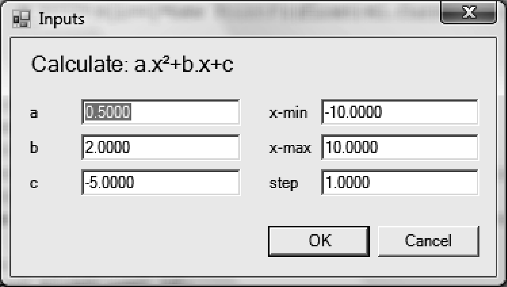
Figure 11.3 Dialog box for input
We take an example in which we use .NET WinForms as user interface. The objective is to enter numbers that are needed to allow us to plot a graph of a quadratic function. The dialog box is shown in Figure 11.3. The corresponding .NET code is:
namespace CS_GUI {
public partial class InputForm: Form {
// Data members
private double m_a;
private double m_b;
private double m_c; private double m_xMin; private double m_xMax; private double m_step;
public InputForm(double a, double b, double c,
double xMin, double xMax, double step) {
InitializeComponent(); // Copy the input m_a=a; m_b=b; m_c=c; m_xMin=xMin; m_xMax=xMax; m_step=step; // Fill the controls FillControls();
} // ... other functions.
/// Fill the controls with the quadratic equation values. private void FillControls() {
// Fill the controls with the data member values
txtA.Text=String.Format("{0:f4}", m_a);
txtB.Text=String.Format("{0:f4}", m_b);
txtC.Text=String.Format("{0:f4}", m_c); txtXMin.Text=String.Format("{0:f4}", m_xMin); txtXMax.Text=String.Format("{0:f4}", m_xMax); txtStep.Text=String.Format("{0:f4}", m_step);
} /// Accept the values from the controls. private void AcceptControls() {
// Copy control values to data members m_a=Double.Parse(txtA.Text); m_b=Double.Parse(txtB.Text); m_c=Double.Parse(txtC.Text); m_xMin=Double.Parse(txtXMin.Text); m_xMax=Double.Parse(txtXMax.Text); m_step=Double.Parse(txtStep.Text);
} /// OK button was pressed. private void btnOK_Click(object sender, EventArgs e) {
AcceptControls();
} private void ValidatingDouble(object sender, CancelEventArgs e) {
double val; // First clear the last error errorProvider.SetError(sender as Control, ""); // Try to parse the double if (Double.TryParse((sender as TextBox).Text, out val)==false) {
errorProvider.SetError(sender as Control, "Value must be a double"); e.Cancel=true;
} }
} }
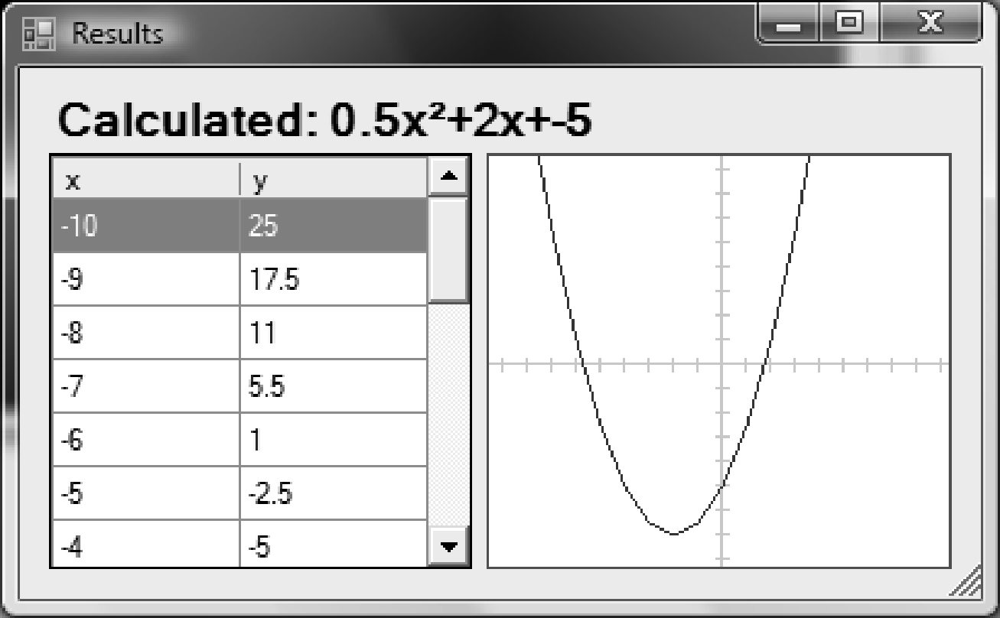
Figure 11.4 Output from C# form
The output is shown in Figure 11.4 and the corresponding form code is:
namespace CS_GUI {
public partial class ResultsForm: Form {
private PointF[] m_points; public ResultsForm(double a, double b, double c,
IEnumerable<double> xValues, IEnumerable<double> yValues) {
InitializeComponent(); // Fill the formula lblFormula.Text=String.Format(lblFormula.Text, a, b, c); // Fill the grid
IEnumerator<double> e1=xValues.GetEnumerator();
IEnumerator<double> e2=yValues.GetEnumerator();
// Add the rows int count=0; while (e1.MoveNext()) {
e2.MoveNext(); grid.Rows.Add(e1.Current, e2.Current); count++;
}
// Turn the x- and y-values in an array of PointF e1.Reset(); e2.Reset(); m_points=new PointF[count]; int i=0; while (e1.MoveNext()) {
e2.MoveNext(); m_points[i++]=new PointF((float)e1.Current,
(float)e2.Current); }
} /// Draw the panel. private void graphPanel_Paint(object sender, PaintEventArgs e) {
Pen pen; float tickSize=0.3f; float thickOffset;
Graphics g=e.Graphics; g.TranslateTransform(graphPanel.Width*0.5f, graphPanel.Height*0.5f); g.ScaleTransform(10.0f, -10.0f);
pen=new Pen(Color.LightGray, 0.0f);
// Draw x-axis g.DrawLine(pen, -graphPanel.Height*5f, 0.0f,
graphPanel.Height*5f, 0.0f);
thickOffset=0; while (thickOffset<graphPanel.Width*5f) {
// Draw ticks g.DrawLine(pen, thickOffset, tickSize, thickOffset, -tickSize); g.DrawLine(pen, -thickOffset, tickSize, -thickOffset, -tickSize); thickOffset+=1.0f;
}
// Draw y-axis g.DrawLine(pen, 0.0f, -graphPanel.Width*5f, 0.0f,
graphPanel.Width*5f);
thickOffset=0; while (thickOffset<graphPanel.Height*5f) {
// Draw ticks g.DrawLine(pen, -tickSize, thickOffset, tickSize,
thickOffset); g.DrawLine(pen, -tickSize, -thickOffset, tickSize, -thickOffset); thickOffset+=1.0f;
} // Draw graph pen=new Pen(Color.Blue, 0.0f); e.Graphics.DrawLines(pen, m_points);
}
}
/// The panel was resized. private void graphPanel_Resize(object sender, EventArgs e) {
// Ensure the panel is redrawn graphPanel.Refresh();
} }
Finally, we create a test program containing a mix of native C++ and C++/CLI. The first function creates the vector of independent (abscissa) values:
using namespace System::Collections::Generic;
template <typename T> std::vector<T> CreateValues(T min, T max, T step) {
// Calculate the number of elements int count=(int)((max-min)/step)+1;
// Create the vector to store the values std::vector<T> values(count);
// Create the values for (int i=0; i<count; i++) values[i]=min+step*i;
}
// Return the vector with values return values;
We now use the C++ code to produce the output that we see in Figure 11.4.
int main() {
// The parameters for the quadratic equation double a=0.5; double b=2.0; double c=-5.0; double xMin=-10.0; double xMax=10.0; double step=1.0;
while (true) {
// Create and show the input dialog box CS_GUI::InputFormˆ inputForm=gcnew CS_GUI::InputForm (a, b, c, xMin, xMax, step); if (inputForm-> ShowDialog()==System::Windows::Forms::DialogResult::Cancel) return 0;
// Retrieve the inputted parameters from the input dialog box inputForm->GetParameters(a, b, c, xMin, xMax, step);
// Create a vector with the x-values std::vector<double> xValues=CreateValues(xMin, xMax, step); int size=xValues.size();
// Create a vector for the y-values std::vector<double> yValues(size);
// Calculate the y-value of quadratic equation for each x-value for (int i=0; i<size; i++) {
double x=xValues[i]; yValues[i]=a*x*x + b*x + c;
} // Create .NET arrays for passing them to the results form array<double>ˆ xarr=gcnew array<double>(size); array<double>ˆ yarr=gcnew array<double>(size); // Copy vectors to .NET array for (int i=0; i<size; i++) xarr[i]=xValues[i]; for (int i=0; i<size; i++) yarr[i]=yValues[i]; // Show the results // Due to a bug in Visual Studio 2005, the safe_cast<> is needed // to pass an array as IEnumerable. // With Visual Studio 2008, the safe_cast<> can be left out. CS_GUI::ResultsFormˆ resultsForm=gcnew CS_GUI::ResultsForm(a, b, c,
safe_cast<IEnumerable<double>ˆ>(xarr), safe_cast<IEnumerable<double>ˆ>(yarr));
}
resultsForm->ShowDialog(); }
C++/CLI offers a number of advantages to developers. First, it is easy to use and it allows us to leverage existing C++ code in .NET. Second, it is easy to accesss .NET code from C++ and finally it combines the efficiency of C++ with the rich functionality and ease of use of the .NET framework.
Intheinterest of completeness wegive adiscussionof .NETfunctionality for creating metadata and IL code. When the CLR loads an assembly it converts the IL code into the native code of the machine in use, for example x86. It is the CLR’s JIT (Just-In-Time) compiler that performs the conversion.
In general, as developer you need not be concerned with dynamic code generation but we needed it when we ported C++ template vector and matrix classes to the corresponding generic C# classes. It turns out that operator overloading does not work with generic types in the sense that the code is not generated when the generic type is replaced by a concrete type (in contrast to C++ where template specialisation is automatic). Thus, we must generate the
code using the classes in the System.Reflection.Emit namespace. We discuss how we have achieved this. Other applications where dynamic code generation is used in .NET are:
The .NET Regex (Regular Expression) API that generates code for types tuned to specific regular expressions. Code generation is sometimes called code emission. Dynamically generating transparent proxies for Remoting (remoting refers to the ability of an application to communicate with another application in another process or across computer network boundaries). LINQ (Language Integrated Query) uses dynamic code generation to dynamically generate certain specific data classes. We discuss LINQ in Chapter 19.
A discussion of dynamic code generation will be restrictedto how we managed to implement operator overloading for generic vectors and matrices. In general, it takes some effort to learn the API and it will not be possible to discuss all aspects (for a fuller treatment, see Albahari 2010). In general, the steps to dynamically create code are:
1. Create an empty method.
2. Put the method’s arguments on the evaluation stack.
3. Generate an IL instruction (the so-called opcode).
4. Put a call on the IL stream to call the varargs method.
5. Call the opcode to ‘end’ the method definition.
6. Call the method in client code. We now discuss each of these topics in greater detail.
This is a lightweight class (no assemblies are needed and generated methods are garbagecollected (assemblies cannot be unloaded from memory unless the associated application has beentorndown)).Itsresponsibilityistogeneratemethodsonthefly.Itisusefulforsimpletasks, such as our current application, namely generic operator overloading. DynamicMethod is derived from MethodInfo (recall that this class describes the attributes of a method and it provides access to method metadata) and has a number of constructors, one of which we use in the sequel. It has the following input parameters:
The name of the dynamic method (this is a string). The return type of the dynamic method. The type array of input arguments. The type to which the dynamic method is logically related.
The types used can be generic or concrete. DynamicMethod has the method GetIlGenerator that generates IL instructions. It produces an instance of ILGenerator containing two important methods:
Emit: put instructions into the IL stream for the JIT compiler. EmitCall: put an instruction call onto the IL stream for the JIT compiler.
The OpCodes class provides field representations of IL instructions for emission by the IL generator class members.
Finally, having created the method we can call it in two different ways: Invoke: dynamically invokes the method. CreateDelegate: creates a delegate that can subsequently be called. It is easier to use than Invoke and it eliminates the overhead of dynamic method invocation. We now give a very simple example to show how to use the above syntax. It is a program
to display the text ‘Hello World’ on the console:
using System; using System.Reflection.Emit; using System.Reflection;
namespace CodeGeneration101 {
public class Test {
delegate int BinaryFunction(int n1, int n2); static void Main() {
DynamicMethod method = new DynamicMethod("MyFirst", null, null, typeof(Test)); ILGenerator gen = method.GetILGenerator();
} }
gen.EmitWriteLine((string)"Hello World"); gen.Emit(OpCodes.Ret);
method.Invoke(null, null); }
We now discuss this syntax in more detail.
The evaluation stack is needed when calling methods with arguments. We first need to push (or load) the arguments onto the evaluation stack and we then call the method. The method then pops the arguments that it needs from the stack. To load an argument onto the stack that will be passed into a dynamic method we use opcodes of type Ldarg and Ld_xxx where xxx has the values 0,1,2,. . . In the class OpCodes there are many opcodes for addition, multiplication, subtraction and returning a computed value from an evaluation stack (and many more that we do not discuss in this book).
Let us take an example; one method has two input arguments and the other method has three input arguments. The corresponding delegate types are:
delegate int BinaryFunction(int n1, int n2); delegate int TernaryFunction(int n1, int n2, int n3);
We first consider creating a dynamic method that adds two numbers. The code is:
// Now use delegates DynamicMethod method2
= new DynamicMethod("MySecond", typeof(int), new[] {typeof (int), typeof (int)}, typeof(void));
ILGenerator gen2 = method2.GetILGenerator();
// Put arguments onto evaluation stack gen2.Emit(OpCodes.Ldarg_0); gen2.Emit(OpCodes.Ldarg_1);
gen2.Emit(OpCodes.Add);
gen2.Emit(OpCodes.Ret);
BinaryFunction f2
= (BinaryFunction) method2.CreateDelegate(typeof(BinaryFunction));
Console.WriteLine("Using delegate: {0}",f2(1, 2)); // 3 int result = (int)method2.Invoke(null, new object[] { 2, 4 }); // Now invoke the dynamically generated method
Console.WriteLine("Using delegate: {0}", f2(2, 6)); // 8
Console.WriteLine("Using delegate: {0}", f2(12, 8)); // 20
Console.WriteLine("Using delegate: {0}", f2(-12, 8)); // -4 We now consider a dynamic method that multiplies three numbers:
// Put arguments onto evaluation stack gen3.Emit(OpCodes.Ldarg_0); gen3.Emit(OpCodes.Ldarg_1); gen3.Emit(OpCodes.Mul); gen3.Emit(OpCodes.Ldarg_2); gen3.Emit(OpCodes.Mul); gen3.Emit(OpCodes.Ret);
TernaryFunction f3
= (TernaryFunction) method3.CreateDelegate(typeof(TernaryFunction));
Console.WriteLine("Using delegate: {0}", f3(1, 2, 2)); // 3 int result3
= (int)method3.Invoke(null, new object[] { 2, 4, 6 });
// Now invoke the dynamically generated method
Console.WriteLine("Using delegate: {0}", f3(2, 6, 1)); // 12
Console.WriteLine("Using delegate: {0}", f3(12, 8, 2)); // 192
Console.WriteLine("Using delegate: {0}", f3(-12, 2, 2)); // -48
We now consider the problem of operator overloading for generic vectors and matrices in an attempt to emulate the functionality in C++ template classes (see Duffy 2004a). For each binary operator we need to generate dynamic code and in these cases we assume that all underlying types are generic. We have erred on the side of generality as we have used potentially three different data types for the operands and the return type. To this end, we define the most general operator as a delegate type:
// Binary operator delegate for generictypes public delegate TResult BinaryOperatorT<TLeft, TRight, TResult>
( TLeft left, TRight right );
We now encapsulate the desired operator functionality in a factory class:
public static class GenericOperatorFactory<TLeft, TRight, TResult, TOwner> {
private static BinaryOperatorT<TLeft, TRight, TResult> subtract; private static BinaryOperatorT<TLeft, TRight, TResult> multiply; // +, * and - defined here
}
We concentrate on the code for vector addition. The dynamic code now becomes:
// Addition public static BinaryOperatorT<TLeft, TRight, TResult> Add {
get {
if( add == null ) { // Create a dynamic method and an IL generator DynamicMethod method = new DynamicMethod("op_Addition", typeof(TResult),new Type[]{typeof(TLeft),typeof(TRight)}, typeof(TOwner));
ILGenerator generator = method.GetILGenerator(); // Put arguments on the evaluation stack
generator.Emit( OpCodes.Ldarg_0 );
generator.Emit( OpCodes.Ldarg_1 );
if( typeof( TLeft ).IsPrimitive ) {
//Add 2 arguments and push result onto evaluation stack generator.Emit( OpCodes.Add );
} else {
MethodInfo info = typeof( TLeft ).GetMethod ( "op_Addition", new Type[] { typeof( TLeft ), typeof( TRight ) }, null ); generator.EmitCall( OpCodes.Call, info, null );
} // Push return value on the callee's evaluation stack generator.Emit( OpCodes.Ret ); // Finish dynamic method and create a delegate add = (BinaryOperatorT<TLeft,TRight,TResult>)
method.CreateDelegate( typeof( BinaryOperatorT<TLeft, TRight, TResult> ) );
} return add;
} }
The above code is highly reusable and it can be used in multiple generic classes that (need to) support operator overloading. Our interest, however, is in using it with generic vectors and
matrices, as can be seen in the following code:
public class Vector<T> : Array<T> {
private static BinaryOperatorT<T, T, T> addTT; private static BinaryOperatorT<T, T, T> subTT; private static BinaryOperatorT<T, T, T> mulTT;
// ... }
// Operator overloading for '+' operator. Adding v2 to v1 public static Vector<T> operator + ( Vector<T> v1, Vector<T> v2 ) {
Vector<T> result = new Vector<T>( v1.Length, v1.MinIndex ); int delta = v1.MinIndex - v2.MinIndex;
}
if( addTT == null ) {
addTT = new BinaryOperatorT<T,T,T> (GenericOperatorFactory<T, T, T, Vector<T>>.Add );
} for( int i = v1.MinIndex; i <= v1.MaxIndex; i++ ) {
result[ i ] = addTT( v1[ i ], v2[ ( i - delta ) ] );
} return result;
Finally, we show an example of use:
int M = 10; Vector<double> v1 = new Vector<double>(M); Vector<double> v2 = new Vector<double>(v1.Size); for (int j = v1.MinIndex; j <= v1.MaxIndex; j++) {
v1[j] = 1.0; v2[j] = 2.0;
} Vector<double> v3 = new Vector<double>(v1.Size); // Now using operator overloading + (other operators are similar) v3 = v1 - v2; for (int j = v3.MinIndex; j <= v3.MaxIndex; j++) {
Console.Write("{0}, ", v3[j]); }
We have now completed our short discussion of dynamic code generation in C#. There are many other topics that we have not discussed, for example:
Creating local variables. Branching constructs (while, do and for loops).
Instantiating objects. Exception handling for dynamic code. Emitting assemblies and types. Emitting methods, fields, properties and constructors; attaching attributes. Emitting generic methods and types.
A full discussion of these topics is given in Albahari 2010.
At some stage in the software lifecycle process it becomes necessary to have some way of managing an application and creating isolated run-time units. In general, we wish to manage memory boundaries, create containers for loaded assemblies and application configuration settings and define communication boundaries for distributed applications. To this end, we introduce .NET application domains. Each .NET process hosts a single application domain called the default domain which the CLR automatically creates when the process starts. It is also possible to create additional application domains within the same process. This solution provides isolation and it has less overhead problems if we create separate processes.
We create and destroy an application domain by calling static methods of the class AppDomain, as the following example shows:
static void Main() {
// Create app dom (static method) AppDomain dom = AppDomain.CreateDomain("Hello domain");
}
dom.ExecuteAssembly("Hello.exe"); AppDomain.Unload(dom); // Destroy app dom (static method)
All application domains are automatically unloaded when the default application domain is unloaded. It is possible to determine if an application domain is the default one, for example, as well as other information:
public static void ShowDomainInfo() { // Display information concerning the current domain
AppDomain ad = AppDomain.CurrentDomain; Console.WriteLine(); Console.WriteLine("FriendlyName: {0}", ad.FriendlyName); Console.WriteLine("Id: {0}", ad.Id); Console.WriteLine("IsDefaultAppDomain: {0}",
ad.IsDefaultAppDomain()); }
11.8.2 Multiple Application Domains The added value of multiple application domains is that (Albahari 2010):
They provide process-like isolation with minimum overhead. They can be used to unload assembly files without restarting the process.
Each domain has separate memory and there is no interaction between objects in different domains. The values of static objects are different for each domain. We now discuss the method that executes a method in another domain. An example of use is:
// ... AppDomain dom_2 = AppDomain.CreateDomain("<Second domain>"); dom_2.DoCallBack(new CrossAppDomainDelegate(Do)); // ...
static void Do() {
Console.WriteLine("A method in another AppDom {0} called",
AppDomain.CurrentDomain.FriendlyName); }
Since Do() is a static method it then points to a type rather than an instance of a class. This makes the delegate domain-independent because it can run in any domain. In particular, it is not tied to the original domain. We note that when we call a method in another domain the calling code will block until the method has finished executing. If we wish to run the method concurrently with the calling code we then use multi-threading. We take an example based on Albahari 2010. In this case we create an application to simulate 10 concurrent client logins to test an authentication system. The possible solutions are:
Solution 1: Start 10 processes by calling Process.Start 10 times (we discuss processes and threads in Chapters 24, 25 and 26).
Solution 2: Start 10 threads in the same process and domain.
Solution 3: Start 10 threads in the same process with each thread in its own application domain.
Solution 1 is resource-intensive and messy to program. The advantage, however, is that each process manages its own resources. This is also a disadvantage because the processes cannot (easily) share data. Solution 2 has its own disadvantages, especially if the client code is not thread-safe, for example if it has static variables. As we discuss in Chapter 25, we can add locks and critical sections in client code but this will adversely affect execution speed. Finally, Solution 3 seems to be most advantageous in terms of performance and interoperability; in other words, each thread remains isolated (each has independent state) and each one can be accessed by the hosting program.
Let us take an example. We simulate client logins in an authentication program. We wish to isolate clients by letting each one be in its own application domain. In particular, we use static data members. To this end, we implement the following steps:
1. Create 10 application domains and 10 threads.
2. Start each thread, each one in its own application domain.
3. Wait for threads to finish.
4. Unload the application domains.
The corresponding documented code is:
using System; using System.Threading;
class TestAppDom {
static void Main() {
int N = 10; // Create N application domains and N threads AppDomain[] domains = new AppDomain[N]; Thread[] threads = new Thread[N]; for (int j = 0; j < N; j++) {
domains[j] = AppDomain.CreateDomain("Client Login" + j); threads[j] = new Thread(LoginOtherDomain);
} // Start each thread; each thread has its own app domain for (int j = 0; j < N; j++) {
threads[j].Start(domains[j]);
} // Wait for threads to join at a barrier for (int j = 0; j < N; j++) {
threads[j].Join();
} // Unload all application domains for (int j = 0; j < N; j++) {
AppDomain.Unload(domains[j]);
} // Destroy app dom (static method)
} // Parametrized thread start static void LoginOtherDomain(object domain) {
((AppDomain)domain).DoCallBack(Login); }
static void Login() {
Client.Login("Andrea", ""); Console.WriteLine("Logged in as: " + Client.currentUser
+ " on " + AppDomain.CurrentDomain.FriendlyName); }
public class Client {
public static string currentUser = ""; public static void Login(string name, string password) {
if (currentUser.Length == 0) {
// Sleep to simulate authentication Thread.Sleep(500);
} }
} }
// Record the current user currentUser = name;
As already mentioned, we discuss multi-threading and parallel processing in Chapters 24, 25 and 26.
Application domains can use named slots to share data. A slot is automatically created the first time that it is generated. If the data are serialisable they are then copied to the other application domain. An example of use is:
namespace ApplicationDomains {
class TestAppDom {
static void Main() {
// Create app dom (static method) AppDomain dom = AppDomain.CreateDomain("<Domain A>");
}
// Write to a named slot called "key" dom.SetData("key", "here it is ...");
dom.DoCallBack(Do); AppDomain.Unload(dom); // Destroy app dom (static method)
} static void Do() {
// Read message from "Message" data slot Console.WriteLine(AppDomain.CurrentDomain.GetData("key"));
} }
A more flexible way to communicate with another application is by using a proxy and Remoting. To this end, the class that is being accessed (‘remoted’) must be derived from MarshalByRefObject. Then the client must call a method on the remote domain’s AppDomain class in order to remotely instantiate the object. An example of use is:
namespace ApplicationDomains {
class TestAppDom {
static void Main() {
// Create app dom (static method) AppDomain domain = AppDomain.CreateDomain("<IntraProcessRemoting>");
MyClass obj = (MyClass)domain.CreateInstanceAndUnwrap( typeof(MyClass).Assembly.FullName, typeof(MyClass).FullName);
Console.WriteLine(obj.Hello()); AppDomain.Unload(domain); // Destroy app dom (static method)
} public class MyClass : MarshalByRefObject {
public string Hello() {
return "Hello from " + AppDomain.CurrentDomain.FriendlyName;
} public override object InitializeLifetimeService() {
return null; }
}
} }
In this case we get back a transparent proxy to the object obj. It is not possible to retrieve obj because the application domains are isolated. When a method such as Hello() is called a message is automatically constructed and then forwarded to the remote application domain and then the method is executed on the real object obj.
In this example the client runs on the default application domain.
We have provided a short introduction to application domains in .NET. They are useful in advanced applications such as thread-safe parallel processing, unit and load testing and
application patching. In particular, they can be used when creating robust and thread-safe parallel applications, as discussed in Chapters 24, 25 and 26.
We have introduced a number of advanced features in the .NET framework that help developers organise and manage their applications. In particular, we can apply them in fixed income applications that we design as a set of loosely coupled software components.
1. Reflection, Enumerating Events and Properties Write code to enumerate the properties and events in the interface of class Option in
section 11.4.1.
2. Reflection, Small Framework for Dynamic Method Invocation The goal of this exercise is to create a small console-based interactive framework to
create instances of class Option and to choose which of its methods to call at run-time. You use the Reflection API to extract the fields, methods and method parameters and present them to the user who initialises the fields and parameters as well as choosing which method to call.
Discuss/answer the following:
a) Create suitable data structures to hold and capture information relating to Option; for example, you can use Dictionary<int, string> to hold field names (as strings) and an integer index that the user can use as a means of identifying a field. The same data structure can be used to hold information on methods and parameters. You will need to create a number of other data structures and you will discover them as you elaborate the design of the framework.
b) You need to support exception handling to catch and recover from invalid input, for example when initialising the input parameters to methods.
c) Use the classes in the Reflection API in this exercise. Which ones are most useful?
3. Creating and Using Assemblies This exercise is a continuation of the discussion that we introduced in Section 11.2.1.
In particular, we wish to encapsulate common functionality in assemblies. We create these assemblies from Class Library projects that contain the source code and resources that clients can use. In the interest of simplicity we define a unique (nested) namespace for each reusable assembly that we wish to create. We have already proposed the names for these namespaces in Section 11.2.1. The objective is to create assemblies for 1) vectors and matrices, 2) dates and related functionality, 3) Interpolators and 4) Excel Visualisation package. The source code that you need is in the appropriate subdirectory of the Utilities directory on the software distribution medium. Concentrate on one of the above and work out the steps from beginning to end.
Answer the following questions:
a. Create a Class Library project. Give it a name and place the source code and resources that are needed for it to compile and build.
b. Build the project and make sure that there are no compiler or linker errors.
c. We now wish to test the functionality in the assembly. To this end, we create a Console project containing application code to test the functionality from the assembly. You can create a private assembly – in which case the dll is in the same directory – or by placing the dll in the GAC (Global Assembly Cache). In the latter case the assembly needs a strong name and it needs to be signed.
12
Bond Pricing: Design, Implementation and Excel Interfacing |
In this chapter we discuss a complete application whose goal is to calculate the price and yield of various kinds of bonds. We describe how to implement a software system that realises this goal. We describe the requirements of the financial problem and we implement them in C# using object-oriented techniques such as inheritance, aggregation and composition. The system we describe in this chapter is based on the information flow from input to output. The system displays bond yield and bond price in Excel:
Createafixedratebondofagiventype(forexample,German,FrenchandItaliangovernment bonds). We associate specific characteristics – such as the number of days between trade date and settlement date, coupon frequency and the algorithm to compute coupons – with the given bond. In particular, we pay attention to how accrued interest is computed. This creational process is achieved using Excel. Using the scheduling subsystem (containing class Schedule) we generate an array of payment dates. We create a hierarchy of Schedule classes to suit different bond models. We present the results in Excel; we create an Excel add-in that allows the user to enter data, call a worksheet function and then present the results in Excel. We discuss Excel add-ins in more detail in Chapters 21 and 22.
We extend and formalise this software process in Chapter 18. We assume that the reader is familiar with the bond terminology, concepts and formulae as introduced in Chapter 7.
We discuss a simple software framework that uses bonds. The code is geared to a trader’s requirements namely, to support a variety of bond features:
Coupon types: fixed rate, zero coupon, multi coupon (i.e. a bond where coupons may have different values). Payment frequency: annually, semi-annually, quarterly, monthly or at maturity. Day count for coupon and accrued interest. Maturity date. Redemption amount.
The combination of these terms allows us to cover the structure of many bonds traded in the market. In this way we can use a common framework to handle bonds from different issuers (government, bank, supra national entity, agency, corporation, etc.) and different level of seniority (senior and subordinated).
For each set of bond properties we identify a concrete bond, and we define four major use cases, namely:
U1: Compute bond price given bond yield.
U2: Compute bond yield given bond price using different conventions.
U3: Save quoted bond data to permanent (persistent) storage.
U4: Compare yields of various bonds by varying their prices; display the results in Excel. In concrete terms, we implement the following steps in the following sections:
Create a C# class hierarchy to manage the above mentioned bond types. Implement the mathematical formulae that compute bond price and bond yield. Facilitate I/O operations (for example, I/O for the Console and Excel). Connect to Excel, loading data into memory and serialisation.
TheC#codedoesnothandlefloatingratenotes;however,wegivethereaderallthenecessary tools to do this (see Section 12.11.3).
Before we discuss the C# classes that model bonds we need some algorithms to generate arrays of dates for use in scheduling. These are multi-period schedules based on the start and end dates of each period as well as the payment date of each period. Here is the class that implements the needed functionality:
[Serializable] public class Schedule {
// Data members public Date[] fromDates; // Array of starting date of each period public Date[] toDates; // Array of end date of each period public Date[] payDates; // Array of payment date
Date startDate; // Starting date of schedule Date endDate; // Ending date of schedule string stringTenor; // Tenor of frequency(e.g. 3m, 6m, 1y...) Rule generatorRule; // Rule generating the period
// Business day adjustment rule for roll of end date of each period BusinessDayAdjustment busDayAdjRolls;
// Business day adjustment rule for payment date of each period BusinessDayAdjustment busDayAdjPay;
// The leg between the end date of each period and the payment //date as string (for example 0d,1d...) string payLeg;
//.. Other methods, see distribution medium }
We also have a class called FloatingSchedule used to handle floating rate notes. This class is derived from Schedule. It is similar to Schedule but it is used when we need a
fixing date for each period (e.g. in a floating rate note the fixing date for Euribor). The fixing date is computed as the start date minus a lag (or the end date minus a lag if the index is fixed in arrears). The class has the following data members:
public class FloatingSchedule : Schedule {
// Data members // Date in which we will observe the fixing public Date[] fixingDates; // Lag of days to observe as numbers of business days public int numOfBusDays; // True if leg from endDate, false if leg from start date public bool arrears; // ... New methods
}
Note that Schedule and FloatingSchedule classes are new versions of the DateSchedule class presented in Chapter 7.
«C# class» FloatingSchedule |
|
«C# class» Schedule |
FloatingSchedule
1
Schedule
1
Date
«C# class» Date
Date
Figure 12.1 Schedules class hierarchy and special contract dates
The software system supports a number of bond types including zero coupon bonds, fixed coupon bonds and multi-coupon bonds. To this end, we create a class hierarchy consisting of an abstract base class BaseBond that contains data and behaviour that are common to all bond types, as shown in Figure 12.2.
The base class for all bonds has the following member data:
[Serializable] public abstract class BaseBond {
// See Terminology and Convention The PRM Handbook // I.B.1 General Characteristics of Bonds
// Member data protected Date today; // Trading date (today)
protected Date settlementDate; // Settlement date of the bond protected int settlementDaysLag; // Lag in business day between
// today (trade date of the bond) and the settlement date protected Schedule schdl; // Date schedule of the bond protected Date startDateBond; // Start date of the bond protected Date endDateBond; // End date of the bond protected double faceValue; // Face value of the bond (i.e. 100 or 100% or..) protected Dc dayCount; // Day count of coupon protected int iNextCoupon; // Index of next coupon date protected double currentCoupon; // Current coupon as rate (x% or 0.0x) protected double[] cashFlows; // Coupon cash flows amount,
// no face value at the end protected Date[] cashFlowsDates; // Dates in which cash flows occur protected Date lastCouponDate; // Record date protected Date nextCouponDate; // Record date protected double accrued; // Accrued interest amount
// ... };
«C# class» BaseBond |
«C# class» Schedule |
|
«C# class» BondZeroCoupon
«C# class»
BondFixedCoupon
«C# class»
BondMultiCoupon
«C# class» BondDBR
Figure 12.2 Bond class hierarchy
«C# class» BondBTAN
«C# class» BondBTP
The base class has the following main methods:
// Calculate Yield according to a customized convention (freq, DayCount and compounding), // given a clean price public double Yield(double cleanPrice, int freq, Dc DayCount, Compounding compounding){..}
// Calculate Clean price from Yield according to a customized convention (freq,DayCount and // compounding)
public double CleanPriceFromYield(double yield, int freq, Dc DayCount, Compounding compounding){..} // Calculate DirtyPrice, see Choudhry, M. (2010a) public double DirtyPrice(double CleanPrice){..}
// Calculate Accrued Interest as amount (not as rate), see Choudhry, M. (2010a) public double AccruedInterest(){..}
Derived classes inherit from this class and they must implement the following abstract method:
// Derived classes must implement this method. // Will fill double[] cashFlows and Date[] cashFlowsDates. abstract public void CashFlowsAndDates();
For example, for a fixed coupon bond the implementation of this method for the fixed coupon bond class is:
// Calculate cash flows and pay dates, used in constructor public override void CashFlowsAndDates() {
// Calculate cash flows and pay dates Func<double, double> CalculateEachCash
= x => x * currentCoupon * faceValue; // Classic formula // Cast from IEnumerable<double> this.cashFlows
= schdl.GetYFVect(dayCount).Select(CalculateEachCash).ToArray(); this.cashFlowsDates = schdl.payDates; // Pay dates
}
Figure 12.3 shows the bond class structure in more detail. Having understood the structure we are then in a position to appreciate how the application has been designed.
The class hierarchy presented in Figure 12.4 contains some bond types that are traded in the markets, in particular German (DBR), Italian (BTP) and French (BTAN) fixed coupon bonds. Each of these bonds has specific characteristics such as the number of days between trade date and settlement date, coupon frequency and the manner in which the coupon and the accrued interest are calculated.
For example, in the case of a DBR bond the constructor and accrued interest methods are:
[Serializable] public class BondDBR : BondFixedCoupon {
// Constructor:it use base constructor public BondDBR(Date Today, Date StartDateBond, Date EndDateBond, double Coupon) :
base(Today, StartDateBond, EndDateBond, Coupon, "1y", Rule.Backward, 3, BusinessDayAdjustment.Unadjusted, BusinessDayAdjustment.Following, Dc._30_360, "0d", 100)
{ } // Calculate accrued interest public new double AccruedInterest() {
// Uses ACT_ACT_ISMA see "the Actual/Actual Day count Fraction - paper // for USE with the ISDA Market Convection Survey -3rd June, 1999
// yf*Coupon*Nominal
}
return lastCouponDate.YF_ACT_ACT_ISMA(settlementDate,
nextCouponDate) * currentCoupon * faceValue; }
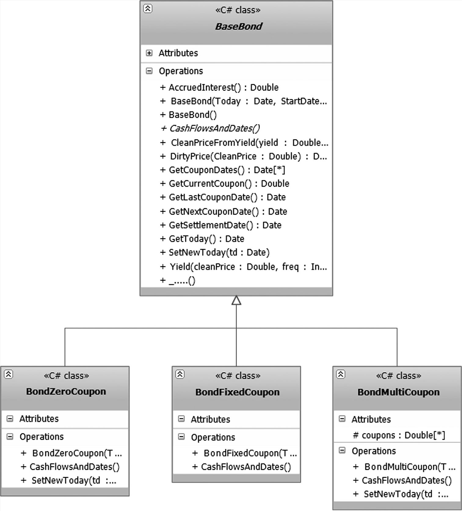
Figure 12.3 Bond hierarchy methods
The code for the constructor and for computing the accrued interest in the case of BTP bonds is:
public BondBTP(Date Today, Date StartDateBond, Date EndDateBond, double Coupon) : base(Today, StartDateBond, EndDateBond, Coupon, "6m", Rule.Backward, 3, BusinessDayAdjustment.Unadjusted, BusinessDayAdjustment.Following, Dc._30_360, "0d", 100) { ... ... ..... }
and:
public new double AccruedInterest() {
// Days we hold the bond from last coupon date double daysHeld = lastCouponDate.D_EFF(settlementDate);
// Days in current coupon period double daysPeriod = lastCouponDate.D_EFF(nextCouponDate);
}
// Six-digit for 1K euro return Math.Round((currentCoupon / 2) * (daysHeld / daysPeriod), 7)*faceValue;
«C# class» – Attributes BondFixedCoupon |
– Operations + BondFixedCoupon(T... + CashFlowsAndDates() |
«C# class»
«C# class»
«C# class»
Attributes – Operations
Attributes – Operations
Attributes – Operations
–
–
–
+ AccruedInterest() :...
+ AccruedInterest() :... + BondBTAN(Today :...
+ AccruedInterest() :...
+ BondDBR(Today : D...
+ BondBTP(Today : D...
Figure 12.4 Special bond types in the market place
Having designed and implemented the bond class hierarchy we now discuss some use cases:
Calculate discount factors (internally used in the calculation of yield). Calculate the yield given the price. Calculate the price given the yield.
Inordertocalculateyieldweneedsomenonlinearsolvers,forexampletheNewton-Raphson and Bisection methods. The classes are shown in Figure 12.5.
«C# class» MathTools Attributes
|
«C# class» NumMethod Attributes
|
|||
+ CalCDF(r : Double, yf : Doubl... + YieldFromFullPrice(fullPrice :... + FullPriceFromYield(yield : Dou... Operations
|
+ BisMet(fname : myMethodDel... + NewRapNum(fname : myMet... + NumMethod() + NewRap(fname : myMethod... Operations
|
|||
Figure 12.5 Computing bond price and bond yield
«C# delegate» NumMethod::myMethodDelegateAttributes
|
||
+ Invoke(x : Double) : Double Operations
|
The full code can be found on the software distribution medium. The three main methods implement the following functionality:
Calculate the full bond price from yields. Calculate the dirty price from the yield. Calculate the yield from the dirty price.
In yield calculations we need to solve a nonlinear system and to this end we have created code for the Newton-Raphson and Bisection nonlinear solvers.
Let us look at an example to show what is needed when calculating the yield from the full price:
public static double YieldFromFullPrice(double fullPrice, double yieldGuess, Date[] CashFlowsDate, double[] CashFlows,Freq freq, Dc dc, Date SettlementDate, Compounding compounding, double FaceValue)
Finally, we define a number of enumerations that we need in the above function:
// Payment Frequency public enum Freq {
Once = 0, Annual = 1, SemiAnnual = 2, Quarterly = 4, Monthly = 12, Weekly = 52, Daily = 365
};
// DayCount public enum Dc {
_30_360 =1, _Act_360 =2, _Act_Act, _Act_365, _30_Act, _30_365
}
// Compounding public enum Compounding {
Simple, Continuous, Compounded
}
More enumeration types are defined in the C# file Definitions.cs.
In this section we give a short overview of how to use Excel add-ins. In particular, we discuss user-defined functions (UDF) that we can call as worksheet functions. We first connect to Excel; this process is explained in detail in Chapters 21 and 22. The UML class structure is shown in Figure 12.6 and we briefly describe the classes here:
ICalculator: This is the interface that contains the abstract methods that will be implemented by classes. XLBond: This class performs the connection to Excel and it implements the methods from the interface ICalculator:
// Makes class visible in COM regardless of the assembly COM // visible attribute. [ComVisible(true)] [ProgId("XLFormulas.Bond")] // Explicit ProgID. [Guid("784C9CF3-A589-4bf1-89E3-37B041396D30")] // Explicit GUID. [ClassInterface(ClassInterfaceType.None)] // Implement COM interfaces. [Serializable]
public class XLBond: ProgrammableBase, ICalculator, Extensibility.IDTExtensibility2 {
// Static dictionary populates using LoadBondFixedCoupon: if you // use different session of excel you will lose // BondDictionaryData it is used as example: it is better to use // xml or serialize dictionary. static Dictionary<string, BaseBond> BondDictionaryData
= new Dictionary<string, BaseBond>();
// The Excel application. Used in volatile worksheet functions. private Excel.Application m_xlApp=null;
// more ... }
ProgrammableBase: the class that is responsible for Windows Registry settings:
// No need to be COM visible when derived class uses // "ClassInterfaceType.None" option. [ComVisible(false)] [Serializable]
public class ProgrammableBase {
[ComRegisterFunction()]
public static void RegisterFunction(Type t) {
// Create the "Programmable" sub key. Microsoft.Win32.Registry.ClassesRoot.CreateSubKey
(GetSubKeyName(t, "Programmable")); }
[ComUnregisterFunction()] public static void UnregisterFunction(Type t) {
// Delete the "Programmable" sub key. Microsoft.Win32.Registry.ClassesRoot.DeleteSubKey
(GetSubKeyName(t, "Programmable")); }
private static string GetSubKeyName(Type t, string subKeyName) {
return String.Format("CLSID\\{{{0}}}\\{1}",
t.GUID.ToString().ToUpper(), subKeyName); }
} }
BaseBond: we have already described this class in Section 12.4. Do not worry at this stage if you do not understand all the details of C#-Excel integration;
these will be explained in Chapters 21 and 22.
«C# class» ProgrammableBase |
«interface» «C# interface» ICalculator |
XLBond1 BaseBond |
«C# class» BaseBond |
* |
XLB
«C# class»
XLBond 1
Figure 12.6 Excel connection mechanism
In the file BondBasic.xls we use the Excel UDF functionality to calculate the yield for various bonds. In particular, we have developed the following formulae:
// Add a period starting from a date (as a serial number) double AddPeriod(double StartDate, string period, bool adjust);
// Return some descriptive data on BondBTP as example
double[,] BondBTPData(double Today, double StartDateBond, double EndDateBond, double Coupon, double CleanPrice);
// Return yield on BondBTP according to given Freq, DayCount, compounding double BondBTPYield(double Today, double StartDateBond, double EndDateBond,
double Coupon, double CleanPrice, int Freq, string DayCount, string compounding);
// Return yield on BondZeroCoupon according to given Freq, DayCount, compounding double BondZeroCouponYield(double Today, double StartDateBond, double EndDateBond,
int SettlementDaysLag, string RollAdj, string PayAdj, string LagPayFromRecordDate, double FaceValue, double CleanPrice, int Freq, string DayCountYield, string Compounding);
// Return yield on BondFixedCoupon according to given Freq, DayCount, compounding double BondFixedCouponYield(double Today, double StartDateBond, double EndDateBond,
double Coupon, string CouponTenor,string RuleGenerator, int SettlementDaysLag, string RollAdj, string PayAdj, string DayCount, string LagPayFromRecordDate, double FaceValue, double CleanPrice, int Freq, string DayCountYield, string Compounding);
// Return yield on BondMultiCoupon according to given Freq, DayCount, compounding object BondMultiCouponYield(double Today, double StartDateBond, double EndDateBond,
Excel.Range Coupons, string CouponTenor, string RuleGenerator, int SettlementDaysLag, string RollAdj, string PayAdj,string DayCount, string LagPayFromRecordDate, double FaceValue, double CleanPrice, int Freq, string DayCountYield, string Compounding);
// Return a column vector of coupon payment date, useful for multi coupon bond double[,]GetCouponDates(double StartDateBond,double EndDateBond,string CouponTenor,
string RuleGenerator, string RollAdj, string LagPayFromRecordDate, string PayAdj);
We now discuss using some specific bond types by associating them with a key (for example, the bond’s ISIN code1) in order to calculate the yield and the price. We use a dictionary to manage relevant data. We consider two use cases:
Loading data directly from the sheet into memory (dictionary in memory). Serialising and deserialising to and from a file, respectively.
We describe each use case in a separate subsection.
In the class XLBond (as shown in Figure 12.7) we load bond data into memory by using the dictionary static Dictionary<string, BaseBond> BondDictionaryData.
In the file BondLoadInMemory.xls we see that it is possible to search for a bond from the sheet in order to calculate the price and yield based on the key, using the dictionary in memory.
1 ISIN is the acronym for International Securities Identification Number. This is a 12-alpha-numeric character code that allows everyone to identify a security.
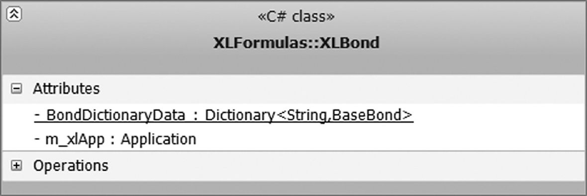
Figure 12.7 Basic bond class
In particular, we have developed the following methods in the class XLBond and usable in Excel as an UDF:
// Load in memory (populate BondDictionary)some bond description using as key idCode string LoadBondFixedCoupon(string idCode, double Today, double StartDateBond,
double EndDateBond, double Coupon, string BondFixedCouponType);
// Given clean price and idCode then return yield of corresponding bond in BondDictionary object YieldFromDictionary(string idCode, double Today, double CleanPrice, int Freq,
string DayCount, string Compounding);
12.7.2 Serialisation and Deserialisation
When loading data into memory it is necessary to deploy several Excel sessions in order to (repopulate) the dictionary. Furthermore, the dictionary will become invalid each time that Excel is closed. In order to overcome this inconvenience we serialise the dictionary data to a file and to this end we use the class BondDictionary. The relationship between this class and other classes is shown in Figure 12.8.
«C# class» SerializableDictionary
«C# class» DeserializationBinder
«C# class» XLFormulas::XLBond |
«C# class» BondDictionary
K:Class, V:Class
Figure 12.8 Classes for data serialisation
[Serializable] // Generic Serializable dictionary: class for serialize and deserialize public class SerializableDictionary<K,V> {
// Data members public Dictionary<K, V> dic; // Dictionary to store information string fileName; // File to which we serialize DateTime lastSave; // Last save time
// Constructor: full file name (like: @"c:\\xxx.bin) public SerializableDictionary(string fullNameFile) {
dic = new Dictionary<K, V>(); // Initialize dictionary fileName = @fullNameFile;
} // Serialize to the file fileName public void Serialize() {
// 2* pag 630 c# in nutshell 4.0 IFormatter formatter = new BinaryFormatter();
// Serialize using (FileStream s = File.Create(fileName))
formatter.Serialize(s, this);
} }
// Record the time lastSave = DateTime.Now;
// Deserialize from the file fileName public void DeSerialize() {
// If file exists deserialize
if (File.Exists(fileName)) {
using (FileStream fs = File.OpenRead(fileName)) {
}
} }
dic = ((SerializableDictionary
K, V>)DeserializationBinder.Deserialize(fs)).dic; }
The class interface for the class BondDictionary is:
[Serializable] // Derived Class for Bond: adding method SetRefDate public class BondDictionary : SerializableDictionary<string, BaseBond> {
public BondDictionary(string fullNameFile) : base(fullNameFile) { } // Update Today for each bond in dictionary public void SetRefDate(Date d) {
foreach (KeyValuePair<string, BaseBond> b in dic) {
b.Value.GetNewToday(d); }
} }
The class interface for the class DeserializationBinder is:
public class DeserializationBinder : SerializationBinder {
public override Type BindToType(string assemblyName, string typeName)
{
return Type.GetType(String.Format("{0}, {1}", typeName, assemblyName));
} public static object Deserialize(Stream stream) {
BinaryFormatter formatter = new BinaryFormatter(); formatter.Binder = new DeserializationBinder(); return formatter.Deserialize(stream);
} }
In the class XLBond we have defined the following methods in order to take advantage of the serialisation functionality:
// Number of bonds in the dictionary object NumberOfBonds(string FileFullName, bool OnOff);
// Last save of file serialized string LastUpdate(string FileFullName, bool OnOff);
// Get reference date of dictionary object GetRefDateOfBondDictonary(string FileFullName, bool OnOff);
// Check id idCode is in dictionary string CheckCode(string idCode, string FileFullName, bool OnOff);
// Look for bond in serialized file object YieldFromFile(string idCode, double Today, double CleanPrice, int Freq,
string DayCount, string Compounding, string FileFullName);
// Find bond in serialized file calculate clean price starting from yield object CleanFromYieldFromFile(string idCode, double Today, double Yield, int Freq,
string DayCount, string Compounding, string FileFullName);
We now discuss three Excel files that are used in the current application. We describe their structure (sheets) and related code:
1. BondBasic.xls.
2. BondLoadInMemory.xls.
3. BondSerialization.xls.
The corresponding C# code is documented in the files XLBond.cs, ICalculator.cs and ProgrammableBase.cs. In each sheet we use blue cells for input, yellow cells for output and orange cells for data validation. We also need to add a reference to XlFormulas.
The file BondBasic.xls has five sheets: BondZeroCoupon: calculates the yield of a zero coupon bond by varying the values of the input parameters. BondFixedCouponYield: calculates the yield of a fixed coupon bond by varying the values of the input parameters. BondMultiCouponYield: calculates the yield of a multi-coupon bond for each coupon and by varying the values of the input parameters. BTPDescription: returns some parameters describing a BTP bond. BTPYield: calculates the yield of a BTP bond for each coupon value. We can change the parameters that represent the yield. The file BondLoadInMemory.xls contains a VBA module for initialisation and to connect
C# and VBA. To this end, we define the following object:
' Define calculator object (assembly.class name, not ProgID) Private bond As XlFormulas.XLBond
We also define a macro that loads a bond from a particular Excel range:
Sub LoadInMemory()
bond = New XlFormulas.XLBond Dim myRange As Range ' range containing data myRange = ActiveWorkbook.Sheets("LoadInMemory").Range("ToBeLoad") Dim r As Integer ' variable to be used in c# formulas Dim type_' idCode As String Dim Td, Sd, Ed, Coupon As Double r = myRange.Rows.Count ' row of range
Td = ActiveWorkbook.Sheets("LoadInMemory").Range("ToDay") For i = 1 To r
If Not IsEmpty(myRange.Cells(i, 2)) Then 'read info from excel type_ = myRange.Cells(i, 2) idCode = myRange.Cells(i, 3) Sd = myRange.Cells(i, 4) Ed = myRange.Cells(i, 5) Coupon = myRange.Cells(i, 6) 'use c# class and return on excel myRange.Cells(i, 1)
= bond.LoadBondFixedCoupon(idCode, Td, Sd, _Ed, Coupon, type_) End If
Next i End Sub
Furthermore, the function LoadBondFixedCoupon loads a number of bonds into memory and populates the static Dictionary<string, BaseBond> BondDictionaryData member in class XLBond.
In order to use the sheet we apply the following steps:
1. Insert the bond data (Type,Code Id,Start Date,End Date,Coupon) in the blue-coloured cells (use table Bond to Load).
2. Press the button LoadInMemory; a confirmation message will then appear in the yellowcoloured cells of table Bond to Load.
3. In the table Price Bond enter a label and a price. The corresponding bond will be retrieved from memory and then the yield will be calculated based on the parameters in the table Yield Settings.
We now discuss how the application operates with the file BondLoadInMemory.xls. A good way to describe the interaction is by means of a UML sequence diagram. This is a twodimensional diagram in which we show the objects that partake in the interaction while time is represented as the vertical axis (time t = 0 is the top left-hand corner). The sequence diagram describes the following activities:
Initialise Excel and create the bond dictionary. Add bond data from sheet to the dictionary. Calculate the yield for a given bond. Destroy the dictionary and close Excel.
The sequence diagram is shown in Figure 12.9. Finally, we discuss the role of the file BondSerialization.xls in the current application. It
contains VBA code to serialise the bond to a file:
Sub Serialize() bond = New XlFormulas.XLBond Dim myRange As Range ' range containing data myRange = ActiveWorkbook.Sheets("Serialize").Range("ToBeSerialized") Dim r As Integer ' variable to be used in C# formulae Dim type_, idCode, fullFileName As String Dim Td, Sd, Ed, Coupon As Double r = myRange.Rows.Count ' row of range
Td = ActiveWorkbook.Sheets("Serialize").Range("ToDay")
fullFileName = ActiveWorkbook.Sheets("Serialize").Range("FileName")
For i = 1 To r
If Not IsEmpty(myRange.Cells(i, 2)) Then 'read info from excel type_ = myRange.Cells(i, 2) idCode = myRange.Cells(i, 3) Sd = myRange.Cells(i, 4) Ed = myRange.Cells(i, 5) Coupon = myRange.Cells(i, 6) 'use C# class and return in Excel myRange.Cells(i, 1)
= bond.LoadBondFixedCouponSerial
(idCode, Td, Sd, Ed, Coupon, type_, fullFileName) End If
Next i End Sub
trader : Trader
excel: Excel |
open Excel
xlBond: XlBond
Initialize XlBond
bondDictionary : BondDictionary
Excel start
Message Ok
Message no error
BondDictionary
Create Bond Dictionary
LoadBondFixedCoupon
Add Bond To Dictionary
Dictionary Updated
ICalculator.YieldFromFile(..)
Ask for a Given CodeId Bond
Return Bond
bond.Yield()
Yield
Close Excel
Destroy
Closed Destroy
Figure 12.9 Calculating bond yields in Excel (dictionary in memory)
We use the sheets as follows:
1. Define the bond data (Type, Code Id, Start Date, End Date, Coupon) in the blue-coloured cells (use table Bond to Load) and the name of the target file.
2. Press the serialisation button Serialise; a message will then appear in the yellow-coloured
cells of table Bond to Load. The sheets and their functions are: CleanPriceFromYield: calculates the clean price from the yield by lookup in the serialised file; it is possible to switch yield settings. YieldFromCleanPrice: calculates the yield from the clean price by lookup in the serialised file; it is possible to switch yield settings.
ReportOnDictionary: we can check if a code-id is in the serialised dictionary; we can also query information concerning the serialised dictionary (for example, number of bonds, last update, reference date).
UpdateToday: changes the reference date of the dictionary (this impacts the accrual interest of bonds). We now describe the following use cases U1 and U2 pertaining to the file by two sequence
diagrams in Figures 12.10 and 12.11, respectively:
U1: store bond details (input). U2: ask for a yield given a price and a code id (output).
In this chapter we provided an introduction to the design and implementation of an integrated software system to compute the price and yield of a number of bonds that are traded in the market. We used Excel both for input and as a persistent store. The material in this chapter used a number of techniques from previous chapters (in particular, Chapters 7 and 8). We shall extend the results in later chapters.
DevelopanewstructnamedBondDetailstobeaddedasdatamemberoftheBaseBond class. The new struct stores the following details of a bond:
ISIN code as a string type (for example “DE0001135465”). Maturity of the bond as a Date type (for example “4 Jan 2022). Rating of the bond. The rating can be stored in a string type (examples of rating: Aa3 or BB+). As more than one rating agency can assign the rating to a bond we suggest that you define the available rating agencies using the enum RatingAgency and handle the rating information with a Dictionary<RatingAgency,string> (for example Moody’s Aaa, Fitch AAA, etc.).
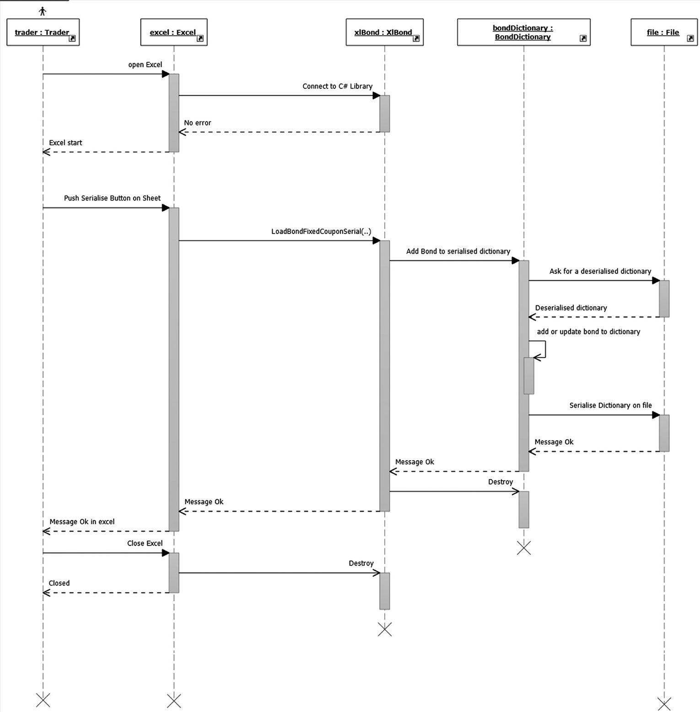
Figure 12.10 Adding a bond to a serialised dictionary
Issue amount as a double type (for example 20,000,000,000). Currency as string or as an enum (for example EUR). Bond description as a string (for example “DBR 2% 2022”). Name of issuer as a string (for example “Deutschland”).
. . . more details of bond can be added.
Create an Excel UDF to retrieve the information associated with a key (idCode):
object GetBondDetail(string idCode, string neededDetail)
The string NeededDetail must uniquely identify a data member of BondDetails, so you could create a mechanism of data validation for neededDetail.
bondDictionary : BondDictionary
file: File
excel: Excel xlBond: XlBond
open Excel
Excel start
ICalculator.YieldFromFile(..)
new BondDictionary
DeSerialize()
Deserialized Dictionary
Ask for a Given CodeId Bond
Yield
Close Excel
Closed
Return Bond bond.Yield()
destroy
Destroy
Figure 12.11 Request yield to a serialised dictionary
The market practice is to price bonds using price, yield or spread over a benchmark. We define the benchmark bond as a bond against which we measure the difference in yield. Government bonds are usually used as benchmarks. Moreover, the benchmark bond on an issuer is the latest issue for a given maturity. To understand the benchmark pricing mechanism let us define yx to be the yield of the bond x corresponding to the observed price Px, so that yx = f (Px) and
Px = g(yx). If the bond c is priced with a spread s against the benchmark bond b, we have that Pc = g(yb + s).
Design the code to handle the pricing against the benchmark mechanism; in particular, integrate the existing code with a new method, for BaseBond:
// Calculate Clean price according to customized convection(freq,DayCount and // compounding), given a benchmark price"Bprice" and a benchmark spread "BSpread" public double CleanPriceFromBenchmarkPrice(BaseBond Benchmark, double BPrice,
double BSpread, int freq, Dc DayCount, Compounding compounding)
Create an Excel UDF to handle the pricing from a spreadsheet. Note that in this case the benchmark bond should also be added to the dictionary.
Suppose we wish to calculate the yield of a floating rate note or of a different kind of structured note. In order to do that we need to:
Estimate each future coupon value. Use BondMultiCoupon class (given the calculated coupon values from the previous point) to handle use cases U1 and U2 presented in Figure 12.2.
Note that we do not wish toevaluate the price of the bond, so we do not need a discount curve to compute the present values of all the future cash flows. An interest rate curve is needed in the case of a floating rate note since the future coupons are estimated through the forward rates.
Design the code to calculate the yield of any type of bond: Define the interface ICouponProvider, with two methods which provide the pair of arrays cashFlows and cashFlowsDates, referring to the coupons’ estimation:
Interface ICouponProvider { // Array of expected coupons double[] cashFlows();
// Array of coupon dates. The two methods cashFlows() // and [] cashFlowsDates() should return // objects with the same dimension. Date[] cashFlowsDates(); }
Define an abstract class called RiskComponent representing a generic financial instrument. The class should implement the interface ICouponProvider. The class has the task of handling the financial instrument structure and for calculating expected coupons. Define derived classes based on the type of payoff (for example floating rate, inflation linked, etc.).
// Base class class RiskComponent: ICouponProvider {..}
// Derived class class FloatingPlusSpread: RiskComponent {..}
//More derived class
Implement the code of a generic object, namely CouponEstimator, that has the task of managing coupon data coming from one or more financial instruments. Therefore, this new class should have a List<RiskComponent> data member to collect one or more RiskComponent instances. The class CouponEstimator should implement the interface ICouponProvider, so that it can merge data provided by each RiskComponent.
public class CouponEstimator: ICouponProvider {
// Data member: list containing RiskComponent
List<RiskComponent> RiskList; // Constructor ...
.. // Method to add a "RiskComponent" Public void AddRiskComponent(RiskComponent RC) {
RiskList.Add(RC);
} // Implementation of ICouponProvider public double[] cashFlows(){..} public Date[] cashFlowsDates(){..} }
Define a new constructor of the class BondMultiCoupon that can accept coupon data provided by CouponEstimator. Design the UML class diagram of the whole process. Discuss some alternative solutions using generics and design patterns (for example Abstract Factory Pattern). Highlight the advantages and disadvantages.
Finally, consider the specific case of floating rate note. Create a class FloatingRatePlusSpread that estimates coupons linked to a floating index plus a spread. You need to use a FloatingSchedule and an interest rate curve to estimate the floating index (this concept and its code will be discussed in Chapters 15 and 16). The UML class diagram is given in Figure 12.12.
«C# class» RiskComponent |
«C# class» Schedule |
«C# class» FloatingRatePlusSpread |
|
«C# class» FloatingSchedule
«interface» «C# interface» IRateCurve |
|
Integrate the class hierarchy presented in Figure 12.2 adding in a correct way for the following types of Italian Government bonds:
BOT: zero coupon bond with T+2 settlement; CTZ: zero coupon bond with T+3 settlement;
Add more bond examples for Dutch bonds (details available on www.dsta.nl). Now consider the following floating rate bonds:
CCT: floating rate bond indexed to the yield of 6 month Bill, T+3 settlement, Act/Act day count. BTPei: floating rate bond in arrears, linked to the Eurostat Harmonized Index Of Consumer Prices excluding tobacco (HICP), T+3, Act/Act day count and the redemption is adjusted on the Indexation coefficient based on the HICP index (for more details see http: //www.dt.tesoro.it/en/debito_pubblico/titoli_di_stato/).
Given what we have observed in exercise 3, how can you integrate these two floating rate bonds in the bond class hierarchy?
Comment on the class hierarchy design and discuss an alternative design of the hierarchy; finally, highlight the advantages and disadvantages of this approach.
13
Interpolation Methods in Interest Rate Applications |
In this chapter we discuss interpolation which is an important tool in many financial applications.
We are interested in the use of interpolation applied in the construction of the yield curve and of the forward curve; x values are times while y values can be zero rates, forward rates, discount factors or some functions of these.
The choice of interpolation method determines some characteristics of its output. In particular, we require that the output of the interpolation satisfies some quality criteria related to the nature of the problem, for example preserving arbitrage-free conditions, behaviour under perturbation of only one input, smoothness, positivity and stability of forward rates. We address these requirements and we propose several interpolation methods that satisfy them. We deal with the problem of preserving the shape of data in the interpolant y(x), for example non-negativity, monotonicity and convexity. We may also take geometric properties into consideration, for example preventing spurious behaviour near points where rapid changes take place. This may be even more important than ensuring the asymptotic accuracy of the interpolation method.
With these requirements in mind, starting from popular interpolation methods such as linear and cubic spline we then focus on some other schemes:
The Hyman filter with Hermite cubic interpolant. The positivity-preserving rational cubic interpolation. The Akima method. The Hagan-West approach called Forward Monotone Convex Spline.
For completeness, we also present two global interpolation methods, even if they have featuresthatarenotsuitableforourpurposes.Wecompletetheinterpolationsuitebydiscussing the bilinear interpolation which is a two-dimensional interpolation scheme that will be used in Chapter 17 for cap and swaption volatility interpolation. We discuss a C# framework to explore the impact of using different interpolation schemes.
The goal of this chapter is to provide the reader with the techniques that will be used in the following chapters. In Chapters 15 and 16 we discuss the implementation of the curve-building process that uses many of the interpolation methods presented in this chapter.
A term structure of interest rates is a set of interest rates sorted by time to maturity. We can build several types of term structure curves using rates of a different nature, for example
zero coupon yield curve, forward rates curve, instantaneous forward curve. We provide basic mathematic formulae to deal with these term structures.
We define Z(0,t) as the price of a discount (zero coupon) bond that pays one unit of currency at time t. Since the price of a bond is always positive, we can write Z(0,t) = exp(−r(t)t) where r(t) is the time 0 continuously compounded rate for maturity t. The collection of all Z(0,t) sorted by t is a term structure called the zero coupon yield curve. This discussion assumes that these bonds are traded, have sufficient liquidity and are defined in continuous time.
The forward rate governing the period from t1 to t2 is defined by:
−log(Z(0,t2)) − log(Z(0,t1)) t2 − t1 =
. (13.1) If we define the forward discount factor Z(0;t1,t2) by:
f (0;t1, t2) =
exp(− f (0;t1,t2)(t2 − t1)) = Z(0;t1,t2). (13.2) then we get a relationship between discount factors with different maturities:
Z(0; t1)Z(0; t1, t2) = Z(0;t2)(t1 < t2). (13.3) Some re-arranging of equation (13.1) gives us:
f (t) = lim
f (0; t, t + )
→0
(13.4)
d dt
d dt
log(Z(t)) =
r(t)t.
= −
The instantaneous forward rate is denoted by f(t) and is defined by:
t
f (s)ds . (13.5a) Finally, we define the capitalisation factor:
Z(t) = exp −
0
1 t
C(0, t) = er(t)t Z(0,t) = e−r(t)tr(t) =
log(Z(0, t)). (13.5b)
This is the redemption amount earned at time t from an investment at time 0 of one unit of currency of a zero coupon bond. Formulae (13.1) and (13.4) determine the nature of rates forming respectively, the term structures are called forward rates curve and instantaneous forward curve.
As discussed in Chapter 15, there are two main methods for curve construction starting from market data, namely traditional bootstrapping method and the global method family. In both cases the curve building process should be calibrated to a set of quotes by solving certain equations to reproduce market prices. The traditional bootstrapping approach consists in solving the equations sequentially while global methods provide for the simultaneous resolution of a system of equations (see Kushnir 2009). The latter completely integrates the interpolator into the curve construction process allowing the use of global interpolation methods in addition to local methods. In both cases interpolation is needed to complete missing data through the process of calibration. A customised choice may be made by applying interpolation to several objects for example discount factors, rates and logarithms of discount factor.
Not all interpolation types can be used in the traditional bootstrapping method, given that by construction each time interval of the curve has a degree of freedom so that it will not
affect any previous piece of curve. Interpolation that does not preserve the localness should not be used in traditional bootstrapping. Having constructed the curve, the interpolation can then be used to produce discount factors and forward rates. Note that the interpolation is used in two different stages, namely during the curve building process and after it. The interaction between these two phases is crucial. It should be clear that the process of curve building can be completed in many ways, and the choice of interpolation scheme plays a key role in defining the curve characteristics and quality criteria such as smoothness, positivity, stability and continuity of forward rates and behaviour under input perturbations.
To give the reader a more practical idea of the impact of interpolation in curve building we set up a test environment in which we do not need any calibration to market instruments as we start with given zero rates. In real life this is not the case, but we postpone this discussion until Chapters 15 and 16 where we introduce a more realistic case of the curve building process including calibration to market instruments such as swaps and deposits. We have chosen to do this to avoid introducing a high level of detail that may distract the reader from the present focus on interpolation.
The test framework is based on Hagan and West 2006 and is designed to identify the relevant implications of different interpolation schemes. We stress the idea of producing satisfactory forward rates (smooth and non-negative) even in the extreme cases of sparse data input with several shapes. The hypothesis that the initial data may define extreme forms is not entirely unrealistic.
The yield curve is specific for each issuer (Government, financial, corporate) and it mainly reflects issuer credit quality and funding capacity. The Libor based yield curve is a benchmark representing the term premium for private sector lending (for a discussion on Libor credibility as benchmark, see Mutkin 2012). The yield curve shape is the result of several factors and implied information can be extracted from the curve shape and its dynamics.
In practice, a yield curve can have almost any shape and statistical analysis shows that interest rate movements of different tenors of the same yield curve are not perfectly correlated. Empirical evidence shows that the long-end part of the curve is less volatile than the shortend part. A statistical technique to analyse curve movement is Principal Component Analysis (PCA) that explains term structure movements (parallel shift, twist and bending; see Alexander 2005 for further details). Several theories explain the shape of the term structure using different arguments concerning rates movements across the curve. Three widely recognised theories are:
The term structure represents market participant expectations of the direction of future rate movements (expectation theory). The term structure reflects the risk premium requested for longer investment (pure risk premium theory) with:
– the risk premium not being proportional across the curve, and typically increasing with
maturity to balance high volatility of asset price fluctuation (liquidity premium theory).
– investors can shift the investment horizon to anticipate curve movements (preferred
habitat theory).
Differentinvestorcategoriesaresystematicallyfocusedoneachmaturitysegment,according to their financial needs and constraints; the dynamic of supply and demand between these
different types of investors can influence the shape of the curve (market segmentation theory).
For more details see Fabozzi and Focardi 2004. We can define the following common curve shapes:
Normal yield curve: yield is a monotonically increasing function of time to maturity (the slope of the yield curve is positive). The risk premium increases with maturity and rates are expected to rise.
Steep yield curve: in this case the yield’s slope increases as a function of time to maturity. The risk premium increases rapidly.
Flat yield curve: this curve is observed when all maturities have similar yields. Rates are expected to remain unchanged and funding conditions are balanced across the curve. The risk premium and the increase in demand for long-term funding are offset by the expectation of rising inflation.
Humped yield curve: this situation occurs when short-term and long-term yields are similar and when medium-term yields are lower or higher than these. An example of the latter is when investors may be interested in the short-end of the curve (for example, banks) and in the long end (for example pension funds). The lack of demand from investors for medium term notes can push the yield higher in the medium-term segment of the curve.
Inverted yield curve: this occurs when long-term yields fall below short-term yields. Rates are expected to fall, there is an excess of demand for long-term investments with respect to short-term ones.
There are many ways to interpolate data. The corresponding algorithms are used in disciplines such as computer graphics, engineering, science and finance. The input to the process is an array of xi values and an array of yi values having the same size. Each pair (xi, yi) is called a control point. Furthermore the xi’s values may be equally spaced or sparsely spaced. We define the order of the interpolator as the number of points used in the interpolation method minus 1.
We focus our attention on a small number of interpolators that we have found to be most suitable when dealing with yield curve problems (for discussions, see Hagan and West 2006 and Rasch and Williamson 1989). Some examples of these methods are:
Linear interpolation. Cubic spline. Hermite monotone-preserving cubic spline (Dougherty/Hyman). Positivity-preserving rational cubic interpolation (Hussain). Akima method. Forward monotone convex spline (Hagan-West approach). Hyman quantic interpolation. Quadratic Bernstein polynomials with extra knots. Bezier, B-splines and beta splines. Lagrange interpolation.
We tested many of these interpolators using our own code and code from open source libraries (for example, Quantlib) and we have arrived at a short-list of three methods which
we found to be the most useful, namely Hagan/West, Dougherty/Hyman and Akima methods. We carried out tests on interest rate r,log(r), discount factor df, log(df) and forward rates (for further details see Section 13.14). In the next Sections we present these methods and others which we will use in our C# applications.
In this section we discuss interpolation in one dimension. This means that we have one independent variable x and one dependent variable y. In this chapter we restrict the scope by assuming that the independent variable takes discrete values. To this end, consider the set of monotonically increasing abscissa values {xj}nj=1x1 < x2 < ··· < xn (sometimes called a grid) and the related set { fj}nj=1 where fj ≡ f (xj) of function (or data) values. In many applications these are the only sets of values that we have at our disposal. The abscissa data may be equidistant, dense or even scattered.
We define the discrete slopes at the grid points as follows:
j = ( fj+1 − fj)/(xj+1 − xj), 1 ≤ j ≤ n − 1. (13.6) These slopes will be needed when we employ specific interpolators for interest rate appli-
cations. We say that the data is locally monotonic on the interval [xj−1, xj+1] if:
j−1 j > 0 (13.7) and it is called locally convex on [xj−1, xj+1] if:
j−1 > j (13.8) and locally concave on [xj−1, xj+1] if:
j−1 < j. (13.9)
Now let (a, b) be an open interval. We denote by Ck(a,b) (where k is a non-negative integer) the space of functions each of whose derivatives up to and including k are continuous where k is a non-negative integer. We also define:
dj, j = 1,...,n
to denote some discrete approximation to the first derivative of the function at the mesh points. These will usually be calculated based on the discrete steps in equation (13.6).We now come to the definition of the interpolation problem. Find a function (called the interpolant) p such that:
p ∈ Ck(x1, xn), k ≥ 0 p(xj) = fj, dp(xj)
(13.10)
dx = dj 1 ≤ j ≤ n.
Furthermore, we are mostly interested in local methods because changing or removing data in the domain only affects the interpolant in the vicinity of the changed data. This is in contrast to global methods that require information from the whole domain and thus are unsuitable in the current context.
Before we consider specific schemes we note some requirements (see Rasch and Williamson 1989).
The method for estimating the derivative dj in equation (13.10) depends on the particular algorithm in use; different algorithms produce different values and hence will produce different curves. In general, we estimate this discrete derivative and then we modify it in some way in order to preserve the shape of the original curve. The type of interpolating function in (13.10) subsumes cubic and quintic polynomials, rational functions (a rational function is a quotient of two polynomials) and quadratic Bernstein polynomials, for example. We must test each interpolation scheme on relevant data that is to be processed in interest rate applications.
In general, we use piecewise polynomials (that is, interpolating functions that can be represented by polynomials of a given degree on each subinterval). We use these polynomials to deduce probable values for an implied function defined at discrete data points (Hyman 1983). For an interpolator to be accurate we need to preserve critical properties such as monotonicity, convexity and positivity; furthermore, we must not introduce details that cannot be ascertained from the data. Thus, the interpolated data must reflect the intrinsic shape inferred by the data points.
Since we do not have an exact value for the derivative dj ∼ f˙j at discrete data points we need to define constraints if we are to produce an acceptable interpolant. One constraint, credited to de Boor and Swartz (de Boor and Swartz 1977), states that if the data is locally monotonically increasing at xj, that is 0 ≤ f˙j ≤ 3min( j, j−1), then the resulting interpolant is monotone in the subinterval [xj−1, xj+1]. This is a sufficient condition for monotonicity. A necessary condition using an extension of this inequality equation was noted in Fritsch and Carlson 1980. Other constraints on the derivatives are discussed in Hyman 1983 and Dougherty et al. 1989. In Rasch and Williamson 1989 there is a discussion of less restrictive and more restrictive constraintsonthederivatives.WeneedtodeterminewhetherweareusingC0 orC1 interpolants. The requirement that the continuous derivative estimates bound the discrete slope for a C0 interpolant is:
(dj − j−1)( j − dj) > 0 (13.11)
and the requirement that they lie between the adjacent discrete slopes for a C1 interpolant is: sign (dj) = sign ( j) = sign (dj+1) if j = 0
(13.12)
dj = dj+1 = 0 if j = 0.
Equation (13.12) must be true if the interpolant is to be convex or concave in the intervals [xj, xj+1] and [xj−1, xj], respectively. For monotonicity of the interpolating function in the interval [xj, xj+1] and C0 continuity the derivatives must satisfy the necessary condition for monotonicity:
sign ( j−1) = sign (dj) = sign ( j) if j−1 j > 0
(13.13)
dj = 0 if j−1 ≤ 0.
In other words, the derivative estimate at the end points must have the same sign as the
discrete slope in the interval. For a C1 interpolant in the interval [xj−1, xj+1] we then have: dj = (h j j−1 + h j−1 j)/(hj + hj−1), 2 ≤ j ≤ n − 1 d1 = 1 + ( 1 + 2)h1/(h1 + h2) dn = n−1 + ( n−1 − −2)hn−1/(hn−2 + hn−1).
(13.14)
This constraint implies that the derivative estimate at the end points must have the same sign as the discrete slopes surrounding it or be zero if the discrete data is an extremum at that point.
In this section we first approximate the discrete derivative using some algorithms and afterwards modify (filter) it so that it satisfies some shape preservation condition.
Arithmetic Mean Method (Wang 2006) This is a three-point scheme to compute the discrete derivatives (including the endpoints) as given by the formulae:
dj = (hj j−1 + hj−1 j)/(hj + h j−1), 2 ≤ j ≤ n − 1 d1 = 1 + ( 1 − 2)h1/(h1 + h2) dn = n−1 + ( n−1 − −2)hn−1/(hn−2 + hn−1).
(13.15)
The Kruger Method
This method is used in chemical engineering and fluid flow applications. It is used for constrained cubic spline interpolation and it resolves many of the overshoot problems – at the expense of smoothness – associated with traditional cubic splines. Thus, we replace the condition:
f j (xj) = f j+1(xj) by the condition:
f j(xj) = f j+1(xj) = f (xj) ≡ f˙j.
To satisfy this requirement, we end up with the discrete derivative estimates:
2
2 ≤ j ≤ n − 1
dj =
xj+1 − xj xj+1 − yj +
xj − xj−1 xj − yj−1
3( f2 − f1) 2(x2 − x1) −
d2
(13.16)
2 = (3 1 − d2)/2 dn =
d1 =
3( fn − fn−1) 2(xn − xn−1) −
dn−1
2 = (3 n−1 − dn−1)/2.
Some of the advantages of this method are: first, it produces a relatively smooth curve that does not overshoot between intermediate data points; second, interpolated values can be directly calculated without having to solve a system of equations; and, finally, we can still calculate the parameters for the cubic spline equations in each subinterval, thus permitting analytical integration of the data.
Fritsch-Butland Method (Fritsch and Carlson 1980) This is a first-order nonlinear algorithm:
3 min j max j
dj =
j max + 2 min j
(13.17)
where
j min = min( j−1, j), max j = max( j−1, j), 2 ≤ j ≤ n − 1
d1 = ((2h1 + h2) 1 − h1 2)/(h1 + h2) dn = ((2hn−1 + hn−2) n−1 − hn−1 n−2)/(hn−1 + hn−2).
Akima Method (Akima 1970) This is a second-order nonlinear algorithm. We have implemented it in C# and the code is on the distribution medium. We discuss the Akima scheme in detail in Section 13.9.
We describe two popular interpolation methods in this section. First, consider the pair of data values (x0, y0) and (x1, y1). We are interested in drawing a straight line between these points. Some high-school analytic geometry shows that the value y corresponding to a given value x is given by
y1 − y0 x1 − x0
y = y0 + (x − x0)
. (13.18)
This formula can now be extended to a data set consisting of n points. It has the advantage that it never overshoots nor oscillates. However, the generated curve is only continuous as the first order derivatives are discontinuous at the data points. Thus, the curve looks somewhat ‘jagged’.
It is important to note that linear interpolation incurs an error that is bounded by the second derivative ofthefunctionbeing approximated. Wecompute thiserror.Let usdefine thefunction f (x) to be interpolated and let the linear polynomial p(x) approximate it at the points x = a
and x = b. Define the error term:
RT = f (x) − p(x), a ≤ x ≤ b.
Then by an application of Rolle’s theorem (see Widder 1989, Spiegel 1969) we can show that:
f (b) − f (a) b − a
(x − a) with the error term bounded by:
p(x) = f (a) +
(b − a)2 8
sup
| f (x)|.
|RT| ≤
a≤x≤b
(Rolle’s theorem is: Let f (x) be continuous in [a, b] and suppose f (a) = f (b) = 0. Then if the derivative f (x) exists in [a, b], there is a point c in (a, b) such that f (c) = 0).
Linear interpolation can be applied on rates, logarithm of rates, discount factors, logarithm
of discount factor and on forward rates. To obtain a smoother curve we can use cubic splines. We now introduce the cubic spline method. As before, we work on the interval (a, b). Let
us suppose that δ = {xj : j = 0, 1,... , n} is a partition of (a, b) with a = x0 < x1 < ··· < xn = b. We define the given values as follows:
Y = {yj : j = 0,1,...,n}
and we define the quantities
We are now ready to define what a cubic spline is. It is a continuous function whose derivatives up to and including order two are continuous at the interior mesh points, as defined above. Furthermore, the spline is a polynomial of third degree on each subinterval.
In order to uniquely specify the spline Sδ we give ‘boundary conditions’ at x = a and at
x = b. The mutually exclusive options are as follows:
(13.19)
In this case, either the second order derivatives of the spline function are zero at x = a and at x = b or the first order derivatives of the spline function are given at x = a and at x = b and have values α and β, respectively. It can be shown (Stoer and Bulirsch 1980) that the cubic spline can be written in the form:
(xj+1 − x)3 6hj+1 + Mj+1
(x − xj)3
6h j+1 + Aj(x − xj) + Bj where
Sδ(Y; x) = Mj
yj+1 − yj hj+1 −
hj+1 6
(Mj+1 − Mj)
Aj =
h2j+1 6
, j = 0,..., n − 1.
Bj = yj − Mj
All parameters and coefficients are known with the exception of {Mj}nj=0 and we can solve for these parameters by writing the problem as a tridiagonal matrix system:
AM = d (13.20) where
A =
2 λ0
⎛
μ1 2 λ1 0 μ2
...
...
...
...
...
⎞
... λn−1 0 μn 2
...
⎜ ⎝
⎟ ⎠
M = (M0,..., Mn) d = (d0,...,dn)
where the elements of the matrix A depend on the boundary conditions (13.19), namely zero values for the second-order derivatives (case (a)) or given values for the first-order derivatives (case (b)). Some cases are:
Case (a)
λ0 = 0, d0 = 0, μn = 0, dn = 0
Case (b)
λ0 = 1, d0 =
6 h1
y1 − y0
h1 − α μn = 1, dn =
6 hn
yn − yn−1 hn
β −
hj+1 hj + hj+1
h j h j + hj+1
, μj = 1 − λj =
λj =
6 h j + h j+1
yj+1 − yj hj+1 −
yj − yj−1 hj
j = 1,2,... ,n − 1.
dj =
We have now reduced the problem of interpolating data points by cubic splines to a problem of solving a tridiagonal matrix system.
Given the data points as already defined in Section 13.5 and having a numerical approximation ( f˙j)nj=1 to the slope at the data points (xj)nj=1, we then define the Hermite cubic interpolant as follows:
where
p(x) = c0 + c1δ + c2δ2 + c3δ3 c0 = fj, c1 = f˙j =
df j dx ∼ dj
c2 = (3 j − f˙j+1 − 2 f˙j)/h j c3 = −(2 j − f˙j+1 − f˙j)/h2j
(13.21)
x ∈ [xj, xj+1], 1 ≤ j ≤ n − 1.
The method is discussed in Dougherty et al. 1989. It is an improvement on Hyman 1983 because it promises not to produce negative values from positive input data, as well as being monotonicity and convexity preserving.
We now describe the steps to compute the discrete derivatives in equation (13.21). The full algorithm is described in Dougherty et al. 1989 and we retrace the main steps here because
these are mapped to C# code in the software framework. First, we define the following slopes:
and
pd = ( j−1(2h j−1 + hj−2) − j−2h j−1)/hj−2 + h j−1 pm = ( j−1h j + jh j−1)/(hj + hj−1) pu = ( j(2h j + h j+1) − j+1hj)/(h j + h j+1), 2 ≤ j ≤ n − 1
Mj = 3min(| j−1|, | j|, |pm|). (13.22) We now define:
(sign f˙j)min(| f˙j|, Mj) if sign fj = sign pm 0, otherwise
f˙j =
(13.23)
Next we distinguish between the cases:
a) j > 2 if j > 2 and pm, pd, j−1 − j−2, j − j−1 have the same sign, then let Mj = max(Mj,1.5 min(|pm|, |pd|))
b) j < n − 1 if j < n − 1 and − pm,−pu, j − j−1, j+1,− j have the same sign, then let Mj = max(Mj,1.5 min(|pm|,|pu|)).
We then compute the discrete derivative as follows:
Sj(x) = pj(θ)/qj(θ), θ =
x − xj h j
, 0 ≤ θ ≤ 1 (13.24)
where
pj(θ) = (1 − θ)3vj fj + θ(1 − θ)2[(2ujvj + vj) fj + vjh jdj]
+θ2(1 − θ)[(2ujvj + uj) fj+1 − uih jdj+1] + θ3u j fj+1 qj(θ) = (1 − θ)2vj + 2u jvjθ(1 − θ) + θ2uj.
Finally, we take account of the ‘global’ end points as follows:
and
for j = 2, if sign f˙j = sign j then f˙j = sign f˙j min(| f˙j|,3| j|) f˙j = 0, otherwise
for j = n − 1, if sign f˙j = sign j then f˙j = sign f˙j min(| f˙j|,3| j|) f˙j = 0, otherwise.
Summarising, this algorithm generates a third-order accurate interpolant if the original derivative values are second-order accurate.
The C# code for the above algorithm is:
void ModifyDerivatives() { // Dougherty/Hyman 89.
double pm, pu, pd; double M, sign; double correction;
sign = Math.Sign(d[1]); if (sign == Math.Sign(delta[1])) {
correction = sign * Math.Min(Math.Abs(d[1]), 3.0 * Math.Abs(delta[1]));
} else {
correction = 0.0;
} if (correction != d[1]) {
d[1] = correction;
} sign = Math.Sign(d[n]); if (sign == Math.Sign(delta[n - 1])) {
correction = sign * Math.Min(Math.Abs(d[n]), 3.0 * Math.Abs(delta[n - 1]));
} else {
correction = 0.0;
} if (correction != d[n]) {
d[n] = correction; }
for (int j = 2; j <= n-1; ++j) {
pm = (delta[j - 1] * h[j] + delta[j] * h[j - 1]) / (h[j] + h[j - 1]); M = 3.0 * Math.Min(Math.Min(Math.Abs(delta[j - 1]), Math.Abs(delta[j])), Math.Abs(pm));
if (j > 2) {
pd = (delta[j-1]*(2.0*h[j-1]+h[j-2])-delta[j-2] * h[j- 1])
/ (h[j - 2] + h[j - 1]); if (SameSign(pm, pd, delta[j - 1] - delta[j - 2], delta[j] - delta[j - 1]) == true) {
M = Math.Max(M, 1.5 * Math.Min(Math.Abs(pm), Math.Abs(pd))); }
} if (j < n - 1) {
} }
pu = (delta[j] * (2.0 * h[j] + h[j+1]) - delta[j+1] * h[j]) / (h[j] + h[j + 1]); if (SameSign(-pm, -pu, delta[j] - delta[j-1], delta[j+1]
- delta[j]) == true) {
M = Math.Max(M, 1.5 * Math.Min(Math.Abs(pm), Math.Abs(pu))); }
} sign = Math.Sign(d[j]); if (sign == Math.Sign(pm)) {
correction = sign * Math.Min(Math.Abs(d[j]), M);
} else {
correction = 0.0;
} if (correction != d[j]) {
d[j] = correction; }
We now discuss a positivity-preserving rational cubic interpolation scheme (Hussain and Hussain 2006). In this case the interpolant is a rational function which is by definition the quotient of two polynomials; the numerator is a cubic polynomial while the denominator is a quadratic polynomial. In general, rational functions give better approximations than polynomials and for this reason we have decided to include a discussion.
In each interval [xj, xj+1] we define a rational function Sj(x) as follows:
x − xj h j
Sj(x) = pj(θ)/qj(θ), θ =
, 0 ≤ θ ≤ 1 (13.25)
where
pj(θ) = (1 − θ)3vj fj + θ(1 − θ)2[(2ujvj + vj) fj + vjh jdj]
+θ2(1 − θ)[(2ujvj + uj) fj+1 − uih jdj+1] + θ3u j fj+1 qj(θ) = (1 − θ)2vj + 2u jvjθ(1 − θ) + θ2uj.
This rational function solves the following interpolation problem:
S(xj) = fj, S(xj+1) = fj+1, S(1)(xj) = dj, S(1)(xj+1) = dj+1
where S((1)x) denotes differentiation of the interpolant with respect to x and dj denotes derivative values(givenorestimatedbysomemethod)atthediscretedatapoints xj.The shapeparameters uj and vj will be chosen so as to preserve positivity of the interpolant in each subinterval. When uj = vj = 1 the rational function reduces to the standard Hermite cubic polynomial. The disadvantage is that this solution does not always preserve the positivity of the interpolated data. We see that the denominator in equation (13.25) is positive for positive shape parameters and it now remains to determine how to choose the shape parameters to ensure that the numerator in equation (13.25) is always positive in each subinterval. The constraint is:
h jdj −2 fj + 1 , vj > max 0,
hjdj+1
2 fj+1 − 1 . (13.26) The conclusion is that the rational function defined by equation (13.25) preserves positivity
u j > max 0,
if and only if the constraints in (13.26) are satisfied.
We now provide a description of how the Akima algorithm works (see Akima 1970, Akima 1991). We use the same notation as in previous sections. The resulting curve passes through the given data points and it will appear smooth and natural. On each subinterval the curve is a third-degree polynomial:
3
ak(x − xj)k (13.27)
y =
k=0
where the coefficients of the polynomials are defined by: a0 = fj a1 = dj(= f˙j) a2 = 3 j − 2dj − dj+1 a3 = (dj+1 + dj − 2 j)/(h j + h j+1) 1 ≤ j ≤ N − 1.
(13.28)
As with the Hyman method, we modify the discrete derivatives (slopes) to produce a positivity-preserving interpolant. A complete analysis of how this has been done is discussed in Akima 1970 and we focus on the main result here, namely that the slope at a given data point with index j is given by:
dj = (wj+1 j−1 + wj−1 j)/(wj+1 + wj−1) (13.29) where
wj = | j − j−1|.
When wj+1 = wj−1 = 0 then the denominator in this estimate is equation (13.29) is zero; we also need some estimate for the slope in this case. In Akima 1970:
dj = (h j j−1 + h j−1 j)/(hj + hj−1). (13.30) In our C# code we choose:
1 2
( j−1 + j). (13.31)
dj =
Finally, we give estimates for the slopes at the first two and last two input data points. It is assumed that these points lie on a curve described by a quadratic polynomial which then allows us to compute these final four slopes.
Some remarks concerning the method: first, the method gives exact results when the input
y is a second-degree polynomial in x and provided the abscissae of the data points are equally spaced; second, the method is easy to implement and involves no iterative solutions. Finally, the method is computationally very stable.
The Hagan-West approach is a spline method that preserves some proprieties of input data such as convexity and local monotonicity. It starts from the idea of Hyman 1983 and has been developed specifically to address the financial problem of ensuring the generation of positive forwardrates.Moreover,itproducesstableandsmoothforwardratesandhedgesbasedoninput curve shift are reasonable and stable. The complete mathematical and numerical formulation is presented in Hagan and West 2006. We present a summary of the main steps. The interpolation works directly on forward rates, so given a set of times, {τi}ni=1 and of corresponding rates {ri}ni=1 we calculate the discrete forward rates:
riτi − ri−1τi−1 τi − τi−1
fid =
, with 1 ≤ i ≤ n and r0 = 0.
We check for non-negativity of the forward ensuring arbitrage-free condition. The interpolation algorithm proceeds on the rate fi defined at time τi:
τi − τi−1 τi+1 − τi−1
τi+1 − τi τi+1 − τi−1
fid+1 +
fid for 1 ≤ i < n (13.32a)
fi =
1
2
f0 = f1d −
f1 − f1d (13.32b)
1
2
fn−1 − fnd . (13.32c) The method looks for an interpolant function f (τ) defined on the interval [0,τn] for { fi}in=0, that should be positive and continuous. Moreover, f (τ) should ensure that
fn = fnd −
1
τi−1 f (t)dt = fid andshouldpreserveinputgeometricproprieties(increasing,decreasing) in each time interval [τi−1,τi]. One then makes the assumption that:
τi−τi−1 ∫τ
i
τ − τi−1 τi − τi−1 + fid (13.33)
f (τ) = g
where g is a piecewise quadratic defined on [0, 1]. The above equation can also be rewritten as
g (x) = f (τi−1 + (τi − τi−1) x) + fid.
It is now easy to see that this choice guarantees that all necessary conditions are satisfied, except the positivity of f (τ). We will not go into all the details but only point out that one can actually choose g in such a way that the positivity of f (τ) is achieved (see Hagan and West 2006 for details).
Briefly,onehastoexploitallavailableinformationconcerning g: g (0) = fi−1 − fid, g (1) = fi − fid and ∫10 g (x)dx = 0. Assuming a functional form g (x) = a + bx + bx2, we have:
g (x) = g (0) 1 + 4x + 3x2 + g (1)[−2x + 3x2]. (13.34)
It is straightforward to calculate g (x), g (0), g (1) to study the behaviour of g in [0, 1]. One then identifies eight crucial cases simplified to four diametrically opposed cases, defined by sectors. The method involves modifying the definition of g paying attention to preserving the continuity of the function and to the behaviour of the function on the boundary of each sector. Again, we refer the reader to Hagan and West 2006 for formulae on the adjustment of g in each sector.
In Hagan and West 2008 we can find a VBA ‘pseudo-code’ implementation of the HaganWest approach, while a complete and working code is available from the late Graeme West’s website(www.finmod.co.za).WeportedtheVBAimplementationtoC#inasimplifiedversion. A C++ implementation version is available in Quantlib.
Global interpolation methods construct a function (usually a high-degree polynomial or rational function). These methods produce smooth curves but they are unsuitable for many kinds of applications because of overshoot and oscillation problems. In this section we give an introduction to the problem of finding a function (this could be a polynomial, a rational function or some other computable function) that agrees with the set of discrete values:
where
y0 = f (x0), y1 = f (x1),..., yN−1 = f (xN−1)
x0, x1,..., xN−1 are given mesh points (xi = xj for i = j).
There are different ways of approaching this problem. Some of the techniques are:
Polynomial interpolation. Rational function interpolation.
We give an introduction to the mathematical background to these methods and we provide a brief overview of two global interpolation methods.
Polynomial interpolation entails finding a polynomial p of degree N − 1 that agrees with the values:
p(xj) = yj, j = 0,1,... , N − 1, where the values {yj}Nj=−01 are given.
To this end, we discuss Neville’s algorithm. This entails building the desired polynomial from polynomials of lower degree.
Let p0 be the zero-order polynomial passing through (x0, y0), thus p0 = y0. In a similar fashion we define p1, p2,... pN−1 to be the zero polynomials passing through (xj, yj), for j = 1,..., N − 1.Now,wedefine p01 tobethelinearpolynomialpassingthroughboth(x0, y0) and (x1, y1). Similarly, we define the polynomials p12, p23,... p(N−2). Finally, p012...(N−1) is the polynomial of degree N − 1 passing through all N points.
We can represent this process as a binomial tree as shown in Figure 13.1. The tree is built up by recursively filling it in from left to right and the relationship between
a ‘parent’ polynomial and its ‘children’ is given by:
pj(j+1)···(j+m) =
(x − xj+m)pj(j+1)···(j+m−1) + (xj − x)pj+1(j+2)···(j+m) xj − xj+m
, (m = 1,2,... N − 1)
where x is the value at which we wish to calculate the interpolated value. For example, in the case j = 0, m = 1 we get:
(x − x1P0 + (x0 − x)P1 x0 − x1
P01 =
.
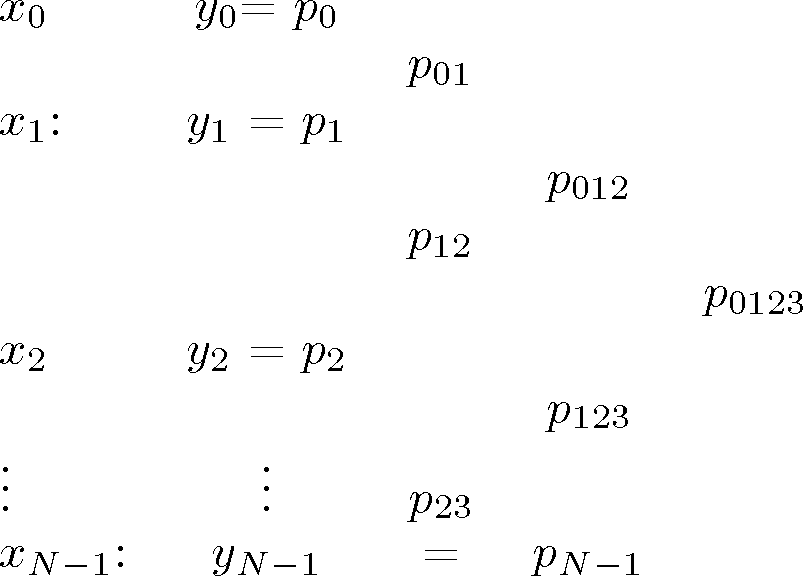
Figure 13.1 Tree structure for interpolation
The problem with polynomials is that they do not approximate some kinds of functions very well and in these cases we can use rational functions. A rational function is the quotient of two polynomials (a numerator and a denominator):
p
j=0
pjx j
q
Pp(x) Qq(x) =
r(x) =
(13.35)
qjx j
j=0
where p is the degree of the numerator polynomial and q is the degree of the denominator polynomial. There are p + q + 1 unknown coefficients in equation (13.35) (one coefficient is arbitrary) and since the rational function will pass through N points we must have
N = p + q + 1.
In general, we specify the desired order of both the numerator and the denominator when using rational functions as interpolators. The advantage of rational functions is that they can model poles. A pole in this case is a zero of the denominator in equation (13.35).
We construct a tree that is similar to the one in Figure 13.1. The end-result is the interpolated value as well as an error estimate. We discuss the diagonal rational functions where the degrees of the numerator and denominator are equal if N is odd and the degree of the denominator is larger by one than that of the numerator if N is even.
The algorithm in the current case is:
where
α − β
Rj(j+1)···(j+m) = α +
x − xj x − xj+m
α − β α − γ
1 −
α = R(j+1)···(j+m) β = Rj···(j+m−1) γ = R(j+1)···(j+m−1) (m = N − 1).
The algorithm is started as follows:
Rj = yj and
R = Rj(j+1)···(j+m)=0 0 for m = −1.
We discuss linear interpolation in two independent variables. This method will be used in Chapter 17 to interpolate cap and swaption volatilities. Let us consider the main scenario
as shown in Figure 13.2. Defining the parameter α = (x
2−x1)
y2−y1 we then get the interpolation formula:
1 α{ f (Q11)(x2 − x)(y2 − y) + f (Q21)(x − x1)(y2 − y)
f (x, y) ≈
(13.36)
+ f (Q12)(x2 − x)(y − y1) + f (Q22)(x − x1)(y − y1)}.
y
Q12 Q22
y2
Q11 Q21
y1
x x1 x2
Figure 13.2 Basis setup for bilinear interpolation
The class that implements bilinear interpolation is:
class BilinearInterpolator {
private Vector<double> x1Arr; // Abscissa x1-values private Vector<double> x2Arr; // Abscissa x2-values
private NumericMatrix<double> matVals; // Function values // Number of subdivisions private int N1; private int N2;
public Pair<int> findAbscissa(double x, double y) { // Will give index of LHS values <= x, y. Very simple algorithm
// Find separate components int firstIndex= 0; int secondIndex = 0;
for (int j = 0; j <= N1-1; j++) {
if (x1Arr[j] <= x && x <= x1Arr[j+1]) {
goto L1;
} firstIndex++;
}
L1:
for (int j = 0; j <= N2 - 1; j++) {
if (x2Arr[j] <= y && y <= x2Arr[j + 1]) {
goto L2; }
secondIndex++; }
L2:
return new Pair<int> (firstIndex, secondIndex);
} public BilinearInterpolator(Vector<double> x1arr, Vector<double> x2arr, NumericMatrix<double> gridValues) {
// Arrays must have the same size x1Arr = x1arr; x2Arr = x2arr; N1 = x1arr.Size-1; N2 = x2arr.Size - 1;
matVals = gridValues;
} public double Solve(double x, double y) { // Find the interpolated value at a point (x1Var, x2Var)
Pair<int> p = findAbscissa(x, y); int i = p.first; int j = p.second;
// 4 box points, create variables for readability (see Wiki) double Q11 = matVals[i, j]; double Q22 = matVals[i + 1, j + 1]; double Q12 = matVals[i, j+1]; double Q21 = matVals[i + 1, j];
double x1 = x1Arr[i]; double x2 = x2Arr[i+1]; double y1 = x2Arr[j]; double y2 = x2Arr[j+1];
double factor = 1.0/((x2-x1)*(y2-y1)); return (Q11 * (x2 - x) * (y2 - y) + Q21 * (x - x1) * (y2 - y) + Q12 * (x2 - x) * (y - y1) + Q22 * (x - x1) * (y - y1)) * factor;
} public NumericMatrix<double> Surface(Vector<double> x1arr, Vector<double> x2arr) { // Create the interpolated surface
NumericMatrix<double> result = new NumericMatrix<double> (x1arr.Size, x1arr.MinIndex);
for (int i = x1arr.MinIndex; i <= x1arr.MaxIndex; i++) {
for (int j = x2arr.MinIndex; j <= x2arr.MaxIndex; j++) {
result[i, j] = Solve(x1arr[i], x2arr[j]); }
} return result;
} public NumericMatrix<double> Surface() { // Create the interpolated surface, MEMBER DATA AS ABSCISSAE
}
return Surface(x1Arr, x2Arr); }
If you prefer, you can change the code to use do while instead of a ‘GOTO’ statement. We shall see some examples of the use of the bilinear interpolator in Section 13.14.4.
We remark that the decision on the type of interpolation to use is subjective and it will depend mainly on the type of application we are interested in. We can identify situations in which some interpolators outperform others and often there is a tradeoff. Interpolation can be a crucial step in the pricing process and practitioners invest much time in making their best choice. In a curve building process the interpolation scheme plays a critical and delicate role. A lot of risk and money can be hidden behind the interpolator. A typical headache for an interest rate trader is to solve the tradeoff between forward curve smoothness and bump hedge localness. It would demand a different type of scheme for each requirement, but one cannot simultaneously use more than one interpolator. Often in pricing and hedging a unique curve framework with only one interpolator is needed to meet all requirements at the same time, even if they are not always compatible. This is done on a best effort basis. A reasonable rule is to evaluate in each application what will happen if we change the interpolator and to test the behaviour of the interpolator in extreme cases and close to the boundaries. We give a summary of which interpolators we prefer to use and in which circumstances. The following remarks are based on our tests and so the validity should be evaluated case by case:
a) In a curve building context the Hagan-West method (Hagan and West 2006) generally outperforms all the other methods.
b) As alternative choice we prefer the Dougherty/Hyman cubic interpolator with filtering applied on the logarithm of discount factors. This monotone-preserving cubic spline gives better results than the rational cubic interpolator.
c) The Akima method is inferior to Dougherty/Hyman but is very good for more pointed shapes when its derivative estimate is deployed. It also has better properties than standard cubic splines. The authors in Rasch and Williamson 1989 conclude that the Akima method is better than the Hyman method for (triangular) peaked data. It performs less well for broader, more rounded shapes.
d) The geometric, harmonic and Fritsch-Butland approximations are consistently less accurate than other approximations.
e) In practice popular choice still remains the linear interpolation on the logarithm of the discount factor given its effectiveness in hedging calculation. The evident drawback of this approach is that the shape of forwards rates is not continuous. We must be careful when using this method, especially when we are dealing with financial instruments that are sensitive to the shape of forward rates.
f) Cubic spline interpolation produces a smooth and visually pleasing curve but it can overshoot in some cases (for example, with sparse input data), thus leading to inaccurate results. We have found it to be inferior to the Dougherty/Hyman and Akima methods, for example. For dense and uniformly distributed input data it is useful for certain kinds of applications.
g) Some types of interpolation that demonstrate oscillatory behaviour are to be avoided, such as Lagrange interpolation.
For a comparison of many other interpolation methods in the curve building process, see Hagan and West 2008.
To complete and support our remarks we give some graphical representations of different interpolation schemes applied on the same set of starting data, see Figure 13.3 (we used input data from Hagan 2006). Tests were carried out using the approach discussed in Section 13.2. The results are shown in Figure 13.3.
(a) (b)
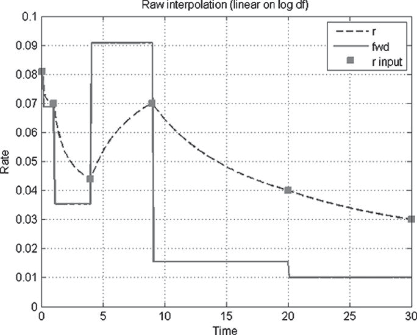
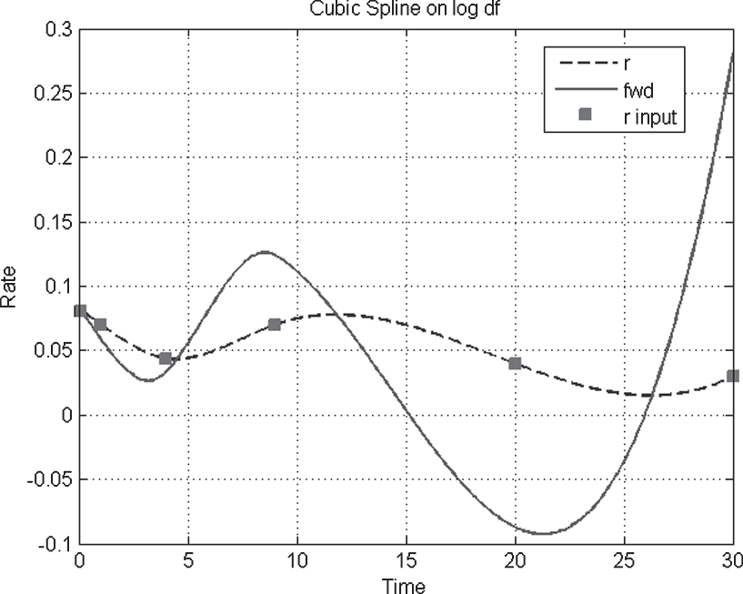
(c) (d)
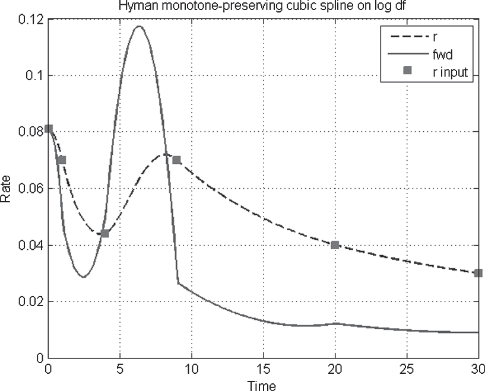
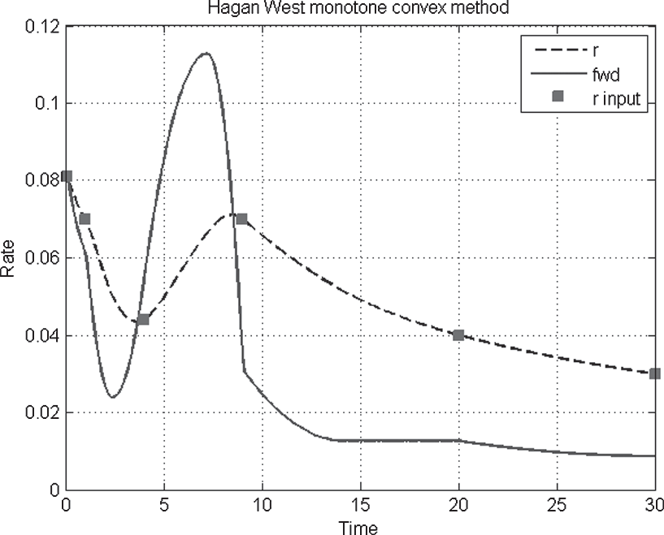
Figure 13.3 (a) Linear on log df (b) Cubic spline on log df (c) Hyman monotone-preserving (d) HaganWest approach
In Section 13.14 we discuss the practical implementation of tests and we provide a step by step explanation of the C# code framework. The reader can use it as a tool to do new tests or replicate those already done.
In this section we give some simple and illustrative examples of the interpolation methods and routines presented in this chapter. It took some time to understand, code and test these methods for the interest rate applications discussed in this book. There were several challenges when we embarked on this project:
Where could we find relevant documentation? In general, we employed a mix of internet search, textbooks, experience and libraries (for example, Matlab, QuantLib, Alglib, MathNet). Determining which methods were most suitable for our purposes. Integrating the interpolation code into our rates applications discussed in Chapters 15, 16 and 17.
In general, all routines have the same structure and input/output. The input consists of a vector of equal size representing the abscissa (x) values and function (y) values, respectively. These are normally sufficient to determine the functional form of the interpolator. Having done so, we can then interpolate based on a given input vector. We use our class Vector<T> to model vectors and we conveniently initialise these vectors by wrapping native .NET arrays aroundthem.Interpolationalsosupportsbuilt-inarraysinadditiontotheauthor-definedclasses (Chapter 6). The examples in the following sections are meant to show how to use the C# code for interpolation. It is easy to adapt the code to your own situation. Some scenarios are:
Improve the efficiency using parallel programming patterns (Chapter 26). In this case, the interpolation problem must be substantial enough to warrant the thread overhead. Improve the interoperability by defining standard interfaces (Chapter 4), namespaces and assemblies (Chapter 11). Adding new interpolation algorithms and methods. For example, we can create new interpolation classes and we can add new functionality to existing classes using extension methods (Chapter 4) and the Visitor design pattern (Chapters 4 and 18). Integrating the interpolation code with Excel, in particular Excel add-ins (Chapters 21 and 22).
The authors have been unable to execute all these projects due to lack of time. The main effort went into implementing the interpolation algorithms in C# and integrating them with interest rate applications.
In this section we take a very simple example to show how to use the software. It is useful to know because the same interpolation software will be used in Chapters 15, 16 and 17. We take an example in which the x values correspond to time (in years) and the y values correspond to interest rates. We then convert the interest rate vector to a vector whose elements are the logarithms of the discount factors. We then interpolate using the Dougherty/Hyman method.
To this end, we construct the following vectors representing interest rates out to 30 years from which we compute a vector of the logarithm of the discount factor:
// I Create initial t and r arrays(input data are from Hagan 2006). Vector<double> t = new Vector<double>(new double[] { 0.1, 1, 4, 9, 20, 30 }, 0); Vector<double> r = new Vector<double>(new double[] { 0.081, 0.07, 0.044, 0.07, 0.04, 0.03 }, 0);
// Compute log df Vector<double> logDF = new Vector<double>(r.Size, r.MinIndex); for (int n = logDF.MinIndex; n <= logDF.MaxIndex; ++n) {
logDF[n] = Math.Log(Math.Exp(-t[n] * r[n])); }
// II Hyman interpolator HymanHermiteInterpolator_V5 myInterpolatorH
= new HymanHermiteInterpolator_V5(t, logDF);
// Create the abscissa values f (hard-coded for the moment) int M = 299; Vector<double> term = new Vector<double>(M, 1); term[term.MinIndex] = 0.1; double step = 0.1; for (int j = term.MinIndex + 1; j <= term.MaxIndex; j++) {
term[j] = term[j - 1] + step; }
// III Compute interpolated values Vector<double> interpolatedlogDFH = myInterpolatorH.Curve(term);
// IV Compute continuously compounded rate fom the ZCB Z(0,t), // using equation (3) Hagan and West (2008). Vector<double> rCompounded = new Vector<double>(interpolatedlogDFH.Size,
interpolatedlogDFH.MinIndex); for (int j= rCompounded.MinIndex; j <= rCompounded.MaxIndex; j++) {
rCompounded[j] = -interpolatedlogDFH[j] / term[j];
} exl.printOneExcel<double>(term, rCompounded, "RCompound Hyman Cubic", "time","r continuously comp.", "r com");
The output in Excel is shown in Figure 13.4. The following code computes the vector of discrete forward rates.
// V Compute discrete forward rates using equation (6) from Hagan and West (2008) Vector<double> f = new Vector<double>(rCompounded.Size,
rCompounded.MinIndex); f[f.MinIndex] = 0.081; for (int j = f.MinIndex+1 ; j <= rCompounded.MaxIndex; j++)
{
f[j] = (rCompounded[j] * term[j] - rCompounded[j - 1]
* term[j - 1]) / (term[j] - term[j - 1]);
} exl.printOneExcel<double>(term, f, "Hyman Cubic", "time","discrete forward", "dis fwd");
RCompound Hyman Cubic
10.00%
r cont |
|||||
r continuously comp.
8.00%
6.00%
4.00%
2.00%
0.00%
0 5 10 15 20 25 30
time
Figure 13.4 Continuously compounded rates
The output in Excel is shown in Figure 13.5.
dis fwd |
|||||
0.0%
2.0%
4.0%
6.0%
8.0%
10.0%
12.0%
14.0%
0 5 10 15 20 25 30
discrete forward
time
Hyman Cubic
Figure 13.5 Discrete forward rates using Hyman interpolation
Using this framework we can test various interpolators simply by replacing the interpolator class. The only exception is for the Hagan-West interpolator, as discussed in Section 13.10, this method works directly on forward rates. The C# implementation has a different design than other interpolators. Interfaces and functionality are different. We show a piece of C# code
for the Hagan-West approach:
.. // Create initial t and r arrays double[] t = new double[] { 0.1, 1, 4, 9, 20, 30 }; double[] r = new double[] { 0.081, 0.07, 0.044, 0.07, 0.04, 0.03 };
// Monotone Convex interpolator (Hagan-West approach) MonotoneConvex HaganWest = new MonotoneConvex(t,r);
// Create the abscissa values double[] terms = ...
// Compute interpolated values double[] rates = HaganWest.GetInterpolatedRate(terms); double[] forwards = HaganWest.GetInterpolatedFwd(terms);
....
We give the code for some of the formulae (13.1) to (13.5). We can reuse them to calculate intermediate data in many interpolation tests.
static public void SimpleFormulas() {
double[] term = new double[] { 0.1, 1, 4, 9, 20, 30 }; double[] zeroRate = new double[] { 0.081, 0.07, 0.05, 0.07, 0.04, 0.03 }; double[] capFactor = CapitalizationFactor(term, zeroRate); double[] disFwd = DiscreteForward(term, capFactor); double[] discount = Discount(capFactor); double[] logDiscount = LogDiscount(discount);
for (int i = 0; i < term.Length; i++) {
Console.WriteLine("[A]: {0:F2}, [B]: {1}, [C]: {2:F4}, [D]: {3:F4}, [E]: {4:F4}, [F]: {5:F4} ", term[i], zeroRate[i], capFactor[i], disFwd[i], discount[i], logDiscount[i]);
} Console.WriteLine(); Console.WriteLine("[A] = Term; [B] = ContYield; [C] = CapFactor; [D] = DisFWD, [E] = discount; [F] = log of discount");
} // Capitalization from contYield given term, using equation (1) from Hagan and // West (2008) static public double[] CapitalizationFactor(double[] term, double[] contYield) {
int n = term.Length; double[] output = new double[n]; for (int i = 0; i < n; i++) {
output[i] = Math.Exp(term[i] * contYield[i]);
} return output;
} // Calculate Discrete FWD using equation (5) from Hagan and West (2008) static public double[] DiscreteForward(double[] term, double[] capFactor) {
int n = term.Length; List<double> t = new List<double>(term); List<double> c = new List<double>(capFactor); double[] outPut = new double[n]; t.Insert(0, 0.0); c.Insert(0, 1.0);
for (int i = 0; i < n; i++) {
outPut[i] = -Math.Log(c[i] / c[i + 1]) / (t[i + 1] - t[i]);//
} return outPut;
} // Calculate the discount factor from the capitalization factor using // equation (2) from Hagan and West (2008) static public double[] Discount(double[] capFactor) {
int n = capFactor.Length; double[] output = new double[n]; for (int i = 0; i < n; i++) {
output[i] = 1.0/capFactor[i]; //it 1/capitalization factor
} return output;
} // Calculate the logarithm of discount factor static public double[] LogDiscount(double[] df) {
int n = df.Length; double[] output = new double[n]; for (int i = 0; i < n; i++) {
output[i] = -Math.Log(df[i]);
} return output;
}
We show how to use the code for cubic spline interpolation by interpolation of continuous scalar functions:
public class Potpourri {
public static double func(double x) {
return x*x;
} public static double NormalPdf(double x) { // Probability function for Gauss fn.
double A = 1.0/Math.Sqrt(2.0 * 3.1415); return A * Math.Exp(-x*x*0.5);
} public static double Sigmoid1(double t) {
return 1.0 / (1.0 + Math.Exp(-t));
} public static double Sigmoid2(double t) {
double a = 0.6;
double b = 0.15;
double c = 10.0;
double d = -0.3;
return a + (b - a) / (1.0 + Math.Exp(-c * (Math.Log(t) - d)));
} public static double NormalCdf(double x) { // The approximation to the cumulative normal distribution
double a1 = 0.4361836; double a2 = -0.1201676; double a3 = 0.9372980;
} }
double k = 1.0 / (1.0 + (0.33267 * x)); if (x >= 0.0) {
return 1.0 - NormalPdf(x) * a1 * k + (a2 * k * k) + (a3 * k * k * k));
} else {
return 1.0 - NormalCdf(-x); }
A test program to interpolate two of the above logistic functions is:
public static void Main() {
Console.WriteLine("Vectors initialized: "); int N = 280; double a = -15.0; // Left of interval double b = 15.0; // Right of interval double h = (b-a)/N; int startIndex = 0; Vector<double> xarr = new Vector<double> (N+1, startIndex,0.0);
Vector<double> yarr = new Vector<double> (N+1, startIndex,0.0); for (int j = xarr.MinIndex; j <= xarr.MaxIndex; j++) {
xarr[j] = a + h * j; yarr[j] = Potpourri.Sigmoid1(xarr[j]); // yarr[j] = Potpourri.Sigmoid2(xarr[j]);
} Console.WriteLine("Vectors initialized: ");
int FirstDeriv = 1; CubicSplineInterpolator csi
= new CubicSplineInterpolator(xarr, yarr, FirstDeriv, 10, 10);
// Display arrays in Excel ExcelMechanisms exl = new ExcelMechanisms(); exl.printOneExcel<double>(xarr, csi.Curve(), "Logistic I", "x", "value" ,"I");
// Now choose 1st order derivative at zero double leftBC = 1.0; double rightBC = -1.0; CubicSplineInterpolator csi2 = new CubicSplineInterpolator(xarr, yarr,
FirstDeriv, leftBC, rightBC); // Display arrays in Excel
exl.printOneExcel(xarr, csi2.Curve(), "Logistic II", "x", "value", "II"); }
The output is shown in Figures 13.6 and 13.7.
1.2
1
0.8
value
0.6
0.4
0.2
0
−15 −10 −5 0 5 10 15
x
Figure 13.6 Output of the function Sigmoid1
0.7
0.6
0.5
0.4
value
0.3
0.2
0.1
0
0 2 4 6 8 10 12 14
x
Figure 13.7 Output of the function Sigmoid2
In this section we give two examples on how to interpolate two-dimensional data using the bilinear interpolation algorithm. The first example was taken from Wikipedia and it involves interpolation on a simple reference element consisting of four points in the form of a rectangle. The main objective is to determine if an initial test of our code gives the desired results, that is the result in Wikipedia:
class TestBilinearInterpolation {
public static void Main() {
Console.WriteLine("Vectors initialized: "); // Create mesh arrays int startIndex = 0; int N = 1; Vector<double> x1arr = new Vector<double>(N + 1, startIndex, 0.0); x1arr[0] = 20.0; x1arr[1] = 21.0;
Vector<double> x2arr = new Vector<double>(x1arr); x2arr[0] = 14.0; x2arr[1] = 15.0;
Console.WriteLine(x1arr); Console.WriteLine(x2arr);
// Control values; NumericMatrix<double> Control
= new NumericMatrix<double>(N + 1,N + 1,startIndex, startIndex); Control[0, 0] = 91.0; Control[1, 1] = 95.0; Control[0, 1] = 210.0; Control[1, 0] = 162.0;
} }
BilinearInterpolator myInterpolator
= new BilinearInterpolator(x1arr, x2arr, Control);
double x = 20.2; double y = 14.5; // 146.1 double value = myInterpolator.Solve(x, y); Console.WriteLine("Interpolated value: {0}", value);
Note that we need two vectors for the abscissa values in the x and y directions and a matrix representing the given function values at the corners of the control rectangle. We also need to state at which point to interpolate (represented by the variables x and y in the above code).
The second example is essentially an extension of the first example. We create a rectangular control mesh and we interpolate using the function defined by func. The documented code is:
public static void Main() {
// Create mesh arrays int startIndex = 0;
// Number of subdivisions N,M in the x and y directions int N = 4; int M = 3; Vector<double> x1arr = new Vector<double>(N + 1, startIndex, 0.0);
double a = 0.0; double b = 1.0;
double h1 = (b - a) / (double)N; x1arr[x1arr.MinIndex] = a;
for (int j = x1arr.MinIndex + 1; j <= x1arr.MaxIndex; j++) {
x1arr[j] = x1arr[j - 1] + h1;
} Vector<double> x2arr = new Vector<double>(M + 1, startIndex, 0.0);
double h2 = (b - a) / (double)M; x1arr[x1arr.MinIndex] = a;
for (int j = x2arr.MinIndex + 1; j <= x2arr.MaxIndex; j++) {
x2arr[j] = x2arr[j - 1] + h2;
} Console.WriteLine(x1arr); Console.WriteLine(x2arr);
// My function delegate using lambda expression Func<double, double,double > func = (double x1, double x2) => x1 + x2;
// Control values; NumericMatrix<double> Control
= new NumericMatrix<double>(N + 1, M + 1, startIndex, startIndex);
for (int i = Control.MinRowIndex; i <= Control.MaxRowIndex; i++)
{
for (int j=Control.MinColumnIndex;j<=Control.MaxColumnIndex; j++) {
Control[i, j] = func(x1arr[i], x2arr[j]); }
} BilinearInterpolator myInterpolator
= new BilinearInterpolator(x1arr, x2arr, Control);
double x = 0.1; double y = 0.7; double value = myInterpolator.Solve(x, y); Console.WriteLine("Interpolated value: {0}", value);
// Take centre point (xm, ym) of each element and interpolate on it NumericMatrix<double> InterpolatedMatrix
= new NumericMatrix<double>(N, M, startIndex, startIndex);
// Abscissa points of new interpolated matrix Vector<double> Xarr
= new Vector<double>(InterpolatedMatrix.Rows,startIndex,0.0); Vector<double> Yarr
= new Vector<double>(InterpolatedMatrix.Columns,startIndex,0.0); for (int i = InterpolatedMatrix.MinRowIndex;
i <= InterpolatedMatrix.MaxRowIndex; i++) {
for (int j = InterpolatedMatrix.MinColumnIndex;
j <= InterpolatedMatrix.MaxColumnIndex; j++) {
Xarr[i] = 0.5 * (x1arr[i] + x1arr[i+1]); // xm Yarr[j] = 0.5 * (x2arr[j] + x2arr[j + 1]); // ym
InterpolatedMatrix[i, j]
= myInterpolator.Solve(Xarr[i], Yarr[j]); }
} // Present the interpolated matrix in Excel ExcelMechanisms driver = new ExcelMechanisms(); string title = "Interpolated matrix"; driver.printMatrixInExcel<double>(InterpolatedMatrix,
Xarr,Yarr, title); }
The output in Excel is given as:
row/col 0.166667 0.5 0.833333 0.125 0.291667 0.625 0.958333 0.375 0.541667 0.875 1.208333 0.625 0.791667 1.125 1.458333 0.875 1.041667 1.375 1.708333
You can manually check that this output is correct. Note that there are four rows and three columns.
In this chapter we have presented a discussion of interpolation algorithms. We have investigated a number of interpolators and we have applied them to the benchmark case of curve construction, having explored the effect on forward rates. We whittled the list down to three methods which were the most robust in practice. These were the Dougherty/Hyman, the Akima and the Hagan-West methods. We implemented these and other methods in C#, providing the reader with the necessary tools for later chapters in particular Chapter 15 and 16 where the curve construction will be discussed in more detail.
1. Another form for discrete derivatives Implement the following algorithm in C# to compute discrete derivatives using the
geometric mean approach:
dj =
⎧ ⎨
⎩
0 if j−1 = 0 or j = 0
h j h j−1+h j
j−1
h j−1 h j−1+h j
j otherwise, j = 2,...,n − 1
d1 =
⎧ ⎨
⎩
0 if 1 = 0 or 3,1 = 0
1+ hh12 1
(−h1/h2) 3,1 otherwise
dn =
⎧ ⎨
⎩
0 if n−1 = 0 or n,n−2 = 0
1+hhnn−−12 n−1
−hhnn−−12
n,n−2 otherwise where
3,1 =
f3 − f1 x3 − x1
, n,n−2 =
fn − fn−2 xn − xn−2
.
Integrate the code into the framework and test using the Hagan-West data set. In general, this method is suitable for monotonic and convex data because of the relationship:
0 ≤ d1 < 1 < d2 < ··· < j−1 < dj < j < ··· < dn.
2. More data to interpolate Create software (for example, a class) to create arrays, interpolate them and display them
in Excel. Start with a delegate of the form:
delegate double ScalarFunction(double x);
Generalise the code using cubic spline interpolation in this section.
3. Binary search For all one-dimensional interpolators we have created a simple method to find the index
corresponding to a given value xvar in the interpolator sorted array xarr. This code uses a sequential search:
Vector<double> xarr; // x values public int findAbscissa(double xvar)
{ // Will give index of LHS value <= x. Very simple algorithm // Value in range [1,n-1]!!!
for (int j = 1; j < n; j++) {
if (xarr[j] <= xvar && xvar <= xarr[j + 1]) {
return j; }
}
// Then x is in the interval [j, j+1]. return 999;
}
Modify this initial code to use binary search. Test the interpolator code again. Apply this technique to two-dimensional interpolation as well, for example in the class BilinearInterpolator.
14
Short Term Interest Rate (STIR) Futures and Options |
As a general rule market operators may act in the market to protect themselves from market movements (hedgers), to take some risk making bets on market direction (speculators) or to gain from pricing anomalies (arbitragers). To manage market exposure to interest rate risk, operators can use different financial instruments:
Cash instruments. Over the counter (OTC) derivatives products: swap, Forward Rate Agreements (FRA), caps, floor and swaption. Futures and options listed on exchanges: Short-Term Interest Rate futures, option and bond futures.
Each of the above categories has different characteristics in terms of liquidity, counterparty risk, effectiveness and standardisation. The players’ choice depends on many factors, specific needs and situations in which these instruments are used.
In this chapter we discuss the third class of the above list of instruments, the so-called STIR (Short-Term Interest Rate) futures and options. They can be seen as derivatives on the underlying cash money market rate and contracts on short-term interest rates. Since STIR products derive their value from a cash money market rate we give a short overview of the main trading areas of cash money markets and the related sources of risk.
We discuss why STIRs are popular and what their advantages are. In particular, we examine STIR futures and STIR options features, how to price them and in the latter case we provide expressions for calculating option sensitivities.
We introduce STIR futures and options because we believe that they have good characteristics from a didactic viewpoint:
They are popular products. They are simple instruments to understand and the mathematical formulae are elementary. They show the application of some data structures (NumericMatrix, Tensor, AssocArray, etc.). Both futures and options are available with standardised characteristics. We can show how to manage reusable data. We can show the use of simple risk formulae.
This chapter uses a number of methods from previous chapters. First, we use day count conventions (in the main, ACT/360 or ACT/365). Second, we add a number of methods to class Date related to IMM (International Monetary Market) and futures conventions. Finally, we use data structures such as NumericMatrix<V>, Tensor<V> and AssocArray <K, V>.
The cash money market is a segment of the financial market in which players trade debt instruments with short maturities. Instruments traded in cash markets involve payments of real sums of money between parties. The maturity of the money market products is generally 12 months or less. In most countries the money market is OTC (Over-The-Counter). Two main areas are:
Unsecured Cash: This is the ‘Interbank Deposit’ market. Banks make deposits and loans to manage surplus funds or needs for funds. Using term deposits players borrow or lend large sums of cash for a specific period of time. The interest rate is fixed for that period and the principal amount plus interest is repaid at the maturity of deposit. The periods are typically O/N (overnight), T/N (Tom/Next), 1 week, 2 weeks, 1 month, 2, 3, 6, 9 and 12 months.
Deposits are mainly traded OTC. The contract is between the parties. The interest rate of deposits will also depend on the credit worthiness of each party. Interbank Offered Rate Euribor (from which STIR futures derive) can be used as a key reference for loans and deposits in Euros. It is fixed every day based on average rates quoted by a panel of banks. The fixing refers to credit risk of quoting players.
In general, non-bank participants (for example, large corporations) or low-rated banks may have to pay a ‘margin’ above the offer price if they wish to borrow cash. The amount depends mainly on credit worthiness. For example, suppose the fixing of 3M Euribor is 1.42%. A high rated bank is able to find funds at a rate very close to fixing, that is at 1.42. A low-rated bank may receive funds for 3 months at Euribor plus a spread. In the example, if spread is 50 bps, the cost of funding for 3 months term deposit will then be 1.92%. The contract is directly between two counterparties and thus involves counterparty risk.
Secured Cash: these are also known as cash-based securities or tradable papers, for example Commercial Paper, Certificates of Deposit (they may also have maturity greater than 12 months), Treasury Bills and repo (sale and repurchase agreement used to finance bonds positions). In many countries Treasury Bills and repo are also traded on exchanges. For example,EUREXRepoandMMFRepoareelectronicmarketsforfinancingsecuritytrading with counterparties in an anonymous way through a central counterparty.
Trading money market instruments may be related to the following risks:
1) Interest rate risk.
2) Counterparty (credit) risk.
3) Foreign exchange FX (or currency) risk.
Interest Rate Risk: Interest rates may move sharply. It is not easy to predict the timing and the direction of movements of these rates. Many players wish to avoid this randomness and for this reason this kind of risk must be managed. By the term managing interest rate risk we mean any action taken based on actual or possible interest rate movements. The management of interest rate risk in the short-term cash money markets depends on whether the counterparty is a borrower or lender of funds. The borrower wishes to borrow at a lower rate and we say that the borrower is creating a liability. The lender, on the other hand creates
assets and he prefers to invest at a high rate. The risk for those who are receiving fixed rate is that rates will rise and vice versa.
Counterparty risk is the risk that loaned funds will not be repaid by the borrower. The credit department of banks will set up and monitor a set of credit lines specifying a) counterparty approved to get bank funds, b) the amount that can be lent and c) the maximum maturity of the loan.
Foreign exchange FX (or currency) risk will arise only if we work with different currencies. We are vulnerable to exposure of future cash payments in a foreign currency. An example is a European bank with a Euro denominated balance and we borrow and lend funds in USD. There is a need to lock in the rate of exchange that will apply at some future date. To do so we can use forward contracts or currency futures. We do not cover this topic in this book.
The key reference rate for term deposits transactions in Euros is the European Bankers Federation (EBF) EURIBOR (‘Euro Inter-bank Offered Rate’). It is fixed every business day at 11 a.m. Brussels time. It is based on rates submitted by a panel of contributor banks. These rates are fixed for a set of maturities from 1 day to 12 month.
Similarly, for many currencies there is an official LIBOR fixing under the British Bankers Association (BBA). BBA Fixing covers 10 currencies (AUD, CAD, CHF, DKK, EUR, GBP, JPY, NZD, SEK, USD). These are fixed each day at 11 a.m. London time.
The 3 month fixing is the reference fixing for STIR futures. It is the underlying cash product that STIR future contracts derive from. USD, GBP, CHF, JPY STIR futures refer to BBA fixing, while EUR STIR futures refer to EBF fixing.
Each fixing quotation refers to a specific value date and day basis convention. We can say that, for example EURIBOR has value date ‘t + 2’ (start calculating accrual number of days for deposits two business days after the trade date), and a day basis ‘act/360’ (calculate actual number of days in the deposit divided by 360). Each currency has its own fixing convention (for example sterling is ‘t + 0’, ‘act/365’).
Conventions allow us to correctly calculate the amount of interest to be paid or received on a loan or deposit. Suppose we have a deposit linked to 3M EURIBOR. We can say the floating rate is fixed at the start of the fixed period in question but it is paid at the end of the period (fixed in advance and paid in arrears). The formula is:
Actual no. of days in period Actual no. of days in year
Simple Interest = Principal Amount × Rate ×
where we use standard day count conventions as already discussed in Chapter 12.
(14.1)
We give some technical background on STIR futures. A STIR future is a contract on forward transactions that comprises an obligation at some settlement date in the future to buy or sell a standardised amount of a given short term interest rate product (underlying) at a predetermined price for a cash settlement.
Unlike OTC forward transactions (FRA, for example), the contract specifications of STIR futures are standardised. The main exchanges for STIR are CME, EURONEXT, EUREX and SGX.
STIR contracts have a standard contract size as determined by the exchange. For Eurodollar futures the amount is $1,000,000, for EURIBOR futures it is €1,000,000, for Short Sterling futures it is £500,000, for EuroSwiss futures it is CHF 1,000,000 and for Euro-yen it is
100,000,000. STIR contracts do not involve substantial up-front payments, only margins that they can be considered as having leverage.
A STIR future contract derives from the cash inter-bank markets because it is concerned with the trading of the implied value of 3-month fixing rates (USD LIBOR, EURIBOR). The period of time to calculate is 3/12 of a year (that is 0.25).
STIR futures contracts are liquid and standardised contracts that trade for quarterly contract months, namely March, June, September and December. STIR futures are tradable which means that they can be bought and sold on an on-going basis up to the expiry date at which time the contract ceases to exist.
STIR contracts move like bonds: when rates go up they lose value and when rates drop the future price goes up. They are quoted as 100.00 minus the 3-month expected implied interest rate F (implied rate):
P = 100.00 − (F ∗ 100). The value V of one contract is defined as
V = 10,000[100 − 0.25(100 − F)].
It is easy to understand that changing the implied rate by one basis point implies that the quoted price will change by 0.01 and the value of the contract will change by 25 Euro. Given initial F = 1.50% we have P = 98.50, V = 996,250 EUR. If F rises 1bp, then F = 1.51%, P = 98.49 and V = 996,225 EUR, giving a delta in value of 25 EUR (996,250 − 996,225).
The minimum price movement (Minimum Tick) is 0.005 for Eurodollar futures, EURIBOR futures, EuroSwiss futures and Euro-Yen. This means that if the price is 99.000 it may go up to 99.005 or down to 98.995. For short Sterling the minimum price movement is 0.01.
The minimum tick value is the value in each currency of a minimum tick. For example, for EURIBOR the STIR tick value is €12.5.
A STIR is a contract on the forward value of the fixing. The rate implied by the quote of STIR (future rate) can be different from the corresponding FRA rate (forward rate). This happens for a number of reasons. Some differences may be attributed to the fact that futures provide daily profit and loss settlement through a margin mechanism and to the fact that they have a better credit risk. The forward value is calculated as cash flow provided at the end of the contract (or discounted at the beginning for FRA). In general, forward rates are lower than future rates. Practitioners use some adjustments to convert STIR future rates to forward interest rates. These are also known as convexity adjustments. A popular formula is:
Futures rate = Forward rate − 0.5 σ2T1T2
where T1 is the maturity of a futures contract, T2 the maturity of the rate underlying the futures contract and σ is the volatility of the short term rate.
Cash money market operations such as cash loans and deposits involve physical payment (and ensuing risk). Hence, we call them on-balance sheet exposures. This may demand setting
capital aside in the eventuality of non-repayment and risky debts. The end-result is that onbalance trading is expensive to conduct. STIR derivatives are off-balance sheet instruments; they do not involve the physical borrowing or lending of the nominal underlying contract value. Furthermore, the nominal value is never at risk.
Trading STIR futures may be an efficient solution in terms of capital requirements (offbalance products) and counterparty risk (the clearing house is the counterparty). They allow us to manage interest rate risk without adding new counterparty risk and they are efficient with respect to capital requirements imposed by regulators.
We now discuss the C# code that implements short term futures. The class is called STFut and it has member data for:
Market price. Implied rate. IMM date (see Section 14.7). Notional repayment date (the end date of the future underlying rate).
The most important methods in this class concern the following functionality: Calculate the rate from the price and vice versa. Calculate the final repayment date of the underlying rate of the STIR future. Calculate the number of days between the notional repayment date and the IMM date. Calculate the quarterly forward discount factor using the future price. C# properties to set and get member data.
public class STFut {
//data member private double mktPrice; private double implRate; private Date IMMDate; private Date NotionalRepayDate;
// ... }
An example of use is:
// Class STFut: Property and Methods public static void Example1() {
// Create Future double price = 99.0; double month = 12; double year = 2013; STFut myFut = new STFut(99.00, 12, 2013);
// Method Console.WriteLine("fwdDF: {0}",myFut.fwDFq()); Console.WriteLine("IMMDate: {0}",myFut.GetIMMDate); Console.WriteLine("Term: {0}",myFut.Term());
// Property Console.WriteLine
("NotionalRepayDate: {0}", myFut.GetNotionalRepayDate); Console.WriteLine(); // Get/Set Console.WriteLine
// Changing price double newPrice = 99.50; myFut.GetSetPrice = newPrice; Console.WriteLine("New price {0}", newPrice); Console.WriteLine("Price: {0}, Rate: {1:P2}", myFut.GetSetPrice,
myFut.GetSetRate);
Console.WriteLine(); // Changing rate double newRate = 0.015; myFut.GetSetRate = newRate; Console.WriteLine("New Rate {0:P2}", newRate); Console.WriteLine("Price: {0}, Rate: {1:P2}", myFut.GetSetPrice,
myFut.GetSetRate); }
In Section 14.8 we introduce a specialisation of STFut to model real listed STIR futures.
We now discuss STIR options. The buyer of such a contract has the right but not the obligation to buy or sell the underlying STIR futures contract at a given price and within a given time period. We consider two types of options, namely call and put. Buyers of STIR call options expect the price to rise, i.e. that interest rates fall, while the buyers of STIR put options expect the price to fall, i.e. that interest rates rise. STIR options are American style and the exercise involves the assignment of the underlying futures at the strike price. STIR options are tradable on exchanges, typically the premium is settled using the future-style method, which means that the premium is not entirely paid until option expiry or exercise: profits or losses are immediately realised (by means of daily margins with a Clearing House), even if the position is not liquidated. The early exercise depends only on the financing of the intrinsic value but, given future-style method for settlement, the early exercise is never optimal, thus the values of the options computed as European or American should then be the same (see Taleb, 1997).
The Black model is used to price STIR call and put options. The pricing formulae for call and put options are:
C = SN(d1) − KN(d2) (14.2) and
P = −SN(−d1) + KN(−d2), (14.3) respectively. In these formulae we have used the following notation:
2
log(S/K) + σ
d1 =
where
d2 = d1 − σ√t S = underlying asset price K = strike price σ = volatility t = time to expiry.
and we use the Gaussian pdf and cdf:
1 √2π
n (x) =
1 √2π
N (x) =
e−x2/2
x
e−t2/2dt.
−∞
We also give the formulae for option sensitivities, for example the delta, gamma, vega and theta for calls and puts:
C = N(d1) P = N(d1) − 1
C = P = n (d1)/Sσ√t Vega (C) = Vega(P) = Sn (d1)√t C = P =
−Sn(d1)σ 2√t
.
(14.4)
The use of the implied rate instead of STIR future price as the underlying of the model has been a common market practice. The drawback of this approach is discussed in Nyse Liffe
2008. More approaches on STIR option pricing are discussed in Sadr 2009.
Finally, we note that it is possible to compute price volatility from yield volatility and vice versa by the following formulae (see Haug 2007):
y = 100 − F
F 100 − F
σy = σF
100 − F F
σF = σy
.
We now show how to implement formulae (14.2) and (14.3) in C#. To this end, we create a class called STFutOption that contains option-related parameters and that has methods for the option price and the four option sensitivities as defined in equation (14.4).
The member data in this class are:
public class STFutOption {
public double COP; // 1= call, -1 = put public double S; // Underlying Asset Price double X; // Exercise Price double SIGMA; // Volatility double D1; // D1 = (ln(S/X)+(0.5*SIGMA*SIGMA*T)) / (SIGMA*Tˆ(0.5)); double D2; // D2 = D1 - (SIGMA*Tˆ(0.5)) ; double DaysToExpiry; // DaysTo Expiry double T; // Time To Maturity in years double DaysPerYear; // Days Per Year, used to calculate year fraction
// ... }
The C# class that implements STIR options is called STFutOption. An example of use is:
// Class STFutOption public static void Example2() {
// Option data for opt1 and opt2 double CoP = -1; double underlying = 99.23; double strike = 99.25; double daysToExpiry= 82; double sigma = 0.449;
// Option data only for double daysPerYear = 360; STFutOption myOpt1 = new STFutOption(CoP, underlying, strike,
daysToExpiry, sigma);
STFutOption myOpt2 = new STFutOption(CoP, underlying, strike, daysToExpiry, sigma,daysPerYear);
// Showing Data Console.WriteLine("CoP = {0}; underlying = {1}; strike = {2};
daysToExpiry = {3}; sigma = {4}", CoP, underlying, strike, daysToExpiry, sigma);
Console.WriteLine("daysPerYear Opt1 = {0} daysPerYear Opt2 = {1}", 365, daysPerYear); Console.WriteLine("CoP\t opt1: {0}\t opt2: {1}", myOpt1.COP, myOpt2.COP); Console.WriteLine("Price\t opt1: {0:F4}\t opt2: {1:F4}", myOpt1.Price()/100.0, myOpt2.Price()/100.0); Console.WriteLine("Delta\t opt1: {0:F4}\t opt2: {1:F4}", myOpt1.Delta(), myOpt2.Delta()); Console.WriteLine("Gamma\t opt1: {0:F4}\t opt2: {1:F4}", myOpt1.Gamma(), myOpt2.Gamma());
Console.WriteLine("Theta\t opt1: {0:F4}\t opt2: {1:F4}", myOpt1.Theta(), myOpt2.Theta()); Console.WriteLine("Vega \t opt1: {0:F4}\t opt2: {1:F4}", myOpt1.Vega(), myOpt2.Vega());
// Changing data:now opt2 becomes a call, underlying and expiry change myOpt2.Toggle();// now is a call underlying = 99.05;// new price daysToExpiry--;// a day pass
// Updating options myOpt1.new_DaysToExpiry=daysToExpiry; myOpt2.new_DaysToExpiry=daysToExpiry; myOpt1.new_S=underlying; myOpt2.new_S=underlying;
// Showing new data Console.WriteLine("underlying = {0}; daysToExpiry = {1}",
underlying, daysToExpiry); Console.WriteLine("CoP\t opt1: {0}\t opt2: {1}", myOpt1.COP, myOpt2.COP); Console.WriteLine("Price\t opt1: {0:F4}\t opt2: {1:F4}", myOpt1.Price()/100.0, myOpt2.Price()/100.0); Console.WriteLine("Delta\t opt1: {0:F4}\t opt2: {1:F4}", myOpt1.Delta(), myOpt2.Delta()); Console.WriteLine("Gamma\t opt1: {0:F4}\t opt2: {1:F4}", myOpt1.Gamma(), myOpt2.Gamma()); Console.WriteLine("Theta\t opt1: {0:F4}\t opt2: {1:F4}", myOpt1.Theta(), myOpt2.Theta()); Console.WriteLine("Vega \t opt1: {0:F4}\t opt2: {1:F4}",
myOpt1.Vega(), myOpt2.Vega()); }
The output from this code is:
CoP = -1; underlying = 99.23; strike = 99.25; daysToExpiry = 82; sigma = 0.449 daysPerYear Opt1 = 365 daysPerYear Opt2 = 360
CoP opt1: -1 opt2: -1 Price opt1: 0.0842 opt2: 0.0848 Delta opt1: -0.4580 opt2: -0.4577 Gamma opt1: 0.0188 opt2: 0.0187 Theta opt1: -18.6463 opt2: -18.5167 Vega opt1: 18.6594 opt2: 18.7871
underlying = 99.05; daysToExpiry = 81 CoP opt1: -1 opt2: 1 Price opt1: 0.0845 opt2: 0.0825 Delta opt1: -0.4617 opt2: 0.5383 Gamma opt1: 0.0190 opt2: 0.0190 Theta opt1: -18.7445 opt2: -18.7445 Vega opt1: 18.5289 opt2: 18.5289
International Monetary Market (IMM) dates are four quarterly dates in each year defined by the third Wednesday in the months March, June, September and December. These dates are important because they represent the most liquid STIR futures contract delivery dates. In addition, serial months contracts are also available for trading on many exchanges such as CME, Eurex and LIFFE. We would like to generate IMM dates over a number of years. To this end, we first note that the class Date has a static method to compute the date corresponding to the third Wednesday in a given month and year:
public static Date IMMDate(int Month, int Year) {
}
// Start with last day of previous month DateTime outPut
= new DateTime(Year, Month, 1).AddDays(-1); int NoOfWednesday = 0; // Wednesday counter
// Loop to find third Wednesday while (NoOfWednesday < 3) {
outPut = outPut.AddDays(1); if (outPut.DayOfWeek == DayOfWeek.Wednesday) {
NoOfWednesday++; }
} return new Date(outPut);
Furthermore, we also have a static method to calculate the nearest IMM date to a given date (in increasing time):
public static Date IMM_Date_Nth(Date Today, int NthStir) {
//http://www.euronext.com/editorial/wide/editorial-4304-EN.html 106420.xls DateTime Today_ = Today.DateValue; // Casting to DateTime int Month = Today_.Month; // Month int int Year = Today_.Year; // Year int int Rem; // The remainder int result = Math.DivRem(Month, 3, out Rem); int Quarter = Month + (3 - Rem) * Math.Sign(Rem); if (Today.SerialValue > (IMMDate(Quarter, Year).SerialValue - 2)) {
Rem = Quarter + 3 * NthStir;
} else {
Rem = Quarter + 3 * (NthStir-1); }
return IMMDate(Rem - 12 * (int)((Rem - 0.5) / 12), Year
+ (int)((Rem - 0.5) / 12)); }
Based on these methods it is easy to generate an array of IMM dates of a given size and starting from a given start date and, second, to generate IMM dates for a futures strip:
public static void Example3() {
Date today = new Date(2011, 6, 16); // My today int minIndex = 0; // Min index of myDateVect int nOfDates = 6; // # element of myDateVect
string myDateFormat = "ddd dd MMM yyyy"; // Data format for output Console.WriteLine("Reference Date Third Wednesday of Ref Date"); for (int i = minIndex; i < nOfDates; i++) {
myDateVect[i] = today.AddMonths(3*i); Console.WriteLine("{0} \t{1}",
myDateVect[i].DateValue.ToString(myDateFormat), myDateVect[i].IMMDate().DateValue.ToString(myDateFormat));
} Console.WriteLine("\n{0} {1}",
"IMM Dates for futures strip [Mar,Jun,Sep,Dec]. Today is", today.DateValue.ToString(myDateFormat));
// We show the IMM Date of futures strip of type Mar,Jun,Sep,Dec for (int i = minIndex+1; i < nOfDates; i++) {
}
Console.WriteLine("#{0} stir \t{1}",
i,today.IMM_Date_Nth(i).DateValue.ToString(myDateFormat)); }
The output from this code is:
Reference Date Third Wednesday of Ref Date Thu 16 Jun 2011 Wed 15 Jun 2011 Fri 16 Sep 2011 Wed 21 Sep 2011 Fri 16 Dec 2011 Wed 21 Dec 2011 Fri 16 Mar 2012 Wed 21 Mar 2012 Sat 16 Jun 2012 Wed 20 Jun 2012 Sun 16 Sep 2012 Wed 19 Sep 2012
IMM Dates for futures strip [Mar,Jun,Sep,Dec]. Today is Thu 16 Jun 2011
#1 stir Wed 21 Sep 2011
#2 stir Wed 21 Dec 2011
#3 stir Wed 21 Mar 2012
#4 stir Wed 20 Jun 2012
#5 stir Wed 19 Sep 2012
Often traders wish to know how the delta of their options will change when the underlying and volatility move and the days go by. In this section we use some C# data structures to manage an option’s delta computed in various scenarios.
The following code creates an associative matrix containing computed option delta values for discrete ranges of the underlying value and time to expiry. The advantage of using an associative matrix is that we can perform table lookup in the matrix by using values of the underlying and maturity as indices rather than integer (or double) indices as we would have with ordinary matrices. Finally, we display the associative matrix in Excel using the Excel Visualiser software:
public static void Example4() {
// Create the option STFutOption opx1 = new STFutOption(1, 97.935, 98.25, 175, 0.00919);
// Option deltas Console.WriteLine("{0}, {1}", opx1.Price(), opx1.Delta()); opx1.Toggle(); Console.WriteLine("{0}, {1}", opx1.Price(), opx1.Delta());
// Call and put checking deltas and call put parity double S = 97.935; double K = 98.25; double daysToExpiry = 175; double Vol = 0.00919; STFutOption Call = new STFutOption(1, S, K, daysToExpiry, Vol); STFutOption Put = new STFutOption(-1, S, K, daysToExpiry, Vol);
Console.WriteLine("{0},{1},{2}", Call.Delta(), Put.Delta(),
Call.Delta() - Put.Delta());//Call/Put delta are reversed Console.WriteLine("{0}", Call.Price() - Put.Price() - S + K); //Call/Put parity // Time passing - column int d_columns = 20; // How many days from and including today. double shift_c = 1.0; // Interval in days between each column. // Changing value of underlying int d_rows = 15 // How many values plus or minus the value double shift_h = 0.10; // Interval in underlying
NumericMatrix<double> deltaMatrix
= new NumericMatrix<double>(d_rows * 2 + 1, d_columns);
// Underlying value set double d_r = -d_rows; Set<double> underlying = new Set<double>(); for (int i = 0; i < deltaMatrix.Rows; i++) {
underlying.Insert(S + d_r * shift_h); d_r++;
} // Days to maturity set double d_c = 0; Set<double> days = new Set<double>(); for (int i = 0; i < deltaMatrix.Columns; i++)
{
days.Insert(daysToExpiry + d_c * shift_c); d_c--;
} // Populate matrix containing delta values int my_r = 1; int my_c = 1; foreach (double valueS in underlying) {
Call.new_S = valueS; foreach (double valueDays in days) {
Call.new_DaysToExpiry = valueDays; deltaMatrix[my_r, my_c] = Call.Delta(); my_c++;
} my_r++; my_c = 1;
}
// Creating AssocMatrix AssocMatrix<double, double, double> OutMatrix = new AssocMatrix<double, double, double>(underlying, days, deltaMatrix);
// Print associative matrices in Excel, to "StirDeltas" sheet ExcelMechanisms exl = new ExcelMechanisms(); exl.printAssocMatrixInExcel<double, double, double>
(OutMatrix, "StirDeltas"); }
We now create a three-dimensional data structure (an instance of class Tensor<double>) that contains option values for a three-dimensional discrete mesh whose dimensions are the underlying, volatility and maturity. We take a specific example to show how to calculate the three-dimensional matrix (tensor) containing the price of a STIR future option for a range of values of underlying price, volatility and days to maturity. The basic inputs are:
// Example 5 // Values are hard-coded, can be generalized. Vector<double> prices = new Vector<double>
(new double[]{99.10,99.15,99.20,99.25,99.30},0); Vector<double> daysToMaturity = new Vector<double>
(new double[]{82,81,80,79,78, 76},0); Vector<double> vols = new Vector<double>
(new double[] {0.35, 0.40,0.45 },0);
// Create my option STFutOption opx1 = new STFutOption(1, 99.20, 99.25, 82, 0.40);
The code to create the instance of Tensor and populate it with computed option prices is:
// Create my tensor int startIndex = 0; Tensor<double> MyTensor = new Tensor<double>
(prices.MaxIndex+1, vols.MaxIndex+1, daysToMaturity.MaxIndex+1,
// Populating tensor for (int t=daysToMaturity.MinIndex;t <= daysToMaturity.MaxIndex; t++) {
for (int r = prices.MinIndex; r <= prices.MaxIndex; r++) {
for (int c = vols.MinIndex; c <= vols.MaxIndex; c++) {
opx1.new_DaysToExpiry = daysToMaturity[t]; opx1.new_S = prices[r]; opx1.new_Sigma = vols[c]; MyTensor[r, c, t] = opx1.Price()/100.0;
} }
}
Having created the tensor we can display it on the Console and in Excel:
// Printing on the Console for (int t=daysToMaturity.MinIndex;t <= daysToMaturity.MaxIndex; t++) {
Console.WriteLine("Now is Day: {0}",t); for (int r = prices.MinIndex; r <= prices.MaxIndex; r++) {
Console.Write("{0:F2} (Vols{1:F2}/{2:F2}/{3:F2}) :",
prices[r], vols[0], vols[1], vols[2]); for (int c = vols.MinIndex; c <= vols.MaxIndex; c++) {
Console.Write("{0:F5} ", MyTensor[r, c, t]);
} Console.WriteLine();
} Console.WriteLine();
} // Display in Excel; the row and column labels will be the index numbers. // For each maturity date/day a cell matrix will be printed. ExcelMechanisms exl = new ExcelMechanisms(); exl.printTensorInExcel<double>(MyTensor);
You can run the code from the software distribution kit and check the output. For completeness, we show the Console output:
Now is Day: 0 99.10 (Vols0.35/0.40/0.45) :0.06481 0.07415 0.08348 99.15 (Vols0.35/0.40/0.45) :0.06508 0.07442 0.08375 99.20 (Vols0.35/0.40/0.45) :0.06534 0.07469 0.08402 99.25 (Vols0.35/0.40/0.45) :0.06561 0.07496 0.08429 99.30 (Vols0.35/0.40/0.45) :0.06588 0.07523 0.08456
Now is Day: 1 99.10 (Vols0.35/0.40/0.45) :0.06441 0.07370 0.08297 99.15 (Vols0.35/0.40/0.45) :0.06468 0.07396 0.08324
99.20 (Vols0.35/0.40/0.45) :0.06494 0.07423 0.08351 99.25 (Vols0.35/0.40/0.45) :0.06521 0.07450 0.08378 99.30 (Vols0.35/0.40/0.45) :0.06548 0.07477 0.08405
Now is Day: 2 99.10 (Vols0.35/0.40/0.45) :0.06401 0.07324 0.08245 99.15 (Vols0.35/0.40/0.45) :0.06428 0.07350 0.08272 99.20 (Vols0.35/0.40/0.45) :0.06454 0.07377 0.08299 99.25 (Vols0.35/0.40/0.45) :0.06481 0.07404 0.08326 99.30 (Vols0.35/0.40/0.45) :0.06507 0.07431 0.08353
Now is Day: 3 99.10 (Vols0.35/0.40/0.45) :0.06361 0.07277 0.08193 99.15 (Vols0.35/0.40/0.45) :0.06387 0.07304 0.08220 99.20 (Vols0.35/0.40/0.45) :0.06414 0.07331 0.08247 99.25 (Vols0.35/0.40/0.45) :0.06440 0.07358 0.08274 99.30 (Vols0.35/0.40/0.45) :0.06467 0.07385 0.08301
Now is Day: 4 99.10 (Vols0.35/0.40/0.45) :0.06320 0.07231 0.08141 99.15 (Vols0.35/0.40/0.45) :0.06346 0.07258 0.08168 99.20 (Vols0.35/0.40/0.45) :0.06373 0.07284 0.08195 99.25 (Vols0.35/0.40/0.45) :0.06399 0.07311 0.08222 99.30 (Vols0.35/0.40/0.45) :0.06426 0.07338 0.08249
Now is Day: 5 99.10 (Vols0.35/0.40/0.45) :0.06237 0.07137 0.08035 99.15 (Vols0.35/0.40/0.45) :0.06264 0.07164 0.08062 99.20 (Vols0.35/0.40/0.45) :0.06290 0.07190 0.08089 99.25 (Vols0.35/0.40/0.45) :0.06317 0.07217 0.08116 99.30 (Vols0.35/0.40/0.45) :0.06344 0.07244 0.08143
In both cases you can run the software and view the output in Excel. These structures are useful for debugging back-testing scenarios.
We discuss two classes that we use as support for other code. The first class (called ListedContSpec) stores typical data and specifications for a listed contract while the class ListedContDB is a set of ListedContSpec instances.
The UML class diagram for the classes in question is given in Figure 14.1. The interface IListedInstrument defines readable properties for listed instruments:
Label: the code for the instrument. For example, for a EURIBOR STIR future may be "ER". Tick size: this is the minimum price movement of a trading instrument. For example, for a EURIBOR STIR future the value is 0.005.
Tick value: the value corresponding to a tick size. For example, for a EURIBOR STIR future the value is €12.5.
Contract size: the deliverable quantity of goods or commodities that underlie futures, forward and option contracts. For example, for a EURIBOR STIR future the value is €1,000,000.
IListedinstrument <<interface>> |
ListedContSpec * ListedContDB
Figure 14.1 Listed contracts
Currency in which the contract is traded. For example for EURIBOR STIR future the value is EUR. The class ListedContSpec implements the interface IListedInstrument by
implementing the latter’s (abstract) methods. To this end, we define appropriate member data and they are initialised in a constructor, as the following code shows:
// Create a customized ListedContSpec string label = "Custom"; double minTick = 0.01; double tickValue = 10.0; double contractSize = 100000; string currency = "EUR";
ListedContSpec myListedContSpec = new ListedContSpec(label, minTick, tickValue, contractSize, currency);
The class ListedContDB is a container (or in-memory database) for a set of ListedContSpec instances. The code on the software distribution kit is for illustrative purposes and it can be improved (see the exercises below in Section 14.11).
We now discuss listed STIR futures and listed STIR futures options classes in C#. The corresponding UML diagram is shown in Figure 14.2. The two classes of interest here are called ListedSTFut and ListedSTFutOption. They use a combination of class specialisation and interface inheritance. This is a common design pattern and it avoids many of the problems associated with C++ because it does not support interfaces and we are then forced to use multiple inheritance (something that should be avoided).
Based on hard-wired input data we show some code examples:
// Class ListedSTFut: Property and Method, using a predefined // "ER" setting public static void Example6() {
// Using ListedSTFu Class, I take "ER" setting for Euribor future. ListedSTFut ERZ3 = new ListedSTFut(99.18, 12, 2013, "ER");
}
// Some property of Stir future class Console.WriteLine("{0}:\t{1}", "ERZ3.GetMinTick",ERZ3.GetMinTick); Console.WriteLine("{0}:\t{1}", "ERZ3.GetMinTickValue",
ERZ3.GetMinTickValue);
Console.WriteLine("{0}:\t{1}", "ERZ3.GetPrice", ERZ3.GetSetPrice); Console.WriteLine("{0}:\t{1:P}", "ERZ3.GetRate", ERZ3.GetSetRate); Console.WriteLine("{0}:\t{1}", "ERZ3.GetIMMDate",
ERZ3.GetIMMDate.DateValue.ToString("ddd dd MMM yyyy")); Console.WriteLine("{0}:\t{1}", "ERZ3.GetNotionalRepayDate",
ERZ3.GetNotionalRepayDate.DateValue.ToString("ddd dd MMM yyyy")); Console.WriteLine("{0}:\t{1}", "ERZ3.GetContractSize",
ERZ3.GetContractSize); Console.WriteLine("{0}:\t{1}", "ERZ3.GetCurrency", ERZ3.GetCurrency); Console.WriteLine();
// Changing price and rate ERZ3.GetSetPrice = 99.25; Console.WriteLine("New Price: {0}\t Rate: {1:P}", ERZ3.GetSetPrice,
ERZ3.GetSetRate); ERZ3.GetSetRate = 0.01; Console.WriteLine("New Rate: {0:P}\t Price: {1}", ERZ3.GetSetRate,
ERZ3.GetSetPrice); Console.WriteLine(); // Public Methods Console.WriteLine("{0}\t {1}", "ERZ3.Term()", ERZ3.Term()); Console.WriteLine("{0}\t {1}", "ERZ3.fwDFq()", ERZ3.fwDFq());
Iprice <<interface>> |
STFut STFutOption
ListedSTFut |
|
ListedSTFutOption |
|
IListedInstrument <<interface>> |
Figure 14.2 Futures and futures options
The output from this code is:
ERZ3.GetMinTick: 0.005 ERZ3.GetMinTickValue: 12.5 ERZ3.GetPrice: 99.18 ERZ3.GetRate: 0.82 % ERZ3.GetIMMDate: Wed 18 Dec 2013 ERZ3.GetNotionalRepayDate: Tue 18 Mar 2014 ERZ3.GetContractSize: 1000000 ERZ3.GetCurrency: EUR
New Price: 99.25 Rate: 0.75 % New Rate: 1.00 % Price: 99
ERZ3.Term() 90 ERZ3.fwDFq() 0.997506234413965
The final example is given by the following code:
// Class ListedSTFutOption: Property and Method, using a predefined // "ER" setting public static void Example7() {
// Using ListedSTFutOption Class, I take "ER" setting for Euribor future. // Put Option Data double CoP = -1; double underlying= 99.235; double strike = 99.25; Date ValuationDate = new Date(2009,12,23); Date ExpiryDate = new Date(2010,3,15); double sigma = 0.40; string ContractLabelFromDB = "ER"; ListedSTFutOption Put = new ListedSTFutOption(CoP, underlying,
strike, ValuationDate, ExpiryDate, sigma, ContractLabelFromDB);
// Call option using different constuctor double daysPerYear = 365; int ExpiryMonth = 3; int ExpiryYear = 2010; ListedSTFutOption Call = new ListedSTFutOption(-CoP, underlying,
strike,sigma,daysPerYear, ValuationDate,ExpiryMonth, ExpiryYear, ContractLabelFromDB);
// Calculate Theor. Prices Console.WriteLine("Put Theor. Price: {0:F5}",Put.Price()); Console.WriteLine("Call Theor. Price: {0:F5}", Call.Price());
// Call and put checking deltas and call put parity Console.WriteLine("CallDelta {0:F5}, PutDelta {1:F5}, CallDelta-PutDelta {2:F5}", Call.Delta(), Put.Delta(), Call.Delta() Put.Delta());//Call/Put delta are reversed Console.WriteLine( "CallPut Parity Check: call- put - undelying + strike = {0:F5}", Call.Price() - Put.Price() - underlying + strike);
// Call/Put parity // Some calculation using ListConstrSpec details
}
double TradingOffer = 0.08; int Quantity = 100; Console.WriteLine("I Buy {0} @ {1}, I will pay {2} in {3}", Quantity, TradingOffer, TradingOffer*Quantity*Put.GetMinTickValue/Put.GetMinTick, Put.GetCurrency); Console.WriteLine("Reference Position is {0}", Put.GetContractSize * Quantity);
The output from this code is:
Put Theor. Price: 7.50263 Call Theor. Price: 7.48763 CallDelta 0.53745, PutDelta -0.46255, CallDelta-PutDelta 1.00000 CallPut Parity Check: call- put - undelying + strike = 0.00000 I Buy 100 @ 0.08, I will pay 20000 in EUR Reference Position is 100000000
STIR futures can be considered as a kind of listed version of Forward Rate Agreements (FRA), and STIR options are the listed version of caplets and floorlets in the sense that these pairs create a similar financial effect. In the following chapters we shall cover these OTC instruments in detail, providing a description of the instruments, the formulae and the valuation methods. Specifically, we present FRA in Chapter 15 as a building block for curve construction. In Chapter 17 we explain practical methods used for caplet and floorlet pricing, as a preliminary topic for cap and floor pricing. The following is a high level description in order to allow the reader to focus on similarities and differences between these OTC and listed instruments.
The FRA is an OTC (Over The Counter) agreement between two counterparties to exchange at settlement date T the settlement sum given by the difference between the FRA rate K and the reference rate L, calculated using the year fraction τ and discounted at the reference rate. The reference rate is determined on fixing date for value date T and refers to a period starting in T and ending on maturity date S. The FRA payoff for a notional N is given by the following equation (for further details see Section 15.3.2):
(K − L (T, S))τ (T, S) 1 + L (T, S)τ (T, S)
N
Notice that the FRA payoff is similar to the STIR future payoff, except that it is discounted at T. Hence, if the underlying and maturity for a FRA and a STIR future are the same, the two instruments produce similar financial effects.
Caplets and floorlets are OTC options on interest rates. The caplet payoff to be paid in T2 is the following (for further details see Section 17.2.1):
Nτ (T1, T2)(L (T1, T2) − K)+
where N is the caplet notional, τ (T1, T2) the accrual factor between T1 and T2, K is the strike and L (T1, T2) the relevant underlying rate covering the period from T1 to T2. Again, if the caplet and floorlet match STIR option expiry and have the same underlying and implied strike
then the instruments have similar financial effects. STIR future put options are similar to caplets, and STIR future call options are similar to floorlets.
Even if they produce similar financial effects, STIR futures and options have some substantial and formal differences with respect to their ‘OTC equivalent’. The main differences are:
Customisation. OTC products are not standardised, so many customisations are possible, for example:
– Termscanbecustomisedandalsobrokendatesareallowed.STIRfuturestenoristypically
3m, or 1m.
– OTC contracts require a certain size of counterparty; STIR futures may be entered into
by anybody with a brokerage account.
– Caplets and floorlets can be traded for any strike level. Only a defined set of strikes is
available for STIR futures option trading, typically centred around the ATM level.
Closing an Open Position. As OTC transactions are trades between two entities, closing out positions requires entering into opposing trades, either with the original counterparty (an unwind) or a third party. In the case of a trade with a third party, the investor keeps credit risk and possible basis risk against both OTC counterparties, unless a novation was traded. Closing a STIR position simply requires the execution of a reverse trade, resulting in closing out the existent position.
Counterparty Risk. OTC transactions are traded directly between counterparties; this creates counterparty risk (the cost of replacing a trade post default). The market reduces the cost by the use of collateral or clearing, limiting the risk to the clearing house and the clearing broker. STIR instruments are traded in the official exchanges, and counterparty risk is again limited to the clearing house and the clearing broker.
Back Office Requirements. For OTC transactions the Middle Office or Back Office has to calculate and check the settlement amount of the payoff. Moreover, in case of collateralised contracts a valuation should be agreed between parties as a base for collateral exchanges. For STIR instruments margins must be settled daily. Brokers must obtain at least the amount required by the clearing house although they may ask for more. They usually do so for retail clients but sometimes also for professional clients.
Leverage.BothOTCandSTIRallowleveragingtheposition.InthecaseofSTIRtheleverage will depend on the margin posted. For OTC instruments there can be some constraints for credit risk exposure, and collateral posted.
Anonymity. For STIR instruments trades are anonymous, so market participants preserve discretion of their interest.
TransparencyandLiquidity.Forliquidlistedinstruments,atightbid-offerspreadisavailable to all market participants, resulting in cheaper transaction costs as well as for small trades. In addition, many STIR provide excellent liquidity benefits from the centralised structure of exchanges and offer operational efficiencies, given by automated deals processing and same day settlement. For larger trades, OTC guarantees execution at a single price without moving the market.
Risk Management. For STIR instruments it is easy to have real time evaluation and daily mark to market. OTC instruments should be valued using models and selecting market parameters. In addition, a pricing library may be needed. To calculate the valuation of a FRA one needs to create and maintain an interest rate curve (see Chapters 15 and 16). For the correct valuation of caplets and/or floorlets we should create and maintain both a
volatility surface and an interest rate curve. Valuation of caplets and floorlets is covered in detail in Chapter 17.
Quote. A FRA is quoted as an annual rate (e.g. 2%), while a STIR future is quoted as 100- Interest Rate x 100 (e.g. 98.00); even if the two rates are similar one should make a convexity adjustment to correctly compare the rates as shown in Section 14.5.
Effectiveness. Both STIR instruments and OTC instruments have high correlation with money market rate movements, allowing effective hedges. The above characteristics summarise the main reasons why STIR products are popular and
why traders use them. Some typical uses of STIRs are:
Express a view on yield curve shape (flattener /steepeners). Hedge rate curve exposure. “Lock in” cost of funding. Manage the duration of a portfolio. Express a view on volatility using common option strategies (STIR options). Hedge volatility exposure (STIR options). Invest in spread direction (for example, OIS Euribor spread; see Chapter 16).
We have given an introduction to STIR (Short Term Interest Rate) futures and STIR options. These are derivatives on the underlying cash market and future contracts in short-term interest rates. We showed how to map the finance underlying these products to C#. In particular, we created a number of C# classes to model these products.
1. Code Review of class STFutOption We examine the code that models STIR options. We wish to improve the code in two
different ways:
a) The functions for option price and its sensitivities have no input parameters. We wish to create methods accepting the option’s underlying value as input argument of each method, for example:
public double Vega(double S) {
d1 = (Math.Log(S / K) + (0.5 * SqS * T)) / (SqT * sigma); return S * nd(d1) * SqT;
}
b) The class STFutOption has redundant code to compute the Normal (Gaussian) probability and cumulative distribution functions. The objective is to place this code in a more generic class so that the code can be used by other classes as well.
2. Improving ListedContDB The code on the software distribution kit for this class needs an upgrade. The objective is
to use a different data structure so that it is possible to add instances of ListedContSpec to ListedCongDB at run-time. Which data structure should you use? What kinds of methods should ListedContDB implement?
Furthermore, the data in ListedContDB is hard-coded:
// Return a queue of known ListedContSpec private Queue<ListedContSpec> GetStdListedContSpec() {
Queue<ListedContSpec> q = new Queue<ListedContSpec>(); // Adding my contracts
q.Enqueue(new ListedContSpec("ER", 0.005, 12.5, 1000000, "EUR")); q.Enqueue(new ListedContSpec("ED", 0.005, 12.5, 1000000, "USD")); q.Enqueue(new ListedContSpec("SS", 0.01, 12.5, 500000, "GBP"));
q.Enqueue(new ListedContSpec("ES", 0.01, 12.5, 1000000, "CHF")); //
return q; }
Production systems would use a database to store and retrieve this data but a discussion of databases in .NET is unfortunately outside the scope of this book. The alternative in the current case is to use serialisation mechanisms as discussed in Chapter 8. To this end, you should employ the Factory Method Pattern. Having replaced the above code by factory code you also need to modify the code in ListedSTFut and ListedSTFutOption. For example, the following code in ListedSTFut needs to be modified:
// Constructor: can only use "ContractLabelFromDB" values that are // already in ListedContDB
public ListedSTFut(double price, int Month, int Year,
string ContractLabelFromDB) : base(price, Month, Year) {
// Load 'database' data into memory. ContractSpec =
Singleton<ListedContDB>.Instance.GetContrSpec(ContractLabelFromDB); }
Test your modified code by populating the XML file with data, reading this data into memory and running the code.
3. Volatility Table Choose a container for each underlying to store the implied volatility using option market
quotes. For a given underlying, each volatility value will be associated with a pair of values (strike and maturities). Create a method for a given strike and maturity, returns volatility from the containers.
If you decide to use built in containers, then use an extension method. Option price and details for a call option are in Table 14.1 and the value of the underlying is 98.22. Summarising:
Step 1: Calculate implied volatility from the market price.
Step 2: Look up the correct volatility for each maturity-strike pair and store the data in a container.
Step 3: Create a method in the container that, given pair maturity-strike, will return the correct volatility.
Table 14.1 Option market prices
STRIKE Days to Expiry 98.00 98.125 98.25 98.375 98.50 112 0.28 0.1925 0.1250 0.075 0.045 140 0.2925 0.2075 0.1375 0.085 0.0525 175 0.3100 0.2275 0.1600 0.1075 0.700
4. Fill the Table We now interpolate data starting from given market data to price a customised contract.
As we have already seen, listed options are standardised so that no customisation is possible until you trade OTC.
Starting from Exercise 3, add a method to the container that interpolates the volatility for intermediate maturity and strike. You should choose a two-dimensional interpolator as discussed in Chapter 13, for example, the bilinear interpolation method.
For example, using data from Exercise 3, what is the volatility and the price for Call Strike 98.270 expiring in 127 days?
What happens if you wish to price 250 days Call Strike 98.00? Boundary conditions should be defined.
5. Delta Hedge Portfolio Build a delta hedge portfolio of STIR futures and options using your own starting data.
See what happens to the portfolio value:
How will the portfolio value change, if the underlying moves up 0.10? And down 0.10? How will the delta of the portfolio change if the volatility moves up 1%? And down 1%? How will the delta of the portfolio change in 7 days if volatility and underlying do not move?
6. Computing Volatility Surface In this exercise we wish to create a two-dimensional associative array containing the
computed implied volatility for discrete ranges of expiry T and strike K in the Black formulae (14.2), (14.3). The input to the current problem is:
The matrix of market call prices for discrete ranges of expiry T and strike K. We model this as an AssocMatrix<double, double, double> where rows correspond to the set of strike prices and the columns correspond to maturity dates. The formula (14.2) for calls and (14.3) for puts.
For each row and column we solve equations (14.2) and (14.3) for the unknown volatility using a nonlinear solver such as the Newton-Raphson method, for example. We have such a solver in NumMethod.cs on the software distribution medium. Answer the following questions:
a) Write the code to manage the full process. b) Instead of using a hard-coded formula such as equation (14.2) to compute the volatility,
replace it by a delegate type with two input arguments and double as return type. Test the new software using delegate instances that implement equations (14.2) and (14.3).
15
Single-curve Building |
In this chapter we introduce the curve construction mechanism to build an interest rate curve. This fulfills the need for a single valuation framework to consistently price all instruments. We cover the traditional, pre-credit crunch approach that considers a single-curve only for discounting and forwarding. It is interesting from a didactic point of view and it is a prologue to a relatively new approach that we discuss in later chapters.
After having introduced the idea of the interest rate curve, we give a basic overview of the instruments used as inputs as well as the main methods used in curve building such as bootstrapping and global methods. We highlight the role of interpolation in the process showing a practical use of the concepts described in Chapter 13. We present a solution in C# to manage the full process of curve building in a flexible way. Finally, we discuss some working examples and we provide a number of relevant exercises.
The software techniques that we use here have already been discussed in previous chapters. In particular, we assume that the following concepts and classes are familiar to the reader:
Data structure and collections (Chapter 5). Lambda expression, delegates, interfaces (Chapter 4). Generics (Chapter 6). Year fraction and day count (Chapter 7). Date schedules (Chapter 12). Using DLLs (Chapter 11). Interpolation (Chapter 13).
Moreover, some concepts are to be found elsewhere in the book:
Levenberg-Marquardt algorithm (Appendix 2). LINQ basic syntax (Chapter 19).
We introduce and explain the process of building interest rate curves. When trading financial products we typically need to discount a set of cash flows occurring in the future or to estimate forward rates for financial transactions taking place in the future. For all these issues we need an interest rate curve. This functionality constitutes the base of many pricing processes across all asset classes.
We define an Interest Rate Curve (IRC) as an object that allows the calculation of a discount factor for each date in the future and the expected forward rate between two future dates:
The discount factor D(t, S) is the present value of one unit of currency at time S as seen from time t. It can be expressed in terms of a simply compounded interest rate L(t, S):
1 1 + τ(t, S)L(t, S)
D(t, S) =
(15.1)
where τ(t, S) denotes the year fraction between time t and the maturity S computed according to some day-count convention; typically we consider L(t, S) as a Libor rate which assumes an Act/360 year fraction. The forward rate F(t; T, S) is the best estimate (as seen at today’s date t) of the interest rate for an investment starting at T with maturity S, given t < T < S.
In the single-curve framework we make the assumption that these two sets of objects are related, and in particular we assume that the forward rates are computed from the discount factors according to the following relation:
1 τ(T, S)
F(t; T, S) =
D(t, T) D(t, S) − 1 . (15.2)
We explain the meaning of this formula in terms of a no-arbitrage relation: according to today’s discount factors D(t, T) and D(t, S) we deduce that the best estimate of the discount factor for the maturity S as seen from time T is given by D(T, S) = D(t, S)/D(t, T). The forward as defined above is precisely the simply compounded interest rate to be paid from T to S of an investment of D(T, S) units of currency in T that will be worth one unit of currency in S.
Notethatwearemakingtheassumptionthattheinvestmentwillearninterestaccordingtothe discounting curve; this simplifies many formulae and computations since in this framework we have only one ‘curve’ that produces discount factors and forward rates. We shall see, however, in the next chapter that this assumption may not be satisfied in the market, and that the forward rates and the discount factors are not linked by (15.2) but rather by independent objects.
The process of building the IRC should ensure that the created object is able to correctly price a set of selected market instruments. They are defined as market inputs or quotes and they represent the building blocks for our IRC. In the next section we present the following building block types:
Deposits. Forward Rates Agreements and Short Term Interest Rate Futures. Interest Rate Swap.
Each of these instruments has a market price that we assume can be retrieved using some data provider and we shall show that each instrument has a theoretical price that can be computed as a function of forward rates and discount factors.
We define the curve building mechanism as a method that gathers information from the building blocks and constructs the curve. Each method specifies a set of rules for calculating forward rates and discount factors such as an interpolator type and it also defines the object on which the interpolator works. We present many interpolation schemes (linear, cubic, etc.) exploring different possibilities of interpolation objects (discount factor, forward rate). As we
shall see, the curve building process is a very customisable process and it involves the need to manage many degrees of freedom in the set up. It can be considered as an art.
Having fixed a curve building mechanism, we build the curve through a calibration process to a given set of building blocks: we may say that the curve to be constructed has a set of internal parameters that allows the computation of forward rates and discount factors. Each choice of the parameters gives different values of rates and discounts and hence different theoretical prices of the building blocks. The calibration is the process of finding those internal parameters that allows us to compute theoretical prices as close as possible to the market prices of the building blocks. We shall see that many calibration types can be considered, and in particular we discuss the differences between sequential (bootstrapping) and global calibrations.
Finally, note that thanks to the IRC we are able to price both the building blocks and non-standard instruments not directly quoted on the market, with customised features (such as maturity and rate).
We describe the building blocks commonly used for IRC. It is important to understand their specifications in order to correctly retrieve the implied information. Traders and risk managers invest much time in the selection of the most appropriate eligible instruments. Building block quotes are based on real time data provided by data-vendors. As rates change IRC should be rebuilt to be consistent with the new quotes. Some issues can arise in the selection of building blocks:
One should specify clear criteria to manage overlapping maturities, defining priorities between quotes. For example, if we have a deposit rate maturing in one year and a swap rate maturing in one year, which one adds more information to our curve? It is preferable to use the same degree of liquidity. Swaps quotes are very liquid; deposits are less liquid and quotes may not be synchronised. This set-up may lead to some problems. It is preferable to use similar creditworthiness instruments. For example, mixing repo rate1 and deposit rate can create distortions. Each quote may be provided from data providers as a pair of quotes: bid and ask. Frequently the mid-value (average between bid and ask) is passed to build IRC. Alternative choices can be taken when irregular dynamics of bid and ask data are observed (for example if bid or offer quotes are missing, it is not possible to calculate the average).
We shall give an overview of the main building blocks for IRC building.
Unsecured deposit rate is the term referring to the rate paid for unsecured borrowing and lending transactions between two counterparties. Deposits can be traded on platforms or through brokers in name give up.2 Given the unsecured nature of the transaction, credit lines
1 The repo rate is a rate referring to a secured loan cash transaction. The presence of assets as collateral should lower the interest rate of a loan. Repo rates are quoted for maturities comparable with deposit maturities.
2 ‘Name give up’ refers to the obligation of the broker to disclose the counterparties’ names to each other as the broker has acted only to find counterparties of the trade. In this case the broker is not a counterparty of the trade.
should be set up between parties before trading. Generally, data vendors and brokers provide available quotes for a set of maturities from overnight to 1Y. They should be considered as indications of average market traded levels but it should be noted that the deposit traded prices are driven by liquidity and credit issue. The rate at which each counterparty will really be able to trade will depend on its own perceived counterparty risk.
The deposit rate is expressed as simply compounded rate, and we can use equation (15.1) to calculate the discount factor implied by the deposit rate quote. The market practice is to trade on a different day count basis depending on the currency. For EUR, the rates are traded as simply-compounded rates with ACT/360 convention. The Euribor fixing is an example of a deposit quote (for details of Euribor fixing calculation specification see Chapter 14). The Euribor fixing is very important as it is the typical index of the floating leg of EUR swap.
15.3.2 Forward Rate Agreements (FRA) A Forward Rate Agreement (FRA) is an agreement between two counterparties such that:
The seller of the FRA agrees to pay a floating interest rate and receive a fixed interest rate. The buyer of the FRA agrees to pay a fixed interest rate and receive a floating interest rate. The buyer and the seller agree on a notional principal amount. The buyer and the seller agree on the forward period (T, S) in which interest will be earned. A FRA may be considered as an agreement on the value of a forward start deposit rate K.
At trade time t the two parties agree to exchange at settlement date, time S, the difference between the contract rate K and a rate L(T, S), calculated on a notional N, with a year fraction τ(T, S) and discounted from time S to time T according to equation (15.1). At time T the rate L(T, S), previously unknown, will be fixed.3 Using Brigo and Mercurio 2006 notation, the FRA market value and the settlement amount at time T is:
(K − L(T, S))τ(T, S) 1 + L(T, S)τ(T, S)
(15.3)
N
The theoretical price of FRA at time t is defined by:
(K − F(t; T, S))τ(T, S) 1 + F(t; T, S)τ(T, S)
FRA(t, T, S, τ(T, S), N, K) = ND(t, T)
(15.4)
= ND(t, S)τ(T, S)(K − F(t; T, S))
where in practice we have substituted the unknown quantity L(T, S) in (15.3) by its estimate F(t; T, S), and we have discounted everything at the evaluation time t.
We define the fair rate of a FRA as the rate K that makes the contract fair at t, i.e., makes the value of contract equal to zero at t. Market practice indicates the quote in an ‘n x m’ format, that refers to a rate starting n months after the spot date and maturing m months after the spot day. For example, a 1 × 7 FRA: is the value of forward rate staring 1 month after the spot date and maturing 7 months after the spot date.4
3 According to each currency convention, the fixing date of L(T, S) may occur a few days before T. For example, for EUR it is
two business days before (see Section 14.4).
4 To give an example: trading date is 15 Dec 2011, spot date is 19 Dec 2011 (two business days lag for EUR), the rate will start
on 19 Jan 2012 and will end on 19 Jul 2012.
Typically the underlying rate L(T, S) of a FRA is a rate having an official fixing procedure, such as the Euribor. This entitles swap traders to use FRA as a hedging instrument for the uncertainty of fixings of the floating leg of a swap (see Section 15.3.4 for details).
Short Term Interest Rate futures (STIR) are listed derivative contracts on the future value of an official fixed rate; the reference fixing for Euro STIR is the 3m Euribor. The implied rate of futures is the rate calculated from the future market price.5 If we refer to EUR currency, we speak about EUR STIR Future. The topic is covered in detail in Chapter 14. We present some features of STIR in order to evaluate them as an eligible building block:
They are very liquid and they eliminate counterparty risk as they are traded with a central clearing counterparty. They ensure anonymity. Margin should be cleared daily. They are standardised: the expiry and the underlying rate (in the case of STIR the 3m Euribor) are not customisable. This may bring some inefficiency in hedging swaps since the fixing of the swap floating leg to be hedged may occur on any dates and moreover be of any tenor (such as 1m, 6m, etc.).
The Interest Rate Swap completes the list of the building blocks. Since the IRS plays a role of considerable importance in the curve-building process, we dedicate the next section to it.
A plain vanilla or standard interest-rate swap (IRS) is an agreement between two counterparties to exchange a fixed leg (a stream of payments depending on fixed rate) for a floating leg (a set of payments depending on floating rate), on a notional amount constant over the contract life. The tenor of the floating rate index is the same as the payment frequency of the floating leg.
The value of a swap is the difference between the value of the fixed leg and the floating leg (see Section 15.4.4 for a precise description). When the values of the two legs are equal, that is when the swap is worth zero, we say that the swap is at par. Also, we define the par swap rate as the fixed rate that makes the value of the swap equal to zero.
As IRS is an Over The Counter transaction (OTC), many details of the IRS contract can be customised and agreed upon by counterparties, in this case the non-standard swap is called non plain vanilla swap. We shall present some typical IRS customisations in Section 15.4.3.
As the general concept of ‘swap’ refers to the fact that the counterparties exchange ‘something’ for ‘something else’ (cash flows at future dates based on some formulae), we find in the market many different types of ‘swaps’ referring to each specific underlying asset class. It is quite an arduous task to list all the existing kinds of swaps. However, we wish to highlight
5 For example, if a future quotes 99.00, the implied rate is 1% (i.e. (100 – 99)/100).
the key ones to build a common pricing framework (interest rate curve) for discounting the expected cash flows for types of swaps. In Section 15.10 we give a non-exhaustive list of some types of swap.
We begin with a very simple example. Let us consider two fictitious companies, A and B. They enter into a deal in which A pays a fixed rate r1 (this is the swap rate) to B while receiving a floating rate that is indexed to Libor plus an additional m1 bps. We say that A (the payer) is long the interest rate swap (it expects interest rates to increase) while B (the receiver) is short the interest rate swap (it expects interest rates to decrease). See Figure 15.1.
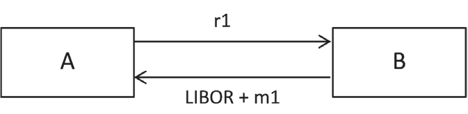
Figure 15.1 Swap cash flows example
A swap can be used to transform a floating-rate loan into a fixed-rate, in other words using the swap to transform a liability rate exposure. For example, let us assume that A has arranged to borrow $100 million at Libor plus 10 bps and that it sets up a swap where it receives Libor from B and pays a fixed rate of 5%. We have the following cash flows:
A pays Libor plus 0.1% to the outside lenders. It receives Libor under the terms of the swap (m1 = 0 in Figure 15.1). It pays 5% (r1 = 5%) under the terms of the swap.
The three sets of cash flows lead to an interest rate payment of 5.1%. This is now a fixed
rate. We can also use swaps to transform an asset rate exposure. Let us consider Figure 15.2. If A has bonds worth $100 million that provide interest at 4.7% per annum then, using the
same flows as above, A has the following cash flows:
A receives 4.7% on the bond. It receives Libor under the terms of the swap. It pays 5% under the terms of the swap.
Then the cash flows net out to an interest rate inflow of Libor minus 30 bps (30 bps = 5% – 4.7%).
Let us now consider company B. Assume that B has an investment of $100 million that yields Libor minus 30 bps. B will have the following cash flows after it has entered the swap:
B receives Libor minus 30 bps on its investment. It pays Libor under the terms of the swap. It receives 5% under the terms of the swap.
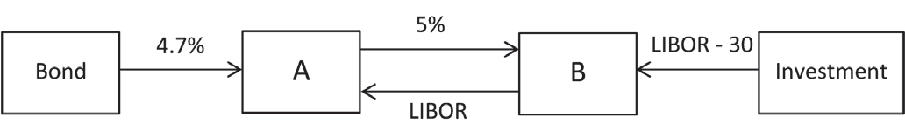
Figure 15.2 Using swap to change asset rate risk exposure
The swap has thus the effect of transforming an asset earning a floating rate of interest into an asset earning a fixed rate of interest, in this case a net inflow of 4.7%.
Why are counterparties active in swap markets? Given the high degree of liquidity and their tight bid-offer spread IRSs represent an efficient instrument to modify the nature of interest payments in the future. The mechanism is the one exemplified in the previous subsection. IRS may be used to manage the duration of debt (issuers may swap their debt) to modulate the interest rate profile risk of a mortgage or to change the rate risk profile of cash flows of an asset (asset swap), etc.
A traditional explanation of the popularity of IRS is that concluding an IRS at some agreed price provides both counterparties with some perceived economic benefit. This is the so-called comparative advantage and it can be considered as one of the drivers for this market together with the fact that market participants may have diametrically opposite views as to the future movements of interest rates, or simply that they need to hedge their rate exposure. This refers to the hypothesis that investors and issuers find it easier to access one market than another one (natural habitat hypothesis). For example, some companies can have an advantage when borrowing in fixed-rate markets while for other companies the advantage lies in floating-rate markets.6 Using the IRS, the counterparties can select their cheapest borrowing source, and synthetically transform their exposure to interest rates. The results are the optimisation of the funding costs and the fitting of the derived rate exposure.
We now present some practical aspects and contract specifications on IRS.
Trading Practice. Dealers trade IRS using the phone, messages and electronics platforms. For customised swaps with tailor made details traders use spreadsheets or pricing software to calculate the fair value before trading them.
Legal and Confirmation. In the case of vanilla trades when a trade is agreed, the market is moving towards electronic confirmations which are sent immediately after the trade by one party and affirmed by the other. In the case of non-vanilla trades, a term-sheet or pre-confirmation may be exchanged between counterparties before producing the official confirmation. The market practice is to use ISDA (International Swaps and Derivatives Association) conforming documentation to define the wording of contracts in a standardised way.
6 Another example is that the issuer can more easily find investors in the domestic market than from abroad. It is debatable whether comparative advantage is still a very relevant factor in global markets as it assumes that markets are structurally fragmented. In practice in the market ‘apparent’ arbitrage situations can exist over long periods of time and they are expressed in the basis swap spread, given by the funding pattern of supply and demand. This can be particularly true in the cross currency markets (for example EUR/JPY).
The confirmation provides all the details to calculate the cash flows. We show an example of a facsimile of pre-confirmation for a vanilla 5y swap:
Notional Amount: EUR 30,000,000.00 Trade Date: 14 December 2012 Effective Date: 16 December 2012 Termination Date: 16 December 2017 Fixed Rate Payer: Counterparty XX Fixed Rate Payer Payment Dates: 16 December Fixed Rate: 2.45000 percent Fixed Rate Day Count Fraction: 30/360 Business Day: TARGET Settlement Day Floating Rate Payer: Counterparty YY Floating Rate Payer Payment Dates: 16 March and December Floating Rate Option: EUR-EURIBOR-Reuters Designed Maturity: 6 Month Spread: None Floating Rate Day Count Fraction: Actual/360 Floating Rate Reset Dates: first business day of each Calculation Period Calculation Agent: ....
Terminology in vanilla IRS confirmation. Let us explain some important terms in the IRS confirmation. Notional amount is the base amount used to calculate payments made. Fixed Rate (Floating Rate) is the rate used to calculate the stream of cash flows to be paid from the fixed (floating) rate payer. Legs (fixed/floating) is a set of cash flows (fixed/floating). Trade Date is the day that the IRS is traded. Effective Date is the date that legs begin to accrue interest. Day Count is the way the day count fraction is calculated. Business Day refers to the calendar used for adjustments (for example, New York for USD). Spread represents the margin to be algebraically added to the floating leg. Frequency is the frequency with which the cash flows occur in each leg. Termination Date or Maturity Date is the end date of the contract. Reset date is the designed date for value of which the floating index is fixed (typically, the rate is fixed for the first day of the period (the reset date) either same date (e.g. GBP) or two days before (e.g. EUR, USD; see ISDA definition)). Finally, we indicate Swap vs. ‘n’m to refer to a swap where the floating leg tenor is ‘n’ month tenor (for example, for Eur Swap vs. 6m we refer to the 6m Euribor).
Counterparty Risk and Collateral. Since swaps are traded Over The Counter (OTC) they involve counterparty risk. To mitigate this risk they may be collateralised under CSAs (collateral support annex) or cleared through clearing houses (CCPs). Currently laws are being discussed to require collateral for certain non-cleared swaps.
Understanding Quotations. Brokers provide real time quotes of the par swap rate for many maturities for vanilla (also known as standard) swaps to each other. We recall that the par swap rate is the fixed rate that makes the present value of fixed and floating legs equal. In order to understand what a swap rate expresses a dealer should know the standard convention used. The standard contract conventions depend on the currency. The EUR standard conventions for swaps are:
Start date is two business days after the trade date (e.g. spot date). Calendar: TARGET.7
7 Target (Trans-European Automated Real-time Gross Settlement Express System) was an interbank payment system: it includes 16 national real-time gross settlement systems (RTGC) and the Central Bank payment (EPM). It is now replaced by Target2. Often a financial transaction refers to TARGET calendar, i.e. days when TARGET system is open. Typical closing days for TARGET are: New Year, Good Friday, Easter Monday, Labor Day, Christmas and the following day, Saturdays and Sundays.
Business Day Convention: Modified Following.8 No exchange of principal. Fixed leg has annual frequency with day count 30/360. Floating leg is paid semi-annually Act/360 (Euribor 6m is the standard floating index, but Swap vs. 3m are also very liquid). The standard for 1Y swap is vs. 3m Euribor.
The typical liquid maturities are: 1Y – 10Y,. . . , 60Y. IRS customisation
Compounding of the rate. Vanilla swaps use simply-compounded interest rates but counterparties can also agree on a different compounding method. In compounding swap the floating interest rate can be compounded. Overnight Index Swap (OIS)9 is a special case of a compounding swap. In this case fixed interest rate is swapped against variable interest rate which is based on daily fixing and daily compounding. See Section 15.4.5.
Fixed rate, spread and up front. The fixed rate is customisable; counterparties can agree to exchange a fixed rate other than the par swap rate. In this case the swap value is no longer zero (off market swap) and a spread or margin may be added to the floating index to make the value of both legs equal. Alternatively, an up-front should be exchanged to make the transaction fair. Moreover, we define step up IRS and interest rate swap on which the fixed rate can increase according to a predetermined schedule.
Fixing. In a plain vanilla IRS, the floating leg fixes in advance (at the start of each relevant period) and pays in arrears (at the end of each period). A popular customisation of a fixing procedure is to set the fixing in arrears, in this case the IRS is said to swap in arrears. In order to properly evaluate these products we need to use convexity, adjusting the forward using the Black model or a term structure model.
Legs type. The vanilla swap is a fixed-floating swap. If both legs are indexed to a floating index we have a floating for floating swap known as basis swap. A simple example is a swap of 3m Euribor for 6m Euribor (same index with different tenor). A common basis swap type is between indices from different segments of the money market: an example is a swap of 3m Euribor for 3m OIS. More details on the importance of basis swaps are available in Chapter 16.
Floating leg index. There is a wide variety of floating index rates for the floating leg; a special example is given by the Constant-maturity swap (CMS), where one floating leg is linked to a swap rate of a fixed maturity.
Notional amount. The standard IRS is defined as a bullet in which the notional is unchanged over the life of the swap. An amortising IRS is a swap in which the notional amount may decrease from one period to another period, according to a predetermined schedule. Similarly, we define accrediting IRS if the notional amount increases over the time, in a predetermined way. Finally in a roller-coaster IRS the notional may increase or decrease during the life of the swap. These variants of the standard swap are used to give a better fit to the risk profile of the rate exposure or to make a more adequate hedge with respect to the standard swap.
Payment frequency. The frequency of payments of each leg can be customised (typical choices are 3m, 6m and 1Y).
8 Modified Following refers to a rule of automatic changing one or more sets of relevant dates as they fall on a holiday according to the relevant business calendar.
9 See Section 15.4.5 for definition of OIS.
Start date. Standard IRS is defined as spot starting IRS, as it starts on a spot date. A forward start IRS is a swap starting on a specified deferred date in the future. This is used to lock-in a swap rate level for a future period.
We provide a formal representation of a swap structure and pricing framework. An IRS plain vanilla (for example, fixed rate for floating rate) consists of two different indexed legs, with two sets of payments. The fixed leg consists of a stream of payments occurring at payment times {TcK+1,..., TdK}. The amount to be paid in TiK is given by:
NKτ(TiK−1, TiK) (15.5)
where K is the fixed rate of the swap, N is the notional and τ(TiK−1, TiK) is the year fraction. Similarly, the floating leg consists of a stream of payments occurring at times {TaL+1,..., TbL}. At each time TjL the amount paid is given by:
NL(TjL−1, TjL)τ(TjL−1, TjL) (15.6) where the rate L(TjL−1, TjL) is resetting at time TjL−1.
The swap theoretical value, Net Present Value (NPV), is computed as the difference of the present value (PV) of the fixed and floating legs. For the fixed leg the value is given by the present value of the fixed payments that are known at the start of the swap. In the case of the floating leg we compute the present value of the expected payments based on an estimation of the forward rates. The formulae for the present value for the fixed and floating legs are given by:
and by:
PVFloatingLeg = N
b
τi P(t, Ti)F(t; Ti−1, Ti) (15.7)
i=a+1
d
τj P(t; Tj)K, (15.8)
PVFixedLeg = N
j=c+1
respectively.
Given the equation (15.2), equation (15.7) can then be simplified leading to the following results:
PVFloatingLeg = N[P(t, Ta) − P(t, Tb)]. (15.9)
We define a payer IRS as a swap paying fixed rate. Similarly we define a receiver swap, if the fixed rate is received. The NPV of a payer swap is:
NPVPayer = PVFloatingLeg − PVFixedLeg. (15.10)
We calculate the par swap rate solving for the value of Ksuch that PVFloatingLeg = PVFixedLeg, namely:
P(t, Ta) − P(t, Tb) d j=c+1
= par swap rate. (15.11)
K =
τjS P(t, TjS)
As a final remark we note that the floating leg can be represented as a portfolio of FRAs. Even if the payoff of the FRA occurs at different times with respect to each floating leg payment, it is discounted at the relevant rate, resulting in the same value (compare equation (15.3) with equation (15.6)). This is only possible because of the strong relationship between forward rates and discount factors as expressed in equation (15.1).
Overnight Index Swap (OIS) is a fixed against floating interest rate swap derivative where the floating leg refers to a published index of a daily overnight rate; for the EUR market the fixing is named EONIA10 (EUR Overnight Index Average). Parties agree to exchange at each payment date or at maturity the difference between fixed rate and floating rate (calculated as geometric average of the floating index) on the nominal amount. No principal is exchanged. The floating rate used to calculate the floating leg amount for EUR OIS, for each period is:
te−1
360 n
eidi 360 − 1 (15.12)
1 +
r =
t=ts
where for each specific period ts is the starting date, te the end date, ei the ith EONIA fixing, di the number of days the ei is applied (typically 1 day but it is 3 days for a weekend) and n is the number of days in the period. For more details we refer to Section 16.2.
The fixed leg amount is calculated using simple compound interest. For maturities shorter than 1Y the only interest payment amount occurs at the end of the contract. For longer maturities interest rate payment amounts are paid yearly. In cases where the contract has a maturity that is not a multiple of 1Y, payments are still yearly with an ending short period (for example, a 18m OIS will have two exchanges of interest, the first after 1Y, the second at the end of contract). Brokers quote many maturities: short maturities are very liquid (from 1 week to 24 months), but longer maturities are also becoming more liquid (>2Y).
In the past an OIS contract was mostly considered as a short-term product used mainly by the treasury to manage short-term rate risk. An OIS contract is now widely used for many hedging and speculation purposes. For example it can be used to anticipate EONIA movements driven by Central Bank policy, to express a view on the liquidity stress or on the uncertainty level. One of the reasons for their increasing popularity is related to deteriorating bank credit quality during the credit crunch period and to the growing use of collateralisation. This topic is discussed in detail in Chapter 16.
We introduce OIS in this chapter since it is possible to build an IRC for OIS using the traditional bootstrapping method. The technique is explained in Section 15.5.1. Given the specifics of the OIS rate all building blocks to be used in the OIS bootstrapping should refer to OIS quotes.
When we build an IRC some constraints should be respected; our IRC has to be calibrated to the quotes of our selected building blocks. What we have to impose is a system of equations where the theoretical price of each building block (recalculated using the IRC) is set to be
10 The fixing is calculated with ECB help and a selected panel of banks contributes to the quote. EONIA is fixed at 19:00 CET.
equal to its market value, see Kushnir 2009. We define a calibrated curve to a certain set of instruments when this system of equations is satisfied. Let us now consider equations for deposits and swaps.
For deposit rates defined by the equation (15.1), for each maturity Si, the equation to be solved is:
L(0, Si)curve − L(0, Si)market = 0 (15.13)
where L(0, Si)curve, is the deposit rate recalculated using the curve IRC we are going to build, and L(0, Si)market is the value of the same rate as the input quote for a set of selected deposit maturities {Sα,..., Sβ} where α ≤ i ≤ β.
Similarly, for each selected par swap rate R(Si), defined as in equation (15.11) for a set of selected swap maturities {Sγ,..., Sδ} where γ ≤ i ≤ δ, the corresponding equation is:
NPVcurveswap(R(Si)) = 0 (15.14)
whereNPVcurveswap(R(Si))isthepresentvalueoftheswaphavingafixedrateof R(Si),recalculated using the curve. Suppose we use β deposit quotes and δ swap quotes, the IRC should have N degrees of freedom, where N = β + δ. By solving all the N equations we ensure that the curve is calibrated to N prices corresponding to N time intervals.
In Sections 15.5.1 and 15.5.2 we present traditional bootstrapping and best fit method: two main approaches that allow us to build a calibrated IRC. Finally, in Section 15.5.3 we highlight the role of interpolation in curve construction.
The traditional bootstrapping method consists in solving the equations sequentially. The key point is that we associate a calibration date with each of the building blocks. Typically the calibration date will be the last date of the instrument: the final payment date for the deposit, the last payment date for a swap, and so on. We also assume that different instruments are associated with different dates, so that, for instance, we cannot calibrate both on a 1Y deposit and a 1Y swap since they would be associated with the same calibration date.
Starting from shorter maturities we progress sequentially to longer maturities. At each calibration date di we determine the value of the curve at di by solving the equation for the relevant building block under the assumption that the curve is known up to time di−1. Suppose, for instance, that we are dealing with a swap with termination date di; if all forward rates and discount factors are known up to time di−1, then the formula to compute its theoretical price has an unknown parameter, namely the discount factor at di. The bootstrapping procedure consists of fixing this unknown parameter by solving the equation that sets the theoretical price equal to the market price of the swap.
In the process missing information can be retrieved using interpolation: for example, when computing the theoretical value of a swap one may need to know the curve at a date which is not a calibration date, and so we have to interpolate between values already determined by the bootstrap procedure. Note that by construction each time interval of the curve has a degree of freedom that will not affect any previous piece of curve. For this reason in traditional bootstrapping only some types of interpolation can be used (for example, linear
on the logarithm of discount factor); those that do not preserve the localness11 should not be used.
Best fit method is applied when the degrees of freedom of the curve affect the entire shape of the curve, in which case a global system of N non-linear equations should be solved. The approach is presented in Hagan and West 2008, considering interpolation and bootstrap as a single process. Global methods can be applied using several additional constraints on forward rates or discount factors’ behaviour. We can define some customised ‘welcome’ conditions that we wish the curve to respect. Some examples of tailor-made constraints are:
Best fit on interpolation. In this case the additive constraint imposed during global solving is that forward rates (or any function of them) are produced by a selected interpolator. Smoothness forward condition. We can impose the minimum roughness condition in order to have a smooth shape of forward rates, where α < i ≤ β:
β
[F(0, Ti, Ti+1) − F(0, Ti−1, Ti)]2. (15.15)
i=α+1
Additional constraints may be added on discount factors such as P(0, Ti) > P(0, Ti+1) > P(0, Ti+2).. > 0. This approach is presented in Flavell 2002.
Given the nature of the problem, with global methods we should use an optimisation algorithm to find the solution. We use Levenberg-Marquardt nonlinear least squares solver algorithm, implemented by alglib (see www.alglib.net). More details are given in Appendix 2.
Interpolation has a relevant role in curve construction and can impact the quality of the constructed curve (see Chapter 13).
Interpolation can be used: Directly on market quotes to complete missing information. Internally to IRC to return discount factors for time intervals not directly covered by information of building blocks. To estimate discount factors12 during a traditional bootstrapping process. To define and control the behaviour of forward rates in global methods.
We can customise both the interpolator used and the object on which the interpolation is performed (popular choices are to interpolate on discount factor, on logarithm of discount factor and on rates, for example). The set of choices results in the identification of several characteristics of the IRC, reflecting on forward rates properties such as smoothness, positivity, stability,monotonicityandbehaviourwithrespecttobumpininputquotesandsoon(seeHagan and West 2008 for a guide to this topic).
11 We say that an interpolation method is local if changing the input corresponding to a certain date d has effect only on the value of the curve at di, see Hagan and West 2008.
12 Under this pricing framework forward rates are uniquely defined when the discount factors are known, according to equation (15.2).
Having provided definitions and methodologies for IRC building, we now present C# code solution to manage the full process. We first discuss the high-level design of the code.
In this section we discuss the high-level design of the software system for curve construction. We list the main classes and interfaces used in the process:
SingleCurveBuilder class has the main task of managing the process; it creates the interest rate curve object as an instance of the interface ISingleRateCurve. ISingleRateCurve interface represents the IRC itself, through methods that identify the ‘status’ of the interest rate curve (that are Df(..) and Fwd(..)). In the process several new C# classes are developed that are used in SingleCurveBuilder class development, for example BaseOneDimensionalInterpolator, BuildingBlock, InterpAdapter, BuildingBlockType,SwapStyle and RateSet.
Each object will be discussed in the following sections. The high-level system design is shown in Figure 15.3 as a UML class diagram.
<<interface>> <<C# interface>> IRateCurve |
Client |
Figure 15.3 System design
<<interface>> <<C# interface>>
ISingleRateCurve
<<interface>> <<C# interface>>
IMultiRateCurve
<<C# class>>
DoInterpOn:Class, Interpolation:Class
<<C# class>> SwapStyle |
|
<<C# class>>
SingleCurveBuilder
<<C# class>> RateSet |
|
BaseOneDimensionalInterpolator
In this section we describe the framework of single-curve building while in Chapter 16 we shall explore themulti-curve framework. Both frameworks share theidea of an IRC object as defined in Section 15.2, that can be represented using an instance of IRateCurve base interface. The interface should also contain methods related to curve shifting because the curve shifting
mechanism is different under single and multi-curve frameworks, so we need two derived interfaces called ISingleRateCurve and IMultiRateCurve. See the UML diagram in Figure 15.3. These interfaces inherit common methods from the base class that define the ‘status’ of the rate curve, and at the same time specify a set of methods for curve shifting for each framework.
In this chapter we use the interface IRateCurveBuilder. A complete explanation of IRateCurve interface hierarchy, including IMultiRateCurve interface is presented in Chapter 16, Section 16.6.1.
Here is a presentation of IRateCurve and ISingleRateCurve:
public interface IRateCurve {
// Return reference date Date RefDate();
// Return discount factor for TargetDate double Df(Date TargetDate);
// Return forward rate starting on StartDate // for a tenor defined directly in the class double Fwd(Date StartDate);
// Return forward start swap as same building block // used in building curve. // It is recalculated starting on custom StartDate, // Tenor is the tenor of swap double SwapFwd(Date StartDate, string Tenor);
// Return SwapStyle used for bootstrapping, it is // swap type used as input (i.e. EurSwapVs6m, EurSwapVs3m, ...) SwapStyle GetSwapStyle();
}
public interface ISingleRateCurve : IRateCurve {
// Return array of curves, initialized after shifting // mktRateSet elements ISingleRateCurve[] ShiftedCurveArray(double shift);
// Return one only curve, initialized after shifting all // mktRateSet elements up of 'shift' quantity, once at the same time ISingleRateCurve ParallelShift(double shift);
// Return input rates double[] GetInputRates();
}
RateSet class has the responsibility for collecting market quotes and recording the following information for each input: value of the quote, maturity of instrument and type of building block. Here is a representative constructor of the class:
public RateSet(double Value, Period Maturity, BuildingBlockType Type){..}
Period is a struct for managing time periods, BuildingBlockType is an enum type to define a set of building blocks. The RateSet class implements System.Collections.CollectionBase interface so that collections can be managed.
The class RateSet has many methods that provide specific functionality to the class, for example:
To add RateSet to the collection (void Add(..)). To apply shift to rate values (for example, void ShiftValue(..),RateSet ShiftedRateSet(..),RateSet ParallelShiftRateSet(..),RateSet [] ShiftedRateSetArray(..)). To return an array of building block objects, instantiated using the factory pattern as presented in Figure 15.5 (BuildingBlock[] GetArrayOfBB()). To modify and access each RateSet of the collection.
BuildingBlock class is a base class to handle building blocks. Derived classes define several building block types containing instrument details and specifications needed in the curve-buildingprocess.TheclasshierarchyispresentedinFigure15.4asaUMLclassdiagram.
<<C# class>> BuildingBlock |
<<C# class>>
<<C# class>>
SwapStyle
<<C# class>>
<<C# class>>
EurZeroRate
EurDepo
<<C# class>>
<<C# class>>
<<C# class>>
<<C# class>>
EurSwapVs6m
EurSwapVs3m
EurSwap6mVs3m
EoniaSwap
Figure 15.4 Building blocks hierarchy
Using the Factory method pattern (see GOF 1995), the interface IBuildingBlockFactory creates an instance of the specific building blocks that is defined by the BuildingBlockType argument. The factory pattern is presented in Figure 15.5, the UML omits the BuildingBlock class hierarchy.
<<interface>> <<C# interface>>
IBuildingBlockFactory
<<C# class>>
BuildingBlock
<<C# class>> BuildingBlockFactory |
|
Figure 15.5 Factory pattern for building blocks creation
The class InterpAdapter is an abstract class with two methods. The first method FromDfToInterp applies a transformation to a given discount factor, the second FromInterpToDf applies the first method’s inverse function. Derived classes implement the two methods specifying the functions. This abstract class allows one to use the interpolator on several underlying objects, always starting from discount factors. The InterpAdapter abstract class code is:
public abstract class InterpAdapter {...
// Derived class should implement these methods // from discount factor (Df) to x (where x can be r, logr, logdf, ...) abstract public double FromDfToInterp(double Df,double SerialDate);
// from x to DF (where x can be r, logr, logdf, ...) abstract public double FromInterpToDf(double x,double SerialDate);
}
Figure 15.6 shows the UML diagram for the InterpAdapter class hierarchy.
<<C# class>> InterpAdapter |
<<C# class>>
<<C# class>>
<<C# class>>
<<C# class>>
OnDF
OnLogDF
Onr
OnLogr
Figure 15.6 InterpAdapter base class and derived classes hierarchy
The class BaseOneDimensionalInterpolator is an abstract class. Each specific type of interpolation (derived class) is a specialisation of this class. The class hierarchy is presented in Figure 15.7 as a UML class diagram.
<<C# class>> BaseOneDimensionalInterpolator |
<<C# class>> LinearInterpolator
<<C# class>> ..more..
<<C# class>> ..more..
<<C# class>> SimpleCubicInterpolator
Figure 15.7 Interpolator class hierarchy
The code design lets us add more adapters and interpolators without changing the structure of the code. This promotes flexibility in the set up, especially in SingleCurveBuilder instantiation scenarios.
The class SingleCurveBuilder<DoInterpOn,Interpolation> is a generic class with multiple type parameters DoInterpOn and Interpolation. The class has the following constraints: it requires DoInterpOn to derive from InterpAdapter base class and to provide a default constructor and requires Interpolation to derive from the base class BaseOneDimensionInterpolator and to provide a default constructor. Moreover, the class implements the ISingleRateCurve interface. Given the presence of two type parameters the class is customisable. The code design also ensures flexibility, efficiency and maintainability: the class supports new InterpAdapter and BaseOneDimensionInterpolator derived classes without changing the code. The design is similar to the Abstract Factory pattern.
Base class declaration, data members and main methods. We present a commented piece of code of the class:
public abstract class SingleCurveBuilder<DoInterpOn, Interpolation>: ISingleRateCurve where DoInterpOn : InterpAdapter, new() where Interpolation : BaseOneDimensionalInterpolator, new()
{
//Data Members. public Date refDate; // Reference date of the curve. public Interpolation PostProcessInterpo; // The post process interpolator. public DoInterpOn interpAdapter; // Adapter to interpolator. public IEnumerable<BuildingBlock> BBArray; // Building block array, sorted in
// ascending order by maturity.
... // Constructor: RateSet rateSet is a data input. public SingleCurveBuilder(RateSet rateSet) {..} // Protected Method used in constructor. abstract protected void PreProcessInputs(); // Prepare rateSet to be processed from
// Solve method. abstract protected void Solve(); // Do calculus. abstract protected void PostProcessData(); // Prepare data for interpolators.
#region implementing IRateCurve interface public Date RefDate(){..} // Return reference date. public double Df(Date d){..} // Calculate discount factor. public double Fwd(Date StartDate){..} // Forward rate of tenor Period FloatTenor. public double SwapFwd(Date StartDate, string Tenor){..} // Forward Start IRS rate. public SwapStyle GetSwapStyle() {..} // Return SwapStyle used for bootstrapping,
// it is swap type used as inputs (i.e. EurSwapVs6m,EurSwapVs3m,..). public ISingleRateCurve[] ShiftedCurveArray(double shift){..} // Return array of
// curves, initialized after shifting mktRateSet elements.
public ISingleRateCurve ParallelShift(double shift){..} // Return one only curve, initialized after shifting all mktRateSet elements up // of 'shift'quantity, once at the same time.
#endregion // Derived classes must implement this method. public abstract ISingleRateCurve CreateInstance(RateSet newRateSet);
// Create an instance of class using a new RateSet.
... }
We note that the type parameters define the way in which the IRC calculates the discount factor for each date (data members PostProcessInterpo and interpAdapter). To clarify the concept we show the code of the two methods involved (implementation ISingleRateCurve interface). For completeness, we include also the SwapFwd(..)method used to calculate a forward start swap rate according to equation (15.11).
// Calculate discount factor for date d public double Df(Date d) {
// Serial date for which it calculates the discount factor double sd = new Date(d).SerialValue;
// Adapt data to interpolator according to <DoInterpOn> return interpAdapter.FromInterpToDf(PostProcessInterpo.Solve(sd), sd);
} // Forward rate of tenor Period FloatTenor public double Fwd(Date StartDate) {
Date ed = StartDate.add_period(..); double yf = StartDate.YF(ed, Dc._Act_360); double df_ini = DF(StartDate); double df_end = DF(ed); return ((df_ini / df_end) - 1) / yf; // equation (15.2).
} // Calculate forward start swap public double SwapFwd(Date StartDate, string Tenor) {
... }
We give the part of the code showing that the forward rate is uniquely calculated as function of the forward rate according to equation (15.2).
Base class constructor. The base constructor SingleCurveBuilder(RateSet rateSet) performs the following operations:
Creates a building block starting from its argument rateSet. The code is:
//Create Building block IEnumerable<BuildingBlock> BB = rateSet.GetArrayOfBB();
Sortsbuildingblocksinascendingorderbymaturityandperformsdatavalidationoperations. LINQ syntax is used in part of the code. We give a line of code as an example, where a check is done on building block type:
bool IsSameSwapType = OnlyGivenSwap.All(s => s.BuildingBlockType == BBT);
Base class abstract method. The base class has three protected abstract methods that are implemented in derived classes. The combination of the actions performed by these methods defines the curve-building mechanism, as discussed in Section 15.5.
abstract protected void PreProcessInputs(). It pre-processes inputs to produce data in a format usable by the method Solve().
abstract protected void Solve(). It implements the specific curve-building mechanism.
abstract protected void PostProcessData(). It processes data produced by the method Solve() to make it usable by the PostProcessInterpo interpolator.
We implement three main classes derived from the base class SingleCurveBuilder. Each derived class refers to a different mechanism used in curve construction based on the discussion in Section 15.5. The class hierarchy is presented in Figure 15.8, as a UML class diagram.
<<interface>> <<C# interface>> IRateCurve |
<<interface>> <<C# interface>> IRateSingleCurve
<<interface>> <<C# interface>> IRateMultiCurve
<<C# class>> SingleCurveBuilder
<<C# class>> SingleCurveBuilderStandard
<<C# class>> SingleCurveBuilderSmoothingFwd
<<C# class>> SingleCurveBuilderInterpBestFit
Figure 15.8 SingleCurveBuilder classes hierarchy
For each derived class we now discuss the following topics: Specific data members. The constructor. The implementation of the three methods PreProcessInputs(), Solve(), PostProcessData().
The class SingleCurveBuilderStandard implements the traditional bootstrapping method presented in Section 15.5.1. The constructor of the class has two arguments; one of these has OneDimensionInterpolation type, the enum used by the class OneDimInterpFactory to create an instance of IInterpolate. The BaseOneDimensionalInterpolator class implements the methods of IInterpolate interface.
public class SingleCurveBuilderStandard<DoInterpOn, Interpolation> : SingleCurveBuilder<DoInterpOn, Interpolation> where DoInterpOn : InterpAdapter, new() where Interpolation : BaseOneDimensionalInterpolator, new()
{
// Data Members private OneDimensionInterpolation MissingRateInterp; // Interpolation used to estimate
// the missing rates // Used in the constructor
private IEnumerable<BuildingBlock> PreProcessedData; // Building blocks collection private SortedList<double, double> DateDf; //SerialDate as Key, DFas value, used in
// constructor to collect data coming from PreProcessedData
// Constructor public SingleCurveBuilderStandard(RateSet rateSet, OneDimensionInterpolation
missingRateInterp) : base(rateSet) {
// To Data Member MissingRateInterp = missingRateInterp;
} }
// 1)Prepare data to be used in Solve() (output is: PreProcessedData) PreProcessInputs();
// 2)Do Calculus: from PreProcessedData calculate post processed data (output is: // DataDF) Solve();
// 3)create the instance PostProcessInterpo stored in data member of base class PostProcessData();
The object missingRateInterp allows us to create the object MissingRateInterp, the interpolator used to estimate missing data needed during the bootstrap sequence.
SingleCurveBuilderStandardabstractmethodsimplementation.Wegiveashort description of operations performed by abstract methods implementation: PreProcessInputs()
Find missing swap quote. Creates building blocks for missing swap. Using interpolator to estimate missing value. Creates the object PreProcessedData: it merges missing data with available starting data.
Strips information (discount factors) from each building block (first for OnePaymentStyle building blocks, then for SwapStyles). Completes data contained in the data member object DateDf.
Creates the interpolator PostProcessInterpo object, using data provided by DateDf.
The derived class SingleCurveBuilderInterpBestFit implements the best fit on the interpolation global method as presented in Section 15.5.2. To use the terminology of that section, we solve a system of N equations by finding the y-array values
for the interpolation object PostProcessInterpo. To solve this problem we use a best fit approximation. In the specific case we use Levenberg-Marquardt algorithm nonlinear least square solver implemented from alglib (see www.alglib.net). We can find the solution very quicklysincethenumberofunknownvariablesisequaltothenumberofconstraints.Weremark that the object PostProcessInterpo is an instance of the class BaseOneDimensionalInterpolator and it works on discount factors as base data, but we can perform interpolation on several quantities according to the settings defined by class type parameters (DoInterpOn and Interpolation). We begin with an initial guess of y-array discount factors and using iterations we find the combination that globally satisfies all the Nconstraints andthisisthebestfitsolution.Wepresenttheclassdeclarationcodetogetherwithdatamembers and constructor:
public class SingleCurveBuilderInterpBestFit<DoInterpOn, Interpolation> : SingleCurveBuilder<DoInterpOn, Interpolation>
where DoInterpOn : InterpAdapter, new() where Interpolation : BaseOneDimensionalInterpolator, new()
{
//Data Member protected SortedList<double, double> PreProcessedData; // Serial dates as key,
// discount factors as value, coming only from depo.
protected SortedList<double, double> IniGuessData; // Serial dates as key, discount // factors as values, defined for swaps leg time // interval coming only from swap.
//Constructor public SingleCurveBuilderInterpBestFit(RateSet rateSet)
: base(rateSet) {
//Prepare data to be used in Solve() (output is: PreProcessedData) PreProcessInputs();
//Do Calculus: from PreProcessedData an instance of PostProcessInterpo is created Solve();
}
//Not needed for this class since Solve()instantiates directly PostProcessInterpo //PostProcessData();
SingleCurveInterpBestFit abstract methods implementation. We give a brief presentation of operations performed by abstract methods implementation.
Perform some operations of data validation. From the BBArray object (containing all building blocks) it selects only swaps and stores them in the OnlyGivenSwap object. From the BBArray object, it selects only deposits and it calculates their implied discount factors and finally stores them in the PreProcessedData object. Provides the initial guess for discount factors for the expiry dates of each swap contained in OnlyGivenSwap. As initial guess we suppose d f = exp(−rt), where we use the relevant swap rate for r, which is not correct. These discount factor values are updated during iterations to find the best fit solution. Data is collected the IniGuessData object.
Sets up the initial guess double[] x = IniGuessData.Values.ToArray(). Instantiates the optimiser object and defines its set up. Alglib classes are used:
alglib.minlmcreatev(x.Count(), x, 0.0001, out state).
Iterates on function function_fvec. The function will use a delegate with a lambda expression:
// Delegate for swap function. private delegate double SwapRate(SwapStyle S);
// Lambda expression to calculate Par Rate. SwapRate SwapCalc = BB =>{... }
// Iterate for N equations: best fit if fi[i]==0, for each i for (int i = 0; i < N; i++) {
// f[i] is the difference between input data and recalculated data, // SwapCalc((SwapStyle)SwapStyleArray[i]) is the recalculated value and // SwapStyleArray[i].rateValue is starting value to be matched. fi[i] = (SwapCalc((SwapStyle)OnlyGivenSwap.ElementAt(i)) OnlyGivenSwap.ElementAt(i).rateValue) * 10000;
}
The best fit solution is used to instantiate the interpolator PostProcessInterpo object. PostProcessData();
The PostProcessInterpo object is automatically instantiated, by construction in Solve() the method. Thus, PostProcessData method is not necessary for the class SingleCurveInterpBestFit.
The derived class SingleCurveBuilderSmoothingFwd implements the best fit method imposing a smoothness condition on forward rates, as presented in Section 15.5.2. The optimisation process solves for an array of forward rates so that, at the same time:
Each forward rate satisfies the condition of smoothness of forwards, presented in equation (15.15). The curve is calibrated to building blocks.
The solution object is an array of M equispaced forward rates, where M is the number of forward rates contained in the floating leg of longer swap available as building block. We select B = S + 1 building blocks: a set of S swaps homogeneous in the tenor of the floating leg (for example6mEuribor)plusonefixing(orexpectedfixing)ofthesamefloatinglegratetenor.The total number of constraints is N: the sum of B building blocks plus the smoothness condition constraint. Given the fact we should find the value of M variables given Nconstraints, where M > N, the algorithm can take some time to find a best solution depending on the problem dimension M, number of functions N, initial solution array, differentiation step, precision and tolerance.
Many iterations may be needed to find a possible solution, therefore, as a practical expedient to increase C# code performance, we prefer the use of simple array-like containers, for storing temporary data during the iterations. To clarify: as the Solve() method can be invoked several times during the iteration, we replace containers used in Solve() method from SortedList<double,double> to two double[].
We present the class declaration code, the constructor and the data members:
public class SingleCurveBuilderSmoothingFwd<DoInterpOn, Interpolation> : SingleCurveBuilder<DoInterpOn, Interpolation> where DoInterpOn : InterpAdapter, new() where Interpolation : BaseOneDimensionalInterpolator, new()
{
// Data members protected double fixing; // the first fixing (actual or expected). private SortedList<double, double> DateDf; //SerialDate as Key, discount factor
// values, used in constructor to collect data coming from // PreProcessedData.
// Note here we use simpler containers used in Solve(): // yfFloatLegLongerSwap and DatesDfLongerSwap instead of one SortedList // (DatesDfLongerSwap as Key and yfFloatLegLongerSwap as value). double[] yfFloatLegLongerSwap; // Year fractions of floating leg of the longer swap,
// this array is needed in discount factors calculation.
double[] DatesDfLongerSwap; // Dates on which discount factors are calculated. double[] fwdGuessLongerSwap; // Forward rates of the longer swap floating leg. int N; // Number of forward rates to search.
//Constructor public SingleCurveBuilderSmoothingFwd(RateSet rateSet)
: base(rateSet) {
// 1)Prepare data to be used in Solve() // (outputs are: yfFloatLegLongerSwap,DatesDfLongerSwap, fwdGuessLongerSwap,N and // partially DateDf). PreProcessInputs();
// 2)Perform calculations: from PreProcessedData calculates post processed data // (output is: DataDF) Solve();
// 3)Instantiate final Interpolator: from post processed DataDF set up the final // interpolator (output is: PostProcessInterpo) PostProcessData();
} //Constructor, overwrite the fixing, if a custom one is needed public SingleCurveBuilderSmoothingFwd(RateSet rateSet, double firstFixing)
: this(rateSet) {
.. }
... }
SingleCurveBuilderSmoothingFwd abstract methods implementation. Below is a brief explanation of operations performed by the abstract methods’ implementation.
Selects only SwapStyle from BBArray object and stores them in the OnlyGivenSwap container. Identifies the longer swap (let’s say LS). Performs some validation data tests: fromDates of each swap should be contained in the array of fromDates of the LS and all used SwapStyle building blocks should have the same floating rate tenor. Instantiates the containers DatesDfLongerSwap and yfFloatLegLongerSwap using information coming from LS.
Sets up the initial guess:
double[] x = Enumerable.Repeat(fixing, N - 1).ToArray().
Where x is the array of forward rates having IniGuessData.Count-1 elements (minus 1 as the first element is known, i.e. the fixing). Instantiates the optimiser object and defines its set up:
alglib.minlmcreatev(x.Count(), x, 0.0001, out state);
Iterates on function function_fvec. The function will use a delegate with a lambda expression:
// Delegate for swap function. private delegate double SwapRate(SwapStyle S);
// Lambda expression to calculate Par Rate. SwapRate SwapCalc = BB =>{...}
// Iterate for N equations: best fit if fi[i]==0, for each i. for (int i = 0; i < fi.Count() -1 ; i++) {
// f[i] is the difference between input data and recalculated data, // SwapCalc((SwapStyle)SwapStyleArray[i]) is the recalculated value // and SwapStyleArray[i].rateValue is the starting value to be matched.
fi[i] = (SwapCalc(OnlyGivenSwap[i]) - (OnlyGivenSwap[i]).rateValue) * 10000; }
// Last constraint to match: smoothness condition: sum of square of // consecutive forward should be minimized. double sq = 0.0;//sum of square for (int i = 0; i < N - 1; i++) {
sq += Math.Pow(fwdGuessLongerSwap[i] - fwdGuessLongerSwap[i + 1], 2);
} //last equation fi[fi.Count()-1] = sq * 10000.0; // Sum of square should be zero
Transforms the forward rates solution arrays in discount factors and populates the DateDf object.
Retrieving information from DateDf, it instantiates the interpolator PostProcessInterpo according to type parameter DoInterpOn.
We take several use cases of C# objects we have presented so far in this chapter.
In the single-curve framework the PV of the floating leg of a swap can be indifferently calculated using equation (15.7) or equation (15.9). In this example we calculate the PV of the floating leg of a swap using both methods and we check that they give the same results. We run the console example TestVanillaSwapFloatingLegNPV().
Note that this equality does not work anymore in the two curve framework; a detailed discussion of this topic is given in Chapter 16.
We build an IRC and we check that it is really calibrated to the market inputs. We recalculate quotes using the IRC, and we verify that we get results consistent with market quotes. In Table 15.1 we compare results for different SingleCurveBuilders. You can test many other setups.
We run the console exampleCheckInputsVs6m() to get the Table 15.1 results. A further test is contained in the console example CheckInputsVs3m() where we consider a swap having 3m indexed floating leg. We conclude that the calibration worked well and the reported differences are negligible.
We calculate the time taken to instantiate a class derived from SingleCurveBuilder using a swap with the floating leg indexed to 6m and to 3m, respectively. Results will also depend on hardware setup.
We run the console example TimeForBestFitVs6m():
SingleCurveBuilderSmoothingFwd'2[OnLogDf,SimpleCubicInterpolator] Fitted in 00:00:03.6477343 SingleCurveBuilderInterpBestFit'2[OnLogDf,SimpleCubicInterpolator] Fitted in 00:00:00.0312000 SingleCurveBuilderStandard'2[OnLogDf,LinearInterpolator] Fitted in 00:00:00.0156000
SingleCurveBuilderSmoothingFwd'2[OnLogDf,SimpleCubicInterpolator] Fitted in 00:00:50.4660886
SingleCurveBuilderInterpBestFit'2[OnLogDf,SimpleCubicInterpolator] Fitted in 00:00:00.0468001 SingleCurveBuilderStandard'2[OnLogDf,LinearInterpolator] Fitted in 00:00:00.0312001
Table 15.1 Calibration: difference between recalculated quotes and market value
Difference between recalculated quotes and input values Input values (A) (B) (C)
1m 1.2430% 3.0E-16 0.0E+00 0.0E+00 3m 1.4350% 2.0E-16 0.0E+00 0.0E+00 6m 1.7200% −2.0E-16 0.0E+00 0.0E+00
1y 1.8692% 2.0E-06 −2.0E-06 1.0E-16
2y 2.3158% −2.3E-06 2.3E-06 1.0E-16
3y 2.5441% 1.2E-06 −1.2E-06 0.0E+00
4y 2.7450% −2.0E-07 2.0E-07 0.0E+00
5y 2.9150% −2.6E-07 2.6E-07 0.0E+00
6y 3.0570% 2.3E-07 −2.3E-07 0.0E+00
7y 3.1749% −8.8E-07 8.8E-07 0.0E+00
8y 3.2731% 1.0E-06 −1.0E-06 0.0E+00
9y 3.3619% −1.4E-06 1.4E-06 0.0E+00
10y 3.4421% 1.5E-06 −1.5E-06 0.0E+00 12y 3.5890% −6.8E-08 6.8E-08 0.0E+00 15y 3.7500% −4.0E-07 4.0E-07 0.0E+00 20y 3.8349% −1.4E-06 1.4E-06 0.0E+00 25y 3.7871% 1.1E-06 −1.1E-06 0.0E+00
(A) = SingleCurveBuilderSmoothingFwd‘2[OnLogDf,LinearInterpolator] (B) = SingleCurveBuilderInterpBestFit‘2[OnLogDf,LinearInterpolator] (C) = SingleCurveBuilderStandard‘2[OnLogDf,LinearInterpolator]
Note the fitting time for SingleCurveBuilderSmoothingFwd is higher than the other; this is due to problem dimension (for a 3m case the effect is more evident).
We calculate forward rates and print results in Excel using different curve setups. We visualise forward rates with the same tenor of a building block’s floating leg indexation (for example, 6m if we used 6m swaps). The relevant functions to run our examples are: CheckFwdRatesVs3m(), CheckFwdRatesVs6m().
The typical output is shown in Figure 15.9. For completeness, we give the code using the Datasim Visualisation tool:
public static void CheckFwdRatesVs6m() {
#region Inputs // Start input etc. // ... #endregion #region building curve double firstFixing = 1.720e-2;
5.00%
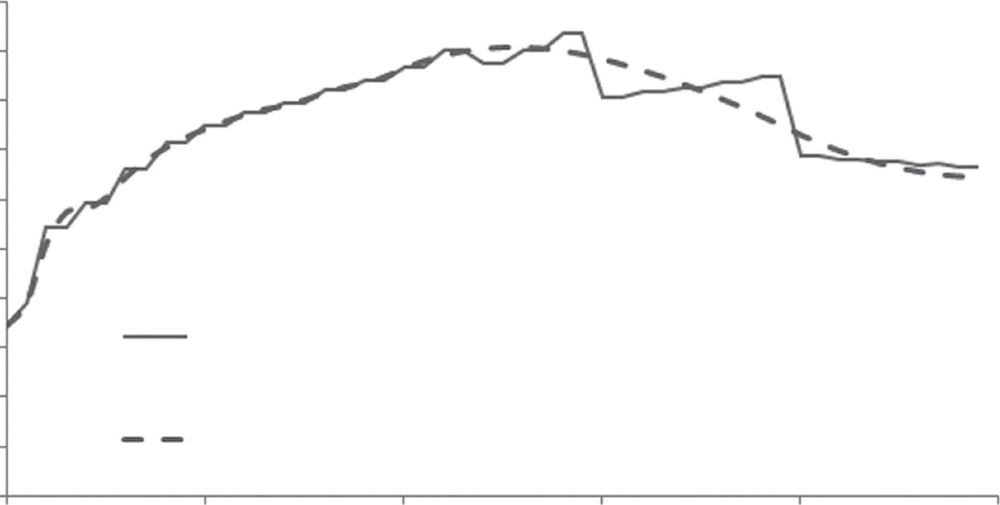
4.50%
4.00%
3.50%
3.00%
2.50%
2.00%
SingleCurveBuilderStandard’2[OnLogDf,LinearInterpolator]
1.50%
1.00%
SingleCurveBuilderSmoothingFwd’2[OnLogDf,SimpleCubicInterpolator]
0.50%
0.00%
0
5 10 15 20 25
Figure 15.9 Test case: 6m forward rates
SingleCurveBuilderSmoothingFwd<OnLogDf, SimpleCubicInterpolator> C1 = new SingleCurveBuilderSmoothingFwd <OnLogDf, SimpleCubicInterpolator> (mktRates, firstFixing);
SingleCurveBuilderStandard<OnLogDf, LinearInterpolator> C2 = new SingleCurveBuilderStandard <OnLogDf, LinearInterpolator> (mktRates, OneDimensionInterpolation.Linear);
// More curves can be added // Containers List<IRateCurve> CurveList = new List<IRateCurve>(); List<string> CurveString = new List<string>(); // Populate lists CurveList.Add(C1); CurveString.Add(C1.ToString()); CurveList.Add(C2); CurveString.Add(C2.ToString()); // I get the longer swap SwapStyle LS = (SwapStyle)mktRates.GetArrayOfBB().Last(); Dc dc = Dc._Act_360; Date[] FromDate = LS.scheduleLeg2.fromDates; Date[] ToDate = LS.scheduleLeg2.toDates; int N = FromDate.Length; List<Vector<double>> Fwds = new List<Vector<double>>(); double[] dt = new double[N]; for (int i = 0; i < N; i++) {
dt[i] = FromDate[0].YF(ToDate[i], Dc._30_360);
} foreach (IRateCurve myC in CurveList)
}
{
double[] fwd = new double[N]; for (int i = 0; i < N; i++) {
double yf = FromDate[i].YF(ToDate[i], dc); double df_ini = myC.Df(FromDate[i]); double df_end = myC.Df(ToDate[i]); fwd[i] = ((df_ini / df_end) - 1) / yf;
} Fwds.Add(new Vector<double>(fwd));
} ExcelMechanisms exl = new ExcelMechanisms();
exl.printInExcel( new Vector<double>(dt),CurveString,Fwds,"Fwd vs 6M", "time", "rate");
15.7.5 Computing Forward Start Swap In this example we use the method SwapFwd(..) as presented in Section 15.6.2:
We check that the formula is also working on reference dates so that if we calculate a forward start swap starting on a reference date we get the starting quote of a spot starting swap. We calculate a matrix of forward start swaps given an array of tenor starting labels.
Run console example FwdStartSwap()to get the following output:
Input Rate (1Y): 0.01869, ReCalc Rate (1Y): 0.0186900000000001 Matrix using SingleCurveBuilderStandard‘2[OnLogDf,LinearInterpolator]
1Y1Y:2.775 % 1Y2Y:2.896 % 1Y5Y:3.317 % 1Y7Y:3.501 % 1Y10Y:3.713 % 2Y1Y:3.020 % 2Y2Y:3.199 % 2Y5Y:3.560 % 2Y7Y:3.709 % 2Y10Y:3.902 % 3Y1Y:3.383 % 3Y2Y:3.517 % 3Y5Y:3.774 % 3Y7Y:3.900 % 3Y10Y:4.059 % 5Y1Y:3.848 % 5Y2Y:3.913 % 5Y5Y:4.075 % 5Y7Y:4.192 % 5Y10Y:4.305 % 7Y1Y:4.070 % 7Y2Y:4.138 % 7Y5Y:4.320 % 7Y7Y:4.382 % 7Y10Y:4.381 %
10Y1Y:4.436 % 10Y2Y:4.530 % 10Y5Y:4.591 % 10Y7Y:4.479 % 10Y10Y:4.429 %
Change curve building setup to see how results will change.
15.7.6 Computing Sensitivities: An Initial Example
Given a set of building blocks we consider a 10Y standard swap 100,000,000 Euro notional amount and we run some tests:
We build an IRC, Cbase using the set of building blocks {B(1m), B(2m), ... B(10Y)..., B(25Y)}, where B(10Y) is the 10Y swap with a value of 3.442%. We calculate 10Y par rate of a receiver swap S using Cbase and we check S is equal to B(10Y) value.
We calculate the NPV of this swap with S fixed rate: it should be zero since it is a par swap. We shift B(10Y) quote only, up of 1bp (from 3.442% to 3.452%), and we rebuild the curve Cshifted. We visualise building block rates before and after the shift, see Table 15.2.
We recalculate the NPV with S fixed rate: the NPV is now -84782.81 Euro.
Table 15.2 Case test: shifting input data
Starting quotes Shifted quotes
1m 1.2430% 1.2430% 3m 1.4350% 1.4350% 6m 1.7200% 1.7200%
1Y 1.8690% 1.8690%
2Y 2.3160% 2.3160%
3Y 2.5440% 2.5440%
4Y 2.7450% 2.7450%
5Y 2.9150% 2.9150%
6Y 3.0570% 3.0570%
7Y 3.1750% 3.1750%
8Y 3.2730% 3.2730%
9Y 3.3620% 3.3620%
10Y 3.4420% 3.4520% 12Y 3.5890% 3.5890% 15Y 3.7500% 3.7500% 20Y 3.8350% 3.8350% 25Y 3.7870% 3.7870%
IRS to be priced tenor: 10Y. IRS to be priced rate: 3.442% 10Y par swap using starting curve: 3.442%. Starting NPV 0.00 Let’s shift 10Y rate from 3.442% to 3.452% 10Y par swap after the shift: 3.452%. NPV after the shift
-84782.81
Observe that in the C# code we use the Func delegate to calculate the NPV formula implementing equation (15.10):
Func<SwapStyle, IRateCurve, double> NPV = (BB, c) => {
....
return NPV_fix - NPV_float; };
Running the console example Sensitivities()gives the output displayed in Table 15.2.
We now give a practical example of the impact of interpolation type on curve building and on risk representation as explained in Section 15.5.3. We list the main steps of the example.
We build an IRC, Cbase using the set of building blocks {B(1m), B(2m), ... B(10Y), B(12Y)..., B(25Y)}, note that B(11Y), is not available.
We calculate 11Y par rate of a receiver swap S using Cbase. We note that as 11Y is not a building block, its value is not uniquely calculated, but it will depend on curve building setup, see Section 15.5.3: even if we start from the same set of building blocks we get a different value for 11Y swap (using setup (a), the par rate is 3.518%, while using setup (b) the par rate is 3.515%, as in Table 15.3).
Table 15.3 Sensitivities representation
(a) (b)
11Y swap par swap 3.5150% 3.518% Starting NPV - 1m BPV - 3m BPV - 6m BPV - - 5
1y BPV - 38
2y BPV - - 45
3y BPV - 15
4y BPV - - 15
5y BPV - - 14
6y BPV - - 15
7y BPV - - 88
8y BPV - - 960
9y BPV - 15,698
10y BPV - 45,833 - 60,749 12y BPV - 45,712 - 51,796 15y BPV - 6,943 20y BPV - - 1,289 25y BPV - 293 Total: - 91,545 - 91,989 Parallel Total: - 91,503 - 91,501
SetUp (a) = SingleCurveBuilderStandard‘2[OnLogDf, LinearInterpolator] SetUp (b) = SingleCurveBuilderSmoothingFwd ‘2[OnLogDf, SimpleCubicInterpolator]
We calculate the basis point value (BPV13) for each input of the curve. To do this: we calculate the NPV of the swap using Cbase (it is zero since it is a par swap). Then, for each i building block, we shift its value and we rebuild the curve Cshiftedi . We calculate how much the NPV of the swap changes using the Cshiftedi . See the different BPV distribution in Table 15.3. We sum each BPV to a total. For setup (a) we get -91,545 EUR. Finally, we shift the starting curve of 1bp up (each rate at the same time) and we recalculate NPV of our 11Y swap to see how it has changed. For setup (a) we get -91,503 EUR.
As in Section 15.7.6, we use the function Func<SwapStyle, IRateCurve, double> NPV to calculate the NPV of the swap. We use some specific methods in IRateSingleCurve to do the shift in market parameters. In the specific case we have:
IRateCurve[] cs = C.ShiftedCurveArray(0.0001);
The method returns an array of curves. The number of elements in the array is equal to the number of market rates inputs, the i-array is the curve built using the i-market rate shifted a given quantity (here +1bp i.e. 0.01%). We also use:
IRateCurve csp = C.ParallelShift(0.0001);
13 The BPV indicates how much the position gains or loses for a 1bp (0.01%) movement of the curve.
It returns a single-curve initialised after having shifted all mktRateSet elements up by ‘shift’ quantity, once at the same time (here +1bp that is, 0.01%). For a description of sensitivities calculation see Section 16.5.
Run MoreOnSensitivities()to get the result as shown in Table 15.3. The corresponding code is:
public static void MoreOnSensitivities() { #region Inputs // Start input etc. #endregion end Inputs
#region building curve // Container for curves List<ISingleRateCurve> Curves = new List<ISingleRateCurve>();
// Instantiate each curve SingleCurveBuilderSmoothingFwd<OnLogDf, SimpleCubicInterpolator> c1 = new SingleCurveBuilderSmoothingFwd<OnLogDf,
SimpleCubicInterpolator>(mktRates); SingleCurveBuilderStandard<OnLogDf, LinearInterpolator> c2 = new SingleCurveBuilderStandard<OnLogDf,
LinearInterpolator>(mktRates, OneDimensionInterpolation.Linear);
// Adding the curves to the list Curves.Add(c1); Curves.Add(c2);
// Target tenor for example. You can change it string swapTenor = "11y";
#endregion end building curve #region myFunction // Function to calculate par swap Func<SwapStyle, IRateCurve, double> NPV = (BB, c) => {
#region FixLeg // Fixed leg year fraction; scheduleLeg1 is fixed leg double[] yfFixLeg = BB.scheduleLeg1.GetYFVect(BB.swapLeg1.DayCount)
// Payment dates of fixed leg (each date for which we shall find // discount factors) Date[] dfDates = BB.scheduleLeg1.payDates;
// Number of fixed leg cash flows int n_fix = dfDates.Length;
// NPV fixed leg, see equation (15.8) double NPV_fix = 0.0; for (int i = 0; i < n_fix; i++) {
NPV_fix += c.Df(dfDates[i]) * yfFixLeg[i] * BB.rateValue;
} #endregion
#region FloatLeg // Floating leg year fraction; scheduleLeg2 is fixed leg double[] yfFloatLeg =
BB.scheduleLeg2.GetYFVect(BB.swapLeg2.DayCount);
// Payment dates of floating leg (each date for which we shall find // discount factors) Date[] dfDatesFloat = BB.scheduleLeg2.payDates;
// End dates of each period of floating leg Date[] toDateFloat = BB.scheduleLeg2.toDates;
// Number of floating leg cash flows int n_float = dfDatesFloat.Length;
// Array to contain forward rates of floating leg double[] fwd = new double[n_float];
// First forward rate: use equation (15.2) fwd[0] = ((1 / c.Df(toDateFloat[0])) - 1) /
refDate.YF(toDateFloat[0], Dc._Act_360); ;
// Others forward rates for (int i = 1; i < n_float; i++) {
double yf = toDateFloat[i - 1].YF(toDateFloat[i], Dc._Act_360); double df_ini = c.Df(toDateFloat[i - 1]); double df_end = c.Df(toDateFloat[i]); fwd[i] = ((df_ini / df_end) - 1) / yf;
} // NPV of floating leg, see equation (15.7) double NPV_float = 0.0; for (int i = 0; i < n_float; i++) {
NPV_float += c.Df(dfDatesFloat[i]) * yfFloatLeg[i] * fwd[i];
} #endregion // NPV of the swap
return NPV_fix - NPV_float;
}; #endregion
#region Print results // For each curve: calculate sensitivities and visualize data foreach (ISingleRateCurve C in Curves) {
// Spot start swap (e.g. forward start, beginning on spot date) double swapRate = C.SwapFwd(refDate, swapTenor);
// Instantiate N curves (N = # of cs elements), shifting 1bp each // market input one at the time IRateCurve[] cs = C.ShiftedCurveArray(0.0001);
// Instantiate one curve, parallel shifting IRateCurve csp = C.ParallelShift(0.0001);
// Variables used in sensitivities double sens = 0.0; double runSum = 0.0;
// Printing results Console.WriteLine(C.ToString());
// Create an instance of vanilla swap, with swapTenor (i.e. 11Y) SwapStyle y = (SwapStyle)new
BuildingBlockFactory().CreateBuildingBlock( refDate, swapRate, swapTenor, BuildingBlockType.EURSWAP6M);
// Calculate the NPV of the swap (with initial curve) double iniMTM = NPV(y, C) * 100000000;
Console.WriteLine("{0} swap ATM fwd: {1:f5}", swapTenor, swapRate); Console.WriteLine("Starting P&L {0:f}", iniMTM);
}
int nOfRate = mktRates.Count; // Calculate how much the NPV changes, using each shifted curve for (int i = 0; i < nOfRate; i++)
{ sens = NPV(y, cs[i]) * 100000000 - iniMTM; Console.WriteLine("{0} BPV: {1:f}",
mktRates.Item(i).M.GetPeriodStringFormat(), sens);
// Cumulated change runSum += sens;
} Console.WriteLine("Total: {0:f}", runSum); Console.WriteLine("Parallel Total: {0:f}",
NPV(y, csp) * 100000000 - iniMTM);
Console.WriteLine("Press a key to continue"); Console.ReadLine(); } #endregion
In this chapter we introduced the methodology for building an interest rate curve. We presented each element of the process, namely starting from the selection of building blocks we discussed the choice of building methods and algorithms. We focused on Interest Rate Swap given that this instrument plays a relevant role in the curve building process. We introduced pricing formulae and we described practical aspects of use focusing on real life details. We designed C#codetosupporttheprocessofcurveconstructionpayingparticularattentiontotheflexibility and reusability of the code. Finally, we gave some extended examples of how to use the code.
1. Initial Swap Example Consider two firms A and B with the same financial needs in terms of maturity and
principal. The firms can borrow money in the market under the following conditions for a $10 million loan with 5-year maturity:
A: 4.0% at a fixed rate or Libor + 1.5%. B: 3.75% at a fixed rate or Libor + 0.25%. Suppose that fixed and floating interest payments have the same frequency and day count,14 so that under this assumption 1bp of fixed rate is economically equivalent to 1bp of spread on floating rate. Thus, firm B enjoys better lending conditions than firm A, namely 0.25% at the fixed rate and 1.25% at the floating rate. Suppose the swap par rate for 5Y maturity is 3.0% (so market participants indifferently exchange 3% fixed rate for Libor). If we suppose that firm A wishes to borrow money at a floating rate and firm B at a fixed rate, the solutions are: Firm A borrows money at 4.0% fixed rate (even if it wants a floating rate exposure). Firm B borrows money at Libor +0.25% (even if it wants a fixed rate exposure). Firm A and B structure the following swap at par level: Firm A pays Libor and receives fixed 3% as firm B receives Libor and pays 3% fixed rate. Have the two firms the rate exposure they really want (firm A wishes to have a net exposure to floating rate, and B to fixed rate)? How have firms A and B optimised their financial conditions? In particular, what are the net gains for both parties?
2. Floating leg of swap as portfolio of FRAs Under the assumption of equation (15.2), we discussed in Section 15.4.4 how the floating
leg of a swap can be considered as a portfolio of FRAs. Show that the equations (15.7) and (15.9) are equivalent. Rewrite the equation for par swap in the long formulation (i.e. using forward rates). Discuss the hypothesis that makes equations (15.7) and (15.9) equivalent (hint: see (15.1)). If this hypothesis is not satisfied try to understand what happens to the swap formulae and give an economic explanation. In this case what is the impact on a singlecurve pricing framework? These aspects will be covered in more detail in Chapter 16.
3. Present value of floating legs in different tenors Calculate the present value of the floating leg of a swap using different floating leg tenors. Build an IRC, Cbase from the set of building blocks used in Section 15.7.6. Define S3m and S6m the floating legs of a 5Y swap with floating tenor of 3m and 6m, respectively.
Calculate PV(S3m) and PV(S6m), defined as the net present value for S3m and S6m, for a 100 million EUR nominal. Compare PV(S3m) and PV(S6m).
14 If fixed rate and floating rate have a different frequency and day count convention, we need to apply more maths to compare the value of 1bp of fixed rate with the value of 1bp of spread on floating rate.
Are the two values identical? Why? How can the basis swap spread15 quoted on the market be explained in this single-curve framework? If you are unable to provide an explanation, read the more detailed coverage in Chapter 16.
4. The impact of a quote perturbation on forward rates Check the effect of the perturbation of market quotes on forward rates for different kinds
of interpolator. Build an IRC, Lbase from a set of k building blocks {Bk}, use the standard bootstrapping method with linear interpolation on the logarithm of the discount factors. Plot the set of all forward rates {Fi(Lbase)} of the floating leg of the longer swap in {Bk}. Shift the 10Y swap quote, up by 1bp, rebuild the curve Lshifted and plot the corresponding set of forward rates{Fi(Lshifted)}. Repeat the previous two procedures using the best fit approach on the simple cubic spline interpolator on forward rates to get Cbase and Cshifted rate curve respectively, producing {Fi(Cbase)} and {Fi(Cshifted)} forward rates. Plot their rates. Compare the plots of {Fi(Lbase)} with{Fi(Lshifted)}, and the plot of {Fi(Cbase)} with {Fi(Cshifted)}.What do you observe? Starting from what we have discussed in Section 15.5.3 and from Hagan and West 2008, do some hedging considerations. Repeat the exercise using several different setups.
5. Adding more functionality Add more functionality to the C# code presented in this chapter. Step up and amortising swap. Integrate the code design to allow the pricing of a step up
and amortising swap. Is the standard swap a special case of step up and amortising swap? Using the new code, do the following: Build an IRC, Cbase using the set of building blocks used in Section 15.7.6. Calculate the NPV of a spot starting swap, 5Y vs. 6m Euribor, paying annual 30/360, with the following structure of step up fixed rate:
1Y = 1.30%, 2Y = 1.40%, 3Y = 1.45%, 4Y = 1.60%, 5Y = 2.00%
Suppose a constant notional amount of 100,000,000 EUR. Calculate the NPV of a spot starting swap, 5Y vs. 6m Euribor, paying annual 30/360 fixed rate 1.93% with amortising notional amount on both legs in EUR. The outstanding notional per year is:
1Y = 100,000,000, 2Y = 90,000,000,3Y = 50,000,000,4Y = 30,000,000, 5Y = 11,000,000.
Check the impact of different building scheme (interpolation, building methods,. . . ) on final results (NPV) in both cases.
More building blocks types. Complete the class hierarchy of Figure 15.4 to include FRA and future implied rate as derived classes of building blocks. Update the SingleCurveBuilder class implementation. Which part of the class should be updated? What is the impact of this change in the code?
15 Basis swap spread is the spread paid in a floating to floating swap, to exchange Libor rates with different tenors. For more details, see Chapter 16.
6. Integrating a new interpolator in the code Implement a new single-curve builder using the Forward Monotone Convex interpolation
scheme base on the Hagan-West approach. Remember that this method works directly on forward rates, so in order to properly use this scheme we suggest a best fit approach. For more details on the Hagan-West method refer to Section 13.10 and to C# examples on the software distribution medium.
Answer the following questions: Which part of the code do you need to change to integrate a new interpolator? Give Hagan-West works directly on forward rates, how can you integrate it? Is the code design of the class SingleCurveBuilder flexible enough?
7. New code design Rethinkthecodedesignforthefullprocessofsingle-curvebuilding.Trytotakeadvantage
of the application of design patterns (GOF 1995). Consider the use of the following patterns: Abstract factory pattern. Builder pattern. Decorator pattern. Factory method pattern. Visitor pattern. Explain in which part of the process they can be used and highlight the advantages of their use. Finally, compare the new design with the one presented in this chapter. We discuss design patterns in Chapter 18.
We present a non-exhaustive list of swap types in addition to IRS.
Total Returns Swap (TRS) is an agreement between two parties to exchange the actual return from a financial asset or a basket of assets (total return leg) for a stream of cash flows, typically a floating leg plus or minus a spread (funding leg). This instrument synthetically creates a long position in the underlying asset without the formal ownership of the asset, providing a balance sheet advantage. TRS can be structured on any type of asset class:
❝ Equity (equity swap), Equity index (Equity Index Swap). ❝ Single bond, basket of bonds. ❝ Loan portfolio. ❝ CDO notes, real property, etc.
Dividend Swap is a swap exchanging a total dividend paid out by a single company for a fixed level of dividend over a specified period. A dividend swap can also be done on a basket of companies or on all the members of an equity index.
Volatility (variance) swap is a contract exchanging realised volatility (the square of realised volatility) of an underlying for a fixed value defined delivery price. Volatility (variance) swaps can have any type of asset class, for example FX equity, rate, etc. Using volatility (variance) swaps it is possible to take a directional position on volatility (variance) as an asset class.
Asset Swap is a combination of two separate trades, that is a bond deal and a swap deal. The asset swap buyer buys a bond from the asset swap seller for a dirty price of par, and simultaneously enters a swap with the asset swap seller, where the asset swap buyer pays bond coupons and will receive floating rates plus or minus a spread. The asset swap is
a synthetic structure that allows the investor to maintain the credit exposure of the bond swapping coupon schedule to a floating rate structure.
Forex swap (FX swap) is the combination of a spot foreign exchange transaction and the forward foreign exchange transaction in the opposite direction. Both deals are made with the same counterparty and one currency amount is kept constant in spot and in forward. This swap is used for funding purposes.
Commodity swap is a swap exchanging the market price based on a commodity for a fixed price at the swap maturity.
Credit Default Swap (CDS) is a swap where the counterparty (protection buyer) pays a periodic spread (or a single up-front) and in return receives from the other (protection seller) insurance against default on the referenced asset.
Inflation Swap is a swap where one counterparty (inflation buyer) pays a predetermined fixed rate and in return receives from the other counterparty (inflation seller) inflationlinked payments. If the inflation is yearly capitalised and paid at maturity the swap is defined as an inflation zero coupon swap (ZC). If the swap has yearly inflation payments the swap is defined as a year on year inflation swap (YoY).
Cross Currency Swap (CCS) is similar to the interest rate swap but the currency of the two legs is different and at the maturity of the swap (and possibly also at the start date) there is an exchange of principal. As with IRS, CCS legs are usually fixed to floating, but it is also common to have both floating or both fixed legs.
Quanto Swap is a generic category indicating that a reference index of the swap is paid in a different currency. For example, a quanto basis swap exchanges 3m Euribor for 10Y US CMS paid in EUR.
16
Multi-curve Building |
In this chapter we introduce and discuss multi-curve building. We build on the material in Chapter 15 that focused on traditional interest-rate models. These models assume some noarbitrage conditions, in particular a strong relationship between forward rates and discount factors and between forward rates of different tenors. During the 2007 crisis it became clear that these no-arbitrage assumptions could break down due to counterparty and liquidity risk, for example. Moreover, it became more important to collateralise OTC deals in order to reduce the risk involved in bilateral transactions. The multi-curve framework was introduced precisely for the purpose of dealing with collateralised derivatives and with the new behaviour of the forward rates. The traditional framework, using the same curve for discounting and for estimating forward rates, was not flexible enough to capture these features; some ‘new’ formulae are required. The approach in this chapter is hands-on and we pay attention to the code design by focusing on practical cases related to interest rate derivatives evaluation.
This is a large and important chapter; we have created a number of applications and have used several .NET libraries in order to show how multi-curve technology can be used. For this reason, we develop the theory and we give numerous examples of use. Some of the examples can be found in this chapter while more advanced examples are to be found in the following chapters:
Chapter 22 (Excel-DNA Addin): we use Excel-DNA VBA code to populate a dictionary of curves. We can then compare this solution with the corresponding native .NET COM Addin technology.
Chapter 24 (Multi-threading): we compare the construction of rate curves using sequential (single-threaded) and multi-threaded code. We compare the speedup.
Chapter 25 (.NET Task Parallel Library (TPL)): we compare sequential and parallel loops when computing shifted curves.
The advantage of placing the examples in these chapters is that, first, the current chapter does not become a monolith and, second, the examples use .NET libraries that we have not yet discussed.
Before we commence with a detailed discussion of multi-curve applications, we illustrate the process that led to the requirement for a new pricing framework for interest rates derivatives valuation and we give a short description of a number of terms and products that we use in later sections as well as in Chapter 17.
An Overnight Indexed Swap (OIS) is a fixed/floating interest rate swap (see Section 15.4.5). The floating leg is tied to a published overnight rate index (EONIA). The counterparties agree to exchange (at the repayment date) the difference between the agreed fixed rate and the interest accrued from the geometric average of the floating overnight index rate based on the agreed notional amount. The start and end dates are highly customisable and they provide exposure to any time period that a counterparty wishes. The counterparties do not exchange the notional at the end of the trade.
OISs were introduced in the 1990s and are widely used because they are liquid and creditefficient derivatives for all major currencies. They can be used to hedge against moves in overnight interest rates, for example. Their popularity has increased since the 2007/2008 financial crisis because Libor-based instruments often failed to capture movements in policy rates.
The discounting curve associated with these instruments is called the OIS curve; since its underlying rate has a very short tenor the OIS curve has become the best candidate for the risk-free discounting curve.
After 2007 many institutions started evaluating some financial products by discounting the future cash flows with the OIS curve. This change was introduced for a number of reasons:
Growing perception of counterparty risk. In particular, organisations use collateralised OTC contracts to mitigate this risk. For example, in the EUR area collateral accounts typically earn interest using the EONIA rate. We will return to this point below in Section 16.22. Conforming to Clearing House methodology. Clearing houses require initial and variation margins to be posted against swaps that they clear. In June 2010, London Clearing House, a verybigclearerforswaps,choseOISfordiscountingswapcontracts.Dealersareencouraged to adopt the same method with customers. Rules and regulators moving towards a more strict use of collateralisation. Some examples:
– The Dodd-Frank Act requires all eligible swaps to be centrally cleared.
– Basel III guidelines will mean that banks and their swap desks will be motivated to
undertake collateralised trades instead of non-collateralised ones.
The 2007/2008 crisis highlighted the risk involved in Over-The-Counter derivatives transactions. Derivatives contracts typically cover many years. The mark-to-market value may change considerably during their life. If the market value of an OTC transaction becomes very big it may introduce a considerable counterparty risk since the counterparty may not be able to repay the future cash flows. When a bank X and a counterparty Y enter into a derivative transaction, if the trade is uncollateralised or only partially collateralised, X effectively sells Y default protection on the default of Y. Symmetrically, at the same time, Y sells to X default protection on the default of X. Credit Value Adjustment (CVA) is the price of the default protection on Y sold by X. Debt Value Adjustment (DVA) is the price of the default protection on X sold by Y, recorded by X. To lower the counterparty risk, banks use the collateralisation of most swaps, under a Credit Support Annex (CSA) agreement.
Let us try to clarify how a CSA works by considering a Euro single currency trading operation.TheCSAindicatestheruletoshortexchangecashcollateral.Supposecounterparties A and B negotiate a plain vanilla swap, and they work under a collateral agreement. At the
trade date the deal is at the market, the NPV should be near zero and so no collateral is paid. After some time, the market moves and A gains money, and so B should post collateral on the collateral account. This margin call on the collateral account typically earns interest linked to the Euro Overnight Index (EONIA). One more example: suppose A negotiates an off-market trade with B, where A should pay B an up-front payment to do the trade, the day after B will pay A the same amount back as a collateral. The way a collateral account works may be very customised. We can define a minimum threshold, a minimum transfers amount, we can decide on a basket of securities eligible to be delivered as collateral instead of cash. The collateral mechanism is very efficient since it allows the netting mechanism (offsetting of cash collateral receivables and payables with the same counterparty, under the same master netting agreement). So far we have presented only simple didactic examples; there are many more details to investigate. An interesting issue is dealing with multi-currency collateralised derivatives, but this topic is outside the scope of this introduction.
Collateralisation impacts the price of a derivative instrument and this is why the multicurve framework is needed. Consider, for example, a swap exchanging a fixed rate against a Libor rate. In the standard pricing procedure the cash flows were discounted using the discount factors derived from the Libor swap curve, since the Libor rate was considered the benchmark for the funding costs for a bank. Under collateralisation the situation is slightly different: the curve to discount the cash flows of a swap should depend on how the swap is collateralised or funded. If a cash account earns OIS rates the correct procedure is to discount the cash flows using the OIS curve while using the Libor curve solely to generate forward cash flows.
We notice that in a bilateral contract with a poorly rated counterparty we have an impact of the counterparty risk on the valuation of the derivative. Then it is not correct to use OIS discounting. Is it so different to use OIS discounting instead of Libor discounting? Are OIS and Libor rates so different? What is the dynamic of their spread? We investigate these topics in the next subsection.
Before the 2007 crisis the 3m Euribor-OIS spread had an average value of 8bp (average from May 2000 to July 2007). So there was not a significant difference in pricing swap discounting with the Euribor curve rather than the OIS curve. From August 2007 to August 2008 the average spread was 66bp, while the average spread from August 2008 to April 2012 was 45bp. The graph in Figure 16.1 shows the dynamic of the basis 3m Euribor-OIS during the crisis period.
ThecrisisintroducedawideningoftheEuribor-OISspreadasaconsequenceofdeteriorating bank credit quality and fear of uncertainty. The same happened with the Libor-Libor basis swap, that is, the difference between Libor rates with different tenors (see Figure 16.2).
We see that the Euribor-OIS spread is at present very volatile with a non-zero value, while before 2007 it was at negligible levels. This spread can be used as a good indicator of the overall credit and liquidity conditions of the interbank markets. A widening of the spread indicates a higher premium paid to borrow funds in the Euribor market with respect to the more secure OIS market. Similarly, the fact that the Libor-Libor basis swap spread is volatile
2.5
3m Euribor-Eonia
2
1.5
bp
1
0.5
0
27/01/200627/01/200727/01/200827/01/200927/01/201027/01/201127/01/2012
Figure 16.1 Indicative 3m Eonia-Euribor spread
with a non-zero value gives indications of lending preferences, as well as of credit and liquidity perceptions.
Indicative EurBasis 3mVs6m 1Y and 5y
EurBasis 3mVs6m 1y EurBasis 3mVs6m 5y
-10
0
10
20
bp
30
40
50
01/01/200401/01/200501/01/200601/01/200701/01/200801/01/200901/01/201001/01/201101/01/2012
Figure 16.2 Indicative Eur basis swap 1Y and 5Y 3mVs6m
In order to understand the basis spread let us consider two swaps with the same start date Ta, same expiry Tb and same fixed leg. We also suppose that the floating leg of the first swap pays 6m Euribor every six months (with n scheduled dates {T0 = Ta, T1,..., Tn−1,
Tn = Tb}), while the second leg pays 3m Euribor every three months (with m scheduled dates {T 0 = Ta , T 1,..., T m−1, T m = Tb}). The values at time t of the floating legs are:
n
FloatingLeg(1) =
τk P(t, Tk)F(t; Tk−1, Tk). (16.1)
k=1
m
FloatingLeg(2) =
τ k P(t, T k)F(t; T k−1, T k). (16.2)
k=1
where {τk} (respectively {τ k}) are the year fractions of the first (respectively second) swap, P(t, T) is the discount factor at T as seen from time t, and {F(t; Tk−1, Tk)} (respectively {F(t; T k−1, T k)}) are the forward rates of the 6m Euribor (respectively 3m Euribor). Notice that we are using the same discount factors for the two swaps and that typically one uses the OIS discounting if the deals are collateralised.
If we use the standard single-curve formulae of equation (15.9) we see that these floating legs should have the same values since both (16.1) and (16.2) are equal to P(t, Ta) − P(t, Tb) by the no-arbitrage relation of equation (15.2).
Due to the Libor-OIS spread and Libor-Libor spread the values of the two floating legs cannot be assumed to be equal, and in fact the market started to quote the spread to be added to the forward rates of the second swap in order to match the price of the first. More precisely, the basis spread is the quantity k such that:
n
m
τk P(t, Tk)F(t; Tk−1, Tk) =
τ k P(t, T k)(k + F(t; T k−1, T k)).
k=1
k=1
The consequence of a non-zero basis spread k is of course that the no-arbitrage relation (15.2) cannot hold any more. This no-arbitrage relation is due to the fact that P(t, Tk) and F(t; Tk−1, Tk) are computed from the same curve. A non-zero k implies that P(t, Tk) and F(t; Tk−1, Tk) must be considered independent objects, and similarly F(t; Tk−1, Tk) and F(t; T k−1, T k) must be independent.
The multi-curve framework assumes precisely that there exists a discounting curve that produces the discount factors P(t, Tk) and a forwarding curve that produces the forward rates F(t; Tk−1, Tk). Furthermore, Libor with different tenors are associated with different forwarding curves, so that the curve producing the 3m Euribor forward rates is different from the curve associated with the 6m Euribor rates.
Another consequence is that the formula for the swap rate changes in the multi-curve context, since again the no-arbitrage relation (15.2) does not hold any more. The par swap rate formula in single framework is:
(16.3)
d j=c+1 τjSPD t, TjS
given PD from the discounting curve and FD defined using PD (so FD disappears). The par swap rate formula in multi-curve framework is:
b k=a+1 τk PD(t, Tk)F(t; Tk−1, Tk)
d j=c+1 τjSPD t, TjS
(16.4)
given PD from the discounting curve and F from the forwarding curve. For more details we refer readers to Mercurio 2009 and Mercurio and Lipman 2010.
Moving from a traditional bootstrapping using Euribor Curve to multi-curve bootstrapping using both Euribor and OIS Curve, introduces a number of effects. We consider a plain vanilla swap contract.
In Section 16.2.5 we showed how to build the par swap rate starting from the discount curve and forward rates in the multi-curve framework. In a bootstrapping procedure, however, we typically does the opposite, namely given the swap rate and the discounting curve we deduce the forward rates. Suppose that the Euribor curve is upward sloping and that the Euribor-OIS spread is greater than zero then the implied forward rates are higher using Euribor discounting than using OIS discounting. In other words switching the discounting will change the implied forward rate even with the same par swap rate. This may introduce inconsistent forwards among market participants depending on the discounting method used although recently the methodology has been converging to the standard OIS discounting curve.
The same effect is also seen with at-the-money forward start swaps to price swaptions: the value of at-the-money rate is different depending on the methodology used in bootstrapping.
We shall see the effect of forward rates bootstrapped from the same swap under OIS discounting and Euribor discounting using C# console examples.
Switching the discounting has no effect on the mark-to-market on a par swap at the initial date. It should be zero in both discounting environments. For off-market trade, in-the-money or out-of-the-money, and already started swap the impact is evident. The direction of impact and the entity will depend on the Euribor-OIS spread. When the spread is positive then OIS discount factors are higher so a negative mark-to-market will be more negative and a positive mark-to-market will be more positive. In the last few years the tendency has been for rates to go down, thus the swap payer will lose money in switching, and the swap receiver will gain money. The impact is bigger in a directional book, since some players are naturally payer, others are receivers of swap rates. Forward start swaps at the beginning may have very different break even rates, depending on the choice of the discounting curve. We shall check the effect using C# code.
What is the effect of the Euribor-OIS spread movement on the mark-to-market of a swap? Using single-curve Euribor discounting, the mark-to-market of a swap will not be affected by the movement of the Euribor-OIS spread, that is, using the traditional approach a vanilla swap has a sensitivity only to the Euribor curve.
On the other hand, using OIS discounting, the same swap has a sensitivity to Euribor curve and to OIS curve. A detailed discussion of sensitivity is provided in Section 16.5 and a practical application is presented in Section 16.7.3.
In a multi-curve world the bootstrap may be more computationally intensive than the single-curve bootstrapping as we shall see in the following section. Analogously, calculating the sensitivities of both OIS and Euribor curves has implications for performance. Suppose we have 35 quotes for the OIS curve and 35 quotes for the Euribor curve, we have to build 70 curves to calculate all sensitivities. Since this is a time-consuming process it may be convenient to handle efficiently the sequence of each curve building: in Chapter 25 we will use the .NET Task Parallel Library. Calculating sensitivities is indeed a good example of the advantages of multi-threading. We shall compare the impact on performance of parallel programming code versus sequential programming.
We define Interest Rate Single-Curve (IRSC) (as presented in Chapter 15) as an object which allows us to calculate:
A discount factor for every date in the future. The expected forward rate between two dates in the future within the curve range. From the no-arbitrage relation (15.2) the forward rates can be directly calculated from discount factors.
We define Interest Rate Multi-Curve (IRMC) to be an object that allows us to calculate: A discount factor for every date in the future according to the discounting curve. The expected forward between two dates in the future, given a defined tenor between two dates and within the curve range. Unlike IRSC a specific IRMC is needed in order to calculate the forward rate of each different tenor. Thus we will have an IRMC for estimating 3m forward rates, and a different IRMC to estimate 6m forward rates. Therefore forward rates cannot be directly calculated from discount curves.
We can summarise by saying that both IRMC and IRSC behave as a discount calculator (discounting curve defined as an object to calculate discount factors) and as a forwarding calculator (forwarding curve defined as an object to calculate forward rates). For IRSC the discounting curve and forwarding curve are the same object because forward rates can be expressed as a function of discount factors and vice versa. This is not true for IRMC. We describe the simplified process that we use to build IRMC:
1. Definingdiscountcalculator.InordertobuildanIRMC,wefirstneedtodefineadiscounting curve as IRSC, which will provide the discount factors for IRMC. If one is dealing with collateralised products a natural choice for the discounting curve is the OIS curve as explained in Section 16.2.3. Other choices are indeed possible depending on the type of deal one wishes to price.
2. Preparing data for forwarding curve. We need to collect market quotes to build the forwarding curve. We consider the choice from the following instruments:
We take a set of Nswap quotes from the market for Ndifferent maturities, Swap quotes should refer to the same floating tenor (3m, 6m, etc.).1 First fixing guess/estimate of the same tenor of swap floating leg tenor quote (3m, 6m, etc.). We can also use the Euribor fixing or an estimation of the fixing depending on timing of pricing (before or after the fixing time, i.e. 11.00 a.m. for Euribor).
3. Estimating forwards. IRMC returns forward rates using an interpolator. We define the type of interpolator and we calibrate to enable it to produce forward rates under the constraints that should be consistent with the quotes in point 2. The interpolation is performed on forward rates. This approach helps to produce smooth forward rates.2 The calibration process should solve for an array of forward rates used to initialise the interpolator. Some details of the calibration process are:
The calibration process iterates on forward rates to minimise the difference between market quotes and recalculated swap rate. In calibration, the swap rate is calculated using the equation (16.4) where discount factors are provided by the discount curve defined in point 1 and forward rates directly by the interpolator. To solve the calibration problem we use the Levenberg-Marquardt algorithm.
In later sections we shall present the practical implementation of the entire process using C# code. We introduce class MultiCurveBuilder that is responsible for the management of each step to build an IRMC. This class returns an instance of interface IRateMultiCurve, the object that represents our IRMC, with the two main methods Df(..)and Fwd(..), respectively to calculate discount factors and forward rates. Details of C# code are presented
in Section 16.6.
16.5 SENSITIVITIES
Switching from a single-curve to a multi-curve pricing mechanism involves introducing the risk exposure to two different curves. Suppose we have a plain vanilla swap. We are interested in knowing how the swap value will change as market parameters change. For that purpose we artificially shift market quotes and we rebuild the shifted curves. The new curves will be used to re-price the instrument. In C# we implement this idea using the interfaces ISingleRateCurve and IMultiRateCurve, which implement methods that return new shifted curves. Here is a short description of some shifting methods applied to market quotes to get new curves. For IRSC, assuming we have n market quotes, then:
Parallel Shift: we build one new curve by shifting all n market inputs of the same quantity S. As default choice, we use S = 1bp (0.01%).
Shifted Curve Array: we build n new curves. The i-th curve is built using starting market inputs, shifting only the i-th element of a fixed quantity S. As default choice, we use S = 1bp (0.01%).
1 The maturity of the swap is the expiry of the swap contract. The floating leg tenor is the tenor of the variable rate of floating leg. For example, 5Y swap vs. 6M: maturity is 5 years, floating tenor is 6 months.
2 The effect of interpolation on forward rates may have some drawbacks in sensitivity calculation and representation. If very granular quotes are available (that is swaps rates for each maturity) the impact of interpolation used is less evident. We test this aspect
in Section 16.7.7.
With multi-curve we have two sets of inputs: one set is used for the discounting curve (we assume n quotes), and one set used for the forwarding curve (we assume m quotes). In IRMC, for each set of inputs, we do the same work as we did for IRSC. Here are the shifts used for IRMC:
Parallel Shift Discount Curve: as with Parallel Shift for IRSC but we apply the shift to n discount curve input rates. In practice we shift OIS rates. Shifted Curve Array Discount Curve: as with Parallel Curve Array for IRSC but we apply the shift only to n discount curve input rates. Parallel Shift Forward Curve: as with Parallel Shift Discount Curve but we shift the m set of rates. In practice we shift the first fixing and swap rates. Shifted Curve Array Forward Curve: as with Shifted Curve Array Discount Curve but we shift the m set of rates. The C# code of these methods is presented in the next section. We can calculate other measures of risk based on different shifting methods. Other popular
shifting methods, not implemented in the code, are:
Shifting Forward Rate: rather than shifting market inputs that produce forward rates, we create new curves by directly shifting forward rates. Shifting Zero Rates: rather than shifting market inputs that produce discounting factors, we build new curves by directly shifting zero rates migrating from the discount factor.
In Section 16.4 we described the logical sequence of tasks to follow in order to build an IRMC. In this section we present a number of C# types (classes and interfaces) developed in IRMC building. The main C# types are:
The class MultiCurveBuilder. The interfaces IMultiRateCurve, ISingleRateCurve. The class BaseOneDimensionalInterpolator. Various C#classes defined inprevious chapters and usedas data member of MultiCurveBuilderclass,suchas: BuildingBlockclass,SwapStyle classandRateSetclass.
In the following sections we focus on the description of the IRateCurve interface and its derived interfaces, in particular IMultiRateCurve and the class MultiCurveBuilder in order to gain an overview of types interaction. To have an overview of types interaction, as shown in Figure 16.3.
Moving to the multi-curve environment we upgrade the IRateCurve interface that we have already described in Chapter 15. IRateCurve is the base interface, ISingleRateCurve and IMultiRateCurve are derived from the IRateCurve interface. They specialise IRateCurve interface and they contain additional methods, specific to what they have to do as shown in Figure 16.4.
SingleCurveBuilder class implements ISingleRateCurve interface (IRSC), while MultiCurveBuilder class implements IMultiRateCurve interface (IRMC).
<<interface>> <<C# interface>> IRateCurve |
<<C# class>> BaseOneDimensionalInterpolator |
|||||||
|
|||||||
<<interface>> <<C# interface>>
<<interface>> <<C# interface>>
IMultiRateCurve
<<C# class>> RateSet |
||
Interpolation:Class
<<C# class>> SwapStyle |
|
<<C# class>>
MultiCurveBuilder
Figure 16.3 MultiCurveBuilder and other classes
«interface» «C# interface» IRateCurveAttributes |
Operations + Df(TargetDate : Date) : Double + Fwd(StartDate : Date) : Double + GetSwapStyle() : SwapStyle + RefDate() : Date + SwapFwd(StartDate : Date, Tenor : String) : Double |
«interface» «C# interface» ISingleRateCurve
Attributes Operations
+ GetInputRates() : Double[*]
+ ParallelShift(shift : Double) : ISingleRateCurve
+ ShiftedCurveArray(shift : Double) : ISingleRateCurve[*]
«interface» «C# interface» IMultiRateCurve
Attributes Operations
+ ParallelShiftDCurve(shift : Double) : IMultiRateCurve
+ ParallelShiftFwdCurve(shift : Double) : IMultiRateCurve
+ ShiftedCurvesArrayDCurve(shift : Double) : IMultiRateCurve[*]
+ ShiftedCurvesArrayFwdCurve(shift : Double) : IMultiRateCurve[*]
Figure 16.4 Interface hierarchy and functionality
Specific methods are needed mainly for the shifting process, as already discussed in Section 16.5. Furthermore, the IRateCurve interface has methods that identify the concept of Interest Rate Curve, hence they are implemented in both classes. We show the code for IRateCurve interface, ISingleRateCurve interface and IMultiRateCurve interface:
public interface IRateCurve {
// Return reference date Date RefDate();
// Return discount factor for TargetDate double Df(Date TargetDate);
// Return forward rate starting on StartDate // for a tenor defined directly in the class double Fwd(Date StartDate);
// Return forward start swap as same building block // used in building curve. // It is recalculated starting on custom StartDate, // Tenor is the tenor of swap double SwapFwd(Date StartDate, string Tenor);
// Return SwapStyle used for bootstrapping, it is // swap type used as input (i.e. EurSwapVs6m, EurSwapVs3m, ...) SwapStyle GetSwapStyle();
} public interface ISingleRateCurve : IRateCurve {
// Return array of curves, initialized after shifting // mktRateSet elements ISingleRateCurve[] ShiftedCurveArray(double shift);
// Return one only curve, initialized after shifting all // mktRateSet elements up of 'shift' quantity, once at the same time ISingleRateCurve ParallelShift(double shift);
// Return input rates double[] GetInputRates();
} public interface IMultiRateCurve : IRateCurve {
// Return array of curves, initialized after shifting // mktRateSet elements of discounting curve IMultiRateCurve[] ShiftedCurvesArrayDCurve(double shift);
// Return one only curve, initialized after shifting all // mktRateSet elements, of discounting curve, up of 'shift' // quantity, once at the same time IMultiRateCurve ParallelShiftDCurve(double shift);
// Return array of curves, initialized after shifting // mktRateSet elements of forwarding curve IMultiRateCurve[] ShiftedCurvesArrayFwdCurve(double shift);
// Return one only curve, initialized after shifting all // mktRateSet elements of forwarding curve, up of 'shift' // quantity, once at the same time IMultiRateCurve ParallelShiftFwdCurve(double shift);
}
In general, client code uses implementations of these interfaces. We now discuss these clients.
We create a generic class called MultiCurveBuilder<Interpolation>, with constraints on the type parameter Interpolator. The class implements the interface IMultiRateCurve. The type parameter Interpolator allows us to define the interpolator that will be used on forward rates. We now present the main parts of the class:
Class declaration and data members Many classes already presented are used as data member of the class.
public class MultiCurveBuilder<Interpolation> : IMultiRateCurve where Interpolation : BaseOneDimensionalInterpolator, new() {
// Data Members public Date refDate; // Reference date of the curve public IEnumerable<BuildingBlock> BBArray; // Array of sorted BuildingBlock protected SwapStyle[] OnlyGivenSwap; // Only Given Swap from BBArray
}
// Swap type used as inputs (i.e. EurSwapVs6m, EurSwapVs3m, ...) public SwapStyle SwapType; public RateSet mktRateSet; // Market starting data protected ISingleRateCurve DCurve; // Curve used in discounting Interpolation FWDInterpolator; // Interpolator in fwd protected double fixing; // First fixing (actual or expected) double[] FromDatesSerial; // Starting date of forward rates
The type parameter <Interpolation> should be a BaseOneDimensionalInterpolator. new( ) as constraint, indicates that the type parameter must have a default constructor.
// Constructor public MultiCurveBuilder(RateSet rateSetMC, ISingleRateCurve DiscountingCurve) {
PreProcessData(rateSetMC, DiscountingCurve); Solve();
}
The class constructor needs two arguments:
RateSet rateSetMC that contains market quotes for the forwarding curve.3 ISingleRateCurve DiscountingCurve that is the discounting curve. We instantiate it using the SingleCurveBuilder class.4
PreprocessData(..). Solve(..).
PreProcessData(..) Prepares data that is used in the Solve() method. In particular, the code does the following:
1. Creates BuildingBlocks starting from market data.
2. Sorts BuildingBlocks ascending.
3 Note that the first element of rateSetMC is the fixing (or expected fixing), having the same tenor of floating leg of swap quotes.
4 Our preference is to use SingleCurveBuilderStandard, see details in Chapter 15.
3. Gets starting fixing.
4. Creates an array of dates containing the start date of each forward of the floating leg of the longer swap.
5. Validates swap input rates, checking that the floating leg is homogeneous in the floating leg tenor.
We use some LINQ syntax here (we discuss LINQ in Chapter 19). We show the following lines of code as example:
// Sort ascending end date BBArray = from c in BB
orderby c.endDate.SerialValue ascending select c;
// Only Given Swap from BBArray OnlyGivenSwap = (from c in BBArray
where c.GetType().BaseType == typeof(SwapStyle) select (SwapStyle)c).ToArray();
// Getting the fixing fixing = (from c in BBArray
where c.GetType().BaseType == typeof(OnePaymentStyle) where c.endDate == refDate.add_period(UnderlyingTenor) select c.rateValue).Single(); ..
// Are all of the same type? bool IsSameSwapType = OnlyGivenSwap.All(s => s.buildingBlockType == BBT);
Solve(..) Executes the calibration. It performs the following operations:
1. Sets up the initial guess for forward rates; as starting guess we suppose a flat structure of rates equal to the fixing:
double[] x = Enumerable.Repeat(fixing, OnlyGivenSwap.Count()+1).ToArray();}
2. Initialises optimiser (alglib class), using the initial solution x, with steps of 0.0001:
alglib.minlmcreatev(NConstrains, x, 0.0001, out state); alglib.minlmoptimize(state, function_fvec, null, null);
where state is an Alglib structure that stores algorithm state and function_ fvec is an instance of ndimensional_fvec Alglib delegate. This delegate has the following syntax:
public delegate void ndimensional_fvec (double[] arg, double[] fi, object obj).
We specify the name of the delegate method as:
public void function_fvec(double[] x, double[] fi, object obj),
where x is the array to be found and the fi vector of functions to be minimised. The optimisation algorithm searches for a best solution solving for elements of the
x array, according to a given number (NConstrains) of functions, contained in the function_fvec method. See Appendix 2 for a discussion of Alglib.
3. Iterate on method function_fvec. The function_fvec implementation will use delegates with lambda expressions to calculate the swap price used in calibration:
// Delegate for swap function private delegate double SwapRate(SwapStyle S); // Lambda expression: calculate Par Rate given // a SwapStyle building block,formula reference in the code SwapRate SwapCalc = BB =>{... }
The function_fvec contains the fi function to minimise the difference between market data and calculated prices:
// Starting fixing should be match fi[fi.Length-1] = (fixing - x[0]) * 10000;
// Iterate building block for (int i = 0; i < OnlyGivenSwap.Length; i++) {
fi[i] =
(SwapCalc(OnlyGivenSwap[i]) -OnlyGivenSwap[i].rateValue) *10000; }
Interface’s implementation. Finally the class implements the IRateCurve and IMul-
tiRateCurve interfaces. Below is the list of methods for IRateCurve: public Date RefDate(): returns reference date of the curve. public double Df(Date TargetDate): returns the discount factor for the TargetDate. public double Fwd(Date StartDate): returns the forward rate starting on StartDate, for the floating tenor characteristic of the curve. public double SwapFwd(Date StartDate, string Tenor): returns forward start swap homogenous with input quotes conventions, starting on StartDate, with a Tenor maturity of swap.5 public SwapStyle GetSwapStyle(): returns SwapStyle used for bootstrapping; it is a swap type used as inputs (i.e. EurSwapVs6m, EurSwapVs3m, . . . ). The list of methods implemented for IRateMultiCurve is based on Section 16.5. public IMultiRateCurve ParallelShiftDCurve(double shift):
returns only one curve, instantiated after shifting all mktRateSet elements of discounting curve, up of shift quantity, once at the same time (see Parallel Shift Discount Curve definition in Section 16.5).
public IMultiRateCurve[] ShiftedCurvesArrayDCurve(double shift): returns an array of curves. Each curve is instantiated after shifting each element of a discounting curve. The i-discount curve is built using its setup (interpolator, etc.), but shifting i-element of mktRateSet of discounting curve up of shift quantity (see Shifted Curve Array Discount Curve definition in Section 16.5).
public IMultiRateCurve ParallelShiftFwdCurve(double shift): returns one curve, instantiated after shifting all mktRateSet elements of forward
5 If we used as quote convention Swap vs. 6m, annual 30/360, the calculated forward start swap will have the same features.
curves, up of shift quantity, once at the same time (see Parallel Shift Forward Curve in Section 16.5). public IMultiRateCurve[] ShiftedCurvesArrayFwdCurve(double shift): returns an array of curves, instantiated after shifting mktRateSet elements of forwarding curve. The i-th curve is built using its setup (interpolator,..), but shifting i-element of mktRateSet, up of shift quantity (see Shifted Curve Array Forward Curve definition in Section 16.5).
More comments and explanations are available in the code. Since these operations are computationally intensive we use TPL for parallel loops to speed up the execution of the code. For example, in ParallelShiftFwdCurve(double shift) we use the following syntax:
Parallel.For(0, n, i => {
// Build the correct curve curves[i] = CreateInstance(rsArr[i], DCurve);
});
We provide various practical applications of C# classes and interfaces.
We build an IRMC and we test if the calibration process has worked successfully, that is, to be consistent with starting building blocks. We verify if we can reproduce the same market quotes using discount factors and forward rates provided by the IRMC. Here are the steps of the test:
Collect market data for curve building (for discounting curve OIS and for forwarding curves swap rates and Euribor fixing). Build an IRSC using OIS data (many settings are available here). Build an IRMC using swap rates and Euribor fixing quote. Using this IRMC we recalculate the values of market quotes. We see that we can obtain the same values.
The output of the test is:
6m Input Rate: 0.0106 Recalc Rate: 0.0106
1y Input Rate: 0.0142 Recalc Rate: 0.0142
2y Input Rate: 0.01635 Recalc Rate: 0.01635
3y Input Rate: 0.01872 Recalc Rate: 0.01872
4y Input Rate: 0.02131 Recalc Rate: 0.02131
5y Input Rate: 0.02372 Recalc Rate: 0.02372
6y Input Rate: 0.02574 Recalc Rate: 0.02574
7y Input Rate: 0.02743 Recalc Rate: 0.02743
8y Input Rate: 0.02886 Recalc Rate: 0.02886
9y Input Rate: 0.03004 Recalc Rate: 0.03004
10y Input Rate: 0.03107 Recalc Rate: 0.03107
11y Input Rate: 0.03198 Recalc Rate: 0.03198
12y Input Rate: 0.03278 Recalc Rate: 0.03278
13y Input Rate: 0.03344 Recalc Rate: 0.03344
14y Input Rate: 0.03398 Recalc Rate: 0.03398
15y Input Rate: 0.03438 Recalc Rate: 0.03438
16y Input Rate: 0.03467 Recalc Rate: 0.03467
17y Input Rate: 0.03484 Recalc Rate: 0.03484
18y Input Rate: 0.03494 Recalc Rate: 0.03494
19y Input Rate: 0.03495 Recalc Rate: 0.03495
20y Input Rate: 0.03491 Recalc Rate: 0.03491
21y Input Rate: 0.03483 Recalc Rate: 0.03483
22y Input Rate: 0.03471 Recalc Rate: 0.03471
23y Input Rate: 0.03455 Recalc Rate: 0.03455
24y Input Rate: 0.03436 Recalc Rate: 0.03436
25y Input Rate: 0.03415 Recalc Rate: 0.03415
26y Input Rate: 0.03391 Recalc Rate: 0.03391
27y Input Rate: 0.03366 Recalc Rate: 0.03366
28y Input Rate: 0.0334 Recalc Rate: 0.0334
29y Input Rate: 0.03314 Recalc Rate: 0.03314
30y Input Rate: 0.0329 Recalc Rate: 0.0329
In this example we build an IRMC as in Section 16.7.1. We calculate each 6m forward rate of the floating leg of the longer swap quote (that is 30Y). The plot of forward rates is shown in Figure 16.5.
5.00%
Multi-curve forward rate |
||||||
4.00%
3.00%
Rate
2.00%
1.00%
0.00%
0 5 10 15 20 25 30
Figure 16.5 Multi-curve forward rate example
Finally, we also calculate the discount factors for relevant dates as shown in Figure 16.6. You can run TestMultiCurveBuilder.FwdInExcel() to get the above output in
Excel.
Build the IRMC as in Section 16.7.1. Calculate the par rate R for 11Y standard swap, check R = 3.1980%, so that it is consistent with market quotes.
1
Multi-curve discount factor |
||||||
0.9
0.8 0.7
Discount Factor
0.6
0.5
0.4
0.3
0.2
0.1
0
0 5 10 15 20 25 30
Figure 16.6 Multi-curve discount factors
Calculate the mark-to-market of 11Y swap with an R fixed rate. It is zero as we would expect. Calculate the sensitivities to 1bp for each market rate. We apply the four shifts as discussed
in Section 16.5 for IRMC. Given that in the example 11Y swap is an available quote, the 11Y ATM swap has the only sensitivity on 11Y bucket. Now, repeat the test skipping 11Y swap quotes. How will the sensitivities change? As it is a par swap, it is insensitive to the discounting curve; check that the sensitivities to all OIS quotes are zero. Repeat the above test for two more par swaps with the following fixed rates: 2.1980% and 4.1980%. Note that now the sensitivity to discount curve is not null. Observe how the sign of the sensitivity changes, changing the sign of mark-to-market. Compare the results using the arguments as discussed in Section 16.3.
Test results are summarised in Table 16.1. You can run the C# code TestMultiCurveBuilder.Sensitivities() example to get the same output.
In this example we build an IRMC and we calculate a matrix of forward start swaps. In the specific example we calculate swap rates against 6m floating tenor. The forward swap matrix is very useful for trading as it represents strikes for ATM swaption (discussed in greater detail in Chapter 17). Moreover, many trading strategies use forward start swaps to bet on the curve shape. Many brokers directly contribute quotes of forward start swaps. Run TestMultiCurveBuilder.FwdMatrix() to get the following output:
Matrix using MultiCurveBuilder'1[SimpleCubicInterpolator] 1Y1Y:1.856% 1Y2Y:2.106% 1Y5Y:2.821% 1Y10Y:3.405% 1Y15Y:3.640% 2Y1Y:2.358% 2Y2Y:2.646% 2Y5Y:3.224% 2Y10Y:3.667% 2Y15Y:3.803% 3Y1Y:2.942% 3Y2Y:3.166% 3Y5Y:3.563% 3Y10Y:3.881% 3Y15Y:3.925% 5Y1Y:3.666% 5Y2Y:3.767% 5Y5Y:3.966% 5Y10Y:4.122% 5Y15Y:4.014% 10Y1Y:4.308% 10Y2Y:4.340% 10Y5Y:4.312% 10Y10Y:4.045% 10Y15Y:3.735% 15Y1Y:4.061% 15Y2Y:3.963% 15Y5Y:3.724% 15Y10Y:3.361% 15Y15Y:3.042%
Table 16.1 Sensitivity calculation
Pricing Receiver Swap 11y, Atm Rate: 3.1980%
Sensitivities to Curve used for forward rate: Sensitivities to Discount Curve:
Contract Rate: 3.1980% 4.1980% 2.1980% 3.1980% 4.1980% 2.1980% Starting MtM – 9,584,924.73 −9,584,924.73 – 9,584,924.73 −9,584,924.73 6m BPV – – – 1w BPV – – –
1y BPV – – – 2w BPV – – –
2y BPV – – – 3w BPV – – –
3y BPV – – – 1m BPV – – –
4y BPV – – – 2m BPV – – –
5y BPV – – – 3m BPV – – –
6y BPV – – – 4m BPV – – –
7y BPV – – – 5m BPV – – –
8y BPV – – – 6m BPV – – –
9y BPV – – – 7m BPV – – –
10 BPV – – – 8m BPV – – –
11y BPV −95,849.25 −95,849.25 −95,849.25 9m BPV – – –
12y BPV – – – 10m BPV – 0.04 −0.04
13y BPV – – – 11m BPV – −1.98 1.98
14y BPV – – – 1y BPV – −79.90 79.90
15y BPV – – – 2y BPV – −160.91 160.91
16y BPV – – – 3y BPV – −243.42 243.42
17y BPV – – – 4y BPV – −325.57 325.57
18y BPV – – – 5y BPV – −408.72 408.72
19y BPV – – – 6y BPV – −496.36 496.36
20y BPV – – – 7y BPV – −578.21 578.21
21y BPV – – – 8y BPV – −665.85 665.85
22y BPV – – – 9y BPV – −757.80 757.80
23y BPV – – – 10y BPV – −852.97 852.97
24y BPV – – – 11y BPV – −944.39 944.39
25y BPV – – – 12y BPV – 4.09 −4.09
26y BPV – – – 15y BPV – – –
27y BPV – – – 20y BPV – – –
28y BPV – – – 25y BPV – – –
29y BPV – – – 30y BPV – – –
30y BPV – – – – – – – Total: −95,849.25 −95,849.25 95,849.25 Total: – 5,511.93 5,511.93 Parallel Parallel
Shift Total: −95,849.25 −95,849.25 −95,849.25 Shift Total: – 5,509.16 5,509.16
We build an IRSC and an IRMC starting from the same market quotes. Assuming that all swap quotes are against 6m floating tenor, we do the following:
Calculate the par swap of a standard 5Y swap using both IRSC and IRMC. Obviously we get the same rate as both curves are calibrated to market quotes (5Y swap is a market quote). We can confirm that curve framework calculations are consistent. We consider a deep out of the money swap with the fixed rate at 1% on a notional of 100,000,000 Eur given the market par swap level at 2.372%. We calculate the
mark-to-market of this swap using the two curve framework. The market value of the swap is calculated using the following function based on equation (16.4):
// Function to calculate Net Present Value of a Vanilla Swap (receiver swap) Func<SwapStyle, IRateCurve, double> NPV = (BB, c) => { #region FixLeg // Fixed leg data // Fixed leg is Leg1 double[] yfFixLeg =
BB.scheduleLeg1.GetYFVect(BB.swapLeg1.DayCount); // Calculate discount factors (df) array for fixed leg // Dates of fixed leg (for each date we need a df) Date[] dfDates = BB.scheduleLeg1.payDates; // # of fixed cash flows int n_fix = dfDates.Length; double NPV_fix = 0.0; // Calculate the Net Present Value of fixed leg summing [df*yf*rate] for (int i = 0; i < n_fix; i++) { NPV_fix += c.Df(dfDates[i]) * yfFixLeg[i] * BB.rateValue; } #endregion #region FloatLeg // Floating leg data // Float leg is Leg2 double[] yfFloatLeg =
BB.scheduleLeg2.GetYFVect(BB.swapLeg2.DayCount);
// Dates of fixed leg // (for each date we should find discount factor) Date[] dfDatesFloat =
BB.scheduleLeg2.payDates;
// Starting dates for floating leg forward rates Date[] FromDateFloat = BB.scheduleLeg2.fromDates;
// # of fixed cash flows int n_float = dfDatesFloat.Length;
// fwd rates container double[] fwd = new double[n_float];
// Getting each forward rate for (int i = 0; i < n_float; i++) { fwd[i] = c.Fwd(FromDateFloat[i]); }
double NPV_float = 0.0; // Calculate the Net Present Value of floating leg summing [df*yf*fwd] for (int i = 0; i < n_float; i++) { NPV_float += c.Df(dfDatesFloat[i]) * yfFloatLeg[i] * fwd[i];
} #endregion // Swap Net Present Value (NPV) return NPV_fix - NPV_float; };
Wenoteadifferenceinmark-to-marketusingIRSCandIRMC.Inamulti-curveenvironment the value is more negative than in the single-curve case. This is because we used the OIS curve for discounting, and in the example OIS discount factors are higher than single-curve discount factors. Obviously when discount factors in IRMC are higher than discount factors in IRSC, for a receiver swap we have the following:
– if swap rate < par rate: single-curve mark-to-market > multi-curve mark-to-market – if swap rate > par rate: single-curve mark-to-market < multi-curve mark-to-market
Run the code TestMultiCurveBuilder.MTM_Differences() to get the following output:
Calculating Mark To Market of vanilla rec swap Nominal 100,000,000.00 SwapRate: 1.00 % Tenor: 5y Using Multi Curve, the MtM is: -6,548,316.32 (ref ParRate 2.3720 %) Using Single Curve, the MtM is: -6,458,775.30 (ref ParRate 2.3720 %)
In this example we use a timer to measure how long it takes to instantiate a MultiCurveBuilder instance. We compare two versions of the same class. Each version is defined by:
Different starting guess values. The interpolation object: MultiCurveBuilder interpolates directly on the forward rates, while MultiCurveBuilder2 first interpolates discount factors and then calculates forward rates.
MultiCurveBuilder protected void Solve() {
// As first guess we suppose flat fixing structure double[] x =
Enumerable.Repeat(fixing, OnlyGivenSwap.Count()+1).ToArray();
... }
public void function_fvec(double[] x, double[] fi, object obj) {
// We interpolate directly fwd rates, so from starting date of fwd FWDInterpolator.Ini(FromDatesSerial,x);
... // We directly guess the fwd rates SwapRate SwapCalc = BB =>
{
...
double[] fwdFloatLeg = (from c in BB.scheduleLeg2.fromDates select FWDInterpolator.Solve(c.SerialValue)).ToArray();
double[] dfFixLeg = (from c in BB.scheduleLeg1.payDates select DCurve.Df(c)).ToArray();
... }; }
MultiCurveBuilder2 protected void Solve() {
// Initial guess: we use a discount factor // Initial "rude" guess double firstGuess = 1.0 / (1.0 + (0.5 * fixing.rateValue)); double[] x = Enumerable.Repeat(Math.Log(firstGuess), OnlyGivenSwap....
}
public void function_fvec(..) {
// We interpolate on end date as we are interpolating DF FWDInterpolator.Ini(ToDatesSerial, x);
... // We guess DF first, then we calculate fwd rates SwapRate SwapCalc = BB => {...
double[] fwdFloatLeg = new double[n]; for (int i = 0; i < n; i++) { fwdFloatLeg[i] = (df_ini[i] / df_end[i] - 1) / yfFloatLeg[i]; }...
};.. }
Class MultiCurveBuilder ... Done. Time in milliseconds: 633 Class MultiCurveBuilder2 ... Done. Time in milliseconds: 2660
Show forward rates? y/n Y A = MultiCurveBuilder ; B = MultiCurveBuilder2 A:1.260 % B:1.260 % (A-B):0.000 %
A:1.531 % B:1.531 % (A-B):0.000 % A:1.724 % B:1.724 % (A-B):0.000 %
... ... A:2.106 % B:2.106 % (A-B):0.000 %
A:2.115 % B:2.115 % (A-B):0.000 %
TheresultsdependonPCspecifications.WeusedthefollowingProcessorIntel(R)Core(TM) 2 Quad CPU Q8300 @ 2.50 GHz, 2499 Mhz, 4 core, 4 logic processor, 4GB RAM. An efficient implementation may be crucial as the class may be instantiated many times in sensitivities calculations.
We check how interpolation and curve building strategies can impact the shape of forward when input rates are more or less dense. We first discuss this using the single-curve framework. See Figure 16.7, in the left plot we use 31 market quotes for the forwarding curve, while in the right plot we use a subset of 13 quotes. As expected, when market quotes are rare, if we use the SingleCurveBuilderStandard class there is a higher impact from the interpolation scheme on forward rates shape. Other strategies allow us to mitigate the impact.
3.50%
3.00%
3.50%
3.00%
2.50%
2.50%
2.00%
1.50%
1.00%
0
2.00%
SingleCurveBuilderStandard<OnDf, LinearInterpolator>
SingleCurveBuilderStandard<OnDf, LinearInterpolator>
1.50%
SingleCurveBuilderSmoothingFwd<OnLogDf, SimpleCubicInterpolator>
SingleCurveBuilderSmoothingFwd<OnLogDf, SimpleCubicInterpolator>
1.00%
5 10 15 20 25 30 0 5 10
15 20 25 30
Figure 16.7 Using different interpolators for discount curve in single-curve
We now run a similar test using IRMC. In this case we build the discounting curve using linear interpolation on the discounting factor, and we change interpolation for forward rates. The output is displayed in the graph in Figure 16.8.
0
1.00%
1.50%
2.00%
2.50%
3.00%
3.50%
More data input Less data input
1.00%
1.50%
2.00%
2.50%
3.00%
3.50%
5 10
MultiCurveBuilder<SimpleCubicInterpolator>
MultiCurveBuilder<LinearInterpolator>
MultiCurveBuilder<SimpleCubicInterpolator>
MultiCurveBuilder<LinearInterpolator>
15 20 25 30 0 5 10 15 20 25 30
Figure 16.8 Using different interpolators for discount in multi-curve
As in the previous example, the density of input affects the shape of forward rates, but in this case the strategy used mitigates the impact of interpolation on the final results. By running the console example TestMultiCurveBuilder.CheckInterpOnFwd() it is possible to get the data of the plot and to investigate the effect of other combinations.
In the following example we show the comparison of discount factors calculated in multicurve and single-curve frameworks. In the particular example we see that discount factors calculated using OIS discounting are higher than the one calculated using Euribor discounting (single-curve). We used data from Section 16.7.3. The plot represents a typical and frequent situation as the OIS curve refers to something less risky than Euribor curve, so it is reasonable that discount factors are higher.
Run the example TestMultiCurveBuilder.DiscountFactors() to plot the following:
Comparing discount factor
1
Single-curve Multi-curve |
|
0.9
0.8
Discount factor
0.7
0.6
0.5
0.4
0.3
0.2
0.1
0
0
5 10
15 20 25 30
Time in years
Figure 16.9 Comparing discount factors in single and multi-curve framework
In this chapter we have given an overview of a number of changes that have taken place in the financial markets since the crash of 2007. No longer can we use single-curve models whenpricingandhedgingplainvanillasingle-currencyinterestratederivatives.Instead,weuse multipledistinctcurves toensuremarketcoherent estimationofdiscountfactorsandofforward rates with different underlying rate tenors. We created interfaces, classes and applications to show the use of this new multi-curve technology in an interest-rate context.
1. In Chapter 15 we discussed different strategies for building an IRSC, while in this chapter we discuss only one strategy to build an IRMC. As further development we can add more strategies to the code to build an IRMC. This can be managed by making MultiCurveBuilder a base class, and by adding a derived class for each bootstrapping strategy. In particular integrate the code with the Hagan-West approach as discussed in Section 13.10.
2. Check how forward rates change under the OIS discounting and Euribor discounting, for different levels of OIS curve. Starting from input data used to build the IRMC in the
example in Section 16.7.5, apply a parallel shift to OIS rate (up or down of fixed quantity) to create different scenarios, keeping swap rates constant. Recalculate forward rates under different scenarios, and compare the level of forward rates. How do forward rates change when shifting the OIS curve up/down?
3. Check whether the way the interpolator is used impacts the shape of forward rates as we increase the number of input rates. Take data used to build the IRMC in the example in Section 16.7.5. Calculate the 11Y ATM swap rate. Recalculate the value of 11Y par swap using different types of interpolator. How does the 11Y par swap change? It should be indifferent to the choice of the interpolator since it is a point used in calibration. Now rebuild the curve skipping 11Y as starting input (inputs are now . . . 10Y, 12Y. . . ), and recalculate 11Y swap using different interpolation types. Is the 11Y swap indifferent to the choice of interpolator now?
4. Using input data from Section 16.7.7, calculate the mark-to-market, using IRSC and IRMC, of
a receiver 5Y swap with a rate of 5%; a payer 5Y swap with a rate of 1% and 5%. Provide some observations starting from concepts presented in Section 16.3.
5. Create a class to calculate the NPV of a customised swap that supports: Amortisation on notional on each leg. A step up/step down rate on the fixed leg. A customised spread on the floating leg. Check the impact of switching from IRSC to IRMC in the pricing of the above kinds of swap.
6. Study a possible new code design for Figure 16.3, using the Visitor pattern to define new operations on the elements of the structure, without altering the data classes.
7. Starting from the Appendix 16.10, design code to calculate the asset swap spread and the zero volatility spread for a generic fixed coupon bond. Consider the following points:
Using C# classes presented in Chapters 12, 15 and 16, develop a framework to calculate the par asset swap spread and the zero volatility spread implementing equations (16.5) and (16.6); in both cases you need to use data from bond structure and from the interest rate curves at the same time (BondFixedCoupon class and IRateCurve interface). Create the corresponding Excel UDFs, to exploit the new class functionality from the spreadsheet. Consider two fixed coupon bonds A and B with same maturity but with different fixed coupons. Suppose A has a price of 100, PA = 100. Calculate the yield YA of the bond A. Using YA calculate the price PB of bond B. Calculate the asset swap spread and the zero volatility spread for each bond, using input data from Section 16.7.5. Provide some assessments.
Discuss the following topics: What is the information of the asset swap spread and of the zero volatility spread for an investor? Can the asset swap spread diverge substantially using single-curve and multi-curve approaches? In the answer consider different levels of dirty prices of the bond (much above par, at par, much below par). Do the same analysis for zero volatility spread. Use the C# code to motivate the answers.
Suppose we get different asset swap spread levels for the same bond, using single-curve and multi-curve approaches. Is the asset swap spread an exhaustive measure of bond riskiness? How can one extend the code to handle zero coupon and multi-coupon bonds (using BondZeroCoupon and BondMultiCoupon classes)?
An asset swap is a combination of two separate trades: a bond deal and a swap deal (see Section 15.10). The asset swap buyer buys a bond from the asset swap seller, and simultaneously enters a swap with the asset swap seller, where the asset swap buyer pays bond coupons and agrees to receive floating rates plus a spread.
The asset swap spread is, by definition, the spread to the floating rate that makes the swap value zero.
The asset swap allows an investor to maintain the credit exposure of the bond, swapping coupon payments to floating rate. If the bond defaults, the swap is still alive and can be closed out at market conditions.
There are many types of asset swaps: we focus on par asset swap, in which an up-front is also exchanged at the start date of the swap to make the initial investment at par. The par asset swap buyer always pays 1 at the start date as the algebraic sum of the bond price and swap up-front; despite this, the credit risk profile of the buyer depends on the relative proportion of these two amounts (the up-front has embedded only the swap counterparty risk, that could be mitigated in case of collateralisation; the bond credit risk depends on the bond issuer default probability).
In order to clarify this definition let us consider a fixed coupon bond with the following features:
market value at t = 0 is p (dirty price = clean price + accrued interest). the payment dates of the coupons are T1,..., Tn, so that the cash flow at Ti is Ci = cτi where τi is the full accrual period computed according to the bond conventions and c is the bond’s coupon rate. the redemption amount of the bond is 1.
1+C3 Bond
+C1 +C2
-p
Figure 16.10 Bond payments schedule
and a swap with the following characteristics:
the asset swap buyer pays a leg that has the same structure as the bond coupons, namely the cash flows are cτ1,..., cτn with pay dates T1,..., Tn (here the full coupons Ci are considered).
the asset swap buyer receives a leg that has cash flows (F1 + X)τ 1,...,(Fm + X)τ m with payment dates T 1,..., T m, where {τ i} are the accrual year fractions according to the floating leg conventions, {Fi} are the fixings of a floating rate and X is the asset swap spread. Notice that the frequency of this leg can differ from the bond frequency. An upfront of 1 − p is received by the asset swap buyer: notice that this quantity is positive if the bond is under the par (namely p < 1), while it is negative if the bond quotes over the par.
Notice that the first leg and the upfront are completely determined by the structure and market price of the bond, while the second leg depends on the chosen floating rate (typically Euribor rate). Figures 16.11 and 16.12 are graphical representations of the cash flows of the swap:
Swap
+(F1 + X)τ′1 +(F2 + X)τ′2 +(F3 + X)τ′3 +(F4 + X)τ′4 +(F5 + X)τ′5 +(F6 + X)τ′6
+p
-1
-C1 -C2 -C3
Figure 16.11 Swap payments schedule
The resulting par asset swap cash flows are:
-1
Asset Swap
+(F1 + X)τ′1 +(F2 + X)τ′2 +(F3 + X)τ′3 +(F4 + X)τ′4 +(F5 + X)τ′5
+(F6 + X)τ′6
Figure 16.12 Asset swap payments schedule
As we already mentioned, the asset swap spread is the spread to the floating rate that makes the present value of the swap equal to zero:
SwapNPV = 1 − p
+c
upfront
n
τi D (Ti)
−
i=1
PV first leg
m
Fj + X τ j D T j
j=1
PV second leg
where the forward rates Fj and the discount factors D(Ti), D(T j) are retrieved from an interest rate curve (either in a single-curve or in a multi-curve framework). By setting the NPV of the
swap to zero, one determines the value of the asset swap spread as follows:
1 − p + c i n=1 τi D (Ti) − mj=1 Fjτ j D T j
. (16.5)
X =
m j=1 τ j D T j
Notice that in the single-curve framework the last term of the numerator is equal to 1 −
D(T m), and hence the formula simplifies to: X =
(single-curve).
m j=1 τ j D T j
The following can be noted on the use of asset swap spread:
Investors use par asset swap spread as a synthetic measure of credit risk and of the expected return of a bond. Following a traditional approach, portfolio managers and traders use the asset swap spread information as a support when taking asset allocation decisions and when comparing different bonds. The asset swap spread can be thought of as the gain that one can have by buying the bond compared to a floating rate bond with the same redemption and expiry. Notice, however, that two bonds with the same expiry and redemption may have different asset swap spreads even if they have the same credit risk, since the spread also depends on how far the bond is from the par value. In a multi-curve framework one typically solves equation (16.5) using the forwarding curve associated with the given floating rate. As for the discounting curve, one typically chooses the OIS discounting since the swap is usually a collateralised contract. The impact of OIS discounting on the asset swap spread depends on how far the bond is from par (i.e. how much the swap is off-market). If the bond is much above the par, and hence the swap up-front is big, changing the discounting curve in solving equation (16.5) may have a valuable impact. In conclusion we remark that the par asset swap spread depends primarily on the credit risk of the bond, but many other factors may affect asset swap spread. Some of these are inherent to the specific bond such as the issued amount, the liquidity of the bond and so on. Other factors are embedded in the calculation methodology, for example equation (16.5), so that the asset swap spread is also a function of: ❝ dirty price, which determines the up-front to exchange in the swap. The dirty price
depends on the coupon structure of the bond; ❝ the discount curve used to discount cash flows; ❝ forwarding curve used to estimate floating rate (tenor of floating leg will impact the level
of spread given the presence of the basis, for example 3m vs. 6m).
Finally, let us consider the zero volatility spread (ZVS) as an alternative measure used to compare bonds of the same issuer and bonds of a different issuer. This measure is useful for traders to find opportunities in the market, across different bonds. The value of ZVS can be calculated solving the equation (16.6) using a root finding method, such as Newton-Raphson algorithm (see O’Kane 2000):
n
Ci D(Ti)e−ZTi + D(Tn)e−ZTn (16.6)
P =
i=1
where P is the market price of the bond, Ci is the coupon to be paid at date Ti and D(Ti) is the discount factor at date Ti. Also, we are assuming that the bond expiry is Tn and that the notional of the bond is 1.
17
Swaption, Cap and Floor |
In this chapter we introduce some very simple interest rate options, namely cap floor and swaption. For many traders the Black formula represents the market practice to price these instruments, considering rates as tradable assets. We discuss some simple approaches for building a caplet’s volatility surface and to manage a given swaption matrix. The Black formula is used to calculate the Greeks and it is the accepted formula to compute implied volatility starting from brokers’ markets prices. Of course, the calculated implied volatility depends not only on the option price but also on how the money forward rates are estimated and discount factors are calculated. Brokers directly quote Black volatilities. It is assumed that market participants are able to calculate prices from volatilities using formulae presented
in Section 17.2. In this chapter we discuss a traditional approach using the single-curve methodology; we do the same for estimating forwards and for discounting. Several formulae and a short explanation for the multi-curve framework are described. A possible solution for managing the pricing and volatilities stripping process using C# code is also presented. More complex and advanced market models are not illustrated here since they are outside the scope of this book.
Caps, floors and swaptions are the most popular OTC interest rate options. They can be used to hedge risks or to take risks. Banks use interest rate options to hedge the risk of their issue, corporations often buy caps to control the cost of their funding, and insurance companies may use options to hedge rate exposure. Proprietary traders and hedge funds use options to execute different types of leverage bets with respect to market direction, the shape of volatility surface, to build up relative value trades and to do gamma trading. In the past traders used log normal formulae to price OTC interest rate options but in the last few years the normal version is also commonly used. The model dynamics is a very important factor and crucial decisions must be taken. Different dynamics return different sensitivities, even if they are calibrated to the same prices. The choice of model dynamics can impact the efficiency of the hedge. For further details we refer readers to Henrard 2005.
A caplet is a European call option on a rate, typically on benchmark rates such as Libor and Euribor as well as on CMS (Constant Maturity Swap). In this chapter we cover standard caps on the Euribor rate. At expiry of the option the fixing of the underlying rate is compared with the strike and the payoff is calculated according to accrued interest on the notional. Let us give an example. Today 21 May 2012 (t) we trade a caplet strike 0.80% (K) on 3 Month on
2 days 92 days
t R1 T1 T2
Figure 17.1 Visualisation of caplet test case
Euribor 5,000,000 EUR, resetting for value date 19 July 2012 (T1) and paying at time 19 Oct 2012 (T2); for convention the rate Euribor for value date 19 July 2012 will be published two business days before, on 17 July 2012, the fixing date (R1). For a discussion of Euribor rates see Chapter 14. We visualise the situation in Figure 17.1.
Let us suppose that the fixing on R1 is 0.90% (F). At time T2 considering as standard the accrual factor calculated ACT/360 for EUR cap on Euribor, the payoff will be:
PayOff = N × Max[0;F − K] × AccrualFactor = 5,000,000 × 0.10% × (92/360)
= 127,777.78.
The formulation of the payoff of a caplet on payment date T2 is the following:
where N is the caplet notional, τ(T1, T2) the accrual factor between T1 and T2, K is the strike and L(T1, T2) the relevant underlying rate covering period from T1 to T2.
Similarly, a floorlet is a put European option on a rate, typically on benchmark rates. Caps and floors may be considered to be similar to an option on STIR (see Chapter 14).
Market practice is to use Black’s formula to price caplets and floorlets (for more details see Brigo and Mercurio, 2006). The caplet pricing formula is:
where:
Caplet(t, Ti−1, Ti, σ,ˆ N) = DF(t, Ti)τi[L(t, Ti−1, Ti) (d1) − K (d2)]N
σˆ 2(Ti−1 − t) 2
L(t, Ti−1, Ti) K +
log
d1 =
σˆ √(Ti−1 − t)
,
σˆ 2(Ti−1 − t) 2
L(t, Ti−1, Ti) K −
log
d2 =
σˆ √(Ti−1 − t)
(17.1)
t valuation time σˆ caplet volatility for a caplet for the period [Ti−1, Ti] Ti payment date DF(t, Ti) discount factor as of time t with maturity Ti τi accrual factor for the period [Ti−1, Ti] L(t, Ti−1, Ti) underlying Libor rate as of time t for the period [Ti−1, Ti]
standard Normal cumulative distribution function K strike N notional
Note that there is a classical formula that links the Libor rate L(t, Ti−1, Ti) to the discount curve, namely:
1 τ(Ti−1, Ti)
DF(t, Ti−1) DF(t, Ti) − 1
L(t, Ti−1, Ti) =
This means that the only market data needed in order to price a caplet or floorlet are the volatility and the discount curve. This formula holds only in the single-curve framework. We shall see later (Section 17.3) that formula (17.1) is still valid in a multi-curve context but L(t, Ti−1, Ti) has to be replaced by other market data (the forward rate implied by a forwarding curve) not related to the discounting curve.
The floorlet Black pricing formula is:
Floorlet(t, Ti−1, Ti, σˆ ) = DF(t, Ti)τi[K (−d2) − L(t, Ti−1, Ti) (−d1)]N (17.2)
A cap is a portfolio of caplets having the same strike, while a floor is a portfolio of floorlets having the same strike. The Black pricing formula for a cap is:
where:
Cap(t, T , τ, N, K, σα,β) =
β
Caplet(t, Ti−1, Ti, σα,β, N) (17.3)
i=α+1
τ is a vector of τa+1,...τb of accrual factors T is a vector of Ta,... Tb of time, typically Ti are equally spaced σα,β is the cap volatility, market quote value for α = 0.
A floor is a portfolio of floorlets; the Black pricing formula is:
β
Floor(t, T , τ, N, K, σα,β) =
Floorlet(t, Ti−1, Ti, σα,β). (17.4)
i=α+1
Finally, a remark on language convention. It is important to define which kind of rate is the underlying of caps and floors in order to correctly price the instrument. We define L-base cap or cap versus L as a cap on the L rate. For example, to indicate a cap on a 6 month rate with a maturity of 10Y we can indicate 10Y 6m-base cap or 10Y cap against 6m.
A cap or a floor is considered ATM (at the money) if the strike K is equal to the forward swap rate calculated according to cap or floor conventions. If we remain in a single-curve environment, the ATM strike will be calculated using the following formula (see Brigo and Mercurio 2006):
DF(t, Tα) − DF(t, Tβ) β i=α+1 τiDF(t, Ti)
S(t, α, β) =
. (17.5)
Equation (17.5) is valid only in a single-curve framework, and thus it is not valid in a multicurve framework. In Chapter 16 we introduced the multi-curve framework and in Section 17.3 we describe its impact on pricing caps, floors and swaptions.
The cap volatility (also called flat volatility or par volatility) is the value σα,β that when used in formula (17.3) will return the cap premium price. Similarly floor volatility is the value of σα,β that when used in formula (17.4) will return the floor premium value. Brokers directly quote caps volatilities and caps prices.
Let us give an example of pricing a cap using cap volatility, namely 3Y cap strike 1% on 6M Euribor is 53.60%. To calculate the price of this cap we use formula (17.3). The price of the cap is the sum of prices of each caplet. Each caplet is priced using the formula (17.1) with the same value of volatility 53.60%.
The caplet volatility (also called spot volatility, see Hull 2010) is the specific volatility used for each caplet. An alternative approach is to value a cap using formula (17.3) with a different volatility value for each caplet. In this case each caplet has its own value of σˆ different from the volatility of other caplets. The value σα,β in formula (17.3) is not a single number but a vector of caplet volatilities. Caplets and floorlets are similar to options on Euribor futures (see Chapter 14) and caplet volatility information can be integrated using information coming from implied volatility from prices of Euribor future options (applying the necessary conversion).
Let us give an example of pricing caps using caplet volatilities versus cap volatilities: we price a 3Y cap strike 2% on 3m Euribor on 1,000,000 Eur using both approaches for cap volatility and caplet volatility. Table 17.1 shows the results.
Columns (1) to (7) show all data needed to calculate each caplet’s value that is represented in columns (9) and (11). According to market practice the first caplet is skipped. In column (9) each caplet price is calculated using each caplet volatility in column (8). Volatility values are not all the same. In column (11) each caplet price is calculated using the single value of cap volatility in column (10). In both cases the sum of each caplet returns the same cap price 3,126.68. Traders usually see the cap volatility on the screen so a unique value (44.68 in the example) and using a stripping technique they find each caplet volatility (column (8)) with the constraint that the two cap prices should be the same. Of course, there are many approaches to calculate each caplet volatility. In Section 17.4 we shall see some commonly used approaches and then in Section 17.5.2 we give a possible solution to manage the process using C#.
A question arises: why do traders need to know each caplet volatility? An initial answer is very simple: a market participant may need to trade a single caplet. Using cap volatility you can only price the cap as a unique value, but the value of an individual caplet is not calculable
Table 17.1 Calculating cap price using caplet volatilities
Caplet Volatility (8)
Caplet Price (9)
Cap Volatility (10)
Caplet Price (11)
Caplet (1)
L(t, Ti−1, Ti) (4)
DF(t, Ti) (5)
Ti−1 (2)
K (6)
N (7)
τi
(3)
1◦ Skipped
2◦ 0.5096 0.5167 1.0125% 0.99642 2.0% 1,000,000 51.29% 32.52 44.68% 13.60
3◦ 1.0000 0.4972 1.0796% 0.99375 2.0% 1,000,000 48.74% 170.04 44.68% 122.15
4◦ 1.5068 0.5139 1.2189% 0.99112 2.0% 1,000,000 46.58% 473.86 44.68% 425.75
5◦ 2.0055 0.5056 1.3995% 0.98648 2.0% 1,000,000 43.39% 869.52 44.68% 918.82
6◦ 2.5041 0.5056 1.6210% 0.98183 2.0% 1,000,000 43.39% 1,580.74 44.68% 1,646.37 Cap Price 3,126.68 Cap Price 3,126.68
separately using the cap volatility. In the example in Table 17.1 the value of caplet number 3 traded separately from the others is 170.04 and not 122.15. Cap volatility can be used only to price caps as a whole. To price irregular caps that are not directly quoted you may need to value the sum of specific caplets with different notional and strike (see Section 17.2.5).
In the following sections we discuss implied volatilities. We define implied volatility as the number that when substituted in an option pricing formula will return a calculated price equal to the market price. In the following section we focus on caplet implied volatility; thus, we consider the pricing formula (17.1) for caplets as reference. There is no closed formula for implied volatility as a function of the option value, so implied volatility cannot be calculated analytically; we should calculate it numerically. Many algorithms can be used. The most popular are Newton-Raphson and Bisection (see Rouah and Vainberg 2007 and Wilmott 2006). The problem for caplet implied volatility is to solve the following equation, for the unknown value σˆ :
Caplet (t, Ti−1, Ti, σ,ˆ N) = Market Price
We use the Newton-Raphson method using the vega (derivative of option price with respect to volatility), accepting a degree of tolerance. The following is the vega formula for caplet using the notation in formula (17.1) and N (x) = √12π e−12x2 :
CapletVega(t, Ti−1, Ti, σ,ˆ N) = DF (t, Ti)τi L (t, Ti−1, Ti)N (d1) (Ti−1 − t)N. (17.6) If we need to calculate cap implied volatility we should replicate the process to recalculate
the whole cap price, considering cap vega as the sum of individual caplet vega.
A multi-strike cap is a cap in which caplets may have different strikes. Adapting formula (17.3) for multi-strike caps, K will not be a number but a vector of elements. For example, consider a 3Y cap on 6m Euribor with strikes that step up value each year of 25bp starting from 1%. The market practice is to skip the first caplet. In Table 17.2 we display strikes of the example of multi-strike cap. For simplicity of representation we consider each caplet with a year fraction of 0.5:
Table 17.2 Multi-strike cap
Caplet Start Caplet End Strike
1◦ Caplet 0 0.50 Skipped
2◦ Caplet 0.50 1.00 1.00%
3◦ Caplet 1.00 1.50 1.25%
4◦ Caplet 1.50 2.00 1.25%
5◦ Caplet 2.00 2.50 1.50%
6◦ Caplet 2.50 3.00 1.50%
The same situation holds for a multi-strike floor; it is a floor in which each floorlet can have different strikes. In practice multi-strike caps and floors may be used to improve the fit of the risk profile of an exposure or to make a hedging more adequate compared to a single-strike cap or floor.
To achieve the same goal it may be useful to buy caps on a variable notional since the amount of exposure may be different in each caplet period, according to a predefined schedule. As an example, consider mortgages indexed to a floating rate with constant notional repayment. Interest will be paid on residual debt that is decreasing. If we wish to buy an insurance against rising rate we need many caplets on a different notional. For an amortising cap, in formula (17.3) N will be replaced by an array of notional amounts. An example of an amortising cap strike 5% on a notional starting from 10 million and decreasing each period by 1 million, starting from the second (2◦) caplets is shown in Table 17.3.
Table 17.3 Amortising cap
Caplet Start Caplet End Notional EUR
1◦ Caplet 0 0.50 Skipped
2◦ Caplet 0.50 1.00 10,000,000
3◦ Caplet 1.00 1.50 9,000,000
4◦ Caplet 1.50 2.00 8,000,000
5◦ Caplet 2.00 2.50 7,000,000
6◦ Caplet 2.50 3.00 6,000,000
Of course, we could have a mixed situation of multi-strike amortising caps and floors. In practice single-strike caps and floors on constant notional are more liquid than customised caps and floors. It is possible to have bid-offer spreads for customised caps and floors in dealer transactions. So it is possible to trade a customised instrument far away from the mid-market with respect to a vanilla instrument.
A swaption is a European option that gives us the right to enter into a swap at a future date called swaption maturity. The underlying swap maturity is called the tenor. We define par swap as a swap whose value today is zero. The buyer pays a premium to have the right to exercise the option. At expiration the swaption can be swap settled or cash settled; it should be decided when the contract is traded. If the swaption is swap settled, at expiry (in case of exercise) the counterparty really enters into the underlying plain vanilla swap transaction. If the option is cash settled, counterparties simply exchange cash. Calculations are based on the relevant fixing of the underlying par rate at expiration time (the standard for EUR is ISDAFIXING published at 11.00 Frankfurt, see Chapter 14); if the option is exercised, the counterparties should agree on the valuation of the underlying swap with fixed rate equal to the strike and they exchange the net present value. Two kinds of swaptions exist with respect to the underlying right, namely payer or receiver. The swaption is called a receiver swaption if the underlying right is to enter into a receiver swap (a swap where you receive fixed rate and pay floating). It may be considered as a put on a swap rate as the holder exercises the option only if it has a positive value; this happens when at expiry the swap underlying is below the strike. The payer swaption gives the holder the right to enter into a payer swap (swap where you pay fixed rate and receive floating). It can be considered as a call option on a swap rate.
Let us take a practical example: consider a EUR 2Y into 5Y receiver swaption strike 2.5%. The buyer of the option has the right to receive a fixed rate of 2.5% on a swap with tenor of 5Y. Suppose that at expiry (that is 2Y later than the trade date) the ISDAFIX for 5Y swap is 2.10%. If the swaption is physically settled, the holder of the swaption will exercise the swaption and will enter a 5Y swap receiving 2.5% when the market rate for 5Y swap is trading at 2.10%, so he will have a positive mark to market from the exercise (he receives a rate that is higher than the market par rate). In the case of cash settlement, the counterparties should agree on valuation of the swap given that the fixed rate is 40bp (2.50% − 2.10%) above the market: the buyer will receive the net present value of the ‘off market’ swap from the seller. The standard settlement in Euro swap is ‘spot date’ i.e. two target days after settlement date. If today is 13 Mar 2012, spot date is 15 Mar 2012, 2Y option will expire on 13 Mar 2014, and we will enter a swap starting on 15 Mar 2013 (2 target days notification). Figure 17.2 represents the time schedule of the swaption.
Tenor Underlying Swap: 5Y Maturity: 2Y
2 target days
Trade Date Swaption Expiry Underlying Swap Maturity
Underlying Swap Start
Figure 17.2 Swaption schedule
For more details on cash settled swaption, see Mercurio 2007. Assuming the notation shown in formula (17.1), and defining the at the money swap S (t,α,β) as in formula (17.5), the Black formula for a payer as receiver swaption is:
Payer t,T ,τ, N, K,σα,β =
β
τiDF(t, Ti)[S (t,α,β) (d1) − K (d2)]N
i=α+1
(17.7)
β
τiDF(t, Ti)[K (−d2) − S (t,α,β) (−d1)]N
Receiver t, T ,τ, N, K,σα,β =
i=α+1
(17.8) where
σ2 (Tα − t) 2
S (t,α,β) K +
ln
d1 =
σ√(Tα − t)
σ2 (Tα − t) 2
S (t,α,β) K −
ln
d2 =
σ√(Tα − t)
Payment dates of the underlying swap are in the range T ; at time Tα the holder will enter a Tβ − Tα tenor swap.
Finally, we define an at the money (ATM) payer or receiver swaption as a swaption having the strike K, as defined in formulae (17.7) and (17.8), equal to at the money swap as shown in
formula (17.5). This equation is no longer valid in the multi-curve framework as we shall see in Section 17.3.
Brokers usually quote At The Money Forward (AMTF) straddle price for different maturities and tenors. Log Normal and Normal volatilities may also be available for swaptions. An ATMF straddle is a combination of an ATMF payer and ATMF receiver; ATMF receiver and payer have the same price. It is possible to calculate Black’s implied volatility from the ATMF straddle price using formulae (17.7) and (17.8). When an ATMF straddle is traded counterparties should also agree the level of the ATMF rate. Using different strategies to build the curve and switching from a single-to-multi-curve framework, might cause different levels for ATMF. As we have already seen formula (17.5) cannot be used in the multi-curve framework (see Section
17.3). To eliminate the impact of the discounting curve, market practice is now to price the forward premium ATMF straddle price: in this case the premium will be paid on swaption expiry instead of as up-front payment thus, eliminating any discounting calculation issue.
The market standard for EUR is to consider swaptions with underlying swap versus 3m for 1Y tenor, and swap versus 6m for tenors greater than 2Y. If we need to price swaption on a swap with different convention, we need to be careful and use the appropriate conversion formulas, for further details see Hagan and Konikov 2004 and Levin 2010. This issue is discussed in Section 17.4.
Let us give an example: suppose a trader buys 2Y into 4Y ATMF straddle @ 340 cents premium on 100,000,000 EUR, with ATMF rates 1.705%. It means that the trader buys a payer and a receiver at the same time, on 100,000,000 EUR, both with a strike of 1.705%. He will pay a premium of 3,400,000 EUR. Receiver and payer swaptions will expire in 2Y, and the underlying swap is a 4Y swap.
The general call put parity condition can be applied to caps, floors and swaptions. We check call put parity and it thus can be considered a test on the implementation of pricing formulae.
For caplet and floorlet, assuming the notation of formulae (17.1) and (17.2), the call put parity can be defined as:
Caplet − Floorlet = (L (0, Ti−1, Ti) − K)τiDF (0, Ti) N. (17.9)
For cap and floor assuming the notation of formulae (17.3) and (17.4) we have:
Cap − Floor = N
β
(L (0, Ti−1, Ti) − K)τiDF (0, Ti). (17.10)
i=α+1
For swaptions, assuming the notation of formulae (17.7) and (17.8), we have:
Payer − Receiver = NA [S(0,α,β) − K] (17.11)
where A = i β=α+1 τiDF(0, Ti). We check this parity using C# code (see Appendix 4).
So far we have presented formulae for caps, floors and swaptions under a single-curve framework. This traditional approach entails using the same curve to calculate discount factors and forward rates.
Switching to a multi-curve framework we now have one curve to calculate forward rates and a separate curve to calculate discount factors (see Chapter 16). A multi-curve approach is needed if we price collateralised OTC derivatives, for example. The 2007 credit crunch highlighted the importance of trading OTC derivatives under a collateral agreement to mitigate counterparty risk. Counterparties sign a CSA (credit support annex). This is a legal document that defines terms and rules to exchange collateral for derivative transactions. Under CSA the mark to market is calculated on a daily basis by counterparties and variations in values are settled between counterparties in cash or bond, typically earning interest at Eonia rate. This justifies the need to use OIS-based discounting. The practical result is that forward rates and discount factors can differ under the multi-curve regime.
Another motivation for using a multi-curve approach is the so-called basis between Libor rates of different tenors. Starting from September 2008 we observed that the fixings of the Libor rates typically increase with the tenor of the rate. This behaviour cannot be explained by a single-curve framework since rates with different tenors are all derived from the same curve (see equation (17.14)) while the multi-curve framework guarantees enough flexibility to deal with this new feature.
Classical formulae we considered thus in this chapter are not able to support the multi-curve framework. New formulae are needed.
We now introduce some simple formulae for the multi-curve framework (see Chapter 16 for more details). It is a very synthetic presentation having the goal of providing ready to use formulae. All equations and notation are based on Mercurio 2009. Readers looking for more complete explanations are referred to this paper.
In general, the simple compounding forward rate F (t, Ti−1, Ti) seen at time t in the period (Ti−1, Ti) is the expectation ET under the T-forward measure QT with associated numeraire DFD (t, T), given the discount curve D-curve DFD (t, T) and given the information Ft available in the market at time t:
F (t, Ti−1, Ti) = EtT [L (t, Ti−1, Ti)|Ft]. (17.12)
In a multi-curve framework we collect all forward rates with the same tenor θ, that is, all rates where Ti − Ti−1 is equal to a fixed quantity θ. In order to stress the dependence of F on the tenor we write Fθ (t, Ti−1, Ti) = F (t, Ti−1, Ti).
We say that all the forward rates Fθ (t, T − θ, T), seen as a function of the rate maturity T, are derived from the same θ-curve.
In practice the discounting D-curve DFD (t, T) can be assumed to be the OIS base curve. The forwarding θ-curve Fθ (t, T − θ, T) can be the 1-month, 3-month or 6-month curve, namely the curve of forward rates with tenor θ accordingly equal to 1 month, 3 months or 6 months periods.
Note that there is no relation between forwarding curves with different tenors in this setting or between the forwarding θ-curves and the discounting D-curve. This means in particular that we cannot deduce the value of the forward rates from the values of discount factors.
When using the θ-curve for forwarding and the D-curve for discounting, the tenor θ ATM swap rate is defined as the rate that makes the value of a swap equal to zero at time t:
b k=a+1 τkθDFD t, Tkθ Fθ t, Tkθ−1, Tkθ
SaD,b,θ,c,d (t) =
d j=c+1 τjSDFD t, TjS
(17.13)
where we are considering a set of payment times for the floating leg {Taθ+1,..., Tbθ} with tenor θ and payment times for the fixed leg {Tcs+1,..., Tds}, with Tbθ = Tds, τjS = τ(TjS−1, TjS) and τkθ = τ(Tkθ−1, Tkθ).
Let us now show how to recover the results for the single-curve framework when the θcurve coincides with the D-curve. In a standard single-curve valuation framework setting the forward rate Fθ (t, Ti−1, Ti) coincides with the Libor rate L (t, Ti−1, Ti) implied by the D-curve, namely:
DFD (t, Ti−1) DFD (t, Ti) − 1 (17.14)
1 τ (Ti−1, Ti)
L (t, Ti−1, Ti) =
where τ (Ti−1, Ti) is the year fraction between Ti−1 and Ti. A direct consequence of the above equation is the relation between discount factors and forward rates:
β
L (t, Ti−1, Ti)τiDFD (0, Ti) = DFD (0, Tα) − DFD(0, Tβ) (17.15)
i=α+1
Therefore equation (17.13) can be simplified (see Mercurio 2009) to the classical formula for ATM swap:
SaD,b,c,d (t) =
. (17.16)
d j=c+1 τjSDFD t, TjS
Formula (17.16) is the same as formula (17.5) using the D-curve to compute discount factors (notice that the forward rates have disappeared!).
The use of formula (17.13) instead of formula (17.16) or (17.5) has a practical significance for caps, floors and swaptions, since it defines the value of the ATM rate.
Cap, floor and swaption formulae are different in a multi-curve framework. Starting from formula (17.1), the caplet becomes (using the same notation):
Caplet (t, Tk−1, Tk,vˆk, N) = DFD(t, Tk)τkθ Fkθ (t, Tk−1, Tk) (d1) − K (d2) N (17.17) when
vˆk2 (Tk−1 − t) 2
Fkθ (t, Tk−1, Tk) K +
ln
d1 =
vˆk√(Tk−1 − t)
vˆk2 (Tk−1 − t) 2
Fkθ (t, Tk−1, Tk) K −
ln
d2 =
vˆk√(Tk−1 − t)
Starting from formula (17.17) we can derive the formula for a cap. As we can see, formula (17.17) is similar to formula (17.1) with L (t, Tk−1, Tk) replaced by Fkθ (t, Tk−1, Tk). In particular this means that we need an additional input to evaluate the formula since Fkθ (t, Tk−1, Tk) cannot be calculated from the discount curve D-curve as in formula (17.14).
A remark: suppose that we have a market price P for a certain caplet. We know that in the single-curve framework the implied volatility is the value of σˆ that when used in formula (17.1) reproduces the desired market price P. When pricing the same caplet in the multi-curve framework we can still define the implied volatility as the value vˆk that when used in formula (17.17) reproduces the price P. We notice that vˆk is in general different from σˆ even when pricing using the same discount curve, since the rate L (t, Tk−1, Tk) implied by the discount D-curve is in general different from the rate Fkθ (t, Tk−1, Tk)implied by the forwarding θ-curve.
Similarly, the formula for a swaption is (starting from formula (17.8)), and using formula (17.13)):
Receiver t,T ,τ, N, K,va,b,c,d =
b
τjSDFD(t, TjS) K (−d2) − SaD,b,θ,c,d (t) (−d1) N
j=a+1
(17.18)
SaD,b,θ,c,d (t) K +
va2,b,c,d Taθ − t
ln
2 va,b,c,d Taθ − t
d1 =
SaD,b,θ,c,d (t) K −
va2,b,c,d Taθ − t
ln
2 va,b,c,d Tai − t
d2 =
where T is a set of payment times for the floating leg Taθ+1,..., Tbθ and the fixed leg Tcs+1,..., Tds, with Tbi = Tds.
For further details on multi-curve framework see Mercurio 2009.
In Section 17.4.1 the notion of cap stripping is introduced and various basic algorithms are presented. We use the concepts explained in Section 17.2 such as caplet, cap volatility and impliedvolatility.LaterwepresentC#codetodevelopandmanagetheprocessofcapstripping. We list some volatility models and interpolation approaches to define volatility as a function of strike but we do not enter into details for smile models since the topic is not covered in the code. Finally, we make a brief reference to bilinear interpolation approach which will be used in C# code examples and spreadsheets.
Brokers publish cap volatilities for a set of fixed strikes {Kz} and for a set of cap maturities {Ti}. At the money cap volatility is also provided, in this case it is referred to the ATM strike
Table 17.4 Example of cap volatility matrix
ATM 1.00 1.50 2.00 2.25 2.50 3.00 3.50 4.00 4.50 5.00 6.00 7.00 10.00
1Y 60.11 60.93 63.99 66.77 68.02 68.56 71.38 73.20 74.82 77.40 79.12 82.61 85.45 93.13
2Y 65.26 65.28 67.00 69.25 69.51 71.02 72.73 73.88 75.17 76.25 77.60 80.34 81.67 87.26
3Y 52.20 52.74 51.74 51.20 50.97 50.54 50.76 50.41 50.72 51.34 51.31 52.24 52.53 54.01
4Y 51.22 52.83 50.06 48.41 47.39 47.03 46.45 45.51 45.50 46.04 46.16 46.26 46.83 47.84
5Y 48.39 53.64 48.53 45.90 44.61 43.06 41.81 41.58 40.93 40.28 39.97 40.75 40.74 41.66
6Y 45.25 52.60 46.53 42.92 42.22 40.47 38.54 37.83 37.62 37.19 37.27 37.12 37.01 38.43
7Y 42.64 51.17 45.74 41.74 39.86 38.32 36.74 35.96 34.67 34.18 33.88 33.98 34.52 35.65
8Y 40.26 50.09 44.76 40.20 38.90 37.75 35.28 33.89 33.32 32.13 32.53 32.48 32.77 33.09
9Y 38.01 49.96 43.38 38.79 37.36 35.87 34.42 32.35 31.89 31.65 30.75 30.70 31.12 32.10
10Y 36.41 48.84 42.76 37.91 36.98 35.25 32.54 31.09 30.36 29.97 29.73 29.06 30.08 30.22 12Y 34.25 47.19 40.88 36.09 35.10 33.81 31.46 29.74 28.83 28.12 27.76 26.90 27.47 28.59 15Y 31.28 44.73 39.46 35.00 33.06 31.64 29.79 27.99 26.71 26.41 25.97 25.52 26.09 26.76 20Y 30.43 43.66 36.92 33.24 31.88 30.80 28.14 26.97 25.91 25.22 25.22 25.49 25.44 26.20 25Y 30.11 42.92 36.84 33.51 31.66 30.71 28.97 27.75 26.62 26.45 25.60 25.44 25.04 25.84 30Y 30.53 42.72 36.74 33.51 31.76 30.91 29.17 28.05 27.02 26.75 25.90 25.64 25.24 25.84
that is different for each cap maturity. The ATM strike is calculated using formula (17.5). We show an example of a cap volatility matrix in Table 17.4. It is defined as a matrix of cap volatilities σi,z ,where 1 ≤ i ≤ NMaturity and where 1 ≤ z ≤ NStrikes. One more column for par ATM volatility is added.
It is important to point out the difference between caplet volatility and cap volatility as explained in Section 17.2.1.
We can use different algorithms to calculate caplet volatility from cap volatility. Here are the logical steps in this process:
A. Cap is a sum of caplets.
B. Brokers quote Cap Black volatility (not caplet volatility).
C. Since we need caplet volatility in general (example for pricing single caplet) we should calculate caplet volatility.
D. Calculate the cap price using the cap volatility from the broker screen (value each caplet with the same cap volatility).
E. Estimate caplet volatility matching cap price calculated in step D.
The first problem is that caplets whose volatilities we need to calculate are more than cap volatilities available from the market. Let us examine the problem in more detail. Consider a 3Y cap strike 2.00% from Table 17.4. Suppose that we wish to calculate each caplet volatility. Let us assume that all caps quoted are homogeneous with respect to the underlying floating rate and they are all versus 6m (in practice the standard is to consider 1Y and 18M cap versus 3m but we skip this problem for now). If the first caplet is skipped then 3Y cap has 5 caplet. From Table 17.4, we see that for strike 2.00% we can use caps 1Y and 2Y, respectively they have 1 caplet and 3 caplets inside: basically we haven’t one volatility quoted for each caplet, but only one volatility for each cap. When we say ‘contained’, we mean that each cap includes all shorter caps, and so also their caplets. Caplets are ‘telescopic’: for example, 2Y cap is a 1Y cap plus 2 caplets, 3Y cap is 2Y cap plus 2 caplets. In order to price each caplet we need to do some estimation of the shape of caplet volatility term structure. This should be done
because caplet volatilities are not directly quoted, so we can retrieve information only from cap volatilities.
Basic algorithms to estimate the caplet volatility are:
1. Interpolating directly on input. The cap volatility may not be available for all maturities and for each strike. Before
calibrating it is possible to interpolate on the quoted cap volatility. Many interpolation schemes may be used. Missing maturity cap volatilities are artificially created at each caplet maturity and the problem can be solved using standard caplet stripping. Some pricing software uses this technique but it does not ensure arbitrage-free conditions.
2. Assuming caplet Black volatility remains constant between sequential cap maturities. Consider an example of 1Y, 2Y and 3Y cap versus 6m having the same strike K, the
‘telescopic’ structure of cap is presented in Figure 17.3.
Cap A c1 c2 c3 c4 c5 and c6 same caplet vol
Cap B c1 c2 c3 c4 c5 c6
Figure 17.3 Cap structure
Suppose that Cap A and Cap B are ‘telescopic’, that is Cap A is perfectly contained in Cap B, and they have the same strike K. Suppose that cap volatilities for Cap A and Cap B are available in the market and have values σA and σB, respectively. We calculate the cap price CA and CB for Cap A and Cap B using σA and σB. Prices of caplets c5 and c6 as functions of their caplet volatility are c5 (σˆ5) and c6 (σˆ6), respectively. The sum of caplets c5 and c6 prices is a calculable quantity = CB − CA. Now we impose σˆ ∗ = σˆ5 = σˆ6, that is the ‘piecewise constant’ condition. Using formula (17.3) we can solve the problem and find this unique value of the implied caplet volatility σˆ ∗ so that c5 (σˆ ∗) + c6 (σˆ ∗) = D. Iterating this mechanism from the first cap maturity to the last cap for each strike K allows us to find caplet volatility under the piecewise constant hypothesis. The final shape of caplet volatility over the maturity for each strike is a set of horizontal straight lines.
In general we define the cap stripping as the mechanism to calculate caplet volatility from a set of cap volatilities with the same strike K, where each cap includes all caplets from cap with shorter maturity. Using a more synthetic notation for cap price, we rewrite formula (17.3) as:
tj<T
). (17.19)
j
tj<T
where: C (T,σT) is a cap of maturity T, priced with cap volatility σT c tj,σT is the value of a single caplet with maturity tj, priced using volatility σT c tj,σˆt
is the value of a single caplet with maturity tj, priced using single period tj caplet volatility σˆt
j
j
Thus we have the generic formula (17.20) for cap stripping (see Flavell 2002):
C Ti,σT
i − C Ti−i,σT
i−1 =
Ti−1<tj≤Ti
). (17.20)
j
Under the piecewise constant assumption this equation is used sequentially considering σˆt
to be constant in the interval Ti−1 < tj ≤ Ti.
j
3. Let us assume that caplet Black volatility comes from an interpolator (piecewise linear, cubic,. . . ).
We calculate a set of caplet volatilities assuming that they are produced from an interpolator. The process is done for each strike K. Suppose that NCaps cap volatilities are available for a total of NCaplets caplets. Here are the steps:
For {Ti} cap maturities and corresponding {σi} par volatilities, we calculate the prices of the caps {Ci}, where 1 ≤ i ≤ Ncaps. Let us call these {Ci} the cap market prices. We need to find a set of {σˆj} caplet volatilities that can produce {cj} caplet prices, such that the sum of the caplet prices should return the cap market prices {Ci}. The problem is that NCaps < NCaplets so we have to find more caplet volatilities than cap prices (that is, the number of variables is greater than the number of equations). According to this approach, we choose a subset {σˆz} of σ ˆj containing NCaps caplet volatilities; more specifically, {σˆz} contains the last caplet volatilities of each quoted cap. For a given set of values of {σˆz} the complete set σ ˆj is determined by interpolation {σˆz} along the caplet maturities. The calibration procedure consists of the following steps: we start by choosing an initial guess for {σˆz}, we then determine the set σ ˆj by interpolation and we calculate the corresponding cap prices (which, at this step, will differ from the market prices); then by using a best fit approach we iterate the procedure by changing the values of σ ˆj until we are able to reproduce the cap market prices {Ci} within a reasonable tolerance. Different interpolation schemes can be used (for example, linear, cubic or quadratic) but of course these will give rise to slightly different results. For more details see Hagan and Konikov 2004. See Figure 17.4 where we present a simple example using 3 caps, helps to illustrate the process.
In Figure 17.4 three quarterly caps are presented, where vi are caplet volatilities. The first caplet of each cap is skipped. In the example σ ˆj = {v2, v3, . . . , v12} and {σˆz} = {v4,v8,v12}. Therefore we have NCaplets = 11 and NCaps = 3. We initialise the interpolator with caplet starting times and {σˆz} values and we get {σˆj} interpolating over caplet starting times. The interpolation will be consistent with starting values when we recalculate v4, v8 and v12.
Cap1 skipped v2 v3 v4 Cap2 skipped v2 v3 v4 v5 v6 v7 v8 Cap3 skipped v2 v3 v4 v5 v6 v7 v8 v9 v10 v11 v12
Figure 17.4 Quarterly caps
4. Imposing a specific smooth condition. Using a method similar to step 3 we can impose a smooth condition. In this case the
process has the following steps: For {Ti} available cap maturities and corresponding {σi} par volatilities we calculate prices of caps {Ci}, where 1 ≤ i ≤ Ncaps. We define {C∗
i } as the cap prices calculated using the {σˆj} caplet volatility, where 1 < j ≤ Ncaplets. We solve for the set of {σˆj} caplet volatilities that minimise 1<j<N
(ˆσj − σˆ j+1)2, under the constraint that {Ci} − {C∗
Caplet
i } = 0. For more details see Flavell 2002.
5. Imposing some functional parametric form.
We use formula (17.1) to price the Ti−1 caplet assuming that the caplet volatility depends on a set of parameters a,b,c,d as follows:
Ti−1
σˆ 2 =
0
We remark that we use the same set of parameters a,b,c,d when pricing caplets with different maturities. The calibration procedure entails finding the set a,b,c,d that allows us to reproduce all the market prices as closely as possible. We speak of ‘global calibration’, that is we have a set of four parameters that imply the prices of all caplets, and not only for a specific maturity. The drawback of this method is the rigidity, since parameters that reproduce exactly the price for a certain maturity may not reproduce correctly the prices for other maturities. The main advantage is smoothness and stability as well as a better control on caplet volatilities for maturities that do not coincide with the maturities quoted in the market. For more details, see Brigo and Mercurio 2006.
In Section 17.5.3 we present a C# class using this parametric form. An application of this approach is shown in Appendix 4.
17.4.2 Missing Data, Volatility Models and Interpolation Volatility can be considered as a function of strike, expiry and tenor. Let us take an example:
Strike: volatility referred to different strikes can assume different values. For example, if we price a cap strike 3% we cannot use cap volatility from a different strike (see Table 17.4). Expiry/Tenor: If we price a 2Y swaption into 6Y swap we should find in volatility grid the right volatility for 2Y maturity and 6Y tenor.
In theory if we have all the volatility data we need, it is very straightforward to price vanilla caps, floors and swaptions. In practice not all needed volatilities are available. Looking at Table 17.4 we see that even if cap volatility is available for different maturities and strikes, data is insufficient and a model for volatility is needed to find missing volatility. Some typical practical situations of missing volatility data:
To extrapolate volatility for out of boundary expiry quotes (shorter than minimum maturity and longer than maximum maturity) and strike quotes (lower than minimum cap strike quoted and higher than maximum strike quoted). (As an example: see Table 17.4 data but we need 0.75% strike or 35Y expiry). Find value between quoted points. Suppose for the given strike K we need to price a 6Y swaption on an 11Y swap. If for strike K, the nearest volatility quotes available are for 5Y10Y, 5Y12Y, 7Y10Y and 7Y12Y swaptions, then we should estimate the volatility for 6Y11Y, starting from the known four points. Figure 17.5 displays this problem of interpolation in the matrix. Conversion model to change underlying tenor or convention. We take an example from Table 17.4: the market practice for EUR cap is to price 3m-based volatility for maturities up to 2Y, and for longer maturity 6m-based volatility. If we need to price a 10Y cap with strike 2% on 3m how can we do so starting from available data? (There are two main problems: ATMF strike for 6m based cap is different from ATMF strike for 3m-based cap and the volatility available is for a different underlying.) Here are some more examples for
Tenor
5Y … 22.61% 22.86% …
Expiry
7Y … 22.70% 22.82% ..
… … … … …
Figure 17.5 Finding value between quoted points
swaption. Suppose we need to price a swaption on a swap versus 3m, while we have only volatility quoted for swap versus 6m then how do we do it? We do not discuss this topic in the book, we just highlight the problem. For more details and formulas refer to Hagan et al. 2002 and Hagan and Konikov 2004.
Some models used in practice to interpolate volatility as a function of strike are: PiecewiseLinear (PWL) model. It assumes volatility is linear between available data. SABR (Stochastic, alpha, beta, rho). The model is popular and used in practice. CEV (Constant Elasticity of Variance). This stochastic volatility model can be interpreted as a specific case of SABR (see Brigo and Mercurio 2006). Each approach has different advantages and disadvantages. For each strike, we may need a value for an expiry/tenor that is not available and an
expiry/tenor interpolation may be needed. In this case a very simple approach is to carry out bilinear interpolation using calculated data for a given strike.
Havingintroducedandpresentedcap,floorandswaptionformulaeaswellasvolatilitystripping process in previous sections we now organise code to manage cap, floor and swaption pricing in C#. We implemented some very simple static methods to reuse closed formulae for caps, floors and swaptions. More organised code is developed to manage the process of building a caplet volatility matrix where we will reuse basic formulae.
We add the method to the static class Formula. Basically the formulae implement the equations presented in Section 17.2. To improve the reusability of the code we have implemented a Black formula, shared for caplet, floorlet, cap, floor and swaption (see Brigo and Mercurio 2006):
public static double Black(double K, double F, double v, double w){..}
CapletBlack and FloorletBlack are methods to calculate caplet and floorlet prices based on formulae (17.1) and (17.2), where T is the Ti−1, yf is τi, fwd is L (t, Ti−1, Ti), sigma is σˆ and df is DF(t, Ti)
public static double CapletBlack(double T, double yf, double N, double K, double sigma, double df, double fwd)
public static double FloorletBlack(double T, double yf, double N, double K, double sigma, double df, double fwd)
CapBlack and FloorBlack calculate cap and floor prices that implement equations (17.3) and (17.4). The notation is similar to previous methods; now sigma is the cap volatility σα,β:
public static double CapBlack(double[] T, double[] yf, double N, double K, double sigma, double[] df, double[] fwd)
public static double FloorBlack(double[] T, double[] yf, double N, double K, double sigma, double[] df, double[] fwd)
Here the cap formula will accept an array of caplet volatility σˆ double[] sigma as argument, instead of one value of the cap volatility σα,β, as explained in 17.2.1. Of course, if we keep all elements equal to the corresponding cap volatility, we get the right price as well:
public static double CapBlack(double[] T, double[] yf, double N, double K, double[] sigma, double[] df, double[] fwd)
CapletVega, CapletImpVol and CapImpVol methods are used to calculate implied volatility. As explained in Section 17.2.4, to calculate implied volatility we use the Newton-Repshon algorithm. A starting guess value is needed. To this end, caplet vega is calculated according to formula (17.6).
public static double CapletVega(double timeToStart, double timeAccrual, double df_fin, double fwd_r, double sigma, double strike)
public static double CapletImpVol(double timeToStart, double timeAccrual, double df_fin, double fwd_r, double strike, double price, double sigmaGuess)
public static double CapImpVol(double[] timeToStart, double[] timeAccrual, double[] df_fin, double[] fwd_r, double strike, double price, double sigmaGuess)
Swaption allows us to calculate the swaption price implementing formulae (17.7) and (17.8). The Boolean isPayer allows us to switch from payer to receiver price:
public static double Swaption(double N, double S, double K, double sigma, double T, bool isPayer, double A)
Since we wish to use input data we create a method that accepts as argument instance of a class that is able to represent market data for example, rate curve and a matrix of caplet volatilities. Information from rate curves can be stored using an IRateCurve interface, and a caplet matrix volatility can be supported from the BilinearInterpolator class. The IRateCurve interface is covered in Chapter 15, while BilinearInterpolator is discussed in Chapter 13. We upgrade our basic method to accept IRateCurve and BilinearInterpolator asarguments.TheuseofanIRateCurve instanceasargumentallows
the method to find the needed discount factor DF(t, Ti), forward rates L (t, Ti−1, Ti) and year fraction τi. All information is provided by the IRateCurve curve. The BilinearInterpolator VolMatrix provides the right maturity/tenor volatility for swaption and maturity/strike caplet volatility for pricing cap. The upgraded methods accepting IRateCurve and BilinearInterpolator are:
public static double CapBlack(string Tenor, double strike, double N, IRateCurve curve, BilinearInterpolator VolCapletMatrix)
public static double CapBlack(double[] T, double[] yf, double N, double K, BilinearInterpolator VolCapletMatrix, double[] df, double[] fwd)
public static double Swaption(double N, double K, string Start, string SwapTenor, bool isPayer, BilinearInterpolator VolMatrix, IRateCurve Curve)
public static double Swaption(double N, double K, string Start, string SwapTenor, bool isPayer, double sigma, IRateCurve Curve)
All code uses a bilinear interpolation functionality to deal with volatility. For cap pricing we perform bilinear interpolation in a caplet volatility matrix of maturity/tenor values. For swaptions we do not manage volatility models for smile in the code and we use bilinear interpolation on a matrix of maturity/tenor values.
As discussed in Section 17.4, there are many ways to strip the caplet volatility from cap volatility. We develop some classes that manage this process. In Section 17.5.3 we show the basic process referred to a single strike K presenting the class MonoStrikeCapletVolBuilder. This allows us to calculate a set of caplet volatilities referred to strike K.
In Section 17.5.4 we extend the process to a set of available strikes. We introduce the class CapletMatrixVolBuilder that reuses the class MonoStrikeCapletVolBuilder for each strike, thus allowing us to calculate a matrix of caplet volatilities.
For {Ti} available cap maturities and corresponding {σi} par volatility, the class return an array of caplet volatility σ ˆ j , for a given strike K, as explained in Section 17.4.1. At this stage the classes do not accept an IRateCurve Curve as argument but only a set of discount factors DFj , forward rates L j , year fraction τj , and so on. Each class constructor needs some specific arguments to construct the object. There is a defined hierarchy between classes. The base class is MonoStrikeCapletVolBuilder. The name reflects the process of calculating σ ˆj , with a single strike K. Figure 17.6 shows the class diagram. The MonoStrikeCapletVolBuilder has three main derived classes that reflect different basic algorithms to estimate caplet volatilities in cap stripping based on the discussion in Section 17.4.1.
1. The derived generic class MonoStrikeCapletVolBuilderInputInterp assumes
direct interpolation on input cap volatility {σi}. It is a generic class and we can specify a type parameter <Interpolator> that will define the type of interpolation used for volatility. LinearInterpolator and the SimpleCubicInterpolator version of
<<C# class>> MonoStrikeCapletVolBuilder
Interpolator:Class
<<C# class>> MonoStrikeCapletVolBuilderInputInterp
<<C# class>> MonoStrikeCapletVolBuilderBestFit
<<C# class>> MonoStrikeCapletVolBuilderPWC
<<C# class>> MonoStrikeCapletVolBuilderInputInterpCubic
Interpolator:Class
<<C# class>> MonoStrikeCapletVolBuilderBestFitFunct
<<C# class>> MonoStrikeCapletVolBuilderBestFitInterp
<<C# class>> MonoStrikeCapletVolBuilderBestFitSmooth
<<C# class>> MonoStrikeCapletVolBuilderBestFitPWL
Figure 17.6 Mono-strike class hierarchy
<<C# class>> MonoStrikeCapletVolBuilderBestFitCubic
MonoStrikeCapletVolBuilderInputInterp are directly available in the code as shown in Figure 17.6. The class MonoStrikeCapletVolBuilderInputInterp and its <Interpolator> version are:
public class MonoStrikeCapletVolBuilderInputInterp<Interpolator>
:MonoStrikeCapletVolBuilder where Interpolator : BaseOneDimensionalInterpolator, new() { ...}
public class MonoStrikeCapletVolBuilderInputInterpLinear : MonoStrikeCapletVolBuilderInputInterp<LinearInterpolator>{}
This is the LinearInterpolator version of MonoStrikeCapletVolBuilderInputInterp generic class:
public class MonoStrikeCapletVolBuilderInputInterpCubic : MonoStrikeCapletVolBuilderInputInterp<SimpleCubicInterpolator>{}
This is the SimpleCubicInterpolator version of MonoStrikeCapletVolBuilderInputInterp generic class
2. The derived class MonoStrikeCapletVolBuilderBestFit (which is at the same time the base class for other derived classes as seen in Figure 17.6) will calculate the value of σ ˆj , using a best fit approach through the Levenberg-Marquardt method calibrating to cap prices calculated using cap volatility {σi} (for more detail on Levenberg-Marquardt method, see Appendix 2). Derived classes implement different constraints to the calculated
caplet volatilities σ ˆj . Here is a list of MonoStrikeCapletVolBuilderBestFit class and its derived class:
public abstract class MonoStrikeCapletVolBuilderBestFit : MonoStrikeCapletVolBuilder{}
It is used to perform a best fit algorithm. We use the Levenberg-Marquardt algorithm implemented in ALGLIB to match cap market price, assuming caplet volatility behaves in a specific way in each derived class.
As first guess of caplet volatility, we consider values from Formula. CapletVolBootstrappingPWC():
public class MonoStrikeCapletVolBuilderBestFitSmooth : MonoStrikeCapletVolBuilderBestFit {}
It is a derived class, it implements the algorithm presented in Section 17.4.1, point 4:
public class MonoStrikeCapletVolBuilderBestFitFunct : MonoStrikeCapletVolBuilderBestFit{}
This is a derived class, so the optimisation is given with respect to a functional parametric form as shown in Section 17.4.1, point 5. Using this class it is not clear that the starting price will be exactly matched, given the parametric form has only four parameters:
public class MonoStrikeCapletVolBuilderBestFitInterp<Interpolator> : MonoStrikeCapletVolBuilderBestFit where Interpolator: BaseOneDimensionalInterpolator, new(){}
It is a generic class. We can specify a type parameter <Interpolator> that will define the type of interpolation used in caplet volatility, as explained in Section 17.4.1 point 3.
public class MonoStrikeCapletVolBuilderBestFitPWL : MonoStrikeCapletVolBuilderBestFitInterp< LinearInterpolator>{}
public class MonoStrikeCapletVolBuilderBestFitCubic : MonoStrikeCapletVolBuilderBestFitInterp<SimpleCubicInterpolator>{}
This is a SimpleCubicInterpolator version of MonoStrikeCapletVolBuilderBestFitInterp generic class.
3. The derived class MonoStrikeCapletVolBuilderPWC (Piecewise constant)
assumes σ ˆj to remain constant between sequential cap maturities. The approach is explained in Section 17.4.1, point 2.
Here we present the idea behind the code for MonoStrikeCapletVolBuilder. There is a default constructor that is useful for later in the CapletMatrixVolBuilder function and a parameterised constructor. The method GetCapletVol() returns a double[] of caplet volatilities. Here’s a piece of code:
public abstract class MonoStrikeCapletVolBuilder {
//Data member
.. public MonoStrikeCapletVolBuilder() { } public MonoStrikeCapletVolBuilder(double[] T, double[] df, double[] fwd, double[]
yf, double[] Tquoted, double[] capVolQuoted, double strike) {
LateIni(T, df,fwd, yf, Tquoted,capVolQuoted, strike);
} public virtual void LateIni(double[] T, double[] df, double[] fwd, double[] yf,
double[] Tquoted, double[] capVolQuoted, double strike) {
// This can be overridden LoadDataMember(T, df, fwd, yf, Tquoted, capVolQuoted, strike);
} protected void LoadDataMember(double[] T, double[] df, double[] fwd, double[] yf,
double[] Tquoted, double[] capVolQuoted, double strike) {
//to data member
...
} public double[] GetCapletVol() {
... }
}
Once we are able to estimate caplet volatility for one strike we should repeat the process for a set of quoted strikes {Kz}, where z is the number of available strikes quoted. We define the matrix σ ˆj,z , where 1 ≤ j ≤ Ncaplets and 1 ≤ z ≤ Nstrikes. The class CapletMatrixVolBuilder calculates each element of the matrix σ ˆj,z , starting from market data and calling z times a MonoStrikeCapletVolBuilder. Finally a BilinearInterpolator class is instantiated with matrix σ ˆj,z . The steps are:
Needed data are passed as constructor arguments. Foreachavailablestrike{Kz},thetypeparameter<monoStrikeCapletVolBuilder> will produce a set of caplet volatilities to give the final matrix (ˆσj,z). BilinearInterpolator is instantiated with matrix σ ˆj,z .
Figure 17.7 shows the UML diagram.
monoStrikeCapletVolBuilder:Class
<<C# class>> CapletMatrixVolBuilder
<<C# class>> BilinearInterpolator
<<interface>> <<C# interface>> IRateCurve |
|
<<C# interface>> MonoStrikeCapletVolBuilder |
|
Figure 17.7 Using bilinear interpolation
We now show some sample code:
public class CapletMatrixVolBuilder<monoStrikeCapletVolBuilder>
where monoStrikeCapletVolBuilder : MonoStrikeCapletVolBuilder, new() {
// Data member
... // Constructor public CapletMatrixVolBuilder(string[] Tenor, IRateCurve Curve, double[] strike,
List<double[]> VolSilos) {
#region preparing data // yf of longer cap double[] yf = .. //T all tenor needed. They are more than input double[] T = ... // Available T from input double[] Tquoted = ... // df- getting relevant dates
double[] df = ... // fwd rate double[] fwd = ... #endregion
Ini(T, df, fwd, yf, Tquoted, VolSilos, strike); }
public CapletMatrixVolBuilder(double[] T, double[] df, double[] fwd, double[] yf,
double[] Tquoted, List<double[]> VolSilos, double[] strike) {
Ini(T, df, fwd, yf, Tquoted, VolSilos, strike);
} private void Ini(double[] T, double[] df, double[] fwd, double[] yf, double[]
Tquoted, List<double[]> VolSilos, double[] strike) {
// Data member Exp = T; Strike = strike; // Caplet are telescopic, max number of caplet // Fill data in CapletVolMatrix CapletVolMatrix = ..
for (int i = 0; i < strike.Length; i++) {
monoStrikeCapletVolBuilder b = new monoStrikeCapletVolBuilder();
... }
} }
//Initialize the Bilinear Interpolator BI = new BilinearInterpolator(T, strike, CapletVolMatrix);
CapletMatrixVolBuilder is a generic class, monoStrikeCapletVolBuilder identifies the version of the class. Then new() as a constraint indicates that MonoStrikeCapletVolBuilder must have a constructor.
The class has two constructors:
public CapletMatrixVolBuilder(string[] Tenor, IRateCurve Curve, double[] strike, List<double[]> VolSilos)
This constructor is useful and has the task of pre-processing data. Starting from data input, coming from the market such as string[] Tenor, IRateCurve Curve, double[] strike and List<double[]> VolSilos, this constructor prepares data for method private void Ini(..): basically; it should retrieve the following information: double[] T, double[] df, double[] fwd, double[] yf, double[] Tquoted, List<double[]> VolSilos, double[] strike. Finally, recall Ini() method:
public CapletMatrixVolBuilder(double[] T, double[] df, double[] fwd, double[] yf, double[] Tquoted, List<double[]> VolSilos, double[] strike)
This constructor calls private void Ini(..); it is used when data is already in the right format.
The most important method of the class is:
private void Ini(double[] T, double[] df, double[] fwd, double[] yf, double[] Tquoted, List<double[]> VolSilos, double[] strike)
It passes data to the data member, it fills the caplet volatility matrix and it instantiates the bilinear interpolator, iterating for each strike the use of MonoStrikeCapletVolBuilder class.
After showing the building blocks used in C# code in Section 17.5 we provide some very simple examples of application of code based on the notation presented in Sections 17.2, 17.3 and 17.4.
More advanced examples are covered in Appendix 4 where we use an Excel spreadsheet and the Excel DNA library.
In this example we illustrate the use of simple formulae to price a cap. The main goals of this example are:
Use of method CapletBlack(..)as presented in Section 17.5.1. To show how prices change if we use a different algorithm for the cumulative normal distribution:
public static void SimpleCapletPrice() {
#region Input Data Date t0 = new Date(2013, 03, 4); Date t_i = new Date(2014, 03, 4); Date t_e = new Date(2014, 07, 4); double yf = (t_e.SerialValue - t_i.SerialValue) / 360; double T = (t_i.SerialValue - t0.SerialValue) / 365.0; ;
double sigma = 0.335; double strike = 0.007; double df_i = 0.9912; // Df on t_i double df_e = 0.9882;// Df on t_e
double fwd = ((df_i / df_e) - 1) / yf; double N = 100000000; //Notional amount
#endregion // Calculate d1 and d2 double d1 = ((Math.Log(fwd / strike) + (sigma * sigma * T * .5) )
/ (sigma * Math.Sqrt(T))); double d2 = ((Math.Log(fwd / strike) - (sigma * sigma * T * .5) ) / (sigma * Math.Sqrt(T)));
// Lambda Expr for Cumulative Normal Distribution Func<double, double> CND_1 = x => Formula.CND(x); Func<double, double> CND_2 = x => ... Func<double, double> CND_3 = x => ... Func<double, double> CND_4 = x => ...
// Single Caplet using CapletBlack double px = Formula.CapletBlack(T,yf,N,strike,sigma,df_e,fwd);
// Price using different Cumulative normal distribution double px1 = N * df_e * yf * (fwd * CND_1(d1) - strike * CND_1(d2)); double px2 = N * df_e * yf * (fwd * CND_2(d1) - strike * CND_2(d2)); double px3 = N * df_e * yf * (fwd * CND_3(d1) - strike * CND_3(d2)); double px4 = N * df_e * yf * (fwd * CND_4(d1) - strike * CND_4(d2));
// Printing Output Console.WriteLine("(method CapletBlack) Price: {0}", px); Console.WriteLine("CND algo 1, Price: {0}: ", px1); Console.WriteLine("CND algo 2, Price: {0}: ", px2); Console.WriteLine("CND algo 3, Price: {0}: ", px3); Console.WriteLine("CND algo 4, Price: {0}: ", px4);
}
When we run TestCapFloorSwaption.SimpleCapletPrice()we get the following results:
(method CapletBlack) Price: 77412.7777826265 CND algo 1, Price: 77412.7777826265 CND algo 2, Price: 77412.777568013 CND algo 3, Price: 77412.7776075118 CND algo 4, Price: 77412.7776075138
In this example we show how to use the method CapBlack() to calculate the price of a cap as sum of caplets. Here is the main part of code as example:
public static void CapAsSumOfCaplets() {
#region InputData double[] yf = new double[] { 0.25278, 0.25556, 0.25556}; double[] T = new double[] { 0.25, 0.50, 0.75};
}
double[] df = new double[] { 0.9940612 , 0.9915250 , 0.9890414 }; double[] fwd = new double[3]; // Calculate fwd rate in traditional way // (in multi curve framework it is not correct) fwd[0] = ((0.9969482 / df[0]) - 1) / yf[0]; for (int i = 1; i < df.Length; i++) {
fwd[i] = ((df[i - 1] / df[i]) - 1) / yf[i];
} double K = 0.0102; double sigma = 0.2864; #endregion
// Calculate the value of each caplet double CapPrice = 0.0; for (int i = 0; i < df.Length; i++) { // Each caplet double Caplet = Formula.CapletBlack(T[i], yf[i], 1, K, sigma, df[i], fwd[i]); // Cumulative price CapPrice += Formula.CapletBlack(T[i], yf[i], 1, K, sigma, df[i],fwd[i]); Console.WriteLine("Caplet #: {0} Price: {1:n7} Cumulated Price {2:n7}", i + 1, Caplet, CapPrice);
} // Printing values Console.WriteLine("Price Cap as sum of Caplets: {0:n7}", CapPrice); Console.WriteLine("Price Cap as sum of Caplets: {0:n7}", Formula.CapBlack(T, yf, 1, K, sigma, df, fwd));
To get the following results run the example TestCapFloorSwaption.CapAsSumOf Caplets():
Caplet #: 1 Price: 0.0003682 Cumulated Price 0.0003682 Caplet #: 2 Price: 0.0001832 Cumulated Price 0.0005514 Caplet #: 3 Price: 0.0002053 Cumulated Price 0.0007567 Price Cap as sum of Caplets: 0.0007567 Price Cap as sum of Caplets: 0.0007567
In this example we used a single-curve framework approach.
In this example we show the basic mechanism of volatility bootstrapping as presented in Section 17.4.1. Let us take a cap volatility for 1Y cap and for 1Y3m cap (i.e. 15 months). We wish to find the caplet implied volatilities for a 3m caplet starting in 1Y. Here are the main steps:
Starting from given data we calculate the forward rate for an ATM caplet (traditional curve framework as explained in Section 17.2.2). Calculate 1Y cap price and 1Y3m cap prices using CapBlack().
Calculate the difference between the two cap prices. Calculate the implied caplet volatility for a 3m caplet starting in 1Y. To calculate caplet implied volatility we use the Newton-Raphson algorithm.
The code uses the formulae discussed in Section 17.2.1:
public static void SimpleBootstrapOneCaplet() {
#region InputData double[] yf = ... double[] T = ... double[] df = ... // One curve framework: traditional fwd calc double[] fwd = ... double K = ... double sigma1Y3M = ... double sigma1Y = ... #endregion
// Price of 1Y3M (18 months) Cap @ vol = sigma1Y3M double pxCap1Y3M = Formula.CapBlack(T, yf, 1, K, sigma1Y3M, df, fwd);
// Price of 1Y Cap @ vol=sigma1Y double pxCap1Y = 0.0; for (int i = 0; i < df.Length - 1; i++) {
pxCap1Y += Formula.CapletBlack(T[i], yf[i], 1, K, sigma1Y, df[i], fwd[i]);
} // Price of 3M Caplet starting in 1Y double pxCaplet3M = pxCap1Y3M - pxCap1Y; // Initialize Newton-Raphson algorithm to find Caplet implied vol NumMethod.myMethodDelegate fname =
s => pxCaplet3M - Formula.CapletBlack(T[3], yf[3], 1, K, s, df[3], fwd[3]);
// Vol is the implied vol of 3M Caplet starting in 1Y. (0.20 is a starting guess) double implVol = NumMethod.NewRapNum(fname, 0.20);
// Array of caplet volatility (PieceWiseConstant under1Y) double[] capletVol = new double[] { sigma1Y, sigma1Y,sigma1Y, implVol };
// Printing results Console.WriteLine("1Y Cap Vol {0:p5}", sigma1Y); Console.WriteLine("1Y3M Cap Vol {0:p5}", sigma1Y3M); Console.WriteLine("Calculated Implied 3M Caplet Vol Starting in 1Y: {0:p5}",implVol);
double pxCaplet = 0.0; double pxCap = 0.0;
Console.WriteLine("\nUsing Caplet Volatilities"); for (int i = 0; i < df.Length ; i++) {
pxCaplet= Formula.CapletBlack(T[i], yf[i], 1, K, capletVol[i], df[i], fwd[i]); pxCap += pxCaplet; Console.WriteLine("Caplet #: {0} CapletVol:{1:p4} Px: {2:n5} Cumulated Price:
{3:n7}", i+1,capletVol[i], pxCaplet, pxCap);
} Console.WriteLine("Price Cap as sum of Caplets using Caplet Vol: {0:n7}", pxCap);
// Reset pxCaplet = 0.0; pxCap = 0.0; Console.WriteLine("\nUsing Cap Volatilities");
}
for (int i = 0; i < df.Length; i++) {
pxCaplet = Formula.CapletBlack(T[i], yf[i], 1, K, sigma1Y3M, df[i], fwd[i]); pxCap += pxCaplet; Console.WriteLine("Caplet #: {0} CapletVol:{1:p4} Px: {2:n5} Cumulated Price: {3:n7}", i + 1, sigma1Y3M, pxCaplet, pxCap);
} Console.WriteLine("Price Cap as sum of Caplets using Cap Vol: {0:n7}", pxCap);//pxCap = pxCap1Y3M
Running the above console example TestCapFloorSwaption.SimpleBootstrapOneCaplet() we get the following output:
1Y Cap Vol 23.64000 % 1Y3M Cap Vol 24.02000 % Calculated Implied 3M Caplet Vol Starting in 1Y: 24.75096 %
Using Caplet Volatilities
Caplet #: 1 CapletVol:23.6400 % Px: 0.00035 Cumulated Price: 0.0003529
Caplet #: 2 CapletVol:23.6400 % Px: 0.00014 Cumulated Price: 0.0004973
Caplet #: 3 CapletVol:23.6400 % Px: 0.00017 Cumulated Price: 0.0006629
Caplet #: 4 CapletVol:24.7510 % Px: 0.00037 Cumulated Price: 0.0010291 Price Cap as sum of Caplets using Caplet Vol: 0.0010291
Using Cap Volatilities Caplet #: 1 CapletVol:24.0200 % Px: 0.00035 Cumulated Price: 0.0003542 Caplet #: 2 CapletVol:24.0200 % Px: 0.00015 Cumulated Price: 0.0005013 Caplet #: 3 CapletVol:24.0200 % Px: 0.00017 Cumulated Price: 0.0006701 Caplet #: 4 CapletVol:24.0200 % Px: 0.00036 Cumulated Price: 0.0010291 Price Cap as sum of Caplets using Cap Vol: 0.0010291
As we can see, recalculating the 1Y3m cap price using cap volatility and caplet volatilities returns the same results. This assures us that the implied missing caplet volatility calculation is correct.
In this example we use the ideas presented in Section 17.4.1 to calculate the caplet volatilities for a 5Y caplet. We also calculate ATM strike for cap. Here are the main steps:
Starting from input data we calculate the ATM forward strike of each cap. To do so we use formula (17.5). We use the traditional single-curve environment. From cap volatilities we calculate each caplet volatility. We implement the process presented in formula (17.20), in a special situation in which we have {σi} par volatility available to calculate σ ˆj caplet volatility, where i = j for simplicity. In normal situations we have i < j, as explained in Section 17.4.1:
public static void SimpleBootstrap() {
#region data double[] df = new double[] {...};//Array of discount factor double[] yf = new double[] {..};//array of yf of each caplet
}
double[] T_1 = new double[]{...};//array of expiry of each caplet int N = df.Length;//number of elements double[] fwd = new double[N];//to contain forward rate double[] atmfwd = new double[N];//to contain ATM forward Cap strike double[] capletVol = new double[N]; //to contain each caplet volatilities double[] capPrice = new double[N];//to contain Cap price double df_ini =...; //first discount factor on T_1[0] double[] capVol = new double[] {...};//Cap Volatility from the market #endregion // Calculate fwd fwd[0] = ((df_ini / df[0]) - 1) / yf[0]; for (int i = 1; i < df.Length; i++) {
fwd[i] = ((df[i - 1] / df[i]) - 1) / yf[i];
} // Calculate ATM strike double sum = 0.0; for (int i = 0; i < df.Length; i++) {
sum += yf[i] * df[i]; atmfwd[i] = (df_ini-df[i]) / sum;
} double shorterCap = 0.0;//Shorter Cap is the same Cap without last caplet // Calculate cap price using cal vol for (int i = 0; i < N; i++) {
shorterCap = 0.0;
// Note: here we use cap Vol for (int j = 0; j <= i; j++) {
capPrice[i] += Formula.CapletBlack(T_1[j], yf[j], 100, atmfwd[i], capVol[i], df[j], fwd[j]);
} // Note: here we use Caplet vol for (int j = 0; j < i; j++) {
shorterCap += Formula.CapletBlack(T_1[j], yf[j], 100, atmfwd[i], capletVol[j], df[j], fwd[j]);
} // Initialize Newton Raphson solver NumMethod.myMethodDelegate fname =
s => capPrice[i] - shorterCap - Formula.CapletBlack(T_1[i], yf[i], 100, atmfwd[i], s, df[i], fwd[i]); capletVol[i] = NumMethod.NewRapNum(fname, 0.20);//the missing caplet volatility
} // Print results Console.WriteLine("Time ATMCapStrike CapletVol CapVol"); for (int i = 0; i < capletVol.Length; i++) { // Caplet expiry is T_1+yf (expiry + caplet year factor)
Console.WriteLine("{0:N2} {1:p5} {2:p5} {3:p5}", T_1[i]+yf[i],
atmfwd[i], capletVol[i], capVol[i]); }
Time ATMCapStrike CapletVol CapVol
0.51 1.09560 % 54.58000 % 54.58000 %
0.77 1.05161 % 54.58000 % 54.58000 %
1.01 1.04567 % 54.58000 % 54.58000 %
1.24 1.07446 % 56.79529 % 55.28900 %
1.52 1.07249 % 57.06769 % 55.76466 %
1.76 1.08523 % 60.90225 % 56.91685 %
2.01 1.10726 % 63.70264 % 58.25816 %
2.26 1.13755 % 65.22467 % 59.50156 % 2.51 1.17239 % 40.18110 % 56.38762 % 2.76 1.21030 % 35.45646 % 53.27367 % 3.01 1.25033 % 30.76786 % 50.15973 % 3.26 1.29428 % 26.30890 % 47.07989 % 3.50 1.34374 % 48.89541 % 47.06992 %
3.76 1.39158 % 48.62446 % 47.05984 %
4.01 1.43959 % 48.46567 % 47.04986 %
4.26 1.48933 % 48.28579 % 47.03488 %
4.76 1.58793 % 42.48021 % 46.09219 %
5.01 1.63479 % 41.66723 % 45.62597 %
4.51 1.53940 % 43.31087 % 46.56353 %
17.6.5 Sparse Data from the Market: Volatility Optimisation and Input Interpolation Here are more examples on caplet stripping using C# code. We present five console examples.
1. First example – all cap volatilities available, ATM strike. Suppose we have {σa} par volatilities available to calculate σ ˆj caplet volatility, where a = j. We are considering par volatilities of an ATM strike. The rate ATM is calculated using formula (17.5). In this case we do not need to estimate caplet volatility term structure shape. The console example SimpleBootstrap20Y() implements the cap stripping process using formula (17.20). It is an extension of mechanism used in Section 17.6.4.
2. Second example – interpolation on cap volatilities, ATM strike. We suppose that not all {σa} par volatilities are available, but only a subset {σi} for NCaps quoted maturities, where 1 ≤ i ≤ NCaps. Using {σi} we calculate σ ˆj . In this case an estimation strategy is needed. As in Example 1, we refer to ATM cap volatilities. The console example CapletVol20Y_InputInterp() implements the cap stripping process interpolating directly on the input as presented in Section 17.4.1 point 1. In the example we use linear and simple cubic interpolation and we use the class DataForCapletExample containing data. Here we present a part of the C# code of the example:
public static void CapletVol20Y_InputInterp() {
#region Data DataForCapletExample d = new DataForCapletExample(); double[] df = d.df(); double[] yf = d.yf(); double[] T = d.T();
double[] fwd = d.fwd(); double[] atmfwd = d.atmfwd(); double[] capVol = d.capVol(); double[] avT = d.avT(); double[] avcapVol = d.avcapVol(); #endregion
// All Data avaiable double[] CapletVol = Formula.CapletVolBootstrapping(T, df, fwd, yf, capVol, atmfwd);
//Cubic input SimpleCubicInterpolator CubicInt = new SimpleCubicInterpolator(avT, avcapVol); double[] cubicInterpCapVol = CubicInt.Curve(T); double[] CapletVolCubicInput = Formula.CapletVolBootstrapping(T, df, fwd, yf,
cubicInterpCapVol, atmfwd);
// Linear Input LinearInterpolator LinearInt = new LinearInterpolator(avT, avcapVol); double[] linearInterpCapVol = LinearInt.Curve(T); double[] CapletVolLinearInput = Formula.CapletVolBootstrapping(T, df, fwd, yf,
linearInterpCapVol, atmfwd); #region print results
... #endregion
}
We can replicate results of the exercise using the generic class MonoStrikeCapletVolBuilderInputInterp. See Section 17.5.3 for further details.
3. Third example – best fit on interpolated caplet volatilities, ATM strike. As in Example
2 using only {σi} we wish to calculate σ ˆ j . Here we assume that each σˆ j comes from an interpolator according to the approach explained in Section 17.4.1 point 3. We find a solution using minimisation of the differences between the market price of caps and the recalculated cap prices. We declare the function to be minimised function_fvec(..), where we recalculate the cap premia using caplet volatilities. We use the LevenbergMarquardt algorithm implemented in ALGLIB to minimise the functions (see Appendix 2). More interpolation schemes can be used. The console example VolOptimization() implements the process. Here is part of the C# code:
public static void VolOptimization() {
ExampleCapVol e = new ExampleCapVol(); e.Solve();
} public class ExampleCapVol {
public double[] df; // Discount factor public double[] yf; // Year fractions public double[] T; // Maturity public double[] fwd; // Fwd rates public double[] atmfwd; // Atm forward public double[] capPremium; // Containers for cap premium public double[] x; // Available maturity for market data public double[] y; // Available Cap volatility from market
public ExampleCapVol() { } public void Solve() {
#region data fill data member
DataForCapletExample d = new DataForCapletExample();
... #endregion end data
double cP = 0.0; // Calculate Cap Pric using Cap volatility available for (int i = 0; i < x.Length; i++) {
int maxJ = Array.IndexOf(T, x[i]); // Right index cP = 0.0; for (int j = 0; j <= maxJ; j++) {
cP += Formula.CapletBlack(T[j], yf[j], 1, atmfwd[maxJ], y[i], df[j], fwd[j]);
} capPremium[i] = cP; // Collecting values
}
#region Setting up minimization // Starting missing caplet vol guess double[] VolGuess = Enumerable.Repeat(y[0],y.Length).ToArray();
.... // Number of equation to match int NConstrains = x.Length; // See alglib documentation in Appendix 2 alglib.minlmcreatev(NConstrains, VolGuess, 0.000001, out state); //orr a alglib.minlmresults(state, out VolGuess, out rep); #endregion // Minimization Done! // Uncomment to change interpolator // LinearInterpolator interp = new LinearInterpolator(x, VolGuess); SimpleCubicInterpolator interp = new SimpleCubicInterpolator(x, VolGuess); double[] Vols = interp.Curve(T); // Vols from interpolator #region print results ExcelMechanisms exl = new ExcelMechanisms();
... exl.printInExcel<double>(xarr, labels, yarrs, "Caplet vs Cap Vol", "Term",
"Volatility"); #endregion
}
// Target function to be minimized public void function_fvec(double[] VolGuess, double[] fi, object obj) {
// Uncomment to change interpolator // LinearInterpolator interp = new LinearInterpolator(x, VolGuess); SimpleCubicInterpolator interp = new SimpleCubicInterpolator(x, VolGuess); double[] Vols = interp.Curve(T); // Interpolated caplet vols
double cP = 0.0; // Calculate Cap Pric using Caplet volatility for (int i = 0; i < x.Length; i++) {
int maxJ = Array.IndexOf(T, x[i]); // Right index cP = 0.0; for (int j = 0; j <= maxJ; j++) {
cP += Formula.CapletBlack(T[j], yf[j], 1, atmfwd[maxJ], Vols[j], df[j], fwd[j]);
} }
}
} fi[i] = (capPremium[i] - cP)*10000000; // Minimize it!
The result of this exercise is replicable using the generic class MonoStrikeCapletVolBuilderBestFitInterp. See Section 17.5.2.1 for more details.
4. Fourth example – caplet volatility matrix. Suppose we have the cap volatility matrix(σi,Z), where 1 ≤ i ≤ NCaps and 1 ≤ z ≤ NStrikes and we wish to calculate caplet volatility matrix (ˆσj,Z). The console example MatrixCaplet() shows how to calculate caplet volatility matrix (ˆσj,Z), using classes derived from the base class MonoStrikeCapletVolBuilder and CapletMatrixVolBuilder (see Section 17.5.2 for class details). By uncommenting the code it is possible to change MonoStrikeCapletVolBuilder. As in other examples we create a class containing market data input. Results are plotted in Excel.
5. Fifth example – caplet volatilities matrix with rate curve. This is similar to the MatrixCaplet() example, but now rate data come from an instance of IRateCurve.
In this chapter we discussed some popular over the counter interest-rate options, namely caps, floors and swaptions. A cap is a portfolio of caplets. Each caplet is a European call on a rate, for example Euribor fixing; the caplet will be exercised at maturity if the floating rate is above the strike. A floor is a portfolio of floorlets. Each floorlet is a European put option on the underlying rate, similarly the floor will be exercised at maturity if the floating rate is below the strike. Finally, a swaption is a vanilla European option on a forward swap. We distinguished between payer (the underlying right to enter into a swap to pay fixed and receive floating) and receiver (receive fixed, pay floating) swaptions.
The first set of use cases consisted in applying the Black formula to the pricing of caplets and floorlets and from there to use them to price caps and floors. We explained the difference between cap and caplet volatilities and we showed how to use them in a Black formula.
The second set of use cases concerned the process of defining payer and receiver swaptions and their pricing. We also discussed the call-put parity relationship for caps, floors and swaptions.
The final (and most complex) set of use cases is concerned with the creation of a framework for caps, floors and swaptions in a multi-curve environment. We discussed cap stripping, volatility bootstrapping for caps and floors and we gave numerous examples to show how the process works. We also discussed cases in which we did not have all necessary data.
We also presented the design and implementation of the C# software that realised the above use cases. In Appendix 4 we give more extended examples which reflect how traders work.
In Chapter 26, we give an exercise to create a small software framework to create a volatility surface using both single-threaded and multi-threaded code. The topics in this chapter can be used as a source of input for that exercise.
1. Develop a console example to price a multi-strike amortising floor based on Sections 17.2.5 and 17.5.1.
2. Develop a stress test for curves, to calculate the price of a vanilla cap, floor or swaption and verify how the price is sensitive to the change of each bucket of the rate curve and to each bucket of the volatility matrix.
3. Test both the sequential and multi-thread versions of the stress test.
4. Develop a class to manage volatility smile interpolation such as SABR, starting from the paper by Hagan and Konikov 2004. Referring to what is explained in Section 17.3 and Chapter 16, analyse the impact on the code of using the multi-curve framework for caps, floors and swaptions. Focus on the key role of the IRateCurve interface in adding flexibility to the code. Is it really necessary to change the C# code to price using a multicurve framework?
18
Software Architectures and Patterns for Pricing Applications |
Thegoalofthischapteristodescribewhatdesignpatternsare,theiroriginsandanumberofnew developments in the years since the Gamma patterns book (GOF 1995) was published. We also describe how C# supports and extends the GOF patterns. There are twenty-three documented patterns in GOF 1995. In our experience we have found that a small subset of these patterns is most useful over a range of applications, as we discuss in Section 18.2. The GOF patterns are basedontheprinciplesofobject-orientedinheritance,subtypepolymorphismandcomposition. There has been a lot of discussion (at times, quite subjective and emotive) of the perceived benefits and potential risks associated with the introduction of design patterns in complex software systems. We give a number of personal (and possibly subjective) observations on the matter:
Design patterns are solutions to problems and they should not be used as an objective in themselves. We need to determine the level of software flexibility that we wish to achieve before we embark on a patterns-based design. For example, you probably do not need to use patterns if you are developing a proof-of-concept throwaway prototype. It is for this reason that we think that there is not much point in using classes, objects and patterns in Matlab projects. Even when they are useful, some developers may prefer not to use design patterns. It is important to determine what the rationale is behind these decisions. The object-oriented programming (OOP) paradigm is being augmented (and sometimes even replaced) by new models such as generic programming (GP) and functional programming (FP). Software development is a multi-paradigm activity and no single paradigm is suitable for all applications.
In this chapter we discuss these issues in greater detail and we give an overview of how the above three programming models (OOP, GP and FP for short) can be integrated to help the developer to create reusable code.
An important matter is to determine how analysts, developers and traders can benefit from using design patterns. First, we see that patterns allow developers in model validation to create loosely coupled systems. It is then possible to create modules that can be reused in disparate applications as it is also possible to replace a module by another module having the same interfaces. Second, quant analysts and quant developers can benefit from the application of design patterns to the creation of software frameworks for PDE and Monte Carlo pricing libraries. Finally, the authors (one of whom is a trader) have used design patterns to manage complex fixed income applications.
The main objective in writing this chapter is to give some pointers to on-going work as well as to give an overview of modern design methods.
The origins of design patterns for software systems date back to the 1970s and 1980s. It was not until 1995 that they were published in book form by Eric Gamma and co-authors (GOF 1995). This influential book spurred interest in the application of design patterns to software projects in C++ and Smalltalk.
The motivation for using design patterns originated from the work of architect Christopher Alexander:
Each pattern describes a problem which occurs over and over again in our environment, and then describes the core of the solution to that problem, in such a way that you can use this solution a million times over without ever doing it the same way twice.
One of the authors has been working with design patterns since 1993 and we have used them in different kinds of applications such as Computer Aided Design (CAD) and computer graphics, process control, real time and finance applications. Once you learn how a pattern works in a certain context you will find that it is easy to apply in new situations. The GOF patterns are applicable to objects and to this end they model the object lifecycle, namely object creation, the structuring of objects into larger object networks and, finally they model how objects communicate with each other using message passing. The main categories are:
Creational: these patterns abstract the instantiation (object creation) process. The addedvalue of these patterns is that they ensure that an application can use objects without having to be concerned with how these objects are created, composed or internally represented. To this end, we create dedicated classes whose instances (objects) have the responsibility for creating other objects. In other words, instead of creating all our objects in Main (for example) we can delegate the object creation process to dedicated factory objects. This approach promotes the single responsibility principle. The specific creational patterns are:
– Builder (for complex objects that we create in a step-by-step manner).
– Factory Method (define an interface for creating an object).
– Abstract Factory (defines an interface for creating hierarchies of objects or families of related objects).
– Prototype (create an object as a copy of some other object).
– Singleton (create a class that has only one instance). Structural: these patterns compose classes and objects to form larger structures. We realise these class relationships by the appropriate application of structural modelling techniques such as inheritance, association, aggregation and composition. The structural patterns are:
– Composite (recursive aggregates and tree structures).
– Adapter (convert the interface of a class into another interface that clients expect).
– Facade (define a unified interface to a system instead of having to directly access the objects in the system).
– Bridge (a class that has multiple implementations).
– Decorator (add additional responsibilities to an object at run-time).
– Flyweight (an object that is shared among other objects).
– Proxy (an object that is a surrogate/placeholder for another object to control access to it).
Behavioural: these are patterns that are concerned with inter-object communication, in particular the implementation of algorithms and the sharing of responsibilities between objects. These patterns describe run-time control and data flow in an application. We can further partition these patterns as follows:
– Variations: patterns that customise the methods of a class in some way. In general, these patterns externalise the code that implements member functions. The main patterns are:
• Strategy (families of interchangeable algorithms).
• Template Method (define the skeleton of an algorithm in a base class; some variant steps are delegated to derived classes; common functionality is defined in the base class).
• Command (encapsulate a request as an object; execute the command).
• State (allow an object to change behaviour when its internal state changes).
• Iterator (provide a means to access the elements of an aggregate object in a sequential way without exposing its internal representation).
– Notifications: these patterns define and maintain dependencies between objects:
• Observer (define a one-to-many dependency between a publisher object and its dependent subscribers).
• Mediator (define an object that allows objects to communicate without being aware of each other; this pattern promotes loose coupling).
• Chain of Responsibility (avoid coupling between sender and receiver objects when sending requests; give more than one object a chance to handle the request).
– Extensions: patterns that allow us to add new functionality (in the form of member functions) to classes in a class hierarchy. There is only one such pattern:
• Visitor (define an operation on the classes in a class hierarchy in a non-intrusive way).
There are some other, somewhat less universal behavioural patterns in GOF 1995:
• Memento (capture and externalise an object’s internal state so that it can be restored
later).
• Interpreter (given a language, define a representation for its grammar and an interpreter
to interpret sentences in the language).
Which GOF patterns are useful when developing applications? An initial answer is that in our experience 20% of the design patterns are responsible for 80% of developer productivity. We describe some of the most important patterns in the rest of this chapter.
Many applications have similar characteristics and, having determined what these characteristics are, we will be in a position to determine which design patterns to use. In general, application development involves the following activities:
A1: Using structural patterns to compose classes and class hierarchies. In particular, we can extend the functionality of a class using inheritance and composition. The top three patterns are Adapter, Composite and Decorator.
A2: Using behavioural patterns to extend and/or modify the classes in activity A1. On the one hand we may wish to extend the functionality of a class hierarchy (using the Visitor pattern), create flexible algorithms in single classes (Strategy) and in class hierarchies (Template Method pattern). We also wish to keep objects in object networks consistent and in this case we could apply the Observer pattern, although its implementation as described in GOF 1995 is based on OOP and a better solution is to use a signals-based approach (as described in Demming and Duffy 2010) or to use .NET delegates as already described
in detail in Chapter 5. For example, much of the functionality of the Observer pattern is realised by the .NET Event Pattern.
A3: Once we know which structural and behavioural patterns to use we then need to implement them using classes and objects. We also need to describe the structural relationships between these classes and objects. Of course, we must instantiate these classes and this process must be customisable to allow us to instantiate classes in different ways and as flexibly as possible. To this end, we use creational patterns such as Factory Method (for specific classes), Abstract Factory (for inter-related classes and class hierarchies) and Builder (for configuring all objects in a complete application).
The GOF design patterns are oriented to structure and behaviour and they are silent on the issueofdatapatterns,asdiscussedinFowler2003.Ascanbeseeninthisbook,dataisimportant in trading applications. We discuss some issues relating to data patterns in Section 8.8.
A creational pattern is realised by a class (or a hierarchy of classes) whose instances are responsible for the creation of other objects. The former objects are specialised factories whose main responsibility is to create objects that will subsequently be used in client code.
There are a number of concerns when discovering the most appropriate creational patterns to use in an application, assuming of course that the context requires it:
Separating the object construction process from the clients that use objects. The object lifecycle policy (when to create objects and by whom; who deletes objects).
We identify the reasons why we use a given creational pattern. We use the Builder pattern that creates complex aggregate objects and object networks and the Factory Method pattern that offers an interface to create instances of specific classes.
The Builder pattern is in a league of its own as it were because – in contrast to other creational patterns – it is used for the creation of complex objects and for the configuration of objects in an application. By ‘complex’ we mean any of the following:
Whole-part hierarchies (see Appendix 1). The agents in a PAC pattern (see POSA 1996). The components of a PAC agent. Composites and recursive aggregates. The complete application (a network of objects).
The last example pertains to creating and initialising all the objects in the application. The Builder pattern offers many advantages:
It takes care of the tedious and potentially unsafe work of creating data, objects and the links between objects. Clients do not have to know how the objects have been created and how the links are realised. In GOF terminology, it is stated as:
Builder separates the construction of a complex object from its representation so that the same construction process can create different representations.
Client
Requests build
Uses
1
1
1
Director
Uses
1
1
+BuildPart()
+Build()
+GetProduct()
ConcreteBuilder
Product
Creates
1
1
+BuildPart()
+GetProduct()
Figure 18.1 Class diagram for Builder
The Builder pattern is particularly useful when we create a Monte Carlo application. The Main method will delegate to a builder object, thus making the code easier to maintain and to understand.
This pattern is useful for configuring arbitrary object networks, whole-part assemblies and composites. It is documented in GOF 1995 and we see it as a special case (or instance system) of the manufacturing domain architecture (code name MAN) introduced in Duffy 2004b. In all cases we are interested in creating a product based on some given input data. We sometimes speak of raw materials when referring to the input data. The best way to understand the Builder pattern is to consider it to be the implementation of a process that creates products from raw materials. It is important to focus on the data flow aspects of the process. To this end, the process is broken down into three major activities:
Processing: parses raw materials and creates the building blocks that will form the final product. This phase is choreographed by a Director object. Conversion: creates the final product by assembling its parts. This phase is implemented by a Builder object. This is a step-by step process. Postprocessing: optimises the product and formats it so that it can be used by client systems. This system produces the final Product.
The class diagram is shown in Figure 18.1. The Director class parses the input data from the client. The parsed data is sent to the Builder which then creates the product in a stepby-step fashion. This class has member functions for building the parts and for returning the finished product to client systems. A generic sequence diagram showing the steps is given in
Figure 18.2. We are assuming that the product consists of N parts; here the director sends N messages to the builder.
Focusing on the data flow issues as well as on class diagrams makes it easier to understand and to apply this pattern in software projects.
A typical candidate for the Builder pattern is the complex object network presented in
Figure 18.3 which is the basis for a Monte Carlo software engine. The top-level object MCEngine is a whole-part object and its parts correspond to stochastic differential equations, finite difference methods and random number generators. In future versions the class network
:Client
:Director
b:Concrete Builder
new
ACK Build(b)
BuildPartA()
ACK
BuildPartN() ACK
GetProduct()
ACK
ACK
Figure 18.2 Sequence diagram for Builder pattern
will need to be extended to support more requirements and non-object-oriented paradigms. The implementationofagivenrequirementimpliesthedesignofnewC++classesormodifications of existing classes that are then integrated in the class diagram in Figure 18.3. The C++ code is given in Duffy and Kienitz 2009 and a new design can be found on the software distribution kit. We discuss this new design in Section 18.10.
SomefinalremarksonthedesignandimplementationoftheclassespresentedinFigure18.3: We could design the builder object in such a way that it delegates parts of its creational activities to factory objects. In this case we use subcontractors to create the parts of the MCEngine object. For example, we could use subcontractor factories to create SDE, FDM and random number generator objects. An important issue is to determine the structure and format of the input data that the Director needs to process. We could use enumerated types to distinguish between the different kinds
MCEngine
SDE FDM
MT Ran 0
Uniform Generator |
|
Box Polar
Normal Generator
Mesh
Builder Client
Figure 18.3 Class diagram for Monte Carlo framework
of derived classes. In more complex applications we need to define a language to describe the input data and a parser to extract the tokens and building blocks that eventually form the parts of the finished product. To this end, the Interpreter pattern (GOF 1995) allows us to define a representation for the grammar of the language that we have chosen, and use the representation to interpret sentences in the language. Alternatively, we could use the .NET regular expression library.
The GOF structural patterns can be integrated into the higher-level POSA patterns such as PAC, Layers and Whole-Part patterns. GOF structural patterns partition objects into networks of dedicated objects in such a way as to satisfy the Single Responsibility Principle (SRP).
Which kinds of object decomposition problems lead to the discovery of GOF structural patterns? Some scenarios are:
Allowing an object to have several implementations or realisations. Creating a unified interface to a collection of objects. Placing a surrogate/proxy object between two objects. Creating trees of objects and recursive aggregates. Converting the interface of a class into another interface that clients expect.
The discovery and implementation of structural patterns are crucial to the quality of software applications and it is for this reason that we introduce structural patterns followed by a discussion of creational and behavioural patterns.
This pattern is used to make a subsystem (consisting of a network of classes) easier to use. In general, the facade object provides a simple and unified interface to a collection of objects. The client communicates with the facade which in its turn delegates to its collaborator objects. There are two main scenarios when looking for facades:
We discover them in the early stages of the software development process when we use the Whole-Part pattern, for example. Many GOF patterns are facades.
Wediscovertheneedforfacadeswhenclientcodeinterfaceswithtoomanyobjects,resulting in code that becomes difficult to maintain. We then need to reduce the degree of coupling between objects.
In the second scenario we group objects in some way and we consider this to be a reengineering or refactoring process. This is an option when you start to realise that your object network is becoming too complex and when corrective action needs to be taken, sooner rather than later.
The Facade pattern is a general concept. It is pervasive in software systems.
This pattern is discussed in detail in POSA 1996. A common use is when we model a PAC (Presentation-Abstractor-Control) agent. In all cases we have decomposed an agent into three independent components corresponding to the data, the user interface and the control
C
A
P
SDEControl |
|
SDED |
ata |
SDEInput |
|
C
SDEControl
Mediator
SDEData SDEInput
A P
(a) (b)
Figure 18.4 Layers pattern: (a) three-layer case; (b) two-layer case
aspect. This initial separation of concerns will help us when we elaborate the design of these components using the GOF patterns. The two possible structural representations of a PAC agent are presented in Figure 18.4. The first approach uses layers while the second approach uses a mediator.
Once we have discovered the classes, class hierarchies and class relationships in an application we need to design their member functions. In particular, requirements evolve and code will need to be changed. Some scenarios are:
S1: The body of a member function is replaced by new code. S2: Define a family of interchangeable algorithms that clients can use. S3: Extend the functionality of all classes in a class hierarchy in a non-intrusive way. S4: Promote common data and functionality (so-called commonality) from derived classes to a common base class.
Scenarios S1 and S2 are realised by the Strategy pattern (and sometimes by the State pattern); the Visitor pattern realises scenario S3 while the Template Method pattern is used to realise scenario S4. These patterns compete in certain contexts but they can also collaborate to form pattern languages. A pattern language is a structured method for describing good design practices within a field of expertise. It is characterised by:
Noticing and naming the common problems in a field of interest. Describing key characteristics of effective solutions that meet some stated goal. Helping the designer move from problem to problem in a logical way. Allowing for many different paths through the design process.
Some examples of the application of Visitor to computational finance are provided in Duffy 2004a and Duffy 2006b. The focus was on partial differential equations and finite difference methods. We have already shown its applicability to the Monte Carlo applications in Duffy and Kienitz 2009. In general, we use this pattern when we extend the functionality of classes in a class (context) hierarchy or when we create input and output functionality for these classes.Thispatternaddresses afundamental design problem insoftwaredevelopment, namely defining classesinaclasshierarchy andsubsequently defining new operations fortheseclasses. However, we do not wish to implement these operations as member functions of the classes themselves because this increases code bloat and makes the classes more difficult to maintain. Instead, we create another class hierarchy and the classes in this hierarchy contain functions that implement the new functionality associated with the context classes. This is the intent of the Visitor pattern.
These are two related behavioural patterns and they are used when we create algorithms. In particular, these patterns allow the developer to design and implement algorithms as classes (usually they are part of a class hierarchy having standard interfaces). The body of the code that implements an algorithm is hidden in member functions. Furthermore, it is desirable to standardise the types of the input and output parameters of the algorithm. This leads to more maintainable code.
First let us discuss Strategy. This pattern allows us to define a family of algorithms by encapsulating each one in a class. We make the algorithms interchangeable by deriving the corresponding classes from an abstract base class. The added value is that the algorithms and clients can vary independently, thus allowing the algorithms to become more reusable.
When designing strategy classes we can choose either an object-oriented approach (base and derived classes, as discussed in GOF 1995) or we can use policy classes and .NET delegates. (The latter topic is covered in Chapter 5.)
We now discuss the Template Method Pattern. It is similar to the Strategy pattern in that it models algorithms, but in contrast to Strategy – where the complete code body of an algorithm is replaced by other code – this pattern describes an algorithm as a series of steps, some of which are invariant (which means that the corresponding code does not need to be replaced by other code) and some of which are variant (they may need to be replaced by other code). In short, the algorithm has customisable (variant) and non-customisable (invariant) parts. The advantage is that we can replace variant code by other variant code while retaining the structure and the semantics of the original or ‘main’ algorithm.
How do we implement the Template Method pattern? The general idea is to define a base class B and one or more derived classes (call them D1, D2,..). The tactic is as follows:
Define the member function for the main algorithm in B. Define ‘hook’ (variant) functions as pure virtual functions in B. Implement these hook functions in D1 and D2.
Thus, this solution employs a combination of inheritance and polymorphism to implement the pattern.
In this section we discuss applying the Builder pattern to calculate caplet volatility matrices and volatility matrices for multiple strikes. We use the standard ingredients that are needed in this pattern that we have already discussed in Section 18.4. The example has been chosen for didactic reasons to show the steps that we apply in the volatility calculation process. The goal is to read market data (for example, discount factors, tenor and flat cap volatility) and then to calculate caplet volatilities and finally to store them in a caplet volatility matrix. There are many ways to build volatilities matrices; in our example we examine the iterative and best fit methods.
We have already considered these issues in previous chapters.
We discuss the Builder pattern to help us create caplet volatility matrices using a variety of building methods. The UML class diagram is given in Figure 18.5. The classes are:
CapletVolMatrixBuilder: the abstract class (or interface) that has abstract methods for the product parts as well as for the finished product.
BestFitBuilder and IterativeBuilder: these are concrete builder classes. For example,theformerclassusesanoptimisationmethodbyminimisingthedifferencebetween the market premium and the recalculated market premium.
CapletVolMatrix: this is the final product and it contains bootstrapped caplet volatilities. It also stores some important data used in the building process. We execute a number of steps in order to build the final product:
1. Read market data.
2. Calculate the at-the-money (ATM) forward rate for each caplet.
3. Calculate the cap premium using data from steps 1 and 2.
4. Bootstrap caplet volatilities, compute caplet volatilities and store them in a matrix.
BestFitBuilder |
|
– Attributes |
|
– Operations + BoostrapCapletVol() |
|
Client |
CapletVolMatrixBuilder
Director |
|
– Attributes
– Operations
IterativeBuilder |
|
– Attributes |
|
– Operations |
|
+ BoostrapCapletVol() |
+ BoostrapCapletVol()
+ CalcAtmFwdRate() + CalcCapPremium() + ReadMarketData()
CapletVolMatrix
Figure 18.5 Builder pattern for cap and floor
Steps 1, 2 and 3 are common to all Builder implementations and hence the corresponding methods ReadMarketData, CalcAtmFwdRate and CalcCapPremium will be implemented in the base class CapletVolMatrixBuilder. We thus see that the Template Method pattern can be used in this context.
We now consider an extended example as shown in Figure 18.6. In this case we calculate caplet volatilities for a single strike, for multiple strikes and for at-the-money (ATM) strikes. The main classes are:
Director: It constructs a CapletVolMatrix according to a sequence of operations. It needs instances of DiscountCurve, MktParVol and FwdCurve as input data. It calculates at the money forward rates. Finally, ICapletVolMatrixBuilder has a special way to build CapletVolMatrix.
ICapletVolMatrixBuider:ThisistheinterfaceforcreatingtheobjectCapletVolMatrix. MultiStrikeBuilder: This class creates CapletVolMatrix for several strikes. It uses MonoStrikeBuilder. MonoStrikeBuilder: The class that creates CapletVolMatrix for one strike. AtmStrikeBuilder: This class is derived from MonoStrikeBuilder. It should bootstrap caplet volatility at the money strike. The technology is similar to a MonoStrikeBuilder where the strike is the ATM strike for each caplet.
The interfaces of these classes are shown in Figure 18.6 and this information in combination with the class structure can be used as input to an implementation of the Builder pattern in this case.
Client
DiscountCurve |
|
FwdCurve
MktParVol
<<interface>>
ICapletVolMatrixBuilder
+GetDFCurve()
+GetFwdCurve()
+BootstrapVol()
+CalculateAtmFwd()
+GetMatrix(): CapletVolMatrix
+ConstructMatrix(): CapletVolMatrix
+BuildPart()
MultiStrikeBuilder
+BootstrapVol()
+BootstrapVol()
+BootstrapVol()
+GetMatrix(): CapletVolMatrix
+GetMatrix(): CapletVolMatrix
+GetMatrix(): CapletVolMatrix
CapletVolMatrix
Figure 18.6 Extended Builder
In Chapter 10 we introduced the Alternating Direction Explicit (ADE) method and we used it to compute the price of one-factor call and put options. The focus was on introducing the ADE method and implementing the scheme in C#. If the requirements change – for example, if we wish to compute option sensitivities, price two-factor options using other finite difference methods such as Crank-Nicolson – then we will need to start chopping and modifying the code to suit these new requirements. It is obvious that some kind of flexible software is needed if we wish to accommodate changes in the system. In particular, the following quality characteristics for pricing libraries are important:
Functionality: The library must be suitable for a wide range of one-factor and multi-factor optionpricingproblemsforequity,fixedincomeandotherkindsofderivatives.Furthermore, the library should be able to interoperate with other software systems. Efficiency: This characteristic refers to time and space resources that are needed to execute the code in the library. In option pricing libraries this translates to how well the finitedifference methods perform. Maintainability: This characteristic refers to the effort needed to modify the source code in a library, which parts of the library need to be tested when the code has been modified and to how stable the code remains after it has been modified.
These are laudable goals and few developers would disagree with them. However, it is necessary to determine how to realise these goals. It is a multi-dimensional problem and some dimensions are:
D1: design techniques used; for example, do we use functional decomposition, design and system patterns (GOF 1995, POSA 1996) or do we adopt a more ad-hoc, trial-and-error approach? D2: which programming model to use; for example, object-oriented programming (OOP), generic programming (GP) or functional programming (FP). It is also possible to combine these paradigms in a given application. D3: the programming language used. In this book, we use C# and we have also used C++ for these kinds of applications. In some cases we develop applications in C++ and then port the code to C# (or vice versa). In general, we have found it relatively easy to port C++ code to C# code, especially when we have the same vector and matrix classes in C++ and C#. D4: multi-threaded and parallel code. In order to make sequential code run faster we can use multi-threaded code and parallel libraries to improve the application speedup. We discuss multi-threaded and parallel processing in Chapters 24, 25 and 26. D5: project management and product evolution. Due to the complexity of these applications it is not possible to develop a flexible framework in one attempt. The process is iterative. In general, the application evolves as a series of working prototypes.
The dimensions D1, . . . , D5 need to be addressed when designing and developing software systems. In this book we are interested in using C#, OOP and GP to develop flexible code.
In this section we discuss an object-oriented framework based on GOF patterns that we have already introduced in Section 18.2. We reduce the scope to one-factor linear partial differential equations that describe the behaviour of equity (and fixed income) options for a
single underlying variable. The main goal is to create a software framework that we can adapt and extend to suit a range of requirements based on the assumption that we are modelling options using a PDE approach:
R1: The ability to model parabolic PDEs in different forms: ∂u ∂t = a
∂2u ∂x2 + b
∂u ∂x + cu + f (non-conservative).
∂u
∂t = a
∂ ∂x
b
∂u ∂x + c
∂u ∂x + du + f (conservative).
∂u
∂t = a
∂ ∂x
b
∂u ∂x + cu + f (conservativediffusion).
∂u ∂t = a
∂2 ∂x2
(bu) + c
∂ ∂x
(du) + eu + f (Fokker-Planck) equation.
(18.1)
We need to model these PDEs as C# classes.
R2: The domain of integration of the underlying variable x can be an infinite interval, a semi-infinite interval or a bounded interval. It must be possible to transform a PDE on one interval to a PDE on another interval.
R3: It must be possible to support a wide range of diffusion and drift coefficients in the PDEs, boundary conditions and payoff functions. In particular, the framework should support discontinuous coefficients and coefficients that are generated from a calibration module.
R4: Support for both plain and early exercise options as well as barrier and lookback options.
R5: Support for continuous and discrete monitoring.
R6: Calculation of option sensitivities, for example delta and gamma.
R7: The data needed to initialise PDE data can originate from various sources.
R8: Support for nonlinear PDEs.
These are the main requirements pertaining to the PDEs that we are interested in approximating using the finite difference method. Since much effort goes into creating, testing and debugging finite difference schemes to approximate the solutions of PDEs it is obvious that the amount of coupling between classes should be kept to a minimum. In particular, the following requirements are important:
R9: The finite difference code should be uncoupled from the code that implements the PDEs.
R10: We need to support a range of finite difference solvers that approximate the solutions of Equations (18.1) to a given accuracy and with a certain performance.
R11: It must be possible to add new PDEs and finite difference solvers to the framework in order to allow quants and model validators to create new models and test existing models.
R12: The methods and designs used for one-factor problems should be generalisable to n-factor problems. In particular, it should be possible to adapt the design to accommodate Asian, multi-asset, Heston and SABR models, for example.
Based on these requirements, we discuss how to design and implement finite difference solvers for one-factor PDE option pricing models.
In this section we discuss the steps to analyse, design and implement finite difference schemes in C#. Instead of jumping directly into code and suffering the maintainability consequences we analyse the problem from a number of orthogonal viewpoints:
Dynamic viewpoint: finite difference methods implement some kind of one-step or multistep marching algorithm in time (from time zero to the expiry time T). We wish to calculate a solution at each discrete time level, for example which data structures are being updated and which constraints need to be satisfied. The de-facto standard modelling technique is based on UML Statecharts in which we model the system as a sequence of states. Transitions bring the system from one state to another one and actions are functions that are triggered when a transition fires. An example of a statechart is given in Figure 18.7.
Data viewpoint: this model describes the data in the system, what the data structures are and how they are updated. In the current one-factor case we use a matrix to store the option price at each discrete time step for a range of values of the underlying variable. Each row of this matrix corresponds to a range of values of the underlying variable at a given time level. In an object-oriented setting the data in this viewpoint will be member data of some class (usually a mediator) in the software system.
Functional viewpoint: this model describes how the data in the data viewpoint are updated. In an object-oriented setting the functions in this viewpoint correspond to the methods of the classes in the data viewpoint. Furthermore, the functions in this model correspond to transitions and actions in the dynamic viewpoint model.
Init
entry: E1 do: A1 exit: E2
[t < T]
Marching
no
entry: E3 do: A2 exit: E4
yes
Post
entry: E5 do: A3 exit: E6
Figure 18.7 State machine of FDM application
In summary these three viewpoints allow us to analyse a problem from three orthogonal viewpoints. First, the data model describes the ‘what’, the functional model describes ‘how’ the data are accessed and finally the dynamic model describes ‘when’ the data are accessed. Once we understand these viewpoints then design and implementation will be easier.
We have created a number of versions of the finite difference engine for one-factor problems (see Duffy 2004a, Duffy 2006b) and we have produced several working versions. We can improve on the original designs by incrementally modifying them. The current design is shown in Figure 18.8 as a UML class diagram. We discuss ‘clusters of classes’ where each cluster is assigned a letter for referencing purposes:
Cluster A: This is the hierarchy of classes that implements a range of finite difference schemes for one-factor finite difference schemes. We discussed the Alternating Direction Explicit (ADE) method in Chapter 10 and we have used the Template Method pattern that allows us to extend the hierarchy to other well-known schemes such as Crank-Nicolson, for example.
Cluster B: We use the Decorator pattern to modify existing methods to suit certain needs. For example, we can use Richardson extrapolation in time to increase the accuracy of a scheme from first order to second order or from second order to fourth order depending on the accuracy of the basic finite difference method that is being decorated. Another application of the pattern is to create a finite difference method that combines the implicit Euler and Crank-Nicolson methods (this is called the Rannacher Method).
Cluster C: This is the class (or subsystem) that generates uniform and adaptive meshes in the time and underlying directions. This class is a reusable black box and can be implemented as a Strategy pattern because it implements families of interchangeable algorithm families.
Cluster D: This is one class in the Bridge pattern. The class models one-factor partial differential equations including their coefficients, boundary conditions and initial condition. The implementation classes are shown in Cluster E.
(D)
(C)
1 1
Type PDE FDM
Mesh
(A)
Black Scholes . . .
Crank Nicolson
(E) (B)
CEV
ADE
Euler Decorator
1
1 |
Payoff |
Data
Rannacher
Extrapolation . . .
Call Put . . .
Figure 18.8 Class diagram
Cluster F: This is the subsystem whose responsibility is to create the data for the objects in cluster E. (The classes in Cluster F are not shown in Figure 18.8.) Creational patterns such as Factory method, Prototype, Abstract Factory are used to create the data while the Strategy pattern supports flexibility in the choice of payoff functions.
Finally, we can use the Builder pattern to construct the object network in Figure 18.8.
The methods, patterns and structures for the finite difference solver that we have introduced in this chapter can be reused in many kinds of applications. For example, the model in Figure 18.9 is based on Duffy 2004b and the corresponding application is a special case of a Resource Allocation and Tracking (RAT) domain category. In other words, we can apply the patterns to a range of applications in computational finance on the one hand and we can extend the functionality of existing applications on the other.
The design of the application in Chapter 10 can be generalised by upgrading it to one based on Figure 18.9. In this case we can create more flexible software than was possible in Chapter 10. Monte Carlo engines are special cases of the RAT category. In this case the basic underlying subsystem models Stochastic Differential Equations (SDE) which are then approximated by appropriate finite difference schemes. One of the subsystems will be a generator of random numbers. Multi-factor PDE-based solvers: In this case the design for the one-factor model is used as a springboard for new designs as the structures of both applications are similar. Support for a wider range of financial PDEs, for example, nonlinear Uncertain Volatility models, Fokker-Planck equations and PDEs in conservative form. For these applications we use the Visitor pattern to encapsulate code for specific finite difference schemes.
MIS |
|
Display |
|
I5
I4
Mediator
I1 I2
I3
PDE |
|
FDM Engine |
|
Selector |
|
Figure 18.9 Top-level component diagram
We can implement patterns using the object-oriented style as discussed in GOF 1995 or by using the Delegates mechanisms discussed in Chapter 5. They resolve many of the shortcomings of the traditional object-oriented programming model.
In classic GOF patterns variability in behaviour is achieved by the use of polymorphic operations. In C# we realise GOF patterns by the use of composition; a given client (consumer) has a reference to a base server (supplier) class containing one or more polymorphic methods. This seems to be a very popular approach but it is based on a single paradigm (in this case OOP) and it is not the only way to achieve loose coupling between client and server. The other options are (Cardelli and Wegner 1985):
Parametric polymorphism: This is when a method can be applied uniformly on a range of types. These are sometimes called generic methods. We can implement these methods using C# generics in combination with generic constraints. We have already discussed this topic by giving some examples in Chapter 5.
We take an example of computing the distance between two points. This is implemented as a generic method whose parameter describes the interface definition for the family of distance algorithms:
public struct Point {
public double x; public double y;
public Point(double xVal, double yVal) { // Normal constructor
// Constructor must initialize all fields
x = xVal; y = yVal;
}
public double distance<Algo>(Point p2, Algo algo)
where Algo : IDistance {
return algo.distance(this, p2); }
}
public override string ToString() { // Redefine this method from base class 'object'
return string.Format("Point ({0}, {1})", x, y); }
The interface IDistance and one of its implementations Pythagoras are defined by:
public interface IDistance {
double distance(Point p1, Point p2); }
public class Pythagoras : IDistance {
public double distance(Point p1, Point p2) { return Math.Sqrt((p1.x - p2.x) *(p1.x - p2.x) + (p1.y - p2.y) * (p1.y - p2.y)); }
}
Finally, an example of use is:
Point p1; p1.x=0; p1.y=0; Point p2=new Point(1, 1);
// Print points Console.WriteLine("p1: {0}", p1); // Point(0, 0) Console.WriteLine("p2: {0}", p2); // Point(1, 1)
// Using algorithms double d = p1.distance(p2, new Pythagoras()); Console.WriteLine("Distance: {0}", d);
Based on this simple example we can see how to create flexible software using parametric polymorphism.
Subtype polymorphism: a method that can be applied uniformly to a range of types in a Gen/Spec hierarchy of types. This is the usual approach to polymorphism with OOP. Ad-hoc polymorphism: the kind of polymorphism corresponding to monomorphic methods. A special case is function overloading.
Polymorphism based on delegates: in this case the minor client has an embedded delegate. This is signature-based and it can be instantiated in major client code. This approach leads to loosely coupled software systems. See Chapter 5 for a full discussion.
We conclude this chapter with a high-level description of a systems analysis of an application to price one-factor European options using the Monte Carlo method. The original design used a combination of OOP, C++ and GOF patterns and is discussed in Duffy and Kienitz 2009. Some of the shortcomings of this solution were:
The design was based on the principles of inheritance and composition because these are needed if we wish to apply GOF patterns. These decisions restrict our ability to employ other programming paradigms such as the generic and functional programming models. The system granularity is class and object-level. Although we use these when implementing a solution, we have seen that classes are not general enough to help designers decompose a system into a configuration consisting of loosely coupled modules. Object-oriented systems are difficult to parallelise. This is in part due to the fact that data are localised in objects and then it is not clear how to apply parallel design patterns in such cases. In Mattson et al. 2005 it would seem that data decomposition and task decomposition are necessary activities when developing parallel software systems.
Pure object-oriented systems tend to be difficult to maintain and to understand, especially if developers have gone overboard by creating tightly coupled class hierarchies. Using a delegates-based solution will reduce the coupling between modules and classes.
In Section 26.6 we develop a simple Monte Carlo application in C# using multi-threaded and parallel code that is supported in .NET.
We now describe the analysis and design of a Monte Carlo application using functional decomposition methods that originated in the 1970s. These methods are based on the partitioning of a system into loosely coupled subsystems. This is better than the object-oriented bottom-up approach of defining a system as a network of objects. The former method leads to more maintainable software than the latter method and is more compatible with how parallel software systems are developed. Second, the Monte Carlo method is a special case of a general class of applications (see Duffy 2004b and Duffy and Kienitz 2009). In particular, we have categorised applications as being special cases of one or more domain architectures. These are:
Manufacturing Systems (code MAN): These are systems that create finished products based onsome‘raw’inputdata.InstancesystemsintheMANcategoryarecompilersandcomputer aided design (CAD) applications. Another example is a system to create SDEs.
Resource Allocation and Tracking Systems (code RAT): These systems process information, entities and objects by assigning them to resources. In fact, we schedule these entities by executing algorithms and informing client systems of the status of the execution of these algorithms. Instance systems in the RAT category track objects from entry point to exit point; between these two points the objects are modified in some way. Examples of RAT systems are helpdesk systems and real-time tracking systems. Another example is a system to compute numerical solutions of SDEs using the finite difference method.
Management Information Systems (code MIS): These systems accept entities, data and objects from other systems (usually of the RAT type). We aggregate these by applying consolidation algorithms to produce decision-support information. Instance systems in the MIS category include all kinds of reporting and decision-support systems in which we merge historical and operational data to form higher-level data. An example is a portfolio risk management system. Another example is a Monte Carlo pricing and hedging engine. We discuss these three categories and we use them to create a Monte Carlo framework. Finally, there are three other domain architecture types:
Process Control Systems (code PCS): These systems monitor and control the values of certain critical parameters in a system. When a value crosses one or more threshold values action is taken to bring the system back to an acceptable state. Systems in this category include environment controllers (for example, home heating systems), exceptional reporting systems and systems for pricing and hedging barrier options, for example.
Access Control Systems (code ACS): These are systems that allow clients to access resources and objects based on authentication and authorisation mechanisms. These systems are usually proxies for other systems.
Lifecycle Systems and Models (code LCM): These aggregate or composite systems model the life of entities and objects from the time they are created to when they are no longer needed. Thus, each LCM system has a MAN, RAT and MIS component. These components
have well-defined responsibilities (we can view them as black boxes) and they communicate with other systems using standardised interfaces.
In the case of the Monte Carlo method we can use the ready-made system diagrams in Duffy 2004b to help us produce a context diagram as shown in Figure 18.10. Here we see all the modules (each one having its own responsibility) as well as their interfaces with other systems. The original design used C++ and OOP in Duffy and Kienitz 2009 while a new version used a number of Boost C++ libraries which greatly enhanced the flexibility of the application. We give a short description of each of the modules in Figure 18.10:
RNG: the classes that generate random numbers (for example, Mersenne-Twister). SDE: the class that models GBM stochastic differential equations. FDMVisitor: a family of classes, each one implementing a particular finite difference method. We have used the classic GOF Visitor pattern because of its usefulness. Payoff: the classes that model payoffs, for example call and put options. MCSolver: the classes that implement the option pricing algorithms based on the underlying path information from the FDMVisitor classes. MCMediator: the central coordinator that manages control flow and data flow between the other modules in Figure 18.10. ProgressSystem: these are the modules that receive data from the running application, for example for statistics gathering and reporting. We have provided the full source code in C++ for this system on the software distribution
kit and we have an exercise at the end of this chapter to port the code to C#.
Multiple Systems
Multiple Systems
ProgressSystem
Boost Signals
STL Algorithms
MCSolver
IProgress
IData
MCMediator (Evolver)
Boost Signals
Boost Function
IPayoff
Payoff |
|
SDE |
|
ICoeff
FDMVisitor
IVisitor Class Method
Template Parameters
IRandom
RNG |
|
Boost Random
Figure 18.10 Context diagram for Monte Carlo applications
We now discuss some features in .NET 4.0 that promote the flexibility of C# code and that have a major impact on design patterns. In particular, we can use this functionality to implement a more flexible version of the Visitor pattern and the multiple dispatch design technique, also known as multi-methods. A multi-method is one whose behaviour depends on both the receiver of the method and the method’s input arguments. For example, consider a class hierarchy that models instruments such as options, bonds and swaps and a related hierarchy that models operations (such as computing price, delta and gamma). Thus, the code:
Instrument.Compute(Operation);
produces different results depending on both the type of instrument and type of operation. This feature is also known as multiple dispatch because the runtime types of both the receiver and the argument types contribute to the determination of which Compute to call. This is a very useful feature that is not present in C++ or C# prior to pre-.NET 4.0 versions. C++ supports single dispatching only and is based on subtype polymorphism based on receiver type alone.
The process of binding refers to the problem of resolving types, members and operations. With dynamic binding this takes place at runtime rather than at compile-time. Dynamic binding is useful as an alternative to using the Reflection API as well as when we wish to interoperate with dynamic languages such as IronPython or even COM. In other words, it is relevant when the developer knows that a certain operation exists but when the compiler does not know. Thus, only at runtime does the compiler know if an object implements the method that was called. If the object does implement the method then it will be executed in the usual way. Otherwise an exception will be raised which can be caught using the .NET exception handling mechanism. A third option is to use custom binding to intercept and interpret all method calls including those methods that are not implemented by the object. The following code shows an example of use. In this case we see that class C1 implements one method while class C2 implements no methods:
using System; using System.Dynamic; using Microsoft.CSharp.RuntimeBinder;
public class C1 : DynamicObject { // DynamicObject is the base class for all dynamic behaviour at run-time
public C1() { } public void draw() { Console.WriteLine("a draw is called"); }
// Represents invoke member dynamic operation at call site; needed // for custom binding. public override bool TryInvokeMember(InvokeMemberBinder binder, object[] args,
out object result) { // Mainly for graceful degradation
}
Console.WriteLine(binder.Name + " was called"); result = null; return true;
} public class C2 {
public C2() { }
} namespace DynamicBinding {
class Program {
public static dynamic GetObject() {
return new C1(); // return new C2();
} static void Main() {
}
} }
dynamic d = GetObject(); try {
d.draw(); // OK if C1 instance; run-time error if C2 d.print();
} catch (RuntimeBinderException e) {
Console.WriteLine(e.Message); }
We now discuss the Dynamic Language Runtime (DLR) that performs dynamic binding. DLR is a library that is built on top of CLR. It unifies dynamic programming for both statically and dynamically typed languages. Thus, all languages use a common protocol for calling functions dynamically. The following patterns are supported in DLR:
Numeric type unification. Implementing dynamic objects.
We now discuss each of these topics.
We can use the dynamic keyword to create methods that operate on all numeric types. For example, we may wish to define binary addition, multiplication and subtraction for any numeric type:
public class NumericOperations {
public static dynamic Add(dynamic a, dynamic b) {
return a + b; }
public static dynamic Subtract(dynamic a, dynamic b) {
return a - b;
} public static dynamic Multiply(dynamic a, dynamic b) {
return a * b; }
// Special overloads in the case of double (performance improvements) public static double Add(double a, double b) {
return a + b;
} public static double Subtract(double a, double b) {
return a - b;
} public static double Multiply(double a, double b) {
return a * b; }
}
Notice that dynamic binding incurs some performance overhead and this can be mitigated by adding statically typed (for example, for double) overloaded versions of the above methods. These more specialised methods will be called when we use concrete types such as double.
We now apply the above functionality by using it to define operator overloading for the generic vector class introduced in Chapter 6. We recall that we used the Reflection API to realise this functionality. But using dynamic binding makes things much easier! We take the case of addition to show how:
// Operator overloading for '+' operator. Adding v2 to v1 public static Vector<T> operator + ( Vector<T> v1, Vector<T> v2 ) {
Vector<T> result = new Vector<T>( v1.Length, v1.MinIndex ); int delta = v1.MinIndex - v2.MinIndex;
}
for( int i = v1.MinIndex; i <= v1.MaxIndex; i++ ) {
result[ i ]
= NumericOperations.Add( v1[ i ], v2[ ( i - delta ) ] );
} return result;
Client code is the same as before, for example:
int M = 10; Vector<double> v1 = new Vector<double>(M);
Vector<double> v2 = new Vector<double>(v1.Size); for (int j = v1.MinIndex; j <= v1.MaxIndex; j++) {
v1[j] = 1.0; v2[j] = 2.0;
} Vector<double> v3 = new Vector<double>(v1.Size); // Now using operator overloading v3 = v1 - v2; for (int j = v3.MinIndex; j <= v3.MaxIndex; j++) {
Console.Write("{0}, ", v3[j]);
} Console.WriteLine("--"); Vector<double> v4 = new Vector<double>(v1.Size); // Now using operator overloading v4 = v1 + v2; for (int j = v4.MinIndex; j <= v4.MaxIndex; j++) {
Console.Write("{0}, ", v4[j]); }
In summary, we now have the choice between using dynamic binding and Reflection when we wish to generate code at run-time.
We have already discussed how to imbue binding semantics in a class by deriving it from DynamicObject. Its main use is to expose some virtual methods for the benefit of dynamic languages. For example, overriding GetDynamicMemberNames allows us to return a list of all member names that a dynamic object class provides.
We have given an overview of the GOF patterns (GOF 1995), what they are and the kinds of common design problems that they solve. We then discuss how to apply the Builder pattern to create caplet volatility matrices and related calibration algorithms for single and multiple strikes. We also discussed a high-level software framework based on Domain Architectures (Duffy 2004b) that we can progressively decompose until we get to the stage when we can discoverandapplyGOFpatterns.Wethenhavetheoptionofimplementingthesepatternsusing thetraditionalobject-orientedprogrammingstyleorusingthe.NETDelegatesmechanismsthat allow us to create flexible software systems. In general, each GOF pattern can be implemented using delegates and with much less effort. For example, the GOF Strategy pattern maps directly to a delegate so that there is no need to create a class hierarchy.
The .NET Framework uses many software patterns. Knowing which ones are being used helps in our understanding of the various libraries in the Framework.
1. Interfaces, Delegates or Abstract Base Classes In this exercise we model the drift and diffusion coefficients of a one-factor Stochastic
Differential Equation (SDE). In Chapter 26 we give a simple implementation of a C# class for SDEs in the context of a Monte Carlo engine:
public struct SDE { // Defines drift + diffusion + data
public OptionData data; // The data for the option public double drift(double t, double X) { // Drift term
return (data.r)*X; // r - D }
public double diffusion(double t, double X) { // Diffusion term
return data.sig * X;
} public double diffusionDerivative(double t, double X) { // Diffusion term, needed for the Milstein method
return 0.5 * (data.sig) * X; }
}
In this exercise we wish to create a ‘universal SDE class’ that can be instantiated to produce specific instances. We propose a number of solutions and we ask the reader to analyse each one. We extend the scope of an SDE to include drift and diffusion functions, the range (interval) in which the SDE is defined and the (given) initial condition of the (unknown) solution of the SDE.
Carry out the following activities:
a) We model both behaviour (drift and diffusion) and structure (range and initial condition). First, implement behaviour as an interface IGBM (Geometric Brownian Motion) on the one hand and as a pair of delegate methods, for example:
delegate double diffusion (double x, double t); delegate double drift (double x, double t);
In the second case we will need to aggregate the delegates in some way.
b) We now model structure by creating an abstract class SDE that has an embedded range and an initial condition as shown in Figure 18.11.
c) What is class structure corresponding to Figure 18.11 if we use delegates instead of the interface IGBM?
Implement these designs in C#.
2. Adding New Functionality to a Class Hierarchy In this exercise we investigate the different ways of adding new functionality to classes
and class hierarchies. This requirement also subsumes modifying the functionality of
IGBM |
SDE
Range
InitialCondition
Figure 18.11 Interfaces for SDE
existing code in classes. In general, we see that class hierarchies and the related data tend to stabilise relatively early in the life of a software project. In other words, the rate of increase in the number of domain classes tends to converge to a steady-state. However, different stakeholders, users and developers may wish to extend these class hierarchies (they will have their own reasons for doing so) and it is clear that the creators of these class hierarchies allow others to extend them. This may not always be possible.
Some general and specific examples of where class hierarchies need to be extended are: Calculating instrument sensitivities and other risk measures, for example computing delta and gamma for call and put options. Exporting (for example, serialisation) data to different formats and importing (or creating objects) data from external media. In this book we are thinking about two-way interoperability with Excel and XML. Replacing the body of a method (either totally or partially) by other code at run-time. The ability to create objects in different ways, for example from different sources.
In general, different kinds of users will need extra functionality corresponding to certain ‘views’ of the class hierarchy. And this is where we can implement a number of solutions.
Inordertokeepthediscussionfocusedwebaseourexercisesonthecodeforcomputing the price, delta and gamma for call and put options programmed in Chapter 3. We can easily extend the discussion to more general class hierarchies. The code in Chapter 3 is not very flexible (by the way, that was not the intention!). We recall that we have a single class that encapsulates functionality for call and put option price, delta and gamma. We show the essential code that we need in this exercise which will be our starting point here. Carry out the following (it is expected that you write C# code for each case below):
a) Classic OOP approach: create a hierarchy of option classes with (subtype) polymorphic methods for option price, delta and gamma.
b) Mixed OOP and .NET solution: create a hierarchy of option classes with methods for option price, delta and gamma using .NET extension methods. We have already discussed the extension methods in Chapter 4.
c) GOF Visitor pattern: create a hierarchy of option classes with methods for option price, delta and gamma using Visitor classes. We have already discussed the Visitor pattern in Chapter 4.
d) Mixed OOP and dynamic programming: this is a variant of case c). Here use the dynamic keyword in the Visitor part of the code; we do not need to define an Accept method in the option classes.
Compare these solutions based on Efficiency, Maintainability, Functionality criteria. In more general terms, which solution is best in a given context?
Examine the class hierarchies in Chapters 15, 16 and 17 and determine where solutions a) to d) can be applied. Are there resulting advantages?
3. Migration Path C++ to C#: Partial Differential Equations In this exercise we model partial differential equations (PDE) using .NET delegates. In
particular, we use a functional programming metaphor to model the functions for a general convection-diffusion-reaction PDE. Each function has three input arguments and a scalar return type. We have modelled PDEs in C++ using the Boost Function library:
template <typename T> class TwoFactorPde { public:
// Functions are public because we may need to semi-discretize // in conjunction with Boost Bind
// U_t = a11U_xx + a22U_yy + b1U_x + b2U_y + cU_xy + dU + F; // f = f(x,y,t) in general
boost::function<T (T,T,T)> a11;
boost::function<T (T,T,T)> a22; boost::function<T (T,T,T)> c;
boost::function<T (T,T,T)> b1;
boost::function<T (T,T,T)> b2; boost::function<T (T,T,T)> d; boost::function<T (T,T,T)> F;
TwoFactorPde() {} }
Carry out the following activities: a) Port this code to C# using delegates. b) Create an instance of the new PDE class by defining the coefficients to be those of the Black-Scholes PDE for a two-asset option where we show the coefficients in C++:
double diffusionX(double x, double y, double t) {
return 0.5*s1*s1*x*x;
}
double diffusionY(double x, double y, double t) {
return 0.5*s2*s2*y*y;
} double convectionX(double x, double y, double t) {
return (r - q1)*x; }
double convectionY(double x, double y, double t) {
return (r - q2)*y;
} double termXY(double x, double y, double t) {
return rho*s1*s2*x*y;
} double termFree(double x, double y, double t) {
return -r;
} double termInhomogeneous(double x, double y, double t) {
return 0.0; }
These kinds of PDE can be used in combination with finite difference methods for example, the ADE method for two-factor problems.
4. Migration Project from C++ to C# (Monte Carlo Figure 18.10) This exercise entails porting a C++ application (whose source code is on the software
distribution kit) to price one-factor options using the Monte Carlo method. The main attention points for the C# developer are:
Using vector datastructures and corresponding algorithms in C#. Random number generators in C#. Mapping C++ template classes to C# generics (if possible and applicable). Mapping Boost Function to .NET delegates. Mapping Boost Signals to .NET multi-cast delegates and Event notification patterns. Modelling SDE, FDM and payoff classes in C#. Answer the following questions:
a) How do you intend to port this application? Which steps do you plan to take? b) Test your new C# code by comparing the output with that produced by the original C++
program.
5. Type-Safeness and Numeric Type Unification The methods in Section 18.11.1 are not typesafe. For example:
string s = NumericOperations.Add(1.0, 2.0);
will compile without error but will give a run-time error. In order to resolve this problem we introduce a generic parameter into each method, as the following prototypical example shows:
public class GenericNumericOperations<T> {
// Type-safe version public static T Add<T>(T a, T b) {
dynamic result = (dynamic)a + b;
return (T) result;
} public static T Multiply<T>(T a, T b) {
dynamic result = (dynamic)a * b; return (T) result;
} public static T Subtract<T>(T a, T b) {
dynamic result = (dynamic)a - b; return (T) result;
} }
The objective of this exercise is to modify the code in Vector<T> to reflect this new functionality. Run your test programs again.
19
LINQ (Language Integrated Query) and Fixed Income Applications |
In this chapter we give an introduction to LINQ (Language Integrated Query) and we give a number of examples and applications to fixed income. What is LINQ? It is a set of language and framework features that allows developers to write structured type-safe queries based on different kinds of data sources, for example:
Local object collections (any collection that implements the IEnumerable<> interface can be used with LINQ). Databases (for example, LINQ to SQL entity classes). XML data. A number of third-party products such as LINQ to Excel, for example.
In all cases we wish to extract data from some local (in-memory) data collection or from remote (on disk) data sources. We retrieve data in some way by querying the data source. A local query uses a local collection as its data source while an interpreted query uses a remote data source. Local queries operate on collections that implement IEnumerable<> and they resolve to query operators in the Enumerable class. Interpreted queries, on the other hand, are descriptive. They operate on sequences that implement IQueryable<> and they resolve to the query operators in the Queryable class that emits expression trees that are interpreted at run-time.
We discuss LINQ queries, LINQ operators and the LINQ binding to a number of data sources. We also give a number of simple examples to show how to familiarise yourself with LINQ as well as examples that are of direct relevance to fixed income applications.
We note that LINQ queries are used for retrieving data from data sources; it is not possible to change data in local collections or remote data sources using LINQ. There are many applications of LINQ to computational finance, some of which we examine here.
In this chapter we focus mainly on LINQ query language for local collections. We exclude LINQ to SQL, interpreted queries and LINQ to XML. The main reason for not discussing these important technologies is lack of time and space.
We review some of the C# syntax that LINQ needs and uses:
Staticextensionmethods:queryoperators(whichreturnanIEnumerable<>,forexample) are implemented using extension methods. We recall from Chapter 4 that an extension method allows an existing type to be extended with new methods without altering the code of the original type.
Generics and generic methods. We do not discuss how to define queries in non-generic data collections as we see generic collections as being more robust and more efficient than non-generic collections.
Use of the var keyword to improve code readability and maintainability. In this case we can declare and initialise a variable in one step. The compiler is then able to infer the type from the initialisation expression. For example, the statement
string[] letters = { "AAAA", "ZZ", "CCCC", "D" }; IEnumerable<string> filtered1 = letters.Where(n => n.Length > 2); filtered1.Print("First filter: ");
is the same as the statement
string[] letters = { "AAAA", "ZZ", "CCCC", "D" }; var filtered2 = letters.Where(n => n.Length > 2); filtered2.Print("Second filter: ");
Finally, we need to include the following namespace in our code:
using System.Linq;
We now categorise the query operators in LINQ and discuss the main operators in each category. In mathematical terms, a LINQ operator is a vector-valued function as shown in Figure 19.1. Furthermore, a LINQ operator has zero or more input data and one or more output data. Special subcategories are:
Collection as input, collection as output (vector-valued function). Collection as input, single element (scalar value) as output (scalar function). Single element as input, collection as output (vector function). Empty (void) as input, collection as output (these are operators that manufacture or generate collections).
We now discuss these categories in more detail. The following section can be seen as a quick reference card and we shall give numerous examples of use in later sections.
These operators emit one or more output collections. The subcategories and their operators are:
Filtering: these operators return a subset of the input collection:
– Where: returns a subset of elements that satisfy a given condition.
– Take: returns the first count elements and disregards the rest.
Rn (n ≥ 0)
Rm (m ≥ 1)
LINQ operator
Figure 19.1 Input/output and LINQ operators
– TakeWhile: emits elements from input sequence while the predicate is true.
– Skip: ignores the first count elements and returns the rest.
– SkipWhile: ignores elements from the input sequence while the predicate is true and omits the rest.
– Distinct: returns a collection with duplicates removed. Projection: transforms each element in the input sequence using a lambda function:
– Select: transforms each input element with the given lambda function.
– SelectMany: transforms each input element and then flattens and concatenates the subsequences into a single subsequence.
Join: Meshes elements of one collection with the elements of another collection:
– Join: applies a lookup strategy to match elements from two collections. Result is an emitted flat set.
– GroupJoin: similar to Join, but the result is now a hierarchical set. Ordering: the operators in this category reorder the elements in the input collection in some way:
– OrderBy, ThenBy: sort a sequence in ascending order.
– OrderByDescending, ThenByDescending: sort a sequence in descending order.
– Reverse: returns a sequence in reverse order. Grouping: group a collection into subcollections:
– GroupBy: groups a sequence into subsequences. Set Operators: perform set-like operations on two collections having the same types. Wellknown operators are:
– Concat: concatenates the elements of the two sequences. The emitted sequence is a multiset (or bag) because duplicate elements are allowed.
– Union: concatenates the elements of the two sequences. The emitted sequence is a set because duplicate elements are not allowed.
– Intersect: returns elements common to both sequences.
– Except:returnselementsinthefirstsequencethatarenotpresentinthesecondsequence. These operators correspond to the well-known set-theoretic operations in mathematics.
Conversion Methods (Import and Export): these are operators that convert sequences of one type to sequences of another type. We do not discuss the import-related operators because they use non-generic collections. The export-related operators are:
– ToArray: converts IEnumerable<T> to T[].
– ToList: converts IEnumerable<T> to List<T>.
– ToDictionary: converts IEnumerable<T> to Dictionary<TKey, TValue>.
– ToLookup: converts IEnumerable<T> to ILookup<TKey, TValue>.
– AsEnumerable: downcasts to IEnumerable<T>.
– AsQueryable: casts or converts to IQueryable<T>.
The operators in this category emit a single element or scalar value from a collection. The categories are:
Element operators:
– First, FirstOrDefault: returns the first element in the sequence (optionally satisfying a predicate).
– Last, LastOrDefault: returns the last element in the sequence (optionally satisfying a predicate).
– Single, SingleOrDefault: equivalent to First and FirstOrDefault but throws an exception if more than one match is found.
– ElementAt, ElementAtOrDefault: returns an element at the specified position.
– DefaultIfEmpty: returns null or default if the sequence has no elements. Aggregation Methods:
– Count, LongCount: return the number of elements in the sequence (optionally satisfying a predicate).
– Min, Max: returns the smallest and largest elements in the sequence, respectively.
– Sum, Average: computes the numeric sum and average of the sequence, respectively.
– Aggregate: performs a custom aggregation. Quantifiers:
– Contains: returns true if the input sequence contains the given element.
– Any: returns true if any elements satisfy the given predicate.
– All: returns true if all elements satisfy the given predicate.
– SequenceEqual: returns true if the second sequence has identical elements to the first sequence.
The operators in this category produce an output collection from scratch, as it were; in other words the operators do not need any input. From a design perspective, these operators correspond to factory patterns (see GOF 1995).
Generation Methods:
– Empty: creates an empty sequence.
– Repeat: creates a sequence of repeating elements.
– Range: creates a sequence of integers. We shall give examples of LINQ operators in later sections after we have discussed LINQ
queries.
In this section we show how to use and combine the standard query operators introduced in Section 19.3 to retrieve data from collections. In general, a query operator is a method that transforms a sequence. The standard query operators in Section 19.3 are implemented as static extension methods.
In this section we discuss: Lambda queries: lambda queries are flexible and they operate on individual elements of a collection. Composing lambda queries: this feature allows us to build complex queries. Comprehension queries: these are shortcuts for writing LINQ queries. They are translated to lambda syntax by the compiler. Deferred execution: we execute a query when we start iterating in an enumerator, not when we declare the query.
Chaining decorators: we can chain query operators by decorator layering. A decorator is a wrapper for another sequence that we supply at run-time. Furthermore, we give code examples to show how to use each technique.
We recall that a lambda expression is an unnamed method that we can use instead of a delegate instance. It is defined in situ as it were, that is at the client site, thus promoting code readability. We take an initial example to motivate how to use lambda functions in combination with some LINQ queries. To this end, we take the string array:
string[] names = { "John", "Claire", "Dirk", "Harry", "Daniel", "Susan", "Diane" };
We first use the LINQ Where() method to select names starting with the character 'D'. This method uses a lambda expression to specify the filter criteria:
IEnumerable<string> dNames=Enumerable.Where(names, x => x[0]=='D');
We can now get all names starting with 'D', ordered by name and the selected set is transformed to upper-case:
var dNames=from item in names where item[0]=='D' orderby item select item.ToUpper();
In this case the items are sorted in ascending order, which is the default. In order to sort in descending order we use the following code:
var dNames=from item in names where item[0]=='D' orderby item descending select item.ToUpper();
It is possible to build more complex queries by chaining query operators. For example, the following code extracts all strings from the sequence names, sorts them by length and finally converts the result to lower case:
IEnumerable<string> myResult = names
.Where(n => n.Contains('D')) // 1) .OrderBy(n => n.Length) // 2) .Select(n => n.ToLower()); // 3)
// Output: dirk, diane, daniel myResult.Print("Using chained query operators: ");
In this case we 1) emit a filtered version of names, using Where, 2) emit a sorted version of the filtered sequence using OrderBy and, finally, 3) emit a sequence where each element is transformed or projected with a given lambda expression n => n.ToLower() using Select.
We have created an extension method to print collections that we have called in the above code:
static void Print<T>(this IEnumerable<T> collection, string msg) {
Console.Write(msg);
}
foreach (T value in collection) Console.Write("{0}, ", value); Console.WriteLine();
Finally, LINQ operators can be chained. Output of one sequence is input for the next operator in the chain. In the following example, we extract names starting with the character ‘D’, ordered by name and transformed to upper case:
var dNames = names.Where(x => x[0] == 'D').OrderBy(x => x).Select(x => x.ToUpper());
Comprehension query syntax provides a syntactic shortcut for writing LINQ queries. As illustration, we recall the example from Section 19.4.1:
IEnumerable<string> myResult = names
.Where(n => n.Contains('D')) // 1) .OrderBy(n => n.Length) // 2) .Select(n => n.ToLower()); // 3)
// Output: dirk, diane, daniel myResult.Print("Using chained query operators: ");
The corresponding code using comprehension syntax now becomes:
IEnumerable<string> myResult = from n in names where n.Contains('D') orderby n.Length select n.ToLower();
// Output: dirk, diane, daniel myResult.Print("Using comprehension queries: ");
Thissyntaxdiffersfromtheoriginalsyntax,mainlyinitsreadability.Ingeneral,thecompiler translates comprehension queries into lambda syntax. The identifier immediately following the from keyword (in this case the identifier n) is called the iteration variable. In the above example this identifier appears in every clause in the query but it enumerates over a different sequence depending on the clause. In particular, it always enumerates over the results of the preceding clause in the query. There are a number of exceptions to this rule that we discuss in Section 19.5.2.
In which cases is it better to use comprehension syntax rather than lambda syntax? The former is simpler for queries that involve a let clause (which introduces a new variable in addition to the iteration variable) or SelectMany, Join or GroupJoin followed by an outer variable reference. Lambda syntax is more suitable for queries that comprise a single operator because the syntax in this case is shorter and easier to read. Finally, a large number of operators have no query comprehension keyword and in these cases a certain amount of lambda syntax is needed. We then speak of mixed syntax queries. But in general adhering to uniform lambda syntax is probably the best approach.
An example of mixed syntax code is:
string first = (from n in names where n.Contains('D')
orderby n.Length select n.ToLower()).First(); Console.WriteLine("First in emitted list:{0}", first); // dirk string last = (from n in names where n.Contains('D')
orderby n.Length select n.ToLower()).Last(); Console.WriteLine("Last in emitted list:{0}", last); // daniel int count = (from n in names where n.Contains('D')
orderby n.Length select n.ToLower()).Count(); Console.WriteLine("Number of elements in emitted list:{0}", count); // 3
Most query operators execute only when they are enumerated (in other words, when MoveNext is called on the enumerator), not when they are constructed. In this case we speak of deferred or lazy initialisation. All standard query operators provide deferred execution capability with the exception of operators that return a single value and the conversion operators ToArray, ToList, ToDictionary and ToLookup. These operators cause immediate query execution because they have no mechanism for providing deferred execution. In general, deferred execution uncouples query construction from query execution, thus allowing us to construct a query in several steps.
We take a fixed income example to show how deferred execution works. We create some rates and we note the uncoupled use cases of construction and execution:
public static void DeferredExecution() {
// Show example of deferred execution // 1) Initialize a collection of rates(defined as KeyValuePair) // 2) Perform a query (with and without using ToList()) // 3) Add an element to collection and note deferred execution
// 1) Collection of rates var rate = new List<KeyValuePair<string, double>> {
new KeyValuePair<string,double> ("1y",0.012), new KeyValuePair<string,double> ("2y",0.025), new KeyValuePair<string,double> ("3y",0.03)
};
// 2) Perform a query: rates > 0.015 var v = from c in rate
where c.Value > 0.015 select c;
var v2 = (from c in rate where c.Value > 0.015 select c).ToList();
// Print results v.Print("Rates > 0.015 before adding a rate"); v2.Print("\nRates > 0.015 before adding a rate, using ToList()");
// 3) Add an element to my collection rate.Add(new KeyValuePair<string, double>("5y", 0.04));
}
// Print results v.Print("\nRates > 0.015 after adding a rate"); v2.Print("\nRates > 0.015 after adding a rate, using ToList()");
The output from this code is:
Rates > 0.015 before adding a rate [2y, 0.025], [3y, 0.03],
Rates > 0.015 before adding a rate, using ToList() [2y, 0.025], [3y, 0.03],
Rates > 0.015 after adding a rate [2y, 0.025], [3y, 0.03], [5y, 0.04],
Rates > 0.015 after adding a rate, using ToList() [2y, 0.025], [3y, 0.03],
One of the advantages of deferred execution is that it allows us to build queries in a step-by-step fashion, as the following example shows:
static void DeferredExecution2() {
Console.WriteLine("\n*** Deferred Execution 2 ***"); // Create sentence in IEnumerable<> so it can be used by LINQ. IEnumerable<char> str=
"The quick brown fox jumps over the lazy dog.";
// Build query to remove a, e, i, o and u. // Query not yet executed. var query=str.Where(c => c!='a'); query=query.Where(c => c!='e'); query=query.Where(c => c!='i'); query=query.Where(c => c!='o'); query=query.Where(c => c!='u');
// Query now executed. foreach (char c in query) Console.Write(c); Console.WriteLine();
query=str; // Letter in query is an outer variable. foreach (char letter in "aeiou")
query=query.Where(c => c!=letter); // Query now executed. This will only remove 'u' because
// that is the value of the outer variable at time of execution. foreach (char c in query) Console.Write(c); Console.WriteLine();
// Building query in loop (corrected version). Outer variable // is different in each iteration. query=str; foreach (char letter in "aeiou")
{ char tmp=letter; query=query.Where(c => c!=tmp); }
}
// Query now executed. Correct output. foreach (char c in query) Console.Write(c); Console.WriteLine();
We see that when a query’s lambda expressions reference local variables then these variables are subject to outer variable semantics. This means that the query changes when we change the values of the variables.
Finally, we note that a deferred execution query is reevaluated any time that we enumerate. This can be disadvantageous in some cases, for example when we wish to freeze or cache the results at some point in time or for computationally intensive queries that we do not wish to repeat.
In this section we discuss some more LINQ syntax to create queries.
A subquery is a query contained within another query’s lambda expression. We then speak of inner and outer queries. Subqueries are permitted because we can put any valid C# expression on the righthand side of a lambda expression. Thus, a subquery is just a C# expression.
Some examples of subqueries are:
// Array with persons. var persons=new[] { new { Name="Bob", Age=23 },
new { Name="Susan", Age=29 }, new { Name="Andrew", Age=34 }, new { Name="Jane", Age=23 } };
persons.Print("Persons: "); Console.WriteLine();
var query1=persons
.Where(person => person.Age == persons
.OrderBy(person2 => person2.Age)
.Select(person2 => person2.Age).First());
var query2=from person in persons where person.Age == (from person2 in persons orderby person2.Age select person2.Age).First() select person;
var query3=from person in persons where person.Age == persons.Min(person2 => person2.Age) select person;
query1.Print("Youngest persons (LINQ functions): ");
query2.Print("Youngest persons (LINQ syntax): ");
query3.Print("Youngest persons (simplified): ");
The above subqueries are evaluated at every iteration of the main (outer) query. We can optimise the code by creating two separate queries:
var query4=from person in persons where person.Age == youngestAge select person;
query4.Print("Youngest persons (optimized): "); You can run the code and check the output.
19.5.2 Composition Strategies We now discuss three strategies that we can use to create more complex queries:
Progressive query construction. Using the into keyword. Wrapping queries.
Chaining query operators together is realised using decorators. A decorator is an entity that wraps the previous sequence. In this case the output from one query operator is the input for the next query operator on the conveyor belt as it were. We revisit the example in Section 19.4.1 and we build the same query progressively as follows:
var filtered = names.Where(n => n.Contains('D')); var sorted = filtered.OrderBy(n => n.Length); var myQuery = sorted.Select(n => n.ToLower());
// Output: dirk, diane, daniel myQuery.Print("Using progressive query building: ");
Next, the into keyword allows us to continue a query after a projection. It is a shortcut for defining progressive queries. We use it after a select or group clause and it allows us to introduce fresh where, orderby and select clauses. As an example, consider a set of names and ages. We first retrieve those persons who are younger than 30; then we further select those persons whose name begins with the letter ‘A’:
// Array with persons. var persons=new[] {
new { Name="Allan", Age=23 }, new { Name="Susan", Age=29 }, new { Name="Andrew", Age=34 }, new { Name="Jane", Age=23 } };
persons.Print("Persons: "); Console.WriteLine(); // Two queries joined with "into". // First part gets all names of persons younger than 30, the second // part only gets names starting with 'A'.
var query=from person in persons where person.Age<30 select person.Name into name where name.StartsWith("A") select name; query.Print("Names of persons younger than 30 and starting with 'A' (into query): ");
Finally, we can build a query progressively into a single statement by wrapping one query by another query. To this end, we can use the in keyword as the following example shows:
// Same query but 1st part wrapped in the "in" part of the 2nd part. // Inner query gets all names of persons younger than 30, the outer // query only gets names starting with 'A'. var query2=from name in (from person in persons where person.Age<30 select person.Name) where name.StartsWith("A") select name;
query2.Print("Names of persons younger than 30 and starting with 'A' (in sub query): ");
Interpreted queries are used for remote data sources. They are descriptive and they operate over sequences that implement IQueryable<>. They resolve to the query operators in the Queryable class. The operators emit expression trees that are interpreted at run-time. A discussion of interpreted queries is outside the scope of this book.
In this section we take two examples of numeric arrays and apply some query operators to them. In particular, we discuss LINQ aggregation methods and user-defined aggregation methods for these kinds of arrays.
We create an array of integers and we give examples of filtering methods such as emitting the first count elements, skipping the first count elements as well as emitting and skipping elements while a predicate is true. We also show code to sum, take the average of, and the maximum and minimum of arrays having numeric values. We have documented each function as follows:
// Create collection with numbers. int[] numbers = { 1, 4, 2, 7, 4, 7, 9, 8, 6 }; numbers.Print("Numbers: ");
// Take only the first four elements. numbers.Take(4).Print("First 4 elements: ");
// Start taking elements as long they are smaller than 5. numbers.TakeWhile(x => x<5).Print
("Elements taken until it encounters element >=5: "); // Skip the first 2 elements.
numbers.Skip(2).Print("Skip first 2 elements: "); // Skip elements as long they are smaller than 5. numbers.SkipWhile(x => x<5).Print
("Elements skipped until it encounters element >=5: ");
// Reverse the elements. numbers.Reverse().Print("Reversed: ");
// Remove duplicates. numbers.Distinct().Print("Duplicates removed: ");
// Distinct method combined with LINQ query syntax. var query=(from number in numbers where number>=4 && number<=7
orderby number select number).Distinct(); query.Print("Unique numbers in range [4, 7]: ");
// Aggregation methods int sum = numbers.Sum(); Console.WriteLine("Sum of elements: {0}", sum);
double avg = numbers.Average(); Console.WriteLine("Average of elements: {0}", avg);
int min = numbers.Min(); int max = numbers.Max(); Console.WriteLine("Min, Max of elements: {0}, {1}", min, max);
The output from this code is:
Numbers: 1, 4, 2, 7, 4, 7, 9, 8, 6, First 4 elements: 1, 4, 2, 7, Elements taken until it encounters element >=5: 1, 4, 2, Skip first 2 elements: 2, 7, 4, 7, 9, 8, 6, Elements skipped until it encounters element >=5: 7, 4, 7, 9, 8, 6, Reversed: 6, 8, 9, 7, 4, 7, 2, 4, 1, Duplicates removed: 1, 4, 2, 7, 9, 8, 6, Unique numbers in range [4, 7]: 4, 6, 7, Sum of elements: 48 Average of elements: 5.33333333333333 Min, Max of elements: 1, 9
We show how Aggregate can be used to define a custom accumulation algorithm in conjunction with lambda expressions. The technique is similar to the accumulate() algorithm in the C++ Standard Template Library (STL). Some examples are:
double[] array = { 2.0, -4.0, 10.0 }; double sumSeed = 0.0; double sumSquares = array.Aggregate(sumSeed,
(seed, n) => seed + n * n); Console.WriteLine("Sum of squares: {0}", sumSquares); // 120 double L1Norm = array.Aggregate(sumSeed,
Console.WriteLine("L1 norm: {0}", L1Norm); // 16 double productSeed = 1.0; double product = array.Aggregate(productSeed, (seed, n) => seed *n); Console.WriteLine("Product of terms in array: {0}", product); // -80
For more extended algorithms Aggregate in combination with lambda functions becomes very complicated and then a more conventional approach (for example, a foreach loop) is probably more effective.
LINQ has support for set operations such as set union, set intersection and set difference as well as for the concatenation of two collections to produce a multiset (or bag). An example is:
// Create two arrays with numbers. int[] a1= { 1, 5, 3, 9, 1 }; int[] a2= { 8, 3, 5, 7 };
a1.Print("Array 1: "); a2.Print("Array 2: ");
// Combine the arrays. // Concatenation. Elements can occur multiple times. a1.Concat(a2).Print("a1.Concat(a2): "); // Union (all unique elements from either set). a1.Union(a2).Print("a1.Union(a2): "); // Intersection (only elements existing in both sets). a1.Intersect(a2).Print("a1.Intersect(a2): "); // Difference (only elements existing in one set but not both). a1.Except(a2).Print("a1.Except(a2): ");
The output from this code is:
Array 1: 1, 5, 3, 9, 1, Array 2: 8, 3, 5, 7,
a1.Concat(a2): 1, 5, 3, 9, 1, 8, 3, 5, 7, a1.Union(a2): 1, 5, 3, 9, 8, 7, a1.Intersect(a2): 5, 3, a1.Except(a2): 1, 9,
The Join method applies a lookup strategy to match elements from two collections. The output is a flat results set. The GroupJoin method is similar to Join except in this case a hierarchical result set is emitted.
The input arguments to both Join/GroupJoin are: Outer and inner sequences. Outer and inner key selectors.
In order to show how to use these operators we examine an example to model customers and orders. We take an object-oriented approach in which a Customer instance has an embedded list of Order instances; furthermore, each Order instance has a reference to a customer ID (unique key). In the sequel, we have documented the code as a way of understanding LINQ, in particular each logical group of methods is described. The member data of these two classes are given by:
public class Customer {
// Customer name and ID and the list of orders. private string m_name; private int m_customerID; private List<Order> m_orders=new List<Order>();
// etc. Full code on software distribution kit }
and:
public class Order {
// The order name and price. private string m_name; private double m_price; private int m_customerID;
// etc. Full code on software distribution kit }
These two classes also have constructors, methods and properties (full source code on the software distribution kit). For example, here is the code for adding an order to the list of orders in Customer:
// Add an order to the customer. public Order AddOrder(string name, double price) {
Order o=new Order(name, price, m_customerID); m_orders.Add(o); return o;
}
We first create a number of customers and orders:
Console.WriteLine("\n*** Join ***"); // Create a list with customers with customer ID. List<Customer> customers=new List<Customer>(); customers.Add(new Customer("Dave", 1)); customers.Add(new Customer("Susan", 2)); customers.Add(new Customer("Daniel", 3)); // Create a list with orders associated with customers. List<Order> orders=new List<Order>(); orders.Add(new Order("Computer", 499, 1)); orders.Add(new Order("Printer", 59, 1));
orders.Add(new Order("Laptop", 699, 2)); orders.Add(new Order("USB stick", 19.99, 2));
We now perform some queries on this simple database:
// Get the customers with orders. (inner join (only // customers with orders)) var query=from customer in customers join order in orders
on customer.CustomerID equals order.CustomerID select String.Format("{0} bought {1}", customer.Name,
order.Name); query.Print("\nCustomers with orders (inner join): "); // 'where' and 'orderby' clause can appear at various places // in a join query. var query2=from customer in customers
where customer.Name.StartsWith("D") join order in orders on customer.CustomerID equals order.CustomerID orderby order.Price select String.Format("{0} bought {1}", customer.Name,
order.Name); query2.Print("\nCustomers starting with A sorted by price: ");
The output from this code is:
*** Join *** Customers with orders (inner join): Dave bought Computer, Dave bought Printer, Susan bought Laptop, Susan bought USB stick,
Customers starting with A sorted by price: Dave bought Printer, Dave bought Computer,
We also have code for group Join:
Console.WriteLine("\n*** Group Join ***"); // Get the customers with orders as hierarchical data. // Also returns customers without orders (left outer join). // Only outputs order properties, not customer properties. var query=from customer in customers
join order in orders on customer.CustomerID equals order.CustomerID into custOrders select custOrders;
// Display the result. // First iterate the customers. // Then iterate the orders in the customers. Console.WriteLine("\nLeft outer join (no customer data)"); foreach (var customer in query) {
Console.WriteLine("Customer?");// No customer data foreach (var order in customer)
*** Group Join *** Left outer join (no customer data) Customer?
- Order: Computer, Price: 499.00
- Order: Printer, Price: 59.00 Customer?
- Order: Laptop, Price: 699.00
- Order: USB stick, Price: 19.99 Customer?
We now query the database and produce output in hierarchical form:
// Get the customers with orders as hierarchical data. // Also returns customers without orders (left outer join). // Output anonymous class with customer name and order collection. var query=from customer in customers
join order in orders on customer.CustomerID equals order.CustomerID into custOrders select new { Name=customer.Name,
Orders=custOrders };
// Display the result. First iterate the customers. // Then iterate the orders in the customers. Console.WriteLine("\nLeft outer join (with customer data)"); foreach (var customer in query) {
Console.WriteLine("Customer {0}", customer.Name); foreach (var order in customer.Orders) Console.WriteLine("- {0}", order);
}
The output from this code is:
Left outer join (with customer data) Customer Dave
- Order: Computer, Price: 499.00
- Order: Printer, Price: 59.00 Customer Susan
- Order: Laptop, Price: 699.00
- Order: USB stick, Price: 19.99 Customer Daniel
Another query option is:
// Get the customers with orders as hierarchical data. // Do not return customers without orders (inner join). // Output anonymous class with customer name and order collection. var query=from customer in customers
join order in orders on customer.CustomerID equals order.CustomerID into custOrders where custOrders.Any() select new { Name=customer.Name,
Orders=custOrders };
// Display the result.First iterate the customers. // Then iterate the orders in the customers. Console.WriteLine("\nInner join (with customer data)"); foreach (var customer in query) {
Console.WriteLine("Customer {0}", customer.Name); foreach (var order in customer.Orders) Console.WriteLine("- {0}", order);
}
The output from this code is:
Inner join (with customer data) Customer Dave
- Order: Computer, Price: ?499.00
- Order: Printer, Price: ?59.00 Customer Susan
- Order: Laptop, Price: ?699.00
- Order: USB stick, Price: ?19.99 The last option is:
// Get the customers with orders as hierarchical data. // Do not return customers without orders (inner join). // Get only customers starting with 'S' and orders // with price > $500. var query=from customer in customers
where customer.Name.StartsWith("S") join order in orders.Where(order => order.Price>500) on customer.CustomerID equals order.CustomerID into custOrders where custOrders.Any() select new { Name=customer.Name,
Orders=custOrders };
// Display the result. // First iterate the customers. // Then iterate the orders in the customers. Console.WriteLine("\nInner join (filtered)"); foreach (var customer in query) {
Console.WriteLine("Customer {0}", customer.Name); foreach (var order in customer.Orders)
Inner join (filtered) Customer Susan
- Order: Laptop, Price: 699.00
The code in this section can be used as a prototype for other examples in which we model hierarchical data.
Having discussed LINQ syntax and given some examples of use we now show how to apply LINQ to a number of use cases that are of interest to financial applications.
Our first example shows how to generate a matrix of string values based on two input string arrays. The first array represents starting time from now for a forward start instrument while the second array contains the tenor values (in years):
public static class TestLinq {
// Build a matrix for label of forward start instruments public static void Combination() {
string[] StartIn = new string[] { "1m", "2m", "3m" }; string[] Tenor = new string[] { "2y", "5y", "10y" };
string[] matrix = (from s in StartIn from t in Tenor select s + "X" + t).ToArray();
foreach (string s in matrix) { Console.WriteLine(s); } }
The output from this code is:
1mX2y 1mX5y 1mX10y 2mX2y 2mX5y 2mX10y 3mX2y 3mX5y 3mX10y.
This code is useful because it contains the pattern to generate two-dimensional row and column data based on two input arrays. It can be generalised to include other cases (see Exercise 1), for example to generate the row and column index sets in the author’s AssocArray class that we already discussed. In this sense it is a simple factory pattern. Another way to generate two-dimensional data is to use the LINQ Zip query operator.
a) Generate an array of dates.
b) Define a continuously compounded discount factor as a lambda function.
c) Create a two-dimensional structure of dates and discount factors (using the var keyword to automatically infer the required type).
d) Extract quarterly dates (whose month number is 1, 3, 6 or 12), display them and their discount factors.
The code that implements these use cases is:
public static void DateArray() {
DateTime refDate = new DateTime(2011, 7, 17);// My ref date double r = 0.02; // Rate used in "CalcDF", continuous rate // Define my discount function: standard continuous compounding Func<double, double> CalcDF = nDays
=> Math.Exp(-r * nDays / 365.0);
// Collection of my month spaced dates var Dates = Enumerable.Range(0, 13).Select(nMonths
=> refDate.AddMonths(nMonths)); Dates.Print("My Dates: "); // Printing my dates // Collection of Dates-Discount factor var DateDf = from d in Dates select new { date = d,
df = CalcDF(d.ToOADate() - refDate.ToOADate()) }; DateDf.Print("All Dates and DF ");
// Collection in collections: quarterly discount factor var QuarterlyDateDF =
from d in DateDf where d.date.Month == 1 d.date.Month == 3
d.date.Month == 6 d.date.Month == 12 select new { date = d.date, df = d.df }; QuarterlyDateDF.Print("Quarterly Dates and DF "); // Print query
// Doing the same with more synthetic syntax var QuarterlyDateDF2 = DateDf.Where(d => d.date.Month == 1
d.date.Month == 3 d.date.Month == 6 d.date.Month == 12); QuarterlyDateDF.Print("Quarterly Dates and DF "); // Print query }
The array of dates is:
My Dates: 17-07-2011 00:00:00, 17-08-2011 00:00:00, 17-09-2011 00:00:00, 17-10-2011 00:00:00, 17-11-2011 00:00:00, 17-12-2011 00:00:00, 17-01-2012 00:00:00, 17-02-2012 00:00:00, 17-03-2012 00:00:00, 17-04-2012 00:00:00, 17-05-2012 00:00:00, 17-06-2012 00:00:00, 17-07-2012 00:00:00,
The full set of date-discount pairs is:
All Dates and DF
{ date = 17-07-2011 00:00:00, df = 1 },
{ date = 17-08-2011 00:00:00, df = 0.998302811718676 },
{ date = 17-09-2011 00:00:00, df = 0.996608503885415 },
{ date = 17-10-2011 00:00:00, df = 0.994971589109093 },
{ date = 17-11-2011 00:00:00, df = 0.993282934987807 },
{ date = 17-12-2011 00:00:00, df = 0.991651482409376 },
{ date = 17-01-2012 00:00:00, df = 0.989968463134273 },
{ date = 17-02-2012 00:00:00, df = 0.988288300259762 },
{ date = 17-03-2012 00:00:00, df = 0.9867191166149 },
{ date = 17-04-2012 00:00:00, df = 0.985044468493223 },
{ date = 17-05-2012 00:00:00, df = 0.983426547474564 },
{ date = 17-06-2012 00:00:00, df = 0.981757487462647 },
{ date = 17-07-2012 00:00:00, df = 0.980144965261876 },
We now select those dates whose number is in the set {1,3,6,12} and we print the corresponding date-discount pairs using two different LINQ commands:
Quarterly Dates and DF { date = 17-12-2011 00:00:00, df = 0.991651482409376 }, { date = 17-01-2012 00:00:00, df = 0.989968463134273 }, { date = 17-03-2012 00:00:00, df = 0.9867191166149 }, { date = 17-06-2012 00:00:00, df = 0.981757487462647 },
It is easy to modify this code to allow for other user requirements. See Exercise 2 below.
19.8.3 Bonds This example is similar in structure to the code in Section 19.8.2. The use cases are:
a) Create a bond defined as a collection of time (years) and cashflows (amounts).
b) Define a function to calculate discount factors.
c) Calculate discounted cash flows (present value of each cash flow).
d) Calculate the sum of discounted cash flows. The code that implements these use cases is:
public static void PresentValue() {
// My bond defined as collection of pair (time, cash flows) var Bond1 = new[] {
new { Time = 1.0 , CashFlow = 5.0 }, new { Time = 1.5 , CashFlow = 5.0 }, new { Time = 2.0 , CashFlow = 105.0 }
}; Bond1.Print("Bond Cash Flows:");//print bond cash flows
// Define my discount (lambda) function: standard continuous compounding Func<double, double, double> CalcDF = (t, r) => Math.Exp(-r * t);
// Continuous rate, 5% as example double rate = 0.05;
// Present value of each cash flow var PvCashFlows = from p in Bond1 select new { Time = p.Time, CashFlow = p.CashFlow * CalcDF(p.Time, rate) };
PvCashFlows.Print("\nPresent Value of each cash flow: ");
Console.WriteLine("\nSum of PV of cash flows = {0}",
PvCashFlows.Sum(p => p.CashFlow)); }
The output from this code is:
Bond Cash Flows:
{ Time = 1, CashFlow = 5 }, { Time = 1.5, CashFlow = 5 },
{ Time = 2, CashFlow = 105 }, Present Value of each cash flow:
{ Time = 1, CashFlow = 4.75614712250357 }, { Time = 1.5, CashFlow = 4.63871743164276 },
{ Time = 2, CashFlow = 95.0079288937758 }, Sum of PV of cash flows = 104.402793447922
We note that we are able to sum the cash flows because the corresponding data structure is an Enumerable and hence we can call the Sum() method.
In this section we discuss the pricing of a collection of bonds. Each bond has a pair consisting of time and cash flow amount. We compute the price corresponding to different rate values and we also compare them against a ‘flat’ scenario. The code is:
public static void Scenario() {
double rate = 0.05; //my starting rate
// 1)Defining scenarios var Scenario = new[] {
new {Name = "Flat", RateValue = rate}, new {Name = "+1bp", RateValue = rate+0.0001}, new {Name = "+100bp", RateValue = rate+0.01}, new {Name = "-1bp", RateValue = rate-0.0001}, new {Name = "-100bp", RateValue = rate-0.01},
}; Scenario.Print("Scenarios");
// 2) My bond defined as collection of pair (time, cash flows) var Bond = new[] {
new { Time = 1.0 , CashFlow = 2.0 }, new { Time = 2.0 , CashFlow = 2.0 }, new { Time = 3.0 , CashFlow = 102.0 }
};
// 3)Define my discount function: standard continuous compounding Func<double, double, double> CalcDF = (t, r) => Math.Exp(-r * t);
// Define my bond pricer calculator: it calculates the sum of present values // of cash flows according to "CalcDf" Func<double, double> CalcBondPx = r => (from p in Bond
select p.CashFlow * CalcDF(p.Time, r)).Sum();
// 4) Calculate bond prices in different scenarios
var BondValues = from s in Scenario select new { Name = s.Name, BondPx = CalcBondPx(s.RateValue) };
BondValues.Print("\nBond Prices in different scenarios"); // 5) Calculate the differences in bond prices in different scenarios, with // respect to "flat" scenario var PricesDelta = from s in BondValues select new {
Name = s.Name, Delta = s.BondPx - BondValues.Single
(p => p.Name == "Flat").BondPx
}; PricesDelta.Print("\nDeltas in bond prices with respect 'Flat' scenario");
The output from this code is:
Scenarios { Name = Flat, RateValue = 0.05 }, { Name = +1bp, RateValue = 0.0501 }, { Name = +100bp, RateValue = 0.06 }, { Name = -1bp, RateValue = 0.0499 }, { Name = -100bp, RateValue = 0.04 },
Bond Prices in different scenarios { Name = Flat, BondPx = 91.5043472804292 }, { Name = +1bp, BondPx = 91.4774614314561 }, { Name = +100bp, BondPx = 88.8549315045526 }, { Name = -1bp, BondPx = 91.5312411221132 }, { Name = -100bp, BondPx = 94.233696116228 },
Deltas in bond prices with respect 'Flat' scenario { Name = Flat, Delta = 0 }, { Name = +1bp, Delta = -0.0268858489730945 }, { Name = +100bp, Delta = -2.64941577587669 }, { Name = -1bp, Delta = 0.0268938416839575 }, { Name = -100bp, Delta = 2.72934883579873 },
It is possible to generalise this design to cases in which we ‘bump’ multiple variables (for example, interest rate, strike price and expiry). In these cases we need to define a set containing test data and a function that computes a value based on multiple input. In particular, we use a generic Func delegate as already discussed:
Func<double, double, double> CalcDF = (t, r) => Math.Exp(-r * t); // t, r, output
Of course, the signature of the Func delegate will be modified to suit the given number of input parameters. For example, here is a generic example taking three input parameters:
public static void TestFuncDelegate() {
Func<double, double, double, double> Distance = (x, y, z) => Math.Sqrt(x * x + y * y + z * z);
double myX = 3.0;
double myY = 4.0;
double myZ = 0.0;
Console.WriteLine("Distance: {0}", Distance(myX,myY,myZ)); // 5! }
In some cases we may design our code using generic Action delegates that return a void and that can have several input parameters. An example of use is:
Action<double, double, double> Display = (x, y, z) => Console.Write("{0}", Distance(myX, myY, myZ));
myX = 1.0; myY = 1.0; myZ = 1.0;
Display(myX, myY, myZ);
We shall see an example of a Func delegate with several input parameters in Section 19.8.7 (step 3).
The goal of the example in this section is to aggregate cash flows of different bonds. We first initialise a collection of bonds and then we use LINQ syntax to aggregate cash flows. Furthermore, the cashflows are ordered in time:
public static void CashFlowsAggregator() {
// Collection of bonds var Bonds = new[] {
new[]// First Bond {
new { Time = 1.0 , CashFlow = 1.0 }, new { Time = 2.0 , CashFlow = 1.0 }, new { Time = 3.0 , CashFlow = 101.0 }
}, new[] {// Second Bond
new { Time = 1.0 , CashFlow = 2.0 }, new { Time = 1.5 , CashFlow = 2.0 }, new { Time = 3.0 , CashFlow = 102.0 }
} // Add more bonds..
}; // Aggregated Cash Flows var OutPut = from SingleBond in Bonds
from TimeCashFlows in SingleBond orderby TimeCashFlows.Time group TimeCashFlows by TimeCashFlows.Time into grp select new { Time = grp.Key, CashFlows = grp
Sum(t => t.CashFlow) };
// Print the output OutPut.Print("Aggregated Cash Flows:"); }
Aggregated Cash Flows:
{ Time = 1, CashFlows = 3 }, { Time = 1.5, CashFlows = 2 },
{ Time = 2, CashFlows = 1 },
{ Time = 3, CashFlows = 203 },
The following code gives an example of sorting a collection of rates. Each rate has attributes TenorInYear, RateValue and RateType.
public static void OrderBy() {
// Show an example of sorting a collection. // We use a set of rates. Each rate is defined as TenorInYear, RateValue // and RateType.
// Collection of rates var RatesSet = new[] {
new { TenorInYear = 1, RateValue = 0.02, RateType = "SwapVs6M"}, new { TenorInYear = 4, RateValue = 0.03, RateType = "SwapVs3M"}, new { TenorInYear = 3, RateValue = 0.01, RateType = "SwapVs6M"}, new { TenorInYear = 2, RateValue = 0.05, RateType = "SwapVs3M"}
}; // Order by TenorInYears
var query1 = from r in RatesSet orderby r.TenorInYear select r;
query1.Print("Order by TenorInYears: ");//print results
// Order by RateType and then for TenorInYear: var query2 = from r in RatesSet
orderby r.RateType, r.TenorInYear select r;
query2.Print("\nOrder by RateType and then for TenorInYear: ");
}
The output from this code is:
Order by TenorInYears:
{ TenorInYear = 1, RateValue = 0.02, RateType = SwapVs6M },
{ TenorInYear = 2, RateValue = 0.05, RateType = SwapVs3M },
{ TenorInYear = 3, RateValue = 0.01, RateType = SwapVs6M },
{ TenorInYear = 4, RateValue = 0.03, RateType = SwapVs3M },
Order by RateType and then for TenorInYear:
{ TenorInYear = 2, RateValue = 0.05, RateType = SwapVs3M }, { TenorInYear = 4, RateValue = 0.03, RateType = SwapVs3M }, { TenorInYear = 1, RateValue = 0.02, RateType = SwapVs6M },
{ TenorInYear = 3, RateValue = 0.01, RateType = SwapVs6M }, Some other examples of sorting collections can be found on the software distribution kit.
As a final example, we replicate the method of calculation for the forward Eonia rate based on the document www.aciforex.org/docs/misc/20091112_EoniaSwap Indexbrochure.pdf. In the example we used different data.
The steps are:
1) Initialise starting input.
2) Query data to be used in forward calculation.
3) Define the lambda function CalcFwd for standard forward rate.
4) Calculate forward Eonia swap and print results. The code is:
public static void FwdEonia() {
Date refDate = new Date(2008, 4, 2);//ref date
// 1) Initialize starting input List<KeyValuePair<string, double>> MonthRate =
new List<KeyValuePair<string, double>>() {
new KeyValuePair<string,double>("1m",3.992e-2),
new KeyValuePair<string,double>("2m",3.995e-2),
new KeyValuePair<string,double>("3m",3.994e-2),
new KeyValuePair<string,double>("4m",3.992e-2),
new KeyValuePair<string,double>("5m",3.991e-2),
new KeyValuePair<string,double>("6m",3.976e-2),
new KeyValuePair<string,double>("7m",3.95e-2),
new KeyValuePair<string,double>("8m",3.927e-2),
new KeyValuePair<string,double>("9m",3.901e-2),
new KeyValuePair<string,double>("10m",3.877e-2),
new KeyValuePair<string,double>("11m",3.857e-2),
new KeyValuePair<string,double>("12m",3.838e-2)
}; MonthRate.Print("Starting Input");//print input Console.WriteLine();
// 2) query preparing data to be used in fwd calculation var Data = from kv in MonthRate
let ed = refDate.add_period(kv.Key, true) select new {
StartDate = refDate, EndDate = ed, Months = kv.Key, Days = ed.SerialValue - refDate.SerialValue, Fixing = kv.Value
}; // Print data Console.WriteLine("Complete starting data"); foreach (var d in Data) { Console.WriteLine("{0:d} {1:d} {2} {3} {4:p3}", d.StartDate.DateValue, d.EndDate.DateValue,
d.Months, d.Days, d.Fixing);
} Console.WriteLine();
var ToBeCalculated = new[] {
new { StartIn = "1m", EndIn ="2m"},
new { StartIn = "2m", EndIn ="3m"},
new { StartIn = "3m", EndIn ="4m"},
new { StartIn = "4m", EndIn ="5m"},
new { StartIn = "5m", EndIn ="6m"},
new { StartIn = "6m", EndIn ="7m"},
new { StartIn = "7m", EndIn ="8m"},
new { StartIn = "8m", EndIn ="9m"},
new { StartIn = "9m", EndIn ="10m"},
new { StartIn = "10m", EndIn ="11m"},
new { StartIn = "11m", EndIn ="12m"},
}; // 3)"CalcFwd" function for standard forward rate // (http://en.wikipedia.org/wiki/Forward_rate) Func<double, double, double, double, double> CalcFwd
= (r1, d1, r2, d2) => (((1 + r2 * d2 / 360.0) / (1 + r1 * d1
/ 360.0)) - 1) * (360.0 / (d2 - d1));
// 4) Calculate fwd eonia swap and print results var query = from r in ToBeCalculated
let s = Data.Single(x => x.Months == r.StartIn) let e = Data.Single(x => x.Months == r.EndIn) select new {
Label = r.StartIn + "x" + r.EndIn, StartDate = s.EndDate, EndDate = e.EndDate, Days = e.Days - s.Days, Fwd = CalcFwd(s.Fixing, s.Days, e.Fixing, e.Days)
};
// Print results Console.WriteLine("Complete calculated data"); foreach (var d in query)
}
{
Console.WriteLine("{0} {1:d} {2:d} {3} {4:p3}", d.Label, d.StartDate.DateValue, d.EndDate.DateValue, d.Days,
d.Fwd); }
The output is:
Eonia Complete starting data 02-04-2008 02-05-2008 1m 30 3.992 % 02-04-2008 02-06-2008 2m 61 3.995 % 02-04-2008 02-07-2008 3m 91 3.994 % 02-04-2008 04-08-2008 4m 124 3.992 % 02-04-2008 02-09-2008 5m 153 3.991 % 02-04-2008 02-10-2008 6m 183 3.976 % 02-04-2008 03-11-2008 7m 215 3.950 % 02-04-2008 02-12-2008 8m 244 3.927 % 02-04-2008 02-01-2009 9m 275 3.901 % 02-04-2008 02-02-2009 10m 306 3.877 % 02-04-2008 02-03-2009 11m 334 3.857 % 02-04-2008 02-04-2009 12m 365 3.838 %
Eonia Complete calculated data
1mx2m 02-05-2008 02-06-2008 31 3.985 %
2mx3m 02-06-2008 02-07-2008 30 3.965 %
3mx4m 02-07-2008 04-08-2008 33 3.947 %
4mx5m 04-08-2008 02-09-2008 29 3.933 %
5mx6m 02-09-2008 02-10-2008 30 3.834 %
6mx7m 02-10-2008 03-11-2008 32 3.726 %
7mx8m 03-11-2008 02-12-2008 29 3.670 %
8mx9m 02-12-2008 02-01-2009 31 3.601 %
9mx10m 02-01-2009 02-02-2009 31 3.558 %
10mx11m 02-02-2009 02-03-2009 28 3.522 %
11mx12m 02-03-2009 02-04-2009 31 3.508 %
In the previous sections we discussed LINQ queries and operators using data that we created in in-memory data collections. In applications we retrieve data from some persistent data store, such as SQL Server, XML files, flat files and Excel worksheets, for example. The .NET framework supports the Entity Framework (EF) that allows developers to interact with databases using an object-oriented model that maps directly to the business objects. The EF runtime engine translates LINQ queries into SQL queries. We do not discuss this framework in this book.
In this section we discuss an open-source project www.linqtoexcel.com that allows us to use the data residing in Excel sheets as input to LINQ queries. The LinqToExcel library has an object model enabling one-way access from Excel data to object data in C#. In other words, we can use the Excel data but we cannot write modified data back to Excel. The data is read-only.
In general, we create a so-called generic class consisting of properties. Each property corresponds to a column name in Excel. Each column (the name is optional) has an associated collection of data.
The main functionality in the library is to: Create an instance of the class LinqToExcel.ExcelQueryFactory that accepts an Excel file name containing the data we wish to access. Create a class whose structure mirrors that of the data structure in Excel that we wish to access. Read data from an Excel file or from a csv (comma-separated variable) file. Query a worksheet by name. Query a worksheet with a header row. Map a worksheet column name to a specific property name in the generic class. Access a cell’s value by using the column name as a string index. Query a specific range in a worksheet. Query a worksheet in a spreadsheet by providing an index that identifies the worksheet. The index has integral type. Apply transformations; transform/modify cell values before they are set on the class properties. Query worksheet names. In particular, we wish to retrieve the list of worksheet names. Query column names: retrieve the list of column names in a worksheet. Strict mapping: we set this property to true to confirm that each column in a worksheet maps to a property on the class in use. A StrictMappingException is thrown if there is a mismatch between the number of column names in the worksheet and the number of properties in the class in use. Manually set the database engine: LinqToExcel can use the Microsoft Jet and Ace databases. These are the original and modern versions of the database drivers to Microsoft Access database, respectively.
We shall now show how to use this functionality by examining two problems. The first example is a simple database that models countries, their capital cities and populations as well as the continent in which each country is situated. The first worksheet data has both column names and data, as shown in Table 19.1.
Next, the example containing data but no column names is given inTable 19.2. The ‘missing’ column names are country, capital city, continent and population.
We create a C# class called CountryInfo that is nothing more than a collection of automatic properties. An automatic property is a property that implements a setter and getter that write and read a private field of the same type as the property itself, respectively. This
Table 19.1 Worksheet with column names Country Capital Continent Population
United States Washington North America 308000000 United Kingdom London Europe 62000000 The Netherlands Amsterdam Europe 16000000 Germany Berlin Europe 81000000
Table 19.2 Worksheet without column names
United States Washington North America 308000000 United Kingdom London Europe 62000000 The Netherlands Amsterdam Europe 16000000 Germany Berlin Europe 81000000 Belgium Brussels Europe 11000000 Indonesia Jakarta Asia 238000000 Malaysia Kuala Lumpur Asia 27000000 Australia Canberra Australia 22000000
feature saves the drudgery of having to write boilerplate code. The compiler automatically generates a private backing field of a compiler-generated name that cannot be referred to. It is possible to mark the set accessor to read-only if we only wish to expose read-only properties. In the current case the class CountryInfo has the following interface:
using System; using System.Collections.Generic; using System.Linq; using System.Text; public class CountryInfo { // Class consisting solely of automatic properties
}
public string Country {
get; set;
} public string Capital {
get; set;
} public string Continent {
get; set;
} public long Population {
get; set;
} // This property does not have a corresponding column entry in Excel. // We need to be aware of this fact. public string Nation {
get; set;
} public bool InEurope {
get; set; }
Next, we need to define an Excel file that will function as the data source. To this end, the above data are situated in the following Excel file:
private static string m_xlFile="LinqToExcel.xlsx";
We have created a class containing methods, each method testing a specific piece of functionality as follows:
using System; using System.Collections.Generic; using System.Linq; using System.Text;
class Program {
private static string m_xlFile="LinqToExcel.xlsx"; static void Main(string[] args) {
DefaultExample(); ExplicitSheetName("Countries"); ColumnRemapping("Countries"); AccessThroughRow("Countries"); AccessRange("Countries", "A1", "D4"); NoHeader("CountriesNoHeader"); Transformations("Countries");
}
QuerySheets(); QueryColumns("Countries");
} // Bodies here...
We now describe each of the above methods. The code is well documented, so a short description of each method should be sufficient in order to understand what is going on.
The following method selects those countries in Europe with a population of more than 20 million. Special attention needs to be paid to the StrictMapping property:
static void DefaultExample() {
Console.WriteLine("\n*** Default example + sheet: 'Sheet1' +
header row ***"); // Open XL document. var excel=new LinqToExcel.ExcelQueryFactory(m_xlFile);
// Choice of database engine // excel.DatabaseEngine = LinqToExcel.Domain.DatabaseEngine.Ace; excel.DatabaseEngine = LinqToExcel.Domain.DatabaseEngine.Jet;
// Comment out this line and you get an exception because the CountryInfo // class has properties that has no column in the sheet.
// !! excel.StrictMapping = true;
// List of countries in Europe with a population > 20000000.
var countries=from country in excel.Worksheet<CountryInfo>() where country.Continent == "Europe" && country.Population>20000000 select country;
// Print all selected countries. Console.WriteLine("Countries in Europe with pop>20000000"); foreach (var country in countries) {
Console.WriteLine("Country:{0}-Capital:{1}- Pop: {2}", country.Country, country.Capital, country.Population);
} }
// Excel data is copied locally thus data changed // here won't be updated in the original sheet. country.Country="New name";
If we set the strict mapping property to true then every column in the Excel sheet must match a property in the destination class. Each property in the destination class must match a column in the sheet. Otherwise an exception is thrown. When false (default), we can have extra columns that have no corresponding properties in the destination class or vice versa.
The next example gets a list of countries taken from the given sheet. Instead of a sheet name we can pass a sheet index (start index 0). But please be aware that when using sheet indices the order is alphabetic and not the order as the sheets appear in Excel.
static void ExplicitSheetName(string sheetName) {
Console.WriteLine("\n*** Explicit sheet name: {0} ***", sheetName);
// Open XL file. var excel=new LinqToExcel.ExcelQueryFactory(m_xlFile);
var countries=from country in excel.Worksheet<CountryInfo>(sheetName) select country;
}
// Print all selected countries. Console.WriteLine("All countries from sheet {0}", sheetName); foreach (var country in countries) {
Console.WriteLine("Country:{0}- Capital:{1}-Pop: {2}",
country.Country, country.Capital, country.Population); }
The next example shows how to ‘align’ a class property with a column name in Excel. We use AddMapping in combination with a lambda function:
static void ColumnRemapping(string sheetName) {
Console.WriteLine("\n*** Column remapping: Country->Nation ***"); // Open XL file.
var excel=new LinqToExcel.ExcelQueryFactory(m_xlFile); // Add column mapping. Map the excel "Country" column to the "Nation" // field. excel.AddMapping<CountryInfo>(x => x.Nation, "Country"); // Get a list of nations taken from the given sheet. var nations=from nation in
excel.Worksheet<CountryInfo>(sheetName) select nation;
}
// Print all selected nations. Console.WriteLine("All nations from sheet {0}", sheetName); foreach (var nation in nations) {
Console.WriteLine("Nation:{0}-Capital:{1}-Population: {2}",
nation.Nation, nation.Capital, nation.Population); }
The following example produces a list of countries in Europe with population >20,000,000 taken from the given sheet. Note that we use the [] operator in the where clause instead of selecting a field from a class. We also need to cast the population field to an int in the where clause:
static void AccessThroughRow(string sheetName) {
Console.WriteLine("\n*** Access through LinqToExcel.Row ***"); // Open XL file. var excel=new LinqToExcel.ExcelQueryFactory(m_xlFile); var countries=from country in excel.Worksheet(sheetName)
where country["Continent"]=="Europe" && country["Population"].Cast<int>()>20000000
select country; // Print all selected countries using LinqToExcel.Row Console.WriteLine("All countries in Europe with pop>20000000"); foreach (var country in countries) {
Console.WriteLine("Country:{0}-Capital:{1}-Pop: {2}", country["Country"], country["Capital"], country["Population"]);
} }
We now show how to select information in a given range. An example of use is:
AccessRange("Countries", "A1", "D4");
The method body is:
static void AccessRange(string sheetName, string start, string end)
Console.WriteLine("\n***Access range({0}, {1}) ***", start, end); // Open XL file. var excel=new LinqToExcel.ExcelQueryFactory(m_xlFile); // Get a list of countries taken from the given sheet. var countries=from country in
excel.WorksheetRange<CountryInfo>(start, end, sheetName) select country;
// Print all selected countries. Console.WriteLine("All countries from sheet {0} range ({1}:{2})",
sheetName, start, end); foreach (var country in countries) {
Console.WriteLine("Country:{0}-Capital:{1}-Pop: {2}", country.Country, country.Capital, country.Population);
} }
We now produce a list of countries in Europe with population >20,000,000 taken from the given sheet without a header. Note that we need to use column index numbers.We also need to cast the population field to an int in the where clause:
static void NoHeader(string sheetName) {
Console.WriteLine("\n*** Access sheet with no header ***"); // Open XML file. var excel=new LinqToExcel.ExcelQueryFactory(m_xlFile); var countries=from country in excel.WorksheetNoHeader(sheetName)
where country[2]=="Europe" && country[3].Cast<int>()>20000000 select country;
// Print all selected countries. Console.WriteLine ("All countries in Europe with pop>20000000 with indices");
}
foreach (var country in countries) {
Console.WriteLine("Country:{0}- Capital:{1}-Pop: {2}",
country[0], country[1], country[3]); }
We now use the method AddTransformation<CountryInfo>() that we apply to cell values before they are set on a class property:
static void Transformations(string sheetName) {
Console.WriteLine("\n*** Transformations ***"); // Open XL document.
var excel=new LinqToExcel.ExcelQueryFactory(m_xlFile);
// Add transformation 1: Divide population by 1000000. excel.AddTransformation<CountryInfo>
(x => x.Population, cellValue => Int32.Parse(cellValue)/1000000);
// Add transformation 2: First map the "Continent" string column to the // "InEurope" boolean field. // Then transform the continent string to a boolean (True when continent=="Europe").
excel.AddMapping<CountryInfo>(x => x.InEurope, "Continent"); excel.AddTransformation<CountryInfo>
(x => x.InEurope, cellValue => cellValue=="Europe");
// List of countries in Europe with population > 20000000. var countries=from country in excel.Worksheet<CountryInfo>(sheetName) select country;
// Print all selected countries. foreach (var country in countries) {
Console.WriteLine ("Country:{0}(EU:{3})-Capital:{1}-Population: {2} million", country.Country, country.Capital, country.Population, country.InEurope);
// Excel data is copied locally, thus data changed here // will not be updated in the original sheet.
country.Country="New name"; }
}
var excel=new LinqToExcel.ExcelQueryFactory(m_xlFile); // Get the sheets in the workbook. var sheetNames=excel.GetWorksheetNames(); foreach (var sheet in sheetNames) Console.WriteLine
("- Sheet name: {0}", sheet); }
The following example queries the sheets in a workbook by calling GetWorksheetNames():
static void QuerySheets() {
Console.WriteLine("\n*** Sheet in the workbook ***"); // Open XL document. var excel=new LinqToExcel.ExcelQueryFactory(m_xlFile);
// Get the sheets in the workbook. var sheetNames=excel.GetWorksheetNames(); foreach (var sheet in sheetNames)
Console.WriteLine("- Sheet name: {0}", sheet); }
Finally, we use GetColumnNames() to retrieve a list of column names in a worksheet:
static void QueryColumns(string sheetName)
Console.WriteLine("\n*** Columns of sheet: {0} ***", sheetName); // Open XL document. var excel=new LinqToExcel.ExcelQueryFactory(m_xlFile); // Get the sheets in the workbook. var columnNames=excel.GetColumnNames(sheetName); foreach (var column in columnNames)
Console.WriteLine("- Column name: {0}", column); }
The above examples should give a good idea of the functionality in the library which can operate in a wide range of applications. The library is particularly user-friendly.
TheabilitytoreaddatathatareresidentinExcelsheetsisveryuseful.Manytradingapplications store data in Excel. There are several options such as using relational database systems, hardwired in code, comma-separated files and XML files. The focus in this section is on extracting data from Excel sheets. Some of the advantages of this approach are:
We can use the same worksheet data for several applications; this improves efficiency (we only have to create the data once) and reliability (no duplicates and possibly erroneous copies of the data being used by multiple applications). Once we select data from an Excel sheet and populate a collection with the data we can then use LINQ queries and operators on this collection. It would be possible to create an integrated framework that combines Automation and LINQ that configures and creates Excel files, workbooks and worksheets. We could also use the Reflection API and LINQ to create C# classes and column names in the newly created worksheets. Finally, we can populate the sheets with data and then perform LINQ queries on these data.
In general, using LINQ saves you having to write boilerplate code (reinventing the wheel) and it improves the maintainability and reliability of code.
The ability to select relevant information from data sets is important in many kinds of applications, in particular in computational finance. To this end, we have given an introduction to LINQ (Language Integrated Query) that allows developers to write structured type-safe queries over local object collections as well as Excel.
We gave numerous simple and extended examples to make LINQ technology more accessible to a wide audience. Finally, we gave numerous examples of how to apply LINQ to fixed income applications (examples can be found on the software distribution kit).
1. Generating Index Sets for Matrices We generalise the code in Section 19.8.1. Instead of specific string arrays, we wish to
operate on two generic arrays (call them Row<T1> and Column<T2>) whose element
types T1 and T2 can be converted to strings. How the arrays are generated does not concern us at the moment, although we see patterns on how to generate them if we examine the code in Section 19.8.1, for example.
Carry out the following exercises:
a) Write the code for this problem; the output is the same as before (namely an array of strings) but now the input consists of two generic arrays.
b) Test the new code with the input data in Section 19.8.1 and make sure you get the same output as before.
c) Test the new code with other specialisations of the generic types T1 and T2 (for example, dates and other types).
d) Investigate the use of Enumerable.Range to generate arrays of values based on some kind of increment (hint: see an example in Section 19.8.2).
2. Dates and Discount Factors Generalise the code in Section 19.8.2 to accommodate different ways to generate dates
and different compounding formulae. For example, you can use the AddYears and AddDays() methods of the DateTime class and lambda functions (or delegates) to generate discount factors. You can use the following enumerations:
public enum Compounding {
Simple, Continuous, Compounded
}
and
// Payment Frequency public enum Freq {
Once = 0, Annual = 1, SemiAnnual = 2, Quarterly = 4, Monthly = 12, Weekly = 52, Daily = 365
};
3. Conversion Methods In Section 19.3.1 we listed the LINQ syntax that allows us to convert LINQ sequences
(IEnumerable<T> types) to and from .NET collection types such as arrays, lists and dictionaries.
In this exercise we concentrate on the original code from Section 19.8.1 in which we use arrays in combination with LINQ syntax. We have modified the code so that it works with lists:
public static void CombinationAsList() {
List<string> StartIn = new List<string>(); StartIn.Add("1m"); StartIn.Add("2m"); StartIn.Add("3m");
List<string> Tenor = new List<string>(); Tenor.Add("2y"); Tenor.Add("5y"); Tenor.Add("20y");
List<string> matrix = (from s in StartIn from t in Tenor select s + "," + t).ToList();
foreach (string s in matrix) { Console.WriteLine(s); } }
We wish to generalise this code. Carry out the following exercises:
a) Modify CombinationAsList() so that it accepts two generic input lists (instead of the hard-wired lists as in the above code). Furthermore, the return type is a List<T> instance. Test the new code.
b) We now wish to produce output in the form of a dictionary whose keys correspond to individual elements of the first list (these values should be unique!). The values in the dictionary correspond to the second input list.
20
Introduction to C# and Excel Integration |
This is the introductory chapter in a set of four chapters on Excel programming with C#. We give a global overview of the Excel Object Model and how to access its objects using C#. We also discuss a number of concepts that will help our understanding of the material in later chapters. We also give an overview of the different kinds of Excel add-ins that can be created using languages such as C#, VB.NET and VBA. In later chapters we discuss Automation and COM (Component Object Model) add-ins in more detail. We also discuss the Datasim Excel Visualisation Package that we created in order to display information in Excel.
In this section we discuss the object model in Excel. We can view the Excel application as a hierarchy of objects and these can be programmatically accessed in languages such as C#, VBA, VB.NET, unmanaged C++ and C++/CLI. A simplified version of the Excel object hierarchy is shown in Figure 20.1. In general, an object at a given level contains zero or more objects one level below it. For example, Excel application contains several workbooks and a workbook contains several worksheets. Other objects not shown in Figure 20.1 are:
A table in a worksheet. A ListBox control on a UserForm. A chart series on a chart. A data point on a chart.
Our interest lies in accessing the object model from C#. Most of the documentation is Visual Basic oriented but the transition to C# code is relatively easy.
Excel exposes a COM object model. This is a problem because .NET cannot directly communicate with COM. Microsoft has created a number of wrapper (proxy) classes that allow these two worlds to communicate. In the case when we wish to access Excel from C# a Runtime Callable Wrapper (RCW) will be generated. This is a proxy class around a COM object. It functions as a normal .NET class and it delegates functionality to the COM component. (See Figure 20.2.)
There are several ways to create an RCW wrapper, for example by hand (which is difficult), or it can be generated by a command line program (TlbImp.exe), in which case we add the generated assembly DLL as reference, or by using Visual Studio. We recommend this last option. To do this, you need to click on the project’s Reference folder and then select Add Reference. In the COM tab we select the COM component to add. Visual Studio will then generate the necessary code and add the wrapper DLL to the project (see Figure 20.3 for an example).
Application
Workbooks
Worksheets
Range
Cells
ChartObjects
Chart
Charts
Figure 20.1 Excel Object Model (simplified)
Legacy COM Object
Managed Code Native Win32 Code (Unmanaged)
Runtime Callable Wrapper
.NET Client |
|
IUnknown
IDispatch
IMyInterface
IMyInterface
Figure 20.2 Runtime Callable Wrapper
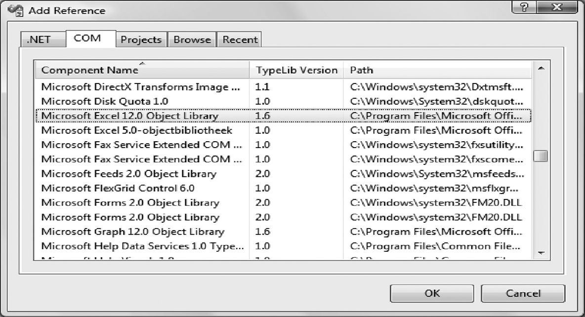
Figure 20.3 Adding a COM component
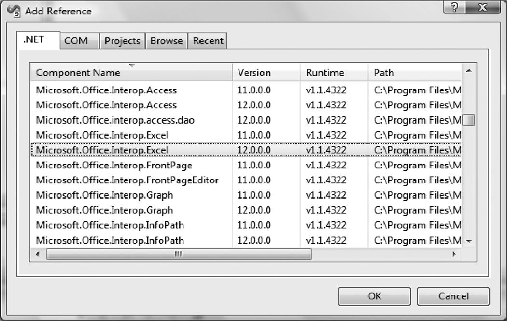
20.4 PRIMARY INTEROP ASSEMBLIES (PIA)
A number of Runtime Callable Wrappers are supplied by COM library vendors, for example Microsoft Office Primary Interop Assemblies. These assemblies are signed with a strong name and they can be placed in the GAC (Global Assembly Cache). To add a PIA to the project we select the .NET tab instead of the COM tab as seen in Figure 20.4. When a PIA is in the GAC, selecting from the COM tab will result in the assembly from the GAC being used (see Figure 20.4). Figure 20.5 displays the references that you should see in the C# project.
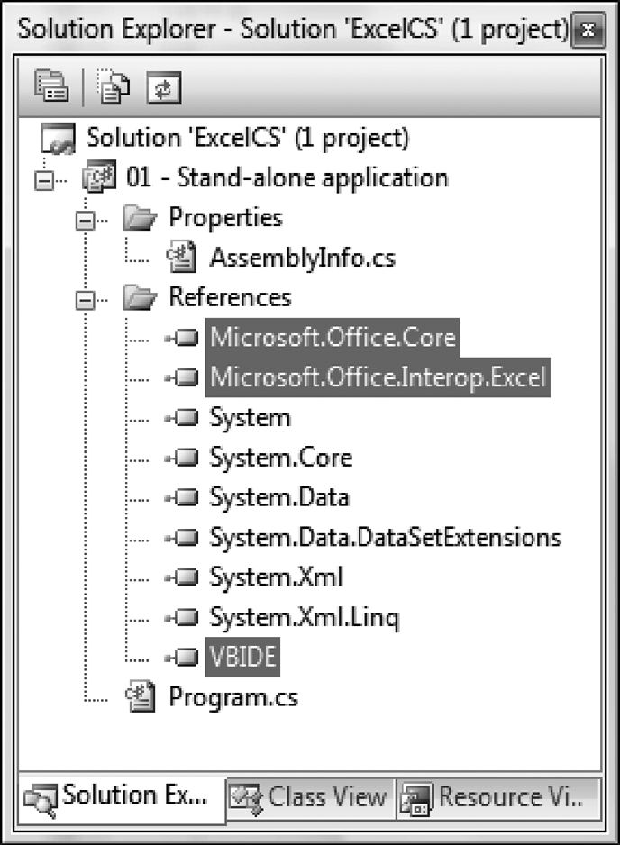
We now discuss some simple examples of how to access Excel objects from C#. First, we note that exception handling in COM and .NET behaves differently; in COM functions return an HRESULT 32-bit integer. It has a number of values, such as:
S_OK: the method succeeded. E_ABORT: the operation was aborted because of an unspecified error. and many more.
The RCW object translates known HRESULT errors to equivalent .NET exception objects and unknown HRESULT errors to System.Runtime.InteropServices.COMException. As C# developer, you do not have to worry about COM exceptions as they will be automatically converted to .NET exceptions by the CLR.
It is possible to access Excel from a standalone C# application. We take a ‘101’ example that we created as a Console project (a Windows project is also possible). We add the Excel PIA to the project’s references. Then we create an Excel application object and we perform some calculations on ranges and cells in the newly created sheet. The code should be understandable if you know VBA or VB.NET:
using System; using System.Windows.Forms; using Excel=Microsoft.Office.Interop.Excel;
namespace Datasim {
class Program {
static void Main(string[] args) {
// Create an instance of Excel and show it. Excel.Application xlApp=new Excel.ApplicationClass(); xlApp.Visible=true;
// Do some application code here // Create new Excel Workbook with one worksheet. xlApp.SheetsInNewWorkbook = 1; Excel.Workbook wb = xlApp.Workbooks.Add(Type.Missing); // Set worksheet object to first worksheet in workbook. Excel.Worksheet ws = wb.Worksheets[1] as Excel.Worksheet;
// Change the name of the worksheet. ws.Name = "MyWorksheet";
// Fill the worksheet. int i; for (i = 1; i < 10; i++) {
(ws.Cells[i,1] as Excel.Range).Value2 = String.Format("Row {0}", i); (ws.Cells[i,2] as Excel.Range).Value2 = i;
} // Fill total row. (ws.Cells[i,1] as Excel.Range).Value2 = "Total";
}
} }
(ws.Cells[i,2] as Excel.Range).Formula = String.Format("=Sum(B1:B{0})",i-1); // Make first column bold and draw line before total row. ws.get_Range(String.Format("A1:A{0}", i), Type.Missing).Font.Bold = true; ws.get_Range(String.Format("A{0}:B{1}", i - 1, i - 1), Type.Missing)
.Borders[Excel.XlBordersIndex.xlEdgeBottom].LineStyle = Excel.XlLineStyle.xlContinuous;
// Close Excel. xlApp.Quit();
20.5.2 Charts We can create charts in two ways:
By embedding them in a worksheet. By placing the chart in its own worksheet.
Some examples of creating charts are:
// Create chart on separate worksheet and format the chart using the chart wizard. Excel.Chart ch=wb.Charts.Add(Type.Missing, Type.Missing, Type.Missing, Type.Missing)
as Excel.Chart;
ch.ChartWizard(ws.get_Range(String.Format("A1:B{0}", i), Type.Missing), Excel.XlChartType.xlCylinderCol, 1, Excel.XlRowCol.xlColumns, 1, 0, true, "Chart with values of each row", "Rows", "Value", "Extra Title");
// Create chart on same worksheet and format the chart using the chart wizard. ch=(ws.ChartObjects(Type.Missing) as Excel.ChartObjects).Add(150, 0, 400, 400).Chart; ch.ChartWizard(ws.get_Range(String.Format("A1:B{0}", i), Type.Missing),
Excel.XlChartType.xl3DColumn, 1, Excel.XlRowCol.xlColumns, 1, 0, true, "Chart with values of each row", "Rows", "Value", "Extra Title");
Finally, it is possible to save workbooks as follows:
try {
wb.SaveAs("MyWorkbook.xls", Type.Missing, Type.Missing, Type.Missing,Type.Missing, Type.Missing, Excel.XlSaveAsAccessMode.xlNoChange, Type.Missing, Type.Missing, Type.Missing, Type.Missing, Type.Missing);
} catch (System.Runtime.InteropServices.COMException) {
// user cancelled save. }
}
20.5.3 Using Excel with C++/CLI
C++/CLI is Microsoft’s managed version of C++ which we discussed in Chapter 11. It is integrated into the .NET framework. This means that we can call C# code from C++/CLI and vice versa. It is also possible to freely mix native C++ code and C++/CLI code. This makes C++/CLI a useful language when we wish to let the .NET and non-.NET worlds communicate with each other.
Here is an example of how to start Word and Excel from C++/CLI.
using namespace System; // Add reference in project namespace Word=Microsoft::Office::Interop::Word; namespace Excel=Microsoft::Office::Interop::Excel;
void main() {
// Object to pass as missing argument. Not the same as 'null' Objectˆ objMissing=System::Reflection::Missing::Value;
try {
// Create instance of Word and show it Word::Applicationˆ app=gcnew Word::ApplicationClass(); app->Visible=true;
Excel::Applicationˆ app2=gcnew Excel::ApplicationClass(); app2->Visible=true;
}
// Add document Word::Documentˆdoc=app->Documents->Add(objMissing, objMissing, objMissing,
objMissing);
// Set text of the document Word::Rangeˆ range=doc->Content; range->default="Datasim Education BV";
} catch(System::Runtime::InteropServices::COMExceptionˆ ex) {
Console::WriteLine("HRESULT: {0}\n{1}", ex->ErrorCode, ex->Message); }
An Excel add-in is an external program that is loaded by Excel. The add-in can perform operations on the data in Excel. We usually invoke an add-in by clicking a menu or button that we install in Excel or by calling an add-in defined worksheet function (User Defined Function (UDF)). The main use cases when working with add-ins are:
Creating the code for the add-in. Installing and registering the add-in. Testing and debugging the add-in. Using and running the add-in with Excel.
Several kinds of add-ins are discussed here. The choice of language in which we can develop add-ins includes C#, VB.NET, C, unmanaged C++, C++/CLI and VBA. The focus in this book is on creating several kinds of add-ins in C# that we discuss in subsequent chapters.
The types of Excel add-ins are:
XLL add-in. XLA add-in.
COM add-in. Automation add-in. VSTO (Visual Studio Tools for Office) add-in.
We now give an overview of each of the above options.
This is oldest form of add-in (Excel 95) that allows the development of software that communicates with Excel using a C API. In general, we write the add-in in C which is then compiled to a DLL with an .XLL file extension. The consequence is that the resulting functions are treated as if they were native worksheet functions; they are very fast.
In order to write an XLL add-in you need to download the Microsoft Excel (2007) SDK into the Visual Studio directories. A discussion of XLL is given in Bovey et al. 2009.
This option has been available since Excel 97 and it uses the Excel Automation Object Model. We write XLAs in Visual Basic. An XLA add-in is a workbook that is saved under the .XLA extension. The code is interpreted which means it will run more slowly than compiled code. Since the code is written in VBA the add-in cannot be called from C# or other .NET languages. We can, however, call loaded COM add-ins from VBA via the Application.COMAddIns collection and use the functionality of an Automation add-in by using it as a regular COM component from VBA.
A discussion of XLAs can be found in Walkenbach 2007 and Bovey et al. 2009.
This option has been available since Excel 2000. In this case the add-in is a COM object that implements the IDTEXtensibility2 interface (we discuss this interface in Section 20.7). The add-in can be written in any language that supports the creation of COM objects. It uses the Excel Automation Object Model as discussed in Section 20.2. We can use the same COM add-in for several applications, for example an add-in that works with both Powerpoint and with Word. COM add-ins cannot be used for worksheet functions, at least not directly. We discuss how to create COM add-ins in Chapter 22.
This feature has been available since Excel XP (Excel 2002). It can be used for the creation of worksheet functions only. An Automation add-in is a COM object that supports Automation using the IDispatch interface. This interface exposes the Automation protocol and it derives fromthebasicCOMinterfaceIUnknown(whosemethodsareQueryInterface, AddRef and Release) and it has the four additional methods:
GetTypeInfoCount: retrieve the number of type information interfaces that an object provides (this is either 0 or 1). GetTypeInfo: get the type information for an object.
GetIDsOfNames: map method names to a corresponding set of integer DispIds. A DispId is an attribute that we use to mark methods and properties in order to expose them to COM. Invoke: this method provides access to properties and methods exposed by an object.
The IDispatch interface exposes objects, methods and properties to programming tools and other applications that support Automation. COM components implement the IDispatch interface to enable access by Automation clients such as Visual Basic and C#. In general, this interface allows clients to find out those properties and methods that are supported by an object at run-time. It also provides the necessary information that enables us to invoke these methods and properties.
An Automation add-in can be written in any language that supports the creation of Automation objects. The exposed public methods are callable as worksheet functions. Optionally, the add-in can implement the IDTExtensibility2 interface. In that case a single add-in can be both an Automation add-in and a COM add-in.
We discuss how to create Automation add-ins in Chapter 21. We note that it is possible to create Automation and COM add-ins using C++. However, it takes slightly more effort than what is needed in C#.
VSTO is a toolset for creating managed solutions for the Office System. We can use C#, VB.NET to develop applications with VSTO using the Visual Studio IDE. It consists of Office templates and other templates, including:
SharePoint templates: the so-called Excel Services (Excel Web Access, Excel Web Services and Excel Calculation) and other services. Office PerformancePoint Server: this server is built on SQL Server. Application-centric project templates: for example, Excel 2007 Add-Ins, InfoPath 2007 Add-In, Word 2007 Add-in and PowerPoint 2007 Add-In. In contrast to managed COM add-ins, VSTO add-ins only target the specific host application they are designed for.
Document-centric project templates: Excel 2007 Template, Excel 2007 Workbook, Word 2007 Template and Word 2007 Document. There are two kinds of solutions in this category, namely VSTO templates and VSTO document project templates.
Developing applications in VSTO is similar to how we create COM add-ins. But VSTO is a development platform that is optimised to work with Office and thus can profit from the security model of the .NET framework. VSTO solutions use the same layers as do managed COM add-ins but with two additional layers for the VSTO solution and the VSTO run-time.
Other differences are:
VSTO add-ins use a generic VSTO loader instead of COM shims for each managed COM add-in (a shim is a small library that transparently adapts an API to suit a newer version of a piece of software, for example. An example of a shim would be an API that allows us to run Windows applications on the linux operating system.) The VSTO connection class has the events Startup and Shutdown only. We do not need to explicitly set references to the host application when creating a VSTO solution, in contrast to managed COM add-ins.
VSTO add-ins directly reference the Interop Excel Application object (that is Microsoft.Office.Interop.Excel.Application) whereas you need to reference Excel when creating managed COM add-ins.
We now discuss the steps required to create a VSTO add-in. The example is very simple and it involves printing string information in message boxes when Excel starts and shuts down. We create the project in VB.NET instead of C# just to show how to use another language:
a. Create a new Office project and select the Excel 2007 Add-in type. Give the project a name.
b. Edit the file ThisAddin.vb and add code that implements the startup and shutdown events: Imports System.Windows.Forms Public Class ThisAddIn
Private Sub ThisAddIn_Startup(ByVal sender As Object, ByVal e As System.EventArgs) Handles Me.Startup
MessageBox.Show("Hello Wild") End Sub Private Sub ThisAddIn_Shutdown(ByVal sender As Object, ByVal e As System.EventArgs) Handles Me.Shutdown MessageBox.Show("Ciao Ciao")
End Sub End Class
c. Build and run the project; Excel will start up and will display its message boxes.
VSTO is a new development platform and it allows access to Windows Forms controls and the libraries in the .NET framework.
Each COM add-in must implement this interface. It allows us to connect to and disconnect from Excel. It has a number of methods, two of which we implement:
OnConnection(): this event is called by Excel after loading the add-in. As method, it can contain code that installs a menu or command button. OnDisconnection(): this event is called before Excel unloads the add-in. In general, this is where the already installed menus are removed.
In general, Excel expects a COM/Automation object with which to communicate. In this case it cannot call a C# assembly directly. In order to resolve this mismatch the .NET runtime automatically generates a so-called COM Callable Wrapper (CCW) proxy object around the C# code. We shall discuss this and other wrappers in more detail in later chapters.
In this section we discuss a small package to display data in Excel. Daniel Duffy wrote the original package in C++ and we have ported it to C#. The two main use cases are:
Exporting data structures to Excel cells. Populating data structures (for example, vectors and matrices) with values from Excel cells.
This is the basic class that allows us to display data in Excel. Its main responsibility is to connect to Excel and to chart data in Excel. The features are:
Display a single polyline. Display a set of polylines. Display a matrix.
Each of these options is implemented as a method. In general, each method allows us to give a chart name and names of the data for the x and y axes. The structure of the class is:
class ExcelDriver {
private Excel.Application pExcel; private long curDataColumn; // Constructor public ExcelDriver() {
if ( pExcel == null ) {
pExcel = new Excel.Application();
} curDataColumn = 1;
} // etc.
}
We now discuss the functionality in this class. We take representative examples. First, we define graph titles, independent and dependent abscissa arrays and we then display the resulting polyline in Excel:
// Start up Excel and make it visible ExcelDriver ex = new ExcelDriver(); ex.MakeVisible(true);
string chartTitle = "My Chart"; string xTitle = "x axis"; string yTitle = "y axis";
// 1. Display a single polyline Vector<double> xarr = new Vector<double>(new double[] { 0.1, 1, 4, 9, 20, 30 }, 0); Vector<double> yarr = new Vector<double>(
new double[] {0.081, 0.07, 0.044, 0.07, 0.04, 0.03 }, 0); try
{
ex.CreateChart<double>(xarr, yarr, chartTitle, xTitle, yTitle);
} catch (Exception e) {
Console.WriteLine(e.Message); // !!!! ERRORS DISPLAYED ON CONSOLE }
The second example is to define a set of polylines and to display them in Excel. The code to do this is:
// 2. Display multiple polylines Vector<double> yarr2 = new Vector<double>(
new double[] { 1.081, 2.07, 1.044, 2.07, 1.04, 1.03 }, 0); Vector<double> yarr3 = new Vector<double>(
new double[] { 2.081, 0.07, 2.044, 1.07, 2.04, 2.03 }, 0);
List<String> labels = new List<String>(); labels.Add("x1"); labels.Add("x2"); labels.Add("x3");
List<Vector<double>> vectorList = new List<Vector<double>>(); vectorList.Add(yarr); vectorList.Add(yarr2); vectorList.Add(yarr3);
try {
ex.CreateChart<double>(xarr, labels, vectorList, chartTitle, xTitle, yTitle);
} catch (Exception e) {
Console.WriteLine(e.Message); }
Finally, we show how to create a matrix, label its rows and columns using human-readable names and display all the information in Excel:
// 3. Display a matrix; example from scenario analysis
// Security vector: each i-element indicates the value of the security in the i-scenario // Market Value of Security1 in the first scenario is 113, // in the second scenario is 89, in the third scenario is 65, and so on for other // securities.
Vector<double> Security1 = new Vector<double>(new double[] { 113, 89, 65 });
Vector<double> Security2 = new Vector<double>(new double[] { 168, 97, 34 });
Vector<double> Security3 = new Vector<double>(new double[] { 67, 93, 145 });
Vector<double> Security4 = new Vector<double>(new double[] { 34, 56, 63 });
Vector<double> Security5 = new Vector<double>(new double[] { 100, 100, 100 });
// Matrix 'mkt' is the matrix of securities vector NumericMatrix<double> mkt = new NumericMatrix<double>(3, 5);
mkt.Column(1, Security1); mkt.Column(2, Security2); mkt.Column(3, Security3); mkt.Column(4, Security4); mkt.Column(5, Security4);
List<String> rowLabels = new List<String> (); rowLabels.Add("r1"); rowLabels.Add("r2"); rowLabels.Add("r3"); List<String> columnLabels = new List<String>();
columnLabels.Add("c1"); columnLabels.Add("c2"); columnLabels.Add("c3"); columnLabels.Add("c4"); columnLabels.Add("c5");
try {
string name = "Matrix display"; ex.AddMatrix<double>(name, mkt, rowLabels, columnLabels);
} catch (Exception e) {
Console.WriteLine(e.Message); }
You can run the code to see how the data are displayed in Excel. In a later section we shall see how to make the code even easier to use.
In the previous section we showed how to create vector and matrix data and then display them in Excel. There is no limit to the number of data structures than can be displayed in Excel. Most of the mapping machinery takes place by using the functionality in the Excel object model itself. We take an example of a vector and show how to get its data into Excel:
// Writes label and vector to cells in vertical direction. void ToSheetVertical<T>( Excel.Worksheet pWorksheet, long sheetRow, long sheetColumn,
string label, Vector<T> values ) {
// First cell contains the label. Excel.Range item = ( Excel.Range )pWorksheet.Cells[ sheetRow, sheetColumn ]; SetPropertyInternational( item, "Value2", label ); sheetRow++;
// Next cells contain the values. for( int i = values.MinIndex; i <= values.MaxIndex; i++ ) {
item = ( Excel.Range )pWorksheet.Cells[ sheetRow, sheetColumn ]; SetPropertyInternational( item, "Value2", values[ i ] ); sheetRow++;
} }
Here we see that the code first initialises the label with a string value. Then the vector values are displayed in a vertical regime.
We have created some extra functionality to augment the methods in ExcelDriver, for example:
Displaying associative matrices. Displaying tensors (arrays of matrices). Displaying lattice structures.
The essential class interface of ExcelMechanisms is:
class ExcelMechanisms {
private static ExcelDriver excel;
static ExcelMechanisms() { // This static constructor ensures that only one
// instance of Excel is started.
excel = new ExcelDriver(); excel.MakeVisible( true );
} public ExcelMechanisms() { } // etc.
}
The main methods in ExcelMechanisms are:
// Print a list of Vectors in Excel. public void printOneExcel<T>( Vector<T> x, Vector<T> functionResult,
string title, string horizontal, string vertical, string legend )
// Print a list of Vectors in Excel. public void printInExcel<T>( Vector<T> x, List<string> labels,
List<Vector<T>> functionResult, string title, string horizontal, string vertical )
// Print the vector that is the difference of two vectors public void printDifferenceInExcel<T>( Vector<T> x, Vector<T> y1,
Vector<T> y2, string title, string horizontal, string vertical, string legend )
// Print a two-dimensional array (typically, one time level) public void printMatrixInExcel<T>( NumericMatrix<T> matrix,
Vector<T> xarr, Vector<T> yarr, string SheetName )
// Print a two-dimensional associative array (typically, one time level); // Recall: row, column and value parameters public void printAssocMatrixInExcel<R, C, T>(AssocMatrix<R, C, T> matrix, string SheetName)
// Print the matrix that is the difference of two matrices public void printMatrixDifferenceInExcel<T>( NumericMatrix<T> matrix1,
NumericMatrix<T> matrix2, Vector<T> xarr, Vector<T> yarr, string SheetName )
// Print an array of matrices public void printTensorInExcel<T>( Tensor<T> tensor )
// Print an array of matrices public void printTensorInExcel<T>( Tensor<T> tensor, Vector<T> xarr,
Vector<T> yarr, string SheetName )
We give the code in the case of the binomial lattice model discussed in Chapter 9. The code is distributed between ExcelDriver and ExcelMechanisms. The main method in ExcelMechanisms is:
public void printLatticeInExcel( Lattice<double> lattice, Vector<double> xarr,
string SheetName) {
List<string> rowlabels = new List<string>(); for (int i = xarr.MinIndex; i <= xarr.MaxIndex; i++) {
rowlabels.Add(xarr[i].ToString());
} excel.AddLattice(SheetName, lattice, rowlabels);
}
public void AddLattice(string name, Lattice<double> lattice, List<string> rowLabels) {
try {
// Add sheet. Excel.Workbook pWorkbook; Excel.Worksheet pSheet; if (pExcel.ActiveWorkbook == null) {
pWorkbook = (Excel.Workbook)InvokeMethodInternational(pExcel.Workbooks,
"Add", Excel.XlWBATemplate.xlWBATWorksheet); pSheet = (Excel.Worksheet)pWorkbook.ActiveSheet;
} else {
pWorkbook = pExcel.ActiveWorkbook; pSheet = (Excel.Worksheet)InvokeMethodInternational(pWorkbook.Worksheets,
"Add", Type.Missing, Type.Missing, 1, Type.Missing);
} pSheet.Name = name;
// Add row labels + values. int sheetColumn = 1; int sheetRow = 1;
}
for (int i = lattice.MinIndex; i <= lattice.MaxIndex; i++) {
Vector<double> row = lattice.PyramidVector(i); ToSheetHorizontal<double>(pSheet, sheetRow, sheetColumn, rowLabels[i],row); sheetRow++;
}
} catch (IndexOutOfRangeException e) {
Console.WriteLine("Exception: " + e); }
We have seen an example of use in Chapter 9. We have included the code here for completeness.
Regarding exception handling, we focus on errors that are caused by the developer, in general incorrectly sized or incompatible arrays. A typical example is when we display a matrix in which there is a mismatch between the lengths of the different input structures:
public void AddMatrix<T>( string name, NumericMatrix<T> matrix,
List<string> rowLabels, List<string> columnLabels ) {
try {
// Check label count vs. matrix. if( matrix.Columns != columnLabels.Count ) {
throw ( new IndexOutOfRangeException( "Count mismatch between # matrix columns and # column labels" ) );
} if( matrix.Rows != rowLabels.Count ) {
throw ( new IndexOutOfRangeException( "Count mismatch between # matrix rows and # row labels" ) );
} // etc.
} catch( IndexOutOfRangeException e ) {
Console.WriteLine( "Exception: " + e ); }
}
We note that the error message is displayed on the Console although it would not take much programming effort to display the error message directly in Excel itself.
WegivesomeexamplestoshowhowtousetheExcelvisualisationsoftware.Youcancustomise the code to suit your own needs.
The first example shows how to build a simple lattice and display it in Excel (notice that we create binomial and trinomial lattices and we display lattice2 in Excel) :
using System; class TestBinomialExcel {
public static void Main() {
int typeB = 2; // Binomial Lattice Type int typeT = 3; // Trinomial Lattice Type
int depth = 4; // Number of periods of time double val = 4.0; Lattice<double> lattice1 = new Lattice<double>(depth, typeB, val);
// Examining the vector at base of lattice Vector<double> base1 = lattice1.BasePyramidVector(); Vector<double> base2 = lattice2.BasePyramidVector();
// Print columms of lattice for (int j = lattice1.MinIndex; j <= lattice1.MaxIndex; j++) {
lattice1.PyramidVector(j).print();
} string s = Console.ReadLine(); // Arrays int startIndex = lattice1.MinIndex; Vector<double> xarr = new Vector<double>(depth + 1, startIndex); xarr[xarr.MinIndex] = 0.0; double T = 1.0; int NT = 10; double delta_T = T / NT; for (int j = xarr.MinIndex + 1; j <= xarr.MaxIndex; j++) {
xarr[j] = xarr[j - 1] + delta_T;
} Console.WriteLine(base1.Size); Console.WriteLine(base2.Size); ExcelMechanisms exl = new ExcelMechanisms(); try {
} catch (Exception e) {
Console.WriteLine(e); }
} }
The second example displays the results of the ADE method discussed in Chapter 10 and in Appendix 3:
using System; using System.Collections.Generic; using System.Reflection;
class BSTestMain {
public static void Main() {
// Create Option // Option myOption = new OptionGUIFactory().CreateOption(); // Option myOption = new OptionConsoleFactory().CreateOption(); Option myOption = new Option();
// Create Implementation BSIBVPImp bsImp = new BSIBVPImp(myOption);
// B. Finite Difference Schemes int J = 200; int N = 200;
Range<double> rangeX = new Range<double>(0.0, myOption.FarFieldCondition); Range<double> rangeT = new Range<double>(0.0, myOption.ExspiryDate);
// Create Explicit FDM Solver IBVPFDM fdm = new ADE(new IBVP(bsImp, rangeX, rangeT), N, J);
} }
ExcelMechanisms exl = new ExcelMechanisms(); NumericMatrix<double> sol = fdm.result(); try {
} catch (Exception e) {
Console.WriteLine(e); }
The final example is concerned with interpolation and rate curve as discussed in Chapter 13. The code is:
using System; using System.Collections.Generic; using System.Linq; using System.Text;
namespace Interpolator {
class Program {
static void Main() {
InterpolationExample();
} static public void InterpolationExample() {
ExcelMechanisms exl = new ExcelMechanisms(); // I Create initial t and r arrays. Vector<double> t = new Vector<double>(
new double[] { 0.1, 1, 4, 9, 20, 30 }, 0); Vector<double> r = new Vector<double>(
new double[] { 0.081, 0.07, 0.044, 0.07, 0.04, 0.03 }, 0);
// Compute log df Vector<double> logDF = new Vector<double>(r.Size, r.MinIndex); for (int n = logDF.MinIndex; n <= logDF.MaxIndex; ++n) {
logDF[n] = Math.Log(Math.Exp(-t[n] ∗ r[n])); }
// II Hyman interpolator HymanHermiteInterpolator_V4 myInterpolatorH =
new HymanHermiteInterpolator_V4(t, logDF);
int M = 299; Vector<double> term = new Vector<double>(M, 1); term[term.MinIndex] = 0.1;
double step = 0.1; for (int j = term.MinIndex + 1; j <= term.MaxIndex; j++) {
term[j] = term[j - 1] + step; }
// III Compute interpolated values Vector<double> interpolatedlogDFH = myInterpolatorH.Curve(term); exl.printOneExcel<double>(term, interpolatedlogDFH,
"Hyman cubic", "t", "CS", "int logDF");
// IV Compute continuously compounded rate fom the ZCB Z(0,t), // using equation (3) Hagan and West (2008). Vector<double> rCompounded = new Vector<double>(interpolatedlogDFH.Size,
interpolatedlogDFH.MinIndex);
for (int j = rCompounded.MinIndex; j <= rCompounded.MaxIndex; j++) {
rCompounded[j] = -interpolatedlogDFH[j] / term[j];
} exl.printOneExcel<double>(term, rCompounded, "RCompound Hyman Cubic", "term",
"r cns compound", "r com");
// V Compute discrete forward rates using equation (6) // from Hagan and West (2008) Vector<double> f = new Vector<double>(rCompounded.Size, rCompounded.MinIndex); f[f.MinIndex] = 0.081;
} }
for (int j = f.MinIndex+1 ; j <= rCompounded.MaxIndex; j++) {
f[j] = (rCompounded[j] ∗ term[j] rCompounded[j - 1] ∗ term[j - 1]) / (term[j] - term[j - 1]);
} exl.printOneExcel<double>(term, f, "Hyman Cubic", "term", "discrete fwd",
"dis fwd"); }
The output from step III is shown in Figure 20.6.
WehavegivenanintroductiontotheExcelObjectModelandtohowitcanbeprogrammatically accessed using C# and other languages. We also gave a tour of the various kinds of Excel add-ins. A number of infrastructural techniques were also introduced that we shall need and use in later chapters. Finally, we introduced a simple package to display data in Excel.
Hyman cubic
0
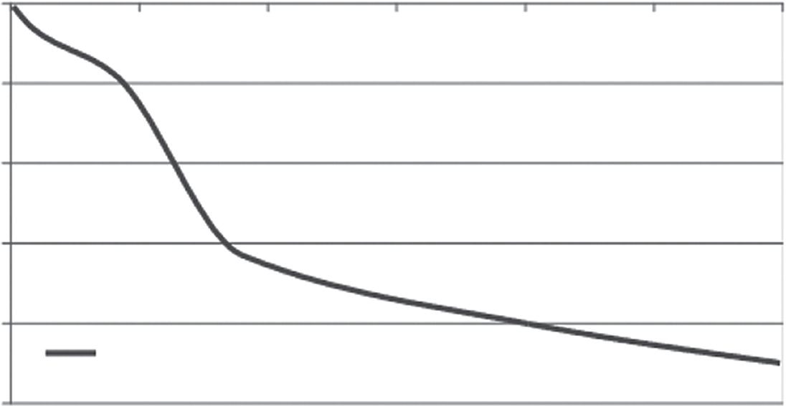
0 5 10 15 20 25 30
-0.2
-0.4
-0.6
-0.8
int logDF
-1
Figure 20.6 Curve drawing in Excel
1. Application Sending Output to Excel. In this exercise you create an application that calculates the values of a sine wave and
sends them to an Excel sheet. Then it should create a chart of the values in the sheet.
Start by creating a ‘Console Application’, adding the Excel Interop assemblies and creating an Excel application object and adding a workbook and worksheet as explained in Sections 20.4 and Subsection 20.5.1. Then calculate a range of sine values and store the value pairs in the sheet.
Finally, add a new line chart to the workbook by using the chart wizard as explained in Section 20.5.2.
2. Using the Excel Driver Class. Recreate the sine application but using the Excel Driver class instead of accessing Excel
directly. The Excel driver class is explained in Section 20.8.1. You can find the code for the Excel Driver class on the software distribution medium.
21
Excel Automation Add-ins |
In this chapter we discuss how to manipulate the objects in the Excel application object model. This is called Automation and it is a generic term that allows a host application (or automation client) to access the objects in a target application (or automation server). All the Office applications can be used as automation servers and in this chapter we concentrate on Excel.
We give a global overview of the design principles underlying Automation and we introduce and define a number of concepts before we actually create an Automation add-in. We describe the steps at a high level and we then present a number of examples. We have used these add-ins in applications in Chapters 12, 15, 16 and 17.
We conclude this chapter by discussing how to call Automation add-in functions from VBA.
COM (Component Object Model) is a technology that makes it possible for applications to interact with each other and to provide components that can be reused in several applications. COM components can be created and used in several programming languages that provide COM support. For example, a COM component could be written in C++ and used from VBA.
COM is the basis for several other technologies such as OLE2 (Object Linking and Embedding), Automation and ActiveX controls.
COM software implements its services as one or more COM objects. Each COM object implements one or more interfaces. Applications use a COM object via the interfaces it implements. Multiple COM objects can implement the same interface. For example, the Visual Basic GUI designer can manipulate any custom created ActiveX control on a form because it implements the standard interfaces defined for ActiveX controls.
In C# much of the underlying COM plumbing is hidden from the user. But as a C# programmer you still need to know COM concepts if you wish to create your own COM objects. COM interfaces, COM classes and other elements are identified by a GUID (Globally Unique Identifier). As the name implies, this is a unique ID that is generated by the Create GUID tool in Visual Studio. This tool uses the current time and characteristics of your system (e.g. network card MAC address) to ensure that the number is unique. This ID is thus used by clients to load the proper COM object and request an interface. In C# we specify a GUID for an interface or class by applying the Guid attribute. A GUID for an interface is called Interface ID (IID) and a GUID for a class is called Class ID (CLSID).
For humans the GUID is unreadable. Therefore a COM object also has a human readable name called Program ID (ProgID). Normally this name is used when programming. In C# a ProgID for a class is specified by applying the ProgID attribute. In C#, when not explicitly set, ProgIDs, CLSIDs and IIDs are automatically generated when a COM component is compiled. But it is better to set these explicitly since the generated GUIDs change when the assembly version changes.
COM objects are stored in a .dll or .exe file which is then loaded by the client. The location of the COM .dll can vary on each system. Therefore the location and other information such as the class IDs, interface IDs and program IDs are registered in the registry under the HKEY_CLASSES_ROOT key, HKEY_CLASSES_ROOT\CLSID key and HKEY_CLASSES_ROOT\Interface key. In C# a class/interface that is made COM visible is automatically registered in the registry when building the project if the Register for COM Interop project setting is on.
A COM component must at least implement the standard interface IUnknown. This interface determines how many clients are using the object by means of reference counting and it has a method to obtain a reference to other interfaces that the component implements. Clients start with this interface and through this interface these clients obtain a reference to the interface of the COM component they wish to use. In C# this mechanism is hidden from the user and it is automatically implemented. A COM component must expose its functionality using an interface. When we do not specify an interface for the COM component in C# it’s because a COM interface will be automatically generated.
In COM the interface functions are stored in a function pointer table called VTable. Thus, to call a certain function, the client must know the index of the function. That is why the interface must never change after its first release. Adding a new function might change the index of function, thus breaking old clients. When adding functionality a new interface should be added. New clients use the new interface while old clients still use the old interface.
To know which index a certain function has, COM uses type libraries. A type library describes all the functions, as well as each function’s parameters and indices in the library. A type library can be a separate file (.tlb) or embedded in an .exe or .dll file of the COM component. A client uses the type library to determine which interface and functions are supported and to which index they are mapped. In C# using a COM component as a reference to the type library is made by right clicking in the reference node in the project tree. In C# defining a COM component a type library will automatically be created. Looking up functions by index is called early binding.
Type libraries can also be registered in the registry and have their own GUID. With early binding we need a type library at compile time. But sometimes there is no type library available or we may use an interpreted (not compiled) language, for example VB Script. In that case the index of a function is not known at compile/development time. To make it possible for clients still to use the COM component, the COM component must implement the standard IDispatch interface. With this interface, the name of a function can be translated to a function index at runtime without the need for a type library. This form is called late binding. A disadvantage is that it is slower than early binding and that correctness cannot be verified at compile time. Thus, when calling a function that does not exist, a runtime error is generated. In C# we can use the ClassInterface attribute to specify if the IDispatch interface must be automatically implemented. Components that can be called directly via the VTable (early binding) and also implement the IDispatch interface for late binding are called components that implement a dual interface. Excel uses Automation add-ins by using the IDispatch interface.
One last note is realised by COM classes created with C#: .NET assemblies are not directly usable by COM clients but access to a .NET COM component concerning a proxy called COM Callable Wrapper (CCW) (see Figure 21.1). In practice the CCW is the mscoree.dll file that
Native W32 Code (Unmanaged) Managed Code
IUnknown
.NET Component |
|
COM Callable Wrapper
IMyInterface
COM Client
IDispatch
IMyInterface
.NET Client
Figure 21.1 COM Callable Wrapper
is registered in the registry for the COM component. The CCW intercepts COM calls and translates them and delegates them to the .NET component.
This concludes the short COM overview. For more details, see Rogerson 1997.
An Excel Automation add-in is a COM object supporting the IDispatch interface whose functions can be used as user-defined functions (UDF) in Excel.
We discuss the steps to be executed when we create an Automation add-in. In Sections 21.4 and 21.5 we discuss the complete code for two add-ins. The steps are: a) Create a Class Library project; give it a name and store it in a directory of your choice. b) Create the class that will contain the functions that we wish to expose in Excel. This class is derived from our general base class (called ProgrammableBase) that has methods to ensure that the component is registered as ‘Programmable’ in the registry. Excel can only use a COM object as an Automation add-in when the ‘Programmable’ sub-key is in the registry. This sub-key is not automatically created when registering the component but registration must be done manually. The code in the ProgrammableBase class takes care of this. The register and unregister functions are automatically called when the COM component is registered or unregistered because they are annotated with the ComRegisterFunction and ComUnregisterFunction attributes. Furthermore, the add-in class is made visible by exposing it as follows:
using System.Runtime.InteropServices; [ComVisible(true)]
Note that the ComVisible attribute can also be applied to an assembly. In that case it specifies whether types in the assembly are COM visible by default (true) or COM invisible by default (false). Applying the ComVisible attribute on a class or interface overrides the value set at assembly level.
The general class interface is:
public class Calculator: ProgrammableBase {
public double MyAdd(double v1, double v2) {
return v1+v2;
} // etc.
}
where ProgrammableBase is the class that adds the ‘Programmable’ key to the registry during registration so that Excel can use the component as an Automation add-in. You can reuse this class when developing your own Automation add-ins:
[ComVisible(true)] // Must be COM visible if subclass uses AutoDual option [ClassInterface(ClassInterfaceType.None)] // Doesn't need an interface public class ProgrammableBase {
[ComRegisterFunction()] public static void RegisterFunction(Type t) {
// Create the "Programmable" sub key. Microsoft.Win32.Registry.ClassesRoot.CreateSubKey(GetSubKeyName(t, "Programmable"));
}
}
[ComUnregisterFunction()] public static void UnregisterFunction(Type t) {
// Delete the "Programmable" sub key. Microsoft.Win32.Registry.ClassesRoot.DeleteSubKey(GetSubKeyName(t, "Programmable"));
} private static string GetSubKeyName(Type t, string subKeyName) {
return String.Format("CLSID\\{{{0}}}\\{1}", t.GUID.ToString().ToUpper(), subKeyName); }
c) COM classes must have a global unique identifier (GUID). In order to create a GUID identifier, go to the Tools menu and choose the Create GUID option. If you do not choose this option, the id will be automatically generated. It is usually better to specify the GUID explicitly:
[Guid("20A394D6-E63F-422a-8308-4776D5602A66")] // Explicit GUID
d) We need to create a ProgID. It is used by late binding clients (that implement interface IDispatch) and the default ProgID is NamespaceName.ClassName. Early binding clients do not use the ProgId but they use the type library in which as class is identified by the form AssemblyName.ClassName. You can override the default ProgID as follows: [ProgId("DatasimAddIns.CalculatorV1")] // Explicit ProgID
e) We decide which COM interfaces to generate: None: no interface is generated for the class. In that case we need to implement our own COM interfaces in order to expose functionality.
AutoDispatch (default): the interface IDispatch is generated for late binding only. AutoDual: in this case a dual interface is created for both late and early binding.
An example of use is:
[ClassInterface(ClassInterfaceType.AutoDual)] // Add-ins need a dual interface.
We have now completed our presentation of Automation add-ins creation.
We now discuss the first ‘101’ or ‘Hello World’ example. The add-in class contains simple methods foradding, subtracting,multiplyinganddividingnumbers. Thebodyofthesemethods is essentially a one-liner and in general the body would contain more compute-intensive code for algorithms such as option, bond pricing and yield curve construction, for example. You can thus use this code as a template for your applications. Since we are not implementing an interface we let C# generate the COM interface by using the ClassInterface attribute. It is better to create the interface in C# as shown in Section 21.5. The class interface is given by:
using System; using System.Runtime.InteropServices;
namespace Datasim {
[ComVisible(true)] [ProgId("DatasimAddIns.CalculatorV1")] [Guid("20A394D6-E63F-422a-8308-4776D5602A66")] [ClassInterface(ClassInterfaceType.AutoDual)] public class Calculator: ProgrammableBase {
public double MyAdd(double v1, double v2) {
return v1+v2; }
public double MySubtract(double v1, double v2) {
return v1-v2; }
public double MyMultiply(double v1, double v2) {
return v1*v2; }
public double MyDivide(double v1, double v2) {
return v1/v2; }
} }
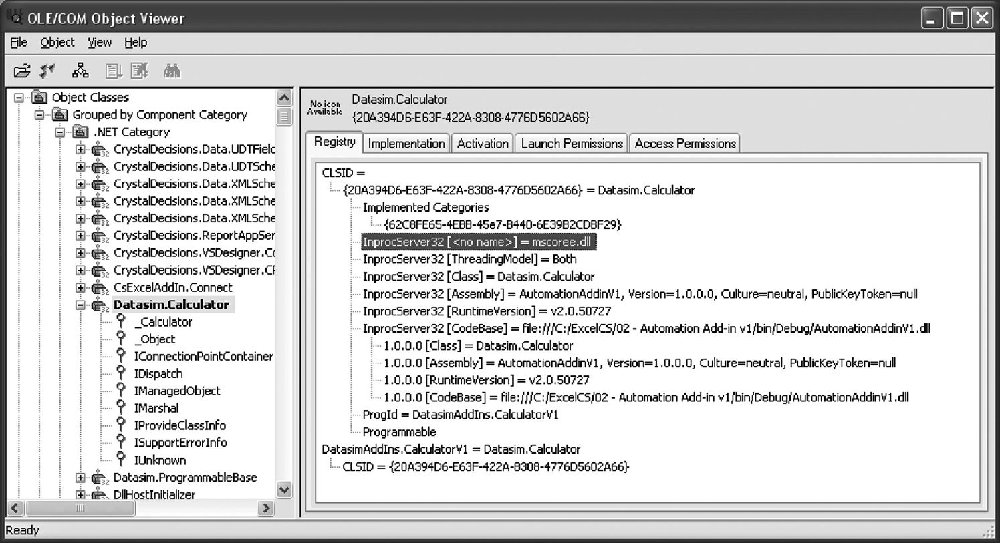
With the OLE/COM viewer you can see that the COM component is registered (see Figure 21.2). Note that the file that is registered for COM is mscoree.dll (the COM Callable Wrapper) but that the code base entry refers to the .NET dll.
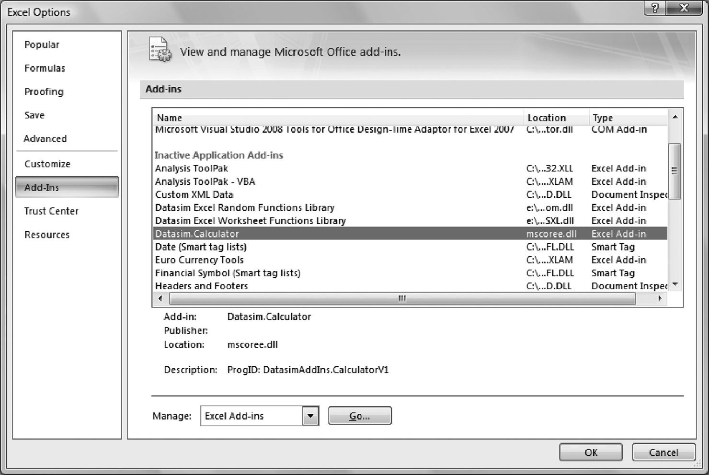
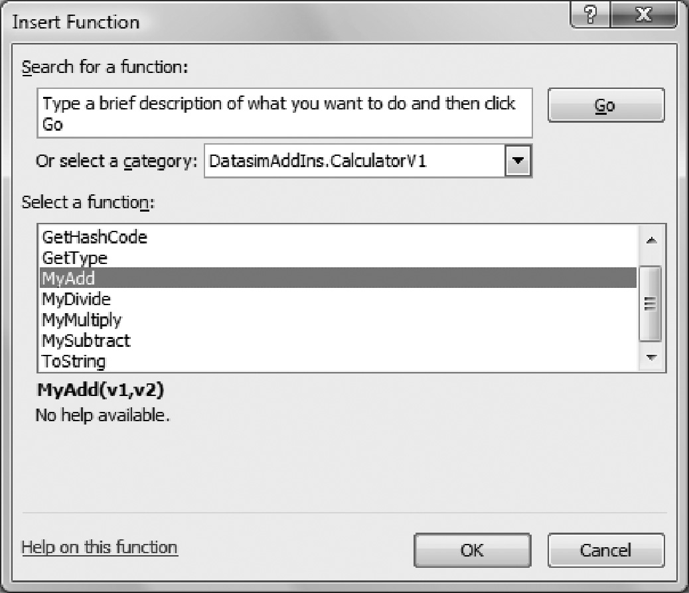
that you must locate the Automation add-in via its namespace.class name and not using the ProgID.
Second, we can use the function of the Automation add-in as a UDF on a worksheet by selecting the appropriate function (see Figure 21.4). Note that you also see the functions of the base class object.
Finally, we show a worksheet using the Automation add-in functions (see Figure 21.5).
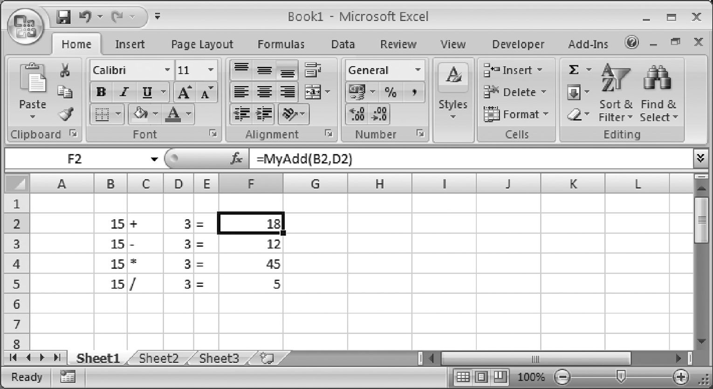
In this section we create a more flexible and generic version of the Calculator introduced in Section 21.4. Instead of hard-wired code for the mathematical operations we shall use an interface. This has the advantage that only the functions of the interface will be shown in the formula dialog and not the methods of object. In the previous version the COM interface was generated for us but this has the disadvantage that adding methods to the class changes the interface which gives version problems. Thus, in this version we improve the Automation add-in by creating the COM interface explicitly. Furthermore, we create new methods to sum the elements of a range and to produce random numbers. To this end, we first show the methods in the interface ICalculator. When using an interface the COM component is using a dual interface by default.
using System; using System.Runtime.InteropServices;
using Excel=Microsoft.Office.Interop.Excel; namespace Datasim {
[ComVisible(true)] [Guid("BDDEB409-1758-496e-9F23-BF4A34965AA7")] public interface ICalculator {
double MyAdd(double v1, double v2); double MySubtract(double v1, double v2); double MyMultiply(double v1, double v2); double MyDivide(double v1, double v2);
} }
double MySum(Excel.Range range); double MyRandom(); double MyRandomMax([Optional(), DefaultParameterValue(1.0)] double max);
We implement this interface by a C# class; the code for the first four methods is the same as the code in Section 21.4 except that we are now explicitly implementing the interface. We do not repeat all these functions here. The code for the remaining three methods is:
using System; using System.Runtime.InteropServices;
using Excel=Microsoft.Office.Interop.Excel; namespace Datasim {
[ComVisible(true)] [ProgId("DatasimAddIns.CalculatorV2")] [Guid("D93720F6-FCE8-4acb-A87F-88BC2B94FB2D")] [ClassInterface(ClassInterfaceType.None)] public class Calculator2: ProgrammableBase, ICalculator, Extensibility.IDTExtensibility2 {
// The Excel application. Used in volatile worksheet functions. private Excel.Application m_xlApp=null;
// The random number generator. private Random m_rnd=new Random();
// Implement the interface (explicit interface implementation). double ICalculator.MyAdd(double v1, double v2) {
return v1+v2;
} // Code for *, - and / here ... double ICalculator.MySum(Excel.Range range) {
// Get the number of rows and columns in the range. int columns=range.Columns.Count; int rows=range.Rows.Count;
}
// Temporary result. double tmp=0.0;
// Iterate the rows and columns. for (int r=1; r<=rows; r++) {
for (int c=1; c<=columns; c++) {
// Get the value of the current cell tmp+=(double)(range[r, c] as Excel.Range).Value2;
}
} // Return the result. return tmp;
{
// Notify Excel this is a volatile function. if (m_xlApp!=null) m_xlApp.Volatile(true);
}
// Return random number. return m_rnd.NextDouble();
{
// Notify Excel this is a volatile function. if (m_xlApp!=null) m_xlApp.Volatile(true); // Return random number between 0 and max. return m_rnd.NextDouble()*max;
} // ...
} }
We also see that Calculator2 implements interface IDTExtensibility2 that we discuss in Chapter 22, Here it is used to store a reference to the Excel application object which is needed to create volatile functions (discussed in Section 21.8).
Since we are now using an interface the ProgrammableBase class no longer needs to be COM visible. We thus set its COM visible attribute to false.
When we now use the Automation add-in in Excel we only see the functions from the interface.
COM uses VTables that contain indices to function pointers. With late binding an index to a method is determined at runtime while with early binding the index is determined at compiletime. In general, it is advisable never to change an interface after it has been created. This is because the VTable indices change when the function order in an interface changes. Instead, you should create a new interface when requirements change.
In some applications we wish to create and call functions with a variable number of arguments. Automation add-ins can have several arguments and Excel attempts to convert input to the expected argument types. In particular, we can use an Excel range object or a selected range (for example, B1:D4) as input. For example, here is code that sums the elements of a range:
double ICalculator.MySum(Excel.Range range) {
// Get the number of rows and columns in the range. int columns=range.Columns.Count; int rows=range.Rows.Count;
// Temporary result. double tmp=0.0;
}
// Iterate the rows and columns. for (int r=1; r<=rows; r++) {
for (int c=1; c<=columns; c++) {
// Get the value of the current cell tmp+=(double)(range[r, c] as Excel.Range).Value2;
}
} // Return the result. return tmp;
You call this function from Excel by typing the command MySum(r) where r is a range object, for example E6:F7. Note that since we are now using components from Excel (the Range object) we need to reference the Excel Interop library.
Normally UDFs behave as Excel built-in worksheet functions do, that is as a custom function that is recalculated only when it needs to be, that is only when one of its input arguments changes. It is possible to force functions to recalculate more frequently and this feature may be needed in applications that process real-time data or that perform random number generation, for example. To this end, we make a function volatile so that its output cell is re-evaluated each time the sheet is recalculated. In order to achieve this end, we must implement the following features:
a) The volatile worksheet function must call the Volatile() function in the current Excel.Application, for example:
double ICalculator.MyRandom() {
// Notify Excel this is a volatile function. if (m_xlApp!=null) m_xlApp.Volatile(true);
// Return random number. return m_rnd.NextDouble();
} double ICalculator.MyRandomMax(double max) {
// Notify Excel this is a volatile function.
if (m_xlApp!=null) m_xlApp.Volatile(true); // Return random number between 0 and max. return m_rnd.NextDouble()*max;
}
b) Pass the current Excel application when the add-in is loaded which is done by implementing the interface IDTExtensibility2. The C# project must reference the Extensibility Interop assembly. In particular, the OnConnection() method accepts and stores the Excel application. The other IDTExtensibility2 methods may have an empty implementation:
void Extensibility.IDTExtensibility2.OnConnection(object application,
Extensibility.ext_ConnectMode connectMode, object addInInst, ref Array custom) {
// Store reference to the Excel host application m_xlApp=application as Excel.Application;
}
COM supports optional function parameters and in such cases the missing parameters will have a default value. The .NET framework did not support optional parameters before version 4.0 and we use attributes to enable optional parameters for COM exposed functions. To this end, we use the Optional and DefaultParameterValue attributes:
public interface ICalculator {
double MyRandomMax([Optional(), DefaultParameterValue(1.0)] double max); }
and its implementation:
double ICalculator.MyRandomMax(double max) {
// Notify Excel this is a volatile function. if (m_xlApp!=null) m_xlApp.Volatile(true); // Return random number between 0 and max. return m_rnd.NextDouble()*max;
}
We have already discussed optional parameters and related issues in Section 5.13.
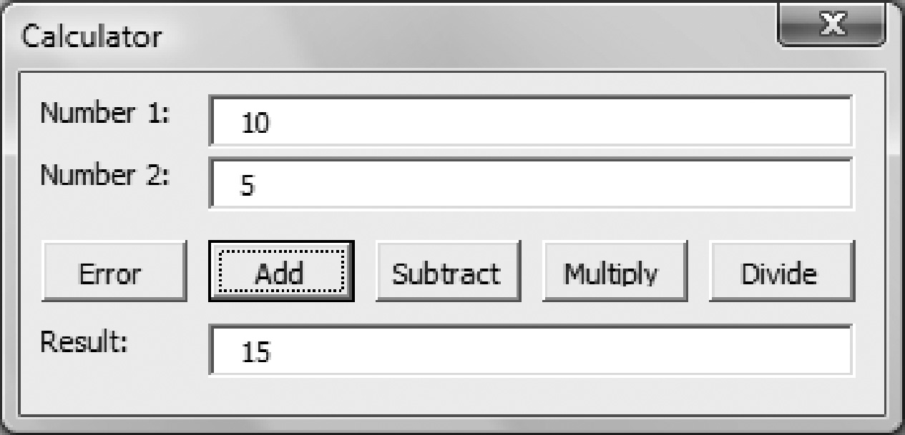
Figure 21.6 VBA dialog box
An Automation add-in provides user defined functions (UDF) that are called by Excel when we assign the functions to a cell. We can also use the Automation add-in also as a regular COM object. In this section we discuss how to call an Automation add-in from VBA and thus using it as a normal COM object instead of as an add-in. Calling a COM object from VBA uses early binding instead of late binding which in its turn allows compile-time type-checking and results in faster code. We need a type library that is generated when we enable ‘Register for COM Interop’ in the project settings. The GUID assembly attribute becomes the typelib GUID.
We take the example of a dialog box as shown in Figure 21.6. The user can input two numbers and push the button to perform the mathematical operation.
The result will be displayed in the Result text box. The corresponding VBA code is:
' Define calculator object (assembly.class name, not ProgID) Private calc As AutomationAddinV2.ICalculator
' Initialize the form Private Sub UserForm_Initialize()
calc = New AutomationAddinV2.Calculator2 End Sub ' Add two numbers Private Sub cmdAdd_Click() On Error Resume Next Dim n1 As Double, n2 As Double
n1 = CDbl(txtNumber1.Text) n2 = CDbl(txtNumber2.Text)
txtResult.Text = calc.MyAdd(n1, n2) End Sub ' Subtract two numbers Private Sub cmdSubtract_Click()
On Error Resume Next Dim n1 As Double, n2 As Double
n1 = CDbl(txtNumber1.Text) n2 = CDbl(txtNumber2.Text)
txtResult.Text = calc.MySubtract(n1, n2) End Sub ' Multiply two numbers Private Sub cmdMultiply_Click()
On Error Resume Next Dim n1 As Double, n2 As Double
n1 = CDbl(txtNumber1.Text) n2 = CDbl(txtNumber2.Text)
txtResult.Text = calc.MyMultiply(n1, n2) End Sub ' Divide two numbers Private Sub cmdDivide_Click()
On Error Resume Next Dim n1 As Double, n2 As Double
n1 = CDbl(txtNumber1.Text) n2 = CDbl(txtNumber2.Text)
txtResult.Text = calc.MyDivide(n1, n2) End Sub ' Generate an error Private Sub cmdError_Click()
On Error GoTo ErrorHandler ' Exception thrown in .NET component will be converted to the Err object calc.Error() Exit Sub
ErrorHandler: MsgBox("Error: " & Err.Number & " - Message: " & Err.Description & vbCrLf & _
"Source: " & Err.Source) End Sub
In this code block we use the COM component written in C# in VBA code.
We have given an introduction on how to create Automation add-ins that we can deploy as Excel worksheet functions. We discussed the lifecycle from the major concepts, through the steps needed to create an add-in to installing, registering and running an add-in. Finally, we showed how to use an Automation add-in as a regular COM component by calling the functions from VBA, how to work with ranges and how to implement COM interfaces in an add-in.
1. Automation Add-in In this exercise you will create an Automation add-in that exposes a UDF that calculates
the power of two numbers.
Start by creating a C# class project that will be exposed as a COM object so that it can be used as an Excel Automation add-in as described by the steps in Section 21.3. Use the various attributes to assign GUIDs and ProgIDs. Use the ProgrammableBase class so the Automation object is properly registered and also use an interface to declare the UDF functions as explained in Section 21.5. In the COM class and interface, add a function that accepts two doubles (m and n) and calculates m to the power of n and returns the result. Use the function as a UDF on an Excel sheet.
2. UDF Functions Accepting a Range Add a new function to the Automation add-in that accepts a range. The function should
iterate in the range. Calculate the average and return the result (working with ranges is explained in Section 21.7).
3. Volatile UDF Functions UDF functions that return a different value each time they are called random numbers,
stock prices, rates, etc. should be made as volatile functions. If not, then Excel will not re-evaluate the function. Thus, inside a volatile function you should call Volatile() on the Excel application object as explained in Section 21.8. To obtain the Excel application object, your Automation add-in should implement the IDTExtensibility2 interface and store the application object in the OnConnection() method.
In this exercise add a volatile UDF function that returns the current time. The cell that contains this UDF function should be updated each time you change something on the sheet. Try to remove the call to Volatile() and see if the cell is still updated after each change to the sheet.
4. Use COM object from VBA COM objects (thus also Automation add-ins) can be used from Excel VBA as explained
in Section 21.10. In that case you will use the COM object directly instead of as add-in. In an Excel sheet, open the VBA editor and add a reference to your Automation add-in. Add a VBA function that uses the COM object to calculate m to the power of n and display the result in a message box.
22
C# and Excel Integration COM Add-ins |
In this chapter we give an introduction to COM add-ins, what they are, how to create them and how to call them from Excel. A COM add-in is a COM component that implements a special interface called IDTExtensibility2 that is responsible for connecting to and disconnecting from Excel. The Excel client can call the add-in to compute some quantity or to transfer data between Excel and other applications, for example. It is important to note that both input to and output from the add-in are realised by Excel cells and ranges which we can access from C#.
We discuss the following topics in this chapter: The IDTExtensibility2 interface and its methods OnConnection() and OnDisconnection(). Which code we need to write when creating a COM add-in. Creating a COM add-in and using the Shared add-in wizard. Using COM add-ins with Excel. Initial examples. An introduction to Excel-DNA.
When describing the actual steps to create a COM add-in we avoid describing which dialog boxes, check boxes and buttons to use because these tend to change between versions of Visual Studio. Instead, we describe the high-level what and how steps that show how to create add-ins. The most up-to-date Microsoft documentation should be consulted. The authors have also created some visual demos on www.datasimfinancial.com.
We assume that the reader is familiar with the most important principles underlying COM. For a clear overview of this subject, refer to Rogerson 1997.
Before we jump into the mechanics of creating COM add-ins we give an overview of the design choices we make when developing such add-ins. In general, a typical add-in application needs input data which are then processed to produce output. We have some freedom of choice in this regard:
Input: we can use a combination of .NET Windows Forms (using text boxes, labels and buttons, for example) and indexible cell values. In the latter case we should have a worksheet loaded that contains initialised values of the cells which the add-in uses to locate input data. Oneimportantissueisthatweneedtocheckifthedataareavailabletoavoidarun-timeerror. Furthermore, we can interactively select an Excel range and access it programmatically.
Processing: this corresponds to the application code that we write in C#. Output: for add-ins we output data to a cell or a range of cells.
Having decided what we want and how we are going to do it we can then commence with the somewhat more mechanical process of creating COM add-ins for Excel. There are a number of steps involved in this process and, while they are not difficult to execute, it is easy to forget them. Some practice is needed.
Each COM add-in must implement this interface. It allows us to connect to and disconnect from Excel. It has a number of methods, two of which we implement:
OnConnection(): this event is called by Excel after loading the add-in. As method, it can contain code that installs a menu or command button, for example. OnDisconnection(): this event is called before Excel unloads the add-in. Typically, this is the place where the already installed menus are removed.
The COM add-in must register itself in the Windows Registry as a normal COM object. Furthermore, we must tell the Registry for which applications the add-in can be used. In this book we discuss add-ins for Excel only. When registering we also need to specify how the add-on is to be loaded by the host. The options are:
Do not load. Load when the host starts up. Load on demand. Load once at start up and after that on demand.
In this book we register the add-ins in such a way that they load when Excel starts up.
In general, the easiest way to create an Excel COM add-in is to use the Visual Studio Shared Add-in project type. The steps are:
a) Choose which language in which to create the add-in. We use C# (the other choices are VB.NET and Visual C++/ATL).
b) Choose which host applications the add-in will work with (we choose Excel).
c) Give the name and description of the add-in.
d) We check-box in the dialog screen the add-in to load when the host application loads and we have the option to make the add-in available to all users or to just one user.
e) At this stage the class Connect is generated, which we then customise. A typical example is:
namespace MyAddin3 {
using System; using Extensibility; using System.Runtime.InteropServices;
[GuidAttribute("1F884E20-7395-4293-8C8C-5FAAC04A874E"), ProgId("MyAddin3.Connect")] public class Connect : Object, Extensibility.IDTExtensibility2
{
public Connect() { }
public void OnConnection(object application, Extensibility.ext_ConnectMode connectMode, object addInInst, ref System.Array
custom) {
applicationObject = application; addInInstance = addInInst;
} public void OnDisconnection(Extensibility.ext_DisconnectMode disconnectMode,
ref System.Array custom)
{ //TBD }
public void OnAddInsUpdate(ref System.Array custom) { }
public void OnStartupComplete(ref System.Array custom) { }
public void OnBeginShutdown(ref System.Array custom) { }
private object applicationObject; private object addInInstance;
} }
In general, we implement the body of methods OnConnection() and OnDisconnection() to install a menu for the add-in and to remove the menu, respectively. The other three methods in the Connect class have optional bodies.
Compile and build the project.
f) We are almost done; the COM add-in was registered on the developer machine by the shared add-in wizard. On other machines the add-in will be registered on installation using the generated installation setup; no user management is needed.
g) Use the add-in from Excel from the Tools menu (Excel 2003) or from the add-in section of the ribbon menu (Excel 2007 and Excel 2010).
This completes the high-level description of the process. We now describe the customisation step e) in more detail by discussing some special and representative examples of use.
Before discussing specific add-ins we introduce some basic utility code. We are particularly interested in creating a menu item (button) that we can add to Excel at start up and that
we can remove from Excel when the add-in unloads. First, we need to use the following namespaces:
using System; using Office=Microsoft.Office.Core; using Excel=Microsoft.Office.Interop.Excel;
The code that adds a menu item to Excel is:
public static Office.CommandBarButton AddMenuItem(Excel.Application xlApp, Office.COMAddIn addin, string menuName, string menuItemCaption, string menuItemKey)
{
Office.CommandBar cmdBar; Office.CommandBarButton button;
}
// Make variable for 'missing' arguments. object missing=Type.Missing;
// Get the "menuName" menu. cmdBar=xlApp.CommandBars[menuName];
// If menu item not found then exit. if (cmdBar==null) return null;
// Try to get the "menuItemCaption" menu item. button=cmdBar.FindControl(missing, missing, menuItemKey, missing, missing)
as Office.CommandBarButton;
// If menu item not found, add it. if (button==null) {
// Add new button (menu item). button=cmdBar.Controls.Add(Office.MsoControlType.msoControlButton,
missing, menuItemKey, missing, missing) as Office.CommandBarButton;
// Set button's Caption,Tag,Style and OnAction properties. button.Caption=menuItemCaption; button.Tag=menuItemKey; button.Style=Office.MsoButtonStyle.msoButtonCaption;
// Use addin argument to return reference to this add-in. button.OnAction="!<" + addin.ProgId + ">";
} // Return the created menu item. return button;
The code for removing a menu item from Excel is:
public static void RemoveMenuItem(Excel.Application xlApp, Extensibility.ext_DisconnectMode removeMode, string menuName, string menuItemCaption)
{
// If user unloaded add-in, remove button. Otherwise, add-in is
// being unloaded because the application is closing;in that case // leave button as is. if (removeMode==Extensibility.ext_DisconnectMode.ext_dm_UserClosed) {
// Delete custom command bar button. xlApp.CommandBars[menuName].Controls[menuItemCaption].Delete(Type.Missing);
} }
We take an example of the use of the AddMenuItem() function. This can be seen as representative for a range of problems and we can reuse and modify code in such a way that it can be deployed in other applications. The Connect class has the following data members to store the menu and its properties:
// The Excel application. private Excel.Application m_xlApp;
// The menu item for our command. private Office.CommandBarButton m_menuItem;
// Constants for the menu item to create. private const string m_menuName="Tools"; private const string m_menuItemCaption="My C# COM Add-in2"; private const string m_menuItemKey="MyC#ComAddin";
Then the OnConnection() function can be used to install a menu in Excel as follows, for example:
public void OnConnection(object application, Extensibility.ext_ConnectMode
connectMode, object addInInst, ref System.Array custom) {
Office.COMAddIn cai=addInInst as Office.COMAddIn; cai.Object=this;
// Store the Excel host application. m_xlApp=application as Excel.Application;
// Now install menu item and add event handler. m_menuItem=AddInUtils.AddMenuItem(m_xlApp, cai, m_menuName, m_menuItemCaption,
m_menuItemKey); m_menuItem.Click+=new Office._CommandBarButtonEvents_ClickEventHandler
(MyMenuHandler); }
In this code example we create a menu button by initialising it with string information as well as the Excel and add-in objects. Finally, we add an event handler MyMenuHandler to the button. When the button is clicked the code on this handler will be called. This application code is in fact the heart of the add-in and you can customise it for each new kind of application that you create. We shall give an example of event handler code later in this chapter.
The full code is on the software distribution medium. You can customise it to suit your needs.
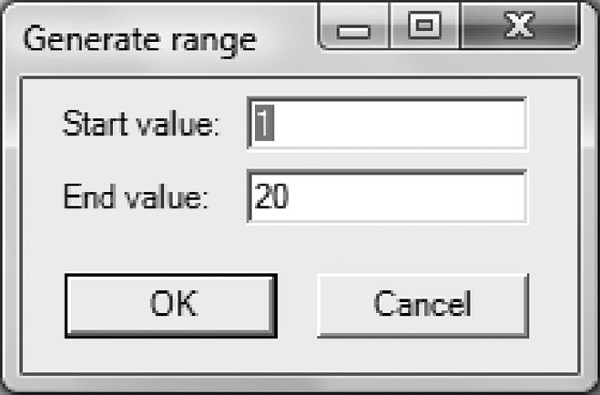
Figure 22.1 Windows Form asking for start and end values
using System.Windows.Forms;
namespace Datasim {
public partial class InputForm: Form {
public double StartValue; public double EndValue;
public InputForm(int count) {
InitializeComponent(); // Set the initial start- and end-value. StartValue=1.0; EndValue=(double)count;
txtStartValue.Text=StartValue.ToString(); txtEndValue.Text=EndValue.ToString();
}
private void InputForm_FormClosing(object sender, FormClosingEventArgs e) {
// If OK was pressed. if (this.DialogResult==DialogResult.OK) {
try {
// Parse the values. StartValue=Double.Parse(txtStartValue.Text); EndValue=Double.Parse(txtEndValue.Text);
} catch (Exception ex) {
}
// Cancel close when error MessageBox.Show("Error parsing start- or end-value. " +
"Must be a number.", ex.Message); e.Cancel=true;
} }
} }
Of course, it is possible to create other kinds of dialog boxes that we can use as input mechanisms. Unfortunately, a discussion of these is outside the scope of this book.
We are in a position to discuss a complete example. We first discuss the event handler code. In this case we select an (empty) Excel range and we fill it with interpolated data whose start and end values are retrieved from the dialog box as described in Section 22.6. The class interface of the Connect class is:
[GuidAttribute("FF970DFB-90DD-41D1-BFA4-D63532D51E25"), ProgId("COMAddIn.Connect")] public class Connect: Object, Extensibility.IDTExtensibility2 {
// The Excel application. private Excel.Application m_xlApp;
// The menu item for our command. private Office.CommandBarButton m_menuItem;
}
// Constants for the menu item to create. private const string m_menuName="Tools"; private const string m_menuItemCaption="My C# COM Add-in"; private const string m_menuItemKey="MyC#ComAddin";
The code for the event handler is:
private void MyMenuHandler(Office.CommandBarButton button, ref bool cancelDefault) {
// Get selected range and exit when nothing selected. Excel.Range range=m_xlApp.Selection as Excel.Range; if (range==null) {
MessageBox.Show("First select a few cells"); return;
} // Get the number of cells in the collection. int count=range.Cells.Count; // Show the dialog asking for start- and end-values. Datasim.InputForm frm=new Datasim.InputForm(count); if (frm.ShowDialog()==DialogResult.Cancel) return; // Fill selected range between start- and end-value. double startValue=frm.StartValue;
}
double endValue=frm.EndValue; double stepValue=count==1?0.0:(endValue-startValue)/(double)(count-1); for (int i=0; i<count; i++) {
(range.Cells[i+1, Type.Missing] as Excel.Range).Value2=startValue+(double)
i*stepValue; }
We see that this code initialises the selected range with computed values. The other methods of the Connect class are:
public Connect() { }
public void OnConnection(object application, Extensibility.ext_ConnectMode
connectMode, object addInInst, ref System.Array custom) {
// Store Excel host application. Exit if host not Excel. m_xlApp=application as Excel.Application; if (m_xlApp==null) return;
}
if (addInInst!=this) {
// Attach myself to the add-in object. Office.COMAddIn cai=addInInst as Office.COMAddIn; cai.Object=this;
// Now install menu item and add event handler. m_menuItem=AddInUtils.AddMenuItem(m_xlApp, cai, m_menuName,
m_menuItemCaption,m_menuItemKey); m_menuItem.Click+=new
Office._CommandBarButtonEvents_ClickEventHandler(MyMenuHandler); }
public void OnDisconnection(Extensibility.ext_DisconnectMode disconnectMode,
ref System.Array custom) {
AddInUtils.RemoveMenuItem(m_xlApp, disconnectMode, m_menuName, m_menuItemCaption); }
public void OnAddInsUpdate(ref System.Array custom) { }
public void OnStartupComplete(ref System.Array custom) { }
public void OnBeginShutdown(ref System.Array custom) { }
You can run this program and view the output in Excel.
The Shared Add-in Wizard registers the add-in in the Windows Registry when the project is created. Thus the add-in is not re-registered each time when building the project. Sometimes this can result in the add-in becoming unavailable at some later stage, for such reasons as:
The add-in project has been moved to another computer that is not the computer on which the add-in was developed. We removed the add-in from Excel using the Excel add-in manager. Registry corruption.
In this case we can re-register the add-in by running the generated setup project which sets
the appropriate Registry entries again. Typical errors are: Some add-ins expect an Excel sheet/range to be pre-selected. Calling the add-in when no range has been selected may result in unexpected behaviour. Some add-ins expect an Excel sheet to be initialised with data at certain cell positions. A good exercise when learning the mechanics of creating COM add-in is to start with
simple ‘101’ examples, get them up and running and understand how and why they work before moving to more complex applications.
Excel-DNA is an independent open-source project to integrate .NET into Excel. The ExcelDNA runtime is distributed under a licence that allows commercial use. The originator is Govert van Drimmelen.
Excel supports a number of different programming interfaces. Among these, the Excel C API (XLL) provides the most direct and fastest interface for the addition of high-performance worksheet functions. The C API is not directly accessible from managed code. The Excel-DNA runtime is an integration library that allows managed assemblies such as those created using C# to be integrated with Excel using the C API, providing user-defined worksheet functions, macros and user interface extensions.
The C API allows customisation of function registration that permits each exported function to set the function wizard category as well as function and argument descriptions. With ExcelDNA these customisations are made by adding .NET attributes to the function declarations in the C# code.
Excel versions 97 through 2010 can be targeted with a single add-in. Various Excel features are supported, including multi-threaded recalculation (Excel 2007 and later), registration-free RTD servers (Excel 2002 and later), customised ribbon interfaces and integrated Custom Task Panes (Excel 2007 and 2010) as well as offloading UDF computations to a Windows HPC cluster (Excel 2010). Integration with VBA code is facilitated by allowing classes defined in the managed library to be registered as COM classes and used from VBA code.
One of the advantages of integrating with Excel using the C API and XLLs is that addins may be loaded without prior registration, thus allowing such add-ins to work in reduced privilege environments. Excel-DNA extends this registration-free support to include RTD servers and user-interface extensions such as the ribbon interface. A single add-in can thus
expose user-defined functions, RTD servers and user interface extensions. No administrator privileges, registration or installation steps are needed in order to function.
The Excel-DNA runtime contains a small loader (the .xll) that loads the .NET runtime, then checks the configuration (.dna) file and accordingly loads the managed assemblies to be registered with Excel. These assemblies are inspected using the .NET Reflection API and the appropriate methods are registered with Excel (with custom information as set by the attributes). Ribbon or command bar interfaces are loaded, and RTD servers registered. Once the reflection-based inspection process and registration are complete, the resulting function exports are directly accessible from Excel, ensuring low function-call overhead at runtime.
A basic add-in consists of three files. The following is a typical scenario: The managed assembly containing the functions to be exported, called MyLibrary.dll. The Excel-DNA runtime library (distributed as exceldna.xll), renamed to FirstAddIn.xll, for example. The configuration file (a text-based XML file), renamed to FirstAddIn.dna, containing the configuration:
<DnaLibrary Name= "My First AddIn" RuntimeVersion="v4.0">
<ExternalLibrary Path="MyLibrary.dll" /> </DnaLibrary>
A packing feature permits the Excel-DNA runtime library, configuration files, user add-in assemblies and other dependent libraries to be packed into a single .xll file. The only external requirement for using such an add-in would be that the appropriate .NET runtime version should be installed.
In this section we discuss how to create the simplest Excel-DNA project. In this case we create a worksheet function that prints a string in Excel when called. More detailed information (including screen shots) can be found on the software distribution medium. Here we describe the essential steps for getting the add-in up and running:
1. Create a new C# Class Library project called MyDNA in Visual Studio. Visual Studio will then create a directory in which you should place Excel-DNA-related files.
2. Add a reference to the Excel.Integration.dll assembly in the Excel-DNA distribution directory. You should set the Copy Local property of this file to False in the Properties page.
3. Visual Studio creates a class called Class1.cs (you can rename it if you wish). Add a namespace declaration and a static function to Class1:
using System; using System.Collections.Generic; using System.Linq; using System.Text;
using ExcelDna.Integration; namespace MyDNA {
public class Class1 {
[ExcelFunction(Description = "Hello World")] public static string Doit(string s) {
return s; }
} }
Add this file to the project.
4. Create a file called MyDna.dna and add it to the project:
<DnaLibrary Name="My DNA" RuntimeVersion="v4.0">
<ExternalLibrary Path="MyDNA.dll" Pack="true"/> </DnaLibrary>
5. Create a copy of ExcelDna.xll, rename it to MyDna.xll, and add it to the project.
6. Modify the properties of MyDna.dna and MyDna.xll in the project to set ‘Copy to Output Directory’ to ‘Copy always’.
7. Build the project. Make sure that MyDna.xll, MyDna.dll and MyDna.dna are in the project’s /bin/Debug directory! (Very Important!)
8. Double-click MyDna.xll in Excel (Use File=>Open from an Excel session). Then you can use the worksheet function Doit("Hello World").
We are finished. In practice, we still use steps 1-7, as we shall see in the following sections. In general, it is possible to define multiple worksheet functions as static members in Class1.
In this section we discuss how to price one-factor put and call options in Excel-DNA. We have already discussed the code to compute prices and their sensitivities and we now use Excel-DNA as front-end to this code by creating a function that accepts user input, in this case the parameters that are needed in the Black-Scholes formula.
We first create a C# Class Library project and we add the following files to it (see Figure 22.2).
The files are:
ExcelDna.Integration.dll: This is the main Excel-DNA system library. OptionAddIn.dna: This XML file contains the configuration data for the current DLL. Its contents are:
<DnaLibrary Name="First Add-In" RuntimeVersion="v4.0">
<ExternalLibrary Path="OptionFunctions.dll" Pack="true"/> </DnaLibrary>
OptionAddIn.xll: This file is a copy of ExcelDna.xll. Option.cs: The C# class that models European call and put options, including price, delta, gamma, theta, rho and cost-of-carry. SpecialFunctions.cs: This file contains functions to calculate the Gaussian probability and cumulative density functions based on a simple algorithm.
OptionFunctions.cs: This is the file that contains Excel-DNA-aware code. It is effectively the mediator between C# and Excel. It contains a class consisting of static methods. Each
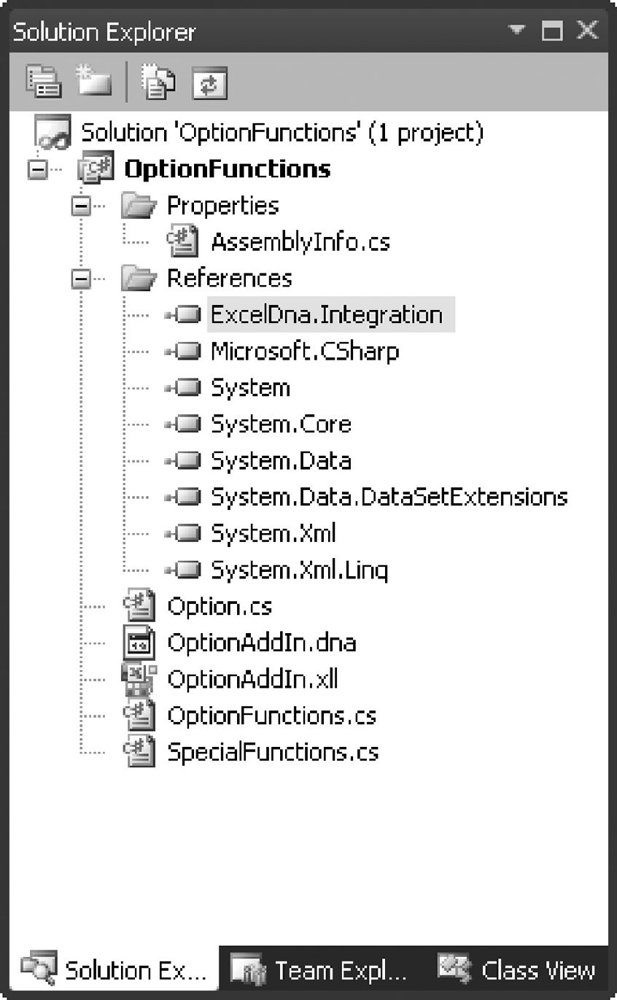
Figure 22.2 Necessary project files for Excel-DNA Option Pricer
methodcorrespondstoaworksheetfunctioninExcel.ItispossibletodefineExcelarguments that correspond to the Black-Scholes parameters in the C# code. The code is:
using System; using System.Collections.Generic; using System.Linq; using System.Text; using ExcelDna.Integration;
namespace OptionFunctions {
public class OptionFunctions {
[ExcelFunction(Description = "Exact solution for European option",
Category = "Option Functions")] public static double OptionPrice(
[ExcelArgument(Description = @"Call (""C"") or a put (""P"")")] string optionType, [ExcelArgument(Description = @"Stock")] double underlying,
[ExcelArgument(Description = @"Risk-free rate")] double interestRate,
[ExcelArgument(Description = @"Volatility")] double volatility, [ExcelArgument(Description = @"Strike price")] double strikePrice, [ExcelArgument(Description = @"Time to maturity(in years)")] double timeToMaturity, [ExcelArgument(Description = @"Cost of carry")]
double costOfCarry) {
// Basic validation if (underlying <= 0.0 volatility <= 0.0
timeToMaturity <= 0.0 strikePrice <= 0.0) {
// Exception will be returned to Excel as #VALUE. throw new ArgumentException();
} Option o = new Option();
o.otyp = optionType;
o.r = interestRate;
o.sig = volatility;
o.K = strikePrice;
o.T = timeToMaturity;
o.b = costOfCarry;
return o.Price(underlying);
} [ExcelFunction(Description = "Compute exact solution for a European option, " +
"and returns price and greeks as a two-column, " + "six-row array with names and values",
Category = "Option Functions")] public static object[,] OptionPriceGreeks(
[ExcelArgument(Description = @"Call (""C"") or a put (""P"")")] string optionType, [ExcelArgument(Description = @"Value of the underlying stock")] double underlying, [ExcelArgument(Description = @"Risk-free rate")] double interestRate, [ExcelArgument(Description = @"Volatility")] double volatility, [ExcelArgument(Description = @"Strike price")] double strikePrice, [ExcelArgument(Description = @"Time to maturity(years)")] double timeToMaturity, [ExcelArgument(Description = @"Cost of carry")]
double costOfCarry) {
// Basic validation if (underlying <= 0.0 volatility <= 0.0
timeToMaturity <= 0.0 strikePrice <= 0.0) {
// Exception will be returned to Excel as #VALUE. throw new ArgumentException();
} Option o = new Option();
o.otyp = optionType;
o.r = interestRate;
o.sig = volatility;
o.K = strikePrice;
o.T = timeToMaturity;
o.b = costOfCarry;
return new object[6, 2] {
{"Price", o.Price(underlying)}, {"Gamma", o.Gamma(underlying)}, {"Vega", o.Vega(underlying)}, {"Theta", o.Theta(underlying)}, {"Rho", o.Rho(underlying)}, {"Coc", o.Coc(underlying)}
}; }
} }
We have two functions in this case, one to price the option and the other one to price the option and its sensitivities.
Wenow give amoreextended example basedonChapter 16. Tothisend, webuildamulti-curve and we manage it using a dictionary. We also add some functionality to manage single-curves. The details are described in Chapter 16 and we do not repeat them here.
Intheensuing discussion,weusecode andExcel filesfromthesoftwaredistributionmedium corresponding to the current chapter.
The interface IExcelAddIn contains two methods for connecting to and disconnecting from Excel:
namespace ExcelDna.Integration {
public interface IExcelAddIn {
void AutoClose(); void AutoOpen();
} }
The AutoOpen() method is called when the add-in is loaded while the method AutoClose() is called just before the add-in is removed from the add-in dialog box. Classes that wish to communicate with Excel should implement both of the above methods.
We create a class called RateCurveDna. The class implements IExcelAddIn. In the AutoOpen() method we can call the Initialize() method that cleans the contents of some cells and initialises the curve dictionary:
namespace RateCurveDna {
public class RateCurveDna : IExcelAddIn {
public void AutoOpen() {
Initialize();
} public void AutoClose() {
// Only called when add-in is removed from the add-ins dialog CurveDictionary.Clear();
...
} // My database public static Dictionary<string, IRateCurve> CurveDictionary;
... // public static void Initialize() {
CurveDictionary = new Dictionary<string, IRateCurve>();
... }
}
... }
As we can see, in the above code the dictionary value type is a IRateCurve instance, so both ISingleRateCurve and IMultiRateCurve instances can be used in the current code.
The class RateCurveDna also contains other methods. We can define a subset of methods to instantiate new curves and populate the dictionary and another subset of methods used directly as UDFs to do calculus using curves.
The main methods to instantiate new curves and add them to the static dictionary are:
LoadCurveA() and LoadCurveB(), that use the method Load() to instantiate new IMultiRateCurve objects and add them to the CurveDictionary. The Load() method uses the method T[] myArray<T>(Object[,] O) to cast data from an Excel range.
LoadSingleCurve() instantiates new ISingleRateCurve objects and adds them to the CurveDictionary. We can directly enter the string name of the class in Excel and using the Reflection API we can obtain the C# class type from the name and instantiate it. We have decided to use linear interpolation on the missing rate and of course the other interpolators in Chapter 13 can also be employed.
The code to load a single-curve is:
public static void LoadSingleCurve() {
try {
dynamic xlApp;
xlApp = ExcelDnaUtil.Application; #region Load Data from Excel double[] ratesS = myArray<double>(xlApp.Range["RatesS"].Value2); string[] tenorS = myArray<string>(xlApp.Range["TenorS"].Value2); string[] typeS = myArray<string>(xlApp.Range["TypeS"].Value2); string doInterpS = (string) xlApp.Range["DoInterpS"].Value2; string interpolationS = (string)xlApp.Range["InterpolationS"].Value2; string strategyS = (string)xlApp.Range["StrategyS"].Value2; double RefDate = (double)xlApp.Range["RefDate"].Value2; #endregion #region building the curve RateSet MktRates = new RateSet(new Date(RefDate)); for (int i = 0; i < ratesS.Count(); i++) {
MktRates.Add(ratesS[i], tenorS[i], (BuildingBlockType)Enum.Parse(typeof(BuildingBlockType),typeS[i]));
} // Reflection stuff. From Excel string to C# class. string myTypeDef = strategyS + "'2[" + doInterpS + "," + interpolationS + "]"; string asmLocation = System.Reflection.Assembly.GetAssembly(typeof(OnDf)).Location; Assembly asm = Assembly.LoadFile(asmLocation); Type SC1 = asm.GetType(myTypeDef); // We use linear interpolation. You can allow the choice from spreadsheet OneDimensionInterpolation bi = OneDimensionInterpolation.Linear; ISingleRateCurve c1 = null; // SingleCurveBuilderInterpBestFit has constructor with different of arguments if (strategyS == "SingleCurveBuilderInterpBestFit") {
c1 = (ISingleRateCurve)Activator.CreateInstance(SC1, MktRates);
} else {
c1 = (ISingleRateCurve)Activator.CreateInstance(SC1, MktRates, bi);
} #region UpDating Dictionary string idCode = (string)xlApp.Range["CurveNameS"].Value2; try {
// check if idCode is in dictionary if (CurveDictionary.ContainsKey(idCode) == true) {
CurveDictionary[idCode] = c1; //if true, updates it
} else {
CurveDictionary.Add(idCode, c1); //if false, adds it
} // return time of last load xlApp.Range["MessageS"].Value2 = "Loaded @ " + DateTime.Now.ToString();
} catch (Exception e) {
xlApp.Range["MessageS"].Value2 = (string)e.ToString();
} #endregion #endregion
} catch (Exception e) {
MessageBox.Show("Error: " + e.ToString()); }
}
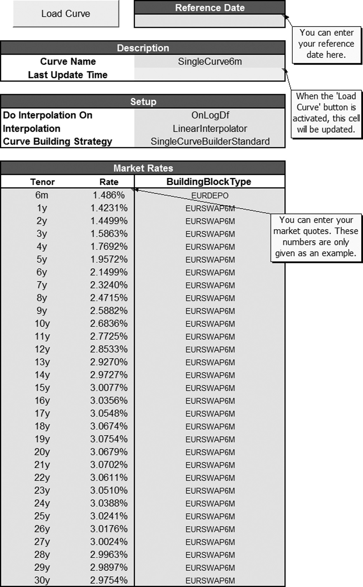
Figure 22.3 Example of input to curve building
The class RateCurveDna contains many methods accessible as UDFs from a spreadsheet, some of which are:
[ExcelFunction(IsVolatile=true, Category ="RateCurveDna", Name ="FwdSwapDna")] public static object FwdSwap(string idCode, double StartDate, string SwapTenor) {...}
[ExcelFunction(IsVolatile = true, Category = "RateCurveDna",Name ="FwdSwapXDna")] public static object FwdXSwapDna(string idCode, string StartTenor, string SwapTenor) {...}
[ExcelFunction(IsVolatile = true, Category = "RateCurveDna", Name = "FwdFloatDna")] public static object FwdFloat(string idCode, double StartDate) {...}
[ExcelFunction(IsVolatile = true, Category = "RateCurveDna", Name = "DfDna")] public static object Df(string idCode, double DfDate) {...}
[ExcelFunction(IsVolatile = true, Category = "RateCurveDna", Name = "FwdBasis6M3MDna")] public static object FwdBasis6M3M(double SwapStartDate, string SwapTenor,
string Curve6M, string Curve3M) {...}
[ExcelFunction(IsVolatile = true, Category = "RateCurveDna", Name = "SwapNPVDna")] public static object SwapNPV(string idCode, double Rate, string SwapTenor,
bool PayOrRec, double Nominal) {...}
[ExcelFunction(IsVolatile = true, Category = "RateCurveDna", Name = "CurveTypeDna")] public static string CurveType(string idCode) {...}
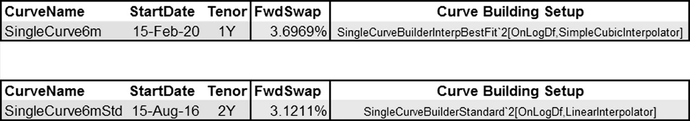
Figure 22.4 UDF functions in Excel-DNA
You can run these functions using the code on the software distribution medium. Finally, we have defined a method that calculates risk and that we call from a macro. This
method calculates the sensitivities to both curves as discussed in Chapter 16. The code is given by:
public static void RunRisk() {
dynamic xlApp = ExcelDnaUtil.Application; try {
#region reading input string idCode = (string)xlApp.Range["RiskCurveName1"].Value2; string SwapTenor = (string)xlApp.Range["RiskSwapTenor1"].Value2; double Rate = (double)xlApp.Range["RiskRate1"].Value2; bool PayOrRec = true; if (xlApp.Range["PorR1"].Value2=="Rec") { PayOrRec = false; }; double Nominal = (double)xlApp.Range["Notional1"].Value2; double shift = (double)xlApp.Range["RiskShift1"].Value2; #endregion
IRateCurve MultiCurve = null; // Initialize a multi-curve if (CurveDictionary.TryGetValue(idCode, out MultiCurve))
{
VanillaSwap swap = new VanillaSwap((IMultiRateCurve)MultiCurve, Rate,
SwapTenor, PayOrRec, Nominal); dynamic range = xlApp.Range["Data1"]; range.Value = toColumnVect(swap.BPVShiftedDCurve(shift));
xlApp.Range["OutParDF1"] = swap.BPVParallelShiftDCurve(shift); range = xlApp.Range["Data2"]; range.Value = toColumnVect(swap.BPVShiftedFwdCurve(shift)); xlApp.Range["OutParFwd1"].Value2 = swap.BPVParallelShiftFwdCurve(shift);
}
} catch (Exception e) {
MessageBox.Show("Error: " + e.ToString()); }
}
22.9.4 Registration and Loading Referring to the file RateCurveDna.xls we register the xll file as follows: Private Sub Workbook_Open()
Application.ScreenUpdating = False Dim wbPath As String wbPath = ActiveWorkbook.Path Application.RegisterXLL wbPath + "\bin\Debug\RateCurveDna.xll" Application.ScreenUpdating = True
End Sub
Of course, it is also possible to register the xll by double-clicking on the corresponding file. Furthermore, we can input data from the sheet MktData, using the command button ‘Load
A and B (DNA)’, and create multi-curve A and B and we add them to a dictionary. The macro associated with ‘Load A and B (DNA)’ is:
Sub LoadAnB()
Application.Run("LoadCurveA") Application.Run("LoadCurveB") Calculate
End Sub
In the same way, we can input data from the sheet MktDataSingleCurve using the command button ‘Load Curve’. This operation is needed for the proper functioning of other UDFs. The macro associated with the button is:
Sub LoadCurve() Application.Run ("LoadSingleCurve") Calculate
End Sub
The command button ‘Calc Risk’, in the sheet ‘Risk’, calculates the risk associated with both curves as discussed in Chapter 16. The macro associated with the button is:
Sub CalcRisk() t = Timer
Application.Run ("RunRisk") Range("Data3").Value = (Timer - t) Calculate
End Sub
A C# program compiles into an assembly, as we have seen in Chapter 11. An assembly contains metadata (‘data about data’), compiled code and resources. We now discuss how to inspect this metadata and compiled code at runtime. This feature is called Reflection and it refers to the ability to discover type information in a running program. To this end, the following code opens the assembly ExcelDna.Integration.dll and displays the methods for each type in the assembly:
using System; using System.Reflection;
// Class containing test method. class DynamicExcelDnaAssemblyLoading {
public static void Main() {
Enumerate();
} public static void Enumerate() {
try {
// Change path if the assembly is on another directory Assembly assembly =
// Get all the modules from the assembly. Module[] modules = assembly.GetModules(); // Traverse modules. foreach (Module module in modules) {
// Get all the types from the module. Type[] types = module.GetTypes();
// Traverse types. foreach (Type type in types) {
// Write full name of the type. if (type.IsPublic) {
Console.WriteLine(type.FullName); MethodInfo[] methodInfoArr = type.GetMethods(); foreach (MethodInfo methodInfo in methodInfoArr) {
} }
// Display method. Console.WriteLine("- {0}", methodInfo.Name);
} }
} }
} catch (Exception e) {
Console.WriteLine(e); }
The full source code is also available in the Excel-DNA distribution library. Unfortunately, at the time of writing there is no XML documentation of the types nor of their methods in Excel-DNA.
In this section we use Excel COM add-ins to implement the functionality already presented in Section 22.9.3. The reader can compare Excel DNA with the COM add-ins, each one being applied to the same example.
In the ensuing discussion, we use code and Excel files from the software distribution medium. We document the functions in a direct way.
In the project XlRateCurveCOM we create some User Defined Functions (UDF) using COM Interop and some VBA code in Excel to populate a dictionary of curves. In the workbook MultiCurveCOM.xls, using CommandButton ‘Load A and B’, in the sheet ‘MktData’ we can build two multi-curves using C# code and we add them to a curve dictionary managed in C#. The sheet is used as a data entry tool. By convention blue cells are for inputs and yellow cells are for output. We can then recall curves from the dictionary to use some methods directly from Excel UDF.
We summarise and describe the main steps of the process:
From Excel accessing C#. To pass a value from Excel to our C# function we use VBA code. We open the Excel file and press Alt+F11, see the code in module ‘Utility’. In VBA, we read data from the spreadsheet and we access C# code and methods (for example XlRate.AddMultiCurve()):
Private XlRate As XlRateCurveCOM.XlRate
Sub LoadInMemoryA() Call LoadMultiCurve("MktData", "RefDate", "DfType", "FwdType", _
"DfTenor", "DfRates", "FwdTenor", "FwdRates", "FixingTenor", _ "FixingValue", "CurveName", "Message")
End Sub
Sub LoadInMemoryB() Call LoadMultiCurve("MktData", "RefDate", "DfType2", "FwdType2", _ "DfTenor2",
"DfRates2", "FwdTenor2", "FwdRates2", "FixingTenor2", _ "FixingValue2", "CurveName2", "Message2")
End Sub Sub LoadInMemoryAandB()
Call LoadMultiCurve("MktData", "RefDate", "DfType", "FwdType", _ "DfTenor", "DfRates", "FwdTenor", "FwdRates", "FixingTenor", _ "FixingValue", "CurveName", "Message")
Call LoadMultiCurve("MktData", "RefDate", "DfType2", "FwdType2", _ "DfTenor2", "DfRates2", "FwdTenor2", "FwdRates2", "FixingTenor2", _ "FixingValue2", "CurveName2", "Message2")
Calculate End Sub
Sub LoadMultiCurve(sName As String, RefDate_ As String, DfType_ As String, _ FwdType_ As String, DfTenor_ As String, DfRates_ As String, _ FwdTenor_ As String, FwdRates_ As String, FixingTenor_ As String, _ FixingValue_ As String, CurveName_ As String, Message_ As String)
Set XlRate = New XlRateCurveCOM.XlRate
... s.Range(Message_).Value = XlRate.AddMultiCurve(CurveName, RefDate, DfTenorV, _
DfRatesV, DfType, FwdTenorV, FwdRatesV, FwdType, FixingTenor, FixingValue) End Sub
Running the above macro will return the time output as shown in Figure 22.5. Updating C# Dictionary. When we start Excel a static dictionary is initialised:
[ComVisible(true)] // Make class visible in COM, regardless [ProgId("XlRateCurveCOM.Rate")] // Explicit ProgID. [Guid("C67F42FA-8BED-469A-84AE-6385A15C39FA")] // Explicit GUID. [ClassInterface(ClassInterfaceType.None)] // We implement COM interfaces. public class XlRate : ProgrammableBase, IRate, Extensibility.IDTExtensibility2 {
... static Dictionary<string, IMultiRateCurve> MCDictionary =
new Dictionary<string, IMultiRateCurve>();
... }
To update the dictionary using settings from Excel we use AddMultiCurve() called from Excel VBA. Here is the C# code of function AddMultiCurve():
#region Storing Data string IRate.AddMultiCurve(string idCode, double RefDate, object DfTenor,
object DfRates, string DfType, object FwdTenor, object FwdRates, string FwdType, string FixingTenor, double FixingValue)
{
#region Market Rates for discounting
.... #endregion
#region Market Rates for forwarding
...
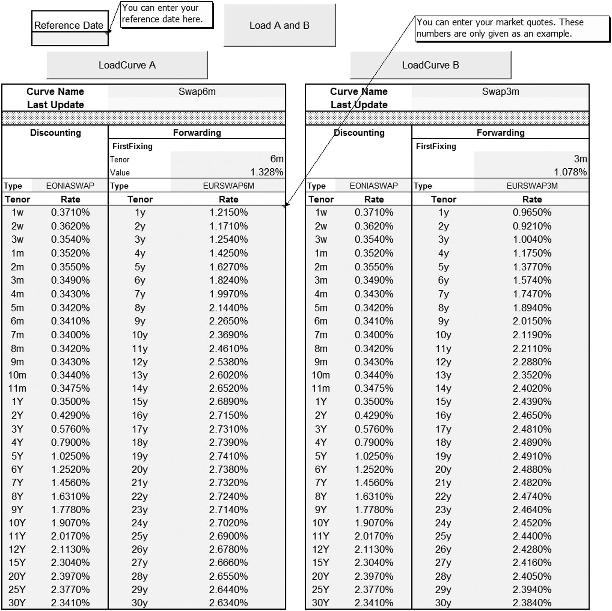
Figure 22.5 Multi-curve input data example
#endregion #region InitializeMyCurve
... SingleCurveBuilderStandard<OnDf, LinearInterpolator> DCurve = new ... MultiCurveBuilder<SimpleCubicInterpolator> MultiCurve = new ...
... #endregion
#region UpDating Dictionary try {
if (MCDictionary.ContainsKey(idCode) == true) //check if idCode is in dictionary {
MCDictionary[idCode] = MultiCurve; //if true, updates it }
else {
MCDictionary.Add(idCode, MultiCurve); //if false, adds it
} return "Loaded @ " + DateTime.Now.ToString(); //return time of last load
} catch (Exception e) {
return (string)e.ToString();
} #endregion
} #endregion
We instantiate a discounting curve using linear interpolation on the discount factor and multi-curve using simple cubic interpolation. You can change this to use some other kind of interpolation. Note the syntax to convert a text to an equivalent enumeration value:
BuildingBlockType dfType = (BuildingBlockType)Enum.Parse(typeof(BuildingBlockType), DfType);
UDF from Spreadsheet. We can access the IMultiRateCurve method to create a UDF, for example.
object FwdSwap(string idCode, double StartDate, string SwapTenor);
We calculate remove multi-curve forward start swap starting on StartDate with a tenor of SwapTenor using the idCode from our dictionary as shown in the screenshot.
CurveName StartDate Tenor FwdSwap Swap6m 01-Feb-13 5Y 1.950%
object FwdXSwap(string idCode, string StartTenor, string SwapTenor);
The following function is similar to FwdSwap, but with StartTenor as string. Here is a screenshot of a forward starting swap matrix:
CurveName Swap6m 1Y 2Y 3Y 4Y 5Y
1Y 1.127% 1.274% 1.496% 1.732% 1.950%
2Y 1.421% 1.683% 1.940% 2.163% 2.344%
3Y 1.952% 2.208% 2.422% 2.590% 2.719%
4Y 2.468% 2.664% 2.810% 2.921% 3.001%
5Y 2.864% 2.987% 3.079% 3.143% 3.199%
6Y 3.114% 3.192% 3.242% 3.289% 3.335%
object FwdFloat(string idCode, double StartDate);
This function returns the floating rate of the floating rate tenor of inputs of the curve that is 6m, calculated with respect to the idCurve. For example:
CurveName StartDate Fwd Swap6m 01-Feb-13 1.079%
object FwdBasis6M3M(double SwapStartDate, string SwapTenor, string Curve6M, string Curve3M);
WecalculateaBasisSpreadforaswapstartingonSwapStartDatewithatenorofSwapTenor.
Curve6m Swap6m Curve3m Swap3m StartDate 21-Feb-12 SwapTenor 10y Spread 0.24460%
object Df(string idCode, double DfDate);
We calculate the discount factor
CurveName Date DF Swap6m 27-Mar-12 0.99967
object SwapNPV(string idCode, double Rate, string SwapTenor, bool PayOrRec, double Nominal);
We calculate the NPV of a swap with the same characteristic of a swap SwapNPV as (“Swap6m”,0.031,“10y”,true,1,000,000). This calculates the NPV using the curve “Swap6m” of a payer swap with a contract rate of 3.1%, 10Y tenor on a nominal of 1,000,000.
CurveName Swap6m SwapTenor 10y Rate 3.1000% PayOrRec Pay Nominal 1,000,000.00 NPV 67,681.30
Risk Calculations. We visualise some sensitivities in Excel to OIS and Libor curves, for each bucket and in parallel shift. In the example we consider a receiver vanilla swap with 10,000,000 nominal, 11Y tenor, with a rate of 5%. We investigate the effect of 0.01% shift (see Figure 22.6):
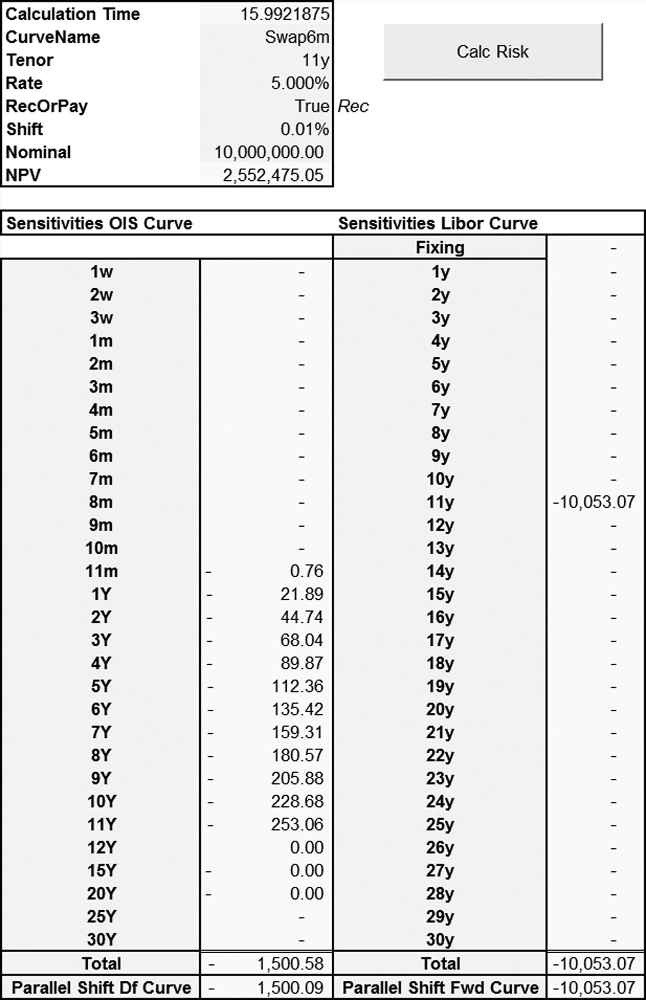
As we can see, Libor sensitivity is perfect on a 11Y bucket. This happened because we have 11Y as input rate. Please check what the effect on sensitivities is if we do not have 11Y as input, but have only 10Y and 12Y.
In the spreadsheet we also visualise how fast the code is to get the answer. Using our settings, the time was 15.269 seconds (using the optimised version of the class with multi-thread loop MultiCurveBuilder on a four core machine). If we use the non-optimised version of class MultiCurveBuilder2 with classical sequential loop, the time is 42.885 seconds.
The ‘Calc Risk’ command button on the spreadsheet runs the macro SwapRisk, in the module Risk_M. Here is some code:
Private XlRate As XlRateCurveCOM.XlRate Sub SwapRisk()
Application.ScreenUpdating = False Set XlRate = New XlRateCurveCOM.XlRate
.... ShiftDf = XlRate.SwapRisk(RiskCurveName1, RiskRate1, RiskSwapTenor1, PorR1, _ Notional1, RiskShift1, 1)
... End Sub
In the macro we use C# method XlRate.SwapRisk():
object IRate.SwapRisk(string idCode, double Rate, string SwapTenor, bool PayOrRec,
double Nominal, double shift, int caseSwitch) {
// Get Fwd Start Swap according to underlying rate floating tenor used in building // curve (eg 3m or 6m,..) if (m_xlApp != null) m_xlApp.Volatile(true); try {
IMultiRateCurve MultiCurve = null; //Initialize a multi-curve if (MCDictionary.TryGetValue(idCode, out MultiCurve)) //Is the idCode in dictionary? {
object OutPut = null; VanillaSwap swap = new VanillaSwap(MultiCurve, Rate, SwapTenor, PayOrRec,
Nominal); switch(caseSwitch) {
case 1: OutPut = (double[]) swap.BPVShiftedDCurve(shift); break;
case 2: OutPut = (double)swap.BPVParallelShiftDCurve(shift); break;
case 3: OutPut = (double[])swap.BPVShiftedFwdCurve(shift); break;
case 4: OutPut = (double)swap.BPVParallelShiftFwdCurve(shift); break;
default: return 0; //break;
} return OutPut;
} else {
return "Curve not found"; // curve not found }
} catch (Exception e) {
return (string)e.ToString(); }
}
We have introduced the topic of COM Add-ins which is a technology that allows us to call C# code from Excel. We described the main concepts involved in creating COM Add-ins and we gave a step-by-step plan of how to create such add-ins. Finally, we discussed a complete example. We also introduced Excel-DNA, an open source project for C# and Excel integration. The full source code is on the software distribution media.
1. Basic Excel COM Add-in In this exercise we create a COM add-in that will scale the values in a selected range. Start by creating a COM add-in using the Shared add-in wizard in Visual Studio. In the
OnConnection() method, store the Excel application object. This process is described in Section 22.4.
In the OnConnection() method install a menu item (in Excel 2007 and higher it will appear in the ribbon bar instead of the menu bar). Use the AddMenuItem() method from the utility code available in the software distribution as described in Section 22.5. In the OnDisconnection() method, remove the menu item. Add a Click event handler to the created menu item.
In the code for the click event handler retrieve the currently selected range using the Selection property of the Excel application object and check if something has been selected. Then display a dialog to ask for the scale factor. Finally, scale the values in the selected cells.
2. Option Pricing COM Add-in In this exercise we create a COM add-in that calculates the option value by reading
the option arguments from the current worksheet. It uses the Option class described in Section 22.9.2.
Start by creating a new COM add-in and install a menu item for it. In this case the COM add-in must calculate the option price from the option parameters entered on the sheet. Thus you need to create an Excel sheet that contains cells for the option arguments such as volatility, strike price, cost of carry and so on (see Section 22.9.2 for all the parameters).
In the menu handler code read the parameters from the current worksheet (hardcoded cell coordinates), create an Option object (the Option class is available in the software distribution medium) and store the resulting price in a cell of the current worksheet.
23
Real-time Data (RTD) Server |
In this chapter we discuss how to interface Excel with external real-time data feeds. Many market data vendors – for example, Reuters and Bloomberg – provide Excel add-ins to access their real-time data. From a developer’s viewpoint, the interface to be implemented is called IRtdServer and it contains a number of abstract methods that we implement when we create our own real-time data servers. A major concern when handling real-time data in Excel is to ensure that newly arrived real-time data can be processed as quickly as possible while at the same time ensuring that there are no conflicts with other applications. Without some form of coordination we will have conflicts between real-time data sources and Excel. The design of the RTD server ensures that Excel is the coordinator that regulates all data traffic and updates to worksheets.
Our aim in this chapter is to describe the steps to create an RTD server, generate data from it and then constantly update certain cells on the Excel worksheet.
In some applications we may wish to constantly update the value of a cell in Excel. We could achieve this by creating a standalone application that sends data to Excel but the danger here is that the volume of data may swamp Excel and for this reason we discount this as a viable solution. Instead, we develop applications in which Excel has the upper hand in the sense that Excel determines when data in a cell are updated. In other words, data are not pushed into an Excel cell but instead the data is pulled from the RTD server into the cell. We conclude that the worksheet function RTD cannot force the data on Excel but instead Excel plays the role of master or coordinator. It is possible to define a number of RTD servers for a given worksheet.
The main concepts are:
RTD server: this is a Component Object Model (COM) Automation server that implements the IRtdServer interface. We describe it in more detail in Section 23.3. Excel uses the RTD server in order to communicate with a real-time data source.
Real-time data source: this is any data source that can be accessed programmatically. In this chapter the data will be generated by software and all events are generated in the local computer.
Topic: this is a string (or set of strings) that uniquely identifies a data source or piece of data that resides in a real-time data source. The RTD server retrieves the data from the data source and then passes them to Excel for display.
We sketch the RTD environment and describe the control and data flow at a high level. First, the user calls the RTD() worksheet function with the appropriate parameters. Data are then
retrieved from a real-time data source or from a source that internally generates simulated data. Finally, the data are displayed in Excel.
The built-in Excel worksheet function RTD delegates to a COM object that implements the interface called IRtdServer. This interface has the following methods:
ServerStart(): this method is called when Excel initialises the RTD server. ServerTerminate(): this method is called when Excel shuts down the RTD server. ConnectData(): this method specifies which data (the so-called topic) are requested. DisconnectData(): this method specifies which data are no longer needed. RefreshData(): this method is called by Excel to retrieve the latest data. HeartBeat(): this method checks if the RTD server is still functioning.
If we wish to create our own RTD server then we need to implement each of these methods. Before we discuss the details in a particular case let us describe the sequence of events in a typical usage. The sequence of steps is displayed in Figure 23.1 and we paraphrase them as follows (a solid line represents the message sent while the dotted line represents the response):
1. We load and initialise the RTD server. An Excel callback object is an argument for ServerStart() and we need it because Excel will be notified when updates in the RTD server have taken place.
2. Excel registers the data that it is interested in. This is called the topic and consists of a topic ID (unique ID) and the topic strings (user input to the RTD function). The combination of topic strings defines one specific kind of data. Usually we use a dictionary to keep track of topic IDs and data.
3. A notification event from the RTD server notifies Excel that there is updated data. No actual data is actually transferred.
4. Excel can now retrieve the data by calling the method RefreshData().
:Excel :RTD Server
Load and initialize RTD server (ServerStart)
Register topic (ConnectData)
Repeated for every topic
Notify; there is updated data (UpdateNotify)
Asynchronous call
Repeated when data updates after a refresh
Retrieve updated data (RefreshData)
Unregister topic (DisconnectData)
Repeated for every topic
Stop RTD server (ServerTerminate)
Figure 23.1 RTD server sequence diagram
5. We unregister a topic parameter set by removing the topic from the dictionary and stop monitoring for updates for that topic.
6. We stop the RTD server and we dispose of all resources.
We take an example of an RTD server and Topic components. The code can be used as a template for your own servers; just copy the code, modify it as necessary and rebuild the project. We first discuss the RTD server code and its methods. We call it SineRtdServer because it generates data by calling the sine trigonometric function. It is easy to modify the code to allow us to create the data in other ways, for example by using a random number generator in a Monte Carlo simulator. The members of the class are an Excel callback object, a dictionary of topics and a system timer that triggers updates:
[Guid("1677CA5C-C700-43eb-A1F3-B9BD0992DDBA")] [ProgId("Datasim.SineRtdServer")] [ComVisible(true)] [ClassInterface(ClassInterfaceType.None)] public class SineRtdServer: Excel.IRtdServer {
// The Excel callback object to notify Excel of updates.
private Excel.IRTDUpdateEvent m_callback=null; // The dictionary that stores for each TopicID // the SineRtdServerTopic object.
private Dictionary<int, SineRtdServerTopic> m_topics
= new Dictionary<int, SineRtdServerTopic>();
}
// A timer that triggers updates. private System.Timers.Timer m_timer;
We start the RTD server with the following code:
int Excel.IRtdServer.ServerStart(Microsoft.Office.Interop.Excel. IRTDUpdateEvent callbackObject)
{
// Store the callback object. m_callback=callbackObject;
}
// Initialize and start the timer. m_timer=new System.Timers.Timer(1000); m_timer.Elapsed+=TimerElapsed; m_timer.Start(); return 1;
Thus, here we store the Excel callback object and we initialise and start the timer that determines the update frequency in Excel. In this case we use a single timer to update all the topics. In more complex RTD servers each topic might be updated at its own pace or by an external event, for example the arrival of market data. The return value is a status code. Negative values or zero indicate an error.
Whenthetimerelapses,the TimerElapsed()methodiscalled.HereweusetheIRTUpdateEvent object to notify Excel that it should fetch new data from the RTD server. The timer is stopped until Excel has fetched the data:
void TimerElapsed(object sender, System.Timers.ElapsedEventArgs e) {
// Stop the timer and notify Excel there is new data. if (m_callback!=null) {
m_timer.Stop(); m_callback.UpdateNotify();
} }
The next step is to register topic data. Excel calls the following method for each unique combination of topic strings. The topic ID is generated by Excel and it is used to identify the combination of topic strings:
object Excel.IRtdServer.ConnectData(int topicID, ref Array strings,
ref bool getNewValues) {
try {
// Add a topic object if not already in the // dictionary (should always be the case). if (!m_topics.ContainsKey(topicID))
// Excel should retrieve new values. getNewValues=true;
}
// Return the current data for this topic. return m_topics[topicID].GetData();
} catch (Exception ex) {
return ex.Message; }
When the RTD server notifies Excel then Excel retrieves the data by calling the RefreshData() method of the RTD server. The RTD server returns a two-dimensional array containing topic IDs and topic values. For efficiency it should only return the topics that were changed since the last call to RefreshData():
Array Excel.IRtdServer.RefreshData(ref int topicCount) {
// Return for each topic, the topic ID and new data. object[,] data=new object[2, m_topics.Count];
// Get data for each topic. int index=0; foreach (int topic in m_topics.Keys)
}
{
data[0, index]=topic; data[1, index]=m_topics[topic].GetData(); index++;
} // Set the topic count and restart the timer. topicCount=m_topics.Count; m_timer.Start(); // Return the data. return data;
Excel can disconnect from a certain topic of the RTD server:
void Excel.IRtdServer.DisconnectData(int topicID) {
// Remove the topic from the dictionary. if (m_topics.ContainsKey(topicID)) {
m_topics[topicID].Dispose(); m_topics.Remove(topicID);
} }
Finally, we can terminate the RTD server as follows:
void Excel.IRtdServer.ServerTerminate() {
// Stop the timer. if (m_timer!=null) {
m_timer.Stop(); m_timer.Dispose(); m_timer=null;
} }
For completeness, here is the method that Excel uses to check if the RTD server is still functioning:
int Excel.IRtdServer.Heartbeat() {
// Always return OK. return 1;
}
This concludes the discussion of the code for our RTD server.
It is recommended to encapsulate each topic (the combination of topic strings given in the ConnectData() method) as a class. The RTD server Topic class generates numbers in
some way, for example using real-time data feeds, based on a mathematical function or by using a random number generator. We discuss the use of the sine function in this section where the topic strings determine the sine amplitude and the increment for each change in radians. The Topic class implements the interface IDisposable that can be used for cleaning up unused resources which can be more efficient than waiting until the garbage collector calls the finaliser:
public class SineRtdServerTopic: IDisposable {
// The scale factor of the sine function. private double m_scaleFactor;
// The increment value to the sine input argument. private double m_increment; // The current input value. private double m_currentValue; public void Dispose() {
// Currently empty implementation. // Might be used to clean up resources.
} }
The constructor initialises the member data in the class. It parses the topic strings:
public SineRtdServerTopic(ref Array strings) {
// First parameter is the scale factor. m_scaleFactor=1.0;
if (strings.Length>=1) Double.TryParse(strings.GetValue(0).ToString(), out m_scaleFactor);
// Second parameter is the increment. m_increment=2*Math.PI/360.0;
if (strings.Length>=2) Double.TryParse(strings.GetValue(1).ToString(), out m_increment);
}
// Current value starts at 0. m_currentValue=0.0;
Finally, the data are produced in the following method:
public double GetData() {
m_currentValue+=m_increment; // Using sine function return Math.Sin(m_currentValue)*m_scaleFactor;
}
If we wish to generate random data, we can use the following code:
public double GetData() {
// Using random numbers // Initializes a new instance of the System.Random class, // using a time-dependent default seed value. Random random = new Random();
return random.NextDouble(); // in range [0,1) }
This completes the discussion of the Topic class.
We now discuss the steps that need to be taken in order to create and use an RTD server. These steps involve interacting with the Visual Studio IDE, knowing which options to choose from and which buttons to press. We describe these steps in such a way that we understand the main issues without getting too bogged down in low-level details that may change from one version of Visual Studio to a new one:
1. We create the RTD Server component as a C# Class Library project. The setting ‘Register for COM Interop’ must be enabled. This setting ensures that Visual Studio automatically registers the library after every successful build. Alternatively – although not necessary in this case – we can register a COM component using the regasm.exe utility.
2. Create the Topic class that encapsulates the topic parameters and data (see Section 23.5 for an example of a topic class).
3. Implement the IRtdServer interface by a class that is visible to COM (see Section 23.4). Excel uses this class.
4. Create the data structure that associates topic IDs and the Topic class (in Section 23.4 we used a generic .NET dictionary).
5. Implement the IRtdServer interface members (as discussed in Section 23.4).
6. Compile and build the project.
In some cases we may wish to include an Excel sheet in the same project as the source code that implements the RTD server.
Having built and registered the RTD server we are then ready to call the RTD() worksheet function from Excel. The general syntax of this function has the form:
where program is the ProgID that uniquely identifies the RTD server. The server parameter is optional and it refers to the server name where the RTD server is running. For example, if the server is remote then we need to give the machine name on which the server is running. When this parameter is not used or when the server name is called ‘localhost’, then this implies that the server is running locally.
Finally, we can give a list of topic arguments that tells the RTD server which data is being requested. In the example in Section 23.5 the topic arguments consist of an amplitude for the sine function and an increment in radians. Thus, in the example below we specify an amplitude of 2 and an increment of 0.1 radians:
RTD("Datasimserver.SineRtdServer",,2,0.1)
You can experiment with the RTD server code that we provide with this book.
In general, debugging the RTD server is similar to how we would debug a C# UDF library. We also need to take care of the following points:
Making sure that the server is reachable: for example, make sure the server has been registered. One solution is to un-register it and to register it again as discussed in step 1 of Section 23.3. Use regedit utility and inspect the server entry under the HKEY_CLASS_ROOT entry to discover the full path name of the server’s DLL. Overflows in Excel: the server notifies Excel through the callback class IRTDUpdateEvent. It is Excel that decides when to retrieve the next data, not the server. Otherwise the server will send data to Excel faster than Excel can process it.
For more complex applications we may need to consider designing multi-threaded applications in distributed environments using C# or C++ multi-threading libraries. This topic is outside the scope of the current book.
We have given an introduction to RTD server that was introduced in Excel 2002(XP). It is used for viewing and dynamically updating real-time data feeds from a number of data vendors. In onesenseitreplaces,complementsandextendstheDynamicDataExchange(DDE)technology that is used for communication between multiple applications under Microsoft Windows, although DDE is more general as it can be used with many applications.
We described the main concepts, interfaces and classes in this software and we have shown how to create an RTD server that produces data at regular intervals and that displays these data in Excel.
The full source code for the examples in this chapter can be found in the software distribution medium.
1. Stock Price RTD Server
In this exercise create an RTD server that serves stock prices based on their stock name, e.g. MSFT for Microsoft, GOOG for Google, ORCL for Oracle, etc.
We start by creating a new C# class library project. Create a StockPriceTopic class that contains the stock name as data member. Add an appropriate constructor to set the stock name member.
Add a method called GetPrice() that should return the current stock price. In this case we simulate the stock price by creating a static dictionary class (static members are shared by each instance of the class) containing stock name/ price pairs. The dictionary must be initialised in a static constructor adding stock name/price for various companies.
The GetPrice() method should retrieve the price from the dictionary and add a random value to it to simulate price changes. When the stock name is not in the dictionary, it should return 0.
We then add a COM visible class that implements the IRtdServer interface as explained in Sections 23.4 and 23.6. Do not forget to reference the Excel Interop library and add attributes for the GUID and ProgID. Add members for the IRTDUpdateEvent callback object and a dictionary for topic IDs/stock price topic object pairs. Implement the ServerStart() method that stores the callback object and starts a new timer.
Now implement the timer elapsed event handler. This should stop the timer and call UpdateNotify() on the Excel callback object (see Section 23.4 for details).
Implement the ConnectData() method. This should add a new stock price topic object to the dictionary and return the current stock price (see Section 23.4 for details).
Next implement the RefreshData() method. This should iterate over all topics in the dictionary and return the new value for each topic. The data are returned as a twodimensional array with topic ID/value pairs. Before returning the data, restart the timer (see Section 23.4 for details).
Implement the DisconnectData() method that should remove the given topic from the dictionary.
Finally, implement the ServerTerminate() and Heartbeat() methods. The first method should stop the timer and the second should always return 1.
Test the RTD server by adding a RTD function to the worksheet. The form is:
RTD (ProgID, server, stock name) The server argument is empty and the ProgID argument should be the ProgID that you have
chosen for your RTD server.
24
Introduction to Multi-threading in C# |
In this part of the book we introduce a number of design and software tools to help developers take advantage of the computing power of multi-core processors and multi-processor computers. These computers support parallel programming models. The main reason for writing parallel code is to improve the performance (called the speedup) of software programs. Another advantage is that multi-threaded code can also promote the responsiveness of applications in general.
We introduce a new programming model in this chapter. This is called the multi-threading model and it allows us to write software systems whose tasks can be carried out in parallel. This chapter is an introduction to multi-threaded programming techniques. We introduce the most important concepts that we need to understand in order to write multi-threaded applications in C#. A thread is a single sequential flow of control within a program. However, a thread itself is not a program. It cannot run on its own, but instead it runs within a program. A thread also has its own private data and it may be able to access shared data.
When would we create multi-threaded applications? The general answer is performance. Some common scenarios are:
Parallel programming: much of the code in computational finance implements compute intensive algorithms whose performance (called the speedup) we wish to improve by using a divide-and-conquer strategy to assign parts of the algorithms to separate processors. A discussion of the divide-and-conquer and other parallel design patterns is given in Mattson, Sanders and Massingill 2005.
Simultaneous processing of requests: multi-threading can be used when requests from multiple clients concurrently arrive at a server. The .NET framework creates threads for these requests. Maintaining a responsive user interface: in interactive applications, we create a thread for the UI component and one or more threads to compute intensive algorithms.
Interleaved I/O and computation: some applications process data from slow devices such as disks and the network. Since I/O is much slower than in-memory computation, we see that bottlenecks emerge as parts of the code wait on data to arrive from these devices. In these cases we can create two threads (for example), one for acquiring data from the device while another thread processes these data in an algorithm. In this sense the first thread prefetches the data and delivers it to the second thread for processing. In the meantime the first thread can get the next dataset that will be used by the second thread when the latter has finished with the first dataset.
To summarise, the main goals in this chapter are two-fold: we introduce the ideas and techniques needed to write multi-threaded applications in C# and we also motivate how to analyse and design financial applications that are implemented in C# in combination with the .NET threading library.
In this chapter we discuss what threads are and the corresponding thread functionality. We give a number of simple examples to show how to write multi-threaded code. Chapters 25 and 26 deal with more advanced functionality, parallel design patterns and applications to computational finance.
Writing thread-safe parallel code is of an order of magnitude more difficult than the corresponding sequential code.
A process is a heavyweight unit of scheduling. A process owns resources; these include memory, windows, device handles and sockets, for example. The operating system is responsible for the allocation of these resources. In Windows a process is typically an executable file (for example, Excel, Notepad or a developer-created executable). By default, processes do not share resources.
.NET supports processes in the form of the static class Process in the System .Diagnostics namespace. Each application is a process and several processes can run at the same time. It is possible to start a process in .NET by calling the method Process .Start() and giving the name of the executable file as argument that we wish to fire up. For example, the following code starts Excel and Notepad and stops them after waiting for ten seconds (by closing their respective windows):
using System; using System.Diagnostics; using System.Threading;
public class Processes {
public static void Main() {
Process pNotepad; Process pExcel;
} }
try {
// Try to start "notepad.exe" and "excel.exe" pNotepad = Process.Start("notepad.exe"); pExcel = Process.Start("excel.exe");
} catch (Exception) {
pNotepad = null; pExcel = null;
} // Wait 10 seconds before closing notepad and Excel Thread.Sleep(10000);
// Stop notepad and Excel if (pNotepad != null) pNotepad.CloseMainWindow(); if (pExcel != null) pExcel.CloseMainWindow();
Each process has a read-only base priority when created. It is possible to raise (or lower) the priority of a process by modifying its PriorityClass property whose values are:
Realtime (24): no interruption by other processes until completion. High (13): give other processes a chance to run every so often. Normal (8): democratic option by allocating resources equally among processes. Idle (4): No hurry.
In general, this property allows a process to gain extra priority compared to other processes. Here is some code to show how this is done:
pExcel.PriorityClass = ProcessPriorityClass.High; // Assign an Enumeration Console.WriteLine(" base priority: {0}", pExcel.BasePriority); // Prints '8' Console.WriteLine(" priority class: {0}", pExcel.PriorityClass); // 'High'
In this case we see that the base priority has not changed but Excel is given a chance to perform its duties for some time before other processes are scheduled.
Finally, we can iterate over Process instances on the local machine and we can display some of their properties as follows:
foreach (Process p in Process.GetProcesses()) { // Create a process component for each process on the local machine
}
Console.WriteLine(p.BasePriority); // Process base priority Console.WriteLine(p.ProcessName); // Process name Console.WriteLine(p.Threads.Count); // Number of threads in process Console.WriteLine(p.WorkingSet64/1024.0); // Physical memory usage
There are other properties of the class Process that may be interesting in certain applications and they are documented in the Visual Studio online help.
In some cases the input to a process is from the keyboard. It is possible, however, to redirect I/O using the ProcessStartInfo class. It also has some useful properties:
Get or set the application or document to start. Get or set a value indicating whether to start the process in a new window. Get or set the command-line arguments to use when starting the application. Determine whether the input and output are to be redirected from the standard input and output. Get or set a value to indicate whether to use the operating system shell to start the process.
The Process class is useful in situations when we wish to run an application from C# code, for example when installing a software driver or some other system deployment utility.
We take an example to show how to use ProcessStartInfo. We list all the directory entries on the 'C:' disk and we pipe the output into a StreamReader object. We
then read the directories one by one until the end of the generated text file in a Windows program:
private void btnDir_Click(object sender, System.EventArgs e) {
// Create process start info object with command and arguments ProcessStartInfo si =new ProcessStartInfo("cmd.exe", @"/C dir "+txtSearch.Text);
// Disables dos box window si.CreateNoWindow=true;
// Enable redirection of standard output si.RedirectStandardOutput=true; si.UseShellExecute=false;
// Start the process Process p=Process.Start(si);
}
// Read process output txtDir.Text=p.StandardOutput.ReadToEnd();
You can run the program to see how this code works. The full code is on the software medium kit provided with the book.
A thread is a unit of scheduling. However, unlike a process, a thread is lightweight in the sense that it shares memory and file resources with the other threads that exist within a process. In general, threads represent multiple flows of execution in an application (process) and each thread can run on a separate core in a multi-core CPU or separate processor in a multi-processor computer. We design and implement multi-threaded applications when we wish to improve performance. Threads do not own resources with the exception of a stack, a copy of the registers including the program counter and thread-local storage.
We now discuss how C# implements threads by the Thread class. In general, we create a Thread instance by calling its constructor and providing an instance of the ThreadStart delegate that represents the method to be executed when the thread has been selected to run. We visualise the relationship via the UML class diagram in Figure 24.1 and we see that we can instantiate the delegate by a method of any class.
Our first example creates two threads. The first thread is by default the thread corresponding to the main method while we explicitly create the second thread. In this case the console output is a mix of "Main method" and "Second thread". This is because each thread receives a time slice (or quantum of time) from the scheduler during which time it can print
«implementation class» delegates implements AnyClass
«delegate» ThreadStart
-ThreadState
+Start()
* 1 * calls *
+Run()
+Sleep() +Abort()
+RunImpl()
Figure 24.1 System thread and ThreadStart
its text. In other words, each thread executes independently of the other threads in a program by default:
public class Threads {
public static void Main() {
// Create a thread running the "DoSomething" method. ThreadStart ts=new ThreadStart(DoSomething); Thread t=new Thread(ts);
// Start the thread t.Start();
// Now we can do something else for (int i=0; i<100; i++) Console.WriteLine("Main method");
} // The method that will be run by the thread public static void DoSomething() {
for (int i = 0; i < 100; i++) {
Console.WriteLine("Second thread"); }
} }
In the next example we create two sets of random numbers that are generated by two separate threads. The values are printed as soon as they are created. First, we define a simple toy class that generates and prints a set of random numbers:
public class RNG { // A simple class that generates random numbers
}
public RNG(int seed, char separator) {
m_seed = seed; myRandom = new Random(m_seed); m_sep = separator;
} public void Compute() {
for (int ii = 0; ii < 10; ++ii) {
Console.WriteLine(String.Format("{0} {1}, ", m_sep, myRandom.NextDouble())); Thread.Sleep(1000);
}
} private char m_sep; private Random myRandom; private int m_seed;
We now create two threads in a Main() method:
public class ThreadingSample {
static void Main(string[] args) {
// Create random numbers with their own seeds int seed1 = 22; int seed2 = 3; RNG w1 = new RNG(seed1, 'A'); // Characters used when printing RNG w2 = new RNG(seed2, 'B');
// Create threads and generate the random numbers
Thread t1 = new Thread(new ThreadStart(w1.Compute)); Thread t2 = new Thread(new ThreadStart(w2.Compute));
}
// Fire up the two threads
t1.Start(); t2.Start();
// Block calling (main) thread until the others (t1, t2) have completed. // The main thread waits here for all other threads to arrive. t1.Join(); t2.Join();
Console.WriteLine("Done."); }
The output from this code is given below and we see that the numbers from both sets are displayed in a random fashion:
A 0.219600182128884, B 0.293519212535359, B 0.697581212361148, A 0.272534946572285, B 0.864986660827411, A 0.145758479901477, B 0.198489983192873, A 0.253905664316335, B 0.560490373317381, A 0.138719428860917, B 0.180578214666144, A 0.784636541635094, B 0.250197158777247, A 0.763274412957614, A 0.479234735238941, B 0.947231081755474, A 0.699317162250782, B 0.348699854383571, B 0.379957750616576, A 0.386228605819041, Done.
The statements
// Block calling thread until the others have completed // The main thread waits here for all other threads to arrive
t1.Join(); t2.Join();
mean that the main thread waits until both threads t1 and t2 have completed processing. We discuss thread joining in more detail in Section 24.6.2.
In general, we remark that the above code for generating random numbers is probably unsuitable for production software systems.
24.4.1 The Differences between Processes and Threads Processes and threads are computational entities but they differ in a number of respects:
Threads are not independent; processes are independent. Context switching between threads is faster than context switching between processes. Threads within a single process share the same address space while each process has its own private address space. Processes communicate by means of interprocess communication (IPC) mechanisms; threads communicate by means of shared variables and shared memory.
We now discuss how to deal with shared data and data transfer in multi-threaded applications, in particular the following:
Passing data to a thread. Sharing data between threads. Using the volatile keyword.
It is possible to provide parameters as arguments to a thread’s start method. In this way, we pass data from a main thread to a child thread. This is shown by the following code in which string data are passed to a child thread:
public class ThreadData_I {
public static void Main() {
// Create a thread running the "Print" method. Thread ts = new Thread(Print);
}
// Start the thread and give the parameters to the thread. string message = "Hi there"; ts.Start(message);
// Now we can do something else in main thread Console.WriteLine("Main method");
// The method that will be run by the thread public static void Print(object myMessage) {
// Cast object to a string Console.WriteLine(myMessage);
} }
This functionality is possible because Thread’s constructor is overloaded to accept the delegate ThreadStart (no input parameters) or the ParametrizedThreadStart delegate (which has an argument of type object). The latter approach has the disadvantage that it accepts only one argument which in its turn is cast back to the original value. It is possible to avoid these problems by using the parameterless ThreadStart delegate in conjunction with anonymous methods or a Lambda function. Here is an example that shows how to pass two parameters to the target method Print while at the same time avoiding the need to cast:
public class ThreadData_II {
public static void Main() {
// Create a thread running the "Print" method. Thread ts = new Thread(delegate(){Print("Hi double O: ", 007);});
// Start the thread ts.Start();
// Now we can do something else in main thread Console.WriteLine("Main method");
}
// The method that will be run by the thread public static void Print(string myMessage, int number) {
// Cast object to a string Console.WriteLine("{0}, {1}", myMessage, number);
} }
The above options are useful in a Master-Worker parallel design pattern problem in which the master thread creates one or more child threads while also providing them with data (see Mattson, Sanders and Massingill 2005 for a discussion of parallel design patterns).
Threads can share data in a number of ways and it is also possible to define thread-specific (or local) variables. In general, each thread that runs a ThreadStart method receives its own copy of local variables. This means that any modifications to a thread-local variable will only be seen in that thread. This is because the CLR and the operating system assign each thread to its own memory stack for local variables. An example is:
public class ThreadData_III {
public static void Main() {
// Create a thread running the "Print" method. Thread ts = new Thread(Print); ts.Start();
// Now we can "Print" in main thread Print();
} // The method that will be run by the thread public static void Print() {
// Declare and use local variable for (int j = 0; j <= 9; j++) {
Console.Write(j); }
} }
We ran this program and the output from this code was ‘01234567890123456789’. In other words, each thread prints its own set of numbers. On the other hand, if we wish to share data between threads we can use a common reference or static field. For example, the following code shows how to share data between two threads; in this case the string reply is initialised by the child thread and is printed by the main thread:
public class ThreadData_IV {
public static void Main() {
// Create object with shared data Common obj = new Common(); obj.message = "First message";
}
Console.ReadLine(); Console.WriteLine(obj.reply);
}
// Class with shared variables public class Common {
public string message; public string reply;
public void Run() {
Console.WriteLine(message); reply = "I am the new common data";
} }
Finally, let us now discuss the issue of volatile fields. Fields that are declared volatile are not subject to compiler optimisations. This optimisation takes the form of storing simple variables in processor registers. The undesirable consequence is that each thread will get its own (possibly incorrect or outdated) view of the variable unless we use volatile variables. In short, we use the volatile keyword to disable register optimisations as the following code shows:
public class Threads {
// Variable to indicate that the thread must stop itself private static volatile bool s_stop=false;
public static void Main() {
// Create a thread running the "DoSomething" method. ThreadStart ts=new ThreadStart(DoSomething); Thread t=new Thread(ts);
// Start the thread t.Start();
// Now we can do something else for (int i=0; i<10000; i++) Console.WriteLine("Main method");
// Let the thread stop itself s_stop=true;
} // The method that will be run by the thread public static void DoSomething() {
while (!s_stop) {
Console.WriteLine("Do something in parallel with Main"); }
} }
The volatile keyword can be applied to fields of the following types: Reference types (the reference is volatile, not where it points to). Primitive types (for example byte, int, float, bool). Enum type with an integral base type. Generic type parameters known to be reference types.
A multi-threaded application consists of two or more executing threads. It is possible to create as many threads as you wish (even on a single-processor machine) but this does not necessarily lead to performance improvements. In fact, we will probably experience performance degradation because of the overhead involved in creating, managing and destroying threads. In general, we should strive for a 1:1 correspondence between the number of cores in a CPU
SleepWaitJoin
Sleep() / Monitor.Wait() / Join() Interrupt() / Monitor.Pulse() or timeout
Abort() or ThreadStart delegate terminates
new Thread() Unstarted Start() Stopped
Running
Suspend() Resume()
Suspended
Figure 24.2 State chart thread lifecycle
and the number of threads in software because in that case each thread can execute on one processor.
At the highest logical level we say that a thread is in either a Running state (it is executing some instructions) or it is not in a Running state. Other thread states are shown in Figure 24.2:
Unstarted: the thread has just been created and is ready for execution. Running: the thread is executing. SleepWaitJoin: the thread is waiting on some event to occur; when this event occurs the thread will be put back into the Running state.
Suspended: the thread has been stopped by another thread. It will be put back into the Running state when it is resumed. We mention that this state is now obsolete which means that the related methods Suspend() and Resume() should no longer be used in applications. Stopped: the thread’s life has ended; caused by the normal termination of the thread function or by the thread being aborted.
Note that the states presented in Figure 24.2 are logical software states at application level and should not be confused with thread state at operating system level. For example, being in the Running state does not necessarily imply that the thread is executing on a processor because it may still be waiting in a queue for the scheduler to run it.
We now discuss the methods in Figure 24.2 in more detail. They represent transitions between thread states.
Multi-tasking is not guaranteed to be preemptive. Preemptive multi-tasking entails that a computer operating system uses some criteria to decide how much time to allocate to any one task before giving another task a chance to execute. The act of taking control from one task and giving it to another task is called preemption. A common criterion for preemption is elapsed time (called time sharing or time slicing). In some operating systems applications can be given higher priority compared to other applications. In order to give other threads a chance to execute in a cooperative environment the currently executing thread can yield control and give other threads the opportunity to execute. For example, in cases where the ThreadStart method is compute intensive a thread can yield control to allow other threads
to execute. To this end, we call the Sleep() method. When called, the thread transitions to the WaitSleepJoin state. The method takes an integer as argument and this is the number of milliseconds for which the thread will be inactive. Once sleeping, the thread has no control of the processor. A thread can never put another thread to sleep; a thread must put itself to sleep. Calling Sleep() with argument zero implies that the current thread is immediately swapped out of execution mode, thus giving other threads a chance to execute. This case should lead to good load balancing in an application, because the sleeping thread will be put in Running mode as soon as possible.
We now give an example of a simple animation simulator that displays frames of data and that yields control to other threads every 40 milliseconds:
public class SleepTest {
// Frame counter private static int s_frame=0;
public static void Main() {
// Start animation thread Thread t=new Thread(new ThreadStart(Animation)); t.Start();
} // Display animation (ThreadStart delegate implementation) private static void Animation() {
// Never ending loop while (true) {
// Display the next animation frame DisplayNextFrame();
}
// Sleep for 40ms (25 frames/second) Thread.Sleep(40);
}
} // Display next animation frame private static void DisplayNextFrame() {
Console.WriteLine("Displaying frame: {0}", s_frame++); }
In applications we can use the Sleep() method when we wish to carry out certain activities after some time and for algorithms that are performed periodically.
A thread can decide to wait on another thread until this latter thread has finished. This may be required in cases where a thread needs to process data that are created by another thread. In this case the calling thread blocks (waits) until the other threads have finished. It is also possible to provide a timeout argument after which time the calling thread becomes unblocked.
The following example shows how we call a compute intensive function (calculating the power of some number or, more generally, the power of a matrix) in a main thread while waiting until the power function has completed before printing the results:
public class PowerThread {
// Calculate (mˆn) / (m*n) public static void Main() {
int m=2; int n=200;
// Create a mˆn calculation thread PowerThread pt=new PowerThread(m, n); Thread t=new Thread(new ThreadStart(pt.Calculate));
// Start mˆn calculation in parallel t.Start();
// Now own calculation while the PowerThread is calculating mˆn double result=m*n;
// Wait till the PowerThread is finished t.Join();
// Display result Console.WriteLine("({0}ˆ{1}) /({0}*{1}) = {2}", m, n, pt.result/result);
} private int m, n; // Variables for mˆn public double result; // The result // Constructor public PowerThread(int m, int n) {
this.m=m; this.n=n;
} // Calculate mˆn. Supposes n>=0. public void Calculate() {
result=m; // Start with mˆ1 for (int i=1; i<n; i++) {
result*=m; // result=result*m Thread.Sleep(0); // Allow other threads to run
} if (n==0) result=1; // mˆ0 is always 1
} }
We see that at each iteration the thread that computes the power of the number m yields control, thus allowing the other thread to run for a while.
We can terminate a thread by calling the Thread method Abort() which raises a ThreadAbortException in the thread on which it is invoked. In other words, a blocked thread can be forcibly released using this method.
An example is when we abort a thread indirectly. In this case we create a class that is able to abort the thread that is associated with its start method. The example is somewhat convoluted but it shows how the mechanism works:
class Abort101 {
static void Main() { // The thread is aborted in the start method.
}
Worker w = new Worker(); Thread t = new Thread(w.Work); t.Start();
Thread.Sleep(1000); // Main thread sleeps for 1000 ms Console.WriteLine("Aborting "); w.Abort(); Console.WriteLine("Aborted ");
} class Worker {
volatile bool abort = false; public void Abort() { abort = true; }
public void Work() {
while (true) {
CheckAbort(); // not in try block. Abort could be thrown without being // caught
// Do stuff try { OtherMethod(); } catch (ThreadAbortException) {
Console.WriteLine("Unable to execute method, thread has been aborted");
} finally { /* cleanup */ }
}
} void OtherMethod() {
Console.WriteLine("Just another method");
} void CheckAbort() {
// Abort the currently running thread if (abort) Thread.CurrentThread.Abort();
} }
A variation of the above code is when we abort a thread directly from the main thread:
class Abort101_II { // How to abort a thread. Now the thread is aborted from Main.
static void Main() {
Worker w = new Worker(); Thread t = new Thread(w.Work); t.Start();
Thread.Sleep(1000); // Main thread sleeps for 1000 ms Console.WriteLine("Aborting "); t.Abort(); Console.WriteLine("Aborted ");
} class Worker {
volatile bool abort; public void Abort() { abort = true; } public void Work() {
while (true) {
} }
try {
OtherMethod();
} catch (ThreadAbortException) {
Console.WriteLine("Unable to execute the method, thread has been aborted ");
} finally { /* cleanup */ }
}
} void OtherMethod() {
Console.WriteLine("Just another method"); }
Aborting a thread should be avoided. It is best that a thread stops itself by completing its thread function.
Continuing, we can bring a sleeping thread back into the Running state by calling the Interrupt() method. When this happens an exception of type ThreadInterruptedException is thrown. We give an example of a thread that tries to sleep forever but which is interrupted by the timeout mechanism:
using System; using System.Threading;
class Interrupt101 {
static void Main() {
Thread t = new Thread(delegate() {
try {
// This thread loops/sleeps forever if not interrupted Thread.Sleep(Timeout.Infinite);
} catch (ThreadInterruptedException) {
Console.Write("by force, I have been ");
} Console.WriteLine("awoken");
}); t.Start(); t.Interrupt();
} }
The main difference between Interrupt and Abort is that Interrupt waits until the thread next blocks before doing anything (it is scheduled by the system scheduler) while with Abort an exception is thrown on the thread right where it is executing. Interrupt is meant to wake up a thread when it is in SleepWaitJoin state.
In general, all blocking methods such as Sleep and Join will block forever if the unblocking condition is not met or if no timeout has been specified. The purpose of Abort and Interrupt is to prematurely release a thread. The Abort method can also end a nonblocked thread (that is, a thread in the Running thread). If Interrupt is called on a thread that is in the Running state, then it continues executing until it next blocks (that is, it enters the SleepWaitJoin state). In general, Abort and Interrupt are not needed as we shall see later when we introduce signalling constructs.
A thread’s Priority property determines how much execution time it gets relative to other threads in the same process. The values are:
Highest, AboveNormal, Normal, BelowNormal, Lowest.
We can set and get these values. In general, we prefer not to tamper with these values in applications.
It is wise not to tamper with a thread’s priority because it may affect performance, for example, resource starvation for other threads. Furthermore, modifying a thread’s priority may not have the desired effect because its upper bound is determined by the priority of the process in which the thread lives. We have already discussed process priority in Section 24.2. In this case, the OS scheduler probably knows best!
There is an overhead incurred when we start a thread (of the order of a few hundred microseconds). A thread consumes about 1 MB of memory. Thus, in order to avoid creating threads willy-nilly and consuming too many resources we can use a .NET thread pool that avoids these overheads by sharing and recycling threads.
The class ThreadPool implements the thread pool. Its main methods are: Get the number of requests to the thread pool that can be concurrently active. Get the number of idle threads that the thread pool maintains in anticipation of new requests. Get the number of available threads (the difference between the maximum number of thread pool threads and the number of currently active threads). Set the number of requests that can be active concurrently. Set the number of idle threads that the thread pool maintains in anticipation of new requests. QueueUserWorkItem: overloaded method that queues a method for execution. The method executes when a thread in the thread pool becomes available. In addition to this functionality we note that there are several other ways to enter the thread
pool which we discuss in later chapters:
Using BackgroundWorker class (Section 25.10). Using asynchronous delegates (Section 25.6): an asynchronous delegate is a worker thread that runs independently from the calling thread. The calling thread can execute other duties while waiting on a response from the worker thread. Using the Task Parallel Library (TPL) (Section 25.12) or PLINQ (Section 25.13.3).
It is useful to know that these options exist but in general it is probably advisable to use TPL because it avoids many of the programming errors that we might make while using the other low-level options. On the other hand, it does no harm to understand the fundamentals.
Let us take an example. In this case we add three worker threads to the thread pool and we fire them up:
public class TestThreadPool {
public static void Main() {
// Queue the task. ThreadPool.QueueUserWorkItem(Work); ThreadPool.QueueUserWorkItem(Work, 998); ThreadPool.QueueUserWorkItem(Work, "hello");
}
Console.WriteLine("Main thread does some work, then sleeps."); Thread.Sleep(1000); Console.WriteLine("Main thread exits.");
} // This thread procedure performs the task. static void Work(object data) {
Console.WriteLine("Hello from the thread pool " + data); }
Finally, we give an example to show how to query information pertaining to the thread pool:
// Get the current settings. ThreadPool.GetMinThreads(out minWorker, out minIOC); if (ThreadPool.SetMinThreads(4, minIOC)) {
// The minimum number of threads was set successfully. Console.WriteLine("Success, min threads {0}, {1} ", minWorker, minIOC);
} else {
// The minimum number of threads was not changed. Console.WriteLine("No change, min threads {0}, {1} ", minWorker, minIOC);
} Console.ReadLine();
You can run this code and examine the output. One of the advantages of a thread pool is that it defines a threshold on the total number of worker threads that can run concurrently. This avoids application degradation due to thread administration which can destroy CPU cache performance. Finally, we note that pooled threads are always background threads. A foreground thread is one that we explicitly create and it keeps an application alive for as long as it is running. A background thread does not have these properties. When all foreground threads in an application finish, the application ends and all running background threads terminate abruptly.
A general problem in software systems is ensuring the atomicity of read/write operations on variables that are shared by multiple threads. For example, a modification to a 64bit variable is not an atomic operation and, in general, the results are nondeterministic. Interlocked instructions use interprocessor synchronisation in the hardware by employing a special lock when acquiring a cache line. In general, interlocked operations are costly, typically ranging from 100 cycles on single-socket architectures to 500 cycles on multi-socket architectures. In general, we should try to reduce the number of interlocked operations to a minimum.
The most basic interlock primitive is the exchange; in this case we read a value and exchange it with a new one as a single, atomic action. In other words, we set a variable to a specific value as an atomic operation by placing a value in a target location. A variation on the exchange primitive is when we have a target location value as well as a comparand value that guards update of the target variable only if this comparand value is found in the target location. Otherwise the location is left unchanged. This is a compare and swap (CAS) operation.
It is possible to atomically load and store nonatomic-sized memory locations by employing a compare and exchange operation that overwrites the value if it is currently 0 and does nothing otherwise. With this capability we can perform 64-bit atomic read and write operations on 32-bit processors. Another operation is to atomically add a value to a numeric location. Finally, we can increment and decrement a variable and store the result as an atomic operation.
In.NETweusetheInterlockedclasstoimplementtheaboveoperations.Anexampleis:
class TestInterlocked101 {
static void Main() {
long sum = 10; // Increment the value to 11, then decrement to 10 Interlocked.Increment(ref sum); Console.WriteLine(Interlocked.Read(ref sum)); Interlocked.Decrement(ref sum); Console.WriteLine(Interlocked.Read(ref sum)); // Add 20 to the current value, 30 will be the new value Interlocked.Add(ref sum, 20); Console.WriteLine(Interlocked.Read(ref sum)); // Compare two values for equality, and if equal replace // one of the values int comparand = 20; int newValue = 50; Interlocked.CompareExchange(ref sum, newValue, comparand); Console.WriteLine(Interlocked.Read(ref sum)); comparand = 30; newValue = 70; Interlocked.CompareExchange(ref sum, newValue, comparand); Console.WriteLine(Interlocked.Read(ref sum));
} }
The output from this code is: {11, 10, 30, 30, 70}.
In general, we need to define an exception handler on all thread entry methods in applications as well as in the main thread. The exception handling mechanism only works within the scope of one thread. As a consequence, an exception that is thrown in one thread will not be caught in another thread.
An example is:
class TestThreadException { // How to abort a thread. Now the thread is aborted from Main
static void Main() {
try {
new Thread(Work).Start();
} catch (Exception e) {
Console.WriteLine("In main method"); }
}
} static void Work() {
try {
throw new Exception();
} catch (Exception ex) {
Console.WriteLine("In work method"); throw new Exception();
} }
The problem with this code is that the exception that is thrown from Work() is not caught in the main thread and thus a run-time error occurs. One solution is to resolve all exceptions in the Work() method.
Normally, an unhandled NullReferenceException instance will be thrown. In order to ensure that all exceptions are handled (incidentally, two or more exceptions may be simultaneously thrown) exceptions are wrapped in an AggregateException container that exposes an InnerException property containing each of the caught exceptions (an inner exception usually causes an outer exception). We discuss this issue and an example in Section 25.14.
We can create our own thread-safe versions of common data structures. We note that .NET provides thread-safe and concurrent collections that we discuss in Chapter 25. Thus, the examples in Chapter 24 are useful in their own right but in general we recommend the use of the .NET concurrent collections. We address the problem of handling data that is shared among several threads. The general pattern name is called Shared Data and it is needed when we require that shared data be explicitly managed inside a set of concurrent tasks (a discussion of this pattern is given in Mattson, Sanders and Massingill 2005). Our interest here lies in a number of specific data structures:
Vectors, matrices and tensors, as already discussed.
Shared queue, a thread-safe implementation of the abstract data type (ADT) that models a queue. We can add an element to the queue and we can remove an element from the queue.
We first discuss how to implement a multi-threaded shared queue data type. In general, producers add (enqueue) elements to the queue while consumers remove (dequeue) elements from the queue. Each of these operations is thread-safe; furthermore, when an element is enqueued then waiting consumer threads are notified of lock status change while dequeuing threads must wait if the queue is empty. In the latter case the consumer thread transitions into SleepWaitJoin mode. The elements in the blocking queue are generic and the class contains
an embedded .NET queue. An implementation of a blocking queue is based on the Monitor class that we shall discuss in more detail in Section 25.3:
public class BlockingQueue<T> {
// The locking object object syncLock = new object();
// The multithreaded queue is composed of a 'normal' queue Queue<T> queue = new Queue<T>();
}
public void Enqueue(T t) {
lock (syncLock) {
queue.Enqueue(t); // Notify waiting thread of lock status change Monitor.Pulse(syncLock);
} // lock is released
} public T Dequeue() {
lock (syncLock) {
while (queue.Count == 0) // Wait until the queue is non-empty {
} return queue.Dequeue();
} }
We now discuss the class that produces data for the queue. In this case the producer loops forever:
public class Producer {
private volatile BlockingQueue<string> m_queue; private int m_id;
// Default constructor public Producer(BlockingQueue<string> q, int id) {
m_queue=q; m_id=id;
} // Start the producer public void Start() {
Thread t=new Thread(new ThreadStart(Run)); t.Start();
}
// The runnable part of thread private void Run() {
int counter=0; while (true) { // The producer produces forever, no 'poison pill'
// Add object to queue m_queue.Enqueue(String.Format("Producer {0},
Object {1}", m_id, counter++));
}
} }
// Wait a while Thread.Sleep(500);
The consumer class takes the data from the shared blocking queue and it also runs forever:
public class Consumer {
private volatile BlockingQueue<string> m_queue; private int m_id;
}
// Default constructor public Consumer(BlockingQueue<string> q, int id) {
m_queue=q; m_id=id;
} // Start consumer public void Start() {
Thread t=new Thread(new ThreadStart(Run)); t.Start();
} // Runnable part of thread private void Run() {
while (true) {
// Retrieve object from queue {
// Retrieve data from queue and print it string str=(string)m_queue.Dequeue(); Console.WriteLine(String.Format("Consumer {0},
Message: {1}", m_id, str)); }
} }
Finally, we create an application with N producers and M consumers:
public class MainClass {
public static void Main() {
// Ask for number of producers Console.Write("Number of producers: "); int nrProducers=Int32.Parse(Console.ReadLine());
// Ask for number of consumers Console.Write("Number of consumers: "); int nrConsumers=Int32.Parse(Console.ReadLine());
} }
// Create queue BlockingQueue<string> q = new BlockingQueue<string>();
// Create and start consumers for (int i=0; i<nrConsumers; i++) new Consumer(q, i).Start();
// Create and start producers for (int i=0; i<nrProducers; i++) new Producer(q, i).Start();
Concluding, we have created a thread-safe blocking queue. Other options include employing condition variables, events and mutex/semaphore. Chapter 25 discusses .NET concurrent collections.
Many applications involve multiple threads that are producers of data and consumers of other data. These are called pipeline (also known as pipes and filters) models (see POSA 1996); multiple pipes (queues) and filters (computing elements) are shown in the example in Figure 24.3. In this case we have one pure producer, a pure consumer, but now we have the class Filter that is a consumer of data in queue Q1 and a producer for data in queue Q2. In the following example we generate data, modify it and finally print it on the console. This code can be generalised to support more subtle functionality such as calling a delegate in Filter. The additional code in this case is for Filter:
Producer |
Filter |
Consumer |
Figure 24.3 Extended Producer Consumer pattern
public class Filter {
private volatile BlockingQueue<string> Q1; // Input pipe private volatile BlockingQueue<string> Q2; // Output pipe
private int m_id; // Default constructor public Filter(BlockingQueue<string> inputPipe,
BlockingQueue<string> outputPipe, int id) {
Q1 = inputPipe; Q2 = outputPipe;
m_id=id; }
// Start the Filter public void Start() {
Thread t=new Thread(new ThreadStart(Run)); t.Start();
} // The runnable part of thread private void Run() {
// In this case the filter processes data from the queue from another producer // and then sends it on to a consumer. // In other words, this component plays both roles.
int counter=0; while (true) {
// Add object to queue string str = (string)Q1.Dequeue(); str = str + " " + counter; Q2.Enqueue(str);
}
} }
// Wait a while Thread.Sleep(500); counter++; if (counter > 10) counter = 0;
Finally, we create a test program as follows:
public class MainClass {
public static void Main() {
// Create queues/pipes
BlockingQueue<string> Q1 = new BlockingQueue<string>();
BlockingQueue<string> Q2 = new BlockingQueue<string>();
// Create the pipeline filters int id = 1;
int id2 = 12; Producer p = new Producer(Q1, id); Consumer c = new Consumer(Q2, id); Filter f = new Filter(Q1, Q2, id2);
} }
// Start the pipeline p.Start(); c.Start(); f.Start();
You can run the above code from the software distribution medium to see what the output looks like.
In Chapter 15 we introduced curve building and its implementation in single-threaded C#. We now discuss this procedure in a multi-threaded application.
In this example we instantiate three different single-rate curves using the same market data but with different reference dates. We chose the following type of class: SingleCurveBuilderSmoothingFwd from Chapter 15 because it may take time to instantiate it. This is due to the fact that we use an algorithm in its constructor. We compare the performance using the multi-threaded and sequential approaches. We use a method void MyDF(object RateSet) to instantiate each curve and visualise the discount factor. Here is the code:
public static void MultiThreadOnDf() {
Console.WriteLine("ProcessorCount: {0}", Environment.ProcessorCount); // Number of processors DateTime timer; // Setting up timer
timer = DateTime.Now; // Start input Date refDate = new Date(DateTime.Now); // Populate market Rate set: from file, from real time, ... RateSet mktRates = new RateSet(refDate); // Depos
mktRates.Add(1.123e-2, "3m", BuildingBlockType.EURDEPO);
// Swap Vs 3M mktRates.Add(1.813e-2, "1Y", BuildingBlockType.EURSWAP3M); mktRates.Add(2.096e-2, "2Y", BuildingBlockType.EURSWAP3M);
mktRates.Add(2.322e-2, "3Y", BuildingBlockType.EURSWAP3M); mktRates.Add(2.529e-2, "4Y", BuildingBlockType.EURSWAP3M); mktRates.Add(2.709e-2, "5Y", BuildingBlockType.EURSWAP3M); mktRates.Add(2.862e-2, "6Y", BuildingBlockType.EURSWAP3M); mktRates.Add(2.991e-2, "7Y", BuildingBlockType.EURSWAP3M); mktRates.Add(3.101e-2, "8Y", BuildingBlockType.EURSWAP3M);
mktRates.Add(3.197e-2, "9Y", BuildingBlockType.EURSWAP3M); mktRates.Add(3.285e-2, "10Y", BuildingBlockType.EURSWAP3M); mktRates.Add(3.443e-2, "12Y", BuildingBlockType.EURSWAP3M); mktRates.Add(3.614e-2, "15Y", BuildingBlockType.EURSWAP3M); mktRates.Add(3.711e-2, "20Y", BuildingBlockType.EURSWAP3M); mktRates.Add(3.671e-2, "25Y", BuildingBlockType.EURSWAP3M); mktRates.Add(3.589e-2, "30Y", BuildingBlockType.EURSWAP3M);
double firstFixing = 1.123e-2; List<object[]> parm = new List<object[]>(); parm.Add(new object[] { mktRates, new Date(2015, 8, 15), firstFixing }); parm.Add(new object[] { mktRates, new Date(2017, 8, 15), firstFixing }); parm.Add(new object[] { mktRates, new Date(2020, 8, 15), firstFixing }); Console.WriteLine("Press: 1 for Sequential, 2 for MultiThread"); string line = Console.ReadLine(); if (line == "1") {
Console.WriteLine("Sequential:"); foreach (object[] parmSet in parm) {
MyDF(parmSet); }
} else if (line == "2") {
Console.WriteLine("MultiThread:"); List<Thread> TL = new List<Thread>();
Thread T1 = new Thread(new ParameterizedThreadStart(MyDF)); Thread T2 = new Thread(new ParameterizedThreadStart(MyDF)); Thread T3 = new Thread(new ParameterizedThreadStart(MyDF));
T1.Start(parm[0]); T2.Start(parm[1]); T3.Start(parm[2]);
}
T1.Join(); T2.Join(); T3.Join();
} else {
Console.WriteLine("Unknown selection");
} // Time for the full process Console.WriteLine("All Done in in {0}", DateTime.Now - timer);
We ran the example TestMultiCurveBuilder.MultiThreadOnDf() to get the following output. We tested the program on several machines and we give the running times in both the single-threaded and multi-threaded cases. On a four-core machine speedup was approximately 2.5 seconds:
ProcessorCount: 4 Press: 1 for Sequential, 2 for MultiThread 1 Ref. 15 August 2015: DF: 0.71908 Ref. 15 August 2017: DF: 0.78022 Ref. 15 August 2020: DF: 0.87408 All Done in 00:07:53.2112312 ProcessorCount: 4 Press: 1 for Sequential, 2 for MultiThread 2 Ref. 15 August 2020: DF: 0.87408 Ref. 15 August 2015: DF: 0.71908 Ref. 15 August 2017: DF: 0.78022 All Done in 00:03:15.3123431
Second, we executed this code on a (two-core) laptop. In this case the speedup was approximately two. As expected, the multi-threaded approach is faster if we use a multi-processor PC.
We have provided an introduction to the fundamental concepts relating to multi-threaded programming.
We defined what a .NET thread is, how to create threads and pools of threads. We discussed thread lifecycle by defining the states that a thread can have as well as the transitions (methods) that bring a thread from one state to another. We created and fired up a thread by providing it with a delegate that encapsulates the computational engine associated with the thread. Finally, we developed a simple producer-consumer application to show how to apply the new techniques introduced in this chapter. Please be sure to have a thorough understanding of the processes covered in this chapter before proceeding to Chapter 25.
1. Computing Powers of a Number This exercise is based on Section 24.6.2 where we created code to compute the powers
of a number. Execute the following project or answer the questions depending on the context:
a) Run the code for a range of values of the parameters m and n. For example, take m = 2, 4 and 10 and compute mn for n = 4,10,20,49 and larger values if you wish to have longer execution cycles. In order to measure the processing time you should use the StopWatch class described in detail in Section 26.7. You may need to call the power function a number of times (for example, in a loop) in order to produce realistic processing times.
b) The algorithm we used to compute the power of a number is naive and not efficient. For example, computing the nth power of a number entails performing n − 1 multiplications. For example, in order to compute x32 we need 31 multiplications; however, by successive
squaring x2, x4, x8, x16, x32 we can compute this quantity using only 5 multiplications. For general n we used the Pingala algorithm that was discovered in 200 BC:
(xn/2)2, n even x(x(n−1)/2)2, n odd
⎧ ⎨
xn =
⎩
For example, in the case n = 27 we have the following sequence of reductions:
Implement this algorithm and integrate it into the existing multi-threaded code. Test again and measure the performance against the results in part a). Are the results the same in both cases?
c) Adapt the above code to compute the product of powers of two matrices A and B: AnBm,n ≥ 1, m ≥ 1.
Create two threads, one thread for computing An and the other thread for computing Bm. These can be performed in parallel. The final matrix product must be sequentially equivalent and is executed in the main thread which blocks until the two child threads have completed. What are the load balancing problems when n m or n m?
d) Perform this algorithm as a sequential program. What is the execution time compared to the multi-threaded solution? In other words, what is the speedup (see Section 26.2 for the definition).
(Use the generic class NumericMatrix<double> introduced in Chapter 6 as your matrix class.)
design and implement a simulation experiment to forecast or predict the future value of a variable. To this end, we employ exponential smoothing by taking the weighted average of the immediately preceding actual and forecast values (Bronson 1997). We consider the case of one producer and one consumer. The responsibilities of these classes are:
Producer Create and enqueue data to the synchronising queue. Enqueues data based on a wakeup/sleep timer.
Consumer Dequeue data in the synchronising queue as it arrives. Use this (actual) data in the formula to compute the forecasted value.
We need to model time in some way but this will be taken care of in the Main() method. To this end, we simulate time by using a for loop; each iteration represents a time tick. The basic algorithm is given by
where
Ft = forecast for period t Ft−1 = forecast for period t − 1 At−1 = actual value for period t − 1
α = exponential smoothing constant (0 ≤ α ≤ 1).
From these equations we need to define arrays of actual and forecasted data as well as the constant α. Carry out and answer the following:
a) Create the classes for the producer and consumer by basing them on the original classes in Section 24.11. The generic class BlockingQueue<T> can be reused without modification.
b) Implement the exponential smoothing algorithm and design the simulation experiment.
c) For the demand for a product over the past five periods shown in the following table,
Period 1 2 3 4 5 Demand 9 11 10 12 13
what is the computed value of F6?
d) Compute the following measures of forecast accuracy in the current case:
• Mean absolute deviation (MAD): |At − Ft|/n
• Sum of squared errors (SSE): (At − Ft)2
• Mean squared error (MSE): (At − Ft)2/n where n is the number of periods in the experiment. The difference between actual value and forecast value (At − Ft) is called the forecast error.
e) Generalise the algorithm in the consumer class by introducing a delegate, thus allowing us to use interchangeable strategy algorithms. Test the new code by applying the trendadjusted exponential smoothing algorithm:
where
St = αAt + (1 − α)(St−1 + Tt−1) Tt = β(St − St−1) + (1 − β)Tt−1 Ft+1 = St + Tt, Ft+k = St + kTt
St = smoothed forecast in period t Tt = trend estimate value in period t At = actual value in period t
β = trend smoothing constant (0 ≤ β ≤ 1).
25
Advanced Multi-threading in C# |
In this chapter we extend the multi-threading concepts developed in Chapter 24. In that chapter we concentrated on describing what multi-threading is and how to write basic multi-threaded code in C#.
We now introduce a number of multi-threaded concepts and their realisation in C#: Ensuring that shared data is atomically updated in a multi-threaded environment by using locking mechanisms; avoiding race conditions. Specific locking mechanisms: Mutex, Semaphore, Monitor. Thread notification and synchronisation. Timers and background threads. Thread-safe data structures. We discuss each concept in detail and we give examples of use. Before we discuss advanced multi-threaded syntax in detail we describe the difference between sequential and parallel execution models. To this end, we discuss how computer programs run (see Downey 2008 for a clear introduction to parallel models and examples). In the sequential model a computer executes statements in sequence. This is because there is only one thread of control and hence there is no contention for resources. In code, if statement a1 comes before statement a2 then a1 will be executed first, for example:
a1 x = 5;
a2 print x;
When multiple processors are running at the same time in a computer then it is not clear which processor will execute which statement and in which order. In this case we say that the resulting behaviour is non-deterministic. The same non-deterministic behaviour can also occur in a single-processor running multiple threads of execution. The programmer has no control over when a thread runs; in fact, the operating system’s scheduler makes these decisions. It now becomes clear that threads need to be synchronised, in particular we need some way of modelling relationships between events in a computer. For example, we would like to know if an event A occurred before, at the same time as, or after another event B. We thus need to consider synchronising constraints, which are requirements pertaining to event order. Some examples are:
Serialisation: event A must happen before event B. Mutual exclusion: events A and B must not happen at the same time.
Since there is no universal system clock that is able to resolve when an event occurred we must resort to software techniques to enforce synchronisation. In general, this is achieved by message passing. Let us take an initial example to illustrate what we mean. We consider
two blocks of code, each one being executed by a single-thread. We number the actions for convenience:
Thread 1
– a1 initialise
– a2 compute
– a3 store data
– a4 inform Thread 2
Thread 2
– b1 initialise
– b2 wait for a call (from Thread 1)
– b3 compute
We thus have two threads of execution {a1, a2, a3, a4} and {b1, b2, b3}. We can denote the order of events by using the inequality operator <. For example, the order of events in Thread 1 is a1 < a2 < a3 < a4 while in Thread 2 the order is b1 < b2 < b3. However, there is no way to compare events from different threads and hence we cannot say that a1 < b1 or b1 < a1, for example. In these cases we say that the events are concurrent because we cannot tell by looking at the program which will happen first. The only way to find out is by running the program but each time we run it we may get a different result. We then say that the program is non-deterministic, as can be seen in the example:
a1 print ‘yes’ (Thread 1) b1 print ‘no’ (Thread 2)
The order of execution depends on the scheduler; in other words, the output can be ‘yes no’ or ‘no yes’.
Finally, an execution path is defined as a sequence of events, for example a1 < a2 < b1.
In a single-threaded application there is only one active thread. This means that this thread has exclusive access to resources, in particular to shared memory. The program flow is sequential and deterministic. In a multi-threaded application we can have two (or more) active threads both of which can simultaneously access shared data. Unpredictable results may result. The order in which shared data is modified is undeterministic because the developer has no control over the order in which threads are executed.
Let us take an example. Consider the problem of two threads t1 and t2 that update a bank account. The threads wish to withdraw 70 and 90 Euro, respectively from an account having an initial balance of 100 Euro. It is not allowed to have a negative account balance (this property is called an invariant). In a sequential program (one thread) the steps in executing this transaction would be:
1. Read the balance and amount to be withdrawn.
2. Check if amount < balance.
3. If true in step 2 we decrement the balance by the amount and we update the account.
When there are two threads t1 and t2, the situation is more complicated because steps 1, 2 and 3 can be interleaved between the threads. We now describe one typical scenario in which
both threads successfully withdraw funds (in total 70+90 = 160 Euro) resulting in a balance of -60 Euro, which is not allowed! The steps are:
a) t1 checks amount (70) and balance (100), possible to withdraw.
b) t2 checks amount (90) and balance (100), possible to withdraw.
c) t2 withdraws 90, balance is now 100 – 90 = 10.
d) t2 receives 90 euro.
e) t1 withdraws 70, balance is now 100 – 70 = 30.
f) t1 receives 70 euro.
Thus, the final balance in the account is 30 while the initial balance was 100 and in total 160 has been withdrawn. What went wrong here? The basic problem is that the actions that constitute a withdraw transaction have been compromised due to the fact that the threads t1 and t2 have free access to code and data. This race condition occurs when we run code that gives different answers. It is very difficult to reproduce these errors and hence they are particularly difficult to debug. One way to avoid race conditions is to minimise the amount of shared data but this is not always possible. The most common approach to protect data is to use locking mechanisms. In this case we must ensure that only one thread is executing steps 1, 2 and 3 at any given moment. In this case we create a software lock around the code corresponding to these steps. We now discuss how to realise this in C#.
We can lock data and objects and it is also possible to lock blocks of code. Exclusive locking is used to ensure that only one thread can enter particular blocks of code at one given time. The main options are:
lock: this is fast, robust and easy to use. The lock keyword can be used to ensure that a block of code runs to completion without being interrupted by other threads. This is accomplished by obtaining a mutual-exclusion lock for a given object for the duration of the code block.
mutex: a specialised lock construct that is able to span applications in different processes. Monitor class: provides a mechanism that synchronises access to objects. The lock construct is a shortcut to the methods in Monitor in conjunction with a finally block.
In general, using lock is the most robust and ‘clean’ of the above locking mechanisms. Nonetheless, each one is used to ensure that a block of code can be executed by only one thread at any one time. In the case of the Monitor class we use two methods called Enter and Exit that acquire and release a lock on an object, respectively. As an example, we have created a class that models bank accounts. It is important that this class be thread-safe. The class definition is:
public class Account {
// Static counter to generate account number private static int s_counter=0;
// The account number and balance private int m_accountNumber; private int m_balance;
};
We consider withdrawing funds from an account. We first consider the unsafe version because the code can be accessed by multiple threads and calling it can lead to nondeterministic behaviour:
public void Withdraw(int amount) {
if (m_balance-amount>=0) {
// For testing we now give other threads a chance to run Thread.Sleep(1000);
}
m_balance-=amount; }
Now, the thread-safe version of the above code using the Monitor class is:
// Withdraw an amount (locking using Monitor class) public void WithdrawSynchronized1(int amount) {
if (m_balance-amount>=0) {
}
m_balance-=amount;
} Monitor.Exit(this); // Release lock on the account
We have included a sleep statement to give other threads a chance to execute and to trigger a race condition. In this case, note that Monitor will never be released if an exception occurs in this code. To resolve this problem, Monitor.Exit() should be placed in a finally block, as we shall see later in this section.
The Monitor class also has a TryEnter method that allows us to specify a timeout in milliseconds or TimeSpan. The method returns true if a lock was obtained and false otherwise (because the method timed out). It is also possible to call TryEnter with no arguments that lets the thread attempt to obtain the lock immediately and it times out if this cannot be realised.
We now come to the lock statement. It is a shorthand notation for the calls to the Monitor methods Enter and Exit. The code for withdrawing funds is now given by
public void WithdrawSynchronized2(int amount) {
lock(this) // Acquire lock on this object (the account) {
if (m_balance-amount>=0) {
m_balance-=amount; }
} // End of locked block. Release lock on account even when there was an exception. }
In general, we employ locks when we access writeable shared data, for example the field m_balance in the above code. In the interest of efficiency, it is usually important to minimise
the amount of time that code spends holding a lock. There is no need to place locks around read-only shared data.
In the previous section we showed how to lock objects (class instances). This means that other objects are not locked which may have disastrous consequences in applications. In such cases we wish to lock a class and this implies that the class and all its instances must be locked. This is a useful feature when we update static fields, for example in a static constructor. In the current case, only one thread can increment a static counter that we use to generate account numbers:
// Static counter to generate account number private static int s_counter=0;
// Static function to generate next number. private static int GetNextNumber() {
// Lock the class, prevents generation of more than one account // with the same number lock (typeof(Account)) {
return s_counter++; } // lock released
}
One final remark concerning the lock keyword. When the lock’s code block has run its course it will be automatically released and this allows other threads to access the code block. This is in contrast to Monitor where we must explicitly employ the Exit() method, for example:
static void Func3() {
Monitor.Enter(locker); try {
for (int j = 1; j <= 100; j++) {
Console.Write("MON"); }
} finally { Monitor.Exit(locker); }
}
In this case, the finally keyword ensures that the lock will be released no matter what happens.
Failure to unlock code using Monitor will result in deadlock and your program will hang.
An important issue in multi-threaded programming is to decide which parts of code to lock. This is called lock granularity and it refers to the level at which we apply locks on shared data as well as to the number of locks we use to protect that data. The first extreme is called
coarse grained locking in which we use a single mutex or lock to control access to all data. The other extreme is called fine grained locking and in this case we place a lock on parts of the shared data. Fine grained locking improves concurrency but it requires more coding and it has some overhead due to synchronisation calls. It is also more error-proof than coarse grained locking.
Let us take an example to show how fine grained locking can be applied. We consider a class containing three matrices as members. The first two matrices m1 and m2 can be independently updated while the third matrix m3 is the sum of the first two matrices. We use separate locks for m1 and m2 while the computation on m3 must wait until the computation on m1 and m2 has completed. Instead of having a single lock to update m1, m2 and m3 we employ fine grained locks to promote concurrency. The following class RecursiveDataStructure can be seen as a model for a repository for a number of large data sets in an application. In this case it contains three matrices. It also has two locks so that any two threads can update the matrices m1 and m2 simultaneously. Finally, the matrix m3 is updated by using both locks. In this case we use nested locking:
public class RecursiveDataStructure { // A class containing 3 updatable matrices
private NumericMatrix<double> m1; private NumericMatrix<double> m2; private NumericMatrix<double> m3;
// Define the locks
object lock1; object lock2;
public RecursiveDataStructure(NumericMatrix<double> mat1,
NumericMatrix<double> mat2, NumericMatrix<double> mat3) {
m1 = mat1; m2 = mat2; m3 = mat3;
lock1 = new object(); lock2 = new object();
}
public void Compute_Mat1() {
// Initialize matrix 1 lock (lock1) {
for (int i = m1.MinColumnIndex; i <= m1.MaxColumnIndex; i++) {
for (int j = m1.MinRowIndex; j <= m1.MaxRowIndex; j++) {
m1[j, i] = 0.0; }
} }
}
public void Compute_Mat2() {
// Initialize matrix 2 lock (lock2) {
for (int i = m1.MinColumnIndex; i <= m1.MaxColumnIndex; i++) {
for (int j = m1.MinRowIndex; j <= m1.MaxRowIndex; j++) {
m2[j, i] = 0.0; }
} }
}
}
public void Compute_Sum() {
// Option 2: Lock all data lock (lock1) {
lock (lock2) {
for (int i = m1.MinColumnIndex; i <= m1.MaxColumnIndex; i++) {
for (int j = m1.MinRowIndex; j <= m1.MaxRowIndex; j++) {
m3[j, i] = m1[j, i] + m2[j, i]; }
} }
} }
Here we have an example of nested locking, namely different locks for different parts of the data structure. This code is thread-safe and it is efficient because only one thread can update the data at any given time. A test program is:
public class NestedLockingSample {
static void Main() {
int N = 100; int StartIndex = 0;
// Create matrices
NumericMatrix<double> mat1 = new NumericMatrix<double>(N, N, StartIndex, StartIndex);
NumericMatrix<double> mat2 = new NumericMatrix<double>(N, N, StartIndex, StartIndex);
NumericMatrix<double> mat3 = new NumericMatrix<double>(N, N, StartIndex, StartIndex);
for (int i = mat1.MinColumnIndex; i <= mat1.MaxColumnIndex; i++) {
for (int j = mat1.MinRowIndex; j <= mat1.MaxRowIndex; j++) {
mat1[j, i] = 2.0; mat2[j, i] = 3.0; mat3[j, i] = 3.0;
}
} RecursiveDataStructure myData = new RecursiveDataStructure(mat1, mat2, mat3); // Create threads and generate numbers
Thread t1 = new Thread(new ThreadStart(myData.Compute_Mat1)); Thread t2 = new Thread(new ThreadStart(myData.Compute_Mat2));
// Fire up the two threads t1.Start(); t2.Start();
// Block calling thread until the others have completed // All threads wait here for all other threads to arrive
t1.Join(); t2.Join();
myData.Compute_Sum(); Console.WriteLine("Done.");
} }
We also note that the calling thread blocks until threads t1 and t2 have completed processing.
The last example shows that it is possible to execute the same lock call multiple times. In this case the object is unlocked only when the outermost lock statement has exited:
namespace NestedLock {
class MyNestedLock {
static void Main() {
lock (locker) {
Console.WriteLine("I get the lock"); Nest(); Console.WriteLine("I still have the lock");
}
} static void Nest() {
lock (locker) {
}
Console.WriteLine("Nested lock"); }
} }
A mutex is similar to a lock but in contrast to a lock it can be used across multiple processes. Thus, the scope of a mutex can be computer-wide as well as application-wide. However, acquiring a mutex takes longer than acquiring a lock. A mutex can be released only by the thread that obtained it.
Using the Mutex class is easy. To acquire a lock, we call the method WaitOne and to release the lock we call the method ReleaseMutex. The following example creates three threads and each one has the same start method. We see in the method UseResource() how to use the Mutex class:
class Test {
// Create a new Mutex. The creating thread does not own the mutex. private static Mutex mut = new Mutex(); private const int numIterations = 2; private const int numThreads = 3;
static void Main() {
// Create the threads that will use the protected resource. for (int i = 0; i < numThreads; i++) {
Thread myThread = new Thread(new ThreadStart(MyThreadProc)); myThread.Name = String.Format("Thread{0}", i + 1); myThread.Start();
} // The main thread exits, but the application continues to // run until all foreground threads have exited.
} private static void MyThreadProc() {
for (int i = 0; i < numIterations; i++) {
UseResource(); }
} // This method represents a resource that must be synchronized // so that only one thread at a time can enter. private static void UseResource() {
// Wait until it is safe to enter.
mut.WaitOne(); Console.WriteLine("{0} has entered the protected area",
Thread.CurrentThread.Name); // Place code to access non-reentrant resources here. // Simulate some work. Thread.Sleep(500); Console.WriteLine("{0} is leaving the protected area\r\n",
Thread.CurrentThread.Name);
// Release the Mutex. mut.ReleaseMutex();
} }
We ran the program to give the following output:
Thread1 has entered the protected area Thread1 is leaving the protected area
Thread2 has entered the protected area Thread2 is leaving the protected area
Thread2 has entered the protected area Thread2 is leaving the protected area
Thread1 has entered the protected area Thread1 is leaving the protected area
Thread3 has entered the protected area Thread3 is leaving the protected area
Thread3 has entered the protected area Thread3 is leaving the protected area
We note that each thread calls UseResource() twice but not necessarily in a sequential order. We see that the given thread has exclusive access to the code block at any given time. But we – as developers – cannot say in which order the threads will be run; only the scheduler knows! One final remark: if an application terminates without calling ReleaseMutex then the CLR will release the mutex automatically.
We now discuss semaphores and their implementation in C#. A semaphore is a synchronisation tool for both threads and processes and is a technique for restricting access to shared resources. It is usually an abstract data type or integer variable. There are several kinds of semaphores, for example a) counting semaphore that allows threads to wait until an event has occurred, b) a binary semaphore that has only one resource and has a Boolean value (by the way, a mutex is a special kind of binary semaphore) and c) an integer counter that keeps track of the number of events that have not yet been processed.
In C# the semaphore concept is implemented by the Semaphore class. A semaphore has a certain capacity and when full no more threads can enter the queue until other threads leave. Thus, when creating an instance of Semaphore we must specify the capacity of the semaphore pool and the number of places that are currently available. We take an example in
which we create a semaphore of capacity 5 and with 4 reserved threads initially. This means that only 4 threads can be actively running at any given time. Now, we define 5 threads and hence there must always be one thread that is not in the pool at any given time:
public class SemaphoreExample {
private static Semaphore pool; public static void Main() {
int Max = 5; // The capacity of the pool int Reserved = 4; // Number of places currently available int NThreads = 5; // The number of created threads
for (int i = 1; i <= NThreads; i++) { // Create and start threads
Thread t = new Thread(new ParameterizedThreadStart(Worker)); t.Start(i);
}
} private static void Worker(object id) {
Console.WriteLine("Thread " + id + " wants to enter "); pool.WaitOne(); Console.WriteLine("Thread " + id + " is in"); Thread.Sleep(1000 + (int)id); Console.WriteLine("Thread " + id + " is leaving"); pool.Release();
} }
The output now follows. We can see that a thread must complete before another one can enter:
Thread 2 wants to enter
Thread 2 is in Thread 1 wants to enter Thread 1 is in
Thread 3 wants to enter
Thread 3 is in Thread 4 wants to enter
Thread 4 is in
Thread 5 wants to enter
Thread 1 is leaving
Thread 5 is in // 5 is now in pool because 1 has left pool
Thread 2 is leaving
Thread 3 is leaving
Thread 4 is leaving
Thread 5 is leaving
When a thread is not executing it can be blocked because it is waiting for another thread to end. A blocked thread consumes almost no processor time; the CLR and operating system know about blocked threads and they take appropriate action to keep them in a dormant state. It is possible to test if a thread is dormant by querying the thread’s ThreadState property by applying bit operations with the flags enum ThreadState:
// Check if a thread is blocked bool blocked = (t2.ThreadState & ThreadState.WaitSleepJoin) != 0; if (blocked) {
Console.WriteLine("Thread blocked");
} else {
Console.WriteLine("Thread not blocked"); }
Finally, the Thread class has a method called SpinWait that ensures that the thread loops endlessly while keeping the processor ‘uselessly busy’ for a given number of iterations. For example, fifty iterations could correspond to a pause of a microsecond. The main use of SpinWait is to wait on a resource that is expected to change extremely soon without relinquishing the processor time slice.
We now discuss a number of issuesrelated tothread dependency, forexample a thread blocking until it receives notification from another thread. Threads cannot communicate directly. The techniques avoid our having to use pooling to test if a thread has completed. To this end, we discuss event wait handles and the Wait and Pulse methods in the Monitor class.
Event wait handles are the simplest of the signalling constructs. The two relevant classes are AutoResetEvent and ManualResetEvent and these are derived from the class EventWaitHandle. In general, threads communicate by signalling and waiting for events. We signal an event wait handle in order to release one or more waiting threads and it is then reset (manually or automatically) when the signal has taken place.
An AutoResetEvent is similar to a ticket turnstile; when we insert a ticket the turnstile lets one person through the turnstile and it then automatically closes or resets. A thread waits (or blocks) at the turnstile by calling WaitOne and a ticket is inserted into the turnstile by calling the Set method of AutoResetEvent. Multiple threads may call WaitOne, in which case a queue builds up behind the turnstile.
The following code example shows how a thread is started and how it waits until signalled by another thread:
namespace EventWaitHandle101 {
class MyFirstEWH {
// Initial state is not signalled; argument is 'false' static EventWaitHandle wh = new AutoResetEvent(false);
static void Main()
}
{
new Thread(Func1).Start(); Thread.Sleep(1000);
// Signal other threads wh.Set();
Console.WriteLine("Main thread exited!");
} static void Func1() {
Console.WriteLine("Waiting ..."); // Block current thread until current wait handle receives a signal wh.WaitOne(); Console.WriteLine("Notified !");
} }
The output from this code is:
Waiting... Main thread exited! Notified !
In the case of ManualResetEvent the analogy is a gate which, when opened (using Set) allows a number of threads calling WaitOne to be let through. We close the gate by calling Reset. The following code shows an example of use:
namespace ManualResetEvent101 {
class MyFirstEWH {
// Initial state is not signalled static EventWaitHandle wh = new ManualResetEvent(false);
static void Main() {
t1.Start(); Thread.Sleep(1000);
Thread t2 = new Thread(Func2);
t2.Start(); Thread.Sleep(1000);
// Thread waits until signalled by another thread wh.Set();
Console.WriteLine("Exiting Main()");
} static void Func1()
}
{
Console.WriteLine("Waiting I..."); wh.WaitOne();
Console.WriteLine("Notified I !");
} static void Func2() {
Console.WriteLine("Waiting II..."); wh.WaitOne();
Console.WriteLine("Notified II !");
} }
The output from this code is (when we ran it, it was):
Waiting I... Waiting II... Exiting Main() Notified II ! Notified I !
We note that notification is non-deterministic, but this is not a problem in this case. This construct is useful for multicast events and problems involving event notification.
We can use a number of methods of Monitor to let a thread wait for another thread to perform some action:
static bool Wait(object obj); static bool Pulse(object obj); static bool PulseAll(object obj);
These are low-level constructs and they avoid CPU spinning in a polling loop. They allow us to achieve the same functionality as AutoResetEvent and ManualResetEvent:
Wait: release the lock on an object and block the current thread until it reacquires the lock. Pulse: notify a thread in a waiting queue of a change in the locked object’s state. In this case one thread wakes up after the lock has been released.
PulseAll: notify all waiting threads of a change in the object’s state. All waiting threads wake up. The steps to apply when implementing Wait and Pulse are:
1. Define a single field to be used as the synchronisation object.
2. Define fields that the custom blocking condition uses.
3. When blocking, include the following code:
lock (locker) while (<blocking-condition>)
4. When we wish to (potentially) change a blocking condition, we include the code:
lock (locker) {
<alter fields that might impact the blocking condition> Monitor.PulseAll(locker);
}
This solution allows any thread to wait at any time for any condition. Here is an example (based on Albahari and Albahari 2010) in which a worker thread waits until the go field is set to true. We have annotated where the above four steps have been implemented in the code:
public class MonitorPulse {
static object locker = new object(); // Step 1 static bool go = false; // Step 2
public static void Main() {
Thread t1 = new Thread(Work); t1.Start();
Console.WriteLine("Press any key to continue"); Console.ReadLine();
// Step 4 lock (locker) {
go = true; Monitor.PulseAll(locker);
} }
public static void Work() {
// Step 3 lock (locker) {
while (!go) {
Monitor.Wait(locker); }
} Console.WriteLine("I am awoken");
} }
By ‘asynchronous’ we mean that two threads can execute in parallel. We have already seen in Chapter 24 how to pass data to a thread but now we are interested in getting data from another
thread when it finishes executing. To this end, we employ asynchronous delegates which are always defined in the thread pool.
The steps when implementing asynchronous delegates are:
1. Define the asynchronous delegate.
2. Decide which (calling) thread starts the delegate.
3. Start the delegate (call BeginInvoke) and define the data structure (IAsynchResult) that is the delegate’s return value.
4. The calling thread can do other things in parallel with the running delegate.
5. Define how to get the result of the delegate and blocks if not yet finished (by calling EndInvoke).
6. The calling thread gets the data from the delegate.
The interface IAsynchResult represents the status of an asynchronous operation. We give a first example of use (more extended examples are on the software distribution medium but the basic structure is the same in all cases). This is a simple example in which a calling thread fires up an asynchronous delegate (that calculates the length of a string) and waits for it to complete. In the meantime the thread can execute other parallel activities:
class AsynchDelegate001 {
// Declare asynchronous delegate delegate int WorkInvoker(string s);
static void Main() {
WorkInvoker method = Work; // Start the delegate; control returned immediately to caller // We also have the callback delegate 'Done' that is automatically // called upon completion. method.BeginInvoke("test", Done, method);
// Caller can carry on with other operations in *parallel* here double d = 1.0; Thread.Sleep(5000); Console.WriteLine("Value {0}", d); Console.ReadLine();
} // Instantiate delegate static int Work(string s) { // In practice, this could be more 'heavyweight'
return s.Length; // In practice this would be a more complex algorithm
} static void Done(IAsyncResult cookie) {
// Information about asynch operation WorkInvoker method = (WorkInvoker)cookie.AsyncState; int result = method.EndInvoke(cookie); Console.WriteLine("String II lengh is: " + result);
} }
An alternative to asynchronous delegates is to use the thread pool ThreadPool.QueueUserWorkItem.
Another solution is to use the TPL as discussed in Section 25.12.
By default, the collection classes in .NET are not synchronised and hence they are not threadsafe. In order to make them thread-safe each object-based collection class has a static Synchronized() method to create an asynchronised adapter. Generic collections do not have this method.
Let us give an example. We create an unsynchronised list, wrap it and access it using two threads. The unsynchronised list remains in a consistent state, albeit its values will differ depending on the last thread (whether it be t1 or t2) that updated it.
public class SynchronizedCollection {
static void Main(string[] args) {
// Create an array list that contains objects ArrayList doubles = new ArrayList();
// Fill the array list with integers [0,9]
for (int i = 0; i < 10; i++) doubles.Add(i);
// Now create synchronized list ArrayList synchronizedDoubles = ArrayList.Synchronized(doubles);
Thread t1 = new Thread(delegate() { DoJob(ref synchronizedDoubles, 11.0); }); Thread t2 = new Thread(delegate() { DoJob(ref synchronizedDoubles, -24.0); });
// You can change the order in which to start threads and view output // In either case we get one consistent view t2.Start();
t1.Start();
// Then try this order and see what happens /*t1.Start();
t2.Start();*/
t1.Join(); t2.Join();
for (int ii = 0; ii < synchronizedDoubles.Count; ++ii) {
Console.WriteLine("{0}", synchronizedDoubles[ii]); Thread.Sleep(1000);
} Console.WriteLine("Done.");
} public static void DoJob(ref ArrayList arr, double val) {
for (int ii = 0; ii < arr.Count; ++ii) {
arr[ii] = val; }
} }
It is not possible to synchronise generic collections in .NET. However, .NET 4.0 supports concurrent collections as discussed in Section 25.13.
In some cases we may wish to execute a method repeatedly at regular intervals, for example creating a database backup each hour between 9 am and 5 pm or getting data from a data source every minute. The best solution is to use .NET multi-threaded timers. There are also two specialised single-threaded timers but we do not discuss them in this book.
There are two multi-threaded timers (both of them are called Timer). The first timer is in the namespace System.Threading. It has five overloaded constructors and two major methods, the latter being:
Change: change the timer’s interval. Dispose: release all resources used by the current instance of Timer.
The five constructors have varying numbers of arguments. You can use Visual Studio online help to see what these aguments are. The following example constructs a timer that executes a method (with input argument) after some time in the future and then it executes the method at regular intervals:
using System; using System.Threading;
public class Threads {
public static void Main() {
int whenToStart = 5000; // 5 seconds from now int howOften = 1000; // do every second
Timer myTimer = new Timer(DoSomething, "Anyone for tennis?", whenToStart, howOften);
Console.ReadLine(); // On main thread myTimer.Dispose();
}
} // The callback method that will be run by the thread public static void DoSomething(object data) {
Console.WriteLine(data); }
The second timer class is in the namespace System.Timers and it is a wrapper for System.Threading.Timer. Some of the new features are:
An Interval property instead of a Change method. An Elapsed event instead of a callback delegate. An Enabled property that starts and stops the timer. Start and Stop methods. An AutoReset flag to indicate a recurring event.
An example of use follows:
using System; using System.Timers; // Contains a wrapper class for Threading Timer
public class Threads {
public static void Main() {
int whenToStart = 5000; int howOften = 1000;
Timer myTimer = new Timer(); myTimer.Interval = 1000; myTimer.Elapsed += DoSomething; // Use event instead of a delegate myTimer.Start(); Console.ReadLine(); // on main thread myTimer.Stop(); Console.ReadLine(); // on main thread myTimer.Elapsed += DoSomething2; // Use event instead of a delegate myTimer.Start(); Console.ReadLine(); // on main thread myTimer.Dispose();
}
} // The method that will be run by the thread public static void DoSomething(object sender, EventArgs e) {
Console.WriteLine("wake up");
} public static void DoSomething2(object sender, EventArgs e) {
Console.WriteLine("wake up, again"); }
Timers are useful in simulation experiments. Some examples are: Traditional kitchen timer: counting down from a preset time and ringing a bell (or calling some function) after this preset interval has elapsed. Causing a delay: for example, a message appears on the screen for a number of seconds and then disappears.
Cause events to repeat at prescribed intervals: similar to a digital clock that changes its readout every second. Another example is the event of saving the user’s work to disk every 30 minutes.
Determining if it is time to do something: for example, we can build reminder programs, to-do schedulers that display messages or take some action based on the current time. Create a clock: for example, show the time at regular intervals. Measuring the passing of time: for example a stopwatch and then reporting the length of time that an action took to complete.
The threads that we explicitly create are called foreground threads and they keep an application alive for as long as any one of them is running; background threads do not keep an application alive. For example, pooled threads are background threads. When all foreground threads terminate this implies that the application ends along with all background threads that are then abruptly terminated.
We take an example with three threads, one main thread and two background threads. As soon as the main thread exits the two background threads will be terminated without having completed their duties:
public class BackgroundSample {
static void Main(string[] args) {
MyWorker w1 = new MyWorker("Tom"); MyWorker w2 = new MyWorker("Bob");
Thread t1 = new Thread(new ThreadStart(w1.DoJob)); Thread t2 = new Thread(new ThreadStart(w2.DoJob));
// Put t1 and t2 into the background
t1.IsBackground = true; t2.IsBackground = true;
t1.Start(); t2.Start();
// What happens if you uncomment out these joins? // t1.Join(); // t2.Join();
Console.WriteLine("Done."); }
} public class MyWorker {
public MyWorker(String name_) {
myName = name_;
} public void DoJob() {
for (int ii = 0; ii < 4; ++ii) {
Console.WriteLine(String.Format("{0} is working ...", myName)); Thread.Sleep((int)(myRandom.NextDouble() * 5));
}
} private String myName; private Random myRandom = new Random();
}
The advantage of using background threads is that they can be automatically terminated when the master thread terminates.
We now discuss another facet of division of labour, namely executing an operation on a .NET thread that is separate from the thread that calls the operation. To this end, we create an instance of the helper class BackgroundWorker that is responsible for managing a worker thread. Communication between the main and worker threads is asynchronous.
BackgroundWorker has methods, properties and events that allow us to start a background thread (using the thread pool), report on progress and inform the main thread when the background operation has completed. It is also possible to report on the status of the operation and to cancel execution of BackgroundWorker.
We take a console application in which we create an instance of BackgroundWorker. The code is self-documenting and is given by:
using System; using System.Threading; using System.ComponentModel; // BackgroundWorker (BW) defined here
class Program {
static void Main() {
bw = new BackgroundWorker(); // Properties bw.WorkerReportsProgress = true // BW can report bw.WorkerSupportsCancellation = true; // Has asynchronous cancellation // Events // Called when RunWorkerAsync is called bw.DoWork += bwDoWork; // Called when ReportProgress is called bw.ProgressChanged += bwProgressChanged;
// Called when background operation has completed, has been cancelled or // has raised an exception bw.RunWorkerCompleted += bwRunWorkerCompleted;
// Running in asynch mode? if (bw.IsBusy) {
Console.WriteLine("BackgroundWorker is running an asynchronous operation");
} else {
Console.WriteLine("BackgroundWorker is NOT running asynchronous operation");
} // Start execution of a background operation
}
if (bw.IsBusy) {
Console.WriteLine("BackgroundWorker is running an asynchronous operation");
} else {
Console.WriteLine("BackgroundWorker is NOT running asynchronous operation");
} Console.WriteLine("Press Enter in the next 5 seconds to cancel"); Console.ReadLine(); // Request cancellation of pending background operation if (bw.IsBusy) bw.CancelAsync(); Console.ReadLine();
} static void bwDoWork(object sender, DoWorkEventArgs e) {
int Increment = 20; for (int i = 0; i <= 100; i += Increment) {
if (bw.CancellationPending) // pp requested cancellation of { // background operation?
e.Cancel = true; return;
} bw.ReportProgress (i); Thread.Sleep (1000);
} e.Result = 77; // This gets passed to RunWorkerCompleted event
} static void bwRunWorkerCompleted(object sender, RunWorkerCompletedEventArgs e) {
if (e.Cancelled) {
Console.WriteLine("You cancelled!");
} else if (e.Error != null) {
Console.WriteLine("Worker exception: " + e.Error.ToString());
} else {
Console.WriteLine("Complete: " + e.Result); // from DoWork }
} static void bwProgressChanged(object sender, ProgressChangedEventArgs e) {
Console.WriteLine("Reached " + e.ProgressPercentage + "%"); }
The output is given by:
BackgroundWorker is NOT running an asynchronous operation BackgroundWorker is running an asynchronous operation Press Enter in the next 5 seconds to cancel Reached 0% Reached 20% Reached 40% Reached 60% Reached 80% Reached 100% Complete: 77
If we examine the above code we see that it uses the class ProgressChangedEventArgs that holds event data for theProgressChanged event. We can give a rough indication of progress by providing an argument to the method ReportProgress.
The .NET framework 4.0 supports a number of multi-threading APIs that run on multicore processors. The general name is PFX (Parallel Framework). The following functionality is supported:
Parallel LINQ (PLINQ). This automatically parallelises LINQ queries. It is easy to use and it helps improve the performance of both work partitioning and result collation activities. LINQ is discussed in Chapter 19. The Parallel class. It provides a basic form of structured parallelism such as executing an array of delegates in parallel, the parallel for loop and the parallel foreach loop. Task parallelism constructs. Task parallelism is concerned with the decomposition of a problem into a collection of tasks that can execute concurrently. Data parallelism constructs. Data parallelism is concerned with expressing concurrency as the application of a single stream of instructions simultaneously to the elements of a data structure.
These language features can form the basis for parallel design patterns as discussed in Mattson, Sanders and Massingill 2005.
This class has three methods that block until all work has been completed. If an exception occurs then remaining workers are stopped after their current iteration and an exception is thrown back to the caller.
The methods of the Parallel class are:
Parallel.Invoke. Parallel.For. Parallel.ForEach.
Parallel.Invoke executes an array of Action delegates in parallel. It then waits on them to complete. In general, it partitions groups of delegates into batches which it then assigns to a small number of tasks rather than creating a separate task for each delegate.
We give an example of use. In this case we simultaneously download two web pages (note that the code uses lambda functions):
public static void ParallelInvoke() {
Parallel.Invoke( () => new WebClient().DownloadFile
("http://www.datasim.nl", "Education/Courses.asp"), () => new WebClient().DownloadFile
("http://www.datasim.nl","Education/CoursesExp.asp")); }
We note that ensuring thread safety is the responsibility of the developer as Invoke is blind in this regard. A possible solution to this problem is to use thread-safe collections or to take shared data into account in the parallel design, for example. In this latter case we will need to use locking mechanisms.
The Parallel.ForEach iterates over an array or over an IEnumerable<T> instance. Each iteration runs in parallel. It accepts an array or collection over which to iterate and a function that we call for each element in the array. The function that we use can be a delegate or a lambda function. Here is an example of use. We create a large array of data instances of class Data to process and we call a compute intensive method Process() on each element in the array.
// Data class used to do long calculations. class Data {
private double m_value; private int m_iterations; private double m_result;
// Constructor. public Data(double value, int iterations) {
m_value=value; m_iterations=iterations;
} // Access the result. public double Result { get { return m_result; } } // Process the data. public void Process() {
m_result=m_value; for (int i=0; i!=m_iterations; i++) {
m_result+=Math.Sqrt(m_result); }
} }
We now call Process() on each element in the array, both in sequential and parallel mode. The test program is:
static void ParallelForEach() {
Console.WriteLine("*** Parallel ForEach ***"); // Create stop watch. System.Diagnostics.Stopwatch sw = new System.Diagnostics.Stopwatch(); // The size of the array. const int size=10000000;
}
// Create array of 'Data' objects to process. // Data object has Process() function that takes long to execute. Console.WriteLine("Creating array..."); Data[] values=new Data[size]; for (int i=0; i!=size; i++) values[i]=new Data((double) i, 10); // Sequential version. Console.WriteLine("\nSequential calculation..."); sw.Restart(); foreach (Data data in values) data.Process(); // Sequential code sw.Stop();
TimeSpan ts1=sw.Elapsed; Console.WriteLine("Sequential version: {0}", ts1);
// Parallel version. Console.WriteLine("\nParallel calculation..."); sw.Restart(); Parallel.ForEach(values, data => data.Process()); // Parallel code sw.Stop();
TimeSpan ts2=sw.Elapsed; Console.WriteLine("Parallel version: {0}", ts2); Console.WriteLine("Speed up: {0:##.00%}", (double)ts1.Ticks/(double)ts2.Ticks);
We have run this code on a two-core machine. In general the speedup was approximately 1.78 seconds.
The Parallel.For construct executes a loop in which iterations run in parallel. We define start and end index variables of type int or long. It is used in the same way as Parallel.ForEach. Let us take as an example the multiplication of two matrices. We have written both the sequential and parallel code (all code is on the software distribution kit). The parallel code parallelises each row, as the following code shows:
// Parallel For example. static void ParallelFor() {
Console.WriteLine("*** Parallel For ***");
// Create two matrices. // Columns m1==Rows m2. double[,] m1={{14, 9, 3, 6, 8}, {2, 11, 15, 3, 6},
{0, 12, 17, 23, 5}, {5, 2, 3, 5, 1}}; double[,] m2={{12, 25, 5}, {9, 10, 9}, {8, 5, 1}, {4, 5, 5}, {6, 1, 8}};
Console.WriteLine("Matrices:"); Print(m1); Print(m2);
// Create stop watch. System.Diagnostics.Stopwatch sw = new System.Diagnostics.Stopwatch();
// Sequential processing. Console.WriteLine("\nSequential calculation..."); sw.Restart();
double[,] r1=MatrixMultiplySequential(m1, m2); sw.Stop();
TimeSpan ts1=sw.Elapsed; Console.WriteLine("Sequential version: {0}", ts1);
// Parallel version. Console.WriteLine("\nParallel calculation..."); sw.Restart(); double[,] r2=MatrixMultiplyParallel(m1, m2); sw.Stop();
TimeSpan ts2=sw.Elapsed; Console.WriteLine("Parallel version: {0}", ts2); Console.WriteLine("Speed up: {0:##.00%}", (double)ts1.Ticks/(double)ts2.Ticks);
}
// Print results. Console.WriteLine("\nResults:"); Print(r1); Print(r2);
We ran this code on this tiny problem on a two-core machine and the speedup was 1 second, which is not surprising. The problem is too small to warrant thread overhead. To test the effectiveness we should test the relative performance of sequential and parallel matrix multiplication on larger matrices.
It is possible to prematurely abort parallel loops by breaking or stopping the loop. This is done in the loop itself:
Break: finishes the current iterations of all threads before aborting the loop. Stop: aborts the loop as soon as possible. Current iterations are aborted.
Since the loop body in a parallel For or ForEach is a delegate we cannot prematurely exit the loop using a break statement. Instead, we call Break or Stop on a ParallelLoopState object. Let us take an example to show how to abort a parallel for loop:
// Aborting parallel loop example. static void AbortingLoop() {
Console.WriteLine("*** Aborting Loop ***"); // The size of the array. const int size=1000; // Create array of 'Data' objects to process. // Data object has Process() function that takes long to execute.
Console.WriteLine("Creating array..."); Data[] values=new Data[size]; for (int i=0; i!=size; i++) values[i]=new Data(i, 10);
// Create a queue for the results. ConcurrentStack<double> stack=new ConcurrentStack<double>();
// Parallel loop result. ParallelLoopResult result;
// Parallel "for" with break storing the loop result. Console.WriteLine("\nParallel for with break..."); result=Parallel.For(0, size, (index, loopState) => {
// Process element. values[index].Process();
// Only push result when result<100, else break loop. if (values[index].Result<100) {
stack.Push(values[index].Result);
} else {
// Break the loop while finishing current iterations. Console.WriteLine("Breaking loop: {0}", index); loopState.Break();
// Lowest break iteration can be lower if other // thread had a lower breaking iteration. It can also // become lower later when a lower iteration thread // ends later. Console.WriteLine("Lowest break iteration: {0}",
loopState.LowestBreakIteration); }
}); }
Finally, we note that the constructs in this section are examples of SIMD (Single Instruction Multiple Data), for example, each element of an array being acted upon by a single function.
TPL is a high-level library that enables the parallelisation of C# code. It was introduced in .NET 4.0. The main advantage for the application developer is that he or she can concentrate on the task in hand instead of having to worry about low-level thread management issues. Some of the features in TPL are:
Automatically make use of all available cores. Partitioning of work. Schedule threads in a thread pool. Cancellation support. Data and task parallelism.
The classes in TPL are:
Task: this class manages a unit of work. Task<Result>: this class manages a unit of work that returns a value. TaskFactory: this class is used to create tasks. TaskFactory<Result>: this class is used to create tasks. It returns a value. TaskScheduler: this class manages the scheduling of tasks. TaskCompletionSource: this class manually controls a task’s workflow.
A task is a lightweight object that manages a parallelisable unit of work. It uses the CLR’s thread pool and thus avoids the overhead of starting a new thread.
The .NET framework has support for thread pooling and this ensures that the total number of threads remains below a given threshold which promotes application efficiency. We are interested in using the thread pool in combination with the Task classes in TPL. In particular, Task is a replacement for ThreadPool.QueueUserWorkItem and Task<Result> is a replacement for asynchronous delegates. The advantages of using tasks are efficiency, flexibility and ease of use. We now discuss how to create tasks. In the case of the nongeneric Task class we call Task.Factory.StartNew and we pass in a delegate of the target method, as the following example shows:
Task.Factory.StartNew(() => Console.WriteLine("A task is born"));
This creates a Task object. Next, the generic Task<Result> is a derived class of Task and it enables us to receive a return value from the task after it has finished executing. The following example creates a task and returns a value when the task has completed:
Task<double> myTask = Task.Factory.StartNew<double>(() => { // Start of a lambda function
const int N = 3000; const int StartIndex = 0;
NumericMatrix<double> mat1
= new NumericMatrix<double>(N, N, StartIndex, StartIndex); mat1[mat1.MinRowIndex, mat1.MinColumnIndex] = 3.141; return mat1[mat1.MinRowIndex, mat1.MinColumnIndex];
}); // End of lambda function // Can do other work in parallel here double result = myTask.Result; Console.WriteLine("Result of task {0}", result);
We note that client code can execute other code concurrently while it is waiting for the task to produce its result.
The method Task.Factory.StartNew creates and starts a task in one step. It is also possible to first create a task and then to start it, as the following code shows:
Task myTask2 = new Task (() => Console.WriteLine("; indeed, I am a delayed thread")); Console.Write("I'm first and you are a delayed thread"); myTask2.RunSynchronously(); // Run synchronously on the same thread
In the above examples we used a lambda function to call the task. In some cases it is more appropriate to use a state object (it is a method) because it has a meaningful name. We take a variation of the above code by first encapsulating the lambda code in a method:
static double CreateMatrix(object val) {
const int N = 3000; const int StartIndex = 0;
}
NumericMatrix<double> mat1 = new NumericMatrix<double>(N, N, StartIndex,
StartIndex); mat1[mat1.MinRowIndex, mat1.MinColumnIndex] = Convert.ToDouble(val); return mat1[mat1.MinRowIndex, mat1.MinColumnIndex];
Now we create a task with this method instead of the lambda function:
double val = 2.71; Task<double> myTaskA = Task.Factory.StartNew<double>(CreateMatrix,val);
// Can do other work in parallel here. double resultA = myTaskA.Result; Console.WriteLine("Result of task {0}", resultA);
We now discuss how to tune a task’s execution by using a special enum in conjunction with StartNew. The enum is called TaskCreationOptions and it has the following values:
LongRunning: this is a hint to the scheduler to dedicate a thread to the task. PreferFairness: tells the scheduler to try to ensure that tasks are scheduled in the order in which they were started. It is only a suggestion because the scheduler has its own way of doing things. AttachedToParent: this is the option to use when creating child tasks.
We take an example of a task group consisting of a parent task, two detached tasks and a child task. We note that the child task waits for the parent to complete:
var parent = new Task (() => {
Console.WriteLine("parent"); Task detached = Task.Factory.StartNew(() => {
Console.WriteLine("detached"); }); Task<double> child = Task.Factory.StartNew<double>(() => { // Child has to wait on the parent task to complete
Console.WriteLine("child"); const int N = 300; const int StartIndex = 0;
NumericMatrix<double> mat1 = new NumericMatrix<double>(N, N, StartIndex, StartIndex);
mat1[mat1.MinRowIndex, mat1.MinColumnIndex] = 3.141;
return mat1[mat1.MinRowIndex, mat1.MinColumnIndex]; }, TaskCreationOptions.AttachedToParent); Task detached2 = Task.Factory.StartNew(() => {
Console.WriteLine("detached2"); });
});
We can now run the parent task:
parent.RunSynchronously();
In some cases we wish to start a task immediately after another task completes or fails. To this end, we use the ContinueWith method on the Task class. For example, here is an example in which task t2 is executed immediately after task t1 has completed:
Task t1 = Task.Factory.StartNew(() => Console.Write("before ")); Task t2 = t1.ContinueWith (ant => Console.WriteLine("after"));
In this case the ant argument passed to the continuation’s lambda expression is a reference to the antecedent task, namely task t1.
Continuations can also be used with tasks that return results. This option may be useful in data pipeline models and has some similarities with the functional programming style. For example, we can define a linear sequence of methods to compute values and then print the final value:
Task.Factory.StartNew<double>( () => 2.0)
.ContinueWith (ant => ant.Result * 2.0) // 4.0 .ContinueWith (ant => Math.Sqrt(ant.Result)) // 2.0 .ContinueWith (ant => ant.Result * ant.Result) // 4.0 .ContinueWith (ant => ant.Result / ant.Result) // 1.0 .ContinueWith(ant => Console.WriteLine("Result of task {0}", ant.Result)); // 1.0
More information on TPL, in particular on creating exception-safe parallel code can be found in Albahari and Albahari 2010. The continuation feature is useful for problems in which we model data flow between tasks.
.NETprovidesthread-safeversionsofseveralcommondatastructures.Thismeansthatcreating your own wrapper classes as described in Chapter 24 is no longer necessary. The concurrent collections are:
ConcurrentStack<T> . This is the parallel equivalent of Stack<T>. ConcurrentQueue<T>. This is the parallel equivalent of Queue<T>.
ConcurrentBag<T>. A bag stores an unordered collection of objects (duplicates permitted). BlockingCollection<T>. In many producer/consumer applications we are interested in using blocking and bounded queues. ConcurrentDictionary<Key, Value>. This is the parallel equivalent of the sequential dictionary in .NET. Let us take an example. In this case we create a synchronising queue. We note that there
is no Dequeue method in this class because the queue’s contents are constantly changing in concurrent situations. For this reason we use the TryDequeue method:
// Concurrent queue ConcurrentQueue<int> myQueue = new ConcurrentQueue<int>();
int N = 10; for (int j = 0; j < N; j++) {
myQueue.Enqueue(j);
} Console.WriteLine("Size of queue: {0} ", myQueue.Count);
int s; for (int j = 0; j < N; j++) {
myQueue.TryDequeue(out s); // Note difference with Queue<T> Console.WriteLine(s);
} Console.WriteLine("Size of queue: {0} ", myQueue.Count);
// Blocking collection for use in Producer-Consumer applications int BufferSize = 20; BlockingCollection<double> myBlockedQueue = new BlockingCollection<double>(BufferSize); Console.WriteLine("Size of block queue: {0} ", myBlockedQueue.Count);
// Enqueue the blocked queue for (int j = 0; j < BufferSize; j++) {
myBlockedQueue.Add(j);
} Console.WriteLine("Size of block queue: {0} ", myBlockedQueue.Count);
// Dequeue the blocked queue while (myBlockedQueue.Count > 0) {
Console.WriteLine(myBlockedQueue.Take());
} Console.WriteLine("Size of block queue: {0} ", myBlockedQueue.Count);
Note that we have used a blocking queue in this example.
Wehavealreadydiscussedtheproducer-consumerpatterninChapter24whencreatingourown synchronising queues. We now create a similar application using BlockingCollection
that automatically takes care of any race conditions. In this case the producer creates N blocks of random numbers. Each block contains M random numbers that are then displayed on the Console by the consumer. This pattern has applications to Monte Carlo simulations, for example. The code for the producer is:
public class Producer {
private volatile BlockingCollection<double> m_queue; private int m_id;
}
// Default constructor public Producer(BlockingCollection<double> q, int id) {
m_queue=q; m_id=id;
} // Start the producer public void Start() {
Thread t=new Thread(new ThreadStart(Run)); t.Start();
} // The runnable part of thread private void Run() { // Producer start function
Random rand = new Random(); double val; int N = 100; int counter = 0; while (counter < N) { // Create N blocks of random numbers; each block is an array
// Add object to synch. queue m_queue Console.WriteLine("Block number {0}", counter);
long M = 50; for (long ctr = 1; ctr <= M; ctr++) {
val = rand.Next(); // m_queue.Enqueue(val); Sequential code m_queue.TryAdd(val);
} // Wait a while Thread.Sleep(1000); counter++;
} }
The code for the consumer is:
public class Consumer {
private volatile BlockingCollection<double> m_queue; private int m_id;
// Default constructor public Consumer(BlockingCollection<double> q, int id) {
m_queue=q; m_id=id;
} // Start consumer public void Start() {
Thread t=new Thread(new ThreadStart(Run)); t.Start();
} // Runnable part of thread private void Run() { // Consume start function
}
double val; while (true) {
// Retrieve object from queue // Retrieve from synch. queue m_queue and print //val = (double)m_queue.Dequeue(); val = (double)m_queue.Take(); Console.WriteLine(String.Format("Consumer {0}, Message: {1}", m_id, val));
} }
Finally, the following code produces and consumes random numbers:
using System; using System.Collections; using System.Collections.Concurrent; // Parallel collections here
public class MainClass {
public static void Main() {
// Ask number of producers Console.Write("Number of producers: "); int nrProducers=Int32.Parse(Console.ReadLine());
// Ask number of consumers Console.Write("Number of consumers: "); int nrConsumers=Int32.Parse(Console.ReadLine());
// Create queue
} }
BlockingCollection<double> q = new BlockingCollection<double>(); // Create and start consumers for (int i=0; i<nrConsumers; i++) new Consumer(q, i).Start(); // Create and start producers for (int i=0; i<nrProducers; i++) new Producer(q, i).Start();
We now see how TPL eases concurrent programming.
In general, a barrier is a signalling construct that allows several threads to rendezvous at some point. It implements a thread execution barrier. The Barrier class in .NET is based on Wait, Pulse and spinlocks. To use this class, we take the following steps:
Create an instance of Barrier and specify how many threads should take part in the rendezvous. It is possible to add and remove threads later. Each thread calls SignalAndWait when it wishes to rendezvous.
Let us take an example. In this case we simulate some compute intensive operations on matrices. We first create three matrices and a container for matrices. We initialise matrices mat1 and mat2 and their sum is placed in matrix mat3:
const int N = 3; const int StartIndex = 0;
// Create DATASIM EDUCATION BV matrices
static NumericMatrix<double> mat1 = new NumericMatrix<double>(N, N, StartIndex, StartIndex);
static NumericMatrix<double> mat2 = new NumericMatrix<double>(N, N, StartIndex, StartIndex);
static NumericMatrix<double> mat3 = new NumericMatrix<double>(N, N, StartIndex, StartIndex);
// The storage (array of matrices) static int Size = 2; static Array<NumericMatrix<double> > container =
new Array<NumericMatrix<double> >(Size, StartIndex);
The operation on matrices that we parallelise is:
static void InitMatrices(int index) {
Console.WriteLine("index {0}",index); Console.ReadLine(); for (int i = 0; i < N; i++) {
for (int j = 0; j < N; j++) {
container[index][j, i] = 2.0; }
} }
In order to achieve this end, we use a barrier with two threads:
container[container.MinIndex] = mat1; container[container.MinIndex+1] = mat2;
int NTasks = 2; Barrier b = new Barrier(NTasks); Task[] tasks = new Task[NTasks]; for (int i = 0; i < NTasks; i++) {
int index = i; Console.WriteLine("{0} ", index);
tasks[i] = Task.Factory.StartNew(() => {
// Fill each matrix, then wait. InitMatrices(index); b.SignalAndWait();
}); }
Each task initialises a single matrix. At this stage, all matrices have been processed and we can now sequentially compute the sum of the matrices:
// Everyone waits here ComputeSum(); // sequential code mat1.extendedPrint(); mat2.extendedPrint(); mat3.extendedPrint();
where the code of ComputeSum() is defined by
static void ComputeSum() {
for (int i = 0; i < N; i++) {
for (int j = 0; j < N; j++) {
mat3[j, i] = mat1[j, i] + mat2[j, i]; }
} }
We have already discussed LINQ (Language Integrated Query) in Chapter 19. We now discuss Parallel LINQ (PLINQ) which automatically parallelises local LINQ queries. It performs both work partitioning and result collation. To this end, we use the extension method AsParallel() (in the namespace Systeem.Linq.ParallelEnumerable) on the input sequence. We must be careful (as always) to avoid calling methods that are not thread-safe or that have side effects and in these cases it is advisable to consider running these queries in serial mode.
The first example shows how to compute an array of numbers using a special algorithm (see Albahari and Albahari 2010):
int M = 200; IEnumerable<int> numbers = Enumerable.Range(1, M);
var parallelQuery = from n in numbers.AsParallel() where Enumerable.Range(2, (int) Math.Sqrt(n)).All (i => n % i > 0) select n;
int [] array = parallelQuery.ToArray(); for (int n = 0; n < array.Length; n++) {
Console.Write(", {0}", array[n]); }
In Chapter 19 we discussed LINQ and we gave numerous examples. In particular, we discussed aggregation methods that operate on large arrays. We have modified one of the examples given in Chapter 19 and the corresponding parallel version is:
static void AggregationOperators() {
// Next operators are aggregation operators Console.WriteLine("\n\n*** Aggregation Operators ***\n");
// Create collection with numbers.AsParallel(). int[] numbers = { 1, 4, 2, 7, 4, 7, 9, 8, 6 }; numbers.AsParallel().Print("Numbers: ");
// The number of elements (int). Console.WriteLine("Count: {0}", numbers.AsParallel().Count());
// The number of elements bigger than 5 (int). Console.WriteLine("Count > 5: {0}", numbers.AsParallel().Count(x => x>5));
// The number of elements (long). Console.WriteLine("Long count: {0}", numbers.AsParallel().LongCount());
// The number of elements bigger than 5 (long). Console.WriteLine("Long count > 5: {0}", numbers.AsParallel().LongCount(x => x>5));
// The minimum value. Console.WriteLine("Min: {0}", numbers.AsParallel().Min());
// The minimum value of the negated collection. Console.WriteLine("Min (negated): {0}", numbers.AsParallel().Min(x => -x));
// The maximum value. Console.WriteLine("Max: {0}", numbers.AsParallel().Max());
// The maximum value of the negated collection. Console.WriteLine("Max (negated): {0}", numbers.AsParallel().Max(x => -x));
// The sum of the elements. Console.WriteLine("Sum: {0}", numbers.AsParallel().Sum());
// The sum of the negated elements. Console.WriteLine("Sum (negated): {0}", numbers.AsParallel().Sum(x => -x));
// The average value. Console.WriteLine("Average: {0}", numbers.AsParallel().Average());
// The average value of the negated elements. Console.WriteLine("Average (negated: {0}", numbers.AsParallel().Average(x => -x));
}
// Custom aggregate function that multiplies each element. // Lambda is called for each element. Console.WriteLine("Multiplied: {0}", numbers.AsParallel().Aggregate((x,y) => y*x));
As an exercise, many of the fixed income examples in Chapter 19 can be easily converted from LINQ to PLINQ. Some general caveats and guidelines when using PLINQ are:
It produces non-deterministic and unreliable results if the query invokes thread-unsafe methods. It wraps exceptions in an AggregateException instance in order to handle possible multiple exceptions. One side effect of parallelising query operators is that the output can be different from that of the corresponding sequential query when results are collated. For example, when converting the sequence ‘abcde’ to upper case the parallel query could result in the output ‘BDACE’ or ‘ACDEB’, for example, as can be verified by the following code:
char[] myArray = "abcde".AsParallel().Select(c => char.ToUpper(c)).ToArray(); for (int n = 0; n < myArray.Length; n++) {
Console.Write(", {0}", myArray[n]); }
This phenomenon is called serial equivalence and refers to the fact that the serial program and its multi-threaded equivalent must give the same results.
All exceptions in PFX applications are wrapped in instances of the container AggregateException. In general, one of the issues to be aware of is that a catch block is bypassed when exceptions are thrown from threads that are different from the thread containing the catch block.
Two or more exceptions can be simultaneously thrown and to ensure that all exceptions are caught we wrap them in an AggregateException wrapper, as already mentioned, which then exposes an InnerExceptions property containing each of the caught exceptions. An initial example is:
try {
var query = from n in Enumerable.Range(0, 1000000) select 100/n; // ...
} catch (AggregateException e) {
Console.WriteLine("Parallel catch"); foreach(Exception ex in e.InnerExceptions) Console.WriteLine(ex.Message);
}
We now discuss the methods Flatten and Handle in AggregateException to simplify exception handling. In general, instances of AggregateException are composite objects,thatistheycancontainotherinstancesofAggregateException.Wecaneliminate this nesting by flattening hierarchical exceptions into a flat list. Second, in some cases we wish to catch certain exceptions and not others (these latter exceptions could be rethrown). To this end, the Handle method accepts an exception predicate that is executed over every inner exception. When the result is true then it is considered to be handled and is not rethrown. For those exceptions that return false (unhandled) a new AggregateException instance is built containing those exceptions and then rethrown.
Let us return to some material that we discussed in Chapter 15. We check the use of multi-thread parallel loops and we compare the performance with respect to sequential loops. The interface methods IMultiRateCurve[] ShiftedCurvesArrayFwdCurve(double shift) and IMultiRateCurve[] ShiftedCurvesArrayDCurve(double shift) use parallel loops from the TPL library. For test purposes we add two methods to the MultiCurveBuilder class that do the same work as in the sequential case; we call them ShiftedCurvesArrayFwdCurveSeq and ShiftedCurvesArrayDCurveSeq:
public static void UsingTPLinImplementation() {
// Reference date Date refDate = (new Date(DateTime.Now)).mod_foll();
// Populate mkt Rate set: from file, from real time, ... RateSet mktRates = new RateSet(refDate);
mktRates.Add(0.447e-2, "1w", BuildingBlockType.EONIASWAP); mktRates.Add(0.583e-2, "2w", BuildingBlockType.EONIASWAP); mktRates.Add(0.627e-2, "3w", BuildingBlockType.EONIASWAP);
mktRates.Add(0.635e-2, "1m", BuildingBlockType.EONIASWAP); mktRates.Add(0.675e-2, "2m", BuildingBlockType.EONIASWAP); mktRates.Add(0.705e-2, "3m", BuildingBlockType.EONIASWAP); mktRates.Add(0.734e-2, "4m", BuildingBlockType.EONIASWAP); mktRates.Add(0.758e-2, "5m", BuildingBlockType.EONIASWAP); mktRates.Add(0.780e-2, "6m", BuildingBlockType.EONIASWAP); mktRates.Add(0.798e-2, "7m", BuildingBlockType.EONIASWAP); mktRates.Add(0.816e-2, "8m", BuildingBlockType.EONIASWAP);
mktRates.Add(0.834e-2, "9m", BuildingBlockType.EONIASWAP);
mktRates.Add(0.849e-2, "10m", BuildingBlockType.EONIASWAP);
mktRates.Add(0.864e-2, "11m", BuildingBlockType.EONIASWAP);
mktRates.Add(0.878e-2, "1Y", BuildingBlockType.EONIASWAP);
mktRates.Add(1.098e-2, "2Y", BuildingBlockType.EONIASWAP);
mktRates.Add(1.36e-2, "3Y", BuildingBlockType.EONIASWAP); mktRates.Add(1.639e-2, "4Y", BuildingBlockType.EONIASWAP); mktRates.Add(1.9e-2, "5Y", BuildingBlockType.EONIASWAP); mktRates.Add(2.122e-2, "6Y", BuildingBlockType.EONIASWAP); mktRates.Add(2.308e-2, "7Y", BuildingBlockType.EONIASWAP); mktRates.Add(2.467e-2, "8Y", BuildingBlockType.EONIASWAP);
mktRates.Add(2.599e-2, "9Y", BuildingBlockType.EONIASWAP);
mktRates.Add(2.715e-2, "10Y", BuildingBlockType.EONIASWAP); mktRates.Add(2.818e-2, "11Y", BuildingBlockType.EONIASWAP); mktRates.Add(2.908e-2, "12Y", BuildingBlockType.EONIASWAP);
// From here interpolation is need mktRates.Add(3.093e-2, "15Y", BuildingBlockType.EONIASWAP); mktRates.Add(3.173e-2, "20Y", BuildingBlockType.EONIASWAP);
mktRates.Add(3.114e-2, "25Y", BuildingBlockType.EONIASWAP); mktRates.Add(3.001e-2, "30Y", BuildingBlockType.EONIASWAP); #endregion
// RateSet EUR 6m swap RateSet rs = new RateSet(refDate);
rs.Add(1.26e-2, "6m", BuildingBlockType.EURDEPO);
rs.Add(1.42e-2, "1y", BuildingBlockType.EURSWAP6M);
rs.Add(1.635e-2, "2y", BuildingBlockType.EURSWAP6M);
rs.Add(1.872e-2, "3y", BuildingBlockType.EURSWAP6M);
rs.Add(2.131e-2, "4y", BuildingBlockType.EURSWAP6M);
rs.Add(2.372e-2, "5y", BuildingBlockType.EURSWAP6M); rs.Add(2.574e-2, "6y", BuildingBlockType.EURSWAP6M); rs.Add(2.743e-2, "7y", BuildingBlockType.EURSWAP6M); rs.Add(2.886e-2, "8y", BuildingBlockType.EURSWAP6M); rs.Add(3.004e-2, "9y", BuildingBlockType.EURSWAP6M); rs.Add(3.107e-2, "10y", BuildingBlockType.EURSWAP6M); rs.Add(3.198e-2, "11y", BuildingBlockType.EURSWAP6M); rs.Add(3.278e-2, "12y", BuildingBlockType.EURSWAP6M);
rs.Add(3.344e-2, "13y", BuildingBlockType.EURSWAP6M); rs.Add(3.398e-2, "14y", BuildingBlockType.EURSWAP6M); rs.Add(3.438e-2, "15y", BuildingBlockType.EURSWAP6M); rs.Add(3.467e-2, "16y", BuildingBlockType.EURSWAP6M); rs.Add(3.484e-2, "17y", BuildingBlockType.EURSWAP6M); rs.Add(3.494e-2, "18y", BuildingBlockType.EURSWAP6M); rs.Add(3.495e-2, "19y", BuildingBlockType.EURSWAP6M); rs.Add(3.491e-2, "20y", BuildingBlockType.EURSWAP6M); rs.Add(3.483e-2, "21y", BuildingBlockType.EURSWAP6M); rs.Add(3.471e-2, "22y", BuildingBlockType.EURSWAP6M); rs.Add(3.455e-2, "23y", BuildingBlockType.EURSWAP6M); rs.Add(3.436e-2, "24y", BuildingBlockType.EURSWAP6M); rs.Add(3.415e-2, "25y", BuildingBlockType.EURSWAP6M); rs.Add(3.391e-2, "26y", BuildingBlockType.EURSWAP6M); rs.Add(3.366e-2, "27y", BuildingBlockType.EURSWAP6M); rs.Add(3.340e-2, "28y", BuildingBlockType.EURSWAP6M); rs.Add(3.314e-2, "29y", BuildingBlockType.EURSWAP6M); rs.Add(3.29e-2, "30y", BuildingBlockType.EURSWAP6M); //end input
// Initialize discount curve - same for both forwarding curve SingleCurveBuilderStandard<OnDf, LinearInterpolator> DCurve =
new SingleCurveBuilderStandard<OnDf, LinearInterpolator>(mktRates, OneDimensionInterpolation.Linear);
// Initializing the stopwatch Stopwatch stopwatch = new Stopwatch();
MultiCurveBuilder<SimpleCubicInterpolator> MC =
new MultiCurveBuilder<SimpleCubicInterpolator>(rs, DCurve); Console.WriteLine("ProcessorCount: {0}",
}
Environment.ProcessorCount); //number of processor Console.WriteLine("Implementing shift sequential..."); stopwatch.Start(); IMultiRateCurve[] MCArrayFwdSeq = MC.ShiftedCurvesArrayFwdCurveSeq(0.01); IMultiRateCurve[] MCArrayDfSeq = MC.ShiftedCurvesArrayDCurveSeq(0.01); stopwatch.Stop(); Console.WriteLine("Done. Time in milliseconds: {0}", stopwatch.ElapsedMilliseconds); stopwatch.Reset();//resetting the stopwatch Console.WriteLine("Implementing shift parallel ..."); stopwatch.Start(); IMultiRateCurve[] MCArrayFwd = MC.ShiftedCurvesArrayFwdCurve(0.01); IMultiRateCurve[] MCArrayDf = MC.ShiftedCurvesArrayDCurve(0.01); stopwatch.Stop(); Console.WriteLine("Done. Time in milliseconds: {0}", stopwatch.ElapsedMilliseconds);
The example checks whether parallel processing is faster than sequential processing. We use the same input data. Running the example TestMultiCurveBuilder .UsingTPLinImplementation() we can see results printed on the console. On a multiprocessor computer, parallel loop is faster on a four-core machine. Here are results:
ProcessorCount: 4 Implementing shift sequential. . . Done. Time in milliseconds: 50510 Implementing shift parallel . . . Done. Time in milliseconds: 14236
For a more complete example run SensitivitiesSequentialVsParallel() from the class TestMultiCurveBuilder. We apply the sequential and parallel methods to calculate the sensitivities of three vanilla swaps (at the money, out of the money and in the money) with a tenor of 11Y.
In this chapter we continued the discussion in Chapter 24 by introducing a number of advanced C# multi-threading concepts relating to ensuring that shared data does not become corrupted. Wealsodiscussedhow tosynchronisethreadsinanapplication andwediscussedasynchronous programming, multi-threaded timers and the Producer-Consumer pattern. Finally, we showed how the Task Parallel Language (TPL) is suitable for loop-based parallel programming.
1. Motivational Examples Consider the following example in which the shared variable x is accessed by two writers:
Thread 1
– a1 x = 5
– a2 print x
Thread 2
– b1 x = 7
– b2 print x
The question is to determine which value of x is printed. There is no unique answer. The value is determined by which execution path is executed. Answer the following questions:
a) How many execution paths are there for this problem? Which paths are impossible, that is, cannot occur?
b) Which path yields output 5 and final value 7?
c) Which path yields output 7 and final value 7?
d) Is there a path that yields output 7 and final value 5?
2. Pathological Example Consider the following example in which the shared variable count is accessed by two
writers. Both threads use a temporary variable called temp:
Thread 1
– a1 temp = count;
– a2 count = temp + 1;
Thread 2
– b1 temp = count;
– b2 count = temp + 1; Consider the execution path a1 < b1 < b2 < a2. If the initial value of count is 0, what is its final value?
3. The Barbershop Problem (Edsger Dijkstra) Consider the following problem: A barbershop consists of a waiting room with n chairs. There is one barber chair in the
room. The barber goes to sleep if there are no customers in the room. If a customer enters the barber shop and all chairs are occupied then the customer leaves the shop. If the barber is busy and there are chairs available then the customer occupies one of these free chairs. If the barber is asleep he is woken by a customer.
The main events in this example are: Arrival of a client. Starting of a service for a client. Client leaves barber shop after having received service. Client leaves the barber shop if it is full. The barber waits (sleeps or does something else) if there are no clients waiting for service. The objective of this exercise is to write a program to coordinate the barber and the customers (hint: see Section 25.13.1 and the Producer-Consumer pattern).
4. Using the Parallel Class In Section 25.3.2 we used threads (class NestedLockingSample) to initialise two
matrices:
// Create threads and generate the numbers Thread t1 = new Thread(new ThreadStart(myData.Compute_Mat1)); Thread t2 = new Thread(new ThreadStart(myData.Compute_Mat2));
// Check if a thread is blocked bool blocked = (t2.ThreadState & ThreadState.WaitSleepJoin) != 0; if (blocked) {
Console.WriteLine("Thread blocked"); }
else {
Console.WriteLine("Thread not blocked"); }
// Fire up the two threads t1.Start(); t2.Start();
// Block calling thread until the others have completed // All threads wait here for all other threads to arrive t1.Join(); t2.Join();
myData.Compute_Sum();
Instead of explicitly creating, starting and joining threads we use the functionality in the Parallel Class as described in Section 25.11. In particular, replace the above code by code involving Parallel.Invoke. What are the advantages of this approach compared to the hand-crafted code in Section 25.3.2?
26
Creating Multi-threaded and Parallel Applications for Computational Finance |
In this chapter we give an introduction to the design and implementation of multi-threaded and parallel applications in .NET. The goal is to define a process that will allow us to discover parallelism and concurrency in applications and then to implement these applications using a combination of parallel design patterns and the .NET features introduced in Chapters 24 and 25. In particular, we pay attention to the following topics:
A1: Discovering potential concurrency by using data and task decomposition. We design the application as a set of loosely coupled concurrent tasks.
A2: We refine and elaborate the tasks from step A1 by determining which parallel design patterns are most suitable for the job at hand. The criteria for choosing the most appropriate patterns are efficiency, scaleability and maintainability.
A3: Having decided which combination of patterns to use, the next question is to determine how to implement them in C#.
A4: Implement a solution; measure the performance and accuracy of the solution. Revise steps A1 to A3 and modify the design if the solution does not satisfy the requirements.
It is impossible to discuss all of the above attention areas in equal detail in this book but we try to delineate the necessary steps in the process. The parallel design patterns mentioned in this book are discussed in detail in Mattson, Sanders and Massingill 2005.
Applicationsareoftenclassifiedaccordingtohowoftentheirsubtasksneedtosynchroniseor communicate with each other. An application exhibits fine-grained parallelism if its subtasks must communicate many times per second; it exhibits coarse-grained parallelism if they do not communicate many times per second, and it is embarrassingly parallel if they rarely or never have to communicate. Embarrassingly parallel applications are considered to be the easiest to parallelise.
In this section we give a short overview of where multi-threading and parallel programming techniques can profitably be used. Of course, we could apply these techniques at every possible opportunity but this would not always be optimal. In general, the code to be parallelised should be computationally intensive enough to warrant the extra effort involved. Some initial remarks are:
How to exploit concurrency by discovering multiple activities or tasks that can be executed in parallel. We need to discover the concurrent tasks in an application as well as the data on which they operate.
We need to know if it is worthwhile parallelising our code. When creating parallel and multi-threaded programs we are obviously interested in knowing how efficient they are compared to the same programs running with just one thread. In this case we speak of the speedup factor S(p):
where T(p) is the total execution time on p processors. The speedup factor S(p) is the quotient of thetotal execution timeon one processor divided bythe totalexecution timeon p processors. We say that speedup is perfectly linear if S(p) = p.
Amdahl’s law calculates the theoretical maximum speedup of an algorithm in a multiprocessor CPU. Let f be the fraction of operations in a computation that must be sequentially performed. This fraction is called serial fraction and it has values in the closed interval [0,1]. Then the maximum speedup S(p) in a multi-processor CPU with p processors is bounded by:
where
1 f + (1 − f )/p
S(p) ≤
f = serial fraction p = number of processors.
For example, for an algorithm in which 90% of the computation can be executed in parallel ( f = 0.1) the speedup with 4 processors is given by:
1 0.1 + (1 − 0.1)/4 = 3.077
S(4) ≤
On a machine with 8 processors the speedup is 4.7 and on a machine with 16 processors the speedup is 6.67. Finally, on a machine with 100 processors the speedup is 9.17. These are depressing numbers because the speedup is certainly not a linear function of the number of processors. For example, the reader can verify that in the case of an algorithm 95% of which can be parallelised the theoretical maximum speedup is 20 irrespective of the number of processors used.
In general, we can discover sources of parallelism by examining applications from a number of perspectives:
In this case we can have a mixture of CPU-intensive tasks and tasks that perform I/O to and from slow devices such as disks and the network. We would like to improve performance by allowing these tasks to run in parallel. For example, we can prefetch data from disks and deliver it to CPU-intensive tasks which then fire up. In the meantime the I/O task can fetch the next data set to deliver to the CPU-intensive tasks when these latter tasks are ready for new data.
In event-driven and process control applications some tasks process asynchronous events from external sources. Event arrival time may be non-deterministic. Other concurrent tasks can perform various activities while asynchronous events simultaneously process incoming data. Examples can be seen with algorithmic and high-frequency trading applications.
Real-time Scheduling
Some tasks may have a higher priority than other tasks. We then wish to run each task with its own independent scheduling priorities and policies. For example, a trading application will have high-priority tasks for stock data acquisition and display while low-priority tasks manage background printing and perform less time-critical jobs.
Compute Intense Algorithms
Computational finance applications tend to have components that are computationally intensive. We use multi-threaded and parallel processing techniques to improve application performance. We can use parallel design patterns in combination with .NET code to realise this goal.
There are many cases in computational finance where the techniques discussed in Chapters 24, 25 and 26 can be employed. Some examples are:
Simulations and valuation methods (Miron and Swannell 1992). For example, consider a portfolio in which we shift the rate by an amount and then revalue the portfolio. Option pricing using the Monte Carlo method. This is a good example of where parallel processing can be effectively used to improve the speedup of an application. Algorithmic and automated trading systems (van Vliet 2007). In general terms, the software system links into a real-time API, extracts the data and delivers it to a calculation engine. High-frequency trading, for example pairs trading. Gamma trading strategies. In this case we simulate a strategy of a gamma neutral hedging portfolio and we measure the performance of the strategy.
We are unable to discuss these applications in detail here but we do discuss several test cases that we hope will provide some pointers and guidelines for more advanced applications.
This pattern is used when the number of concurrent tasks varies as a program executes. In this case simple control structures such as parallel loops cannot be employed because of the complex dynamic tasks in use. In general, tasks are dynamically created (they are forked) by a parent task and they are terminated or they complete at some time later (they are joined). In many cases the relationships between the tasks may be simple or complex. Some examples of this pattern are Jacobi iteration, LU matrix decomposition and computation of n-dimensional integrals using recursive Gaussian quadrature.
Let us take an example. To this end, we consider computing the integral of a scalar function of one variable using several numerical quadrature schemes, for example the mid-point rule (see Dahlquist and Bjorck 1974). In this case we wish to test the relative accuracy of different numerical quadrature methods. The code that implements these methods is:
using System; public class FunctionIntegrator {
// Models functions public delegate double IntegratorFunction(double x);
// Members private IntegratorFunction func; // Function to be integrated
private Range<double> range; // Interval of integration private int N; // Number of subintervals private double h; // Step size
public FunctionIntegrator(IntegratorFunction function,
Range<double> interval, int NSteps) {
func = new IntegratorFunction(function); range = new Range<double>(interval.low, interval.high); N = NSteps;
h = range.spread / (double) N;
} public void MidPoint() {
double A = range.low; double B = range.high; double res = 0.0;
}
for (double x = A + (0.5 * h); x < B; x += h) {
res += func(x);
} //return res*h; Console.WriteLine("Midpoint approx: {0}", res * h);
public void Tanh() { // Rule based on the tanh function
double A = range.low; double B = range.high; double res = 0.0;
} }
for (double x = A + (0.5 * h); x < B; x += h) {
res += Math.Tanh(func(x) * 0.5 * h);
} // return 2.0 * res; Console.WriteLine("Tanh approx: {0}", 2.0 * res);
The above code can be generalised to methods that return a double instead of void by using asynchronous methods or by using the Task class in TPL, but the nature of ThreadStart demands methods whose return type is void. The parent task forks two threads, each one being responsible for a single quadrature scheme:
using System; using System.Threading; using System.Collections.Generic; using System.Collections;
public class Integrator {
static double myFunction1(double x) { // Integral on (0,1) == piˆ2/4 ~ 2.4672
return Math.Log((1.0+x)/(1.0-x))/x; }
static double myFunction2(double x) { // Integral on (0,1) == -piˆ2/6 ~ - 1.644
return Math.Log(x)/(1.0-x); }
static double myFunction3(double x) { // Integral on (0,1) == -piˆ2/8 ~ - 1.2336
return Math.Log(x) / (1.0 - x*x);
} static void Main(string[] args) {
// Build Integrator function Range<double> range = new Range<double> (0.0, 1.0); int N = 200;
//FunctionIntegrator fi1 = new FunctionIntegrator(myFunction1,range, N); //FunctionIntegrator fi2 = new FunctionIntegrator(myFunction2, range, N); FunctionIntegrator fi3 = new FunctionIntegrator(myFunction3, range, N);
// V1: no return type; it is printed to to Console Thread t1 = new Thread(new ThreadStart(fi3.MidPoint)); Thread t2 = new Thread(new ThreadStart(fi3.Tanh));
t1.Start(); t2.Start();
t1.Join();
t2.Join();
Console.WriteLine("Done."); }
}
We discuss the generalisation of this problem in Section 26.10, exercise 2.
This pattern can be applied when we create algorithms that are based around a central or core data structure. The goal is to decompose the data structure into smaller pieces or chunks that can be concurrently updated. This pattern is also known as domain decomposition. It is a coarse-grained pattern. The forces when applying this pattern are:
We need to assign chunks of the decomposed data structures to tasks or threads. Ideally, the decomposition process should be simple, portable, scaleable and efficient.
The key issue is how to ensure that each task gets the same amount of work to process (this is called load balancing). We must ensure that data is present when needed; the chunks may be dependent on each other. We must be sure that the data structure is large enough to warrant the application of this pattern.
The solution is to partition core data structures into chunks. We also need to design an algorithm that actually partitions the data structure into independent (or almost independent) substructures. Then we apply an algorithm to each chunk and combine the results from each algorithm. We can create a small number of larger chunks (coarse-grained solution) or a larger number of smaller chunks (fine-grained solution). The former solution reduces communication overhead while the latter solution has more communication overhead but has better load balancing. There is no magic formula that tells us how many chunks are optimal in general and experimentation is needed.
Some examples of where we can apply the geometric decomposition pattern are:
Block matrices: decomposing a matrix into submatrices (Golub and Van Loan 1996) or vectors to improve the performance of matrix operations (such as addition and multiplication) and solving linear systems of equations. Domain decomposition models and the numerical solution of partial differential equations (Samarski, Matus and Vabishchevisch 2002). Problems having a clear Cartesian geometry structure, for example numerical quadrature formulas in n-dimensional space. A special case of this pattern is loop-level parallelism in which chunks of indices in a for loop are assigned to separate tasks. This is supported by TPL which we have already discussed in Chapter 25.
Let us take an example. In this case we consider a very large dense matrix whose elements are initialised and modified using some compute intensive algorithm. Since we are using a multi-core processor we ask whether it would not be better to decompose the matrix into independent submatrices or blocks and then to assign each block to a thread for processing. The answer is yes and to this end we apply the Geometric Decomposition pattern. The next issue is how to define layout algorithms that partition a matrix’s index space into multiple index spaces:
By row (horizontal slabs). By column (vertical slabs). By row and columns (leading to block matrices).
In this section we partition the test matrix by rows. The objective is to create a medium-sized matrix that will subsequently be initialised one million times, for example. First, the matrix is initialised as follows:
// Global data stucture defined by the master int N = 100; int StartIndex = 1;
// Create a matrix NumericMatrix<double> A
= new NumericMatrix<double>(N, N, StartIndex, StartIndex);
for (int i = A.MinRowIndex; i <= A.MaxRowIndex; ++i) {
for (int j = A.MinColumnIndex; j <= A.MaxColumnIndex; ++j) {
A[i, j] = 1.0;
} A[i, i] = 4.0;
}
Next, we partition the matrix A into three horizontal slabs as follows:
// Create workers int r1 = A.MinRowIndex; int r2 = A.MaxRowIndex / 2;
int NSIM = 1000000; // 'Worker' is a class, see below Worker w1 = new Worker(A, r1, r2, 5.0, NSIM); Worker w2 = new Worker(A, r2+1, A.MaxRowIndex, 9, NSIM); Worker w3 = new Worker(A, r1, A.MaxRowIndex, 7, NSIM);
We now assign each worker region to a dedicated thread:
// Create threads and start initialising the matrix
Thread t1 = new Thread(new ThreadStart(w1.Work)); Thread t2 = new Thread(new ThreadStart(w2.Work)); Thread t3 = new Thread(new ThreadStart(w3.Work));
(We discuss the Worker class later in this section.) We also measure execution time using the .NET Stopwatch class (see Section 26.7 for a
discussion) and we can choose between a solution using one thread or two threads:
Stopwatch stopWatch = new Stopwatch(); stopWatch.Start();
Console.WriteLine("1) 1 thread, 2) 2 threads: "); string choice; choice = Console.ReadLine();
if (choice == "2") {
t1.Start(); t2.Start();
}
t1.Join();
t2.Join();
} else {
t3.Start(); t3.Join();
stopWatch.Stop(); // Get the elapsed time as a TimeSpan value. TimeSpan ts = stopWatch.Elapsed;
// Format and display the TimeSpan value. string elapsedTime = String.Format("{0:00}:{1:00}:{2:00}.{3:00}",
ts.Hours, ts.Minutes, ts.Seconds, ts.Milliseconds / 10);
Console.WriteLine(elapsedTime, "RunTime"); Console.WriteLine("Press the any key to continue: "); Console.ReadLine(); Console.WriteLine("Main thread exits.");
Finally, the class Worker is defined by:
public class Worker // Positions a matrix into rows {
private int m_l; // Lower row private int m_u; // Upper row double m_d; // Value to be initialized
int NSIM; // The number of times to execute the parallel loop NumericMatrix<double> m_A; public Worker (NumericMatrix<double> A,int lower,int upper,double d,
int nsimulations) {
m_l = lower; m_u = upper; m_A = A; m_d = d; NSIM = nsimulations;
}
// This thread procedure performs the task. public void Work() {
// Do some heavy computational work for (int k = 0; k <= NSIM; k++) {
for (int i = m_l; i <= m_u; i++) { // You can play around with different values
}
for (int j=m_A.MinColumnIndex;j<=m_A.MaxColumnIndex; j++) {
m_A[i, j] = Math.Exp(m_d);
} m_A[i, i] = Math.Sqrt(m_d);
We measure the execution time on a two-core machine. Since the problem is embarrassingly parallel we would expect almost linear speedup; in fact, in our experiments we achieved a speedup of 1.8. On a four-core machine, for example we could expect a speed up of 3.2 (this is a guesstimate).
This example can function as a prototype for other applications having a similar structure. In other words, it is a representative example for the Geometric Decomposition pattern.
The Shared Data pattern is needed when we must explicitly manage shared data in a set of concurrent tasks. In these situations it is not possible to implement alternative solutions such as data replication (that is, copying data to each specific thread) among threads or by using geometric decomposition. If the data is immutable then this pattern is not needed. Some of the attention points when applying this pattern are:
Thecomputational resultsmustbecorrectforanyordering oftherunning tasks;inparticular, a multi-threaded solution must produce the same results as the single-threaded solution (this is called serial equivalence). We should keep parallel overhead to a minimum for efficiency reasons. Techniques that manage shared data can limit the number of tasks and hence reduce scaleability. Constructs for managing shared data should be easy to understand.
We saw in Chapter 25 how to ensure thread-safeness by the use of mutexes and locks. This means that only one thread can read or update shared data at any given time. This is overly conservative especially when there are many readers of the shared data and just a few writers of this data. An example is when data (for example, a new stock price) arrives from an external device at irregular intervals and which must be read by multiple threads. We show the code for a simplified version of this problem. First, we define a class to model tick information:
struct Tick { // Model number of trades (in Technical Analysis, for example)
}
public DateTime time; public int price; public int qty;
We now create a small simulation experiment in which tick data is concurrently read and updated. In other words, we can have multiple readers and multiple writers. Only one writer can update the data at any one moment but multiple readers can simultaneously read the data assuming that the first reader has beaten a writer to the lock. To this end, we have separate reader and writer locks that we use in the methods Read() and Write() of a user-defined class called ReaderWriterLock:
public class ReaderWriterLock {
static List<Tick> tickQueue = new List<Tick>(); // Tick or bar collection // Define the lock static ReaderWriterLockSlim rwl = new ReaderWriterLockSlim();
// Parameters static int N = 2; static int M = 2;
public static void Main() {
new Thread(Read).Start(); new Thread(Write).Start("A"); new Thread(WriteUpgradable).Start("C"); new Thread(Write).Start("B");
Console.WriteLine("Queue size: {0}", tickQueue.Count);
} static void Read() {
for (int n = 1; n <= N; n++) {
rwl.EnterReadLock(); foreach (Tick t in tickQueue) Console.WriteLine("Tick Time read at: {0}", t.time); Thread.Sleep(10);
rwl.ExitReadLock(); }
} static void Write(object ID) { // Write lock
for (int n = 1; n <= M; n++) {
// Create a tick and add to queue Tick tick; tick.time = DateTime.Now; tick.price = M - n; tick.qty = n + 2; tickQueue.Add(tick);
Console.WriteLine( "Tick Added by thread at time, queue size, ID: {0}, [{1}], {2}", tick.time, tickQueue.Count, ID);
Thread.Sleep(1000); rwl.ExitWriteLock();
In this case we perform a number of reads and writes. The performance is enhanced and race conditions are avoided. We ran the program and typical output was:
Queue size: 0 Tick Added by thread at time, queue size, ID: 18-01-2012 12:11:13, [1], A Tick Added by thread at time, queue size, ID: 18-01-2012 12:11:15, [2], A Tick Added by thread at time, queue size, ID: 18-01-2012 12:11:16, [3], B Tick Added by thread at time, queue size, ID: 18-01-2012 12:11:17, [4], B Tick Time read at: 18-01-2012 12:11:13 Tick Time read at: 18-01-2012 12:11:15 Tick Time read at: 18-01-2012 12:11:16 Tick Time read at: 18-01-2012 12:11:17 Tick Time read at: 18-01-2012 12:11:13
Tick Time read at: 18-01-2012 12:11:15
Tick Time read at: 18-01-2012 12:11:16
Tick Time read at: 18-01-2012 12:11:17
In general, reader/writer locks are applicable in cases where a data structure (for example, a database, or a file system) is read or modified by concurrent threads. When writing a data structure all reader threads must be blocked in order to ensure the integrity of the data. In particular, readers and writers execute different code before entering a critical section. The synchronisation constraints are:
Any number of readers can be simultaneously in the critical section. Writers must have exclusive access to the critical section.
In other words, no other thread may enter the critical section when a writer is in it; on the other hand, a writer cannot enter a critical section while any other reader or writer thread is in the section.
Even though we avoid deadlocks using reader/writer locks the problem of writer starvation can occur when there are relatively few writers but many readers. The situation can arise when the load in a system increases. In .NET new readers cannot enter when there is a writer waiting. One solution is to give the writer thread a higher priority and/or to minimise the number of readers. The class ReaderWriterLockSlim has properties to test if a read, write (or upgradeable) lock is being held, how many threads are waiting on a lock (both normal and recursive locks). In particular, this special lock is used to manage access to a resource allowing multiple threads for reading or exclusive access for writing. An example of the first case is:
// Monitoring locks static void LockStatus(ReaderWriterLockSlim rwl) { // Are locks of different flavours being held?
Console.WriteLine("ReadlockHeld, WriteLockHeld, IsUpgradeableReadLockHeld: {0} {1} {2}",
rwl.IsReadLockHeld, rwl.IsWriteLockHeld, rwl.IsUpgradeableReadLockHeld); }
Finally, transactional locking mechanisms allow reliable concurrent access of data by multiple tasks. Different levels of locking provide better concurrency while protecting the integrity of data. Associated with transactional locking is the convoy problem which occurs with FIFO policies. Convoy can occur when lock duration is very short but frequent when completing a task. The solution to this problem is to allow a client a chance to regrab a lock after it has been released.
Incertainsituationswewishtoswapareadlockforawritelockinasingleatomicoperation.For example, we may need this functionality when we wish to add an item to a list only if the item is not already in the list. To this end, we can create a read lock on the list, check if the item exists and, if it does not, put a write lock on the list and then create the new item. The steps could be:
1. Obtain a read lock.
2. Test if the item is already in the list; if it is, we release the lock and return.
3. Release the read lock.
4. Obtain a write lock.
5. Add the item to the list.
6. Release the write lock.
This process is not thread-safe because another thread could modify the list by adding the same item between steps 3 and 4, for example. To resolve this potential problem we use ReaderWriterLockSlim using a third kind of upgradeable lock. This is similar to a read lock that can subsequently be promoted to a write lock in a single atomic operation. The general steps now become (Albahari and Albahari 2010):
1. Call EnterUpgradeableReadLock().
2. Perform necessary read actions on the data structure, for example checking if the item is already in the list.
3. Call EnterWriteLock() (the upgradeable lock is converted to a write lock).
4. Perform necessary write actions on the data structure, for example adding an item to the list.
5. Call ExitWriteLock() (the write lock is converted to an upgradeable lock).
6. Perform any other read-based actions.
7. Call ExitUpgradeableReadLock().
We take an example based on the same code in Section 26.5 above. In this case we add an item to the list using the above seven steps:
static void WriteUpgradable(object ID) { // Write lock that starts as a read lock and becomes a write lock if the
// list size is greater than 2
// if (tickQueue.Count > 2) or we could have some other test here {
// Create a tick and add to queue Tick tick; tick.time = new DateTime(5767, 1, 1); tick.price = M*M; tick.qty = N*N; tickQueue.Add(tick);
Console.WriteLine( "Upgradable added by thread at time, queue size, ID: {0}, [{1}], {2}", tick.time, tickQueue.Count, ID);
Thread.Sleep(1000);
}
rwl.ExitWriteLock();
} rwl.ExitUpgradeableReadLock();
In Chapter 24 we hand-crafted a thread-safe queue data structure by wrapping its methods by mutexes and locks. We also gave it functionality to synchronise threads and allow them to notify each other. Since the advent of .NET version 4.0 it is no longer necessary to create our own concurrent data structures because they are now part of the .NET framework, as discussed in Chapter 25. First, this reduces the amount of code that we have to write, and second, we expect .NET to give better performance and be more robust than any data structure we could write ourselves. To this end, we employ the wrapper class BlockingCollection<T> that limits the total size of the collection. This means that the producer in a Producer-Consumer pattern will block if the size has been exceeded. Such a collection is called a bounded blocking collection. To instantiate BlockingCollection<T> we optionally specify the IProducerConsumerCollection<T> to wrap (stack, queue or bag) and the maximum size (bound) of the collection. The default collection is ConcurrentQueue<T>.
In this section we apply the Producer-Consumer pattern to create a simple Monte Carlo engine that prices one-factor vanilla options. The reasons for using this design approach are:
We wish to use a configurable number of random number generators (producers). Each producer has its own random number generator. This is a thread-safe approach because all static methods in .NET are thread-safe. Furthermore, it is possible to increase or decrease the number of producers of random numbers as well as the maximum size of the blocked collection, all leading to better opportunities for load balancing. The design is based on a separation-of-concerns approach and it promotes loose coupling between multi-threaded components. It is also possible to define multiple consumers; in the current case each consumer is an option pricer with its own set of data. We see that the current design can be modified for option portfolio and backtesting applications. We also develop applications in C++ and the C# code and structure can be ported to C++. In such cases we employ the Microsoft PPL (Parallel Pattern Language) which is similar to TPL. It would seem that PPL is more suitable for mathematically-oriented applications than TPL; in particular, it has support for concurrent vectors that are needed in numerical computation. Furthermore, PPL supports the combining of results from multiple threads into a single, global (reduction) variable. In other words, PPL provides access to shared resources in a lock-free way.
We now describe the Monte Carlo solution. First, we implement (for didactic reasons) the code for random number generation using a combination of the .NET Random class and the well-known Box-Muller algorithm. In production systems it would be preferable to use
the Mersenne-Twister or lagged Fibonacci generators (Demming and Duffy 2010) but the code can always be modified later on if we wish:
using System; using System.Collections; using System.Threading; using System.Collections.Concurrent; // Parallel collections here
public class RngGenerator { // Producer of random numbers
private volatile BlockingCollection<double> m_queue; private int m_id; private int N; // Total number of simulations or even block size private volatile bool m_stop; private volatile Thread m_thread;
// Default constructor public RngGenerator(BlockingCollection<double> q, int id, int NumberRN) {
m_queue=q; m_id=id; N = 2*NumberRN; // Box Muller m_stop = false;
} // Start the producer public void Start() {
m_thread=new Thread(new ThreadStart(Run)); m_thread.Start();
} // Stop the producer. public void Stop() {
m_stop = true; m_thread.Join();
} // The runnable part of thread private void Run() { // Producer start function
Random rand = new Random(); double U1, U2, G1, G2;
int counter = 0; while (!m_stop) { // Create random numbers
// Add object to synch. queue m_queue
U1 = (double)rand.Next() / (double)System.Int32.MaxValue; U2 = (double)rand.Next() / (double)System.Int32.MaxValue;
// Box-Muller method G1 = Math.Sqrt(-2.0 * Math.Log(U1))*Math.Cos(2.0 * 3.1415 * U2); G2 = Math.Sqrt(-2.0 * Math.Log(U1))*Math.Sin(2.0 * 3.1415 * U2);
// This is because the m_stop can be set to true in TryAdd // Instead of TryAdd and stop use a cancellation token while (!m_stop && !m_queue.TryAdd(G1, 100)); while (!m_stop && !m_queue.TryAdd(G2, 100));
} }
counter += 2; }
We see that standard normal variates are added to the collections in pairs. Next, the consumer code implements the explicit Euler method for the following stochastic differential equation (SDE):
public struct SDE { // Defines drift + diffusion + data
public OptionData data; // The data for the option MC public double drift(double t, double X) { // Drift term
return (data.r)*X; // r - D, D == 0 }
public double diffusion(double t, double X) { // Diffusion term
return data.sig * X;
} public double diffusionDerivative(double t, double X) { // Diffusion term, needed for the Milstein method
}
return 0.5 * (data.sig) * X; }
This class also contains embedded option data and corresponding payoff functionality:
// Encapsulate all data in one place public struct OptionData { // Option data + behaviour
public double K; public double T; public double r; public double sig;
public int type; // 1 == call, -1 == put
public double myPayOffFunction(double S) { // Payoff function
if (type == 1) { // Call
return Math.Max(S - K, 0.0);
} else { // Put
return Math.Max(K - S, 0.0); }
} }
The code for the consumer is similar to traditional C except that the normal variates are extracted from the concurrent collection:
using System; using System.Collections; using System.Threading; using System.Collections.Concurrent; // Parallel collections here
public class MCSolver {
private volatile BlockingCollection<double> m_queue; private int m_id; private SDE mySDE; int N, NSim; double S_0; double VOld, VNew; int coun; private volatile Thread m_thread;
// Default constructor public MCSolver(BlockingCollection<double> q, int id, SDE sde,
int NSteps, int NSimulations, double initialValue) {
m_queue=q; m_id=id; mySDE = sde; N = NSteps; S_0 = initialValue; NSim = NSimulations; coun = 0;
} // Start consumer public void Start() {
m_thread=new Thread(new ThreadStart(Run)); m_thread.Start();
} // Wait till finished. public void Join()
{
m_thread.Join(); }
// Runnable part of thread private void Run() { // Consume start function
// Create the basic SDE (Context class) Range<double> range = new Range<double>(0.0, mySDE.data.T);
Vector<double> x = range.mesh(N); double k = mySDE.data.T / (double)N; double sqrk = Math.Sqrt(k); // Normal random number double dW; double price = 0.0; // Option price Random rand = new Random(); // Each thread has its own rng object with possibly
// the same seed
for (long i = 1; i <= NSim; ++i) { // Calculate a path at each iteration
if ((i/20000) * 20000 == i) { // Give status after each 1000th iteration
Console.WriteLine(i);
} VOld = S_0; for (int index = x.MinIndex+1; index <= x.MaxIndex; ++index) {
// Create a random number dW = m_queue.Take();
}
// The FDM (in this case explicit Euler) VNew = VOld + (k * mySDE.drift(x[index-1], VOld))
+ (sqrk * mySDE.diffusion(x[index-1], VOld) * dW); VOld = VNew;
} double tmp = mySDE.data.myPayOffFunction(VNew); price += (tmp) / (double)NSim;
}
// D. Finally, discounting the average price price *= Math.Exp(-mySDE.data.r * mySDE.data.T);
Console.WriteLine("Price {0}", price); }
Finally, we create a test program by defining and initialising a number of producers and consumers. The consumers run to completion (they all join at a barrier), after which time the producers are stopped:
using System; using System.Collections; using System.Collections.Concurrent; // Parallel collections here
using System.Collections.Generic; public class MainClass {
public static void Main() {
// Ask number of producers Console.Write("Number of producers: "); int nrProducers=Int32.Parse(Console.ReadLine());
// Ask number of consumers Console.Write("Number of consumers: "); int nrConsumers=Int32.Parse(Console.ReadLine());
OptionData myOption; myOption.K = 65.0; myOption.T = 0.25; myOption.r = 0.08; myOption.sig = 0.3; myOption.type = -1; // Put -1, Call +1
SDE mySDE; mySDE.data = myOption;
SDE mySDE2 = mySDE; mySDE2.data.type = 1;
// Portfolio of options Vector<SDE> optArr = new Vector<SDE>(2); optArr[optArr.MinIndex] = mySDE; optArr[optArr.MinIndex+1] = mySDE2;
int NT = 200; int NSim = 200000;
// The number of numbers in the collection at any time. Can // experiment to test load balancing int N = NT * NSim * nrConsumers;
// Create queue BlockingCollection<double> q = new BlockingCollection<double>(N);
// Create and start producers List<RngGenerator> producers=new List<RngGenerator>(nrProducers); for (int i = 0; i < nrProducers; i++) {
RngGenerator generator=new RngGenerator(q, i, N); generator.Start(); producers.Add(generator);
} Console.WriteLine("Producers started...");
// Create and start consumers double V0 = 60.0; List<MCSolver> consumers = new List<MCSolver>(nrConsumers); for (int i = optArr.MinIndex; i <= optArr.MaxIndex; i++)
} }
{
MCSolver solver = new MCSolver(q, i, optArr[i], NT, NSim, V0); solver.Start(); consumers.Add(solver);
} Console.WriteLine("Consumers started...");
// Wait till all consumers are finished. foreach (MCSolver solver in consumers) solver.Join(); Console.WriteLine("Consumers finished...");
// Stop all producers. foreach (RngGenerator generator in producers) generator.Stop(); Console.WriteLine("Producers stopped");
We conclude this section with some general remarks on the above code:
The Random class generates a pseudo-random sequence of random bytes, integers or doubles. We can create instances by providing a seed or by using a default seed. The former case is useful when we wish to guarantee the same series of numbers (for reproducibility reasons) while the latter case will result in a seed based on the current system time. An example of use is:
// Creating 'reproducible' random numbers Random r1 = new Random(3); Random r2 = new Random(3); Random r3 = new Random();
Console.WriteLine(r1.Next(20) + ", " + r1.Next(30)); // 5, 20 Console.WriteLine(r2.Next(20) + ", " + r2.Next(30)); // 5, 20
Console.WriteLine(r3.Next(20) + ", " + r3.Next(30)); // random
However, the system clock is a very crude device in this context and it is possible for two random number generators to yield the same set of values. This can occur if two generators are created within 10 ms of each other. In general, Random is not thread-safe. We can resolve this in several ways. First, each thread can be associated with its own random object but with the potential danger that the same set of values will be created, as just mentioned. Second, we can keep data isolated by giving each thread a local copy of static data. This is called thread-local storage and is a new feature in the .NET framework 4.0 that is applicable to both static and instance fields. Furthermore, we combine this technique with the Guid struct that allows us to create globally unique 16-byte identifiers; if randomly generated, they will almost certainly be unique in the world and in time. We now use them here as the basis for seeds in random number generators. An example is:
// Using 'safe seeds' and thread-safe ThreadLocal<Random> ran = new ThreadLocal<Random>
(() => new Random(Guid.NewGuid().GetHashCode()) ); Console.WriteLine(ran.Value.Next(20) + ", " + ran.Value.Next(30));
Random produces pseudo-random numbers that are not truly random. The generated numbers start repeating at some stage. One possible solution is to use .NET’s cryptographically strong random number generator, an example of which is:
// Cryptographic generators var ranC =
System.Security.Cryptography.RandomNumberGenerator.Create(); byte[] myBytes = new byte[32]; ranC.GetBytes(myBytes);
int val0 = BitConverter.ToInt32(myBytes, 0); int val1 = BitConverter.ToInt32(myBytes, 1); int val2 = BitConverter.ToInt32(myBytes, 2); int val3 = BitConverter.ToInt32(myBytes, 3);
Console.WriteLine("{0}, {1}, {2}, {3}", val0, val1, val2, val3);
The .NET framework provides the StopWatch class that allows us to measure program execution time. It has a very high resolution (typically less than one microsecond). The steps in using this class are:
Create and start the stopwatch (it starts ticking). Do some work you wish to measure. Print the elapsed time.
The class StopWatch also has a property ElapsedTicks that returns the number of elapsed ticks (as a long). It is also possible to stop the stopwatch.
We take an example in which we measure how long it takes to create and initialise a very large matrix:
using System; using System.Diagnostics; // For StopWatch
public class TestStopWatch {
public static void Main() {
// Create and start the stopwatch Stopwatch stopWatch = new Stopwatch(); stopWatch.Start();
int N = 10000; int StartIndex = 1;
// Create a matrix NumericMatrix<double> A = new NumericMatrix<double>
(N, N, StartIndex, StartIndex); for (int i = A.MinRowIndex; i <= A.MaxRowIndex; ++i) {
for (int j = A.MinColumnIndex; j <= A.MaxColumnIndex; ++j)
{
A[i, j] = Math.Sqrt((double)(i+j));
} A[i, i] = 4.0 * Math.Sqrt((double)(i + i));
} stopWatch.Stop(); // Get the elapsed time as a TimeSpan value. TimeSpan ts = stopWatch.Elapsed;
}
// Format and display the TimeSpan value. string elapsedTime = String.Format(
"Elapsed time {0:00}:{1:00}:{2:00}.{3:00}", ts.Hours, ts.Minutes, ts.Seconds, ts.Milliseconds / 10);
Console.WriteLine(elapsedTime, "RunTime"); }
In multi-threaded applications we should be careful to avoid race conditions with Stopwatch, especially if we wish to measure execution time of individual threads. It is probably best to create one global stopwatch.
Weconcludethischapterwithashortdiscussionofresourcemanagementin.NET.Inparticular, we discuss a number of techniques that might be useful in certain situations, for example when we wish to have more direct control over resources:
Disposal: explicitly release resources such as open files, locks, unmanaged objects and operating system handles. This technique is supported through the IDisposable interface.
Garbage Collection: the managed memory used by unused/unreachable objects will be reclaimed at some stage and this is performed by the CLR. No developer intervention is needed, in contrast to heap management in C and C++.
Finalisers: a finaliser is a method that a class may implement. Before an object is released from memory its finaliser is called (if it has one).
Managed memory leaks: these leaks are caused by unused objects remaining alive because of unused or forgotten references. In many cases the corresponding application consumes morememoryduringitslifeuntilwegettoastageatwhichwehavetorestarttheapplication. Fortunately, managed memory leaks are relatively easy to diagnose and to avoid.
We now discuss each of these topics.
.NET provides an interface for types that need to implement a tear-down method to release resources:
public interface IDisposable {
void Dispose(); }
For simple cases, we just implement this interface, for example:
sealed class C: IDisposable {
public void Dispose() {
// Perform cleanup here }
}
Some design rules regarding disposal logic are:
1. An object can no longer be accessed after it has been disposed. Calling a method or property of a disposed object throws an ObjectDisposedException.
2. Repeatedly calling Dispose()on an object causes no error.
3. Calling Dispose()on an aggregate object automatically disposes its child objects.
The CLR is responsible for freeing heap memory and this is done automatically using an automatic garbage collector (GC). Thus, the developer never manually deletes memory. The GC seeks to balance the time actually spent performing garbage collection and duties in managing an application’s working set. In general (in release mode) an object becomes eligible forgarbagecollectionattheearliestpossibleopportunitywhenitisnolongerneeded.However, garbage collection does not take place after an object has been orphaned and the GC has its own schedule based on factors such as the available memory and the time since the last garbage collection. Thus, when garbage collection takes place is non-deterministic. We now give a short overview of how garbage collection works in .NET.
The CLR uses a so-called generational mark-and-compact GC to perform automatic memory management for objects stored on the managed heap. The GC periodically wakes up and it then navigates in the application’s object graph. Objects that have been visited are marked as being reachable. Those objects that have not been marked are considered to be unused and hence are candidates for garbage collection. Which unused objects are removed and in which order? First, unused objects without finalisers are removed immediately. Unused objects that do have finalisers are enqueued for processing on the finaliser thread when the GC has completed its tour in the object network. Then these objects will become eligible for garbage collection GC invocation. Finally, objects that are still needed are shifted to the start of the heap using a compaction process, thus freeing up space.
We conclude this section with a technical discussion of several optimisation techniques to reduce the time needed to perform garbage collection:
Generational collections. Large Object Heap (LOH). Concurrent and background collection. Forcing garbage collection.
GC optimisation is generational in the sense that it makes use of the fact that some objects are long-lived and do not need to be traced during every collection while many objects are
short-lived and hence are rapidly allocated and discarded. GC partitions the managed heap into three generations:
Gen0: objects that have just been allocated. The Gen0 section is relatively small (typically ranging from a few hundred KB to a few MB). As soon as a Gen0 fills up the GC then instigates a Gen0 collection and this is a frequent operation.
Gen1: objects that have survived one collection cycle. Garbage collection of Gen1 objects is similar to garbage collection of Gen0 objects.
Gen2: All objects that are in neither Gen0 nor Gen1. Gen2 objects are removed on a full collection and this process is infrequent.
As mentioned in Albahari and Albahari 2010, in typical applications Gen0 collection takes 1 ms while Gen2 collection takes 100 ms for large object networks. We note that the size of Gen0 and Gen1 sections is bounded while that of Gen2 is unbounded. A corollary is that the time to garbage collect the Gen2 section is non-deterministic.
The GC uses a separate heap called the Large Object Heap (LOH) for objects whose size exceeds a certain threshold (typically 85K bytes). This avoids excessive Gen0 collections. The LOH is nongenerational because all objects are treated as Gen2. The LOH is also not subject to compaction. However,
The LOH can become fragmented. Allocation on the LOH is slower than normal heap memory allocation. In other words, holes can appear in memory and it becomes necessary to maintain a list of free memory blocks.
We thus see that the LOH can be a mixed blessing with regard to performance. Finally, we comment on garbage collection in multi-threaded applications. In this case the GC blocks or freezes all running threads for Gen0 and Gen1 objects.
It is possible to manually force garbage collection at any time by calling the method GC.Collect. There are some options concerning which generations to collect and when. The following documented code delineates how:
// Gen0 objects only
GC.Collect(0); // Gen0 and Gen1
GC.Collect(1); // Gen0, Gen1 and Gen2
GC.Collect(2); // Same as GC.Collect() // Determine when to collect (take Gen0 as objects)
// a) GC executed immediately GC.Collect(0, GCCollectionMode.Forced);
// b) Currently the same as Forced GC.Collect(0, GCCollectionMode.Default);
// c) Determine if current time is optimal to reclaim objects GC.Collect(0, GCCollectionMode.Optimized);
When should we use GC.Collect()? One answer is not to call it as its use may impair performance and will compete with the GC’s self-tuning ability.
A memory leak in a program occurs when the program is unable to delete memory that it has acquired. In C++, this situation can be caused when a pointer goes out of scope. The corresponding heap memory then becomes unreachable. In the .NET world this situation is impossible but in large .NET applications memory leaks can be caused by unused objects not being reclaimed because of unused or forgotten references. In order to diagnose managed memory leaks the developer can monitor memory consumption. For example, we can ascertain a program’s current memory consumption by using the method GC.GetTotalMemory() which returns the number of bytes currently thought to be allocated with and without prior garbage collection. An example of use is:
// Monitoring memory usage bool firstCollect = false; // Perform a collection first long memUsed = GC.GetTotalMemory(firstCollect); Console.WriteLine("Memory usage: {0}", memUsed); firstCollect = true; // NOT collection first memUsed = GC.GetTotalMemory(firstCollect); Console.WriteLine("Memory usage: {0}", memUsed);
It may be useful to investigate the use of more user-friendly tools such as Microsoft’s CLR Profiler, for example.
In this chapter we brought together many of the multi-threading language features from Chapters 24 and 25. In particular, we introduced a number of parallel design patterns that we implemented in C# and we applied to some test cases. It is hoped that, in combination with C#, these patterns will encourage readers to use the techniques in their own applications.
1. Reader/Writer Locks In this exercise we modify the code in Section 26.5 to provide the TryEnter variants
of allocating a read or write lock and inquiring about the counts of these locks. Answer the following questions: a) Implement the TryEnter methods for read, write and upgradeable locks with an
int (representing milliseconds) or a TimeSpan object as argument. What are the advantages of this approach?
b) Implement the properties WaitingReadCount, WaitingWrite and WaitingUpgradeCount of ReaderWriterLockSlim that define the number of threads waiting to read, write or upgrade. Describe how you would use these properties for debugging and profiling.
2. Fork and Join Generalise the code in Section 26.3 to compute the following integrals in parallel:
1
0
log
1 + x 1 − x
dx x = π2/4.
1
0
log x 1 − x = −π/6.
1
0
log x 1 − x2 = −π/8.
In other words, we have six computations in total (three functions and two numerical integrators). Use the .NET thread pool as discussed in Section 24.8.
Modify the code so that the numerical integrators use asynchronous delegates and the Task class.
3. Computing Implied Volatility and Volatility Surface (Project) The objective of this exercise is to create a software framework to calculate a matrix of
implied volatility values (from the Black-Scholes exact formula for put and call options) using a set of option prices (as a matrix) for two sets of strike price K and expiry T. Some issues and requirements are:
The framework should be flexible enough to support a range of market data (for example, equity options process a matrix of put price for strike price and expiry (Gatheral 2006) or swaps (Flavell 2002)). The framework should support the Black model. In future versions we may also need to support other models. We support nonlinear solvers such as Newton-Raphson, Bisection and fixed-point (contraction mapping) methods, some of which we have implemented in this book. Use appropriate C# language features as well as the classes developed by the authors to enhance code flexibility and interoperability.
In this version we focus on the one-factor Black-Scholes equation and we must pay attention to the parameters that are needed in order to use it. All parameters are known except the volatility, which we must compute.
The core process is to produce a matrix of implied volatilities for a range of strike prices and expiry times while the input is a matrix of put option market prices, each one corresponding to a particular value of the strike price and of the expiry.
We first implement the framework using single-threaded technology and then incrementally move to a multi-threaded solution using parallel design patterns, C# threads and TPL.
Carry out the following:
a) Store the market data in an Excel sheet. The rows are indexed by the strike price and the columns are indexed by the expiry time.
b) Use LinqtoExcel (see Chapter 19) to import the Excel data into an instance of AssocMatrix<T> class. Call the matrix M.
c) Create an instance of AssocMatrix<T> to hold the implied volatility values. Call it VolMat.
d) For each option value in M compute the implied volatility using the Black-Scholes formula in combination with a nonlinear solver. Update VolMat with the new value for each row and column.
e) Run and test the program. As a sanity check compute a matrix (again an instance of AssocMatrix<T>) whose elements contain the Black-Scholes prices using the volatilities from VolMat. These prices should be the same as the original prices in step a).
f) Measure the processing time on typical test cases. We now move to the next stage. In particular, we incrementally migrate the sequential
code to its multi-threaded equivalent while at the same time ensuring serial equivalence (output from the parallel code is the same as the output in the serial case) and better speedup.
Answer the following questions:
g) Determine which parts of the code in steps a) to f) can be parallelised and which must be sequentially executed. (Try to) compute the serial fraction and then compute the maximum speedup using Amdahl’s law.
h) Apply the Geometric Decomposition patterns to this problem. Use the model problem from Section 26.4 as exemplar for the current problem. Is this problem embarrassingly parallel or is there writeable shared data that needs to be synchronised?
i) Run the program. Execute the sanity check in step e) again. Are the results correct?
j) We now use the Loop Parallelism pattern to solve this problem. You have the choice of using a nested loop (for strike and expiry, respectively) or of coalescing the loop into a single loop, as the following code shows:
public class Coalesce {
public Coalesce() {
int N = 3; int M = 4; int[,] mat = new int[N, M]; for (int i = 0; i < N; i++) {
for (int j = 0; j < M; j++) {
mat[i, j] = i + j; }
}
// Now coalesce int NM = N * M;
int ii,jj; // Put parallel loop here (how?) for (int ij = 0; ij < NM; ij++) {
ii = ij / M; jj = ij % M;
Console.WriteLine("maj {0}, row= {1}, col= {2}", ij, ii, jj); mat[ii, jj] = ii + jj; }
} static void Main() {
Coalesce c = new Coalesce(); }
}
k) Run the program. Execute the sanity check in step e) again. Are the results correct? l) Compare the speedup of the program when the two parallel design patterns have been implemented.
In all cases use the StopWatch class to monitor execution time.
Appendix 1
Object-oriented Fundamentals |
In this appendix we give a short introduction to the object-oriented programming model (also known as the object-oriented paradigm). The most important issues are to define the concepts of class and object. In general, we build C# applications as networks of objects with each object having a well-defined responsibility. This approach is different from the procedural programming model that is found in languages such as Matlab and VBA, for example. In order to make a smooth transition from the procedural model to the object-oriented model we have included a number of examples that we shall discuss in the following sections.
This appendix is for the benefit of readers who do not have experience of object-oriented programming.
This paradigm is based on the concept of a class. Classes have their origins in philosophy, logic and cognitive psychology (Eysenck and Keane 2000). In particular, the theory of concepts has been an important influence on the development of the object paradigm. There are a number of theories, one of which is the defining attribute view. This view was developed by the German logician Gottlob Frege (Frege 1952). Frege maintained that a concept can be characterised by a set of defining attributes or semantic features. He distinguished between a concept’s intension and extension. The intension of a concept consists of the set of attributes that determine what it is to be a member of the concept. In other words, intension defines a concept as a set of necessary and sufficient semantic features. This idea is similar to a class in class-based object-oriented languages. The extension of a concept is the set of entities that are members of the concept. This idea corresponds to class instances or objects.
Some features of the defining attribute view are: The meaning of a concept is captured by its defining attributes. Attributes are atomic building blocks for concepts. Attributes are necessary and sufficient for defining the members of a concept. There is no doubt about whether an entity is in the concept; there are clear-cut boundaries between members and non-members of the concept. All members of the concept are equally representative of the concept; we cannot say that one member is more typical of the concept than another member.
When concepts are organised in a hierarchy the defining attributes of the base concept (for example, a sparrow) include all the attributes of the superordinate concept (in this case, bird).
These features are implemented in many class-based object-oriented languages such as C++, Java and C#. In this case we first define a class consisting of data and methods and then we create objects or instances of the class by initialising the data in the class. There are other object-oriented languages where there is no class concept. Instead, if we wish to create an object we must clone or copy it from an existing prototypical object. The Self language is one example of a classless object-oriented language.
Let us take an initial example. In this case we model one-factor plain options. An option can be a call option or a put option. When we model this as a class we must discover its attributes and the messages to which instances (objects) of the class respond. The attributes are:
The risk-free interest rate: r. The volatility: σ. The strike price: K. The time to expiration (in years): T. The cost-of-carry: b.
These attributes are names and when we create instances of the class we must assign values to them, for example (Haug 2007):
Volatility σ = 0.15. Strike Price K = 90. Time to expiry T = 0.25 (3 months). Risk-free interest rate r = 0.08. Cost-of-carry b = 0.03.
We thus see that the object is concrete while its corresponding class is abstract. Having defined the object’s data we may speculate on the kinds of information we wish to extract from the object. Since this activity is context-sensitive we would expect different answers from various stakeholder groups:
Traders. Quantitative analysts. Risk managers. IT personnel.
Each group has its own requirements and features which they would like to have. For example, a common set of requirements might be:
Calculate the option price. Calculate an option’s sensitivities (for hedging applications). The ability to support flat, local and stochastic volatility models. Export option-related information to a spreadsheet, for example to Excel.
These features will be implemented by one or more so-called member functions of one or more classes. In order to reduce the scope we concentrate on pricing functionality.
For example, the price for a one-factor plain call or put option is known (the code is C++):
double CallPrice() {
double tmp = sig * sqrt(T); double d1 = ( log(U/K) + (b+ (sig*sig)*0.5 ) * T )/ tmp; double d2 = d1 - tmp; return (U * Math.Exp((b-r)*T) * N(d1)) - (K * Math.Exp(-r * T)* N(d2));
}
and
double PutPrice() {
double tmp = sig * sqrt(T); double d1 = ( log(U/K) + (b+ (sig*sig)*0.5 ) * T )/ tmp; double d2 = d1 - tmp; return (K * Math.Exp (-r * T)*N(-d2))-(U * Math.Exp ((b-r)*T)* N(-d1));
}
In this code we use the variable U to denote the underlying variable.
When we design a software entity using the generic programming paradigm we try to stop thinking about hard-wired data types. We then design the software using generic data types. When we work with specific data types we instantiate or clone the software entity by replacing the generic types by these specific types. The compiler takes care of these issues and it checks that the specific data types satisfy the interface requirements assumed by the generic type.
Let us take an example. Suppose that we wish to define a function that calculates the maximum of two numbers. In C++, for example we realise this using a template function:
template <class Numeric> Numeric Max(const Numeric& x, const Numeric& y);
This template function in C++ accepts two parameters of a generic type and then calculates their maximum. The code for the function is easy to read if you have programmed in a highlevel language:
template <class Numeric> Numeric Max(const Numeric& x, const Numeric& y) {
if (x > y)
return x; return y;
}
The only difference with normal programming practice in this case is that we need to give the compiler a hint that we are working with generic data types and not with specific ones. An example of use is:
long dA = 12334; long dB = 2; cout << "\n\nMax and min of two numbers: " << endl; cout << "Max value is: " << Max<long>(dA, dB) << endl;
In conclusion, when we work in this way we write the software once and reuse it many times. We have applied the generic paradigm to quantitative finance applications in Duffy 2004a, using C++.
The programming language FORTRAN (Formula Translation) has been the most successful language of all time for scientific, mathematical and engineering applications. It is suited to problems involving data structures such as vectors and matrices and the corresponding algorithms that use these data structures. Hundreds of libraries have been built to help FORTRAN programmers, for example in areas such as:
Numerical linear algebra. Initial value problems. Ordinary and partial differential equations. And many more ...
FORTRAN achieves this level of reusability by the use of subroutines and modules. A module is a function that produces output from input. It is not a member function of a class and hence we do not need to create an object in order to use it.
Having created an object (by applying one or more of the creational patterns in Chapter 18, for example), we must introduce the object to other objects. This means that we create structural relationships between the newly created object and other objects. To this end, we introduce the major structural relationships in the object-oriented paradigm and we document these relationships using the de-facto standard Unified Modeling Language (UML). We then describe a number of special object structural patterns based on the results in GOF 1995 and POSA 1996. In particular, we note the following patterns:
Whole–Part pattern (complex objects). Composite pattern (nested objects and tree structures). Bridge pattern (allow an object to have several implementations). Fac¸ade pattern (creating a unified interface to a logical grouping of objects).
These are not the only object structural patterns but they are important ones. In particular, we are able to give several good applications of these patterns in financial engineering. For a discussion of object structural patterns, we again refer the reader to GOF 1995 and Chapter 18 of this book.
Creating well-designed, correct and robust object-oriented applications demands more than just drawing pretty pictures in UML. We must first discover the most important classes in the domain of discourse and then define the semantic relationships between these classes.
A discussion of the issues involved when analysing and designing software systems using object technology can be found in Duffy 2004b.
The main semantic relationships that we discuss in this appendix are:
Aggregation. Association. Generalisation.
Applications are built using these relationships. Of course, we are building a model of reality and not reality itself. It is possible (and inevitable) that our class diagrams may undergo several revisions before they stabilise.
Aggregation relationships (also known as Whole–Part relationships) are central to many applications. The common feature of these relationships is that one object (the so-called Whole) is composed of or consists of other objects (the components or parts). The Whole has its own attributes and operations and these are distinct from those of its parts. We must take note of the following issues when modelling aggregation structures:
The interface of the Whole. How the Whole is structured in terms of its parts. How the Whole and its parts communicate.
In general, the Whole consists of zero or more parts, but a part (when viewed as an object) cannot simultaneously belong to more than one Whole object. Some initial examples of aggregations are shown in Figure A1.1 and we paraphrase these aggregations and their corresponding multiplicity as follows:
A spread consists of two options. A bullspread object consists of a long and a short position. A portfolio consists of one or more options.
Portfolio |
Spread |
Bullspread |
Option |
||
1 . .* |
|
Option |
|
Option |
||
'long'
'short '
(a) (b)
Figure A1.1 Examples of aggregation
In general, a portfolio will contain instruments other than just options. A spread is a special kind of portfolio that consists of two options. Each option plays a role in the portfolio. For example, in a bull spread one option is long and the other is short.
Ingeneral,aggregationstructuresareimportantinfinancialengineeringapplicationsbecause we can use them to model various kinds of instruments, portfolios and other products. Some possibilities are:
Various kinds of option trading strategies (spreads, straddles, strangles). A diversified portfolio. Options based on two or more underlying assets. Schedules that consist of dates and cash flows.
We give examples of aggregation structures in Chapters 12 to 18.
In contrast to aggregation relationships (where there is a clear parent–child or whole–part relationship), associations describe relationships between ‘independent’ or loosely coupled classes. Associations represent the ‘glue’ in object-oriented systems. There are various kinds of associations but we focus on two main types because they are important in applications.
A binary association represents a relationship between two different classes. The classic example is given in Figure A1.2, and this summarises that a person can work for zero or more companies and that a company can give employment to zero or more persons. Here we introduce the notion of a role in UML; in this association the person plays the role of ‘employee’ while the company plays the role of ‘employer’. We shall also need to model roles in a financial engineering context. Some typical examples are:
Long and short roles for an option. The derivative role and the underlying role.
In general, there is a many-to-many relationship between roles and objects. An object can have several roles, and several objects can play a given role. For example, an option can play the roles of ‘derivative’ for an asset (which plays the role of ‘underlying’) while the same option can be an underlying for another option; in this case the derivative role is called a compound option (or option on an option).
It is possible to let the following assets play the role of underlying (Haug 2007): Stock (with or without cash dividend). Stock indexes. Futures.
works for
Person *
* Company 'employee' 'employer'
Figure A1.2 My first binary association
1 1 . . *
Option
Asset 'derivative' 'underlying' {abstract }
* 0, 1
Type
Stock . . .
Commodity
Call
Put
Figure A1.3 Derivatives and underlying
Currency. Swap (cash flow exchange between two companies).
In general, we can define a large class of derivative roles for the above underlyings: Options on stock. Options on futures. Currency options. Options on options. Options on swaps (options on interest-rate swaps). We can describe some of the above relationships by using UML notation as shown in
Figure A1.3. In this case we have a class called Option and a class called Asset (in fact, Asset is an abstract class and has classes such as Future as specialisations). In this case, we have a one-to-many relationship between Option and Asset: an option has to do with one or more assets while an asset has to do with one option. This is a simplifying assumption. In real applications the multiplicity will be many-to-many.
Unary Associations
A unary (or recursive) association represents a relationship between two instances of the same class. A simple example is given in Figure A1.4 where we illustrate how people relate to each other in a particular use case: a person (who plays the role of ‘coach’) manages zero or more persons (who play the ‘student’ role).
Let us take the particular example of the class Instrument as shown in Figure A1.5 that subsumes all financial products. This is an abstract class because it is not possible to create objects from it.
Person
* coach
student *
is trainer for
Figure A1.4 My first unary association
'derivative' Instrument {abstract } *'underlying '
1
Future
Option Swap Bond Asset
Stock Commodity . . .
Figure A1.5 Unary association and inheritance relationship
Typical specialisations of instruments are:
Assets. Options. Swaps. Bonds.
In general, it should be possible to define one instrument as the derivative quantity and another instrument (or instruments) as the underlying. From Figure A1.5 we see that any instrument can have any other instrument as underlying. This is very flexible and is an improvement on the initial class structure that the author created in Duffy 1995.
Associations are well documented in the UML literature. For more information, see Rumbaugh et al. 1999.
We now come to the third and final kind of relationship between classes. We say that a class D (sometimes called a derived class or subclass) is a specialisation of a class B (called a base class or superclass) if an instance of D is also an instance of the class B. This means that an instance of D ‘inherits’ all the attributes and operations from B. It behaves as an instance of
B but it may also have extra attributes and operations. The derived class may even override operations from the base class.
Saying that D is a specialisation of B is equivalent to saying that B is a generalisation of D. Object-oriented languages such as C++, Java and C# support the Gen/Spec relationship by the use of the inheritance mechanism.
An abstract class is a class that has no instances. A concrete class is one that does have instances. An abstract class represents a root or base class for other classes sharing similar interfaces.
In order to denote that a class is abstract we use the constraint symbol {abstract}. An example is shown in Figure 1.5 where Instrument is the abstract base class for more specific classes.
Too much generalisation can damage the understandability and maintainability of code. We are referring to the incorrect use of inheritance and many of the problems are well documented. We mention some of the ways that inheritance has been misused:
Creating deep inheritance hierarchies. Using inheritance to model roles (roles are objects and not classes). Employing implementation inheritance instead of interface inheritance. Incorrect use of multiple inheritance in C++ (C# does not support multiple inheritance).
The application of inheritance using one or more of the above scenarios is a major source of risk in object-oriented projects. A full discussion of the dangers and opportunities when applying inheritance is beyond the scope of this book.
The object-oriented programming model has become one of the most popular ways to develop and organise software systems. The model is based on the assumption that we can discover the essential concepts or classes in an application domain. In general, a class is a cohesive unit that contains data and functionality and a developer with knowledge of a given domain can discover and identify classes by looking for the nouns that occur in that domain. For example, in computational finance we can identify candidate classes such as Bond, Swap, Option and Curve, as we have seen in this book. This somewhat intuitive and ad hoc approach to discovering classes contains a number of hidden dangers. We mitigate these dangers by examining classes from a cognitive science viewpoint. In particular, we introduce concepts; in general, a concept is something that we can think about and has structure and behaviour. For example, a point in a two-dimensional Cartesian space has x and y coordinates. We can create specific points (for example, a point instance having coordinates (1,2)) and we may also wish to transform points and find the distance between points.
In the following sections we discuss the different ways of concept (class) formation.
ThisviewisbasedontheworkofGottlobFrege,aGermanlogiciantowhomwealreadyalluded in Section A1.2. Frege claimed that a concept has a set of defining attributes or semantic features that unambiguously define that concept. He distinguished between a concept’s intension and its extension. For example, the point instance (1, 2) (x coordinate has the value 1 and the y coordinatehasthevalue2)isamemberofclassPoint,thelatterbeingtheconceptthatrepresents all point instances in two-dimensional space. In this case we say that Point corresponds to the concept intension because it represents the set of point instances which have the same attributes (in this case, x and y coordinates) but not necessarily the same values.
The Defining Attribute View is closely related to how standard object-oriented technology is used; an object-oriented class corresponds to a concept’s intension while a class instance (or object) corresponds to a concept’s extension. In other words, classes are abstract while objects are specific.
This view assumes the existence of a concept instance that can be considered the best example of the concept. For example, sparrows, eagles and penguins can be considered as prototypes for the Bird concept although we might view sparrows as being more representative of birds than penguins, possibly because sparrows can fly and penguins cannot fly even though both have wings.
The disadvantage of the Prototype View is that there is no delimiting set of necessary and sufficient attributes needed to define concept membership. For example, should penguins be in concept Bird if they cannot fly? It is not clear because concept boundaries are fuzzy and concept instances may slip into other categories. This is also a real problem in software projects.
The Defining Attribute View is top-down in the sense that it assumes that we have already found concepts; these allow us to define and create concept extensions by giving specific values to the concept’s attributes. The Exemplar-based View uses specific instances as a means of discovering concepts. For example, instead of the concept Bird and attribute has-wings we focus on specific concepts such as crow and sparrow. In other words, we do not look at all instances of a concept but we concentrate on specific instances which will help us to find the attributes of the corresponding concepts.
The first three views which we discussed in the previous sections are attribute-based. In a sense, these views concentrate on identifying the visible and easily identifiable (static) properties of concepts. This is in fact the approach taken in numerous object-oriented textbooks. The danger is that developers tend to lose sight of concepts’ behavioural aspects and views that involve more than just attributes. The resulting class hierarchies tend to contain heavyweight classes having many attributes and functions. Furthermore, these classes become difficult to use in applications because of their monolithic structure and due to the fact that they have been developed with a particular application domain in mind. We need to realise that classes are context-sensitiveinthesensethatconceptscancontaincausalandotherbackgroundknowledge that is difficult to model in the Frege one-size-fits-all attribute-based view. To this end, the Explanation-based View allows us to model concepts that have very few similarities between attributes. For example, the standard attribute-based animal taxonomy consisting of concepts such as Animal, Mammal, Reptile, Insect and Bird breaks down when we wish to develop an application that models dangerous animals because the property of being dangerous (and to whom?) cuts across the whole animal hierarchy. Furthermore, the property of being dangerous isitselfhighlycontext-sensitive;forexample,ahippopotamusorascorpionmaybeadangerous animal for a human. Of course, lions and hippos are somewhat less dangerous for elephants, although in some contexts they could be dangerous, for example when an older and weaker
elephant is encircled by a pride of hungry lions. It is obvious that modelling these relationships using an object-oriented programming language that uses an attribute-based approach can lead to maintenance problems and for this reason we see that creating concept hierarchies based solely on attributes is misleading at best and disastrous at worst.
In general, the Explanation-based View involves interaction between various concepts. Each concept is well-defined in the sense that it has (ideally) a single responsibility. We formalise this in a principle called the Single Responsibility Principle (SRP). This principle states that each class in an application has one major responsibility and this is realised by a set of functions which the class can provide to other classes. The Explanation-based View promotes our ability to decompose an application into a network of classes, each of which satisfies SRP.
We now discuss the issue of how humans classify and categorise concepts. This classification process is implicit in many cases. This is an area of research in cognitive science. It would seem that humans think in terms of three levels:
Superordinate level: this is the highest level and it is here that we define very general concepts having few (if any) attributes. Examples of concepts at this level are furniture, financial derivative and financial instrument.
Subordinate level: this is the lowest level and the concepts in this category correspond to specific concepts, for example my favourite armchair, December corn future and IBM call option December 2003.
Basic level: this is the intermediate level between the superordinate and subordinate levels. The concepts in this category correspond to specific concepts such as chair and financial derivatives future, option and bond.
The above classification system has major consequences for object-oriented software development. First, we can create C# class hierarchies based on this classification in which superordinate concepts correspond to abstract classes or interfaces while basic concepts correspond to concrete or abstract classes. Then these classes will become specialisations of those abstract classes or interfaces corresponding to the concepts at superordinate level. The concepts at the subordinate level correspond to class instances. These objects are tangible and all their attributes have been instantiated.
The second advantage of adhering to a three-layer regime is that it provides a standardised framework that we can use in many situations. It is a pattern that can be used when creating
C# class hierarchies.
We introduce a special kind of aggregation relationship in this section based on POSA 1996 where such relationships are used in documenting design and system patterns. The Whole object in this pattern consists of several parts but it is possible to specialise the pattern to include more precise information concerning the types. The three main types are:
Assembly Parts. Container Contents. Collection Members.
An Assembly Parts structure is the most rigid of the three types in the sense that the Whole consists of a predetermined number of parts. These parts are created when the Whole is created. A Container Contents relationship models loosely coupled parts; the Whole does not have a well-developed interface as such but is a ‘wrapper’ for its parts. It can be likened to a white box through which clients can peek. Finally, the Collection Members pattern is an aggregation in which all the parts are of the same type. Which specific Whole–Part pattern to use in an application depends on the level of flexibility desired and the structure of the objects that we are modelling. Some general remarks and conclusions are:
In general, the interface of the Whole is different from that of its parts; the Whole is more than just the sum of the parts. The parts in an assembly–parts relationship are added to the Whole at initialisation time; it is not possible to add or remove parts at run-time. Container-contents or collection members do not suffer from this restriction. The interface of the Whole in the container-contents relationship tends to be fairly ‘lightweight’. The interface of the Whole in the collection members relationship contains functionality for iterating over its parts.
We discuss another special type of aggregation that is supported in UML. It is called Composition. The defining characteristic in this case is that the Whole and its parts have coincident lifetimes. In other words, the parts are added to the Whole when the latter is created. It is not possible to add or remove parts as long as the Whole exists. The parts are destroyed when the Whole dies. UML depicts the composition relationship by a filled diamond. We give an example in Figure A1.6 where we illustrate that a Spread instance is composed of two Option instances.
Many objects can be modelled as tangible entities consisting of other entities. In this case we model them as Whole-Part structures. These kinds of objects are found in Computer Aided Design (CAD) applications in which complex objects are decomposed into smaller objects (this is a recursive process in general) or in which complex objects are assembled from simpler
Spread |
||
Option |
||
Figure A1.6 Modelling a spread as a composition
MySpace |
Garden |
House Shed
* |
|
Room |
|
Sensor |
Figure A1.7 Extended Whole-Parts example
objects. These features support parts changeability and the ability to combine constituent parts to form other aggregates. The term used in CAD is parts explosion or bill-of-materials.
We give some examples. The first example is a model for a home as shown in Figure A1.7. At the highest level it is an assembly-parts structure while the House and Room entities are Collection-Members structures. The Room has sensors for measuring the temperature, humidity and other physical properties. Intuitively, we start thinking about the data in each of the classes in Figure A1.7; for example, each class has a name, area and other physical properties. What we do not see is the set of services that the classes provide and require. In particular, we can imagine that different stakeholders may wish to define views such as:
Calculate the total area of the home. Save data to a database. Maintenance issues and service-level agreements.
Another example is a model of a portfolio object as a Collection-Members structure as shown in Figure A1.8. This is in fact data decomposition; we define the attributes of bonds, options and other instruments.
Portfolio |
* |
|
Instrument |
|
Bond |
|
Option
. . . |
|
Figure A1.8 Collection-Members relationship
To summarise, the steps to execute the Whole-Part pattern are:
1. Design the public interface of the Whole.
2. Separate the Whole into parts.
3. Bottom-up approach: use existing parts to create a Whole object.
4. Partition the Whole’s services into smaller collaborating services.
5. Specify the Whole’s services in terms of the parts’ services.
6. Implement the parts.
7. Implement the whole; the Whole delegates to its parts.
This is an iterative process and the structure will eventually converge and stabilise to one that satisfies our requirements. See POSA 1996 for more details.
One of the challenges that many developers experience when learning a new object-oriented language is in understanding how the message-passing metaphor really works. As we know, objects send messages to each other. In this case we speak of a sender object and a receiver object. One object accesses another object by sending it a message that consists of the name of an operation and any required arguments (Wirfs-Brock, Wilkerson and Wiener 1990). In general, the sender is requesting that the receiver of the message perform the named operation and possibly return some information. Having received the message the receiver performs the requested operation as it knows how to perform the operation. The sender, however, has no knowledge of how the message is implemented.
The set of all messages to which an object can respond is called its behaviour. An object can send private messages to itself as helper messages for publicly accessible messages. When an object receives a message it performs the requested operation by executing a method and this is a step-by-step algorithm whose name is usually the same as that of the message. A method is always part of the private representation of an object.
Continuing, the ‘asymmetry’ between objects in the message-passing paradigm can be confusing. In order to make explicit what the difference is with procedural programming we consider the problem of computing the distance between two points in two-dimensional Cartesian geometry. First, we create two points:
Point p1; p1.x=0; p1.y=0; Point p2=new Point(1, 1);
Next, we show the interface for the class Point, including both the message-passing and global variants of the distance function:
public struct Point {
public double x; public double y;
public Point(double xVal, double yVal) { // Normal constructor
}
// Constructor must initialize all fields x = xVal; y = yVal;
// Message-passing implementation public double distance(Point p2) { // The current object is the receiver
return Math.Sqrt((this.x - p2.x) * (this.x - p2.x)
+ (p1.y - p2.y) * (this.y - p2.y));
} // Global (non-message passing) implementation public static double distance(Point p1, Point p2) {
return Math.Sqrt((p1.x - p2.x) * (p1.x - p2.x)
+ (p1.y - p2.y) * (p1.y - p2.y)); }
}
We can now call these functions using both metaphors:
// Print points Console.WriteLine("p1: {0}", p1); // Point(0, 0) Console.WriteLine("p2: {0}", p2); // Point(1, 1)
// Message-passing (p1 is the receiver and p2 is the method argument) double d = p1.distance(p2); Console.WriteLine("Distance, version 1: {0}", d); // Global, non message-passing double d2 = Point.distance(p1, p2); Console.WriteLine("Distance, version 2: {0}", d2);
We hope that this example has shown the essence of the problem.
Appendix 2
Nonlinear Least-squares Minimisation |
In this appendix we give an introduction to multi-variable optimisation and in particular to nonlinear least-squares problems. We use the Levenberg-Marquardt method and we also integrate its C# implementation from the ALGLIB library into our applications (www.alglib.net). This appendix complements the discussions in Chapters 16 and 17 and is included for the sake of completeness. There are many nonlinear solvers in use; we use Levenberg-Marquardt because it satisfied our needs.
In this section we introduce the mathematical formulation of unconstrained multi-variable optimisation problems (minimise or maximise a given objective function). This will prepare the way for a discussion of nonlinear least squares problems in computational finance.
Considerthescalarfunction F : Rn → R1, n ≥ 1thatmapsn-dimensionalEuclideanspace into the real line. In general, we wish to find a point x in Euclidean space that minimises or maximises this function. The general optimisation problem is to find a real number z such that:
optimise z = F(x), x = (x1,..., xn) . (A2.1)
Here F is called the objective function and the problem is unconstrained because there are no restrictions placed on the solution. We note that maximisation of F(x) is the same as the minimisation of its additive inverse –F(x). In the main, we are usually interested in minimisation problems.
We now introduce some terms. The gradient function ∇F associated with F = F(x1,..., xn) is a vector defined by:
∇F =
∂F ∂x1
∂F ∂xn
,...,
. (A2.2)
The Hessian matrix HF associated with F is defined as:
HF =
∂2F ∂xi ∂xj
, i, j = 1,...,n. (A2.3)
We take a simple example and to this end we consider the case n = 2. Let: F(x) = x12 + x22. Then:
∇F(x) = (2x1, 2x2)
2 0 0 2
HF =
We discuss two methods to solve problem (A2.1). First, the Method of Steepest Ascent defines an iterative scheme to compute a sequence of values:
where x0 is an initial vector and λ∗k is a positive scalar that minimises F(xk + λ∇F(xk)). This single-variable problem can be solved using Brent’s method or a sequential search technique, for example. The iterative process in (A2.4) terminates if and when the difference (in some norm) between the values of the objective function at two successive iterates is smaller than a prescribed tolerance. The last computed x-vector is taken as the final approximation to the solution x* of problem (A2.1).
The second approximation is the Newton-Raphson method. Again, we choose an initial vector x0. We then generate a sequence of vectors by the following iterative scheme:
The stopping criterion is the same as in scheme (A2.4). The scheme (A2.5) converges to a local minimum if the Hessian matrix is positive definite. If the initial vector is not chosen correctly then scheme (A2.5) may not converge to a local minimum or it may not even converge at all.
We wish to extend problem (A2.1) by discussing multi-variable optimisation problems with constraints. There are many kinds of constraints that can be used, for example:
• Equality constraints: g(x) = 0. (A2.6) • Inequality constraints: g(x) ≥ 0. (A2.7) • Linear constraints: g(x) = A x − b (g(x) = (g1(x),..., gm(x) ) (A2.8) where A is a constant n × m matrix, b is an m-dimensional vector and the symbol denotes the transpose of a vector or of a matrix.
We now consider the problem (A2.1) subject to the constraints (A2.6) and we assume that m < n (that is, problem (A2.1) has fewer constraints than variables). In order to solve this problem, we form the Lagrangian function:
m
L(x1,..., xn, λ1,...,λm) ≡ F(x) −
λjgj(x) (A2.9)
j=1
where λj(j = 1,...,m) are unknown constants called Lagrange multipliers. We then solve the system of equations:
and
∂L ∂λj = 0, j = 1,...,m. (A2.11)
In general, the Lagrange multiplier method is equivalent to using the constraint equations to eliminatesomeofthex-variablesfromtheobjectivefunctionandthensolvinganunconstrained minimisation problem in the remaining variables.
It is possible to solve system (A2.9) using the Newton-Raphson method. To this end, we define the extended vector z = (x1,..., xn, λ1,...,λm) and then we define the scheme:
zk+1 = zk − HL(zk)−1∇L(zk), k = 0, 1, 2,... (A2.12)
The problem with this scheme is that it is difficult to find an initial vector and if it is incorrect then the Newton-Raphson method will not converge to the correct value or it may even diverge. Other methods for solving system (A2.9) are discussed in Scales 1985 and Bronson 1997.
We now discuss a special class of objective function (A2.1), namely when the function F(x) is the sum of squares of other nonlinear functions:
where
F(x) =
m
fj2(x) (A2.13)
j=1
x ∈ Rn and let f (x) = ( f1(x),..., fm(x)) .
The minimisation of functions of this kind is called non-linear least squares. We see that the objective function can never take negative values for these kinds of problems. We write equation (A2.13) in the equivalent form:
F(x) = f (x) f (x) (A2.14) when f is the transpose of f.
We now consider a number of special cases and ways in which these functions occur in applications. This discussion is needed as preparation for implementing the LevenbergMarquardt method which we have used in the interest rate applications in Chapters 15, 16 and 17, for example.
In this case we fit a mathematical function depending on some parameters to experimental data by varying some of these parameters. In general, we may be able to find a functional form E(x, z) based on theoretical or empirical grounds. The independent variables are the elements of x and they are experimentally set in combination with some property of the system being studied. The vector z is a vector of n parameters that we adjust until the best fit of the functional form E to the data has been found. This is called a nonlinear regression when E is nonlinear. When m > n we say that the system is overdetermined while if m < n we say that it is underdetermined.
We now discuss the best-fit process. First, we define the residual vector whose components are:
rj(x) = E(x,βj) − yj, when β1,...βm are parameters and yj are given values j = 1,...,m.
(A2.15)
Then the least-squares best fit is obtained by minimising the following function:
m
r2j(x) (A2.16)
R(x) =
j=1
with respect to x. More generally, the weighted least squares problem is to minimise a function of the form:
m
wjr2j(x) (A2.17)
R(x) =
j=1
where {wj}mj=1 are positive weighting factors. We can thus attach an importance level to each data value.
We note that we can find the solution to nonlinear systems of equations by posing them as a nonlinear least-squares problem. To this end, we consider the system of m nonlinear equations:
fj(x) = 0, j = 1,...,m or f (x) = 0. (A2.18) We can see if x* satisfies (A2.18) then it is a minimum of
F(x) =
m
fj2(x) = f (x) f (x). (A2.19)
j=1
We can compute the gradient vector of the function whose form is given in equation (A2.14) as follows:
m
∂fi ∂xj
gj = 2
, j = 1, 2,... ,n. (A2.20)
fi
i=1
We now define the Jacobian matrix:
∂f1 ∂x1 ···
∂f1 ∂xn
⎛
⎞
∂fi ∂xj i ≤ 1 ≤ m
. (A2.21)
J =
=
. . ∂fm ∂x1 ···
⎜ ⎝
⎟ ⎠
∂fm ∂xn
i ≤ j ≤ n
We can then see that the gradient vector can be written as:
∇ f (x) = g(x) = 2J (x) f (x). (A2.22)
If we now differentiate equation (A2.20) with respect to the variable xk we get the individual elements of the Hessian matrix as follows:
m
∂2 fi ∂xk∂xj
∂fi ∂xk
∂fi ∂xj + fi
Hkj = 2
, k, j = 1,...,n. (A2.23)
i=1
If we define the Hessian matrix of each element of f as:
Hi(x) = ∇2 fi(x) (A2.24) then the Hessian matrix of F(x) can be written as:
where
m
H(x) = 2J (x)J(x) + 2
i=1
Finally, if we define
S(x) =
fi(x)Hi(x) = 2J (x)J(x) + 2S(x) (A2.25)
m
i=1
fi(x)Hi(x).
J k Jk + Sk pk = −J k fk (A2.26) then we get:
xk+1 = xk + pk. (A2.27) We have now defined our notation and we are ready to describe some numerical methods
for solving nonlinear least-squares problems.
We consider the Newton-Raphson method to first solve the linear system of equations:
J k Jk pk = −J k fk (A2.28) and then use the solution in the iterative scheme:
J k Jk + μk I pk = −J k fk xk+1 = xk + pk
(A2.29)
where μk = 0 is a scalar and I is the unit matrix of order n.
The problem with this scheme is that the equation (A2.26) is computationally intensive and for this reason there exist a number of specialised algorithms for least-squares problems. In particular, they ignore the term Sk in equation (A2.26) (small residual methods) and methods that approximate it in some way (large residual methods). For small residual problems we thus need to solve a linear system of the form:
J k Jk pk = −J k fk, k ≥ 0. (A2.30) The main problem here is that the matrix Jk may be singular, so system (A2.30) will not
have a solution. In that case, we concentrate on the Levenberg-Marquardt method.
Then the step (A2.29) is used to obtain a point with which to begin the next iteration. By
choosing a large value of μk we can be assured that J k Jk + μk I is positive-definite and then pk will be a descent direction. We must have μk → 0 because x∗ → x.
In the method invented by Levenberg (1944) the parameter μk is chosen in order to minimise F(xk + pk) with pk given by equation (A2.29) while keeping everything else constant. Marquardt (1963) improved this method by proposing a strategy for selecting μk. To this end, thismethodincreasesordecreasesμk inordertopushthealgorithmclosertotheGauss-Newton method. The pseudo-code is:
input: x0, tol set μ0 = 0:01, ν = 10
for k = 0, 1, 2, . . . , repeat {
set μk = μk/ν do {
solve J k Jk + μkI pk = −J k fk ⇒ pk set xk+1 = xk + pk if (Fk+1 > Fk) {
set μk = ukν }
}(while (Fk+1 ≥ Fk)) set μk+1 = μk } until (||2J k+1 fk+1|| < tol)
In this case, f denotes some norm of the vector f, for example the Euclidean or max norm.
ALGLIB is a cross-platform numerical analysis and data processing library. It supports several programming languages (C++, C#, Pascal, VBA) and operating systems (Windows, Linux, Solaris). ALGLIB features include:
Linear algebra (direct algorithms, EVD/SVD). Solvers (linear and nonlinear). Interpolation. Optimisation. Fast Fourier transforms. Numerical integration. Linear and nonlinear least-squares fitting. Ordinary differential equations. Special functions. Statistics (descriptive statistics, hypothesis testing). Data analysis (classification/regression, including neural networks). Multiple precision versions of linear algebra, interpolation optimisation and other algorithms.
The library is open-source and commercial licences can be obtained. For more information, including download information, see www.alglib.net.
Our interest in ALGLIB lies in the Levenberg-Marquardt method. There are many implementations of this method but we have chosen it because it satisfies our requirements and due to the fact that ALGLIB is easy to use. Investigating other libraries would be a useful project for the future.
There are different kinds of input to the method:
The objective function, its Jacobian vector and Hessian matrix. Tolerances and maximum number of attempted iterations. Reporting options.
In order to motivate the Levenberg-Marquardt method in ALGLIB we take a problem whose minimum we wish to find in two-dimensional Euclidean space:
To this end, we define the needed input functions as follows:
// We can use this as a template for other problems in // computational finance (see exercises in the Germani/Duffy book).
public static void function1_func(double[] x, ref double func,
object obj) { // Function
func=(x[0] - 1.0) * (x[0] - 1.0) + (x[1] - 0.5) * (x[1] - 0.5); }
public static void function1_grad(double[] x, ref double func,
double[] grad, object obj) { // Function and gradient
func=(x[0] - 1.0) * (x[0] - 1.0) + (x[1] - 0.5) * (x[1] - 0.5);
grad[0] = 2.0 * (x[0]-1.0); grad[1] = 2.0 * (x[1]-0.5);
} public static void function1_hess(double[] x, ref double func,
double[] grad, double[,] hess, object obj) { // Function and gradient and Hessian
}
func=(x[0] - 1.0) * (x[0] - 1.0) + (x[1] - 0.5) * (x[1] - 0.5);
grad[0] = 2.0 * (x[0] - 1.0); grad[1] = 2.0 * (x[1] - 0.5);
hess[0, 0] = 2.0; hess[0, 1] = 0; hess[1, 0] = 0; hess[1, 1] = 2.0;
Next, we set the necessary values for the method parameters:
// Initial guess double[] x = new double[]{-110,10};
// Termination condition, stops when norm of gradient is < epsg double epsg = 0.0001;
// Subroutine stops when norm(F(k+1) - F(k)) < epsf double epsf = 0;
// Tolerance values == 0 simultaneously leads to automatic // stopping criterion selection. Subroutine stops when // norm(scaled step vector) < epsx double epsx = 0;
// Maximum number of iterations (== 0 ==> unlimited) int maxits = 0;
// Structure that stores algorithm state alglib.minlmstate state;
// Optimisation report structure alglib.minlmreport rep;
Finally, the series of functions to find the minimum is:
// Initialize algorithm state alglib.minlmcreatefgh(x, out state);
// Turn on/off reporting alglib.minlmsetcond(state, epsg, epsf, epsx, maxits);
// The main algorithm; note arguments 2, 3 and 4 are functions // with a specific format alglib.minlmoptimize(state, function1_func, function1_grad,
// Output value and optimisation report alglib.minlmresults(state, out x, out rep);
System.Console.WriteLine("{0}", rep.terminationtype); System.Console.WriteLine("{0}", alglib.ap.format(x,2)); System.Console.ReadLine();
For the above two-dimensional example we ran the code which gave the result (1.0, 0.5) which is correct.
In Chapters 15, 16 and 17 we discussed the application of the Levenberg-Marquardt method to single-curve and multi-curve applications. The method is used in the Solve() method. In the case of multi-curve applications, this method has the body:
protected void Solve() {
// This is initial guess x are fwd to be found, number of
// x[] is array of fwds rates, number of elements of x // is = IniGuessData.Count-1, (minus 1 since the first is known. i.e. the fix-
ing)
double[] x = Enumerable.Repeat(fixing, OnlyGivenSwap.Count()+1).ToArray(); double epsg = 0.0000000001; //original setting double epsf = 0; double epsx = 0; int maxits = 0; alglib.minlmstate state; alglib.minlmreport rep; // Number of equation to match: OnlyGivenSwap.Count() // (number of swaps rate to match) + 1 (fixing) int NConstraints = OnlyGivenSwap.Length+1;
}
// See alglib documentation alglib.minlmcreatev(NConstraints, x, 0.0001, out state); alglib.minlmsetcond(state, epsg, epsf, epsx, maxits); alglib.minlmoptimize(state, function_fvec, null, null); alglib.minlmresults(state, out x, out rep);
The function function_fvec has the form (full source code on the software distribution kit):
public void function_fvec(double[] x, double[] fi, object obj) {
// ... }
As a final example we discuss a simple application of the Levenberg-Marquardt method to rate calibration.
The problem is to find eight forward rates that reproduce the initial market price of three
discount factors. We define:
τ(t, T) = T − t (A2.31) DF(t, T) =
1 1 + F(t, T)τ(t, T)
(A2.32) where:
DF(t, T) is the discount factor at time t expiring at maturity T. τ(t, T) is the year fraction expressed in years given as difference between T and t. F(t, T) is the rate at time t for maturity T.
We have the following relationship between discount factors:
DF(t, T) = DF(t, S) DF(S, T) where t < S < T. (A2.33)
The initial market prices to be matched are: DF∗(0,0.25) = 0.99; DF∗(0,1) = 0.95 and DF∗(0,2) = 0.91. The elements F(T,S) of the solution vector are: F(0,0.25), F(0.25,0.5), F(0.50,0.75), F(0.75,1), F(1,1.25), F(1.25,1.5), F(1.50,1.75), F(1.75,2). We solve for: F(0,0.25) F(0.75,1) F(1.75,2). We assume the other rates are a function of these three forwards.
In the example we consider three different cases:
a) PWC forwards are piecewise constant: we let F(0.75,1) = F(0.25,0.5) = F(0.50,0.75) F(1.75,2) = F(1,1.25) = F(1.25,1.5) = F(1.50,1.75).
b) LINEAR the following five forwards F(t, T) are linearly interpolated from F(0,0.25) F(0.75,1) F(1.75,2), with respect to t:
F(0.25,0.50) F(0.50,0.75) F(1,1.25) F(1.25,1.5) F(1.50,1.75).
c) CUBIC the following five forwards F(t, T) are cubic interpolated from F(0,0.25) F(0.75,1)
F(1.75,2), with respect to t: F(0.25,0.50) F(0.50,0.75) F(1,1.25) F(1.25,1.5) F(1.50,1.75).
As starting values we assume F(0,0.25) = 5%, F(0.75,1) = 5%, F(1.75,2) = 5% and we recalculate DF using PWC approach. For example, DF (0, 1) is calculated using (A2.32) and (A2.33):
DF(0, 1) = DF(0,0.25) DF(0.25, 0.50) DF(0.5, 0.75) DF(0.75, 1) = 0.95152.
We summarise the results in Table A2.1:
Table A2.1 Starting values
T 0 0.25 0.5 0.75 1 1.25 1.5 1.75 S 0.25 0.5 0.75 1 1.25 1.5 1.75 2 τ(T,S) 0.25 0.25 0.25 0.25 0.25 0.25 0.25 0.25 F(T,S) 5.00% 5.00% 5.00% 5.00% 5.00% 5.00% 5.00% 5.00% DF(T,S) 0.98765 0.98765 0.98765 0.98765 0.98765 0.98765 0.98765 0.98765 DF(0,S) 0.98765 0.97546 0.96342 0.95152 0.93978 0.92817 0.91672 0.90540 DF*(0,S) 0.99000 0.95000 0.91000 Difference(S) 2345.679 −1524.28 4601.554
In Table A2.1, the Difference(S) is the difference between the market price and the recalculated price multiplied by 1,000,000. For example Difference(1) = (0.95 − 0.95152) ∗ 1,000,000 = −1524.28.
We use the Levenberg-Marquardt method to solve this optimisation problem. We ran the console examples Go("Linear"), Go("Cubic") and Go("PWC") on the software medium to get the solution for forward rates summarised in Table A2.2.
Table A2.2 Forward rate
T 0 0.25 0.5 0.75 1 1.25 1.5 1.75 S 0.25 0.5 0.75 1 1.25 1.5 1.75 2 τ(T,S) 0.25 0.25 0.25 0.25 0.25 0.25 0.25 0.25
PWC F(T,S) 4.04% 5.54% 5.54% 5.54% 4.32% 4.32% 4.32% 4.32% DF(T,S) 0.99000 0.98635 0.98635 0.98635 0.98930 0.98930 0.98930 0.98930 DF(0,S) 0.99000 0.97648 0.96315 0.95000 0.93984 0.92978 0.91984 0.91000 DF*(0,S) 0.99000 0.95000 0.91000 Difference(S) – – –
Linear F(T,S) 4.04% 4.79% 5.54% 6.29% 5.50% 4.72% 3.93% 3.15% DF(T,S) 0.99000 0.98817 0.98635 0.98453 0.98643 0.98834 0.99026 0.99219 DF(0,S) 0.99000 0.97829 0.96493 0.95000 0.93711 0.92619 0.91717 0.91000 DF*(0,S) 0.99000 0.95000 0.91000 Difference(S) – – –
Cubic F(T,S) 4.04% 4.97% 5.68% 5.96% 5.69% 4.96% 3.92% 2.74% DF(T,S) 0.99000 0.98773 0.98600 0.98531 0.98598 0.98776 0.99029 0.99320 DF(0,S) 0.99000 0.97786 0.96417 0.95000 0.93668 0.92522 0.91623 0.91000 DF*(0,S) 0.99000 0.95000 0.91000 Difference(S) – – –
We now plot the rates as in Figure A2.1:
7.00%
Linear |
||||
PWC |
||||
Cubic |
||||
6.50%
6.00%
5.50%
5.00%
4.50%
4.00%
3.50%
3.00%
2.50%
2.00%
0.5 1 1.5 2
Figure A2.1 Plotting the rates
Below is a piece of code used in the example:
namespace LevMarTest {
... // Delegate type declaration used for method AllFwd_Linear, AllFwd_Cubic or AllFwd_PWC delegate double[] CalcAllFwd(double[] knwownRatesStart, double[] knownFwd);
public class LevMar {
double dt; // Tau i.e. 0.25
double[] S; // Array of maturity of each forward rate F[T,S] (8 elements) double[] T_star; // Array of starting time of each variable rate to find F*[T,S]
// (3 elements) double[] F_star; // Array of forward rate to find F* (3 elements) double[] DF_mktValue; // Known DF to match (3 elements)
double[] T; // Array of starting time of each rate F[T,S] (8elements) string mode; // "Linear","Cubic" or "PWC" CalcAllFwd FwdCalculator; //delegate for method AllFwd_Linear, AllFwd_Cubic
//or allFwd_PWC
public void Go(string Mode) {
// Starting data F_star = Enumerable.Repeat(0.05, 3).ToArray<double>(); dt = 0.25;
S = new double[]{0.25,0.50,0.75,1.00,1.25,1.50,1.75,2.00}; T_star = new double[] { 0.0, 0.75, 1.75 }; DF_mktValue =new double[]{0.99,0.95,0.91};
T = new double[] { 0.0, 0.25, 0.50, 0.75, 1.00, 1.25, 1.50, 1.75 }; mode = Mode;
// Default is PWC, else Linear or Cubic FwdCalculator = AllFwd_PWC; if (mode == "Linear") {
} else if (mode == "Cubic") {
} // Printing running mode (Linear, Cubic or PWC)
... // Printing starting guess
... // Setting up the optimizer
... // Condition to match int NConstraints = 3;
// See alglib documentation alglib.minlmcreatev(NConstraints, F_star, 0.000001, out state); alglib.minlmsetcond(state, epsg, epsf, epsx, maxits); alglib.minlmoptimize(state, function_fvec, null, null); alglib.minlmresults(state, out F_star, out rep); // Recalculate the rate using optimized solution double[] f = FwdCalculator(T_star, F_star); //Print forward rate
...
} public void function_fvec(double[] x, double[] fi, object obj)
{
// Delegate to calculate fwd double[] f = FwdCalculator(T_star, x);
//minimize the difference fi[0] = 1000000 * (DF_mktValue[0] - CalcPxDF(0.25, f)); fi[1] = 1000000 * (DF_mktValue[1] - CalcPxDF(1.00, f)); fi[2] = 1000000 * (DF_mktValue[2] - CalcPxDF(2.00, f));
} // Calculate DF for a given maturity and given an array of rates (fwds) public double CalcPxDF(double maturity, double[] fwds) {
int n = Array.IndexOf(S, maturity); double df = 1.0; for (int i = 0; i <= n ; i++) {
df *= 1 / (1 + fwds[i] * dt); // fwd rates are equispaced for // construction
} return df;
}
}
// Calculate cubic interpolated rate for each starting time in T public double[] AllFwd_Cubic(double[] knownRatesStart, double[] knownFwd) {
SimpleCubicInterpolator CU = new SimpleCubicInterpolator(knownRatesStart, knownFwd);
return CU.Curve(T); // Getting Cubic interpolated data }
The console output using ‘Linear’ approach is:
Running Linear Starting guess
S: 0.25 fwd: 5.000 % df: 0.9876543 df*: 0.990 diff: −2345.68 S: 1 fwd: 5.000 % df: 0.9754611 df*: 0.950 diff: 25461.06 S: 2 fwd: 5.000 % df: 0.9634183 df*: 0.910 diff: 53418.33
Solution
F[0,0.25] : 4.0404 %
F[0.25,0.5] : 4.9670 % F[0.5,0.75] : 5.6798 % F[0.75,1] : 5.9649 %
F[1,1.25] : 5.6876 % F[1.25,1.5] : 4.9566 % F[1.5,1.75] : 3.9232 %
F[1.75,2] : 2.7384 %
Check on DF
S: 0.25 fwd: 4.040 % df: 0.9900000 df*: 0.990 diff: 0.00 S: 1 fwd: 5.965 % df: 0.9500000 df*: 0.950 diff: 0.00 S: 2 fwd: 2.738 % df: 0.9100000 df*: 0.910 diff: 0.00
The full C# code is on the software distribution medium.
1. Calculate the gradient vector and the Hessian matrix corresponding to the following functions:
f (x1, x2, x3) = 3x12x2 − x22x32 f (x1, x2) = (x1 −
√52) + (x2 − π)2 − 10.
2. Compute the Jacobian matrix and its determinant for the following function f : R3 → R4:
y1 = x1
y2 = 5x3
y3 = 4x22 − 2x3
y4 = x3 sin(x1).
Determine when the Jacobian is singular.
3. Use the Levenberg-Marquardt method to optimise the following functions in ALGLIB:
a) Rosenbrock function: this is a non-convex function that is used as a performance test problem for optimisation. It is sometimes called the Rosenbrock valley function or Rosenbrock banana function:
f (x,y) = (1 − x)2 + 100(y − x2)2.
The global minimum is inside a long, narrow parabolic shaped flat valley. The global minimum is trivial to find and is (x,y) == (1,1) when f (x,y) = 0.
b) Himmelblau’s function: this is a multi-modal function and it is used to test the performance of optimisation algorithms:
f (x, y) = (x2 + y − 11)2 + (x + y2 − 7)2.
This function has one local maximum at x = −0.270845, y = −0.923039 and f (x,y) = 181.617. It has also four local minima with the same value:
f(3.0, 2.0) = 0.0 f(-2.805118, 3.131312) = 0.0 f(-3.779310, -3.283186) = 0.0 f(3.584428, -1.848126) = 0.0.
Appendix 3
The Mathematical Background to the Alternating Direction Explicit (ADE) Method |
In this appendix we give a mathematical overview of the ADE method that we introduced in Chapter 10. The goal is to describe the essential characteristics of the method and its applicability to option pricing in computational finance. We focus on one-factor equity problems in this appendix and we give some hints and guidelines on how to apply ADE to multi-factor problems.
ADE is a competitor to Alternating Direction Implicit (ADI) and Fractional Step (‘Soviet Splitting’) methods. The results to date look promising and we expect more interest in this area in the coming years. In particular, the method could form the basis for an MSc or PhD thesis and as an alternative to the hegemony of methods in computational finance, such as the Crank-Nicolson and ADI methods. The first applications of ADE to computational finance are discussed in Pealat and Duffy 2011.
In this appendix we focus on linear one-factor problems. We have included this detailed discussion of ADE because of the interest and requests from a number of quants and traders who develop software systems in computational finance.
Multi-factor and nonlinear problems will be discussed in future work. The ADE method was first applied to computational finance by Daniel J. Duffy.
The ADE method originated in the former Soviet Union (Saul’yev 1964) and, after its initial publication, it has been used in a number of engineering and scientific applications. However, the method has remained in relative obscurity up to the present day. There are several possible reasons for this state of affairs. First, the method has received little press in the mainstream literature (notable exceptions being Roache 1998 and Tannehill et al. 1997). Second, most of the literature seems to focus on diffusion equations but real-life PDEs are more general and the supporting numerical methods are difficult to discover and to analyse. Finally, most of the PDE methods in computational finance seem to be based on the Alternating Direction Implicit
(ADI) and Crank-Nicolson methods and there seems to be some reticence in the industry to experiment with new methods even when existing methods have been shown to be wanting in certain cases. In short, instead of advocating some workarounds for existing methods our goal in this appendix is to propose the ADE method that the reader can apply and compare the results with existing methods.
There are many potential application areas for ADE, for example in image recognition, fluid dynamics and computational finance. In our opinion many new results remain to be discovered. We hope that this appendix will provide some guidelines on applying the method to problems such as:
One-factorandmulti-factorconvection-diffusion-reactionequations,inparticulartheBlackScholes PDE. Nonlinear PDEs, for example nonlinear diffusion PDE (Leung and Osher 2005) and PDEs for Uncertain Volatility Models (UVM) (see Pealat and Duffy 2011). Transforming PDEs in non-conservative form to PDEs in conservative form, thus eliminating the explicit convection term. We then apply ADE to the new conservative PDE. An interesting open question is whether ADE can be applied to problems with free and moving boundaries, for example when pricing options with early exercise features. Can the ADE method be used with the Finite Element Method (FEM), in particular PDEs that can be transformed to conservative form? Some results relating to the applicability of ADE to the pricing of equity options have been published. We see no reason why ADE cannot be applied to PDEs describing fixed income and interest rate models, for example caps, floors and swaptions as discussed in Chapter 17 of this book. The ADE method is an example of an Additive Operator Scheme (AOS) which makes it amenable to software parallelisation techniques. This is in contrast to ADI and Splitting methods which are examples of a Multiplicative Operator Scheme (MOS). Generally speaking, this class of methods is difficult to parallelise.
We now reduce the scope of our discussion to focusing on the mathematical and numerical foundations of ADE for one-factor convection-diffusion-reaction equations. Having laid these foundations we shall then extend and generalise the results in various directions.
In this section we focus on generic one-factor PDEs of the form
∂2u ∂x2 + b(x,t)
∂u ∂t = a(x, t)
∂u ∂x + c(x,t)u + f (x, t), 0 < x < ∞, 0 < t < T. (A3.1)
In this case the variable t represents (increasing) time while the variable x represents a spatial dimension. We shall discuss specialisations of (A3.1) in later sections where the variable x has a special meaning (for example, it could represent an interest rate or a stock price) and the coefficients a(x, t), b(x, t) and c(x, t) have specific forms. In order to specify (A3.1) we first need to augment it with an initial condition:
u(x,0) = f (x), 0 < x < ∞ (A3.2) and we must specify boundary behaviour when x = 0 and x = ∞.
Equation (A3.1) is called a convection-diffusion-reaction equation with an initial condition given by equation (A3.2). In this appendix we are particularly interested in applications in which the independent variable x is defined on the positive semi-infinite real axis. Since we are interested in solving PDE (A3.1) using numerical methods we must decide how to replace this semi-infinite interval by a bounded one. The two main choices are domain truncation (which is popular in computational finance, see Kangro and Nicolaides 2000) and domain transformation which we now discuss. In particular, we transform the positive semi-infinite real axis to the unit interval by some kind of mapping function. There are many choices and we are particularly fond of the mapping:
x x + α
(A3.3) where α is a factor that can be specified by the user. Some properties that we need later are:
y =
αy 1 − y
x =
∂u ∂x = α−1(1 − y)2
∂u ∂y
(A3.4)
∂2u ∂x2 = α−2(1 − y)2
∂u ∂y
∂ ∂y
(1 − y)2
.
Using these features we see that the PDE in the variables (x, t) can be transformed to a PDE in the variables (y, t) where the variable y is now defined in the unit interval (0,1). The general form of the transformed PDE is:
∂u ∂t = A(y,t)
∂ ∂y
∂u ∂y + B(y, t)
∂u ∂y + c(y,t)u + f (y, t),
(1 − y)2
0 < y < 1, 0 < t < T
(A3.5)
where
A(y,t) = a(y, t)α−2(1 − y)2
B(y,t) = b(y,t)α−1(1 − y)2.
It is now possible to differentiate the diffusion term in equation (A3.5) with respect to y in order to give a convection-diffusion-reaction equation in standard form as in equation (A3.1).
Another way to modify equation (A3.1) is to first transform it to conservative form using the integrating factor method. In this case we are able to merge the diffusion and convection terms into a modified diffusion term. The convection term is thus eliminated and this can be advantageous when approximating the PDE by the finite difference method. In other words, the PDE (A3.1) becomes:
∂u ∂t = α(x, t)
∂ ∂x
∂u ∂x + c(x, t)u + f (x, t) (A3.6)
β(x, t)
where the functions α(x,t) and β(x, t) can easily be calculated. Subsequently, we can use domain transformation to transform PDE (A3.6) on a semi-infinite interval to one on the unit interval. This transformation does not alter the basic form of the PDE, that is it is still a conservative PDE without a convection term.
In the previous section we discussed some techniques to transform a PDE in order to make it more amenable to approximation by the finite difference method. We summarise them as follows:
1. Domain truncation (Kangro and Nicolaides 2000) resulting in a PDE on a finite domain [0, Smax].
2. Domain transformation resulting in a PDE on the unit interval [0, 1].
3. Transforming the PDE to conservative form and using domain truncation.
4. Transforming the PDE to conservative form and using domain transformation.
We discuss options 2 and 4 in this section. Option 1 is well documented in the literature and we do not discuss it here while option 3 is discussed in the Exercises (exercise 2) part of this appendix.
We now examine the Black-Scholes PDE:
∂2V ∂S2 + rS
1 2
∂V ∂t =
∂V ∂S − rV, 0 < S < ∞, 0 < t < T. (A3.7)
σ2S2
Option 2 implies applying the transformations (A3.3) and (A3.4) and we then get a PDE that is a special case of PDE (A3.5), namely:
∂V ∂t =
1
2
∂ ∂y
σ2y2
∂V ∂y + ry(1 − y)
∂V ∂y − rV. (A3.8)
(1 − y)2
or equivalently: ∂V
∂2V ∂y2 + {ry(1 − y) − σ2y2(1 − y)}
1
2
∂V ∂y − rV. (A3.9)
σ2y2(1 − y)2
∂t =
We note that the ADE method and corresponding software codes in Chapter 10 use the form (A3.9) of the Black-Scholes PDE.
We now discuss option 4. First, we transform PDE (A3.7) to conservative form:
∂V ∂t =
1
2
σ2S2S−A ∂ ∂S
∂V ∂S − rV where A = 2r/σ2. (A3.10)
SA
This PDE is still defined on the positive real axis and we now apply the transformation (A3.3) to arrive at conservative PDE on the unit interval, namely:
∂V ∂t = a(y,t)
∂ ∂y
∂V ∂y − rV (A3.11)
b(y,t)
where
1
2
σ2(αy)2−Aα−1(1 − y)A
We have now completed our initial discussion of the Black-Scholes PDE. The steps taken to transform it to different forms constitute a repeatable process and they can be applied to a range of one-factor and multi-factor PDEs.
Examining PDE (A3.1) again we see that it has a second-order derivative in x. Thus, integrating in x leads to two constants of integration. To this end, we restrict our attention to the case in which the PDE is defined on the unit interval (0,1). Then there are two mutually exclusive possibilities for adding boundary conditions at the points {0, 1}:
Option 1: no boundary conditions are needed or are allowed. Option 2: boundary conditions are needed and can be determined.
The topic of discovering boundary conditions is a fuzzy one in computational finance as can be witnessed by the numerous discussions on the online internet forum www.wilmott.com and by the contributions by one of the authors of this book to that forum (Daniel J. Duffy, user @Cuchulainn). In this section we define a process to help find the mathematically and financially appropriate boundary conditions for general parabolic partial differential equations with non-negative characteristic form (Oleinik and Radkevic 1973) and in particular for onefactor and multi-factor PDEs in derivatives’ pricing. To this end, we discuss the Fichera theory.
The Fichera theory is applicable to a wide range of elliptic, parabolic and hyperbolic PDEs and is particularly useful for PDEs whose coefficients are zero on certain boundaries of a bounded domain in n-dimensional space (for more information, see Fichera 1956 and Oleinik and Radkevic 1973). We depict this domain, its boundary and inward unit normal ν in Figure A3.1. For the moment, let us examine the elliptic equation defined by:
n
Lu ≡
aij
i, j=1
n
∂2u ∂xi∂xj +
i=1
∂u ∂xi + cu = f in (A3.12)
bi
v = (v1,..., vn) Unit inward normal
Ω
∑
Figure A3.1 Region and boundary
where
n
aijξiξj ≥ 0 in ∪ ∀ξ = (ξ1,...,ξn) ∈ Rn. (A3.13)
i,j=1
Please note that the characteristic form is strictly positive in most cases but we are interested in when it is zero, and in particular in finding the subsets of the boundary where it is zero. To this end, we partition into two sub-boundaries:
⎧ ⎨
⎫ ⎬
n
x ∈ :
aijνiνj > 0
3 =
(A3.14)
i,j=1
⎩
⎭
− 3, where the characteristic form is zero.
On the boundary where the characteristic form is zero (the characteristic boundary) we define the so-called Fichera function:
n
n
∂aik ∂xk
νi (A3.15)
b ≡
bi −
i=1
k=1
where νi is the ith component of the inward normal ν on .
Having computed the Fichera function, we then determine its sign on all parts of the characteristic boundary; there are three mutually exclusive options:
0 : b = 0 1 : b > 0 2 : b < 0.
In other words, the boundary consists of the following sub-boundaries:
(A3.16)
We demand that no boundary conditions (BC) are allowed when the Fichera function is zero or positive (in other words, 0 and 1) and then the PDE (A3.12) degenerates to a lower-order PDE on these boundaries. When b < 0 (that is, on 2) we do need to define a boundary condition (or BC for short).
We pose parabolic PDEs in the form:
∂u ∂t = Lu + f or −
∂u ∂t + Lu = − f (A3.17)
where the elliptic operator L has already been defined in equation (A3.12). Then the same conclusions concerning characteristic and non-characteristic boundaries hold as in the elliptic case. In other words, we focus on the elliptic part of the PDE to calculate the Fichera function.
Let us take an example. In this case we examine the PDE that prices a zero-coupon bond under a Cox-Ingersoll-Ross (CIR) interest-rate model:
∂2B ∂r2 + (a − cr)
1
2
∂B ∂t +
∂B ∂r − r B = 0. (A3.18)
σ2r
Please note that we are using backward time in this case, hence the sign difference when compared with equation (A3.17). Using the definition in equation (A3.15) we see that the Fichera function is given by
where ν is the inward unit normal at x = 0 (ν = 1) and at x = 1 (ν = −1). We are particularly interested in the case r = 0 (because this is the only characteristic
boundary for this problem) and we see that each choice in (A3.16) can be valid depending on the relative sizes of the parameters a and σ:
√2a (BC needed) 0 : b = 0 → σ =
2 : b < 0 → σ >
√2a (No BC needed) 1 : b > 0 → σ <
(A3.20)
√2a (No BC needed).
In the last two cases we see that no boundary condition is allowed and then the PDE (A3.18) evolves into the hyperbolic PDE:
∂B ∂r = 0 (A3.21) on r = 0. These results are consistent with the conclusions in Tavella and Randall 2000, 126– 128. In general, we need to solve (A3.21) either analytically or numerically. From a financial perspective, the third condition in (A3.20) states that the interest rate cannot become negative. The inequality in this case is called the Feller condition for the CIR process. We have also investigated it for the process for the Heston square-root model and we have reproduced the well-known Feller condition:
∂B ∂t + a
1 2
σ2. (A3.22)
κθ ≥
A full discussion of this topic is outside the scope of this book. For a discussion of solutions of the Heston PDE using finite difference methods, see Sheppard 2007 (also available at www.datasimfinancial.com).
We summarise the steps to take when applying the Fichera theory to the determination of boundary conditions corresponding to initial boundary value problems. Readers tend to have difficulty in calculating the Fichera function. The mathematics is not difficult to understand but the steps must be executed in the prescribed order and each step must be correctly executed:
1. Determine the boundary of the domain and its unit inward normal. In many cases the boundary is the union of hyperplanes parallel to the coordinate axes.
2. Calculate the characteristic form (equation (A3.14)) that leads to the characteristic boundary.
3. Calculate the Fichera function (equation (A3.15)) in the case of the characteristic boundary.
4. Determine the subset of the boundary where no boundary conditions are needed (equation (A3.16)). Determine what kind of equation is defined on this subset.
5. In the case where the Fichera function is negative you must also determine what the boundary condition will be.
We now apply the Fichera function (A3.15) to the transformed Black-Scholes PDE (A3.9). In this case the Fichera function becomes:
b = (ry(1 − y) − 2σ2y(1 − y)2)ν(y) (A3.23) where
ν(0) = 1, ν(1) = −1.
We thus see that the Fichera function is zero at the end points y = 0 and at y = 1 and then no boundary conditions need be prescribed at these points. Instead, PDE (A3.9) degenerates to the following ordinary differential equation at these points:
∂t + rV = 0 at y = 0, y = 1. (A3.24) The solution to (A3.24) is given by
V(y, t) = C(y)e−rt at y = 0, y = 1 (A3.25) where the factor C(y) can be found by demanding compatibility between the solution of
(A3.25) and the initial condition corresponding to PDE (A3.9) at the points y = 0, y = 1. Doing this will lead to the well-known boundary conditions for the Black-Scholes equation.
In this section we discuss a one-factor, time-independent diffusion equation and in particular we are interested in approximating the diffusion term by finite differences. To this end, we consider a partition {x0, x1,..., xJ} with x0 = 0, xJ = 1 of the unit interval, as shown in Figure A3.2. We then consider approximating the diffusion operator as follows:
u j+1 − u j h j+1 −
uj − u j−1 h j
∂2u ∂x2 =
∂u ∂x ≈
∂ ∂x
. (A3.26)
(h j + h j+1)/2
We can see this approximation as a divided difference of a divided difference and in the
case of a constant mesh size h it reduces to the well-known centred-difference formula: ∂2u ∂x2 ≈
uj+1 − 2uj + u j−1 h2
u j+1 − u j − u j + uj−1 h2 =
. (A3.27)
hj hj + 1
xj - 1 xj - 1/2 xj xj + 1/2 xj + 1
Figure A3.2 Nonuniform mesh
This concept will form the basis for the ADE method; in general, some terms in equation
(A3.26) will be evaluated at time level n (known values) while other terms will be taken at time level n + 1 (unknown values). To this end, we first consider the heat equation on the interval (0,1) with Dirichlet boundary conditions:
∂2u ∂x2
∂u ∂t =
, 0 < x < 1,t > 0 u(x, 0) = f (x), 0 < x < 1 u(0, t) = g0(t), u(1, t) = g1(1,t).
(A3.28)
We now apply ADE to (A3.28) by first ‘sweeping’ from the left boundary x = 0 to produce a predictor solution and then we sweep from the right boundary x = 1 to produce a corrector solution. Having done that we average these solutions to produce the desired approximation to the solution of system (A3.28) at the time level n + 1:
Un+1
j − Unj k =
1 h2
Unj+1 − Unj − Un+1
j + Un+1
j−1 , 1 ≤ j ≤ J − 1, n ≥ 0 Vn+1
j − Vjn k =
1 h2
Vn+1
j+1 − Vn+1
j − Vjn + Vjn−1 , J − 1 ≥ j ≥ 1, n ≥ 0.
The above formulae constitute the Barakat-Clark variant of the ADE method (see Barakat and Clark 1966). Other variants are to be found in Saul’yev 1964 and Larkin 1964 but a discussion of these methods is outside the scope of this appendix.
In the previous section we discussed how to discretise the diffusion equation (A3.28) by application of the ADE method. We now extend the applicability of the method to:
Convection-diffusion-reaction equations. Other kinds of boundary conditions, for example Neumann and linearity boundary conditions. Using ADE for nonlinear PDEs.
There are several ways to approximate the convection term in the convection-diffusion equation. Let us consider the convection equation ∂∂ut = b∂∂ux . First, the Towler-Yang approximation (Towler and Yang 1976) is:
Un+1
j − Unj k =
b 2h
Unj+1 − Un+1
j−1 , 1 ≤ j ≤ J − 1 Vn+1
j − Vjn k =
b 2h
Vn+1
j+1 − Vjn−1 , J − 1 ≥ j ≥ 1
1
2
Uuj + Vjn .
unj =
(A3.29)
Second, the Roberts-Weiss method (Roberts and Weiss 1966, Piacsek and Williams 1970) is an averaging method:
∂Un+1 ∂x ≈
∂Vn+1 ∂x ≈
Un+1
j − Un+1
Unj+1 − Unj h +
j−1
h
Vn+1
j+1 − Vn+1
Vjn − Vjn−1 h
j
h +
2
2.
(A3.30)
The Roberts-Weiss is a better approximation and we have used it in Pealat and Duffy 2011. Each sweep is first-order accurate in time. See Campbell and Yin 2007 for more details.
In an ideal world, we prefer to reduce the PDE problem to a case in which the solution on the boundary is computable in some way, in other words the boundary conditions are essentially of Dirichlet type. This serendipity is not always possible and in many cases we may need to define Neumann or linearity boundary conditions, for example. In general, we resolve these problems by solving a ‘mini ADE system’ at the boundary. Let us consider the case of the one-factor heat equation with a Robin or Neumann boundary condition at x = 0, for example:
∂u ∂x + au = b, x = 0. (A3.31)
In this case we solve for the approximate solution at the first two mesh points by discretising the heat equation (A3.28):
Un+1
1 − U1n
1 h2
U2n − U1n − Un+1
1 + Un+1
t =
0 Un+1
1 − Un+1
a 2
Un+1
1 − Un+1
0
0 = b.
h +
(A3.32)
Note that we have used the second-order box scheme to approximate the Robin boundary condition at x = 0. Regarding equation (A3.32), we have a system of two equations in two unknowns Un+1
0 and Un+1
1 . Having solved for these unknowns, we are now in a position to execute the left-to-right sweep starting at the first interior mesh point h. For the right-to-left sweep, we compute the value down to mesh point h starting from the last interior mesh point. Then we apply the box scheme at the boundary, again resulting in a system of two equations in two unknowns similar to the reasoning with equation (A3.32):
Vn+1
1 − V1n
1 h2
Vn+1
2 − Vn+1
1 − V1n + V0n Vn+1
t =
1 − Vn+1
a 2
0
Vn+1
1 + Vn+1
0 = b.
h +
The same approach can be applied to other kinds of boundary conditions.
(A3.33)
One of the advantages of the ADE method is that it can be applied to nonlinear PDEs. This property is not shared by the Crank-Nicolson method, for example because it can be used only for linear problems. The feasibility of ADE for nonlinear problems has been shown while its application to computational finance has been demonstrated in Pealat and Duffy 2011 in the case of uncertain volatility models. See also Leung and Osher 2005 for more details and examples.
We have already shown how to transform a PDE to a PDE in conservative form by use of the integrating factor method. The question is whether ADE is applicable to such PDEs and whether there are any advantages in doing so. To this end, let us consider the time-independent semilinear ordinary differential equation:
∂u ∂x + f (x,u) = 0. (A3.34)
∂ ∂x
σ(x)
Using the notation in Figure A3.2 we approximate problem (A3.34) on a nonuniform mesh as follows:
u j+1 − u j h j+1 − σ(xj−1/2)
uj − u j−1 hj
σ(xj+1/2)
(h j + hj+1)/2 + f (xj, uj) = 0. (A3.35) Examining this equation we can immediately see how to apply ADE to these problems, namely a generalisation of the ADE sweeps for the heat equation. There are now some generalisations and extensions in the current case:
The scheme now admits nonuniform meshes, hence it is possible to create finer meshes at critical points (for example, at the strike price) while employing rougher meshes in regions that we are less interested in. The scheme (A3.35) can be used in cases where the diffusion coefficient is discontinuous and/or nonlinear. Reducing a convection-diffusion PDE to conservative form entails the removal of the convection term and this can have benefits in certain cases.
There are various techniques for nonuniform grid generation (see, for example, Tavella and Randall 2000, Toivanen 2008). We examine one method and we focus on the case in which we create a fine mesh in an interval [0, B] containing the strike price K. First, the (new) uniform mesh points {ξj}Jj=0 where J is the number of divisions of [0, B] are calculated as follows:
ξj = sinh−1(−K/α) + j ξ, j = 0,..., J (A3.36) where
1 j
sinh−1((B − K)/α) − sinh−1(−Kα) . Then we generate the desired nonuniform mesh points by the following formula:
ξ =
yj = K + α sinh(ξj), j = 0,..., J. (A3.37)
Small values of α lead to more highly nonuniform meshes while larger values of α lead to uniform meshes. It can be checked that the nonuniform mesh sizes are bounded by the uniform meshes, that is there exist constants M0, M1, M2 such that:
M0 ξ ≤ yj ≤ M1 ξ,( yj = yj − yj−1), j = 1,..., J | yj+1 − yj| ≤ M2 ξ2, j = 0,..., J − 1.
(A3.38)
The C++ code that implements the meshes in equations (A3.36) and (A3.37) is given by:
// Tavella and Randall 2000 mesh generator. Interval (0,B) throughout. u::vector<double> Mesher::xarr(std::size_t J, double hotspot, double alpha, double B) {
// Generate uniform mesh u::vector<double> uMesh(J + 1);
double dJ = 1.0/double(J); double delta_1 =
(boost::math::tr1::asinh((B - hotspot)/alpha)
- boost::math::tr1::asinh((- hotspot)/alpha)) * dJ;
}
for (std::size_t j = 0; j < uMesh.size(); ++j) {
uMesh[j] = boost::math::tr1::asinh(-hotspot/alpha) + j*delta_1;
} // Create a nonuniform mesh on [0,B]. When using domain // transformation we have B = 1. u::vector<double> result(J + 1); for (std::size_t j = 0; j < result.size(); ++j) {
result[j] = hotspot + alpha*std::sinh(uMesh[j]);
} return result;
See also exercises 6 and 7 below.
We now give some practical tips and guidelines for testing and debugging ADE schemes. In particular, we need to take a number of issues into account and to be aware of some fundamental facts relating to the method.
In contrast to traditional finite difference methods we note that the local truncation error associated with the ADE method is not always a polynomial function of the mesh size parameter. Instead, the error can include terms such as 0( t/h)2. This means that accuracy depends on the relative sizes of these parameters. In particular, we get some degradation in accuracy if the step size h is much less than t, typically h ≤ 4 t. But this is most probably
a case that is not too common. In general, taking the mesh sizes to have the same order of magnitude gives good results. And, finally, we have the option to define nonuniform grids that allow us to achieve better performance near hotspots, for example at the strike price.
The boundary conditions for put options are shown in equation (A3.25). They are always bounded for both y = 0 and y = 1. And the same conclusion holds for the payoff function (initial condition); it is always bounded. For call options on the other hand, the payoff function becomes:
αy
max(S − K,0) = max
1 − y − K,0 .
In this case we see that the payoff is unbounded at y = 1 (and the corresponding boundary condition). In such a case we adopt the heuristic approach by offsetting the boundary by a small amount eps (typically 0.001) and then using 1 – eps as the new boundary point.
An open problem is to establish a firm mathematical/PDE foundation for problems with unbounded behaviour on boundaries.
In this section we give an analysis of the ADE method. To this end, let us discretise equation (A3.1) in the x direction only. This is called the semi-discretisation process or the Method of Lines (MOL) (Duffy 2006a). This process leads to a system of ordinary differential equations for the dependent vector T (use variable name T for this):
∂T ∂t = AT ≡ (L + D + U)T, t ≥ 0 (A3.39)
where A is the matrix that originates from semi-discretisation that we decompose into lower triangular L, diagonal D and upper triangular U sub matrices. In the analysis we assume that the boundary values of T are given and in fact equation (A3.39) is essentially a discretisation of a PDE with Dirichlet boundary conditions.
The next step is to discretise equation (A3.39) in time. This is a well-known process for traditional finite difference methods but the main difference in the present case is that we construct two schemes by sweeping from the corners of the space domain. In our case we have two sweeps:
Tn+1
1 − T1n
k = LTn+1
1 +
D 2
Tn+1
1 +
D 2
T1n + UTn1 ≡ BTn+1
1 + CT1n, n ≥ 0 (A3.40) and
Tn+1
2 − T2n
k = LTn2 +
D 2
Tn+1
2 +
D 2
T2n + UTn+1
2 ≡ BT2n + CTn+1
2 n ≥ 0. (A3.41)
where B = L + D/2 and C = U + D/2. Finally, the approximate solution is the average of the solutions of equations (A3.40) and
(A3.41):
1
2
Tn =
(T1n + T2n), n ≥ 0. (A3.42)
These systems are easier to solve than traditional implicit schemes because the value of T at time level n + 1 can be computed if we rewrite the systems as:
(I − kB)Tn+1
1 = (I + kC)T1n (I − kC)Tn+1
2 = (I + kD)T2n.
(A3.43)
This system is easy to solve because we are working with lower triangular and upper triangular matriceswhoseinversescanbefoundbyusingsimpleforwardandbackward substitution.Here we see immediately how generally applicable ADE is. We can rewrite the solution (A3.43) in the form:
1
2
Tn+1 =
[(I − kB)−1(I + kC) + (I − kC)−1(I + kB)]Tn, n ≥ 0. (A3.44)
We report on some results concerning the scheme (A3.44) (Leung and Osher 2005). Other approaches can be found in Sauly’ev 1964, Barakat and Clark 1966 and Larkin 1964.
Theorem 1. The ADE scheme (A3.44) is second order accurate in time if all the diagonal elements of the matrix A in equation (A3.39) are nonpositive.
In this section we enumerate the steps to be executed when setting up the ADE scheme for a general derivatives pricing problem. The end-result of this process is an unambiguous description of the finite difference scheme that approximates the PDE in question. We focus on linear one-factor options. There are three main activities in this process:
A1 Preprocessing: prepare the PDE (continuous problem) before we apply ADE to it.
– Use domain truncation? (for example, as discussed in Kangro and Nicolaides 2000).
– Use domain transformation? (using equation (A3.3); see also exercise 1).
– Determine boundary behaviour (for example, using Fichera theory in section A3.5).
– Other preprocessing, for example calibrated PDE coefficients.
A2 Core ADE scheme: define the discrete problem by discretising each artifact in activity A1.
– Approximating the diffusion term.
– Approximating the convection term.
– Uniform or nonuniform meshes.
A3 Assemble the artifacts from activity A2.
– Explicit representation of the left-to-right and right-to-left sweeps.
– Explicit representation of the boundary conditions.
– A final, unambiguous algorithm for the ADE method.
Having executed these activities we are then in a position to implement the ADE scheme in C# (or in C++).
In this appendix we have given a detailed overview of the mathematical and numerical foundations of the ADE method. The appendix complements Chapter 10 which concentrated on the software and numerical aspects of ADE. The techniques discussed in this chapter are applicable to multi-factor and nonlinear problems.
There are many choices to be made when employing the ADE method and these pertain to both the method itself and to the PDE that it approximates. Some scenarios discussed in this appendix are:
S1: Employ domain truncation and domain transformation.
S2: PDE in conservative and non-conservative forms.
S3: Simplify the PDE by transforming its coefficients.
S4: Barakat-Clark, Larkin and Saul’yev methods for diffusion.
S5: Towler-Yang, Roberts-Weiss and upwinding for the convection.
S6: Constant versus non-constant meshes.
S7: Yanenko strategy for mixed derivatives.
S8: Use of extrapolation methods.
S9: Exponential fitting for convection-dominated problems.
Having chosen a particular PDE and associated ADE variant, we can consider testing the following activities:
A1: Large expiry time (similar to an elliptic problem). A2: Convection dominance. A3: Analogous, simpler cases. A4: Choice of boundary conditions. A5: Correlation values in the closed range [-1, 1].
Having an exact solution is ideal but not always possible and in these cases we can run two (or more) variants of ADE in parallel and compare the output. This process can be automated, thus freeing up developer time. A discussion of this topic is outside the scope of this appendix.
This appendix has attempted to give a reasonably complete overview of ADE applied to onefactor convection-diffusion-reaction equations. It has many applications and it is not possible to discuss them here. However, we do present an extensive set of exercises for the benefit of quant developers, traders as well as MSc students in computational finance and computational science. Some of the goals associated with these exercises are:
Learn the full process, from PDE model to C# code that implements the ADE method. Build up expertise in PDE and FDM models. Improve the quality of C# code by using design patterns and the .NET framework libraries. We also use these and similar exercises in our courses and we discuss them on the dedicated
forum for this book at www.datasimfinancial.com.
1. Domain Transformation In this exercise we discuss the applicability of domain transformations similar to that
in equation (A3.3), namely:
y = tanh αx (A3.45)
1 1 + αx
. (A3.46)
y =
a) Verify the following:
x =
1 2α
log
1 + y 1 − y = log
1 + y 1 − y
1/2α
dy dx = α 1 − y2 ∂u ∂x = α 1 − y2
∂u ∂y
∂2u ∂x2 = α2 1 − y2
∂ ∂y
( 1 − y2
∂u ∂y
for (A3.45) and
x =
1 − y αy
,
dy dx = −αy2
∂u ∂x = −αy2
∂u ∂y
∂2u ∂x2 = α2y2
∂ ∂y
y2
∂u ∂y
in the case of (A3.46). In the latter case we make the careful note that the mapping of the semi-interval is to the interval (1,0), that is the end points are crossed! The transformation (A3.46) is popular in interest rate applications (see Sharp 2006).
b) Determine the coefficients of the transformed PDE (as in equation (A3.5)) when applying both of these transformations to the one-factor Black-Scholes PDE.
2. Domain Truncation and Conservative PDE, Brainstorming Many software codes use the non-conservative form of the Black-Scholes equation
(see equation (A3.7)) in combination with domain truncation. For example, this is the approach that we used in Chapter 10 when we introduced the ADE method. Other popular methods are Crank-Nicolson and implicit Euler that involve solving a tridiagonal system of equations at each time level.
In this exercise we discuss the possible merits of using the Crank-Nicolson method for the Black-Scholes PDE (A3.8) in conservative form in combination with domain truncation.
Answer the following questions:
a) What are the advantages of not having explicit dependence on the convection term in equation (A3.10)? What are the possible disadvantages of the form (A3.10)?
b) Discretise (A3.10) using the scheme based on formula (A3.35). Assemble the system of equations and examine the properties of the resulting tridiagonal matrix. Is it an M-matrix (Varga 1962)?
c) Investigate how to use nonuniform meshes, in particular mesh refinement at points of discontinuity.
d) Compare the accuracy and performance of the new scheme with the Crank-Nicolson method applied to the non-conservative PDE (A3.7).
3. Transforming the CIR PDE We consider the Cox-Ingersoll-Ross (CIR) PDE to price a bond (see equation (A3.18)):
The objective of this exercise is to apply the transformations to the CIR PDE that are discussed in Section A3.4.
Answer the following questions:
a) Find the integrating factor for the CIR PDE. Transform it to one of the form (A3.10) in Section A3.4.
b) Use transformation (A3.3) to transform the CIR PDE to the forms (A3.8) and (A3.9).
c) Apply the alternative domain transformations in exercise 1 to transform the CIR PDE to the forms (A3.8) and (A3.9).
d) Combine domain transformation and the integrating factor method to generate a PDE of the form (A3.11) using the CIR PDE as input.
4. Transformation of Model Initial Value Problems Consider the following partial differential equations for the one-dimensional wave and
heat equations on an infinite interval: ∂u ∂t + a
∂u ∂x = 0, −∞ < x < ∞, t > 0,
∂u ∂t = a2
∂2u ∂x2
, −∞ < x < ∞, t > 0. Answer the following questions:
a) Transform these PDEs to PDEs onto the interval [−1, 1] by using the following transformations:
y = tanh αx y = coth αx.
Compare the forms of the PDEs resulting from these transformations.
b) Compute the Fichera function for each PDE in part a) of this exercise. What are the resulting boundary conditions?
c) Apply ADE to each of the transformed PDEs. Compare the approach with the CrankNicolson method.
5. ADE for Conservative PDE Consider the Black-Scholes PDE in conservative form, namely equation (A3.11). Apply
and generalise the results of Sections A3.9 and A3.10 to produce an ADE scheme for (A3.11). Compare the numerical results with both the ADE and Crank-Nicolson schemes for the corresponding non-conservative PDEs (A3.7) and (A3.9).
6. Nonuniform Meshes Test the accuracy of the ADE scheme by testing it with nonuniform meshes that
are generated by the algorithm in equations (A3.36) and (A3.37). In particular, test the effectiveness and accuracy of the method near the strike price K. Experiment with different (large and small) values of the factor α in equations (A3.36) and (A3.37). Generalise equations (A3.36) and (A3.37) to the case of a general interval (A, B).
Migrate the C++ code in Section A3.12 to C#.
7. Software Design and Mesh Generation In Section A3.12 we discussed an algorithm to generate a set of mesh points that
are needed by the ADE method. In general, we wish to separate concerns by creating dedicated factory objects, each object being responsible for the creation of a mesh based on a specific algorithm.
The objective of this exercise is to implement the Factory Method pattern (using an interface or an abstract base class) as discussed in Chapter 18.
8. Approximating the CIR PDE by finite differences In this exercise we approximate the CIR PDE using the standard implicit difference
method using domain truncation and we compare the results with the ADE method using domain transformation. In both cases we assume that the Feller condition σ <
√2a holds and then no boundary conditions need be prescribed on r = 0.
We take the example of a one-factor zero-coupon bond (see Tavella and Randall 2000). The ‘forward’ initial boundary value problem is given by:
∂2B ∂r2 + (α − br)
1 2
∂B ∂t +
∂B ∂r − r B = 0, 0 < r < rmax, t > 0
⎧
σ2r
−
B (rmax, t) = 0, t > 0 −
⎪⎨
∂B ∂t
∂B ∂r
(0, t) = 0, t > 0, a > 0 B (r,0) = H (r)(pay-off), 0 < r < rmax.
(0,t) + a
⎪⎩
Please note that we are using the engineer’s time. The tricky part is the boundary condition at r = 0; it is a first-order hyperbolic equation. We thus conclude that the bond price B is not known atr = 0. To this end, the implicit Euler scheme for the Black-Scholes equation is:
Bn+1
j − Bnj
k + σjn+1D+D−Bn+1
⎧ ⎪⎨
j + μnj+1D0Bn+1
j − rj Bn+1
j = 0, 1 ≤ j ≤ J − 1
−
1
2
⎧ ⎨
σ2r (slight misuse of notation) μ ≡ a − br
σ ≡
⎪⎩
⎩
while the scheme at r = 0 is given by the upwind scheme:
Bn+1
Bn+1
j+1 − Bnj h = 0, when (j = 0)
j − Bnj
k + a
⎧
−
⎪⎨
or Bn+1
ak h
0 (1 + λ) = B0n + λBn+1
1 λ ≡
.
⎪⎩
(Another possibility is to use the exact solution of the first-order PDE at r = 0.) We now assemble these equations. Define the unknown vector B by
Bn+1 = Bn+1
0 ,..., Bn+1
J−1 . Then the system of equations is:
where
and
An =
1 + λ −λ
⎛
α2n b1n c1n
...
...
⎜ ⎝
0
...
⎞
... 0
...
...
⎟ ⎠
αnJ bnj−1 cnJ−1
The matrix A is an M-matrix and hence has a positive inverse. We thus conclude that our finite difference scheme is monotone. The accuracy of the above scheme is first order in time and space.
Carry out the following:
a) Implement the fully implicit method above. You will need to experiment with the determination of the truncated domain far field value and the choice of boundary conditions at the far field. Compare the approximate solution with the well-known exact affine solution.
b) We now apply the ADE method to the CIR PDE. First, use domain transformation (A3.3) to transform the CIR PDE to one on the unit interval (0,1). Assuming the Feller condition still holds, determine the boundary conditions at y = 0 and at y = 1.
c) Apply ADE to the non-conservative form of the transformed CIR PDE. Use BarakatClark averaging.
d) Convert the CIR PDE to conservative form (similar to equation (A3.11)) and approximate it using schemes similar to equation (A3.26). Consider both constant meshes and meshes generated by the algorithms (A3.36) and (A3.37).
e) We need to approximate a first-order hyperbolic PDE at y = 0 and integrate it into the main ADE scheme. Ideally, this approximation should be unconditionally stable and second-order accurate. One possibility is the box scheme (see Duffy 2006a, page 110) which is essentially one-step averaging in space and time:
−
Bn+1
j+1/2 − BJn+1/2 t + a
Bnj++11/2 − Bnj+1/2
h = 0 where
Bnj+1/2 ≡
1
2
Bnj+1 + Bnj
Bnj+1/2 ≡
1 2
Bn+1
j + Bnj .
f) Create a mini-ADE scheme near y = 0 by solving for Bn+1
0 , Bn+1
1 and then applying the standard ADE method from the second mesh point in space.
g) Compare the accuracy of all ADE schemes and their variations with the exact solution.
9. Stress Testing ADE In this exercise we compare the exact Black-Scholes option price with that produced
by the ADE method. In particular, we vary the parameters, one at a time. Carry out the following:
a) Vary the scale parameter α in transformation (A3.3) while keeping all other parameters fixed.
b) Vary the strike price K and expiry time T simultaneously while keeping all other parameters fixed. Compute exact and ADE prices.
c) For parts a) and b) test the software using both uniform and nonuniform meshes.
d) Investigate the possibility of using LINQ, PLINQ, TLP and .NET multi-threading in parts a), b) and c).
10. ADE for Two-Factor PDE In the interest of completeness, we discuss the applicability of ADE to n-factor PDE.
To this end, we consider the two-dimensional heat equation with inhomogeneous forcing term f(x, y, t) and Dirichlet boundary conditions on the unit square:
∂2u ∂x2 +
∂2u ∂y2 + f (x, y, t)in(0,1)2 × (0, T)
∂u ∂t =
u (x, y,0) = g (x, y)on the boundary of (0,1)2 .
Answer the following questions:
a) In the case of the heat equation in the quarter plane (0, ∞) × (0, ∞) use a domain transformation similar to transformation (A3.3):
z =
x x + α1
,w =
y y + α2
whereα1 andα2 areuser-defined parameters.
What is the new PDE in the coordinates z and w?
b) We consider a two-dimensional mesh and corresponding discrete mesh functions indexed by indices i and j in the directions x and y, respectively. A straightforward generalisation of the Barakat-Clark method to two dimensions for the heat equation is:
Un+1
i,j − Uin,j k =
1 h21
Un+1
i−1,j − Un+1
i,j − U1n,j + Uin+i,j
1 h22
Un+1
i,j−1 − Un+1
i,j − Uin,j + Uin,j+1 Vn+1
+
i,j − Vin,j k =
1 h21
Vin−1,j − Vin,j − Vn+1
1,j + Vn+1
i+i,j
1 h22
Vin,j−1 − Vin,j + Vn+1
i,j + Un+1
+
i, j+1
1
2
uni,j =
where h1 and b are the mesh sizes in the x and y directions, respectively.
y
sweep
sweep
Figure A3.3 Visualisation of ADE process
x
This scheme consists of two ‘sweeps’; the first sweep uses boundary conditions starting at apex (0,0) while the second sweep uses boundary conditions bases starting at apex (1,1). See Figure A3.3.
A modification of this scheme is due to Larkin (Larkin 1964) that uses the values of the averaged solution at time level n. Here is an example in the one-dimensional case.
Un+1
Un+1
j−1 − Un+1
j − unj + unj+1
j − unj
k =
h2 Vn+1
unj−1 − unj − Vn+1
j + Vn+1
j − unj k =
j+1 h2
1 2
un+1
Un+1
j + Vn+1
j =
j .
Implement these schemes and compare their relative accuracy. c) For two-factor PDEs with convection terms consider the Towler-Yang and RobertsWeiss schemes. d) In the case of mixed derivatives, use the Yanenko strategy (Yanenko 1971, Duffy 2006a) in combination with ADE.
e) Implement the algorithms in parts c) and d) and integrate them into the ADE scheme for the two-factor Black-Scholes PDE. Compare your answers with some exact solutions, for example the Margrabe closed form equation (see Haug 2007).
11. ADE for First-Order Initial Boundary Value Problems Consider the initial boundary value problem (the constant a > 0):
∂u ∂t + a
∂u ∂x = F(x, t), 0 < x < ∞, t > 0
u(0, t) = g(t), t > 0 u(x,0) = f (x), 0 < x < ∞.
a) Using the transformation in equation (A3.3) show that the modified problem now becomes:
∂u ∂t + H(y)
∂u ∂y = F, 0 < y < 1, t > 0
u(0, t) = g(t), t > 0 u(y, 0) = f (x), 0 < y < 1 H(y) = a(1 − y)2.
b) Implement the Towler-Yang scheme for the modified problem in part a):
Un+1
j − Unj k =
b 2h
Unj+1 − Un+1
j−1 , 1 ≤ j ≤ J − 1 Vn+1
j − Vjn k =
b 2h
Vn+1
j+1 − Vjn−1 , J − 1 ≥ j ≥ 1
unj =
1 2
Unj + Vjn .
What are the numerical boundary conditions at y = 1?
c) What is the Roberts-Weiss method for the modified problem? Compare the accuracy of this scheme with the Towler-Yang scheme.
12. ADE for Barrier Options Many of the previous exercises used a mapping to transform a PDE defined on a
semi-infinite interval to a PDE on the unit interval (0,1). We now consider a class of option pricing problems where a domain transformation is not always necessary. In order to scope the problem we consider one-factor double barrier call options defined by the PDE:
1 2
∂V ∂t +
−
and by the boundary conditions
∂2V ∂S2 + r
∂V ∂S − rV = 0
σ2S2
V(A,t) = g0(t), 0 < t < T
V(B,t) = g1(t), 0 < t < T
where A is the lower boundary and B is the upper boundary. Answer the following questions:
a) Set up the C# class that models a double barrier PDE.
b) Apply the ADE method to this new PDE by using the data in the following table for A = 90 and B = 110.
σ T Haug Duffy
0.15 0.25 1.2055 1.2051 0.25 0.25 0.3098 0.3098 0.35 0.25 0.0477 0.0477 0.15 0.5 0.5537 0.5535 0.25 0.5 0.0441 0.0441 0.35 0.5 0.0011 0.0011
The other data are K = 100, r = 0.1.
c) Experiment with different values of the mesh sizes. Determine good combinations of mesh sizes.
d) Consider using nonuniform meshes at the boundaries where more accuracy is desired.
13. More on nonuniform meshes We now discuss the problem of ensuring that a finite difference mesh passes through a
sorted sequence of (possibly irregularly spaced) critical underlying prices. In other words, we might like to ensure that a point should lie exactly on a mesh point or on a midpoint between two mesh points. To this end, we define a continuous interpolating function that is almost uniform and smoothly varying but it is ‘pinned’ at these critical points (Tavella and Randall 2000). We first define a mesh on the unit interval (0,1) and we then transform this mesh to one that passes through the given critical points. To this end, we let {Bk}kN=1 be an ordered set of critical points and we define the associate mesh points {ξk}kN=0 by:
1 I
Bk − L U − L
Round
I k = 1,..., N
ξk =
ξ0 = 0, ξN+1 = 1.
We now define the displaced mesh points ξ k = ξk + βk/2I, 1 ≤ k ≤ N where: βk = 0 (Bk lies on a mesh point) βk = 1 (Bk lies midway between two mesh points).
Next, we wish to fit a piecewise continuous polynomial interpolator to the N + 2 set of coordinatepoints (0, L), (ξ 1, B1),...,(ξ N, BN), (1,U) definedbythesetofequations:
⎫ ⎪⎬
S(ξ k) = Bk if βk = 0 S(ξ k) + S(ξ k+1)
1 ≤ k ≤ N
2 = Bk if βk = 1
⎪⎭
Here the variable I is the number of divisions of the interval (L, U).
a) Write C# code to support the above mesh generation algorithm in the case of piecewise linear and piecewise cubic interpolation. Please note that we have created C# classes for these interpolators in Chapter 13. Therefore, you can reuse the code.
b) Test the new code on an option pricing problem with several critical points. Compare the accuracy with the constant mesh case.
c) Integrate the code with the Factory Method design pattern in exercise 7.
Appendix 4
Cap, Floor and Swaption Using Excel-DNA |
In this appendix we extend a number of examples that we introduced in Chapter 17 using the Excel-DNA library. More details on the Excel DNA library are covered in Chapter 22. An understanding of Chapter 17 and Chapter 22 are prerequisites to this appendix. Furthermore, werecommend thatyouexperiment withthecorresponding codefromthesoftwaredistribution medium.
In this example we check the behaviour of a mono strike caplet volatility bootstrap. We test all derived classes of the base class MonoStrikeCapletVolBuilder as discussed in Section 17.5.2. We use Excel to manage the process. Input data can be changed from the Excel sheet, so we can also replicate the results of Section 17.6.5.
Using the Excel-DNA library we are able load data from a cap volatility matrix and perform a stripping of cap volatility according to a defined methodology. To this end we open the Excel file ‘CapFloorSwaption.xls’. In the ‘CapVol’ sheet we see information similar to that in
Figure A4.1. The contents of Figure A4.1 show a cap volatility matrix (σi,Z), where 1 ≤ i ≤ NCaps
and 1 ≤ z ≤ NStrikes. Using the command button ‘CalibrateCapVol’, we can build the caplet volatility matrix (ˆσj,Z), where 1 ≤ j ≤ NCaplets according to parameters chosen in the box. We can decide to switch stripping type directly from the sheet as shown in Figure A4.2. More information can be found in Sections 17.4.1 and 17.5.2.
The command button ‘CalibrateCapVol’ activates the following process:
Read the cap volatility matrix (σi,Z) from the Excel sheet. Calculate the caplet volatility matrix (ˆσj,Z) for each strike Kz according to ‘Rate Curve’, ‘Stripping Type’, using an instance of CapletMatrixVolBuilder.
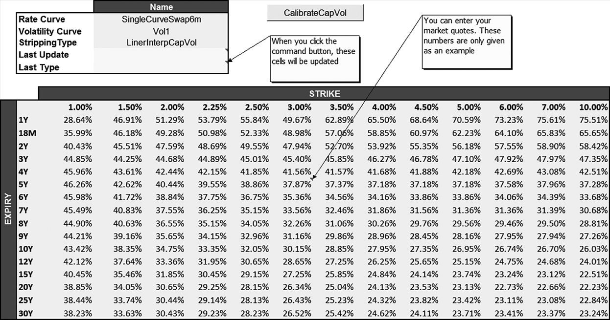
Figure A4.1 Screenshot of cap volatilities from Excel
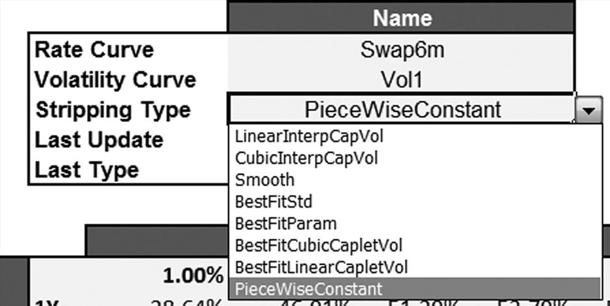
Figure A4.2 Screenshot of different stripping approach from Excel
Store an instance of Bilinear interpolator in the interpolator Dictionary. In the Excel DNA Code we instantiate Dictionary<string, BilinearInterpolator> CapletVolDictionary.
Here is the VB code for the command button CalibrateCapVol:
Sub LoadCapVolVB() Application.Run ("LoadCapVol") Calculate End Sub
Here is code from LoadCapVol method using ExcelDNA:
public static void LoadCapVol() {
try
}
{
dynamic xlApp; xlApp = ExcelDnaUtil.Application; #region Load Data from Excel string[] tenor = ... double[] strike = ... List<double[]> Vol = ... string strippingType = .... #endregion
if (strippingType == "LinerInterpCapVol") { BI = (new
CapletMatrixVolBuilder<MonoStrikeCapletVolBuilderInputInterpLinear>
(tenor, Curve,strike, Vol)).BI; }
else if (
.... string idCode = ... string idCodeVol = ...
....
CapletVolDictionary[idCodeVol] = BI; // If true, updates it
.... }
Then we use the following UDFs:
[ExcelFunction(IsVolatile = true, Category =...)] public static object GetCapletVolBound(bool Xbound,string idCapVol, bool OutColumn){..}
This function returns the xarr (Xbound==true) of the idCapVol bilinear interpolator from the dictionary. The result will be a row or a column (OutColumn== true):
[ExcelFunction(IsVolatile = true, Category = ...)] public static object GetCapletVolT(string idCapVol, double T, double strike){..}
This function returns the Caplet volatility for a given expiry and strike. Using these two functions we create a plot comparing the effect of bootstrapped caplet volatility using different MonoStrikeCapletVolBuilder instances. We represent the results for a specific strike having a value 1.00%. Using the sheet ‘CapletVolForPlot’ in the file ‘CapFloorSwaption.xls’ we calculate data for each strike. We represent the results in Figure A4.3.
55%
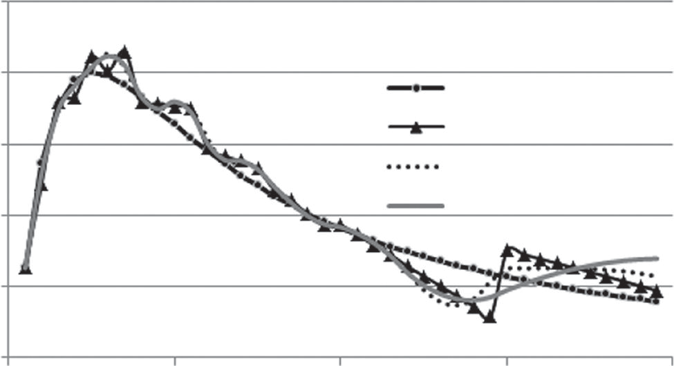
Cap stripping
50%
BestFitParam LinearInterpCapVol CubicInterpCapVol Smooth
Volatility
45%
40%
35%
30%
- 5 10 15 20 T
Figure A4.3 Caplet volatilities comparing stripping approaches
Figure A4.4 shows the best fit using cubic interpolation on caplet volatility, best fit using linear interpolation on caplet volatility and the piecewise constant approach.
Note that caplet volatility shows a typical ‘hump’ as described in Hull 2010.
55%
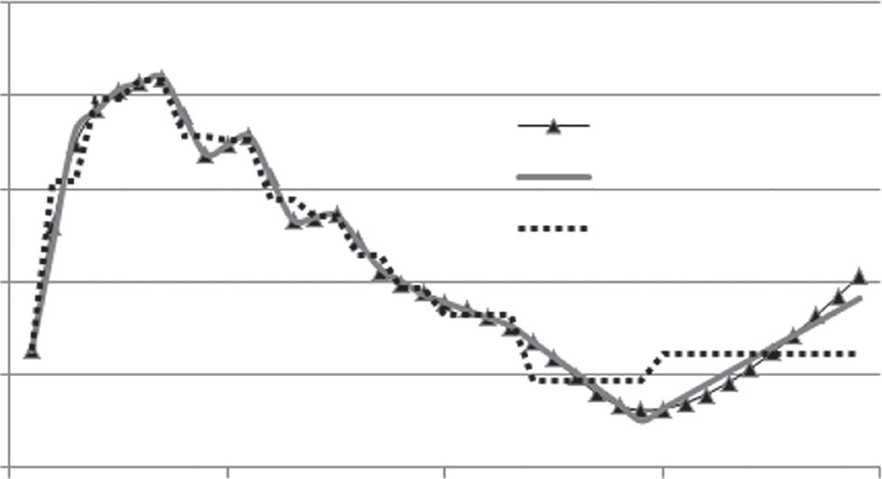
Cap stripping
50%
BestFitCubicCapletVol BestFitLinearCapletVol PieceWiseConstant
Volatility
45%
40%
35%
30%
T
Figure A4.4 Caplet volatilities more stripping approaches
Using the spreadsheet presented in Section A4.2 we calculate the caplet volatility matrix (ˆσj,Z), where 1 ≤ j ≤ NCaplets and 1 ≤ z ≤ NStrikes according to different stripping algorithms. In Figures A4.5(a)–(h) we visualise results from eight different versions of the CapletMatrixVolBuilder class. See more details in Section 17.5.2 and the C# code of the example.
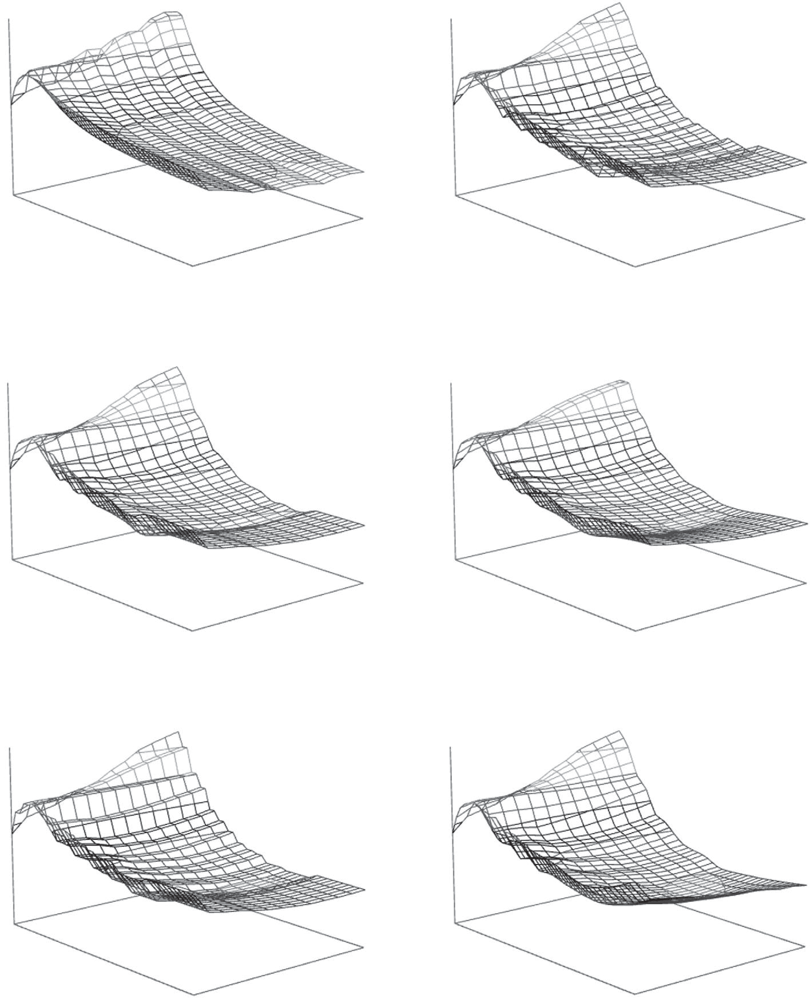
70%
70%
60%
60%
50%
50%
Volatility
Volatility
40%
40%
30%
30%
20%
20%
10%
10%
0%
0%
0.51
0.51
2.50
2.50
4.51
4.51
10.00%
10.00%
6.51
6.51
6.00%
6.00%
8.51
8.51
4.50%
4.50%
10.51
10.51
3.50%
3.50%
12.52
12.52
14.51
2.50%
2.50%
14.51
16.52
16.52
2.00%
2.00%
18.52
18.52
1.00%
1.00%
Expiry
Expiry
Strike
Strike
(a) (b)
70%
70%
60%
60%
50%
50%
Volatility
Volatility
40%
40%
30%
30%
20%
20%
10%
10%
0%
0%
0.51
0.51
2.50
2.50
4.51
4.51
10.00%
10.00%
6.51
6.51
6.00%
6.00%
8.51
8.51
4.50%
4.50%
10.51
10.51
3.50%
3.50%
12.52
12.52
2.50%
14.51
14.51
2.50%
16.52
16.52
2.00%
2.00%
18.52
18.52
1.00%
1.00%
Expiry
Expiry
Strike
Strike
(c) (d)
Best Fit Cubic Interpolation On Caplet Volatility
70%
70%
60%
60%
50%
50%
Volatility
Volatility
40%
40%
30%
30%
20%
20%
10%
10%
0%
10.00% 0%
0.51
0.51
2.50
2.50
4.51
4.51
10.00%
6.51
6.51
6.00%
6.00%
8.51
8.51
4.50%
10.51
4.50%
10.51
3.50%
12.52
3.50%
12.52
14.51
2.50%
14.51
2.50%
16.52
2.00%
16.52
2.00%
18.52
1.00%
18.52
1.00%
Expiry
Expiry
Strike
Strike
(e) (f)
Figure A4.5 (a) Best fit (b) Linear interpolation (c) Interpolation on cap volatility (d) Best fit on smoothness condition (e) Best fit standard (f) Best fit, cubic interp. on caplet vols (continued)
Piecewise Constant
Best Fit Linear Interpolation On Caplet Volatility
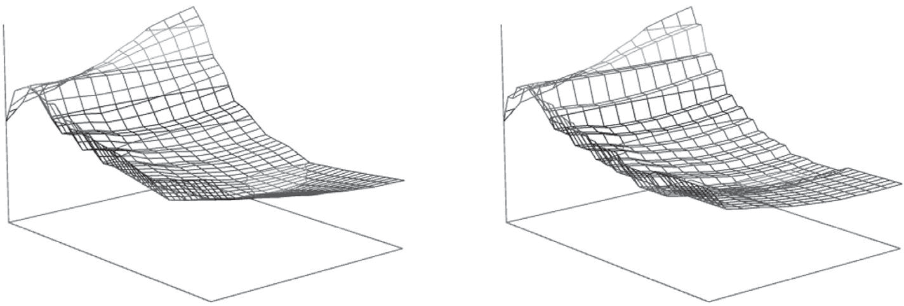
70%
70%
60%
60%
50%
50%
Volatility
Volatility
40%
40%
30%
30%
20%
20%
10%
10%
0%
0%
0.51
0.51
2.50
2.50
4.51
4.51
10.00%
10.00%
6.51
6.51
6.00%
8.51
6.00%
8.51
4.50%
10.51
4.50%
10.51
3.50%
12.52
3.50%
12.52
2.50%
14.51
14.51
2.50%
16.52
2.00%
16.52
2.00%
18.52
1.00%
18.52
1.00%
Expiry
Expiry
Strike
Strike
(g) (h)
Figure A4.5 (Continued) (g) Best fit, linear interp. on caplet vols (h) Piecewise constant
We check the call–put parity for caplets and swaptions using the Excel file ‘CapFloorSwaption.xls.’ The reference formulae are equations 17.9, 17.10 and 17.11. We have implemented C# methods in the class Formula to calculate the prices of options:
public static double Swaption(double N, double S, double K, double sigma, double T, bool isPayer, double A)
public static double CapletBlack(double T, double yf, double N, double K, double sigma, double df, double fwd)
public static double FloorletBlack(double T, double yf, double N, double K, double sigma, double df, double fwd
We create a UDF with Excel DNA library. Here is the code for a caplet and floorlet:
[ExcelFunction(IsVolatile = true, Category = "RateCurveDna")] public static object CapletPrice(double T, double yf, double fwd,
double df, double capletVol, double strike, double nominal) {
try {
return Formula.CapletBlack(T,yf,nominal,strike,capletVol,df,fwd);
} catch (Exception e) {
return e.ToString(); }
}
Figure A4.6 shows the Excel screenshot for a swaption:
Annuity (A) 7.05 Sigma 50.50% FwdAtm (ATMF) 1.50% Srike (K) 2.00% OptionExpiry 1 Nominal 1 Payer Price (Ppx) 1.074% Receiver Price (Rpx) 4.599% |
Call Put Parity |
Rec-Payer –3.525% AxNx (ATMF-K) –3.525% |
Figure A4.6 Call-put parity for swaptions
Figure A4.7 shows the Excel screenshot for a caplet and for a floorlet:
T YF DF K Fwd 0.95% Vol 50% N 10,000,000.00 Caplet (C) 4,192.75 Ftoorlet (F) 5,437.12 1.0000 0.2500
|
Call Put Parity |
C-F (Fwd-K)∗YF∗DF∗N –1,244.38 –1,244.38 |
Figure A4.7 Call-put parity for caplet and floorlet
As we can see the call–put parity is verified in both cases. As an exercise you can check the call–put parity also for caps and floors.
In this example we calculate a matrix of cap prices (Cimkt,z ), where each element Cimkt,z is the cap price calculated using formula 17.3, where 1 ≤ i ≤ NCaps and 1 ≤ z ≤ NStrikes. We use Excel for input and output using Excel-DNA library. Here are the main steps:
1. Build a rate curve using the approach taken in Chapters 15 and 16. This rate curve provides relevant data for following points.
2. Bootstrap caplet volatilities. We have a matrix of cap volatilities (σi,z), where 1 ≤ i ≤ NCap and 1 ≤ z ≤ NStrikes, available from the market. We assume each cap is 6m-base cap. Using a chosen stripping method we calculate the caplet volatility matrix (ˆσj,Z), where 1 ≤ j ≤ NCaplets and i < j.
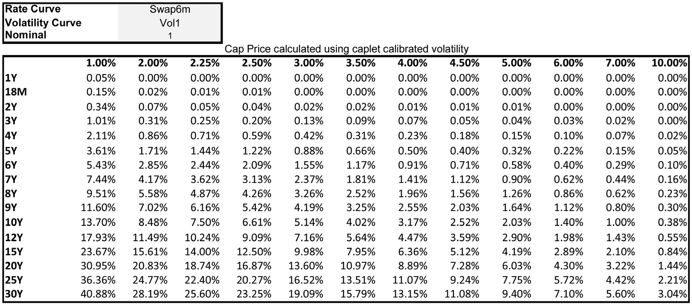
3. Calculate a matrix of cap prices (Cimkt,z ), where each element Cimkt,z is the cap price calculated using formula 17.3.
4. Calculate a matrix of cap prices (Citheor,z ), where each element is a cap price calculated using relevant caplet volatilities, thus Citheor,z = f ({σˆj,z}j=1,..i). Finally, check that each element
of the matrix (Cimkt,z ) is equal to each element of matrix (Citheor,z ). The process is the same as that presented for one strike in Table 17.1.
In the following example we use the rate curve ‘Swap6m’, and the volatility curve ‘Vol1’. All premiums are referred to a nominal of 1 (see the Excel screenshot in Figure A4.8). Finally, calculating the differences in price between the two matrices we see that there is no difference for any elements in most cases. It depends on which algorithm is used in stripping the volatility. In the case of best fit algorithms it depends first on how the optimisation is performed and second on the number of fitting parameters. Note that using MonoStrikeCapletVolBuilderBestFitFunct for caplet volatility stripping we see some differences between the two matrices since the algorithm can only accept four parameters. Check the differences in price using the file ‘CapFloorSwaption.xls’, in the table ‘Prices Differences’ of the sheet ‘CapVol’.
Each price of the Figure A4.8 is calculated using the Excel DNA formula:
[ExcelFunction(IsVolatile = true, Category = "RateCurveDna")] public static object CapPrice(string idRate, string idVol, string tenor,
double strike, double nominal) {
try {
IRateCurve MyCurve = null; //Initialize a multi curve BilinearInterpolator VolCapletMatrix = null; if (CapletVolDictionary.TryGetValue(idVol, out VolCapletMatrix)) {
if (CurveDictionary.TryGetValue(idRate, out MyCurve)) {
}
return Formula.CapBlack(tenor, strike, nominal, CurveDictionary[idRate], CapletVolDictionary[idVol]);
} else { return "IdCode not found"; // Curve not found }
} else {
return "CapletVolMatrix not found"; // Vol not found }
} catch (Exception e) {
return (string)e.ToString(); }
The goal of this exercise is to price a multi-strike amortising cap. Using the tools at our disposal we price a cap where the notional amount and the strike change over the cap schedule (according to Section 17.2.5). We develop a spreadsheet where we can easily modify the nominal and strike for each caplet. Here are the main steps:
1. Build a rate curve. This can be done using the approach shown in Chapters 15 and 16.
2. Bootstrap caplet volatilities.
3. We create the caplet schedule using Excel-DNA. Starting from the start date and end date of the cap this function calculates all relevant dates for each caplet in the cap. It also calculates the relevant forward rate and discount factor:
[ExcelFunction(IsVolatile = true, Category = "RateCurveDna")] public static object[,] CapSchedule(string tenor, string idRate) {
... }
The output matrix has seven columns, namely start of the caplet, end of the caplet, payment date of the caplet, time to maturity of caplet in year (t), year fraction of caplet length (yf), relevant forward rate and finally discount factor on payment date.
4. We get the correct volatility given T and the strike. Starting from the matrix that is calculated in step 2) we use bilinear interpolation to get the correct volatility. A UDF function is used:
[ExcelFunction(IsVolatile = true, Category = "RateCurveDna")] public static object GetCapletVol(string idCapVol,
double refDate, double targetDate, double strike) {
... BilinearInterpolator bi = null;
...
Date refD = new Date(refDate); Date tgtD = new Date(targetDate); double T = refD.YF_365(tgtD); return bi.Solve(T,strike);
... }
5. We calculate each caplet price using the basic caplet price formula:
[ExcelFunction(IsVolatile = true, Category = "RateCurveDna")] public static object CapletPrice(double T, double yf, double fwd, double df,
double capletVol, double strike, double nominal) {
try {
return Formula.CapletBlack(T,yf,nominal,strike,capletVol,df,fwd);
} catch (Exception e) {
return e.ToString(); }
}
Finally we structure the spreadsheet to sum all caplet prices. The screenshot is shown in Figure A4.9.
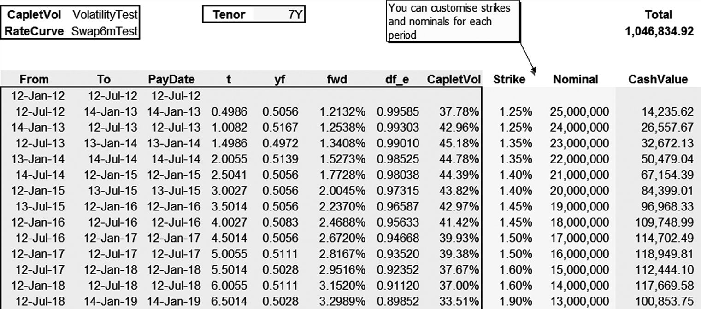
Figure A4.9 Screenshot of pricing multi-strike, amortising cap using sample data
We can change the strike and the notional amount to see the effect on the total value.
In this example we show two UDFs in Excel-DNA for swaptions, namely GetSwaptionVol() and SwaptionPrice(). To view them we open the Excel file ‘CapFloorSwaption.xls’.
The UDF GetSwaptionVol() computes the correct volatility given the swaption volatility matrix and swaption data. The code uses bilinear interpolation:
[ExcelFunction(IsVolatile = true, Category = "RateCurveDna")] public static object GetSwaptionVol(string idRate, string expiry,
string tenor, string idVol) {
try {
BilinearInterpolator Vol = null; if (SwaptionVolDictionary.TryGetValue(idVol, out Vol)) {
... double Exp = ... double Tenor = ... return SwaptionVolDictionary[idVol].Solve(Exp, Tenor);
} else {
return "SwaptionVolMatrix not found"; //vol not found }
} catch (Exception e) {
return (string)e.ToString(); }
}
Figure A4.10 is the screenshot with some data.
Volatility From Matrix |
30Y 30Y VolSwaption1 Swap6m 17.95% Expiry SwapTenor VolMatrix Rate Curve Volatility From Matrix |
Figure A4.10 Bilinear interpolation for swaption volatility
[ExcelFunction(IsVolatile = true, Category = "RateCurveDna")]
public static object SwaptionPrice(string idRate, string idVol, string expiry, string tenor, double strike, double nominal, string PayerOrRec)
{
...
IRateCurve MyCurve = ... BilinearInterpolator Vol = ...
... bool isPayer = false;
if (PayerOrRec == "Payer") isPayer = true; return Formula.Swaption(nominal, strike, expiry, tenor, isPayer,
SwaptionVolDictionary[idVol], CurveDictionary[idRate]);
... }
The output in Figure A4.11 is shown in bold text:
Rate Curve Swap6m VolatilityCurve VolSwaption IsPayer Payer Strike 2.00% OptionExpiry 2Y SwapTenor 5Y Nominal 1,000,000 ATMFwd 2.374% |
28,740.15 2.874% Swaption Price Price % |
ATMFwdSwaption % 2.022% Straddle % 4.045% |
Figure A4.11 Single swaption and straddle pricer
Note that if we use the ATM forward rate as strike then the payer and receiver swaption will have the same price. To get the straddle price we multiply the payer or receiver price by a factor of two at the money forward. For more details, see Section 17.2.6.
In this example (starting from the volatility matrix using given numbers as an example) we calculate the value of the premium of the straddle for each point of the matrix. We use the Excel spreadsheet ‘CapFloorSwaption.xls’. The example consists of 4 steps:
1. Build a rate curve and add the rate curve to a C# dictionary CurveDictionary. This can be done using an approach as shown in Chapters 15 and 16.
2. Load the matrix of swaption volatilities. The matrix of Black’s swaption volatilities (σe,t) quoting Nexpiry expiry Ntenor and tenor, where 1 ≤ e ≤ Nexpiry and 1 ≤ t ≤ Ntenor. See Figure A4.12.
An example on how to read Figure A4.12: the volatility of a swaption expiring in 1Y on 10Y swap in the table is 30%. The year fraction used to calculate time to expiry is ACT/365. Using the command button in the sheet ‘Load Swaption Vol’ we initialise a bilinear interpolator in C# using the volatility matrix (σe,t). We instantiate a C# dictionary SwaptionVolDictionary and we add the following pair: key the string Volatility Curve (Figure A4.12 ‘VolSwaption1’) and value the instance of a bilinear interpolator. A rate curve is needed and it should be already defined as in 1). In the example the rate
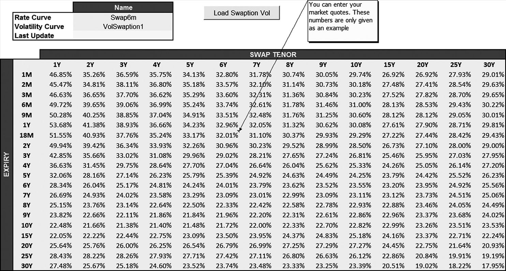
Figure A4.12 Example of swaption Black volatility matrix
curve is ‘Swap6m’. Here is the code of VBA macro assigned to the command button ‘Load Swaption Vol’:
Sub LoadSwaptionVolVB() Application.Run ("LoadSwaptionVol") Calculate End Sub
The macro will call the code developed using Excel-DNA:
#region Load Swaption Vol matrix public static void LoadSwaptionVol() {
try {
dynamic xlApp; xlApp = ExcelDnaUtil.Application;
#region Load Data from Excel string[] Expiry = myArray<string>(xlApp.Range["SwaptionExpiry"].Value2); string[] Tenor = myArray<string>(xlApp.Range["SwaptionTenor"].Value2); string idCode = (string)xlApp.Range["SwaptionRateCurve"].Value2;
List<double[]> Vol = FromXlMatrix<double>(xlApp.Range["SwaptionVolData"].Value2); #endregion
#region UpDating Dictionary string idCodeVol = (string)xlApp.Range["SwaptionVolCurve"].Value2;
try {
if (CurveDictionary.ContainsKey(idCode) == true) {
IRateCurve curve = CurveDictionary[idCode]; // Getting my curve
Date refDate = curve.RefDate();//curve ref date Date today = refDate.add_workdays(-2);
double[] SExpiry = (from e in Expiry select today.YF_365(refDate.add_period(e,
false).add_workdays(-2))).ToArray(); double[] STenor = (from t in Tenor
select (new Period(t)).TimeInterval()).ToArray(); BilinearInterpolator BI = new BilinearInterpolator(SExpiry,
STenor, Vol); if (SwaptionVolDictionary.ContainsKey(idCodeVol) == true) {
SwaptionVolDictionary[idCodeVol] = BI; // If true, updates it
} else {
SwaptionVolDictionary.Add(idCodeVol, BI); // If false, adds it
} xlApp.Range["SwaptionVolMessage"].Value2 = "Loaded @ " +
DateTime.Now.ToString(); // Return time of last load
} else {
xlApp.Range["SwaptionVolMessage"].Value2 =
"Rate Curve Not Found"; }
} catch (Exception e) {
xlApp.Range["SwaptionVolMessage"].Value2 = (string)e.ToString();
} #endregion
} catch (Exception e) {
MessageBox.Show("Error: " + e.ToString()); }
}
3. Calculate ATM strike for each point of the matrix. Referring to Section 17.2.6, for each pair of values, swaption expiry Ee and underlying tenor Tt, we calculate the matrix of ATM
forward swap (SE
e,Tt), where 1 ≤ e ≤ Nexpiry and 1 ≤ t ≤ Ntenor. We use formula (17.5) to calculate each (SE
e,Tt) through the UDF FwdSwapXDna() showed in Chapter 16. Figure A4.13 displays the ATM forward swap matrix.
4. Calculate the straddle value for all points of the matrix. We define the value of a straddle for
a given expiry Ee and underlying tenor Tt as StraddleE
e,Tt, where PE
e,Tt = PE
e,Tt + RE
e,Tt is the price of a payer and RE
e,Tt the price of a receiver with strike ATM forward swap SE
e,Tt) matrix, we use formulae 17.7 or 17.8 (remember that ATM payer price is equal to ATM receiver price). We use the UDF SwaptionPrice() and ATM forward as strike and multiply the premium by 2 to get each straddle premium.
e,Tt. We calculate the straddle prices matrix (StraddleE
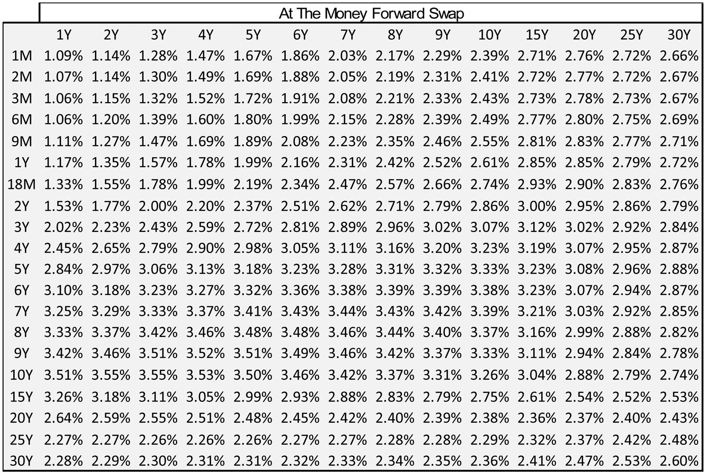
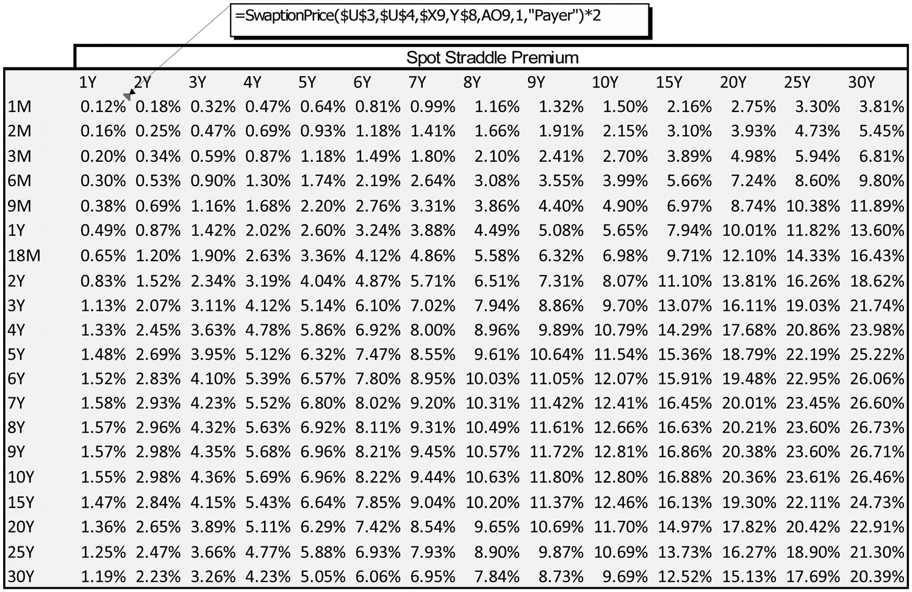
Using the Excel spreadsheet presented in Sections A4.4 and A4.7 perform some tests on using the multi-curve framework in pricing caps, floors and swaptions. Read Chapters 16 and 17 for the necessary background. We stress input data and we manually change curve values.
Answer the following questions:
a) How does the ATM forward rate for cap, floor and swaption change as we shift up or down the Eonia discounting curve while maintaining a constant forwarding curve?
b) How does the price of a cap and floor change by shifting the discounting curve? Does the shift have the same impact for at the money, in the money and out of the money options?
c) Check how a shift in discounting and forwarding curves impacts straddle swaption prices.
d) Modify Excel-DNA formula SwaptionPrice() to price a swaption with premium paid at expiry (forward premium) as explained in Section 17.2.6. You need to modify some C# methods presented in Section 17.5.1. In this case, how does the shift of the discounting curve impact the swaption price?
Bibliography |
Akima, H. 1970. A New Method of Interpolation and Smooth Curve Fitting Based on Local Procedures, Journal of the Association for Computing Machinery, vol 17, no 4, October, 580–602
Akima, H. 1991. Algorithm 697, Transactions on Mathematical Software, vol 17, no 3,
September Albahari, J. and Albahari, B. 2010. C# 4.0 in a Nutshell, O’Reilly Alexander, C. 2005. The Professional Risk Managers’ Handbook: A Comprehensive Guide to
Current Theory and Best Practices. PRMIA Publications
Ametrano, F.M. 2011. Rates Curves for Forward Euribor Estimation and CSA-Discounting, QuantLib Forum, London, 18 January
Ametrano, F.M. and Bianchetti, M. 2009. Bootstrapping the Illiquidity – Multiple Yield Curves Construction for Markets Coherent Forward Rate Estimation. Available at SSRN (http://ssrn.com/abstract=1371311)
Andersen, L. 2007. Discount curve construction with tension splines. Review of Derivatives
Research, vol 10, no 3, December, 227–267
Avellaneda, M., Levy, A. and Paras, A. 1995. Pricing and Hedging Derivative Securities in Markets with Uncertain Volatilities, Journal of Applied Finance, Applied Mathematical Finance, 2, 73–88
Baaquie, B.E. 2010. Interest Rates and Coupon Bonds in Quantum Finance. Cambridge University Press Barakat, H.Z. and Clark, J.A. 1966 On the Solution of Diffusion Equation by Numerical Methods, Journal of Heat Transfer, 88:421–427 Barbashova, A. 2012. Collateral Discounting: Rethinking the Interest Rate Pricing Framework
Batten, J.A., Fetherston, T.A. and Szilagyi, P.G. 2004. European Fixed Income Markets:
Money, Bond and Interest Rates. John Wiley & Sons, Chichester
Decoupling Forwarding and Discounting Yield Curves. http://ssrn.com/abstract=1334356 Bianchetti, M. 2010. Two Curves, One Price. Risk, August, 74–80 Bishop, J. 2007. C# 3.0 Design Patterns. O’Reilly Media Black, F. and Scholes, M. 1973. The Pricing of Options and Corporate Liabilities, Journal of
Boenkost, W. and Schmidt, W. 2005. Cross Currency Swap Valuation. Working Paper, HfBBusiness School of Finance & Management, http://www.frankfurt-school.de/dms/ publications-cqf/FS_CPQF_Brosch_E
Bovey, R., Wallentin, D., Bullen, S. and Green, J. 2009. Professional Excel Development. Addison Wesley
Inflation and Credit. 2nd ed, Springer Bronson, R. 1989. Theory and Problems of Matrix Operations. Schaum/McGraw-Hill Bronson, R. and Naadimuthu, G. 1977. Operations Research. Schaum/McGraw Hill Brown, P.J. 2006. An Introduction to the Bond Markets. John Wiley & Sons Burgard, C. and Kjaer, M. 2010. PDE Representations of Options with Bilateral Counterparty
Risk and Funding Costs. http://ssrn.com/abstract=1605307
Campbell, L.J. and Yin, B. 2007. On the Stability of Alternating-Direction Explicit Methods
for Advection-Diffusion Equations. Wiley-Interscience, New York
Cardelli, L. and Wegner, P. 1985. On Understanding Types, Data Abstractions and Polymorphism, Computing Surveys, vol 17, no 4, December Cartier, E. and Lippert, E. 2005. Visual Studio Tools for Office: Using C# with Excel, Word,
Outlook and InfoPath. Addison Wesley
Castagnoli, E. and Pecati, L. 1996. La Matematica in Azienda: Strumenti e Modelli II - Modelli
Lineari). EGEA
Chibane, M. and Sheldon, G. 2009. Building Curves on a Good Basis. Working Paper, Shinsei Bank. http://papers.ssrn.com/sol3/papers.cfm?abstract_id=1394267 Chisholm, A.M. 2004. Derivatives Demystified: a Step-by-Step Guide to Forwards, Futures,
Swaps & Options. John Wiley & Sons
Choudhry, M. 2006. The Futures Bond Basis, 2nd Edition. John Wiley & Sons
Choudhry, M. 2010a. Fixed-income Securities and Derivatives Handbook: Analysis and Valuation. Bloomberg
Choudhry, M. 2010b. The REPO Handbook, 2nd Edition. Elsevier Christensen, J.H.E, Diebold, F.X. and Rudebusch, G.D. 2007. The affine arbitrage-free class
of Nelson-Siegel term structure models. Working paper, 2007-20, FRB of San Francisco Clewlow, L. and Strickland, C. 1998. Implementing Derivative Models. John Wiley & Sons,
Chichester Cox, D.R. 1961. Queues. Chapman & Hall Cox, J.C., Ingersoll, J.E. and Ross, S.A. 1985. An Intertemporal General Equilibrium Model
of Asset Prices, Econometrica, vol 53, 363–384 Credit Suisse 2001. Overnight Indexed Swaps, 11 December. Credit Suisse 2010. A Guide to the Front-End and Basis Swap Market, Fixed Income Research
18 February Dahlquist, G. and Bjorck, A. 1974. Numerical Methods. Dover Dalton, S. 2007. Excel Add-in Development in C/C++, 2nd Edition. John Wiley & Sons Date, C. 1981. An Introduction to Data-base Systems. Addison Wesley DeBoor,C.andSwartz,B.1977.PiecewiseMonotoneInterpolation,JournalofApproximation
Theory, vol 21, 411–416.
dations. Datasim Press
Libraries. Datasim Press
Derivatives, Europe Credit Research, J.P. Morgan, 7 August
Dougherty, R.L., Edelman, A. and Hyman, J.M. 1989. Nonnegativity-, Monotonicity-, Convexity-Preserving Cubic and Quintic Hermite Interpolation, Mathematics of Computation, vol 52, no 186, April, 471–494
Downey, A.B. 2008. The Little Book of Semaphores. Green Tea Press Dubil, R. 2004. An Arbitrage Guide to Financial Markets. John Wiley & Sons Duering,A.2011.UnderstandingBasisSwapSpreads,FixedIncomeSpecialReport,Deutsche
Bank, 1 April
eter in the leading derivative. PhD thesis, Trinity College Dublin Duffy, D.J. 1995. From Chaos to Classes. McGraw Hill Duffy, D.J. 2004a. Financial Instrument Pricing Using C++. John Wiley & Sons, Chichester Duffy, D.J. 2004b. Domain Architectures. John Wiley & Sons, Chichester Duffy, D.J. 2006a. Finite Difference Methods in Financial Engineering. John Wiley & Sons,
Chichester Duffy, D.J. 2006b. Introduction to C++ for Financial Engineers: An Object-Oriented
Approach. John Wiley & Sons
performance C++ Applications. John Wiley & Sons, Chichester Dupire, B. 1994. Pricing with a Smile, Risk, 7, pp. 18–20 Eales, B.A. and Choudhry, M. 2003. Derivative Instruments: A Guide to Theory and Practice.
Butterworth-Heinemann Eurex 2007. Fixed Income Trading Strategies. EUREX. www.eurexchange.com. Euronext.liffe 2004. Introduction to Trading Stir. http://globalderivatives.nyx.com/sites/glo
balderivatives.nyx.com/files/107286.pdf Eysenck, M.W. and Keane, M.T. 2000. Cognitive Psychology. Psychology Press Fabozzi, F. 1993. Bond Markets, Analysis and Strategies. Prentice Hall Fabozzi, F. and Focardi, S. 2004. The Mathematics of Financial Modeling and Investment
Management. John Wiley & Sons
Fichera, G. 1956. Sulle equazioni differenziali lineari ellittico-paraboliche del secondo ordine, Atti Accad. Naz. Lincei. Mem. CI. Sci. Fis. Mat. Nat. Sez. I 8), 5 1956), 1–30. MR 19, 658; 1432
Fichera, G. 1960. On a Unified Theory of Boundary Value Problems for Elliptic-Parabolic Equations of Second Order in Boundary Value Problems, in Differential Equations, ed. R.E. Langer. University of Wisconsin Press
Flavell, R. 2002. Swaps and other Derivatives. John Wiley and Sons, Chichester Fowler, M. 2003. Patterns of Enterprise Application Architecture. Addison Wesley Frege, G. 1952. On Sense and Reference, in Translations from the Philosophical Writings of
Gottlob Frege, eds. P. Geach and M. Black. Blackwell
Fritsch, F.N. and Carlson, R.E. 1980. Monotone Piecewise Cubic Interpolation. SIAM Journal
Fujii, M., Shimada, Y. and Takahashi, A. 2009. A Note on Construction of Multiple Swap Curves with and without Collateral. CARF Working Paper Series F-154. http://ssrn.com/ abstract=1440633
Garman, M.B. and Klass, M.J. 1980. On the Estimation of Security Price Volatilities from Historical Data, Journal of Business, vol 53, no 1, 67–78 Garrido, J.M. 1999. Practical Process Simulation Using Object-Oriented Techniques and
C++. Artech House
Gatarek, D., Bachert, P. and Maksymiuk, R. 2006. The LIBOR Market Model in Practice. John
Wiley & Sons Gatheral, J. 2006. The Volatility Surface. John Wiley & Sons, Chichester GOF 1995/Gamma, E., Helm, R., Johnson, R. and Vlissides, J. [The Gang of Four]. 1995.
Golub, G. and Van Loan, C.F. 1996. Matrix Computations. Johns Hopkins University Press Gregory, J. 2009. Being two-faced over counterparty credit risk. Risk, February 2009, pp. 86–90 Hagan. P.S. and West, G. 2006. Interpolation Methods for Curve Construction, Applied Math-
ematical Finance, vol 13, no. 2, June, 89–129
Hagan. P.S. and West, G. 2008. Methods for Constructing a Yield Curve, Wilmott Magazine,
May, 70–81 Hagan, P.S. and Konikov, M. 2004. Interest Rate Volatility Cube: Construction and Use Hagan, P.S., Kumar, D., Lesniemski, A.S. and Woodward, D.E. 2002. Managing smile risk.
Wilmott Magazine, September, 84–108 Haug, E. 2007. The Complete Guide to Option Pricing Formulas. McGraw-Hill Heineman, G.T., Pollice, G. and Selkow, S. 2008. Algorithms in a Nutshell. O’Reilly
Media Henderson, T.M. 2003. Fixed Income Strategy: The Practitioner’s Guide to Riding the Curve. John Wiley & Sons Henrard, M. 2005. Swaptions: 1 Price, 10 Deltas, and 6 1/2 Gammas. Wilmott Magazine,
November, 48–57 Henrard, M. 2007. The Irony in the Derivatives Discounting. Wilmott Magazine, July, 92–98 Henrard, M. 2009. The Irony in the Derivatives Discounting Part II: The Crisis. Preprint,
Dexia Bank, Brussels Hull, J.C. 2010. Options, Futures and Other Derivatives. 7th ed, Prentice Hall Hull, J.C. and White, A. 1990. Pricing Interest Rate Derivative Securities, Review of Financial
Studies 3, 573–592
Hussain, M.Z. and Hussain, M. 2006. Visualisation of Surface Data Using Rational Bicubic Spline, Punjab University Journal of Mathematics, vol 38, 85–100 Hyman, J.M. 1983. Accurate Monotonicity Preserving Cubic Interpolation. SIAM Journal on
Scientific and Statistical Computing, vol 4, pp. 645–654 ICAP 2010. Communications to clients, 11 August and 15 September I’lin, A.M., Kalashnikov, A.S. and Oleinik, O.A. 1962. Linear Equations of the Second Order
of Parabolic Type (translation), Russian Mathematical Surveys ISDA 2000. ISDA definitions, 2000 ISDA 2010. ISDA Margin Survey 2010. http://www.isda.org Jackel, P. and Kawai, A. 2005. The future is convex. Wilmott Magazine, 2–13 Jackson, M. and Staunton, M. 2001. Advanced Modelling in Finance Using Excel and VBA.
John Wiley & Sons Jamshidian, F. 1989. An Exact Bond Option Formula, Journal of Finance, vol 44, no 1, March, 205–209 Johannes,M.andSundaresan, S.2007.TheImpactofCollateralizationonSwapRates,Journal
of Finance, vol 62, 383–410.
Johannes, M. and Sundaresan, S. 2003. Pricing collateralized swaps - Columbia Business
Scholl Working Paper. Jorion, P. 2011. Financial Risk Manager Handbook, 6th Edition. John Wiley & Sons Kangro, R. and Nicolaides, R. 2000. Far Field Boundary Conditions for Black-Scholes Equa-
tions. SIAM Journal on Numerical Analysis, vol 38, no 4, 1357–1368 Kernighan, K.R. and Ritchie, D. 1988. The C Programming Language. Prentice Hall Kijima, M., Tanaka, K. and Wong, T. 2009. A Multi-Quality Model of Interest Rates. Quanti-
tative Finance, vol 9, no 2, 133–145 Kirikos, G. and Novak, D. 1997. Convexity conundrums. Risk, March, 60–61 Krgin, D. 2002. The Handbook of Global Fixed Income Calculations. John Wiley & Sons Kushnir, V. 2009. Building the Bloomberg Interest Rate Curve – Definition and Methodology.
Bloomberg L.P., September Ladyˇzenskaja, O.A., Solonnikov, V.A. and Ural’ceva, N.N. 1988. Linear and Quasi-linear
Equations of Parabolic Type. American Mathematical Society Laney, C.B. 1998. Computational Gasdynamics. Cambridge University Press Larkin, B.M. 1964. Some Stable Explicit Difference Approximations to the Diffusion Equa-
Lawson, J.D. and Morris, J.L. 1978 The extrapolation of first order methods for parabolic partial differential equations. SIAM Journal on Numerical Analysis, vol 15, December, 1212–1225
Leavens, G.T. and Sitaraman, M. (eds.) 2000. Foundations of Component-based Systems. Cambridge University Press
Leisen, D.P.J. and Reimer, M. 1996. Binomial Models for Option Valuation – Examining and Improving Convergence, Applied Mathematical Finance, vol 3, 319– 346
Leung, S. and Osher, S. 2005. Alternating Direction Explicit (ADE) Scheme for Time-
Dependent Evolution Equations. Preprint UCLA, 9 June
Levenberg, K. 1944. A Method for the Solution of Certain Nonlinear Problems in Least
Squares, Quarterly Applied Mathematics, vol 2, 164–168 Levin, K. 2010. Bloomberg Volatility Cube – Bloomberg L.P. Levy, M. and Paras, A. 1995. Pricing and Hedging Derivative Securities in Markets with
Uncertain Volatilities, Applied Mathematical Finance, vol 2, 73–88
Li, G. and Jackson, C.R. 2007. Simple, Accurate and Efficient Revisions to MacCormack and Suly’ev Schemes: High Peclet Numbers, Applied Mathematics and Computation, vol 186, 610–622
Liberty, J. and Xie, D. 2008. Programming C# 3.0. O’Reilly Media Liffe 2002. Liffe Options a guide to trading strategies. http://globalderivatives.nyx.com/sites/
globalderivatives.nyx.com/files/107297.pdf
Liffe NYSE-Euronext 2007. Interest Rate Portfolio Short Term Interest Rate Products. Available online at http://globalderivatives.nyx.com/sites/globalderivatives.nyx.com/files/ 268469.pdf
Madigan, P. 2008. Libor under attack. Risk, June Magennis, T. 2010. Linq to Objects Using C# 4.0. Addison-Wesley Marquardt, D.W. 1963. An Algorithm for Least Squares Estimation of Nonlinear Parameters,
Martellini, L., Priaulet, P. and Priaulet, S. 2003. Fixed-income Securities: Valuation, Risk
Managemen and Portfolio Strategies. John Wiley & Sons Matlab 2012. User’s Guide – Matlab Mattson, T.G., Sanders, B.A., Massingill, B.L. 2005. Patterns for Parallel Programming.
Addison-Wesley Mercurio, F. 2007. No-arbitrage conditions for cash settled swaptions. Available at http:// www.fabiomercurio.it/cashsettled_note.pdf Mercurio, F. 2009. Interest Rates and the Credit Crunch: New Formulas and Market Models. Available online at: http://papers.ssrn.com/sol3/papers.cfm?abstract_id=1332205 Mercurio, F. and Lipman, H. 2010. The New Swap Math - Bloomberg Markets – 2010, Pages: 1–3 Merton, R.C. 1973. Theory of Rational Option Pricing, Bell Journal of Economics and Man-
Michaelis, M. 2008. Essential C# 3.0 For .NET Framework 3.5, 2nd Edition. Addison-
Wesley Michaelis, M. 2010. Essential C# 4.0, 3rd Edition. Addison-Wesley Miron, P. And Swannell, P. 1992. Pricing and Hedging Swaps. Euromoney Publications Mitchell, A.R. and Griffiths, D.F. 1980. The Finite Difference Method in Partial Differential
Equations. John Wiley & Sons, Chichester
Morini, M. 2009. Solving the Puzzle in the Interest Rate Market (Part 1 & Part 2), SSRN working paper, http://ssrn.com/abstract=1506046 Morini, M. 2011. Understanding and Managing Model Risk: A Practical Guide for Quant,
Mutkin, L. 2012. What Future for LIBOR? Interest Rate Strategy, 12 July 2012. Morgan Stanley Nashikkar, A. 2011. Understanding OIS discounting, Interest Rates Strategy, 24 February, Barclays Capital Natenberg, S. 1994. Option Pricing and Volatility: Advanced Trading Strategies and Tech-
niques. McGraw-Hill
Nawalkha, S.K., Soto, G.M. and Beliaeva, N.K. 2005. Interest Rate Risk Modeling The Fixed
Neftci, S.N. 2000. An Introduction to the Mathematics of Financial Derivatives, 2nd Edition. Academic Press Nelson, C.R. and Siegel, A.F. 1987. Parsimonious Modeling of Yield Curves. Journal of
Business, vol 60, no 4, 473–489
Neu-Ner, T. 2005. An Effective Binomial Tree Algorithm for the CEV Model, PhD Thesis, University of the Witwatersrand, Johannesburg, South Africa
Nielsen, B.F., Skavhaug, O. and Tveito, A. 2002. Penalty and front-fixing methods for the numerical solution of American option problems, Journal of Computational Finance, vol 5 no 4
Nyse Liffe 2008. Short Term Interest Rate (“STIR”) Options Contracts, Introduction of Stir Option Exercise Price of 100.00 (“Par”) and above “London Info-Flash No.LO09/08”. http://globalderivatives.nyx.com/sites/globalderivatives.nyx.com/files/476163.pdf
Nyse Liffe 2011. Euribor Futures and Options Contracts. http://globalderivatives.nyx.com/ sites/globalderivatives.nyx.com/files/euribor_web_oct_11.pdf O’Kane, D. 2000. Introduction to Asset Swaps. Analytical Research Series, European Fixed
Oleinik, O.A. and Radkevic, E.V. 1973. Second Order Equations with Nonnegative Characteristic Form, translated from Russian by Paul C. Fife, American Mathematical Society OMG 2000. Object Lifecycle Services Object Management Group. www.omg.org Pallavicini, A. and Tarenghi, M. 2010. Interest-Rate Modeling with Multiple Yield Curves,
SSRN working paper, http://ssrn.com/abstract=1629688 Pealat, G. and Duffy, D.J. 2011. The Alternating Direction Explicit (ADE) Method for One
Factor Problems, Wilmott Magazine, July, 54–60 Phillips, G.M. 2003. Interpolation and Approximation by Polynomials. Springer Piacsek, S.A. and Williams, G.P. 1970. Conservation Properties of Convection Difference
Schemes, Journal of Computational Physics, vol 6, no 3, December Piterbarg, V. 2010. Funding Beyond Discounting: Collateral Agreements and Derivatives Pricing. Risk, February, 97–102 Piterbarg, V.V. and Renedo, M.A. 2006. Eurodollar futures convexity adjustments in stochastic volatility models. Journal of Computational Finance, vol 9, no 3 POSA 1996 / Buschmann, F., Meunier, R., Rohnert, H., Sommerlad, P. and Stal, M. 1996.
Press, W.H., Teukolsky, S.A., Vetterling, W.T. and Flannery, B.P. 2007. Numerical Recipes:
the Art of Scientific Computing. Cambridge University Press, 3rd Edition, 2007
Rasch, P.J. and Williamson, D.L. 1989. A Comparison of Shape Preserving Interpolators. Technical note, National Center for Atmospheric Research, Boulder, Colorado Richtmyer, R.D. and Morton, K.W. 1967. Difference Methods for Initial-Value Problems,
Wiley-Interscience, New York Rebonato, R. 1998. Interest-Rate Option Models. John Wiley & Sons Rebonato, R. 2002. Modern Pricing of Interest Rate Derivatives: The LIBOR Market Model
and Beyond, Princeton University Press
Rebonato, R. 2004. Volatility and Correlation: The Perfect Hedger and the Fox, 2nd Edition. John Wiley & Sons
Roache, P.J. 1998. Fundamentals of Fluid Dynamics. Hermosa Publishers, Albuquerque Roberts, K.V. and Weiss, N.O. 1966. Convective Difference Schemes. Mathematical Comput-
ing, vol 20, 272–299 Rogerson, D. 1997. Inside COM. Microsoft Press Roman, S. 2002. Writing Excel Macros with VBA, 2nd Edition. O’Reilly Media Ron, U. 2000. A Practical Guide to Swap Curve Construction. Working Paper 2000–17 Bank
of Canada Rouah, F.D. and Vainberg, G. 2007. Option Pricing Models & Volatility Using Excel-VBA – John Wiley & Sons Rumbaugh, J., Blaha, M., Premerlani, W., Eddy, F. and Lorenson, W. 1999. Oriented Modeling
and Design, Prentice-Hall
Sadr, A. 2009. Interest Rate Swaps and their Derivatives. A Practitioner’s Guide. John Wiley & Sons Samarski, A.A. 1964. An Economical Algorithm for the Numerical Solution of Systems of Differential and Algebraic Equations. Zh. vych. mat., vol 4 no 3, 580–585 Samarski, A.A., Matus, P.P. and Vabishchevisch, P.N. 2002. Difference Schemes with Operator
Factors. Kluwer
Saul’yev, V.K. 1964. Integration of Equations of Parabolic Type by the Method of Nets.
Pergamon Press Scales, L.E. 1985. Introduction to Non-linear Optimization. Macmillan Sch¨onbucher, P.J. 2003. Credit Derivatives Pricing Models: Models, Pricing and Implemen-
tation. John Wiley & Sons
Sharp, N.J. 2006. Advances in Mortgage Valuation: An Option-Theoretic Approach. PhD thesis, University of Manchester, UK
Sheppard, R. 2007. Pricing Equity Derivatives under Stochastic Volatility: A Partial Differential Equation Approach. MSc thesis, University of Witwatersrand, Johannesburg, South Africa
Spiegel, M. 1969. Theory and Problems of Real Variables, Lebesgue Measure and Integration.
Schaum/McGraw-Hill Stoer, J. and Bulirsch, R. 1980. Introduction to Numerical Analysis. Springer Taleb, N.N. 1997. Dynamic Hedging: Managing Vanilla and Exotic Options. John Wiley &
Sons Tang, Y. and Li, B. 2007. Quantitative analysis, derivatives modelling, and trading strategies:
in the presence of counterparty credit risk for fixed-income market. World Scientific
Tannehill, J.C., Andersen, D.A. and Pletcher, R.H. 1997. Computational Fluid Mechanics and
Heat Transfer. Taylor & Francis.
Tavella,D.andRandall,C.2000.PricingFinancialInstruments:TheFiniteDifferenceMethod. John Wiley & Sons, New York Thomas, J.W. 1999. Numerical Partial Differential Equations, vol 2; Conservation Laws and
Elliptic Equations. Springer
Tian,M.2011.Monotonicity-PreservingPiecewiseRationalCubicInterpolation.International
Toivanen, J. 2008. Numerical Valuation of European and American Options under Kou’s Jump-Diffusion Model, SIAM, Journal on Scientific Computing, vol 30, no 4, 1949– 1970
Topper, J. 2005. Financial Engineering with Finite Elements. John Wiley & Sons, Chichester Towler, B.F. and Yang, R.Y.K. 1976. Numerical Solution of Nonlinear Parabolic Partial Dif-
ferential Equations by Asymptotic Finite Difference Formulae, Chemical Engineering Journal, 12, 81–87
Towler, B.F. and Yang, R.Y.K. 1978. Numerical Stability of the Classical and Modified Saul’yev Finite Difference Methods. Computers and Chemical Engineering, 2, 45–51
Tuckman, B. 2002. Fixed income securities: tools for today’s market, 2nd Edition. John Wiley & Sons Tuckman, B. and Porfirio, P. 2003. Interest rate parity, money market basis swaps, and cross-
currency basis swaps. Fixed income liquid markets research, Lehman Brothers, June Van Vliet, B. 2007. Building Automated Trading Systems, Academic Press Varga, R. 1962. Matrix Iterative Analysis, Prentice Hall Vasicek, O. 1977. An Equilibrium Characterization of the Term Structure, Journal of Financial
Economics, vol 5, 77–88 Walkenbach, J. 2007. Excel 2007 Power Programming. John Wiley & Sons, Chichester Wang, F. 2006. Quantitative Methods and application in GIS. Taylor & Francis Group Webber, N. and James, J. 2000. Interest Rate Modeling: Financial Engineering. John Wiley
& Sons West, G. 2009. Interest Rate Derivatives. Lecture notes 1 September, www.finmod.co.za Whaley, R.E. 2006. Derivatives: Markets, Valuation, and Risk Management. John Wiley &
Sons Widder, D.V. 1989. Advanced Calculus. Dover Wilmott, P. 1998. Derivatives: The Theory and Practice of Financial Engineering. John Wiley
& Sons Wilmott, P. 2006. Paul Wilmott on Quantitative Finance, 2nd Edition. John Wiley & Sons,
Chichester Windas, T. 1996. An Introduction to Option-adjusted Spread Analysis. Bloomberg Press Wirfs-Brock, R., Wilkerson, B. and Wiener, L. 1990. Designing Object-Oriented Software.
Prentice Hall Wong, H.Y. and Jing, Z. 2008. An Artificial Boundary Method for American Option Pricing
under the CEV Model, SIAM Journal of Numerical Analysis, vol 46, no 4, May Worner, M. 2004. Applied C# in Financial Markets. John Wiley & Sons Yanenko, N.N. 1971. The Method of Fractional Steps. Springer Zipf, R. 2003. Fixed Income Mathematics. Academic Press
BBaLibor – BBA Libor explained http://www.bbalibor.com/bbalibor-explained CME: www.cme.com ECB – Collateral http://www.ecb.europa.eu/paym/coll/html/index.en.html Eurex: www.eurexchange.com Euronext.Liffe: www.liffe.com http://www.alglib.net/ http://www.mathdotnet.com/ http://quantlib.org http://globalderivatives.nyx.com/sites/globalderivatives.nyx.com/files/106420.xls http://globalderivatives.nyx.com/sites/globalderivatives.nyx.com/files/106421.xls http://globalderivatives.nyx.com/sites/globalderivatives.nyx.com/files/106422.xls http://globalderivatives.nyx.com/stirs/nyse-liffe/publications http://www.euribor-ebf.eu/ http://www.euribor-ebf.eu/euribor-ebf-eu/press-releases.html http://www.isda.org/c_and_a/docs/30-360-2006ISDADefs.xls https://mfi-assets.ecb.int/query_EA.htm
https://www.newyorkfed.org/aboutthefed/fedpoints.html Numerix: OIS Discounting and OTC Derivatives: Demystifying the Confusion http://www.numerix.com/Webinar-Details/r/WEBINARS-846 Numerix: Trading, Hedging and Valuation of Overnight Index Swaps http://www.numerix.com/Webinar-Details/r/WEBINARS-645 SGX: www.sgx.com www.dsta.nl www.wilmott.com
Index |
abscissa values 339 absolute value 34 abstract classes 44, 46–47, 53, 64–65, 517, 742 Abstract Data Type (ADT) 126, 654 Abstract Factory 494, 508 abstraction 152 abstract methods 53, 414–415 access control systems 511 accrediting IRS 401 accrual period 169 accrued interest 159, 169 accuracy 707 actions 506 Activator 284 adapters 409, 494 additive process 221 ADE see Alternating Direction Explicit method ad-hoc polymorphism 510 ADT see Abstract Data Type advanced lattices 242–270 AggregateException 701 aggregate systems 511 aggregation 22, 494, 739–740 aggregation/composition 53, 82, 511 aggregation methods 526, 533 Akima method 335, 338, 342, 348–349 ALGLIB 756–758 algorithmic trading systems 709 algorithms 495, 501 Alternating Direction Explicit (ADE) method
241, 255–268, 504, 765–788 Amdahl’s law 708 American options 160, 264 ADE method 262–263 amortising 797–798 amortising cap 463–464 amortising IRS 401 analogical reasoning 215 annuity 162 anonymity 388
anonymous methods 77 API see application programming interface AppDomain 308 application domains 304–309 application manifest 273 application programming interface (API) 277
code generation 298–304 applications 707 approximation, function derivatives 341–342 arbitrage-free conditions 335 arbitragers 369 Arithmetic Mean Method 341 arithmetic operators 13–14 ArrayGenerator 73, 75 ArrayList 123 arrays 97–101, 131–135 Array<T> 131, 135 ASCII characters 12 assemblies 273–276, 304, 309–310 AssemblyInfo.cs 275–276 assembly manifest 273 asset price 241–246 assets 371 asset swap 429, 455 asset swap spread 455 assignment operators 13 association 494, 740 associative arrays 142–144, 152–155 associative containers 142 associative matrices 144 asymptotic accuracy 168, 335 asynchronous delegates 651, 679–681 asynchronous events 708 asynchronous methods 710 ATM see at the money ATMF see at the money forward at the money (ATM) 461, 485–487, 503 at the money forward (ATMF) 466 AtmStrikeBuilder 503 atomicity 652
at par 397 attributes 275, 284, 285, 304
see also custom attributes automated trading systems 709 automatic garbage collection 728–730 automatic property 550 Automation 567–568 automation client 581 automation server 581 AutoResetEvent 676
background threads 684–685 BackgroundWorker 685 backing store classes 186–187 backing store streams 185, 187–189 back office requirements 388 backslash 12 backward induction 226, 233, 243 backward Kolmogorov equation 269 Backward in Time Centred in Space (BTCS) 254 bag 535, 695 banded matrices 99 Barakat-Clark scheme 256 barbershop problem 705 barrier 698–699 barrier options 786 BaseBond 313, 320 base class abstract method 411–412 base class constraint 129 base class constructor 411 base (generalised) class 44 BaseOneDimensionalInterpolator 409,
439 base priority 637 basic level 64, 745 basis 433–434, 467 basis swap 401 BBA see British Bankers Association Beep() 14 behaviour 748 behavioural patterns 495, 500–501 benchmark bond 330 Bermudan option 160 best fit methods 405, 502 bilinear interpolation 335, 352–355, 364–366 binary association 740–741 binary formatter 201
BinaryReader 191 binary semaphore 674 binary serialisation 203
BinaryWriter 191 binding 513 BinomialLatticeStrategy 223 binomial method 215–240, 241, 574 BinomialMethod 226 binomial parameters 219–228
Bisection method 317, 463 BitArray 114 bitwise operators 13 black boxes 512 Black formula 459 Black model 374 Black-Scholes formula 35–36, 83, 246–247
implementing ADE 258–262 blocking 695 block matrices 712 blocks 646 Bond 178 bond data management 321–324 bond description 329 bond details 328–329 BondDictionary 322 bond functionality 165–166, 313–317 bondholder see lender bond indenture 159 BondModel 56 bond models 55–58, 92 bond portfolios 145 BondPricer 178 bond pricing 311–333 bond rating 328 bonds 159–184, 542–543
risks 181 scenarios 543–544
bond scheduling 312–313 bool 13, 114 bootstrapping 437–438 bootstrapping volatility 469–474 borrower see issuer boundary conditions 769–771, 774 bounded blocking collection 719 bounded queues 695 bounds checking 101 Box-Muller algorithm 719 branching constructs 303 Brennan-Schwarz algorithm 233 bridge 494 Bridge design pattern 145, 507 British Bankers Association (BBA) 371 broadcaster 87 BTCS see Backward in Time Centred in Space buffered streams 187 Builder design pattern 494, 496–499, 502–503 BuildingBlock 408 built-in data types 10, 11 bullet 401 bullet bond see plain vanilla bond business day 400
C#
advanced features 53–95 fundamentals 9–24
generics 125–127 implementation 36–39 properties 26, 50 string type 117
C# classes 25–52, 170–174
see also classes C++ 9, 289–298 CAD see computer aided design calculate() 21, 260 calculateBC() 260 calculator 85, 585–589 Calendar 101 calibration 395, 418, 445–446 call feature 160 call options 37
sensitivities 51 call payoff behaviour 777 call put parity 466, 794–795 call risk 181 capacity 674 CapBlack 482–483 CapletBlack 476 caplet price 481–482 caplets 387, 459 caplet volatility 462, 470, 502, 792–794 cap price matrix 795–797 caps 459–461
multi-curve framework 467–469 cap stripping 469–473, 476 captured variables 77 cap volatility 462–463, 789–792 CAS see compare and swap cash-based securities 370 cash flow 113, 145
aggregation 545–546 cash money market 369, 370 casting 65–67, 79, 126 categorisation 745 causing a delay 683 CCPs see clearing houses CCS see cross currency swap CCW see COM Callable Wrapper CDS see Credit Default Swap CEV see Constant Elasticity of Variance chaining decorators 527 chaining query operators 527 chain of responsibility 495 Change 682 character literal 117 characters 12–13 charm 51 charts 565 child objects 205 child thread 641 chunks 711 CIR see Cox-Ingersoll-Ross
classes 9, 53–95 abstract 44, 46–47, 53, 64–65, 517, 742 Activator 284 AppDomain 308 ArrayGenerator 73, 75 Array<T> 131, 135 AtmStrikeBuilder 503 AutoResetEvent 676 BackgroundWorker 685 Barrier 698 BaseBond 313, 320 BaseOneDimensionalInterpolator
409, 439 BinaryReader 191 BinaryWriter 191 BinomialLatticeStrategy 223 BinomialMethod 226 BondDictionary 322 BuildingBlock 408 Connect 599 Console 14–15, 273, 280 ConsoleEuropeanOptionFactory
17–18 Convert 14 CountryInfo 550 Datasim.DataInterpolator 273 Datasim.DataStructures 273 Datasim.DataTime 273 derived 44, 45, 412, 742 DeserializationBinder 324 Director 497, 503 Directory 197 DirectoryInfo 197, 198–199 Draw() 45 DriveInfo 197 DynamicMethod 299 EventArgs 88 EventHandler 88 EventInfo 282 FDM 249 FieldInfo 282 File 196 FileInfo 197, 198–199 FileSystemInfo 197 FloatingRatePlusSpread 332 FloatingSchedule 178, 313 Formula 474 Hashtable<T> 110 HastSet<T> 112–114, 140 InterpAdapter 409 ListedContSpec 383 ListedSTFut 384 ListedSTFutOption 384 locking mechanisms 667–673 ManualResetEvent 676 Matrix<T> 131, 134, 271
classes (Continued ) Mesher 259 MethodInfo 282, 299 Module 277 Monitor 667, 678 MonoStrikeBuilder 503 MonoStrikeCapletVolBuilder 476 MonoStrikeCapletVolBuilderBest-
Fit 477 MultiCurveBuilder 441–442, 450–451,
451–452, 503 NumericMatrix<T> 131, 137, 168, 289 OneStepFDM 70 OpCodes 299 Option 17, 18–20, 38, 42, 217–219, 282 Parallel 687 Path 197 Point 16, 22, 30, 78, 97, 273 Process 636, 637 ProcessStartInfo 637 ProgrammableBase 319 PropertyInfo 282 Random 725 RateSet 407, 408 ReaderWriterLock 715 Schedule 178, 311 Shape 46 SingleCurveBuilder 406, 410 SingleCurveBuilderInterpBestFit
413
SingleCurveBuilderSmoothingFwd
625 Special Functions 20, 22 StopWatch 726–727 System.Reflection 273, 277, 299 Task 691–692 Tensor<T> 131, 139–140 TextReader 191 TextWriter 191 ThreadPool 651 Type 278 Vector<T> 131, 135–136, 289 XLBond 319, 321, 324
class hierarchy 196–199, 313–317, 517 class hierarchy integration 333 class instances 25, 735 class-level binding 74 class methods 25–28, 30–33 class variables 30–33 clean price 160 clearing houses (CCPs) 400, 432 client code 121 clients 26, 68, 82, 210, 509 clock creation 683 Clone() 13, 62–63 closing an open position 388
CLR see Common Language Runtime CMS see Constant Maturity Swap coarse grained locking 670 coarse-grained parallelism 707 coarse-grained pattern 711 code emission see code generation code generation, API 298–304 code integration 328–329 code readability 41, 524 collateral 400 collateralisation 432–433 collateral support annex (CSAs) 400 collection interfaces 107–109 collection libraries 97 collections 525–526
ordering 546–547 serialisation 206–207 synchronising 681–682
COM see Component Object Model COM Callable Wrapper (CCW) 569, 582 command 495 commodity swap 430 Common Language Runtime (CLR) 284–285 comparand 652 comparative advantage 399 compare and swap (CAS) 652 compatibility conditions 255 compiled code 273 component diagrams 82 Component Object Model (COM) 567, 581–583
add-ins 595–623 interoperability 121–122, 569 object model 561–562 optional parameters 591–592
composite pattern 494 composition 67–68, 82, 125, 494
strategies 532–533 compounding swap 401 comprehension queries 526, 528–529 compression streams 187 ComputableFunction() 73, 75 computation 17 computational finance 557 computer aided design (CAD) 511 concept levels 745 concept modelling 743–745 concepts, explanation-based view 44 concrete classes 742–743 concurrency 707 concurrent data structures 694–701 Conditional 285 conditional consistency 776–777 configurable payoff functions 270 configuration data 186 Connect 599 Console 14–15, 273, 280
ConsoleEuropeanOptionFactory 17–18 console input/output 14–15 consolidation algorithms 511 Constant Elasticity of Variance (CEV) 264, 474 Constant Maturity Swap (CMS) 401, 459 constraints 129, 145–152 constructors 25, 226 consumers 509, 654 context class hierarchy 58 context diagram 512 continuations 694 continuously compounded rate 336 contract 125 contract size 372, 383 control point 338 convection-diffusion equation 253 convection-diffusion-reaction 248, 767 convection dominance 246, 254 convection-dominated problems 264 convection terms 246, 773–774 convergence 246 conversion 497 conversion methods 525 conversion operators 540 Convert 14 convertible bond 160 convexity 168, 335, 349 convexity adjustments 372 convoy problem 717 coordinator 625 Copy() 13 copy constructor 25 correlation matrices 145 counterparty risk 371, 373, 388, 400, 432 counting semaphore 674 CountryInfo 550 coupon 159 coupon rate 159 coupon types 159, 311 Cox-Ingersoll-Ross (CIR) model 54, 770 Crank Nicolson method 69, 256, 504, 507, 766 creational patterns 496 Credit Default Swap (CDS) 430 credit risk see default risk Credit Support Annex (CSA) 432, 467 Credit Value Adjustment (CVA) 432 critical sections 305 cross currency swap (CCS) 430 crypto streams 187 CSA see Credit Support Annex CSAs see collateral support annex cubic spline interpolation 335, 338, 343–344,
361–364 culture 273 cumulative distribution functions 20 currency 329, 384
currency risk see exchange-rate risk current position 186 curvature 168 curve building 335–337, 758–759 curve construction 403–405 curve shapes 337–338 custom attributes 286–289 custom binding 513 customisation 388 CVA see Credit Value Adjustment
databases 523 data containers 125 data contract model 199 DataContractSerializer 199 data count 159 data decomposition 510, 746–748 data flow 497 data lifecycles 185–186 data management 185, 209–214 data parallelism 687 data presentation 319–321 data replication 715 DataSchedule 174–176 data sharing 307–309 Datasim.DataInterpolator 273 Datasim.DataStructures 273 Datasim.DataTime 273 Datasim Visualisation tool 419–421 data source object 83 data storage devices 186 datastore 211–212 data structures 97, 125–158, 182, 572 data values see function values data viewpoint 506 data visualisation 570–578 date rolling convention 169, 170 dates 101–105
IMM 378–384 DateTime 101, 170 DateTimeOffset 101 day count 159, 311, 400 day count conventions 168, 169 day rolling conventions 169 D-curve 467 debtor see issuer Debt Value Adjustment (DVA) 432 decimal 10 Decorator pattern 50, 494, 507 decorators 532 decorator streams 187 deep copy 62 default constructor 25 default risk 181 default value 591 deferred execution 526, 529–531
defining attribute view 735, 743 delay causing 683 delegate instance 72, 80 delegate mechanisms 53 delegates 53, 72–76, 87, 124, 517
behavioural design patterns 509–510
.NET 80–87 plug-in methods 82–85
delegate types 72, 86–87, 301–304 delta decay see charm delta hedge portfolio 391 delta values 380 denominator 352 dependent variable 339 deposits 337, 394 dequeue 115 derived (specialised) classes 44, 45, 412, 742 deserialisation 185, 199, 322 DeserializationBinder 324 design patterns 53, 155, 217–232, 384, 493,
494 deterministic 666 diagonal rational functions 352 dictionaries 116, 321 diffusion term 265 Director 497, 503 Directory 197 directory classes 195–199 DirectoryInfo 197, 198–199 Dirichlet boundary condition 257 dirty price 160 discontinuous payoff functions 256 discount bond 336 discount curve 331 discount factors 317–319, 394, 453, 540–542 discounting 162 discounting curve 437, 467 discrete derivatives 367 discrete slopes 339 display 17 disposal 727 Dispose 682 dividend swap 429 division by zero 12 division of labour 685 DLR see Dynamic Language Runtime Do() 305 Dodd-Frank Act 432 domain architecture 215 domain decomposition 712 domain transformation 779–780 domain truncation 780 double 10 Draw() 45 drift 265
see also convection term
DriveInfo 197 dual-currency linked bonds 183 dual interface 582 duration 168 DVA see Debt Value Adjustment dynamic 514 dynamic assembly loading 284 dynamic binding 122, 513 dynamic instability 254 Dynamic Language Runtime (DLR) 514 DynamicMethod 299 dynamic method invocation 283, 309 dynamic objects 283–284, 516 dynamic programming 513–516 dynamic state 210 dynamic viewpoint 506
early binding 582 EBF see European Bankers Federation EF see Entity Framework effective date 400 effectiveness 389 efficiency 196, 504 elapsed time 645 elasticity factor 265 element operators 525 embarrassingly parallel 707, 715 embedded optionality 160 empty string 118 end date 174 end-of-line character 14 enqueue 115 Entity Framework (EF) 549 entry assembly 277 enumeration 105–107 enumeration types 40–41 EONIA see EUR Overnight Index Average equality operations 110 equally spaced 338 equity pricing, ADE 256–258 error handling 124 escape sequence 117 Euro Interbank Offered Rate 370 European Bankers Federation (EBF) 371 European option 160 European option price see option pricing EUR Overnight Index Average (EONIA) 403,
433
rates replication 547–549 evaluation stack 299, 300–301 event 88 EventArgs 88 EventHandler 88 event handler code 601 EventInfo 282 event wait handles 676
Excel 216 add-ins 319–321, 566–569 automation 581–594 bond pricing 324–328 data visualisation 570–578 exporting schedulers 176–177 integration 561–579 lattice presentation 230–232 LINQ queries 549–557 real-time data 625–626 standalone C# application 564–566
Excel-DNA 603–615 ExcelMechanisms 572–575 exception handling 50, 304, 572–575, 653–654,
701–702 exchange 652 exchange-rate risk 181 exclusive locking 667 execution path 666 execution speed 305 execution time 708 exemplar-based view 744 expectation theory 337 expiration date see maturity date expiry/tenor 473 explanation-based view 44, 744–745 explicit Euler finite method 69, 721 explicit finite difference methods 241, 246–258 explicit interfaces 65 explicitly downcast 79 explicit serialisation 203 exponential fitting 246, 254 exponentially fitted schemes 265 expression tree 76 extension methods 38, 40–44, 51, 54, 495 extensions 508, 735
facade pattern 494, 499 factories 16, 55 Factory method 215, 408, 494, 508 factory objects 494, 495 fair rate 396 FDM 249 FDM, see also Finite Difference Method FDMDirector 251 feature 82 Fibonacci generator (lagged) 720 Fichera function 257 FieldInfo 282 FIFO see First In First Out File 196 file access 188 file classes 195–199 FileInfo 197, 198–199 file mode 188 file path name 188
file streams 186–187 FileSystemInfo 197 filtering 341, 524 finalisers 25, 32, 78, 727 fine grained locking 670 fine-grained parallelism 707 Finite Difference Method (FDM) 53, 241–270
ADE method 262–263 Black-Scholes equation 246–247, 258–263 explicit schemes 246–268 trinomial models 241–246
first-exit time for diffusion processes 269–270 First In First Out (FIFO) data structure 115 fixed in advance and paid in arrears 371 fixed income applications 540–549 fixed rate 400, 401 fixed rate bond 159 fixing date 174 flat results set 535 Flatten 702 flat volatility 462 flat yield curve 338 float 10 floating rate 400 floating rate bond 331 floating rate note (FRN) 159 FloatingRatePlusSpread 332 FloatingSchedule 178, 313 FloorletBlack 476 floorlets 387 floors 459
multi-curve framework 467–469 floor volatility 462 flyweight 494 following business day 170 foreground threads 684–685 foreign exchange (FX) risk see exchange-rate risk Forex swap 430 forked 709 fork and join pattern 709–711, 731 format 103 format strings 103 formatters 201–202 Formula 474 forward induction 219, 226, 243 forwarding curve 437, 467 Forward Monotone Convex Spline 335 forward premium 466 forward rate agreement (FRA) 387, 396–397, 427 forward rates 335, 336, 372, 394, 419, 436, 467 forward rates curve 336 forward start IRS 402 forward start swaps 421 forward swap matrix 447–448 Forward in Time Centred in Space (FTCS) 253 foundation classes 289
FP see functional programming FRA see forward rate agreement fragmented 729 frequency 400 Fritsch-Butland Method 341–342 FRN see floating rate note FTCS see Forward in Time Centred in Space full matrices 98 fully qualified name 272 functional decomposition 511 functionality 92, 504 functional programming (FP) 77, 493 functional viewpoint 506 function derivatives, approximation 341–342 function overloading 510 function values 339 future rate 372, 397 FX see foreign exchange FX-linked foreign currency coupon bond 183
GAC see Global Assembly Cache gamma trading strategies 709 garbage collection 727–730 garbage collector (GC) 728 Gaussian distribution 20, 34 GBM see Geometric Brownian Motion GC see garbage collector generalisations 508–509, 743 generational mark-and-compact 728 generation methods 526 generations 729 generic classes 410–412, 550 generic collections 681 generic constraints 129 generic delegates 86, 128–129, 157 generic methods 128–129, 157, 304, 509, 524 generic programming (GP) 493, 737–738 generic queue 156–157 generic type 126 generic vectors 301–304, 515 Geometric Brownian Motion (GBM) 242 geometric decomposition 711–715 Geometric Decomposition pattern 712 German bonds 315 GetIlGenerator 299 get it right phase 51, 241 get it working phase 241 Global Assembly Cache (GAC) 275, 563 global interpolation 336, 339, 350–352, 413–415 Globally Unique Identifier (GUID) 581 GOF design pattern 494–496 government bonds 330 GP see generic programming the Greeks see option sensitivities grid 339 grouping 525
GroupJoin 535–540 GUID see Globally Unique Identifier Hagan-West approach 335, 338, 349–350, 355 Handle 702 hash code 110 Hashtable<T> 110 HastSet<T> 112–114, 140 heap-based memory management 9 heap memory 10 hedgers 369 hedge sensitivities (greeks) 233 HelloWorld 9, 585, 604 Hermite cubic interpolant 335, 338, 344 hierarchical result set 535 higher-dimensional structures 139–140 high-frequency trading 709 hooks 259, 501 horizontal slabs 712 host application 581 humped yield curve 338 Hyman filter 335 Hyman quantic interpolation 338
IAsynchResult 680 IBondModel 55 IBondPricer 178 IBSPde 248 IBVPFDM 259 ICA see Interface Connection Architecture ICalculateDistance 280 ICalculator 319 ICapletVolMatrixBuilder 503 ICloneable 61, 133 ICollection<T> 107 ICouponProvider 331 IDictionary 108, 111–112 IDispatch 568 IDisposable 105 IDTExtensibility2 596–597 IEnumerable 106, 119, 523 IEnumerator 105–106 IExcelAddIn 608 if-else statement 37 IFormatter 201 IID see interface ID IL see Intermediate Language IListedInstrument 383 IList<T> 108, 109–110 IMatrixAccess<T> 149 IMM see International Monetary Market immutable 12, 117 implementation 152 implementation details 47 implementation inheritance 53 implicit Euler method 69, 255
implicitly upcast 79 implicit serialisation 203 implied rate 167, 372 implied volatility 463, 731 IMultiRateCurve 438 independent variable 339 index sets 557 inflation risk 181 inflation swap 430 inheritance 44–46, 51, 82, 93, 494, 501 Initial Boundary Value Problem 259 inner queries 531 input interpolation 487 Insert() 119 instantaneous forward curve 336 instantiating objects 304 integer counter 77, 674 integers 12 integrating factoring method 767 intension 735 Interbank Offered Rate Euribor 370 interest see coupon interest rate applications, interpolation methods
335–368 InterestRateCalculator 160 Interest Rate Curve (IRC) 331, 394
building blocks 395–397 code design 406–418
Interest Rate Multi-Curve (IRMC) 437 interest rate options 459 interest rate risk 181, 370 interest rates derivatives valuation 431–436 Interest Rate Single Curve (IRSC) 437 interest rate swap (IRS) 397
cash flow 398–399 contract specification 399–402
Interface Connection Architecture (ICA) 26, 82 interface ID (IID) 581 interface inheritance 53 interfaces 17, 46–50, 53–54, 87, 94–95, 517
collection 107–109 explict 65 generic parameters 130 IAsynchResult 680 IBondModel 55 IBondPricer 178 IBSPde 248 IBVPFDM 259 ICalculateDistance 280 ICalculator 319 ICapletVolMatrixBuilder 503 ICloneable 61, 133 ICollection 107 ICouponProvider 331 IDictionary 108, 111–112 IDispatch 568
IDisposable 105 IDTExtensibility2 596–597 IEnumerable 106, 119, 523 IEnumerator 105–106 IExcelAddIn 608 IFormatter 201 IList 108, 109–110 IListedInstrument 383 IMatrixAccess 149 implementing 69–72 IMultiRateCurve 438 IOptionFactory 18 IRateCurve 439, 476 ISingleRateCurve 406, 439 ITwoFactorPayoff 47, 53 IXmlSerializer 204, 207–209 model problem 68–69
.NET 61–67 object casting 65–66 properties 63–64 pure discount bonds 55 standardisation 145–152
interlocked instructions 652 Intermediate Language (IL) code 273 Internal Rate of Return (IRR) 167 International Monetary Market (IMM) 369,
378–384 International Swaps and Derivatives Association
(ISDA) 399 interoperability 61, 289–293 InterpAdapter 409 interpolant 339 interpolation 405, 577 methods 335–368 interpolators 338–339, 409 interpreted queries 523, 533 Interpreter design pattern 495, 499 into 532 intrinsic shape 340 invariant code 221 invariants 501 inverted yield curve 338 investor see lender IOptionFactory 18 IRateCurve 439, 476 IRC see Interest Rate Curve IRMC see Interest Rate Multi-Curve
IRR see Internal Rate of Return
IRS see interest rate swap IRSC see Interest Rate Single-Curve ISDA see International Swaps and Derivatives
Association ISIN code 328 ISingleRateCurve 406, 439 isolated storage file streams 187 issue amount 329
issuer 159 issuer name 329 Italian bonds 316 Italian Government bonds 333 iteration variable 528 iterative methods 502 iterative scheme 752 iterators 107, 495 ITwoFactorPayoff 47, 53 IXmlSerializer 204, 207–209
Jacobi iteration 709 jagged arrays 98–101 Java 9 JIT see Just-In-Time join 525 Join 535–540 joined 709 Just-In-Time (JIT) compiler 298
keywords delegate 72, 77 dynamic 122, 514 into 532 lock 667 namespace 271 ‘new’ 33 ‘this’ 28 var 80, 524 volatile 644
Kruger Method 341 label 383 lagged Fibonacci generator 720 Lagrange interpolation 338 lambda expression 76, 527 lambda functions 53, 72–77, 693 lambda queries 526 Language Integrated Query (LINQ) 212, 299,
393, 523–559 advanced queries 531–533 aggregation methods 533 Excel interoperability 549–557 fixed income applications 540–549 queries 526–531 query operators 524–526 set operations 535
Large Object Heap (LOH) 729 Last In First Out (LIFO) data structure 114, 126 late binding 122, 582 late binding clients 584 lattice presentation 230–232, 575 Lawson extrapolation technique 256 layers pattern 499–500 lazy initialisation 529 legal risk see political risk
legs 400, 401 Leisen-Reimer method 239 lender 159 Levenberg-Marquardt method 393, 405, 438, 477,
758 leverage 372, 388 liability 370 Libor credibility 337 lifecycle systems 511 LIFO see Last In First Out lightweight 638 linear spline interpolation 335, 338, 342–343 LineSegment 22, 23 LINQ see Language Integrated Query liquidity 388 liquidity premium theory 337 liquidity risk 181 listed instruments 383–384 load 300 load balancing 712 LoadBondFixedCoupon 325 loading 613–614 locally concave 339 locally convex 339 locally monotonic 339, 349 local methods 339 local object collections 523 local query 523 local variables 303 lock 667 lock-free 719 lock granularity 669 locking mechanisms 665, 667–673 locks 305
see also mutex logarithm 34 logical operators 14 logical units 273 LOH see Large Object Heap long 12 long-end 337, 338 lookup tables 152–155 loop-level parallelism 712 loose couplings 17, 495 lower triangular matrices 98 LU matrix decomposition 709
Macauley duration 167–168 Main() 9 maintainability 196, 504, 524 main thread 641 major client 85, 510 managed memory leaks 727, 730 management information systems 511 ManualResetEvent 676 manufacturing domain architecture 497, 511
manufacturing systems 511 marching scheme 261 margin 401 market inputs 394 market price 394 market segmentation theory 338 mark-to-market 436, 448–450 MarshalByRefObject 308 master 625 master thread 685 Master-Worker parallel design pattern 642 Math 21 mathematical functions 34 matrices 131–135, 301–304, 343 Matrix<T> 131, 134, 271 maturity date 159, 311, 328, 387, 400
see also termination date maximum 34 maximum principle 253 Mediator pattern 17, 21, 216, 228–230, 495 Memento design pattern 495 memory leaks 730 memory management 10 memory streams 187, 213 Mersenne-Twister generator 720 Mesher 259 message passing 494, 665, 748 metadata 276–289 MethodInfo 282, 299 Method of Lines (MOL) 777 method overloading 92 methods
calculate() 21, 260 calculateBC() 260 CapBlack 482–483 CapletBlack 476 Clone() 13, 62–63 ComputableFunction() 73, 75 Copy() 13 extension 38, 40–44, 51, 54, 495 Flatten 702 FloorletBlack 476 Handle 702 Join 535–540 modifier 25 Read() 715 selector 25 ThreadStart 645 Write 14, 715 WriteLine 14
method of steepest ascent 752 minimal functionality 132 minimum 34 Minimum Tick 372 minor client 510 mixed syntax queries 528
mixin methods 42 M-matrix theory 254 modified following business day 170 modified previous business day 170 modifier methods 25 modular programming 22, 67–68 modules 277 modulo operators 13 MOL see Method of Lines money, time value 160–166 money market transactions, risks 370–371 Monitor 667, 678 monomorphic methods 510 MonoStrikeBuilder 503 mono strike caplet volatilities 479–481 MonoStrikeCapletVolBuilder 476 MonoStrikeCapletVolBuilderBestFit
477 monotonicity 335, 340 Monte Carlo method 510–511, 709, 719–726 Monte Carlo software engine 497 multicast delegates 85–86 multi-core processors 635 MultiCurveBuilder 441–442, 450–451,
503 multi-curve building 431–458, 615 multi-curve framework 435 multi-dimensional binomial method 233–236 multi-dimensional data structures 139–140 multi-method 513 multiple application domains 305–307 multiple dispatch 513 multiple readers 715–719 multiple strikes 502, 503 multiple target methods 85 multiple writers 715–719 multiplicative binomial method 219 multiplicative binomical method 219 multi-processor computers 635 multiset 535 MultiStrikeBuilder 503 multi-strike cap 463, 797–798 multi-strike floor 464 multi-tasking 645 multi-threaded applications 707–732 multi-threaded data structures 654–659 multi-threaded timers 682 multi-threading 437, 635–663, 665–706 multi-variable optimisation 751–753 mutex 667, 673–676 mutual exclusion 665 mutual-exclusion lock 667
name collisions 271 named parameters 121 name give up 395
namespaces 271–273 natural habitat hypothesis 399 n-dimensional integrals 709 nested locking 669–672
.NET application domains 304–309 COM interoperability 121–122 COM object model 561–562 data structures 97 dates 101–103 delegates 80–87, 495–496 disposal 727–728 dynamic programming 513–516 interfaces 61–67 multi-threaded timers 682 named parameters 121 optional parameters 120–121 parallel programming 687–691 Regular Expression 299 serialisation engines 199–203, 212 standard event pattern 87–91 unit of deployment 273
NetDataContractSerializer 201 net present value (NPV) 402
.Net Stream Architecture 185 network streams 187 Neville’s algorithm 351 ‘new’ 33 Newton-Raphson method 317, 463, 484, 752,
755 non-business date 170 noncollection 525–526 non-conservative form 253 non-destructive peek 114 non-deterministic 665 nonlinear least-squares minimisation 751–764 nonlinear problems 775 nonlinear programming 751–753 nonlinear regression 753–754 non-negativity 335 non plain vanilla swap 397 non-polymorphic copy 63 nonuniform meshes 781 no overshoot 254 normal yield curve 338 notification 495, 676–679 notional amount 400 NPV see net present value n-tuple 155 null reference 32, 66, 97 numerator 352 numerical quadrature formulas 712 numeric matrices 135–139 NumericMatrix<T> 131, 137, 168, 289 numeric type unification 514–516 numPoints 32
object-based collections 107–109, 681 object cloning 62 Object Connection Architecture (OCA) 26, 82 object creation 495 object implementation 210 object-level binding 74 object lifecycle 495 object model 561 object-oriented programming (OOP) 9, 493,
735–737
objects 9, 33, 735 casting 65–67 copying 62–63 locking mechanisms 667–673
observer 495
see also subscriber Observer design pattern 86, 87, 496 Obsolete 285 OCA see Object Connection Architecture ODE see ordinary differential equation off-balance products 373 off market swap 401 OIS see Overnight Index Swap on-balance sheet 372 OnConnection() 599 one-factor problems 766–767 one-sided difference approximations 233 OneStepFDM 70 one-step marching scheme 255 OOP see object-oriented programming opcode 299, 300 operator overloading 124, 301–304 operators 13–14 Option 17, 18–20, 38, 42, 217–219, 282 optional parameters 120–121 option pricer 605–608 option pricing 33–40, 58–61, 232–233, 709
application design 16–21 finite difference method 247
option sensitivities (the Greeks) 33 ADE 264 analytic formulae 36 see also hedge sensitivities
order 338 order class 92 ordering 525 ordering collections 546–547 ordinary differential equation (ODE) 257 OTC see Over-The-Counter outer queries 531 outer variables 77 out-of-range 101 overflow 12 overlapping I/O 708 Overnight Index Swap (OIS) 401, 403, 432–433
discounting 436–437
overshoot problems 341 Over-The-Counter (OTC) 370, 397
PAC see Presentation-Abstractor-Control Pad[e] rational approximations 236 PadLeft() 119 PadRight() 119 pairs trading 709 Parallel 687 parallel applications 707–732 parallel design patterns 707, 709 Parallel Framework (PFX) 687 Parallel LINQ (PLINQ) 687, 699–701 Parallel Pattern Language (PPL) 719 parallel programming 635
.NET 687–691 parallel shift 438 parameterless constructor constraint 129 parametric polymorphism 509 par bond 167 parsing 103 par swap 464 par swap rate 51, 397, 400, 402, 434–436 partial class 295 partial differential equations (PDEs) 247, 712 partition 342 par volatility 462 par yield curve 167 passed by value 10 Path 197 patterns
Geometric Decomposition 712 Producer-Consumer 657–659, 695–698,
719–726
Shared Data 715 paw swap rate 402 payer IRS 402 payer swaption 51 payment date 174 payment frequency 311, 401 payoff 47, 216 PCA see Principal Component Analysis PDB see pure discount bond PdeIBSPdeBS 248 PDS see Persistant Data Service perfectly linear 708 performance 707 Period 408 persistency 194 Persistent Data Service (PDS) 210 Persistent Identifier (PID) 210 Persistent Object Manager (POM) 210 Persistent Object Service (POS) 210 persistent state 210 PFX see Parallel Framework PIA see Primary Interop Assemblies
PID see Persistent Identifier PiecewiseLinear (PWL) model 474 piecewise polynomials 340 pipeline 657–659 pipe streams 187 placeholders 126 plain vanilla 159, 397 plug-in methods 82–85 Point 16, 22, 30, 78, 97, 273, 286 poles 352 policy classes 501 policy-free 85 political risk 181 polylines 570–571 polymorphism 63, 94, 501 polynomial interpolation 351 POM see Persistent Object Manager POS see Persistent Object Service positivity 335 positivity-preserving rational cubic interpolation
335, 338, 344–348 postprocessing 497 powers 34 PPL see Parallel Pattern Language pre-confirmation 399 preemptive 645 preferred habitat theory 337 prefetches 635 Presentation-Abstractor-Control (PAC) 499 present value (PV) 162, 402, 418, 427 previous business day 170 Price() 39 price 317–319 price control systems 511 pricing bonds 178–180 pricing libraries 504 Primary Interop Assemblies (PIA) 563 principal amount 159 Principal Component Analysis (PCA) 337 principle of substitutability 63 print method 93 private assemblies 275 private data 26 procedural programming model 735, 738 Process 636, 637 process control system 511 processes 636, 641 processing 497 processor registers 644 ProcessStartInfo 637 Producer-Consumer pattern 657–659, 695–698,
719–726 producers 654, 719 ProgrammableBase 319 progressive query construction 532 projection 525
properties 28–30, 93 PropertyInfo 282 protocol 53, 64, 80 Prototype 63, 84, 494, 508, 744 proxy 494 public data 26 publisher 87, 495
see also broadcaster purchasing power risk see inflation risk pure behaviour 64 pure discount bond (PDB) 55 pure risk premium theory 337 put provision 160 PV see present value PWL see PiecewiseLinear model
quadratic Bernstein polynomials 338 quantifiers 526 quanto swap 430 quantum 638 quarterly contract months 372 query construction 529 query execution 529 querying 523 Queue<T> 115 quick reference card 524 quotations 400 quote perturbation 428 quotes 389, 394
race conditions 665, 666 Random 725 ranges 590 Rannacher Method 507 RAT see Resource Allocation and Tracking rate calibration 759–763 rate curves 608–613 RateSet 407, 408 rational functions 347, 350 rational interpolation 352 raw materials 497 RCW see Runtime Callable Wrapper reaction terms 246 Read() 715 ReaderWriterLock 715 reader/writer locks 715–719, 730 ReadLine 14 read-only 28 read-write 28 real-time data (RTD) server 625–633 real-time scheduling 709 receiver 495 receiver IRS 402 receiver swaption 51, 464 rectangular arrays 98–101, 134 rectangular control mesh 365
recurism 718–719 recursive Gaussian quadrature 709 redemption amount 159, 311, 336 reduction variable 719 refactoring 499 reference element 364 reference rate 371, 387 reference-type constraint 129 reference types 9, 10, 97 reflection 276–289, 309, 516 registration 613–614 reinvestment rate 181 reinvestment risk 181 relevant fixing 464 reliability 41, 196 reminder programs 683 Remote Procedure Call (RPC) 201 remoting 299, 308 Remove() 119 Replace() 119 reset date 400 Resource Allocation and Tracking (RAT) 508,
511 resources 273 responsibility 217 responsiveness 635 reusability 61 reverse convertible bond 182 rho 51 Richardson extrapolation 256, 507 RiskComponent 331 risk effect 436–437 risk management 388–389 roller-coaster IRS 401 Rolle’s theorem 342 rounding 34 RPC see Remote Procedure Call RTD see real-time data running 645 Runtime Callable Wrapper (RCW) 561 run-time performance 132
SABR model 474 safety 142 Saul’yev scheme 264 scalar-valued function 72 scaleability 715 scenarios 543–545 Schedule 178, 311 schedulers 168
exporting 176–177 SDE see stochastic differential equations sealed class 46 secured cash 370 security 195, 285 seek 186
selector methods 25 self-describing 273 self-tuning 729 semaphore 673–676 semi-discretisation process 777 sender 495 sensitivities 421–426, 438–439
see also option sensitivities sensitivity analysis 380–383 separation-of-concerns 43, 58, 719 serial equivalence 701, 715 serialisation 185, 199, 214, 285, 322, 665 serialisation engines 199–203 Serializable 285 serial value 170 server name 631 servers 26, 68, 82, 509 set abstraction 112 set operations 535 set operators 525 sets 140–142 settlement date 387 settlement sum 387 shallow copy 62 Shape 46 shape parameters 348 Shared Add-in Wizard 603 shared assemblies 275 shared data 715–719 Shared Data pattern 715 shared queue 654 shifted curve array 438 shifting curves 439, 702–704 shift operators 13, 14 shim 568 short-end 337, 338 short term interest rate (STIR) 369–391, 397
futures 371–374 options 374–377
side-effects 25 sign 34 signalling 676–679 signature 80 SIMD see Single Instruction Multiple Data simple bond class 164–165 simulations 709 simultaneous nonlinear equations 754 simultaneous processing 635 SingleCurveBuilder 406, 410 SingleCurveBuilderInterpBestFit
413 SingleCurveBuilderSmoothingFwd 659 single-curve building 393–430 single dispatching 513 single framework 435 single inheritance 46
Single Instruction Multiple Data (SIMD) 691 Single Responsibility Principle (SRP) 16, 495,
499 singleton 494 sleep 645–646 slices 135 Smoother 50 smoothness 335, 341, 415 software architecture 493–521 solution vectors 260 sorted dictionaries 116 SortedDictionary 116 SortedList 116 sparsely spaced 338 Special Functions 20, 22 specialisation 742 speculators 369 speedup 635, 708 SpinWait 675 spot date 400 spot rate 55 spot starting IRS 402 spot volatility 462 spot zero-coupon rate 167 spread 400, 401 spurious oscillations 256 square root 34 SRP see Single Responsibility Principle stability 246 Stack 114–115 stack memory 10 standard collection interfaces 107–109 standardisation 143–152 standard query operators 526 start date 174, 402 state 495 statement block 76 states 506 static constructors 30, 77–78 static data 93 static extension methods 523 static instability 254 static methods 15, 20, 30, 50 static variables 305 steep yield curve 338 step up IRS 401 STIR see short term interest rate stochastic differential equations (SDE) 55–58,
219, 242, 508, 517, 721 stopping time 269 stopwatch 683 StopWatch 726–727 strategy algorithm 73 Strategy design pattern 215, 219–228, 268, 279,
495, 501 stream adapters 187, 191–195
stream architecture 186–187 stream decorators 189–191 streams 186 StrictMapping 552–553 strike 473 StringBuilder 117–120 string name 275 strings 12, 117–120 strong name 275 structs 15, 22 structural patterns 494, 495, 499–500 structural relationships 738–743 subclasses 205–206 subcontractors 498 subject 87 subordinate level 65, 745 subqueries 531 subscribers 87, 495 Substring() 119 subtype polymorphism 510 sum-of-squares functions 754 superordinate level 64, 745 suppliers 509 swap in arrears 401 swap rate 398 swaps 51, 337, 397 swaptions 51, 459–491, 464, 798–800 multi-curve framework 467–469 swaption straddle 800–803 swap valuation 402–403 symmetric matrices 99 synchronising collections 681–682 synchronising constraints 665 syntax 9 system level programming 195 system management 271 System.Reflection 273, 277, 299 Task 691–692 task decomposition 510 task group 693 task parallelism 687 task parallel library (TPL) 691–694 tear-down method 727 telescopic 470, 471 template function 737 Template Method patterns 259, 262, 495, 501,
507 templates 568 template specialisation 298 tenor 464 tensors 100 Tensor<T> 131, 139–140 termination date 400 term-sheet 399 term structure 335
term structure movements 337 TextReader 191 TextWriter 191 theoretical price 394 third-degree polynomial 348 ‘this’ 28 thread lifecycle 661 thread-local storage 725 thread-local variable 642 thread pool 680 ThreadPool 651 threads 638, 641
dependency 676 execution barrier 698 interrupt 648–650 joining 646–647 notification 665 pooling 651–652, 692 priority 650 safety 666–667, 688 synchronisation 665
thread-specific variable 642 ThreadStart 645 ThreadState 675 thread states 644–650 ticks 726 tick size 383 tick value 383 TimeInfo 170 timers 682–683 times 101–105 time sharing 645 time slice 638 TimeSpan 101 time value of money 160–166 time zones 101–105 ToLower() 119
topic class 629–631 topic parameter 627 ToString() 103
Total Returns Swap (TRS) 429 ToUpper() 119 TPL see task parallel library tracking systems 511 tradable papers 370 trade date 400 traditional bootstrapping method 336, 404,
412–413 traditional kitchen timer 683 transactional locking mechanisms 717 transitions 506 transparency 388 tridiagonal matrix system 343 trigonometric functions 34 TrimEnd() 119 TrimStart() 119
trinomial method 241–246
alternative probabilities 268 TRS see Total Returns Swap try-throw-catch 50 tuples 155–156, 157–158 two-dimensional shape data 15 two-factor payoff hierarchies 46–50 two-sided difference approximations 233 Type 278 type libraries 582 types 304 type safety 126
UDF see User Defined Function; user-defined
functions UML see Unified Modeling Language UML sequence diagram 326 unary association 741–742 unblocked 646 Uncertain Volatility Models (UVM) 263 undeterministic 666 Unicode characters 12 Unified Modeling Language (UML) 738 unit of deployment 273 unsecured cash 370 unsecured deposit 395 up-front 401 upgradeable locks 717, 718–719 upper triangular matrices 98 upwinding 246, 254 usability 142 use cases 195 user-defined aggregation methods 533, 534–535 user-defined data structures 125–158 user-defined functions (UDF) 319 User Defined Function (UDF) 566, 583, 592 user-defined structs 15–16 user input, validation 13 user interface 635 user settings 15 utility code 597–599 UVM see Uncertain Volatility Models
valuation methods 709 value-type constraint 129 value types 9, 10, 97 var 80, 524 varargs method 299 variance swap 429 variants 501
variations 495 Vasicek model 54, 57 vectors 135–139 Vector<T> 131, 135–136, 289, 357 vega 51 versioning 590 version tolerance 199 vertical slabs 712 Visitor design pattern 42, 50, 53, 58, 357, 495, 501 Volatile() 591 volatile 641, 644 volatile methods 590–591 volatility 55, 473 volatility bootstrapping 483 volatility calculation 502 volatility matrix 503 volatility optimisation 487–490 volatility risk 181 volatility surface 391, 731 volatility swap 429 volatility table 390 vomma 51 von Neumann stability analysis 253 VSTO 568–569
Whole-Part pattern 499, 745–748 Windows Forms 600–601 wrapping queries 532 Write 14, 715 WriteLine 14 write-only 28 XLA 567 XLBond 319, 321, 324 XLL 567 XML data 523 XML formatter 201 XML serialisation 204–209 XmlSerializer 204
year fraction 169 year inflation swap 430 yield 107, 166–167, 317–319 yield curve 337 yield return statement 107 yield to maturity (YTM) 167
zero-coupon bonds (ZCB) 23, 159, 336
see also discount bonds zero coupon yield curve 336